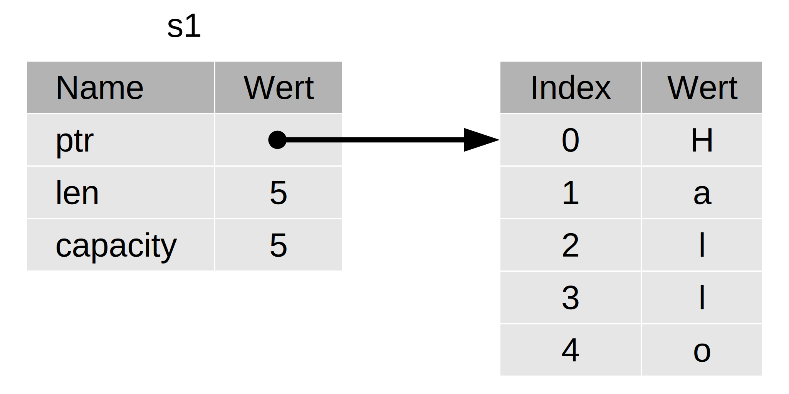
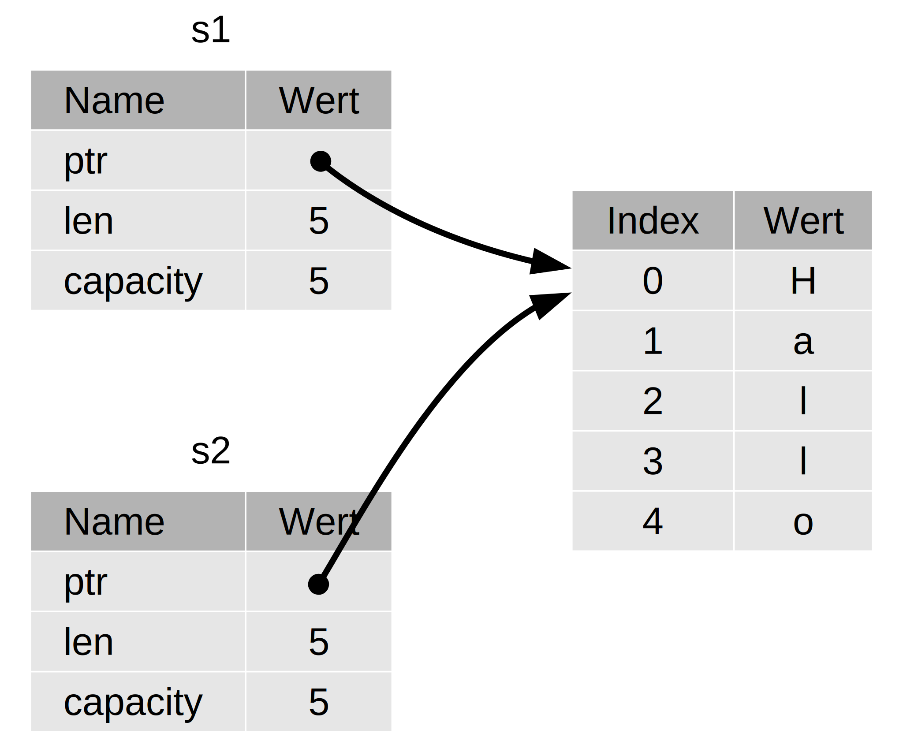
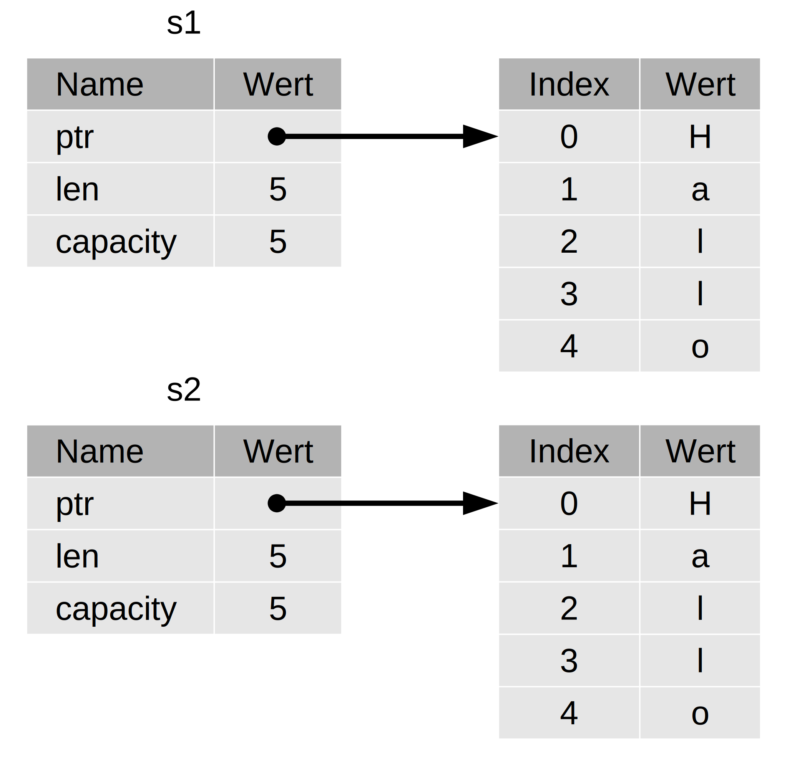
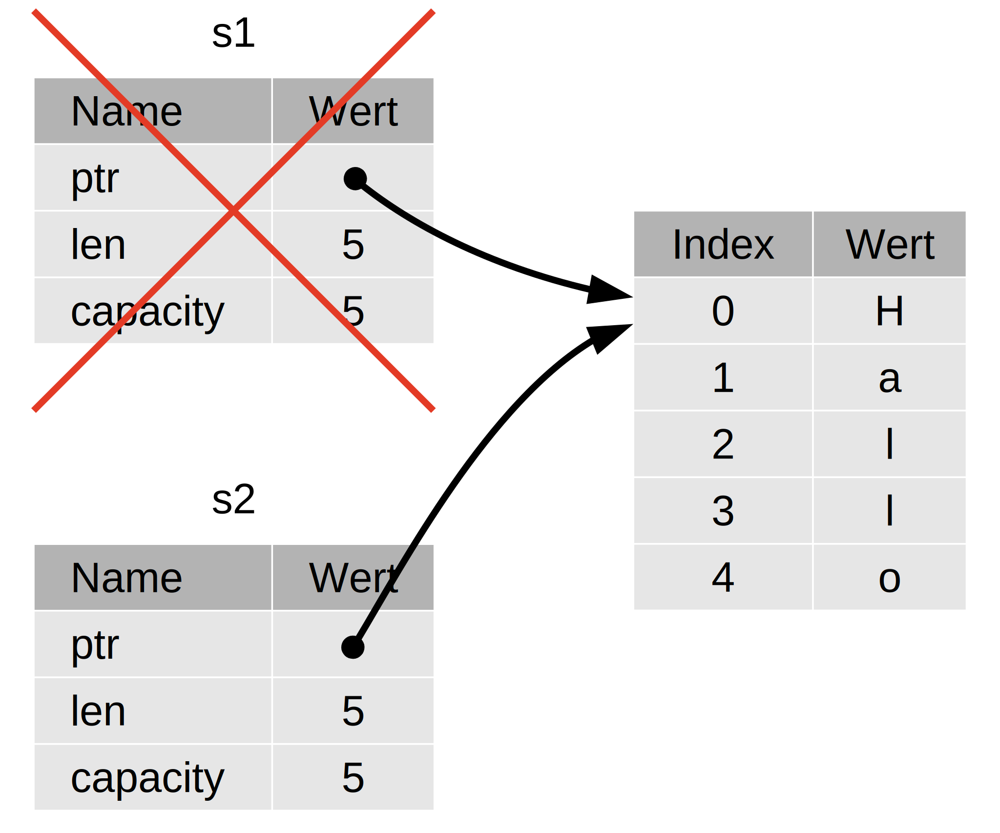
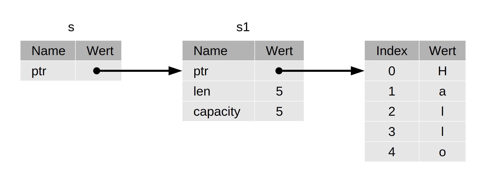
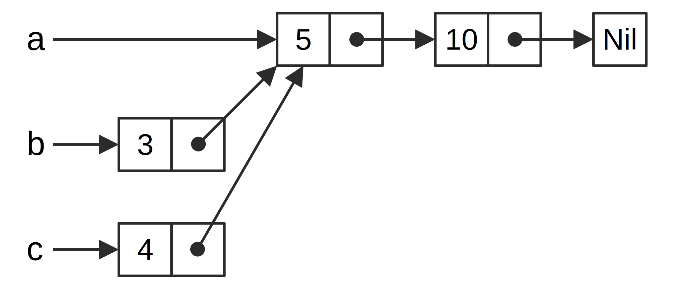

Die Programmiersprache Rust
von Steve Klabnik und Carol Nichols, unter Mitarbeit der Rust-Gemeinschaft; übersetzt ins Deutsche durch die Rust-Gemeinschaft
Diese Version des Textes geht davon aus, dass du Rust 1.65 (veröffentlicht am 2022-11-03) oder später verwendest. Siehe Abschnitt „Installation“ in Kapitel 1 zum Installieren und Aktualisieren von Rust.
Die HTML-Version ist online verfügbar unter
https://doc.rust-lang.org/stable/book/
(englisches Original) und unter
https://rust-lang-de.github.io/rustbook-de/
(deutsche Übersetzung) und offline mit Rust-Installationen, die mit rustup
erfolgt sind; führe rustup docs --book aus um es zu öffnen.
Es sind weitere Gemeinschaftsübersetzungen verfügbar.
Der englische Text ist auch als Taschenbuch und E-Book bei No Starch Press erhältlich.
Vorwort
Es war nicht immer so klar, aber bei der Programmiersprache Rust geht es im Grunde um Befähigung: Egal, welche Art von Code du jetzt schreibst, Rust befähigt dich dazu, weiter zu gehen, mit Vertrauen in einer größeren Vielfalt von Bereichen zu programmieren, als du es zuvor getan hast.
Denken wir zum Beispiel an systemnahe Arbeiten, bei denen Details wie Speicherverwaltung, Datenrepräsentation und Nebenläufigkeit wichtig sind. Traditionellerweise gilt dieser Bereich der Programmierung als geheimnisvoll und nur wenigen Auserwählten zugänglich, die die erforderliche Erfahrung gesammelt haben, um berüchtigte Fallstricke vermeiden zu können. Und selbst diejenigen, die damit arbeiten, tun dies mit Sorgfalt, damit ihr Code nicht angreifbar ist, abstürzt oder fehlerhaft ist.
Rust baut diese Barrieren ab, indem es die alten Fallstricke beseitigt und ein freundliches, ausgefeiltes Instrumentarium zur Verfügung stellt, das dich auf deinem Weg unterstützt. Programmierer, die in die systemnahen Kontrollebenen „eintauchen“ müssen, können dies mit Rust tun, ohne das übliche Risiko von Abstürzen oder Sicherheitslücken einzugehen und ohne die Finessen einer wankelmütigen Werkzeugkette erlernen zu müssen. Besser noch, die Sprache ist so konzipiert, dass sie dich auf natürliche Weise zu zuverlässigem Code führt, der effizient in Bezug auf Geschwindigkeit und Speichernutzung ist.
Programmierer, die bereits mit systemnahem Code arbeiten, können Rust nutzen, um ihre Ambitionen zu steigern. Beispielsweise ist die Einführung von Parallelität in Rust ein relativ risikoarmes Unterfangen: Der Compiler fängt die klassischen Fehler für dich ab. Und du kannst aggressivere Optimierungen in deinem Code wagen mit der Gewissheit, keine versehentlichen Abstürze oder Verwundbarkeiten einzuführen.
Aber Rust ist nicht auf systemnahe Programmierung beschränkt. Es ist ausdrucksstark und ergonomisch genug, um das Schreiben von Kommandozeilen-Anwendungen, Webservern und vielen anderen Arten an Code recht angenehm zu machen – du wirst später in diesem Buch einfache Beispiele dazu finden. Die Arbeit mit Rust ermöglicht es dir, Fähigkeiten zu entwickeln, die von einer Domäne auf eine andere übertragen werden können; du kannst Rust durch Schreiben einer Webanwendung erlernen und dann diese Fähigkeiten auf deinem Raspberry Pi anwenden.
In diesem Buch wird das Potenzial von Rust zur Befähigung seiner Nutzer voll ausgeschöpft. Es ist ein freundlicher und zugänglicher Text, der dir helfen soll, nicht nur dein Wissen über Rust zu erweitern, sondern auch deine Reichweite und dein Selbstvertrauen als Programmierer im Allgemeinen. Also tauche ein, mach dich bereit zum Lernen – und willkommen in der Rust-Gemeinschaft!
– Nicholas Matsakis und Aaron Turon
Einführung
Willkommen bei Die Programmiersprache Rust, einem einführenden Buch über Rust. Die Programmiersprache Rust hilft dir, schnellere und zuverlässigere Software zu schreiben. Ergonomie und systemnahe Kontrolle stehen beim Entwurf von Programmiersprachen oft im Widerspruch – Rust stellt sich diesem Konflikt. Durch den Ausgleich zwischen leistungsstarken, technischen Möglichkeiten und einer großartigen Entwicklererfahrung bietet dir Rust die Möglichkeit, Details systemnah (z.B. Speichernutzung) zu kontrollieren, ohne den ganzen Ärger, der damit typischerweise einhergeht.
Für wen Rust ist
Rust ist für viele Menschen aus einer Vielzahl von Gründen ideal. Schauen wir uns einige der wichtigsten Nutzergruppen an.
Entwicklerteams
Rust erweist sich als produktives Werkzeug in der Zusammenarbeit großer Entwicklerteams mit unterschiedlichem Kenntnisstand in der Systemprogrammierung. Systemnaher Code ist anfällig für eine Vielzahl subtiler Fehler, die in den meisten anderen Sprachen nur durch ausgiebige Tests und sorgfältige Überprüfung des Codes durch erfahrene Entwickler erkannt werden können. In Rust spielt der Compiler eine Art Pförtnerrolle, indem er Code mit diesen schwer fassbaren Fehlern verweigert zu kompilieren, darunter auch Nebenläufigkeitsfehler. Mit der Arbeit an der Seite des Compilers kann sich das Team auf die Programmlogik konzentrieren, anstatt Fehler zu suchen.
Rust bringt auch zeitgemäße Entwicklerwerkzeuge in die Welt der Systemprogrammierung:
- Cargo, das mitgelieferte Abhängigkeitsmanagement- und Bau-Werkzeug, macht das Hinzufügen, Kompilieren und Verwalten von Abhängigkeiten im gesamten Rust-Ökosystem schmerzlos und konsistent.
- Das Formatierungstool Rustfmt sorgt für einen einheitlichen Codierstil bei den Entwicklern.
- Der Rust Sprachdienst (Language Server) ermöglicht Codevervollständigung und im Code angezeigte Fehlermeldungen innerhalb der Entwicklungsumgebung (IDE).
Durch den Einsatz dieser und anderer Werkzeuge des Rust-Ökosystems können Entwickler produktiv arbeiten, während sie Code auf Systemebene schreiben.
Studenten
Rust ist für Studenten und alle, die sich für Systemkonzepte interessieren. Mit Rust haben viele Menschen etwas über Themen wie die Entwicklung von Betriebssystemen gelernt. Die Gemeinschaft ist sehr einladend und beantwortet gerne Fragen der Studenten. Durch Bemühungen wie dieses Buch will das Rust-Team Systemkonzepte mehr Menschen zugänglich machen, insbesondere denen, die neu in der Programmierung sind.
Unternehmen
Hunderte von Unternehmen, große und kleine, setzen Rust für eine Vielzahl von Aufgaben in der Produktion ein, dazu gehören Kommandozeilenwerkzeuge, Webdienste, DevOps-Werkzeuge, eingebettete Geräte, Audio- und Videoanalyse und -transkodierung, Kryptowährungen, Bioinformatik, Suchmaschinen, Anwendungen für das Internet der Dinge, maschinelles Lernen und sogar wesentliche Teile des Webbrowsers Firefox.
Open-Source-Entwickler
Rust ist für Menschen, die die Programmiersprache Rust, die Gemeinschaft, Entwickler-Werkzeuge und Bibliotheken aufbauen möchten. Wir würden uns freuen, wenn du zur Programmiersprache Rust beiträgst.
Menschen, die Geschwindigkeit und Stabilität schätzen
Rust ist für Menschen, die sich nach Geschwindigkeit und Stabilität einer Sprache sehnen. Mit Geschwindigkeit meinen wir sowohl die Geschwindigkeit, mit der Rust-Code ausgeführt werden kann, als auch die Geschwindigkeit, mit der du mit Rust Programme schreiben kannst. Die Prüfungen des Rust-Compilers gewährleisten Stabilität während du neue Funktionen hinzufügst und deinen Code änderst. Dies steht im Gegensatz zu brüchigen Code-Altlasten in Sprachen ohne diese Prüfungen, die Entwickler sich oft scheuen zu verändern. Durch das Streben nach kostenneutralen Abstraktionen, also Funktionalität auf höherer Ebene, die zu genauso schnellem Code wie manuell geschriebener Code auf niedrigerer Ebene kompiliert, bemüht sich Rust, sicheren Code auch zu schnellem Code zu machen.
Die Sprache Rust hofft, auch viele andere Nutzer zu unterstützen; die hier genannten sind nur einige der größten Interessensgruppen. Insgesamt ist es Rusts größtes Bestreben, den Zielkonflikt zu beseitigen, den Programmierer jahrzehntelang hingenommen haben, wenn sie Sicherheit und Produktivität bzw. Geschwindigkeit und Ergonomie erreichen wollten. Versuche es mit Rust und finde heraus, ob dessen Möglichkeiten für dich geeignet sind.
Für wen dieses Buch gedacht ist
In diesem Buch wird davon ausgegangen, dass du bereits Code in einer anderen Programmiersprache geschrieben hast, es spielt aber keine Rolle in welcher. Wir haben versucht, das Material einem breiten Publikum mit unterschiedlichem Programmierhintergrund zugänglich zu machen. Wir verbringen nicht viel Zeit damit, darüber zu sprechen, was Programmieren ist oder wie man darüber denkt. Wenn Programmieren für dich ganz neu ist, wäre es besser, wenn du ein Buch speziell zur Einführung in die Programmierung liest.
Wie man dieses Buch verwendet
Im Allgemeinen geht dieses Buch davon aus, dass du es der Reihe nach von vorne nach hinten liest. Spätere Kapitel bauen auf den Konzepten früherer Kapitel auf. Frühere Kapitel gehen möglicherweise nicht auf die Einzelheiten eines Themas ein, denn in der Regel werden wir es in einem späteren Kapitel erneut aufgreifen.
Du findest in diesem Buch zwei Kapitelarten: Konzeptkapitel und Projektkapitel. In Konzeptkapiteln erfährst du etwas über einen Aspekt von Rust. In Projektkapiteln schreiben wir gemeinsam kleine Programme und wenden das bisher Gelernte an. Die Kapitel 2, 12 und 20 sind Projektkapitel; die übrigen sind Konzeptkapitel.
Kapitel 1 erklärt, wie man Rust installiert, wie man ein „Hallo Welt“-Programm schreibt und wie man Cargo, den Paketmanager und das Bauwerkzeug von Rust, benutzt. Kapitel 2 ist eine praktische Einführung in die Sprache Rust. Hier werden Konzepte auf hohem Niveau behandelt, spätere Kapitel werden zusätzliche Einzelheiten liefern. Wenn du dir schon jetzt die Hände schmutzig machen willst, dann ist Kapitel 2 der richtige Ort dafür. Zunächst willst du vielleicht sogar Kapitel 3 überspringen, in dem es um Rust-Funktionen geht, die denen anderer Programmiersprachen ähneln, und direkt zu Kapitel 4 übergehen, um mehr über den Eigentümerschaftsansatz von Rust zu erfahren. Wenn du jedoch ein besonders akribischer Lerner bist, der lieber erst jedes Detail lernen will, bevor er zum nächsten übergeht, willst du vielleicht Kapitel 2 überspringen und direkt zu Kapitel 3 gehen und danach zu Kapitel 2 zurückkehren, um dann an einem Projekt zu arbeiten und die gelernten Details anzuwenden.
Kapitel 5 bespricht Strukturen und Methoden, und Kapitel 6 behandelt
Aufzählungen, match-Ausdrücke und das if let-Kontrollflusskonstrukt. Du
wirst Strukturen und Aufzählungen verwenden, um benutzerdefinierte Typen in
Rust zu erstellen.
In Kapitel 7 erfährst du mehr über das Modulsystem von Rust und über die Datenschutzregeln zum Organisieren deines Codes und dessen öffentlich zugängliche Programmierschnittstelle (API). In Kapitel 8 werden einige gängige Kollektionsdatenstrukturen, die die Standardbibliothek zur Verfügung stellt, behandelt, z.B. Vektoren, Zeichenketten und Hashtabellen. Kapitel 9 befasst sich mit Rusts Philosophie und Techniken der Fehlerbehandlung.
Kapitel 10 vertieft generische Datentypen, Merkmale und Lebensdauern, die dir
die Möglichkeit geben, Code zu schreiben, der für mehrere Typen passt. In
Kapitel 11 dreht sich alles um das Testen, das selbst mit den
Sicherheitsgarantien von Rust erforderlich ist, um eine korrekte Logik deines
Programms sicherzustellen. In Kapitel 12 werden wir unsere eigene
Implementierung für eine Teilfunktionalität des Kommandozeilenwerkzeugs grep
schreiben, das nach Text in Dateien sucht. Dazu werden wir viele Konzepte
anwenden, die wir in den vorangegangenen Kapiteln kennengelernt haben.
Kapitel 13 befasst sich mit Funktionsabschlüssen und Iteratoren, also Sprachmerkmalen, die von funktionalen Programmiersprachen stammen. In Kapitel 14 werden wir einen genaueren Blick auf Cargo werfen und über bewährte Vorgehensweisen beim Bereitstellen deiner Bibliotheken für andere sprechen. In Kapitel 15 werden intelligente Zeiger, die die Standardbibliothek bereitstellt, und Merkmale, die ihre Funktionalität ermöglichen, erörtert.
In Kapitel 16 gehen wir durch verschiedene Modelle der nebenläufigen Programmierung und sprechen darüber, wie Rust dir hilft, furchtlos mit mehreren Strängen zu programmieren. Kapitel 17 befasst sich mit dem Vergleich zwischen Rust-Idiomen und den Prinzipien der objektorientierten Programmierung, mit denen du vielleicht vertraut bist.
Kapitel 18 ist ein Nachschlagewerk zu Muster und Musterabgleich, einem mächtigen Mittel zum Ausdrücken von Ideen in Rust-Programmen. Kapitel 19 enthält ein Sammelsurium an interessanten fortgeschrittenen Themen, darunter unsicheres Rust, Makros und mehr zu Lebensdauer, Merkmalen, Typen, Funktionen und Funktionsabschlüssen.
In Kapitel 20 werden wir ein Projekt abschließen, bei dem wir einen systemnahen, nebenläufigen Webdienst implementieren!
Schließlich enthalten einige Anhänge nützliche Informationen über die Sprache in einem eher referenzartigen Format. Anhang A enthält die Schlüsselwörter von Rust, Anhang B die Operatoren und Symbole von Rust, Anhang C ableitbare Merkmalen, die von der Standardbibliothek mitgebracht werden, Anhang D nützliche Entwicklungswerkzeuge und Anhang E erläutert die Rust-Ausgaben. In Anhang F findest du Übersetzungen des Buches, und in Anhang G erfährst du, wie Rust erstellt wird und was nächtliches (nightly) Rust ist.
Es gibt keinen falschen Weg, dieses Buch zu lesen: Wenn du was überspringen willst, nur zu! Möglicherweise musst du zu früheren Kapiteln zurückkehren, wenn du irritiert bist. Aber tue, was immer für dich passt.
Ein wichtiger Teil beim Lernen von Rust ist das Verstehen der Fehlermeldungen, die der Compiler anzeigt: Diese leiten dich zum funktionierenden Code. Daher werden wir viele Beispiele bringen, die nicht kompilieren, zusammen mit der jeweiligen Fehlermeldung des Compilers. Wenn du also ein zufälliges Beispiel eingibst und ausführen willst, lässt es sich möglicherweise nicht kompilieren! Stelle sicher, dass du den umgebenden Text liest, um zu wissen, ob das Beispiel, das du ausführen willst, für einen Fehler gedacht ist. Ferris gibt dir einen Hinweis bei Code, der nicht funktionieren soll:
| Ferris | Bedeutung |
|---|---|
 | Dieser Code lässt sich nicht kompilieren! |
 | Dieser Code bricht ab (panic)! |
 | Dieser Code liefert nicht das gewünschte Verhalten. |
In den meisten Situationen führen wir dich zu einer funktionierenden Codeversion, wenn er sich nicht kompilieren lässt.
Quellcode
Die Quelldateien, aus denen dieses Buch generiert wird, findest du unter GitHub.
Erste Schritte
Lass uns mit Rust loslegen! Es gibt viel zu lernen, aber irgendwo muss man bekanntlich anfangen. In diesem Kapitel geht es um folgende Themen:
- Die Installation von Rust in Linux, macOS und Windows
- Das Schreiben eines Programms, das
Hallo Welt!ausgibt - Die Verwendung von
cargo, Rusts Paketmanager und Bauwerkzeug
Installation
Der erste Schritt ist, Rust zu installieren. Wir werden Rust mittels rustup
herunterladen, einem Kommandozeilenwerkzeug für die Verwaltung von Rust-Versionen
und dazugehörigen Werkzeugen. Du wirst eine Internetverbindung für den Download
benötigen.
Anmerkung: Falls du
rustupaus irgendeinem Grund nicht verwenden möchtest, schaue bitte auf der Seite Andere Rust-Installationsmethoden nach anderen Möglichkeiten.
Die folgenden Schritte installieren die neueste stabile Version des Rust-Compilers. Rust garantiert Stabilität und stellt somit sicher, dass alle kompilierbaren Beispiele in diesem Buch auch mit neueren Rust-Versionen kompilierbar bleiben werden. Die Konsolenausgabe der Beispiele kann sich zwischen Versionen leicht unterscheiden, weil Rust oft Fehlermeldungen und Warnungen verbessert. Anders ausgedrückt, jede neuere stabile Version von Rust, die du mithilfe dieser Schritte installierst, sollte wie erwartet mit dem Inhalt dieses Buches funktionieren.
Kommandozeilen-Schreibweise
In diesem Kapitel und im ganzen Buch werden wir einige Befehle auf der Konsole zeigen. Alle Zeilen, die du in die Konsole eingeben sollst, beginnen mit
$. Du brauchst das$-Zeichen nicht einzugeben; es weist nur auf den Beginn jedes Befehls hin. Zeilen, die nicht mit$beginnen, zeigen normalerweise die Ausgabe eines vorherigen Befehls. PowerShell-spezifische Beispiele werden außerdem>anstelle von$verwenden.
Die Installation von rustup in Linux und macOS
Falls du Linux oder macOS verwendest, öffne ein Konsolenfenster und gib den folgenden Befehl ein:
$ curl --proto '=https' --tlsv1.2 https://sh.rustup.rs -sSf | sh
Dieser Befehl lädt ein Skript herunter und startet die Installation
von rustup, welches die neueste stabile Version von Rust installiert.
Du wirst ggf. aufgefordert, dein Passwort einzugeben. Nach erfolgreicher
Installation erscheint folgende Zeile:
Rust is installed now. Great!
Außerdem benötigst su einen Programmbinder (linker), ein Programm, das Rust verwendet, um die kompilierten Ausgaben in eine Datei zusammenzuführen. Wahrscheinlich hast du bereits einen. Wenn du Linker-Fehler erhältst, solltest du einen C-Compiler installieren, der in der Regel auch einen Linker enthält. Ein C-Compiler ist auch deshalb nützlich, weil einige gängige Rust-Pakete von C-Code abhängen und daher einen C-Compiler benötigen.
Unter macOS erhältst du einen C-Compiler, indem du folgendes ausführst:
$ xcode-select --install
Linux-Benutzer sollten in der Regel GCC oder Clang installieren, je nach
Dokumentation ihrer Distribution. Wenn du zum Beispiel Ubuntu verwendest,
kannst du das Paket build-essential installieren.
Die Installation von rustup in Windows
Rufe https://www.rust-lang.org/tools/install auf und folge den Anweisungen, um Rust in Windows zu installieren. Während der Installation wirst du eine Meldung erhalten, dass du auch die MSVC Bauwerkzeuge für Visual Studio 2013 oder höher benötigst.
Um die Bauwerkzeuge zu erhalten, musst du Visual Studio 2022 installieren. Wenn du gefragt wirst, welche Komponenten installiert werden sollen, gib folgendes an:
- „Desktop Development with C++“
- Das Windows 10 oder 11 SDK
- Das englische Sprachpaket zusammen mit einem beliebigen anderen Sprachpaket deiner Wahl.
Der Rest dieses Buchs verwendet Befehle, die sowohl in cmd.exe als auch in der PowerShell funktionieren. Falls es spezifische Unterschiede geben sollte, werden wir diese erläutern.
Fehlersuche
Um zu überprüfen, ob du Rust korrekt installiert hast, öffne eine Kommandozeile und gib folgende Zeile ein:
$ rustc --version
Du solltest die Versionsnummer, den Commit-Hash und das Commit-Datum für die letzte stabile Version, die veröffentlicht wurde, in folgendem Format sehen:
rustc x.y.z (abcabcabc jjjj-mm-tt)
Wenn du diese Information siehst, hast du Rust erfolgreich installiert! Wenn du
diese Information nicht siehst, überprüfe, ob Rust in deiner Systemvariable
%PATH% wie folgt enthalten ist.
In Windows CMD verwende:
> echo %PATH%
In PowerShell verwende:
> echo $env:Path
In Linux und macOS verwende:
$ echo $PATH
Wenn das alles korrekt ist und Rust immer noch nicht funktioniert, gibt es mehrere Stellen, an denen du Hilfe bekommen kannst. Wie du mit anderen Rust-Entwicklern in Kontakt treten kannst, erfährst du auf der Gemeinschafts-Seite.
Aktualisieren und Deinstallieren
Nachdem du Rust mithilfe von rustup installiert hast, ist es einfach,
auf die neueste Version zu aktualisieren. Führe folgenden Befehl auf der
Kommandozeile aus:
$ rustup update
Um Rust und rustup zu deinstallieren, führe folgenden Befehl aus:
$ rustup self uninstall
Lokale Dokumentation
Die Rust-Installation enthält auch eine lokale Kopie der Dokumentation, sodass
du sie ohne Internetverbindung lesen kannst. Führe rustup doc aus, um die
lokale Dokumentation in deinem Browser zu öffnen.
Falls du dir nicht sicher bist, wie du einen Typ oder eine Funktion aus der Standardbibliothek verwenden sollst, dann schau in der API-Dokumentation nach!
Hallo Welt
Nun, da du Rust installiert hast, lass uns dein erstes Rust-Programm schreiben.
Wenn man eine neue Sprache lernt, ist es üblich, ein kleines Programm zu
schreiben, das den Text Hallo Welt! auf dem Bildschirm ausgibt, also werden
wir hier das gleiche tun!
Hinweis: Dieses Buch setzt grundlegende Vertrautheit mit der Kommandozeile voraus. Rust stellt keine besonderen Anforderungen an deine Textbearbeitung oder Werkzeuge oder an den Ort, an dem dein Code lebt. Wenn du also lieber eine integrierte Entwicklungsumgebung (IDE) statt der Kommandozeile verwenden möchtest, kannst du deine bevorzugte IDE verwenden. Viele IDEs bieten mittlerweile einen gewissen Grad an Rust-Unterstützung; Einzelheiten findest du in der Dokumentation der IDE. Das Rust-Team hat sich darauf konzentriert, eine großartige IDE-Unterstützung mittels
rust-analyzerzu ermöglichen. Siehe Anhang D für weitere Details.
Erstellen eines Projektverzeichnisses
Du beginnst damit, ein Verzeichnis zum Speichern deines Rust-Codes zu erstellen. Es ist Rust egal, wo dein Code lebt, aber für die Übungen und Projekte in diesem Buch schlagen wir vor, ein Verzeichnis projects in deinem Hauptverzeichnis anzulegen und all deine Projekte dort abzulegen.
Öffne eine Kommandozeile und gib die folgenden Befehle ein, um ein Verzeichnis projects und ein Verzeichnis für das Projekt „Hallo Welt!“ innerhalb des Verzeichnisses projects zu erstellen.
Gib dies bei Linux, macOS und PowerShell unter Windows ein:
$ mkdir ~/projects
$ cd ~/projects
$ mkdir hello_world
$ cd hello_world
Bei Windows CMD gib dies ein:
> mkdir "%USERPROFILE%\projects"
> cd /d "%USERPROFILE%\projects"
> mkdir hello_world
> cd hello_world
Schreiben und Ausführen eines Rust-Programms
Als nächstes erstelle eine neue Quelldatei und nenne sie main.rs. Rust-Dateien enden immer mit der Erweiterung .rs. Wenn du mehr als ein Wort in deinem Dateinamen verwendest, verwende einen Unterstrich, um sie zu trennen. Verwende zum Beispiel hello_world.rs statt helloworld.rs.
Öffne nun die Datei main.rs, die du gerade erstellt hast, und gib den Code in Codeblock 1-1 ein.
Dateiname: main.rs
fn main() { println!("Hallo Welt!"); }
Codeblock 1-1: Ein Programm, das Hallo Welt!
ausgibt
Speichere die Datei und gehe zurück zu deinem Konsolenfenster. Gib unter Linux oder MacOS die folgenden Befehle ein, um die Datei zu kompilieren und auszuführen:
$ rustc main.rs
$ ./main
Hallo Welt!
Unter Windows gib den Befehl .\main.exe anstelle von ./main ein:
> rustc main.rs
> .\main.exe
Hallo Welt!
Unabhängig von deinem Betriebssystem sollte die Zeichenfolge Hallo Welt! auf
der Kommandozeile ausgegeben werden. Wenn du diese Ausgabe nicht siehst, lies
im Abschnitt „Fehlersuche“ des Installationsabschnitts nach,
wie du Hilfe erhalten kannst.
Wenn Hallo Welt! ausgegeben wurde, herzlichen Glückwunsch! Du hast offiziell
ein Rust-Programm geschrieben. Das macht dich zu einem Rust-Programmierer
– willkommen!
Anatomie eines Rust-Programms
Lass uns im Detail Revue passieren, was gerade in deinem „Hallo Welt!“-Programm passiert ist. Hier ist das erste Teil des Puzzles:
fn main() { }
Diese Zeilen definieren eine Funktion namens main in Rust. Die Funktion
main ist eine Besonderheit: Sie ist immer der erste Code, der in jedem
ausführbaren Rust-Programm ausgeführt wird. In diesem Fall deklariert die erste
Zeile eine Funktion mit dem namen main, die keine Parameter hat und nichts
zurückgibt. Wenn es Parameter gäbe, würden sie innerhalb der Klammern ()
stehen.
Der Funktionsrumpf in geschweifte Klammern {} eingehüllt. Rust erfordert
diese um alle Funktionsrümpfe. Es ist guter Stil, die öffnende geschweifte
Klammer in dieselbe Zeile wie die Funktionsdeklaration zu platzieren und
dazwischen ein Leerzeichen einzufügen.
Hinweis: Wenn du einen Standardstil für alle Rust-Projekte verwenden möchtest, kannst du ein automatisches Formatierungswerkzeug namens
rustfmtverwenden, um deinen Code in einem bestimmten Stil zu formatieren (mehr überrustfmtim Anhang D). Das Rust-Team hat dieses Tool wierustcin die Standard-Rust-Distribution aufgenommen, es sollte also bereits auf deinem Computer installiert sein!
Innerhalb der Funktion main befindet sich der folgende Code:
#![allow(unused)] fn main() { println!("Hallo Welt!"); }
Diese Zeile erledigt die ganze Arbeit in diesem kleinen Programm: Sie gibt Text auf dem Bildschirm aus. Hier gibt es vier wichtige Details zu beachten.
Erstens wird im Rust-Stil mit vier Leerzeichen eingerückt, nicht mit einem Tabulator.
Zweitens ruft println! ein Rust-Makro auf. Wenn es stattdessen eine Funktion
aufrufte, würde diese als println (ohne !) angegeben werden. Wir werden die
Rust-Makros in Kapitel 19 ausführlicher besprechen. Im Moment musst du nur
wissen, dass die Verwendung eines ! bedeutet, dass du ein Makro anstelle
einer normalen Funktion aufrufst und dass Makros nicht immer denselben Regeln
folgen wie Funktionen.
Drittens siehst du die Zeichenkette "Hallo Welt!". Wir übergeben diese
Zeichenkette als Argument an println!, und die Zeichenkette wird auf dem
Bildschirm ausgegeben.
Viertens beenden wir die Zeile mit einem Semikolon (;), was anzeigt, dass
dieser Ausdruck beendet ist und der nächste beginnen kann. Die meisten Zeilen
eines Rust-Codes enden mit einem Semikolon.
Kompilieren und Ausführen sind getrennte Schritte
Du hast gerade ein neu erstelltes Programm ausgeführt, also lass uns jeden Schritt in diesem Prozess untersuchen.
Bevor du ein Rust-Programm ausführst, musst du es mit dem Rust-Compiler
kompilieren, indem du den Befehl rustc eingibst und ihm den Namen deiner
Quelldatei übergibst, so wie hier:
$ rustc main.rs
Wenn du einen C- oder C++-Hintergrund hast, wirst du feststellen, dass dies
ähnlich wie gcc oder clang ist. Nach erfolgreicher Kompilierung gibt Rust
eine ausführbare Binärdatei aus.
Unter Linux, MacOS und PowerShell unter Windows kannst du die ausführbare Datei
sehen, indem du den Befehl ls in deiner Konsole eingibst:
$ ls
main main.rs
Unter Linux und MacOS siehst du zwei Dateien. Mit PowerShell unter Windows siehst du die gleichen drei Dateien, die du mit CMD sehen würdest. Bei CMD unter Windows würdest du folgendes eingeben:
> dir /B %= die Option /B bewirkt, dass nur die Dateinamen angezeigt werden =%
main.exe
main.pdb
main.rs
Dies zeigt die Quellcodedatei mit der Erweiterung .rs, die ausführbare Datei (main.exe unter Windows, aber main auf allen anderen Plattformen) und, bei Verwendung von Windows, eine Datei mit Debugging-Informationen mit der Erweiterung .pdb. Von hier aus führst du die Datei main oder main.exe aus, so wie hier:
$ ./main # oder .\main.exe unter Windows
Wenn main.rs dein „Hallo Welt!“-Programm wäre, würde diese Zeile „Hallo Welt!“ in deiner Konsole ausgeben.
Wenn du mit einer dynamischen Sprache wie Ruby, Python oder JavaScript besser vertraut bist, bist du es möglicherweise nicht gewohnt, ein Programm in getrennten Schritten zu kompilieren und auszuführen. Rust ist eine vorab kompilierte (ahead-of-time compiled) Sprache, d.h. du kannst ein Programm kompilieren und die ausführbare Datei an jemand anderen weitergeben, und dieser kann das Programm auch ohne Installation von Rust ausführen. Wenn du jemandem eine .rb-, .py- oder .js-Datei gibst, muss er eine Ruby-, Python- bzw. JavaScript-Implementierung installiert haben. Aber in diesen Sprachen benötigst du nur einen Befehl, um dein Programm zu kompilieren und auszuführen. Beim Sprachdesign ist alles ein Kompromiss.
Einfach mit rustc zu kompilieren ist für einfache Programme in Ordnung, aber
wenn dein Projekt wächst, wirst du alle Optionen verwalten und es einfach
machen wollen, deinen Code weiterzugeben. Als Nächstes stellen wir dir das
Cargo-Tool vor, das dir beim Schreiben von Rust-Programmen aus der realen Welt
helfen wird.
Hallo Cargo
Cargo ist das Bau-System (build system) und der Paketmanager von Rust. Die meisten Rust-Entwickler verwenden dieses Werkzeug, um ihre Rust-Projekte zu verwalten, weil Cargo viele Aufgaben für dich erledigt, z.B. Bauen deines Codes, Herunterladen der Bibliotheken, von denen dein Code abhängt, und das Bauen dieser Bibliotheken. (Wir nennen Bibliotheken, die dein Code benötigt, Abhängigkeiten (dependencies).)
Die einfachsten Rust-Programme, wie das, das wir bisher geschrieben haben, haben keine Abhängigkeiten. Wenn wir also das „Hallo Welt!“-Projekt mit Cargo gebaut hätten, würde es nur den Teil von Cargo verwenden, der für das Bauen deines Codes zuständig ist. Wenn du komplexere Rust-Programme schreibst, wirst du Abhängigkeiten hinzufügen, und wenn du ein Projekt mit Cargo beginnst, wird das Hinzufügen von Abhängigkeiten viel einfacher sein.
Da die überwiegende Mehrheit der Rust-Projekte Cargo verwendet, geht der Rest dieses Buches davon aus, dass auch du Cargo verwendest. Cargo wird mit Rust installiert, wenn du die offiziellen Installationsprogramme verwendet hast, die im Abschnitt „Installation“ besprochen werden. Wenn du Rust auf eine andere Weise installiert hast, prüfe, ob Cargo installiert ist, indem du Folgendes in dein Terminal eingibst:
$ cargo --version
Wenn du eine Versionsnummer siehst, hast du es! Wenn du einen Fehler siehst,
z.B. command not found, schaue in der Dokumentation zu deiner
Installationsmethode nach, um festzustellen, wie du Cargo separat installieren
kannst.
Projekt mit Cargo erstellen
Lass uns mit Cargo ein neues Projekt erstellen und uns ansehen, wie es sich von unserem ursprünglichen „Hallo Welt!“-Projekt unterscheidet. Navigiere zurück zu deinem projects-Verzeichnis (oder wo auch immer du dich entschieden hast, deinen Code zu speichern). Führe dann auf einem beliebigen Betriebssystem die folgenden Schritte aus:
$ cargo new hello_cargo
$ cd hello_cargo
Der erste Befehl erstellt ein neues Verzeichnis und ein Projekt namens hello_cargo. Wir haben unser Projekt hello_cargo genannt und Cargo erstellt seine Dateien in einem Verzeichnis mit demselben Namen.
Gehe in das Verzeichnis hello_cargo und liste die Dateien auf. Du wirst sehen, dass Cargo zwei Dateien und ein Verzeichnis für uns generiert hat: Eine Datei Cargo.toml und ein Verzeichnis src mit einer Datei main.rs darin.
Es hat auch ein neues Git-Repository zusammen mit einer Datei .gitignore
initialisiert. Git-Dateien werden nicht erzeugt, wenn du cargo new innerhalb
eines existierenden Git-Repositories ausführst; du kannst dieses Verhalten
überschreiben, indem du cargo new --vcs=git verwendest.
Hinweis: Git ist ein gebräuchliches Versionskontrollsystem. Du kannst
cargo newanpassen, um ein anderes Versionskontrollsystem oder kein Versionskontrollsystem zu verwenden, indem du das Flag--vcsverwendest. Führecargo new --helpaus, um die verfügbaren Optionen zu sehen.
Öffne Cargo.toml in einem Texteditor deiner Wahl. Es sollte ähnlich wie der Code in Codeblock 1-2 aussehen.
Dateiname: Cargo.toml
[package]
name = "hello_cargo"
version = "0.1.0"
edition = "2021"
# Weitere Schlüssel und ihre Definitionen findest du unter
# https://doc.rust-lang.org/cargo/reference/manifest.html
[dependencies]
Codeblock 1-2: Inhalt von Cargo.toml erzeugt durch
cargo new
Diese Datei liegt im Format TOML (Tom's Obvious, Minimal Language) vor, welches das Konfigurationsformat von Cargo ist.
Die erste Zeile [package] ist eine Abschnittsüberschrift, die anzeigt, dass
die folgenden Anweisungen ein Paket konfigurieren. Wenn wir weitere
Informationen zu dieser Datei hinzufügen, werden wir weitere Abschnitte
hinzufügen.
Die nächsten drei Zeilen legen die Konfigurationsinformationen fest, die Cargo
benötigt, um dein Programm zu kompilieren: Den Namen, die Version und die zu
verwendende Rust-Ausgabe. Über den Schlüssel edition sprechen wir in Anhang
E.
Die letzte Zeile [dependencies] ist der Anfang eines Abschnitts, in dem du
alle Abhängigkeiten deines Projekts auflisten kannst. In Rust werden
Code-Pakete als Kisten (crates) bezeichnet. Wir werden keine anderen Kisten
für dieses Projekt benötigen, aber wir werden es im ersten Projekt in Kapitel 2
tun, also werden wir dann diesen Abhängigkeits-Abschnitt verwenden.
Öffne nun src/main.rs und wirf einen Blick darauf:
Dateiname: src/main.rs
fn main() { println!("Hello, world!"); }
Cargo hat für dich ein „Hello, world!“-Programm generiert, genau wie das, das wir in Codeblock 1-1 geschrieben haben! Die Unterschiede zwischen unserem Projekt und dem Projekt, das Cargo generiert hat, bestehen bisher darin, dass Cargo den Code im Verzeichnis src abgelegt hat, und wir haben eine Konfigurationsdatei Cargo.toml im obersten Verzeichnis.
Cargo erwartet, dass deine Quelldateien innerhalb des src-Verzeichnisses liegen. Das Projektverzeichnis der obersten Ebene ist nur für README-Dateien, Lizenzinformationen, Konfigurationsdateien und alles andere, was nicht mit deinem Code zusammenhängt. Das Verwenden von Cargo hilft dir, deine Projekte zu organisieren. Es gibt einen Platz für alles und alles ist an seinem Platz.
Wenn du ein Projekt begonnen hast, das Cargo nicht verwendet, wie wir es mit dem Projekt „Hallo Welt!“ getan haben, kannst du es in ein Projekt umwandeln, das Cargo verwendet. Verschiebe den Projektcode in das Verzeichnis src und erstelle eine entsprechende Cargo.toml-Datei.
Bauen und Ausführen eines Cargo-Projekts
Schauen wir uns nun an, was anders ist, wenn wir das „Hello, world!“-Programm mit Cargo bauen und ausführen. Von deinem hello_cargo-Verzeichnis aus baust du dein Projekt, indem du den folgenden Befehl eingibst:
$ cargo build
Compiling hello_cargo v0.1.0 (file:///projects/hello_cargo)
Finished dev [unoptimized + debuginfo] target(s) in 2.85 secs
Dieser Befehl erzeugt eine ausführbare Datei in target/debug/hello_cargo (oder target\debug\hello_cargo.exe unter Windows) und nicht in deinem aktuellen Verzeichnis. Da standardmäßig für den Debug-Modus gebaut wird, legt Cargo die Binärdatei in einem Verzeichnis namens debug ab. Mit diesem Befehl kannst du die ausführbare Datei ausführen:
$ ./target/debug/hello_cargo # oder .\target\debug\hello_cargo.exe unter Windows
Hello, world!
Wenn alles gut geht, sollte Hello, world! im Terminal ausgegeben werden. Wenn
cargo build zum ersten Mal ausgeführt wird, erzeugt Cargo auch eine neue
Datei auf der obersten Ebene: Cargo.lock. Diese Datei verfolgt die genauen
Versionen der Abhängigkeiten in deinem Projekt. Dieses Projekt hat keine
Abhängigkeiten, daher ist die Datei etwas spärlich. Du musst diese Datei
niemals manuell ändern; Cargo verwaltet ihren Inhalt für dich.
Wir haben gerade ein Projekt mit cargo build gebaut und es mit
./target/debug/hello_cargo ausgeführt, aber wir können auch cargo run
verwenden, um den Code zu kompilieren und dann die resultierende ausführbare
Datei mit einem einzigen Befehl auszuführen:
$ cargo run
Finished dev [unoptimized + debuginfo] target(s) in 0.0 secs
Running `target/debug/hello_cargo`
Hello, world!
Das Verwenden von cargo run ist bequemer, als sich daran erinnern zu müssen,
cargo build auszuführen und dann den gesamten Pfad zur Binärdatei zu
verwenden, daher verwenden die meisten Entwickler cargo run.
Beachte, dass wir diesmal keine Ausgabe gesehen haben, die darauf hinweist,
dass Cargo hello_cargo kompiliert hat. Cargo fand heraus, dass sich die
Dateien nicht geändert hatten, also hat es nicht neu gebaut, sondern ließ
einfach die Binärdatei laufen. Wenn du deinen Quellcode geändert hättest, hätte
Cargo das Projekt vor der Ausführung neu kompiliert, und du hättest diese
Ausgabe gesehen:
$ cargo run
Compiling hello_cargo v0.1.0 (file:///projects/hello_cargo)
Finished dev [unoptimized + debuginfo] target(s) in 0.33 secs
Running `target/debug/hello_cargo`
Hello, world!
Cargo bietet auch einen Befehl namens cargo check. Dieser Befehl überprüft
schnell deinen Code, um sicherzustellen, dass er kompiliert, erzeugt aber keine
ausführbare Datei:
$ cargo check
Checking hello_cargo v0.1.0 (file:///projects/hello_cargo)
Finished dev [unoptimized + debuginfo] target(s) in 0.32 secs
Warum willst du keine ausführbare Datei? Häufig ist cargo check viel
schneller als cargo build, weil es den Schritt der Erstellung einer
ausführbaren Datei überspringt. Wenn du deine Arbeit während des Schreibens des
Codes ständig überprüfst, wird das Verwenden von cargo check den Prozess
beschleunigen! Daher führen viele Rust-Entwickler während des Schreibens ihres
Programms regelmäßig cargo check aus, um sicherzustellen, dass das Programm
kompiliert. Dann lassen sie cargo build laufen, wenn sie bereit sind, die
ausführbare Datei zu benutzen.
Lasse uns zusammenfassen, was wir bisher über Cargo gelernt haben:
- Wir können ein Projekt mit
cargo newerstellen. - Wir können ein Projekt mit
cargo buildbauen. - Wir können ein Projekt mit
cargo runin einem Schritt bauen und ausführen. - Wir können ein Projekt mit
cargo checkbauen, ohne eine Binärdatei zu erzeugen, um auf Fehler zu prüfen. - Anstatt das Ergebnis des Bauvorgangs im selben Verzeichnis wie unser Code abzulegen, legt Cargo es im Verzeichnis target/debug ab.
Ein zusätzlicher Vorteil der Verwendung von Cargo ist, dass die Befehle unabhängig vom Betriebssystem sind, mit dem du arbeitest. Daher werden wir an dieser Stelle keine spezifischen Anweisungen für Linux und macOS gegenüber Windows mehr geben.
Bauen einer Freigabe (release)
Wenn dein Projekt schließlich zur Freigabe bereit ist, kannst du cargo build --release verwenden, um es mit Optimierungen zu kompilieren. Dieser Befehl
erzeugt eine ausführbare Datei in target/release anstelle von target/debug.
Durch die Optimierungen läuft dein Rust-Code schneller, aber wenn du sie
einschaltest, verlängert sich die Zeit, die dein Programm zum Kompilieren
benötigt. Aus diesem Grund gibt es zwei verschiedene Profile: Eines für die
Entwicklung, wenn du schnell und oft neu bauen willst, und ein anderes für das
Erstellen des endgültigen Programms, das du einem Benutzer gibst, das nicht
wiederholt neu gebaut wird und das so schnell wie möglich läuft. Wenn du einen
Laufzeit-Benchmark deines Codes durchführst, stelle sicher, dass du cargo build --release ausführst und den Benchmark mit der ausführbaren Datei in
target/release durchführst.
Cargo als Konvention
Bei einfachen Projekten bietet Cargo nicht viel mehr Wert als das bloße
Verwenden von rustc, aber es wird sich in dem Maße bewähren, wie deine
Programme immer komplizierter werden. Sobald Programme auf mehrere Dateien
anwachsen oder eine Abhängigkeit benötigen, ist es viel einfacher, Cargo den
Bauvorgang koordinieren zu lassen.
Auch wenn das Projekt hello_cargo einfach ist, so verwendet es jetzt einen
Großteil der realen Werkzeuge, die du im Rest deiner Rust-Karriere verwenden
wirst. Tatsächlich kannst du, um an bestehenden Projekten zu arbeiten, die
folgenden Befehle verwenden, um den Code mit Git auszuchecken, in das
Verzeichnis dieses Projekts zu wechseln und zu bauen:
$ git clone example.org/someproject
$ cd someproject
$ cargo build
Weitere Informationen über Cargo findest du unter seiner Dokumentation.
Zusammenfassung
Du hast deine Rust-Reise bereits gut begonnen! In diesem Kapitel hast du gelernt, wie es geht:
- Installiere die neueste stabile Version von Rust mit
rustup. - Aktualisiere auf eine neuere Rust-Version.
- Öffne die lokal installierte Dokumentation.
- Schreibe und führe ein „Hallo Welt!“-Programm aus, direkt mittels
rustc. - Schreibe und führe ein neues Projekt aus mittels Cargo-Konventionen.
Dies ist ein guter Zeitpunkt, ein umfangreicheres Programm zu erstellen, um sich an das Lesen und Schreiben von Rust-Code zu gewöhnen. In Kapitel 2 werden wir also ein Ratespielprogramm erstellen. Wenn du lieber damit beginnen möchtest, zu lernen, wie gängige Programmierkonzepte in Rust funktionieren, lies Kapitel 3 und kehre dann zu Kapitel 2 zurück.
Ein Ratespiel programmieren
Lass uns den Sprung in Rust wagen, indem wir gemeinsam ein praktisches Projekt
durcharbeiten! Dieses Kapitel führt dich in einige gängige Rust-Konzepte ein,
indem es dir zeigt, wie du diese in einem realen Programm verwenden kannst. Du
lernst let, match, Methoden, assoziierte Funktionen, externe Kisten
(crates) und mehr kennen! In den folgenden Kapiteln werden wir diese Ideen
ausführlicher behandeln. In diesem Kapitel wirst du nur die Grundlagen üben.
Wir werden ein klassisches Programmierproblem für Anfänger implementieren: Ein Ratespiel. Und so funktioniert es: Das Programm erzeugt eine zufällige ganze Zahl zwischen 1 und 100. Dann wird es den Spieler auffordern, eine Schätzung einzugeben. Nachdem eine Schätzung eingegeben wurde, zeigt das Programm an, ob die Schätzung zu niedrig oder zu hoch ist. Wenn die Schätzung korrekt ist, gibt das Spiel eine Glückwunschnachricht aus und beendet sich.
Aufsetzen eines neuen Projekts
Um ein neues Projekt aufzusetzen, gehe in das Verzeichnis projects, das du in Kapitel 1 erstellt hast, und erstelle ein neues Projekt mit Cargo, wie folgt:
$ cargo new guessing_game
$ cd guessing_game
Der erste Befehl cargo new nimmt den Namen des Projekts (guessing_game) als
erstes Argument. Der zweite Befehl wechselt in das Verzeichnis des neuen
Projekts.
Schaue dir die generierte Datei Cargo.toml an:
Dateiname: Cargo.toml
[package]
name = "guessing_game"
version = "0.1.0"
edition = "2021"
# See more keys and their definitions at https://doc.rust-lang.org/cargo/reference/manifest.html
[dependencies]
Wie du in Kapitel 1 gesehen hast, generiert cargo new ein „Hello,
world!“-Programm für dich. Sieh dir die Datei src/main.rs an:
Dateiname: src/main.rs
fn main() { println!("Hello, world!"); }
Kompilieren wir nun dieses „Hello, world!“-Programm und führen es im gleichen
Schritt aus mit dem Befehl cargo run:
$ cargo run
Compiling guessing_game v0.1.0 (file:///projects/guessing_game)
Finished dev [unoptimized + debuginfo] target(s) in 1.50s
Running `target/debug/guessing_game`
Hello, world!
Der Befehl run ist praktisch, wenn du ein Projekt schnell iterieren musst,
wie wir es in diesem Spiel tun werden, indem du jede Iteration schnell testest,
bevor du zur nächsten übergehst.
Öffne die Datei src/main.rs erneut. Du wirst den gesamten Code in diese Datei schreiben.
Verarbeiten einer Schätzung
Der erste Teil des Ratespielprogramms fragt nach einer Benutzereingabe, verarbeitet diese Eingabe und überprüft, ob die Eingabe in der erwarteten Form vorliegt. Zu Beginn erlauben wir dem Spieler, eine Schätzung einzugeben. Gib den Code aus Codeblock 2-1 in src/main.rs ein.
Dateiname: src/main.rs
use std::io;
fn main() {
println!("Rate die Zahl!");
println!("Bitte gib deine Schätzung ein.");
let mut guess = String::new();
io::stdin()
.read_line(&mut guess)
.expect("Fehler beim Lesen der Zeile");
println!("Du hast geschätzt: {guess}");
}Codeblock 2-1: Code, der eine Schätzung vom Benutzer erhält und ausgibt
Dieser Code enthält eine Menge Informationen, also gehen wir ihn Zeile für
Zeile durch. Um eine Benutzereingabe zu erhalten und das Ergebnis dann als
Ausgabe auszugeben, müssen wir die Bibliothek io (input/output) in den
Gültigkeitsbereich bringen. Die io-Bibliothek stammt aus der
Standardbibliothek, bekannt als std:
use std::io;
fn main() {
println!("Rate die Zahl!");
println!("Bitte gib deine Schätzung ein.");
let mut guess = String::new();
io::stdin()
.read_line(&mut guess)
.expect("Fehler beim Lesen der Zeile");
println!("Du hast geschätzt: {guess}");
}Standardmäßig hat Rust einige Elemente in der Standardbibliothek definiert, die es in den Gültigkeitsbereich jedes Programms bringt. Diese Menge wird Präludium genannt, und du kannst deren Inhalt in der Dokumentation der Standardbibliothek sehen.
Wenn ein Typ, den du verwenden willst, nicht im Präludium enthalten ist, musst
du diesen Typ explizit mit einer use-Anweisung in den Gültigkeitsbereich
bringen. Das Verwenden der Bibliothek std::io bietet dir eine Reihe von
nützlichen Funktionalitäten, einschließlich der Möglichkeit, Benutzereingaben
entgegenzunehmen.
Wie du in Kapitel 1 gesehen hast, ist die Funktion main der Einstiegspunkt in
das Programm:
use std::io;
fn main() {
println!("Rate die Zahl!");
println!("Bitte gib deine Schätzung ein.");
let mut guess = String::new();
io::stdin()
.read_line(&mut guess)
.expect("Fehler beim Lesen der Zeile");
println!("Du hast geschätzt: {guess}");
}Die Syntax fn deklariert eine neue Funktion; die Klammern () zeigen an,
dass es keine Parameter gibt; und die geschweifte Klammer { beginnt den Rumpf
der Funktion.
Wie du auch in Kapitel 1 gelernt hast, ist println! ein Makro, das eine
Zeichenkette auf dem Bildschirm ausgibt:
use std::io;
fn main() {
println!("Rate die Zahl!");
println!("Bitte gib deine Schätzung ein.");
let mut guess = String::new();
io::stdin()
.read_line(&mut guess)
.expect("Fehler beim Lesen der Zeile");
println!("Du hast geschätzt: {guess}");
}Dieser Code gibt eine Eingabeaufforderung aus, die angibt, um was für ein Spiel es sich handelt, und den Benutzer zur Eingabe auffordert.
Speichern von Werten mit Variablen
Als Nächstes erstellen wir eine Variable, um die Benutzereingabe zu speichern, wie hier:
use std::io;
fn main() {
println!("Rate die Zahl!");
println!("Bitte gib deine Schätzung ein.");
let mut guess = String::new();
io::stdin()
.read_line(&mut guess)
.expect("Fehler beim Lesen der Zeile");
println!("Du hast geschätzt: {guess}");
}Jetzt wird das Programm interessant! Es ist viel los in dieser kleinen Zeile.
Wir verwenden eine let-Anweisung, um eine Variable zu erzeugen. Hier ist ein
weiteres Beispiel:
let apples = 5;Diese Zeile erzeugt eine neue Variable namens apples und bindet sie an den
Wert 5. In Rust sind Variablen standardmäßig unveränderbar (immutable), das
heißt, sobald wir der Variablen einen Wert gegeben haben, wird sich der Wert
nicht mehr ändern. Wir werden dieses Konzept im Abschnitt „Variablen und
Veränderbarkeit“ in Kapitel 3 ausführlich
besprechen. Um eine Variable veränderbar zu machen, ergänzen wir mut vor dem
Variablennamen:
#![allow(unused)] fn main() { let apples = 5; // unveränderbar let mut bananas = 5; // veränderbar }
Anmerkung: Die Syntax
//beginnt einen Kommentar, der bis zum Ende der Zeile weitergeht. Rust ignoriert alles in Kommentaren. Diese werden in Kapitel 3 ausführlicher besprochen.
Zurück zum Programm des Ratespiels. Du weißt jetzt, dass let mut guess eine veränderbare Variable namens guess einführt. Das
Gleichheitszeichen (=) sagt Rust, dass wir jetzt etwas an die Variable binden
wollen. Auf der rechten Seite des Gleichheitszeichens steht der Wert, an den
guess gebunden ist, was das Ergebnis des Aufrufs von String::new ist, einer
Funktion, die eine neue Instanz eines String zurückgibt. String
ist ein von der Standardbibliothek bereitgestellter Zeichenketten-Typ, der ein
wachstumsfähiges, UTF-8-kodiertes Stück Text ist.
Die Syntax :: in der Zeile ::new zeigt an, dass new eine assoziierte
Funktion (associated function) vom Typ String ist. Eine assoziierte
Funktion ist eine Funktion, die auf einem Typ, in diesem Fall String,
implementiert ist. Diese Funktion new erzeugt eine neue, leere Zeichenkette.
Du wirst eine Funktion new bei vielen Typen finden, weil es ein
gebräuchlicher Name für eine Funktion ist, die einen neuen Wert irgendeiner Art
erzeugt.
Insgesamt hat die Zeile let mut guess = String::new(); eine veränderbare
Variable erzeugt, die derzeit an eine neue, leere Instanz eines String
gebunden ist. Uff!
Empfangen von Benutzereingaben
Erinnere dich, dass wir die Ein-/Ausgabefunktionalität aus der
Standardbibliothek mit use std::io; in der ersten Zeile des Programms
eingebunden haben. Jetzt rufen wir die Funktion stdin aus dem Modul io auf,
die es uns ermöglichen wird, Benutzereingaben zu verarbeiten.
use std::io;
fn main() {
println!("Rate die Zahl!");
println!("Bitte gib deine Schätzung ein.");
let mut guess = String::new();
io::stdin()
.read_line(&mut guess)
.expect("Fehler beim Lesen der Zeile");
println!("Du hast geschätzt: {guess}");
}Hätten wir die Bibliothek io nicht am Anfang des Programms mit use std::io;
importiert, könnten wir die Funktion trotzdem verwenden, indem wir den
Funktionsaufruf als std::io::stdin schreiben. Die Funktion stdin gibt eine
Instanz von std::io::Stdin zurück, was ein Typ ist, der eine
Standardeingaberessource (handle to the standard input) für dein Terminal
darstellt.
Die nächste Zeile .read_line(&mut guess) ruft die Methode
read_line der Standardeingaberessource auf, um eine Eingabe vom
Benutzer zu erhalten. Wir übergeben auch das Argument &mut guess an
read_line, um ihm mitzuteilen, in welche Zeichenfolge es die Benutzereingabe
speichern soll. Die Aufgabe von read_line ist es, alles, was der Benutzer in
die Standardeingabe eingibt, an eine Zeichenkette anzuhängen (ohne deren Inhalt
zu überschreiben), daher übergeben wir diese Zeichenkette als Argument. Das
Zeichenketten-Argument muss veränderbar sein, damit die Methode den Inhalt der
Zeichenkette ändern kann.
Das & zeigt an, dass es sich bei diesem Argument um eine Referenz handelt,
die dir eine Möglichkeit bietet, mehrere Teile deines Codes auf einen Datenteil
zugreifen zu lassen, ohne dass du diese Daten mehrfach in den Speicher kopieren
musst. Referenzen sind eine komplexe Funktionalität, und einer der
Hauptvorteile von Rust ist, wie sicher und einfach es ist, Referenzen zu
verwenden. Du musst nicht viele dieser Details kennen, um dieses Programm
fertigzustellen. Im Moment musst du nur wissen, dass Referenzen wie Variablen
standardmäßig unveränderbar sind. Daher musst du &mut guess anstatt &guess
schreiben, um sie veränderbar zu machen. (In Kapitel 4 werden Referenzen
ausführlicher erklärt.)
Behandeln potentieller Fehler mit Result
Wir arbeiten noch immer an dieser Codezeile. Wir besprechen jetzt eine dritte Textzeile, aber beachte, dass sie immer noch Teil einer einzigen logischen Codezeile ist. Der nächste Teil ist diese Methode:
use std::io;
fn main() {
println!("Rate die Zahl!");
println!("Bitte gib deine Schätzung ein.");
let mut guess = String::new();
io::stdin()
.read_line(&mut guess)
.expect("Fehler beim Lesen der Zeile");
println!("Du hast geschätzt: {guess}");
}Wir hätten diesen Code auch so schreiben können:
io::stdin().read_line(&mut guess).expect("Fehler beim Lesen der Zeile");Eine lange Zeile ist jedoch schwer zu lesen, daher ist es am besten, sie
aufzuteilen. Es ist oft ratsam, einen Zeilenumbruch und andere Leerzeichen
einzufügen, um lange Zeilen aufzubrechen, wenn du eine Methode mit der
Syntax .method_name() aufrufst. Lass uns nun besprechen, was diese Zeile
bewirkt.
Wie bereits erwähnt, schreibt read_line die Benutzereingabe in die übergebene
String-Variable, gibt aber darüber hinaus auch einen Result-Wert
zurück.
Result ist eine Aufzählung (enumeration, oder
kurz enum), die einen Datentyp darstellt, der einem von mehreren möglichen
Zuständen annehmen kann.
Wir nennen jeden möglichen Zustand eine Variante.
In Kapitel 6 werden Aufzählungen ausführlicher behandelt. Der Zweck
dieser Result-Typen ist es, Informationen zur Fehlerbehandlung zu kodieren.
Die Varianten von Result sind Ok und Err. Die Variante Ok gibt an, dass
die Operation erfolgreich war, und der erfolgreich
generierte Wert innerhalb von Ok steht.
Die Variante Err bedeutet, dass die Operation fehlgeschlagen
ist, und Err enthält Informationen darüber, wie oder warum die Operation
fehlgeschlagen ist.
Für Werte vom Typ Result sind, wie für Werte jedes Typs, Methoden definiert.
Eine Instanz von Result hat eine Methode expect, die du
aufrufen kannst. Wenn diese io::Result-Instanz ein Err-Wert ist, wird
expect das Programm zum Absturz bringen und die Meldung anzeigen, die du als
Argument an expect übergeben hast. Wenn die Methode read_line ein Err
zurückgibt, ist dies wahrscheinlich das Ergebnis eines Fehlers, der vom
zugrundeliegenden Betriebssystem herrührt. Wenn diese io::Result-Instanz ein
Ok-Wert ist, wird expect den Wert, den Ok hält, als Rückgabewert
verwenden, damit du ihn verwenden kannst. In diesem Fall ist dieser Wert die
Anzahl der Bytes, die der Benutzer in die Standardeingabe eingegeben hat.
Wenn du nicht expect aufrufst, wird das Programm kompiliert, aber du erhältst
eine Warnung:
$ cargo build
Compiling guessing_game v0.1.0 (file:///projects/guessing_game)
warning: unused `Result` that must be used
--> src/main.rs:10:5
|
10 | io::stdin().read_line(&mut guess);
| ^^^^^^^^^^^^^^^^^^^^^^^^^^^^^^^^^^
|
= note: `#[warn(unused_must_use)]` on by default
= note: this `Result` may be an `Err` variant, which should be handled
warning: `guessing_game` (bin "guessing_game") generated 1 warning
Finished dev [unoptimized + debuginfo] target(s) in 0.59s
Rust warnt, dass du den von read_line zurückgegebenen Result-Wert nicht
verwendet hast, was darauf hinweist, dass das Programm einen möglichen Fehler
nicht behandelt hat.
Der richtige Weg, die Warnung zu unterdrücken, ist eine Fehlerbehandlung zu
schreiben, aber da wir dieses Programm einfach nur abstürzen lassen wollen,
wenn ein Problem auftritt, können wir expect verwenden. In Kapitel
9 erfährst du, wie man sich von Fehlern erholt.
Ausgeben von Werten mit println!-Platzhaltern
Abgesehen von der schließenden geschweiften Klammer gibt es in dem bisher hinzugefügten Code nur noch eine weitere Zeile zu besprechen:
use std::io;
fn main() {
println!("Rate die Zahl!");
println!("Bitte gib deine Schätzung ein.");
let mut guess = String::new();
io::stdin()
.read_line(&mut guess)
.expect("Fehler beim Lesen der Zeile");
println!("Du hast geschätzt: {guess}");
}Diese Zeile gibt die Zeichenkette aus, die jetzt die Eingabe des Benutzers
enthält. Der Satz geschweifte Klammern {} ist ein Platzhalter:
Stelle dir {} wie kleine Krebszangen vor, die einen Wert an Ort und Stelle
halten. Wenn du den Wert einer Variablen ausgibst, kann der Variablenname
innerhalb der geschweiften Klammern stehen. Wenn du das Ergebnis der Auswertung
eines Ausdrucks ausgeben willst, füge leere geschweifte Klammern in die
Formatierungszeichenkette ein und gib dann nach der Formatierungszeichenkette
eine durch Komma getrennte Liste von Ausdrücken ein, die in jedem leeren
geschweiften Klammerplatzhalter in derselben Reihenfolge ausgegeben werden
sollen. Das Ausgeben einer Variablen und des Ergebnisses eines Ausdrucks in
einem Aufruf von println! würde wie folgt aussehen:
#![allow(unused)] fn main() { let x = 5; let y = 10; println!("x = {x} und y + 2 = {}", y + 2); }
Dieser Code würde x = 5 und y + 2 = 12 ausgeben.
Testen des ersten Teils
Testen wir den ersten Teil des Ratespiels. Führe ihn mit cargo run aus:
$ cargo run
Compiling guessing_game v0.1.0 (file:///projects/guessing_game)
Finished dev [unoptimized + debuginfo] target(s) in 6.44s
Running `target/debug/guessing_game`
Rate die Zahl!
Bitte gib deine Schätzung ein.
6
Du hast geschätzt: 6
An diesem Punkt ist der erste Teil des Spiels abgeschlossen: Wir erhalten eine Eingabe über die Tastatur und geben sie dann aus.
Generieren einer Geheimzahl
Als Nächstes müssen wir eine Geheimzahl generieren, die der Benutzer versucht
zu erraten. Die Geheimzahl sollte jedes Mal anders sein, damit das Spiel mehr als
einmal Spaß macht. Wir werden eine Zufallszahl zwischen 1 und 100 verwenden,
damit das Spiel nicht zu schwierig wird. Rust enthält noch keine
Zufallszahl-Funktionalität in seiner Standardbibliothek. Das Rust-Team stellt
jedoch eine Kiste rand mit besagter Funktionalität zur
Verfügung.
Verwenden einer Kiste, um mehr Funktionalität zu erhalten
Denke daran, dass eine Kiste eine Sammlung von Rust-Quellcode-Dateien ist. Unser
Projekt "Ratespiel" ist eine binäre Kiste (binary crate), die eine
ausführbare Datei ist. Die Kiste rand ist eine Bibliotheks-Kiste (library
crate), die Code enthält, der in anderen Programmen verwendet werden soll.
Das Koordinieren von externen Kisten ist der Bereich, in dem Cargo glänzt.
Bevor wir Code schreiben können, der rand benutzt, müssen wir die Datei
Cargo.toml so modifizieren, dass die Kiste rand als Abhängigkeit
eingebunden wird. Öffne jetzt diese Datei und füge die folgende Zeile unten
unter der Überschrift des Abschnitts [dependencies] hinzu, den Cargo für dich
erstellt hat. Stelle sicher, dass du rand genau so angibst, wie wir es hier
getan haben, andernfalls funktionieren die Codebeispiele in dieser Anleitung
möglicherweise nicht.
Dateiname: Cargo.toml
[dependencies]
rand = "0.8.5"
In der Datei Cargo.toml ist alles, was nach einer Überschrift folgt, Teil
dieses Abschnitts, der so lange andauert, bis ein anderer Abschnitt beginnt. Im
Abschnitt [dependencies] teilst du Cargo mit, von welchen externen Kisten
dein Projekt abhängt und welche Versionen dieser Kisten du benötigst. In diesem
Fall spezifizieren wir die Kiste rand mit dem semantischen
Versionsspezifikator 0.8.5. Cargo versteht semantische
Versionierung (manchmal auch SemVer genannt), was ein Standard zum
Schreiben von Versionsnummern ist. Die Angabe 0.8.5 ist eigentlich die
Abkürzung für ^0.8.5, was für alle Versionen ab 0.8.5 und kleiner als
0.9.0 steht.
Cargo geht davon aus, dass die öffentliche API dieser Versionen kompatibel zur
Version 0.8.5 ist und diese Angabe stellt sicher, dass du die neueste
Patch-Version erhältst, die noch mit dem Code in diesem Kapitel kompiliert
werden kann. Ab Version 0.9.0 ist nicht garantiert, dass die API mit der in
den folgenden Beispielen verwendeten übereinstimmt.
Lass uns nun, ohne den Code zu ändern, das Projekt bauen, wie in Codeblock 2-2 gezeigt.
$ cargo build
Updating crates.io index
Downloaded rand v0.8.5
Downloaded libc v0.2.127
Downloaded getrandom v0.2.7
Downloaded cfg-if v1.0.0
Downloaded ppv-lite86 v0.2.16
Downloaded rand_chacha v0.3.1
Downloaded rand_core v0.6.3
Compiling libc v0.2.127
Compiling getrandom v0.2.7
Compiling cfg-if v1.0.0
Compiling ppv-lite86 v0.2.16
Compiling rand_core v0.6.3
Compiling rand_chacha v0.3.1
Compiling rand v0.8.5
Compiling guessing_game v0.1.0 (file:///projects/guessing_game)
Finished dev [unoptimized + debuginfo] target(s) in 2.53s
Codeblock 2-2: Die Ausgabe beim Ausführen von cargo build nach dem Hinzufügen der Kiste rand als Abhängigkeit
Möglicherweise siehst du unterschiedliche Versionsnummern (aber dank SemVer sind sie alle mit dem Code kompatibel!) und unterschiedliche Zeilen (je nach Betriebssystem), und die Zeilen können in einer anderen Reihenfolge erscheinen.
Wenn wir eine externe Abhängigkeit einfügen, holt Cargo die neuesten Versionen von allem was die Abhängigkeit aus der Registry benötigt, was eine Kopie der Daten von Crates.io ist. Crates.io ist der Ort, an dem die Menschen im Rust-Ökosystem ihre Open-Source-Rustprojekte für andere zur Nutzung bereitstellen.
Nach dem Aktualisieren der Registry überprüft Cargo den Abschnitt
[dependencies] und lädt alle aufgelisteten Kisten herunter, die noch nicht
heruntergeladen wurden. Obwohl wir nur rand als Abhängigkeit aufgelistet
haben, hat sich Cargo in diesem Fall auch andere Kisten geschnappt, von denen
rand abhängig ist, um zu funktionieren. Nachdem die Kisten heruntergeladen
wurden, kompiliert Rust sie und kompiliert dann das Projekt mit den verfügbaren
Abhängigkeiten.
Wenn du gleich wieder cargo build ausführst, ohne irgendwelche Änderungen
vorzunehmen, erhältst du keine Ausgabe außer der Zeile Finished. Cargo weiß,
dass es die Abhängigkeiten bereits heruntergeladen und kompiliert hat, und du
hast in deiner Datei Cargo.toml nichts daran geändert. Cargo weiß auch, dass
du nichts an deinem Code geändert hast, also wird dieser auch nicht neu
kompiliert. Ohne etwas zu tun zu haben, wird es einfach beendet.
Wenn du die Datei src/main.rs öffnest, eine triviale Änderung vornimmst und sie dann speicherst und neu baust, siehst du nur zwei Zeilen Ausgabe:
$ cargo build
Compiling guessing_game v0.1.0 (file:///projects/guessing_game)
Finished dev [unoptimized + debuginfo] target(s) in 2.53 secs
Diese Zeilen zeigen, dass Cargo nur den Build mit deiner winzigen Änderung an der Datei src/main.rs aktualisiert. Deine Abhängigkeiten haben sich nicht geändert, sodass Cargo weiß, dass es wiederverwenden kann, was es bereits heruntergeladen und kompiliert hat.
Sicherstellen reproduzierbarer Builds mit der Datei Cargo.lock
Cargo verfügt über einen Mechanismus, der sicherstellt, dass du jedes Mal, wenn
du oder jemand anderes deinen Code baut, dasselbe Artefakt neu erstellen
kannst: Cargo wird nur die Versionen der von dir angegebenen Abhängigkeiten
verwenden, bis du etwas anderes angibst. Nehmen wir beispielsweise an, dass
nächste Woche Version 0.8.6 der Kiste rand herauskommt und eine wichtige
Fehlerkorrektur enthält, aber auch eine Regression, die deinen Code bricht. Um
dies zu handhaben, erstellt Rust die Datei Cargo.lock beim ersten Mal, wenn
du cargo build ausführst, die nun im guessing_game-Verzeichnis liegt.
Wenn du ein Projekt zum ersten Mal baust, ermittelt Cargo alle Versionen der Abhängigkeiten, die den Kriterien entsprechen, und schreibt sie dann in die Datei Cargo.lock. Wenn du dein Projekt in der Zukunft baust, wird Cargo sehen, dass die Datei Cargo.lock existiert und die dort angegebenen Versionen verwenden, anstatt die ganze Arbeit der Versionsfindung erneut zu machen. Auf diese Weise erhältst du automatisch einen reproduzierbaren Build. Mit anderen Worten, dein Projekt bleibt dank der Datei Cargo.lock auf 0.8.5, bis du explizit die Versionsnummer erhöhst. Da die Datei Cargo.lock für das reproduzierbare Bauen wichtig ist, wird sie oft zusammen mit dem restlichen Code deines Projekts in die Versionskontrolle eingecheckt.
Aktualisieren einer Kiste, um eine neue Version zu erhalten
Wenn du eine Kiste aktualisieren willst, bietet Cargo den Befehl update an,
der die Datei Cargo.lock ignoriert und alle neuesten Versionen, die deinen
Spezifikationen entsprechen, in Cargo.toml herausfindet. Cargo schreibt diese
Versionen dann in die Datei Cargo.lock. Andernfalls wird Cargo standardmäßig
nur nach Versionen größer als 0.8.5 und kleiner als 0.9.0 suchen. Wenn die
Kiste rand zwei neue Versionen 0.8.6 und 0.9.0 veröffentlicht hat, würdest du
folgendes sehen, wenn du cargo update ausführst:
$ cargo update
Updating crates.io index
Updating rand v0.8.5 -> v0.8.6
Cargo ignoriert die Version 0.9.0. An diesem Punkt würdest du auch eine
Änderung in deiner Datei Cargo.lock bemerken, die feststellt, dass die
Version der Kiste rand, die du jetzt benutzt, 0.8.6 ist. Um die
rand-Version 0.9.0 oder irgendeine Version aus der 0.9.x-Serie zu
verwenden, müsstest du stattdessen die Datei Cargo.toml anpassen, damit sie
wie folgt aussieht:
[dependencies]
rand = "0.9.0"
Wenn du das nächste Mal cargo build ausführst, wird Cargo die Registry der
verfügbaren Kisten aktualisieren und deine rand-Anforderungen entsprechend
der von dir angegebenen neuen Version neu bewerten.
Es gibt noch viel mehr über Cargo und seinem Ökosystem zu sagen, das wir in Kapitel 14 besprechen werden, aber für den Moment ist das alles, was du wissen musst. Cargo macht es sehr einfach, Bibliotheken wiederzuverwenden, sodass die Rust-Entwickler in der Lage sind, kleinere Projekte zu schreiben, die aus einer Reihe von Paketen zusammengestellt werden.
Generieren einer Zufallszahl
Beginnen wir mit rand, um eine Zahl zum Raten zu erzeugen. Der nächste
Schritt ist src/main.rs zu ändern, wie in Codeblock 2-3 gezeigt.
Dateiname: src/main.rs
use std::io;
use rand::Rng;
fn main() {
println!("Rate die Zahl!");
let secret_number = rand::thread_rng().gen_range(1..=100);
println!("Die Geheimzahl ist: {secret_number}");
println!("Bitte gib deine Schätzung ein.");
let mut guess = String::new();
io::stdin()
.read_line(&mut guess)
.expect("Fehler beim Lesen der Zeile");
println!("Du hast geschätzt: {guess}");
}Codeblock 2-3: Hinzufügen von Code zum Generieren einer Zufallszahl
Zuerst fügen wir die Zeile use rand::Rng; hinzu. Das Merkmal (trait)
Rng definiert Methoden, die Zufallszahlengeneratoren implementieren, und
dieses Merkmal muss im Gültigkeitsbereich sein, damit wir diese Methoden
verwenden können. In Kapitel 10 werden Merkmale im Detail behandelt.
Als nächstes fügen wir zwei Zeilen in der Mitte hinzu. In der ersten Zeile
rufen wir die Funktion rand::thread_rng auf, die uns den speziellen
Zufallszahlengenerator zurückgibt, den wir verwenden werden: Einen, der lokal
zum aktuellen Ausführungsstrang (thread) ist und vom Betriebssystem
initialisiert (seeded) wird. Dann rufen wir die Methode gen_range des
Zufallszahlengenerators auf. Diese Methode wird durch das Merkmal Rng
definiert, das wir mit der Anweisung use rand::Rng; in den Gültigkeitsbereich
gebracht haben. Die Methode gen_range nimmt einen Bereichsausdruck als
Argument und generiert eine Zufallszahl in diesem Bereich. Ein Bereichsausdruck
hat die Form start..=end und er beinhaltet die Untergrenze und die
Obergrenze, sodass wir 1..=100 angeben müssen, um eine Zahl zwischen 1 und 100
zu erhalten.
Hinweis: Du wirst nicht immer wissen, welche Merkmale du verwenden sollst und welche Methoden und Funktionen einer Kiste du aufrufen musst, daher hat jede Kiste eine Dokumentation mit einer Anleitungen zur Verwendung der Kiste. Eine weitere nette Funktionalität von Cargo ist, dass das Ausführen des Kommandos
cargo doc --opendie von all deinen Abhängigkeiten bereitgestellte Dokumentation lokal zusammenstellt und in deinem Browser öffnet. Wenn du an anderen Funktionen der Kisterandinteressiert bist, führe zum Beispielcargo doc --openaus und klicke aufrandin der Seitenleiste links.
Die zweite neue Zeile gibt die Geheimzahl aus. Das ist hilfreich während wir das Programm entwickeln, um es testen zu können, aber wir werden es aus der finalen Version entfernen. Es ist kein echtes Spiel, wenn das Programm die Antwort ausgibt, sobald es startet!
Versuche, das Programm einige Male auszuführen:
$ cargo run
Compiling guessing_game v0.1.0 (file:///projects/guessing_game)
Finished dev [unoptimized + debuginfo] target(s) in 2.53s
Running `target/debug/guessing_game`
Rate die Zahl!
Die Geheimzahl ist: 7
Bitte gib deine Schätzung ein.
4
Du hast geschätzt: 4
$ cargo run
Finished dev [unoptimized + debuginfo] target(s) in 0.02s
Running `target/debug/guessing_game`
Rate die Zahl!
Die Geheimzahl ist: 83
Bitte gib deine Schätzung ein.
5
Du hast geschätzt: 5
Du solltest verschiedene Zufallszahlen erhalten und sie sollten alle zwischen 1 und 100 sein. Großartige Arbeit!
Vergleichen der Schätzung mit der Geheimzahl
Jetzt, da wir eine Benutzereingabe und eine Zufallszahl haben, können wir sie vergleichen. Dieser Schritt ist in Codeblock 2-4 dargestellt. Beachte, dass sich dieser Code noch nicht ganz kompilieren lässt, wie wir erklären werden.
Dateiname: src/main.rs
use rand::Rng;
use std::cmp::Ordering;
use std::io;
fn main() {
// --abschneiden--
println!("Rate die Zahl!");
let secret_number = rand::thread_rng().gen_range(1..=100);
println!("Die Geheimzahl ist: {secret_number}");
println!("Bitte gib deine Schätzung ein.");
let mut guess = String::new();
io::stdin()
.read_line(&mut guess)
.expect("Fehler beim Lesen der Zeile");
println!("Du hast geschätzt: {guess}");
match guess.cmp(&secret_number) {
Ordering::Less => println!("Zu klein!"),
Ordering::Greater => println!("Zu groß!"),
Ordering::Equal => println!("Du hast gewonnen!"),
}
}Codeblock 2-4: Behandeln der möglichen Rückgabewerte beim Vergleich zweier Zahlen
Zuerst fügen wir eine weitere use-Anweisung hinzu, die einen Typ namens
std::cmp::Ordering aus der Standardbibliothek in den Gültigkeitsbereich
bringt. Der Typ Ordering ist eine weitere Aufzählung und hat die Varianten
Less, Greater und Equal. Dies sind die drei Ergebnisse, die möglich sind,
wenn man zwei Werte vergleicht.
Dann fügen wir unten fünf neue Zeilen hinzu, die den Typ Ordering verwenden.
Die cmp-Methode vergleicht zwei Werte und kann auf alles, was verglichen
werden kann, angewendet werden. Sie braucht eine Referenz auf das, was du
vergleichen willst: Hier wird guess mit secret_number verglichen. Dann gibt
sie eine Variante der Ordering-Aufzählung zurück, die wir mit der
use-Anweisung in den Gültigkeitsbereich gebracht haben. Wir verwenden einen
match-Ausdruck, um zu entscheiden, was als nächstes zu tun ist,
basierend darauf, welche Ordering-Variante vom Aufruf von cmp mit den
Werten in guess und secret_number zurückgegeben wurde.
Ein match-Ausdruck besteht aus Zweigen (arms). Ein Zweig besteht aus einem
Muster (pattern) und dem Code, der ausgeführt werden soll, wenn der Wert, der
am Anfang des match-Ausdrucks steht, zum Muster dieses Zweigs passt. Rust
nimmt den Wert, der bei match angegeben wurde, und schaut nacheinander durch
das Muster jedes Zweigs. Das match-Konstrukt und die Muster sind mächtige
Funktionalitäten in Rust, mit denen du eine Vielzahl von Situationen ausdrücken
kannst, auf die dein Code stoßen könnte, und die sicherstellen, dass du sie
alle behandelst. Diese Funktionalitäten werden ausführlich in Kapitel 6 bzw.
Kapitel 18 behandelt.
Gehen wir ein Beispiel dafür durch, was mit dem hier verwendeten
match-Ausdruck geschehen würde. Angenommen, der Benutzer hat 50 geschätzt und
die zufällig generierte Geheimzahl ist diesmal 38.
Wenn der Code 50 mit 38 vergleicht, gibt die cmp-Methode Ordering::Greater
zurück, weil 50 größer als 38 ist. Der match-Ausdruck erhält den Wert
Ordering::Greater und beginnt mit der Überprüfung des Musters jedes Zweigs.
Er schaut auf das Muster Ordering::Less des ersten Zweigs und sieht, dass der
Wert Ordering::Greater nicht mit Ordering::Less übereinstimmt, also
ignoriert er den Code in diesem Zweig und geht zum nächsten Zweig über. Das
Muster Ordering::Greater des nächsten Zweigs passt zu Ordering::Greater!
Der dazugehörige Code in diesem Zweig wird ausgeführt und Zu groß! auf den
Bildschirm ausgegeben. Der match-Ausdruck endet nach der ersten erfolgreichen
Übereinstimmung, sodass der letzte Zweig in diesem Szenario nicht
berücksichtigt wird.
Der Code in Codeblock 2-4 lässt sich jedoch noch nicht kompilieren. Lass es uns versuchen:
$ cargo build
Compiling libc v0.2.51
Compiling rand_core v0.4.0
Compiling rand_core v0.3.1
Compiling rand v0.5.6
Compiling guessing_game v0.1.0 (file:///projects/guessing_game)
error[E0308]: mismatched types
--> src/main.rs:22:21
|
22 | match guess.cmp(&secret_number) {
| ^^^^^^^^^^^^^^ expected struct `String`, found integer
|
= note: expected reference `&String`
found reference `&{integer}`
For more information about this error, try `rustc --explain E0308`.
error: could not compile `guessing_game` due to previous error
Der Kernbotschaft besagt, dass es nicht übereinstimmende Typen (mismatched
types) gibt. Rust hat ein starkes, statisches Typsystem. Es hat jedoch auch
eine Typ-Inferenz. Als wir let mut guess = String::new() schrieben, konnte
Rust daraus schließen, dass guess ein String sein sollte, und zwang uns
nicht, den Typ anzugeben. Die secret_number hingegen ist ein Zahlentyp.
Einige Zahlentypen können einen Wert zwischen 1 und 100 haben: i32, eine
32-Bit-Zahl; u32, eine 32-Bit-Zahl ohne Vorzeichen; i64, eine 64-Bit-Zahl;
sowie andere. Solange nicht anders angegeben, verwendet Rust standardmäßig
i32, was der Typ von secret_number ist, es sei denn, du fügst an anderer
Stelle Typinformationen hinzu, die Rust veranlassen würden, auf einen anderen
numerischen Typ zu schließen. Der Grund für den Fehler liegt darin, dass Rust
eine Zeichenkette und einen Zahlentyp nicht vergleichen kann.
Letztendlich wollen wir den String, den das Programm als Eingabe liest, in
einen echten Zahlentyp umwandeln, damit wir ihn numerisch mit der Geheimzahl
vergleichen können. Das tun wir, indem wir folgendes zum main-Funktionsrumpf
hinzufügen:
Dateiname: src/main.rs
use rand::Rng;
use std::cmp::Ordering;
use std::io;
fn main() {
println!("Rate die Zahl!");
let secret_number = rand::thread_rng().gen_range(1..=100);
println!("Die Geheimzahl ist: {secret_number}");
println!("Bitte gib deine Schätzung ein.");
// --abschneiden--
let mut guess = String::new();
io::stdin()
.read_line(&mut guess)
.expect("Fehler beim Lesen der Zeile");
let guess: u32 = guess.trim().parse().expect("Bitte gib eine Zahl ein!");
println!("Du hast geschätzt: {guess}");
match guess.cmp(&secret_number) {
Ordering::Less => println!("Zu klein!"),
Ordering::Greater => println!("Zu groß!"),
Ordering::Equal => println!("Du hast gewonnen!"),
}
}Die Zeile lautet:
let guess: u32 = guess.trim().parse().expect("Bitte gib eine Zahl ein!");Wir erstellen eine Variable mit dem Namen guess. Aber warte, hat das Programm
nicht bereits eine Variable namens guess? Ja, aber Rust erlaubt uns, den
vorherigen Wert von guess mit einem neuen Wert zu verschatten (shadow). Durch
das Verschatten können wir den Variablennamen guess wiederverwenden, anstatt
uns zu zwingen, zwei eindeutige Variablen zu erstellen, z.B. guess_str und
guess. Wir werden dies in Kapitel 3 ausführlicher behandeln,
aber für den Moment solltst du wissen, dass diese Funktionalität oft verwendet
wird, wenn du einen Wert von einem Typ in einen anderen Typ konvertieren
willst.
Wir binden guess an den Ausdruck guess.trim().parse(). Das guess im
Ausdruck bezieht sich auf das ursprüngliche guess, das ein String mit der
Eingabe darin war. Die trim-Methode der String-Instanz wird alle
Leerzeichen am Anfang und am Ende entfernen. Obwohl u32 nur numerische
Zeichen enthalten kann, muss der Benutzer die Eingabetaste drücken, um read_line
zufriedenzustellen. Wenn der Benutzer die Eingabetaste drückt, wird der Zeichenkette ein
Zeilenumbruchszeichen (newline character) hinzugefügt. Wenn der Benutzer z.B.
5 eingibt und die Eingabetaste drückt, sieht guess wie folgt aus:
5\n. Das \n steht für „Zeilenumbruch“ (newline), das Ergebnis des Drückens
der Eingabetaste. (Unter Windows ergibt das
Drücken der Eingabetaste einen Wagenrücklauf
(carriage return) und einen Zeilenumbruch (newline): \r\n) Die trim-Methode
entfernt \n und \r\n, was nur 5 ergibt.
Die parse-Methode für Zeichenketten konvertiert eine Zeichenkette in
einen anderen Typ. Hier verwenden wir sie, um eine Zeichenkette in eine Zahl
umzuwandeln. Wir müssen Rust den genauen Zahlentyp mitteilen, den wir wollen,
indem wir let guess: u32 verwenden. Der Doppelpunkt (:) nach guess sagt
Rust, dass wir den Typ der Variablen annotieren werden. Rust hat ein paar
eingebaute Zahlentypen; u32, das du hier siehst, ist eine vorzeichenlose
32-Bit-Ganzzahl. Es ist eine gute Standardwahl für eine kleine positive Zahl.
Über andere Zahlentypen erfährst du in Kapitel 3.
Zusätzlich bedeuten die Annotation u32 in diesem Beispielprogramm und der
Vergleich mit secret_number, dass Rust daraus ableiten wird, dass
secret_number ebenfalls ein u32 sein sollte. Nun wird also der Vergleich
zwischen zwei Werten desselben Typs durchgeführt!
Die Methode parse funktioniert nur bei Zeichen, die logisch in Zahlen
umgewandelt werden können und kann daher leicht Fehler verursachen. Wenn die
Zeichenkette zum Beispiel A👍% enthielte, gäbe es keine Möglichkeit, dies in
eine Zahl umzuwandeln. Da dies fehlschlagen könnte, gibt die parse-Methode
einen Result-Typ zurück, ähnlich wie die read_line-Methode (weiter oben in
„Behandeln potentieller Fehler mit
Result“). Wir werden dieses
Result auf die gleiche Weise behandeln, indem wir erneut expect verwenden.
Wenn parse eine Err-Variante von Result zurückgibt, weil es keine Zahl
aus der Zeichenkette erzeugen konnte, wird der expect-Aufruf das Spiel zum
Absturz bringen und die Nachricht ausgeben, die wir ihm geben. Wenn parse die
Zeichenkette erfolgreich in eine Zahl umwandeln kann, gibt es die Ok-Variante
von Result zurück, und expect gibt die Zahl zurück, die wir vom Ok-Wert
erwarten.
Lassen wir das Programm jetzt laufen:
$ cargo run
Compiling guessing_game v0.1.0 (file:///projects/guessing_game)
Finished dev [unoptimized + debuginfo] target(s) in 0.43s
Running `target/debug/guessing_game`
Rate die Zahl!
Die Geheimzahl ist: 58
Bitte gib deine Schätzung ein.
76
Du hast geschätzt: 76
Zu groß!
Schön! Auch wenn vor der Schätzung Leerzeichen eingegeben wurden, fand das Programm dennoch heraus, dass der Benutzer 76 geschätzt hat. Führe das Programm einige Male aus, um das unterschiedliche Verhalten bei verschiedenen Eingabearten zu überprüfen: Schätze die Zahl richtig, schätze eine zu große Zahl und schätze eine zu kleine Zahl.
Der Großteil des Spiels funktioniert jetzt, aber der Benutzer kann nur eine Schätzung anstellen. Ändern wir das, indem wir eine Schleife hinzufügen!
Zulassen mehrerer Schätzungen mittels Schleife
Das Schlüsselwort loop erzeugt eine Endlosschleife. Wir fügen jetzt eine
Schleife hinzu, um den Benutzern mehr Chancen zu geben, die Zahl zu erraten:
Dateiname: src/main.rs
use rand::Rng;
use std::cmp::Ordering;
use std::io;
fn main() {
println!("Rate die Zahl!");
let secret_number = rand::thread_rng().gen_range(1..=100);
// --abschneiden--
println!("Die Geheimzahl ist: {secret_number}");
loop {
println!("Bitte gib deine Schätzung ein.");
// --abschneiden--
let mut guess = String::new();
io::stdin()
.read_line(&mut guess)
.expect("Fehler beim Lesen der Zeile");
let guess: u32 = guess.trim().parse().expect("Bitte gib eine Zahl ein!");
println!("Du hast geschätzt: {guess}");
match guess.cmp(&secret_number) {
Ordering::Less => println!("Zu klein!"),
Ordering::Greater => println!("Zu groß!"),
Ordering::Equal => println!("Du hast gewonnen!"),
}
}
}Wie du sehen kannst, haben wir alles ab der Eingabeaufforderung für die Schätzung in eine Schleife verschoben. Achte darauf, die Zeilen innerhalb der Schleife jeweils um weitere vier Leerzeichen einzurücken und das Programm erneut auszuführen. Beachte, dass es ein neues Problem gibt, weil das Programm genau das tut, was wir ihm gesagt haben: Frage für immer nach einer weiteren Schätzung! Es sieht nicht so aus, als könne der Benutzer das Programm beenden!
Der Benutzer könnte das Programm jederzeit mit dem Tastaturkürzel Strg+c unterbrechen. Aber es gibt noch eine andere
Möglichkeit, diesem unersättlichen Monster zu entkommen, wie in der
parse-Diskussion in „Vergleichen der Schätzung mit der
Geheimzahl“ erwähnt: Wenn der
Benutzer eine Antwort ohne Zahl eingibt, stürzt das Programm ab. Wir können das
ausnutzen, um dem Benutzer zu erlauben das Programm zu beenden, wie hier
gezeigt:
$ cargo run
Compiling guessing_game v0.1.0 (file:///projects/guessing_game)
Finished dev [unoptimized + debuginfo] target(s) in 1.50s
Running `target/debug/guessing_game`
Rate die Zahl!
Die Geheimzahl ist: 59
Bitte gib deine Schätzung ein.
45
Du hast geschätzt: 45
Zu klein!
Bitte gib deine Schätzung ein.
60
Du hast geschätzt: 60
Zu groß!
Bitte gib deine Schätzung ein.
59
Du hast geschätzt: 59
Du hast gewonnen!
Bitte gib deine Schätzung ein.
quit
thread 'main' panicked at 'Bitte gib eine Zahl ein!: ParseIntError { kind: InvalidDigit }', src/libcore/result.rs:999:5
note: run with `RUST_BACKTRACE=1` environment variable to display a backtrace
Mit der Eingabe von quit wird das Spiel beendet, aber das gilt
auch für alle anderen Eingaben, die keine Zahlen sind. Dies ist jedoch, gelinde
gesagt, suboptimal. Wir wollen, dass das Spiel automatisch beendet wird, wenn
die richtige Zahl erraten wird.
Beenden nach einer korrekten Schätzung
Programmieren wir das Spiel so, dass es beendet wird, wenn der Benutzer
gewinnt, indem wir eine break-Anweisung hinzufügen:
Dateiname: src/main.rs
use rand::Rng;
use std::cmp::Ordering;
use std::io;
fn main() {
println!("Rate die Zahl!");
let secret_number = rand::thread_rng().gen_range(1..=100);
println!("Die Geheimzahl ist: {secret_number}");
loop {
println!("Bitte gib deine Schätzung ein.");
let mut guess = String::new();
io::stdin()
.read_line(&mut guess)
.expect("Fehler beim Lesen der Zeile");
let guess: u32 = guess.trim().parse().expect("Bitte gib eine Zahl ein!");
println!("Du hast geschätzt: {guess}");
// --abschneiden--
match guess.cmp(&secret_number) {
Ordering::Less => println!("Zu klein!"),
Ordering::Greater => println!("Zu groß!"),
Ordering::Equal => {
println!("Du hast gewonnen!");
break;
}
}
}
}Das Hinzufügen der break-Zeile nach Du hast gewonnen! bewirkt, dass das
Programm die Schleife verlässt, wenn der Benutzer die Geheimzahl richtig errät.
Die Schleife zu verlassen bedeutet auch, das Programm zu beenden, da die
Schleife der letzte Teil von main ist.
Behandeln ungültiger Eingaben
Um das Verhalten des Spiels weiter zu verfeinern, sollten wir das Programm
nicht abstürzen lassen, wenn der Benutzer keine gültige Zahl eingibt, sondern
dafür sorgen, dass das Spiel ungültige Zahlen ignoriert, damit der Benutzer
weiter raten kann. Das können wir erreichen, indem wir die Zeile ändern, in der
guess von String in u32 umgewandelt wird, wie in Codeblock 2-5 gezeigt.
Dateiname: src/main.rs
use rand::Rng;
use std::cmp::Ordering;
use std::io;
fn main() {
println!("Rate die Zahl!");
let secret_number = rand::thread_rng().gen_range(1..=100);
println!("Die Geheimzahl ist: {secret_number}");
loop {
println!("Bitte gib deine Schätzung ein.");
let mut guess = String::new();
// --abschneiden--
io::stdin()
.read_line(&mut guess)
.expect("Fehler beim Lesen der Zeile");
let guess: u32 = match guess.trim().parse() {
Ok(num) => num,
Err(_) => continue,
};
println!("Du hast geschätzt: {guess}");
// --abschneiden--
match guess.cmp(&secret_number) {
Ordering::Less => println!("Zu klein!"),
Ordering::Greater => println!("Zu groß!"),
Ordering::Equal => {
println!("Du hast gewonnen!");
break;
}
}
}
}Codeblock 2-5: Ignorieren einer ungültigen Zahl und Auffordern zu einer weiteren Schätzung, anstatt das Programm zum Absturz zu bringen
Das Umstellen von einem expect-Aufruf zu einem match-Ausdruck ist eine
Möglichkeit für den Übergang vom Absturz bei einem Fehler zur Behandlung des
Fehlers. Denke daran, dass parse einen Result-Typ zurückgibt und Result
eine Aufzählung ist, die die Varianten Ok und Err hat. Wir benutzen hier
einen match-Ausdruck, wie wir es mit dem Ordering-Ergebnis der
cmp-Methode getan haben.
Wenn parse in der Lage ist, die Zeichenkette erfolgreich in eine Zahl
umzuwandeln, gibt es einen Ok-Wert zurück, der die resultierende Zahl
enthält. Dieser Ok-Wert wird mit dem Muster des ersten Zweigs übereinstimmen
und der match-Ausdruck wird nur den num-Wert zurückgeben, der durch parse
erzeugt und in den Ok-Wert eingefügt wurde. Diese Zahl wird in der neuen
guess-Variable, die wir erzeugen, genau dort landen, wo wir sie haben wollen.
Wenn parse nicht in der Lage ist, die Zeichenkette in eine Zahl
umzuwandeln, gibt es einen Err-Wert zurück, der mehr Informationen über den
Fehler enthält. Der Err-Wert stimmt nicht mit dem Ok(num)-Muster im ersten
match-Zweig überein, aber er stimmt mit dem Err(_)-Muster im zweiten Zweig
überein. Der Unterstrich _ ist ein Sammelbehälter; in diesem Beispiel sagen
wir, dass alle Err-Werte übereinstimmen sollen, egal welche Informationen sie
enthalten. Das Programm wird also den Code continue des zweiten Zweigs
ausführen, der das Programm anweist, zur nächsten loop-Iteration zu gehen und
nach einer weiteren Schätzung zu fragen. Effektiv ignoriert das Programm also
alle Fehler, die bei parse auftreten könnten!
Jetzt sollte alles im Programm wie erwartet funktionieren. Lass es uns versuchen:
$ cargo run
Compiling guessing_game v0.1.0 (file:///projects/guessing_game)
Running `target/debug/guessing_game`
Rate die Zahl!
Die Geheimzahl ist: 61
Bitte gib deine Schätzung ein.
10
Du hast geschätzt: 10
Zu klein!
Bitte gib deine Schätzung ein.
99
Du hast geschätzt: 99
Zu groß!
Bitte gib deine Schätzung ein.
foo
Bitte gib deine Schätzung ein.
61
Du hast geschätzt: 61
Du hast gewonnen!
Fantastisch! Mit einem winzigen letzten Feinschliff beenden wir das Ratespiel.
Denke daran, dass das Programm immer noch die Geheimzahl ausgibt. Das hat beim
Testen gut funktioniert, aber es ruiniert das Spiel. Löschen wir das
println!, das die Geheimzahl ausgibt. Codeblock 2-6 zeigt den finalen Code.
Dateiname: src/main.rs
use rand::Rng;
use std::cmp::Ordering;
use std::io;
fn main() {
println!("Rate die Zahl!");
let secret_number = rand::thread_rng().gen_range(1..=100);
loop {
println!("Bitte gib deine Schätzung ein.");
let mut guess = String::new();
io::stdin()
.read_line(&mut guess)
.expect("Fehler beim Lesen der Zeile");
let guess: u32 = match guess.trim().parse() {
Ok(num) => num,
Err(_) => continue,
};
println!("Du hast geschätzt: {guess}");
match guess.cmp(&secret_number) {
Ordering::Less => println!("Zu klein!"),
Ordering::Greater => println!("Zu groß!"),
Ordering::Equal => {
println!("Du hast gewonnen!");
break;
}
}
}
}Codeblock 2-6: Vollständiger Code des Ratespiels
An diesem Punkt hast du das Ratespiel erfolgreich aufgebaut. Herzlichen Glückwunsch!
Zusammenfassung
Dieses Projekt war eine praktische Möglichkeit, dich mit vielen neuen
Rust-Konzepten vertraut zu machen: let, match, Funktionen, das Verwenden
von externen Kisten und mehr. In den nächsten Kapiteln erfährst du mehr über
diese Konzepte. Kapitel 3 behandelt Konzepte, über die die meisten
Programmiersprachen verfügen, z.B. Variablen, Datentypen und Funktionen, und
zeigt, wie man sie in Rust verwendet. Kapitel 4 untersucht die
Eigentümerschaft, eine Funktionalität, die Rust von anderen Sprachen
unterscheidet. In Kapitel 5 werden Strukturen (structs) und die Methodensyntax
besprochen und in Kapitel 6 wird die Funktionsweise von Aufzählungen erläutert.
Allgemeine Programmierkonzepte
Dieses Kapitel behandelt Konzepte, die in fast jeder Programmiersprache vorkommen, und wie sie in Rust funktionieren. Viele Programmiersprachen haben in ihrem Kern viel gemeinsam. Keines der in diesem Kapitel vorgestellten Konzepte ist einzigartig für Rust, aber wir werden sie im Kontext von Rust besprechen und die Konventionen beim Verwenden dieser Konzepte erklären.
Insbesondere lernst du etwas über Variablen, Basistypen (basic types), Funktionen, Kommentare und Kontrollfluss (control flow). Diese Grundlagen werden in jedem Rust-Programm vorhanden sein, und wenn du sie früh lernst, erhältst du eine starke Basis, auf der du aufbauen kannst.
Schlüsselwörter
Die Sprache Rust hat eine Reihe von Schlüsselwörtern (keywords), die wie in anderen Sprachen nur der Sprache selbst vorbehalten sind. Denke daran, dass du diese Wörter nicht als Namen von Variablen oder Funktionen verwenden kannst. Die meisten der Schlüsselwörter haben spezielle Bedeutungen und du wirst sie für verschiedene Aufgaben in deinen Rust-Programmen verwenden; einige wenige haben aktuell noch keine Funktionalität, die mit ihnen verbunden ist, sondern wurden für Funktionalität reserviert, die in Zukunft zu Rust hinzugefügt werden könnte. Eine Liste der Schlüsselwörter findest du in Anhang A.
Variablen und Veränderbarkeit
Wie im Abschnitt „Speichern von Werten mit Variablen“ erwähnt, sind Variablen standardmäßig unveränderbar. Dies ist einer der vielen Stupser, die Rust dir gibt, um deinen Code so zu schreiben, dass du die Vorteile von Sicherheit (safety) und einfacher Nebenläufigkeit (easy concurrency) nutzt, die Rust bietet. Du hast jedoch immer noch die Möglichkeit, deine Variablen veränderbar (mutable) zu machen. Lass uns untersuchen, wie und warum Rust dich dazu ermutigt, die Unveränderbarkeit (immutability) zu bevorzugen, und warum du manchmal vielleicht davon abweichen möchtest.
Wenn eine Variable unveränderbar ist, kannst du deren Wert nicht mehr ändern,
sobald ein Wert gebunden ist. Um dies zu veranschaulichen, lege ein neues
Projekt namens variables in deinem projects-Verzeichnis an, indem du
cargo new variables aufrufst.
Öffne dann in deinem neuen Verzeichnis variables die Datei src/main.rs und ersetze dessen Code durch folgenden Code, der sich sich noch nicht kompilieren lässt:
Dateiname: src/main.rs
fn main() { let x = 5; println!("Der Wert von x ist: {x}"); x = 6; println!("Der Wert von x ist: {x}"); }
Speichere und starte das Programm mit cargo run. Du solltest eine
Fehlermeldung über einen Unveränderbarkeitsfehler erhalten, wie in dieser
Ausgabe gezeigt:
$ cargo run
Compiling variables v0.1.0 (file:///projects/variables)
error[E0384]: cannot assign twice to immutable variable `x`
--> src/main.rs:4:5
|
2 | let x = 5;
| -
| |
| first assignment to `x`
| help: consider making this binding mutable: `mut x`
3 | println!("Der Wert von x ist: {}", x);
4 | x = 6;
| ^^^^^ cannot assign twice to immutable variable
For more information about this error, try `rustc --explain E0384`.
error: could not compile `variables` due to previous error
Dieses Beispiel zeigt, wie der Compiler dir hilft, Fehler in deinen Programmen zu finden. Kompilierfehler können frustrierend sein, aber eigentlich bedeuten sie nur, dass dein Programm noch nicht sicher das tut, was du willst; sie bedeuten nicht, dass du kein guter Programmierer bist! Erfahrene Rust-Entwickler bekommen ebenfalls noch Kompilierfehler.
Du hast die Fehlermeldung cannot assign twice to immutable variable x
erhalten, weil du versucht hast, der unveränderbaren Variablen x einen
zweiten Wert zuzuweisen.
Es ist wichtig, dass wir Kompilierzeitfehler erhalten, wenn wir versuchen, einen Wert zu ändern, der als unveränderbar gekennzeichnet ist, denn genau diese Situation kann zu Fehlern führen. Wenn ein Teil unseres Codes von der Annahme ausgeht, dass sich ein Wert niemals ändern wird, und ein anderer Teil unseres Codes diesen Wert ändert, ist es möglich, dass der erste Teil des Codes nicht das tut, wozu er entwickelt wurde. Die Ursache für diese Art von Fehler kann im Nachhinein schwer aufzuspüren sein, besonders wenn das zweite Stück Code den Wert nur gelegentlich ändert. In Rust garantiert der Compiler, dass sich ein Wert tatsächlich nicht ändert, wenn du angibst, dass er sich nicht ändern darf, du musst also nicht selbst darauf achten. Dein Code ist somit leichter zu durchschauen.
Veränderbarkeit kann jedoch sehr nützlich sein und das Erstellen von Code
erleichtern. Obwohl Variablen standardmäßig unveränderbar sind, kannst du sie
veränderbar machen, indem du vor den Variablennamen mut angibst, wie du es
in Kapitel 2 getan hast. Das Hinzufügen von
mut vermittelt den zukünftigen Lesern des Codes die Absicht, dass andere
Teile des Codes den Wert dieser Variablen ändern werden.
Lass uns zum Beispiel src/main.rs wie folgt ändern:
Dateiname: src/main.rs
fn main() { let mut x = 5; println!("Der Wert von x ist: {x}"); x = 6; println!("Der Wert von x ist: {x}"); }
Wenn wir das Programm jetzt ausführen, bekommen wir dies:
$ cargo run
Compiling variables v0.1.0 (file:///projects/variables)
Finished dev [unoptimized + debuginfo] target(s) in 0.30s
Running `target/debug/variables`
Der Wert von x ist: 5
Der Wert von x ist: 6
Wir dürfen den Wert, an den sich x bindet, von 5 auf 6 ändern, wenn mut
verwendet wird. Letztendlich ist es deine Entscheidung, ob du Veränderbarkeit
einsetzen willst oder nicht, und es hängt davon ab, was du in der jeweiligen
Situation für am sinnvollsten hältst.
Konstanten
Wie unveränderbare Variablen sind Konstanten Werte, die an einen Namen gebunden sind und sich nicht ändern dürfen, aber es gibt einige Unterschiede zwischen Konstanten und Variablen.
Erstens ist es dir nicht erlaubt, mut mit Konstanten zu verwenden. Konstanten
sind nicht nur von vornherein unveränderbar – sie sind immer
unveränderbar. Du deklarierst Konstanten mit dem Schlüsselwort const
anstelle des Schlüsselworts let und der Typ des Wertes muss annotiert
werden. Wir sind dabei, Typen und Typ-Annotationen im nächsten Abschnitt
„Datentypen“ zu behandeln, also mach dir jetzt keine Gedanken
über die Details. Du musst nur wissen, dass du den Typ immer annotieren musst.
Konstanten können in jedem Gültigkeitsbereich deklariert werden, auch im globalen Gültigkeitsbereich, was sie für Werte nützlich macht, über die viele Teile des Codes Bescheid wissen müssen.
Der letzte Unterschied besteht darin, dass Konstanten nur auf einen konstanten Ausdruck gesetzt werden dürfen, nicht auf einen Wert, der nur zur Laufzeit berechnet werden könnte.
Hier ist ein Beispiel für eine Konstantendeklaration:
#![allow(unused)] fn main() { const THREE_HOURS_IN_SECONDS: u32 = 60 * 60 * 3; }
Der Name der Konstante lautet THREE_HOURS_IN_SECONDS und ihr Wert wird auf
das Ergebnis der Multiplikation von 60 (die Anzahl der Sekunden in einer
Minute) mal 60 (die Anzahl der Minuten in einer Stunde) mal 3 (die Anzahl der
Stunden, die wir in diesem Programm zählen wollen). Die Namenskonvention von
Rust für Konstanten ist die Verwendung von Großbuchstaben mit Unterstrichen
zwischen den Wörtern. Der Compiler ist in der Lage, eine begrenzte Anzahl von
Operationen zur Kompilierzeit auswerten, was uns die Möglichkeit gibt, diesen
Wert so zu schreiben, dass er leichter zu verstehen und zu überprüfen ist, als
wenn diese Konstante auf den Wert 10.800 gesetzt wäre. Siehe die
Rust-Referenz, Abschnitt über die Auswertung von Konstanten für
weitere Informationen darüber, welche Operationen bei der Deklaration von
Konstanten verwendet werden können.
Konstanten sind für die gesamte Laufzeit eines Programms in dem Gültigkeitsbereich gültig, in dem sie deklariert wurden. Damit sind sie eine nützliche Wahl für Werte in deiner Anwendungsdomäne, über die mehrere Teile des Programms Bescheid wissen müssen, z.B. die maximale Punktzahl, die jeder Spieler eines Spiels erhalten darf, oder die Lichtgeschwindigkeit.
Das Benennen von hartkodierten Werten, die im gesamten Programm als Konstanten verwendet werden, ist nützlich, um die Bedeutung dieses Wertes zukünftigen Code-Betreuern zu vermitteln. Es ist auch hilfreich, nur eine Stelle in deinem Code zu haben, die du ändern musst, wenn der hartkodierte Wert in Zukunft aktualisiert werden müsste.
Verschatten (shadowing)
Wie du in der Anleitung zum Ratespiel in Kapitel
2 gesehen hast, kannst du eine neue
Variable mit dem gleichen Namen wie eine vorherige Variable deklarieren. Die
Rust-Entwickler sagen, dass die erste Variable von der zweiten verschattet
(shadowed) wird, was bedeutet, dass die zweite Variable das ist, was der
Compiler sieht, wenn du den Namen der Variable verwendest. Die zweite Variable
verschattet die erste und nimmt alle Verwendungen des Variablennamens auf sich,
bis sie entweder selbst verschattet wird oder der Gültigkeitsbereich endet. Wir
können eine Variable verschatten, indem wir denselben Variablenamen verwenden
und das Schlüsselwort let wie folgt wiederholen:
Dateiname: src/main.rs
fn main() { let x = 5; let x = x + 1; { let x = x * 2; println!("Der Wert von x im inneren Gültigkeitsbereich ist: {x}"); } println!("Der Wert von x ist: {x}"); }
Dieses Programm bindet zunächst x an den Wert 5. Dann wird eine neue
Variable x erzeugt, indem let x = wiederholt wird, wobei der ursprüngliche
Wert genommen und 1 hinzugefügt wird, sodass der Wert von x dann 6 ist.
Innerhalb eines inneren Gültigkeitsbereichs, der durch die geschweiften
Klammern geschaffen wird, verschattet die dritte let-Anweisung dann ebenfalls
x und erzeugt eine neue Variable, wobei der vorherige Wert mit 2
multipliziert wird, um x einen Wert von 12 zu geben. Wenn dieser
Gültigkeitsbereich zu Ende ist, endet die innere Verschattung und x wird
wieder zu 6. Wenn wir dieses Programm ausführen, wird es folgendes ausgeben:
$ cargo run
Compiling variables v0.1.0 (file:///projects/variables)
Finished dev [unoptimized + debuginfo] target(s) in 0.31s
Running `target/debug/variables`
Der Wert von x im inneren Gültigkeitsbereich ist: 12
Der Wert von x ist: 6
Verschatten unterscheidet sich vom Markieren einer Variable mit mut, weil wir
einen Kompilierfehler erhalten, wenn wir versehentlich versuchen, diese
Variable neu zuzuweisen, ohne das Schlüsselwort let zu verwenden. Durch das
Verwenden von let können wir einige wenige Transformationen an einem Wert
durchführen, aber die Variable ist unveränderbar, nachdem diese
Transformationen abgeschlossen sind.
Der andere Unterschied zwischen mut und Verschatten besteht darin, dass wir,
weil wir effektiv eine neue Variable erstellen, wenn wir das Schlüsselwort
let erneut verwenden, den Typ des Wertes ändern können, aber denselben Namen
wiederverwenden. Nehmen wir zum Beispiel an, unser Programm bittet einen
Benutzer, durch Eingeben von Leerzeichen zu zeigen, wie viele Leerzeichen er
zwischen irgendeinem Text haben möchte, und wir möchten diese Eingabe als Zahl
speichern:
#![allow(unused)] fn main() { let spaces = " "; let spaces = spaces.len(); }
Die erste Variable spaces ist ein String-Typ und die zweite Variable spaces
ist ein Zahlentyp Integer. Das Verschatten erspart es uns also, uns verschiedene
Namen auszudenken, z.B. spaces_str und spaces_num; stattdessen können wir
den einfacheren Namen spaces wiederverwenden. Wenn wir jedoch versuchen,
dafür mut zu verwenden, wie hier gezeigt, erhalten wir einen Kompilierfehler:
#![allow(unused)] fn main() { let mut spaces = " "; spaces = spaces.len(); }
Der Fehler besagt, dass es uns nicht erlaubt ist, den Typ einer Variable zu mutieren:
$ cargo run
Compiling variables v0.1.0 (file:///projects/variables)
error[E0308]: mismatched types
--> src/main.rs:3:14
|
2 | let mut spaces = " ";
| ----- expected due to this value
3 | spaces = spaces.len();
| ^^^^^^^^^^^^ expected `&str`, found `usize`
For more information about this error, try `rustc --explain E0308`.
error: could not compile `variables` due to previous error
Nachdem wir nun untersucht haben, wie Variablen funktionieren, wollen wir uns weitere Datentypen ansehen, die sie haben können.
Datentypen
Jeder Wert in Rust ist von einem bestimmten Datentyp, der Rust mitteilt, welche Art von Daten angegeben wird, damit es weiß, wie es mit diesen Daten arbeiten soll. Wir werden uns zwei Datentyp-Untermengen ansehen: Skalar (scalar) und Verbund (compound).
Denk daran, dass Rust eine statisch typisierte Sprache ist, was bedeutet,
dass es die Typen von allen Variablen zur Kompilierzeit kennen muss. Der
Compiler kann normalerweise auf der Grundlage des Wertes und wie wir ihn
verwenden ableiten, welchen Typ wir verwenden wollen. Wenn mehrere Typen
möglich sind, wie zum Beispiel als wir im Abschnitt „Vergleichen der Schätzung
mit der Geheimzahl“ eine
Zeichenkette (String) mittels parse zu einem numerischen Typ umwandelten,
müssen wir eine Typ-Annotation ergänzen, wie hier:
#![allow(unused)] fn main() { let guess: u32 = "42".parse().expect("Keine Zahl!"); }
Wenn wir diese Typ-Annotation nicht angeben, zeigt Rust den folgenden Fehler an, was bedeutet, dass der Compiler mehr Informationen von uns benötigt, um zu wissen welchen Typ wir verwenden wollen:
$ cargo build
Compiling no_type_annotations v0.1.0 (file:///projects/no_type_annotations)
error[E0282]: type annotations needed
--> src/main.rs:2:9
|
2 | let guess = "42".parse().expect("Keine Zahl!");
| ^^^^^ consider giving `guess` a type
For more information about this error, try `rustc --explain E0282`.
error: could not compile `no_type_annotations` due to previous error
Für andere Datentypen wirst du andere Typ-Annotationen sehen.
Skalare Typen
Ein skalarer Typ stellt einen einzelnen Wert dar. Rust hat vier primäre skalare Typen: Ganze Zahlen, Fließkommazahlen, boolesche Werte (Wahrheitswerte) und Zeichen. Du erkennst diese vielleicht aus anderen Programmiersprachen. Lass uns darüber sprechen, wie sie in Rust funktionieren.
Ganzzahl-Typen
Eine ganze Zahl ist eine Zahl ohne Bruchteilkomponente. Wir verwendeten eine
ganze Zahl in Kapitel 2, den Typ u32. Diese Typdeklaration gibt an, dass der
Wert, dem sie zugeordnet ist, eine 32 Bit große ganze Zahl ohne Vorzeichen ist
(vorzeichenbehaftete Ganzzahl-Typen beginnen mit i anstatt u). Tabelle 3-1
zeigt die in Rust eingebauten Ganzzahl-Typen. Wir können jede dieser Varianten
verwenden, um den den Typ eines ganzzahligen Wertes zu deklarieren.
Tabelle 3-1: Ganzzahlige Typen in Rust
| Länge | Vorzeichenbehaftet | Vorzeichenlos |
|---|---|---|
| 8 Bit | i8 | u8 |
| 16 Bit | i16 | u16 |
| 32 Bit | i32 | u32 |
| 64 Bit | i64 | u64 |
| 128 Bit | i128 | u128 |
| arch | isize | usize |
Jede Variante kann entweder vorzeichenbehaftet oder vorzeichenlos sein und hat eine explizite Größe. Vorzeichenbehaftet (signed) und vorzeichenlos (unsigned) beziehen sich darauf, ob es möglich ist, dass die Zahl negativ ist – in anderen Worten, ob die Zahl ein Vorzeichen haben muss (vorzeichenbehaftet) oder ob sie immer nur positiv sein wird und daher ohne Vorzeichen dargestellt werden kann (vorzeichenlos). Es ist wie das Schreiben von Zahlen auf Papier: Wenn das Vorzeichen eine Rolle spielt, wird die Zahl mit einem Plus- oder Minuszeichen geschrieben; wenn man jedoch davon ausgehen kann, dass die Zahl positiv ist, wird sie ohne Vorzeichen geschrieben. Vorzeichenbehaftete Zahlen werden unter Verwendung der Zweierkomplementdarstellung gespeichert.
Jede vorzeichenbehaftete Variante kann Zahlen von -(2n - 1) bis
einschließlich 2n - 1 - 1 speichern, wobei n die Anzahl an Bits
ist, die diese Variante benutzt. Ein i8 kann also Zahlen von -(27)
bis 27 - 1 speichern, was -128 bis 127 entspricht. Vorzeichenlose
Varianten können Zahlen von 0 bis 2n - 1 speichern, also kann ein
u8 Zahlen von 0 bis 28 - 1 speichern, was 0 bis 255 entspricht.
Zusätzlich hängen die Typen isize und usize von der Architektur des
Computers ab, auf dem dein Programm läuft, die in der Tabelle als „arch“
bezeichnet wird: 64 Bit wenn du dich auf einer 64-Bit-Architektur befindest und
32 Bit auf einer 32-Bit-Architektur.
Du kannst ganzzahlige Literale in jeder der in Tabelle 3-2 gezeigten Formen
schreiben. Beachte, dass Zahlenliterale, die mehrere numerische Typen sein
können, ein Typ-Suffix wie 57u8 zur Bezeichnung des Typs erlauben.
Zahlenliterale können auch _ als visuelles Trennzeichen verwenden, um die
Zahl leichter lesbar zu machen, z.B. 1_000, das den gleichen Wert hat, wie
wenn du 1000 angegeben hättest.
Tabelle 3-2: Ganzzahl-Literale in Rust
| Ganzahl-Literal | Beispiel |
|---|---|
| Dezimal | 98_222 |
| Hex | 0xff |
| Oktal | 0o77 |
| Binär | 0b1111_0000 |
Byte (nur u8) | b'A' |
Woher weist du also, welcher Ganzzahltyp zu verwenden ist? Wenn du dir unsicher
bist, sind Rusts Standards im Allgemeinen ein guter Ausgangspunkt: Ganzzahlige
Typen sind standardmäßig i32. Die primäre Situation, in der du isize oder
usize verwendest, ist beim Indizieren einer Art Sammlung.
Ganzzahlüberlauf
Nehmen wir an, du hast eine Variable vom Typ
u8, die Werte zwischen 0 und 255 annehmen kann. Wenn du versuchst, die Variable auf einen Wert außerhalb dieses Bereiches zu ändern, z.B. auf 256, tritt ein Ganzzahlüberlauf auf, was zu einem von zwei Verhaltensweisen führen kann. Wenn du im Fehlersuchmodus (debug mode) kompilierst, fügt Rust Prüfungen auf Ganzzahlüberläufe ein, was dazu führt, dass dein Programm zur Laufzeit abbricht (panic), falls dieses Verhalten auftritt. Rust verwendet den Begriff „panic“, wenn ein Programm durch einen Fehler abgebrochen wird; wir werden Programmabbrüche im Abschnitt „Nicht behebbare Fehler mitpanic!“ in Kapitel 9 näher betrachten.Wenn du mit dem Schalter
--releaseim Freigabemodus (release mode) kompilierst, fügt Rust keine Prüfungen auf Ganzzahlüberläufe, die das Programm abbrechen, ein. Wenn ein Überlauf auftritt, führt Rust stattdessen einen Zweier-Komplement-Umbruch durch. Kurz gesagt, Werte die größer als der Maximalwert den der Typ enthalten kann sind, werden umgebrochen zum kleinsten Wert den der Typ enthalten kann. Im Falle einesu8wird der Wert 256 zu 0, der Wert 257 zu 1 und so weiter. Das Programm wird nicht abbrechen, aber die Variable wird wahrscheinlich einen anderen Wert annehmen, als du erwartest. Sich auf das Verhalten von Ganzzahlüberläufen zu verlassen wird als Fehler angesehen.Um die Möglichkeit eines Überlaufs explizit zu behandeln, kannst du diese Methodenfamilien verwenden, die die Standardbibliothek für primitive numerische Typen bereitstellt:
- Verpacken (wrap) aller Fälle mit den Methoden
wrapping_*, z.B.wrapping_add- Zurückgeben des Wertes
None, wenn es einen Überlauf mit einerchecked_*-Methode gibt.- Zurückgeben des Wertes und eines booleschen Wertes, der angibt, ob ein Überlauf mit einer
overflowing_*-Methode stattgefunden hat.- Gewährleisten der Minimal- oder Maximalwerte des Wertes mit den
saturating_*-Methoden.
Fließkomma-Typen
Rust hat auch zwei primitive Typen für Fließkommazahlen, das sind Zahlen mit
Dezimalkomma. Die Fließkomma-Typen in Rust sind f32 und f64, die 32 Bit
bzw. 64 Bit groß sind. Der Standardtyp ist f64, da er auf modernen CPUs
ungefähr die gleiche Geschwindigkeit wie f32 hat, aber eine höhere Präzision
ermöglicht. Alle Fließkomma-Typen sind vorzeichenbehaftet.
Hier ist ein Beispiel, das Fließkommazahlen in Aktion zeigt:
Dateiname: src/main.rs
fn main() { let x = 2.0; // f64 let y: f32 = 3.0; // f32 }
Fließkommazahlen werden nach dem IEEE-754-Standard dargestellt. Der Typ f32
ist eine Fließkommazahl mit einfacher Genauigkeit und f64 mit doppelter
Genauigkeit.
Numerische Operationen
Rust unterstützt grundlegende mathematische Operationen, die man bei allen
Zahlentypen erwartet: Addition, Subtraktion, Multiplikation, Division und
Restberechnung. Die Ganzzahldivision rundet auf die nächste Ganzzahl ab. Der
folgende Code zeigt, wie du die einzelnen Typen in einer let-Anweisung
verwenden würdest:
Dateiname: src/main.rs
fn main() { // Addition let sum = 5 + 10; // Subtraktion let difference = 95.5 - 4.3; // Multiplikation let product = 4 * 30; // Division let quotient = 56.7 / 32.2; let floored = 2 / 3; // Ergibt 0 // Restberechnung let remainder = 43 % 5; }
Jeder Ausdruck in diesen Anweisungen verwendet einen mathematischen Operator und wird zu einem einzelnen Wert ausgewertet, der dann an eine Variable gebunden wird. Anhang B enthält eine Liste aller Operatoren, die Rust anbietet.
Der boolesche Typ
Wie in den meisten anderen Programmiersprachen hat ein boolescher Typ in Rust
zwei mögliche Werte: true (wahr) und false (falsch). Boolesche Werte sind
ein Byte groß. In Rust wird der boolesche Typ mit bool spezifiziert. Zum
Beispiel:
Dateiname: src/main.rs
fn main() { let t = true; let f: bool = false; // mit expliziter Typ-Annotation }
Hauptsächlich werden boolesche Werte in Bedingungen verwendet, z.B. im
if-Ausdruck. Wie if-Ausdrücke in Rust funktionieren werden wir im Abschnitt
„Kontrollfluss“ erläutern.
Der Zeichen-Typ
Rusts Typ char ist der primitivste alphabetische Typ der Sprache. Hier sind
einige Beispiele für die Deklaration von char-Werten:
Dateiname: src/main.rs
fn main() { let c = 'z'; let z: char = 'ℤ'; // mit expliziter Typannotation let heart_eyed_cat = '😻'; }
Beachte, dass wir char-Literale mit einfachen Anführungszeichen angeben, im
Gegensatz zu Zeichenketten-Literalen, die doppelte Anführungszeichen verwenden.
Der Typ char von Rust ist vier Bytes groß und stellt einen Unicode-Skalarwert
dar, was bedeutet, dass er viel mehr als nur ASCII darstellen kann.
Akzentuierte Buchstaben, chinesische, japanische und koreanische Zeichen, Emoji
und Leerzeichen mit Null-Breite sind gültige char-Werte in Rust.
Unicode-Skalarwerte reichen von U+0000 bis U+D7FF und von U+E000 bis
einschließlich U+10FFFF. Ein „Zeichen“ ist jedoch nicht wirklich ein Konzept
in Unicode, deine menschliche Intuition dafür, was ein „Zeichen“ ist, stimmt
möglicherweise nicht mit dem überein, was ein char in Rust ist. Wir werden
dieses Thema in „UTF-8-kodierten Text in Zeichenketten (strings)
ablegen“ in Kapitel 8 im Detail besprechen.
Verbund-Typen
Verbund-Typen (compound types) können mehrere Werte zu einem Typ gruppieren. Rust hat zwei primitive Verbund-Typen: Tupel (tuples) und Arrays (arrays).
Der Tupel-Typ
Ein Tupel ist eine allgemeine Möglichkeit, eine Reihe von Werten mit einer Vielzahl von Typen zu einem Verbund-Typ zusammenzufassen. Tupel haben eine feste Länge: Einmal deklariert, können sie weder wachsen noch schrumpfen.
Wir erzeugen ein Tupel, indem wir eine durch Kommata getrennte Liste von Werten innerhalb von Klammern schreiben. Jede Position im Tupel hat einen Typ und die Typen der verschiedenen Werte im Tupel müssen nicht gleich sein. In diesem Beispiel haben wir optionale Typ-Annotationen angegeben:
Dateiname: src/main.rs
fn main() { let tup: (i32, f64, u8) = (500, 6.4, 1); }
Die Variable tup bindet das gesamte Tupel, da ein Tupel als ein einziges
Verbundelement betrachtet wird. Um die einzelnen Werte aus einem Tupel
herauszubekommen, können wir den Musterabgleich verwenden, um einen Tupelwert
zu destrukturieren, etwa so:
Dateiname: src/main.rs
fn main() { let tup = (500, 6.4, 1); let (x, y, z) = tup; println!("Der Wert von y ist: {y}"); }
Dieses Programm erzeugt zunächst ein Tupel und bindet es an die Variable tup.
Dann benutzt es ein Muster mit let, um tup zu nehmen und in drei separate
Variablen x, y und z umzuwandeln. Dies nennt man destrukturieren
(destructuring), weil es das einzelne Tupel in drei Teile zerlegt. Schließlich
gibt das Programm den Wert von y aus, der 6.4 ist.
Wir können direkt auf ein Tupelelement zugreifen, indem wir einen Punkt (.)
gefolgt vom Index des Wertes, auf den wir zugreifen wollen, verwenden. Zum
Beispiel:
Dateiname: src/main.rs
fn main() { let x: (i32, f64, u8) = (500, 6.4, 1); let five_hundred = x.0; let six_point_four = x.1; let one = x.2; }
Dieses Programm erstellt das Tupel x und greift dann auf jedes Element des
Tupels über die jeweiligen Indizes zu. Wie bei den meisten Programmiersprachen
ist der erste Index in einem Tupel 0.
Das Tupel ohne Werte hat einen speziellen Namen: Einheitswert (unit value).
Dieser Wert und der zugehörige Typ (Einheitstyp (unit type)) werden beide mit
() geschrieben und stellen einen leeren Wert oder einen leeren Rückgabetyp
dar. Ausdrücke geben implizit den Einheitswert zurück, wenn sie keinen anderen
Wert zurückgeben.
Der Array-Typ
Eine andere Möglichkeit, eine Kollektion mit mehreren Werten zu haben, ist mit einem Array. Im Gegensatz zu einem Tupel muss jedes Element eines Arrays den gleichen Typ haben. Anders als Arrays in einigen anderen Sprachen haben Arrays in Rust eine feste Länge.
Wir schreiben die Werte in einem Array als kommagetrennte Liste in eckigen Klammern:
Dateiname: src/main.rs
fn main() { let a = [1, 2, 3, 4, 5]; }
Arrays sind nützlich, wenn du deine Daten eher auf dem Stapelspeicher als im Haldenspeicher abgelegt haben möchtest (auf den Stapelspeicher und den Haldenspeicher gehen wir in Kapitel 4 näher ein) oder wenn du sicherstellen willst, dass du immer eine feste Anzahl von Elementen hast. Ein Array ist jedoch nicht so flexibel wie der Vektortyp. Ein Vektor ist ein ähnlicher Kollektionstyp, der von der Standardbibliothek zur Verfügung gestellt wird und der in seiner Größe wachsen oder schrumpfen kann. Wenn du dir nicht sicher bist, ob du ein Array oder einen Vektor verwenden sollst, ist es wahrscheinlich, dass du einen Vektor verwenden solltest. In Kapitel 8 werden Vektoren ausführlicher besprochen.
Arrays sind jedoch hilfreicher, wenn du weißt, dass sich die Anzahl der Elemente nicht ändern wird. Wenn du z.B. die Monatsnamen in einem Programm verwendest, würdest du wahrscheinlich eher ein Array als einen Vektor verwenden, weil du weißt, dass es immer 12 Elemente enthalten wird:
#![allow(unused)] fn main() { let months = ["Januar", "Februar", "März", "April", "Mai", "Juni", "Juli", "August", "September", "Oktober", "November", "Dezember"]; }
Der Typ eines Arrays wird in eckigen Klammern mit dem Typ der einzelnen Elemente angegeben, ein Semikolon und dann die Anzahl der Elemente im Array, etwa so:
#![allow(unused)] fn main() { let a: [i32; 5] = [1, 2, 3, 4, 5]; }
Hier ist i32 der Typ aller Elemente. Nach dem Semikolon gibt die Zahl 5 an,
dass das Array fünf Elemente enthält.
Du kannst ein Array auch so initialisieren, dass es für jedes Element denselben Wert enthält, indem du den Anfangswert, gefolgt von einem Semikolon, und dann die Länge des Arrays in eckigen Klammern angibst, wie hier gezeigt:
#![allow(unused)] fn main() { let a = [3; 5]; }
Das Array mit dem Namen a wird 5 Elemente enthalten, die alle anfänglich
auf den Wert 3 gesetzt werden. Dies ist dasselbe wie das Schreiben von
let a = [3, 3, 3, 3, 3];, aber in einer prägnanteren Weise.
Zugriff auf Array-Elemente
Ein Array ist ein einzelner Speicherbereich mit einer bekannten, festen Größe, der auf den Stapelspeicher gelegt wird. Du kannst auf Elemente eines Arrays mit Hilfe der Indizierung wie folgt zugreifen:
Dateiname: src/main.rs
fn main() { let a = [1, 2, 3, 4, 5]; let first = a[0]; let second = a[1]; }
In diesem Beispiel erhält die Variable mit dem Namen first den Wert 1, weil
das der Wert am Index [0] im Array ist. Die Variable mit dem Namen second
wird den Wert 2 vom Index [1] im Array erhalten.
Ungültiger Array-Element-Zugriff
Sehen wir uns an was passiert, wenn du versuchst, auf ein Element eines Arrays zuzugreifen, das sich hinter dem Ende des Arrays befindet. Angenommen, du führst diesen Code aus, ähnlich zum Ratespiel in Kapitel 2, um einen Array-Index vom Benutzer zu erhalten:
Dateiname: src/main.rs
use std::io; fn main() { let a = [1, 2, 3, 4, 5]; println!("Bitte gib einen Array-Index ein."); let mut index = String::new(); io::stdin() .read_line(&mut index) .expect("Fehler beim Lesen der Zeile"); let index: usize = index .trim() .parse() .expect("Eingegebener Index war keine Zahl"); let element = a[index]; println!( "Der Wert von element beim Index {index} ist: {element}"); }
Dieser Code kompiliert erfolgreich. Wenn du diesen Code mit cargo run
ausführst und 0, 1, 2, 3 oder 4 eingibst, wird das Programm den
entsprechenden Wert an diesem Index im Array ausgeben. Wenn du stattdessen eine
Zahl hinter dem Ende des Arrays eingibst, z.B. 10, erhältst du eine Ausgabe
wie diese:
thread 'main' panicked at 'index out of bounds: the len is 5 but the index is 10', src/main.rs:19:19
note: run with `RUST_BACKTRACE=1` environment variable to display a backtrace
Das Programm führte zu einem Laufzeitfehler an der Stelle, an der ein
ungültiger Wert in der Index-Operation verwendet wurde. Das Programm wurde mit
einer Fehlermeldung beendet und hat die abschließende println!-Anweisung
nicht ausgeführt. Wenn du versuchst, mit Hilfe der Indizierung auf ein Element
zuzugreifen, prüft Rust, ob der angegebene Index kleiner als die Array-Länge
ist. Wenn der Index größer oder gleich der Länge ist, wird Rust das Programm
abbrechen. Diese Prüfung muss zur Laufzeit erfolgen, insbesondere in diesem
Fall, weil der Compiler unmöglich wissen kann, welchen Wert ein Benutzer später
eingeben wird, wenn er den Code ausführt.
Dies ist ein Beispiel für die Umsetzung der Speichersicherheitsprinzipien von Rust. In vielen Low-Level-Sprachen wird diese Art der Überprüfung nicht durchgeführt und wenn du einen falschen Index angibst, kann auf ungültigen Speicher zugegriffen werden. Rust schützt dich vor dieser Art von Fehlern, indem es das Programm sofort beendet, anstatt den Speicherzugriff zuzulassen und fortzusetzen. Kapitel 9 behandelt die Fehlerbehandlung in Rust und wie du lesbaren, sicheren Code schreiben kannst, der weder abstürzt noch ungültige Speicherzugriffe zulässt.
Funktionen
Funktionen sind im Rust-Code weit verbreitet. Du hast bereits eine der
wichtigsten Funktionen in der Sprache gesehen: Die Funktion main, die der
Einstiegspunkt vieler Programme ist. Du hast auch das Schlüsselwort fn
gesehen, mit dem du neue Funktionen deklarieren kannst.
Rust-Code verwendet die Schlangenschrift-Stil-Konvention (snake case) für Funktions- und Variablennamen, bei der alle Buchstaben klein geschrieben sind und Unterstriche Wörter separieren. Hier ist ein Programm, das eine Beispiel-Funktionsdefinition enthält:
Dateiname: src/main.rs
fn main() { println!("Hallo Welt!"); another_function(); } fn another_function() { println!("Eine andere Funktion."); }
Wir definieren eine Funktion in Rust durch die Eingabe von fn, gefolgt von
einem Funktionsnamen und einem Satz Klammern. Die geschweiften Klammern teilen
dem Compiler mit, wo der Funktionsrumpf beginnt und endet.
Wir können jede Funktion, die wir definiert haben, aufrufen, indem wir ihren
Namen gefolgt von einem Satz Klammern eingeben. Da another_function im
Programm definiert ist, kann sie von innerhalb der main-Funktion aufgerufen
werden. Beachte, dass wir another_function nach der main-Funktion im
Quellcode definiert haben; wir hätten sie auch vorher definieren können. Rust
interessiert es nicht, wo du deine Funktionen definierst, nur dass sie irgendwo
definiert sind.
Lass uns ein neues Binärprojekt namens „functions“ anfangen, um Funktionen
weiter zu erforschen. Platziere das Beispiel another_function in
src/main.rs und lass es laufen. Du solltest die folgende Ausgabe sehen:
$ cargo run
Compiling functions v0.1.0 (file:///projects/functions)
Finished dev [unoptimized + debuginfo] target(s) in 0.28s
Running `target/debug/functions`
Hallo Welt!
Eine andere Funktion.
Die Zeilen werden in der Reihenfolge ausgeführt, in der sie in der
main-Funktion erscheinen. Zuerst wird die Nachricht „Hallo Welt!“ ausgegeben
und dann wird another_function aufgerufen und ihre Nachricht ausgegeben.
Parameter
Wir können Funktionen auch so definieren, dass sie Parameter haben, das sind spezielle Variablen, die Teil der Funktionssignatur sind. Wenn eine Funktion Parameter hat, kannst du sie mit konkreten Werten für diese Parameter versehen. Technisch gesehen werden die konkreten Werte Argumente genannt, aber in lockeren Gesprächen neigen Leute dazu, die Worte Parameter und Argument entweder für die Variablen in der Definition einer Funktion oder für die konkreten Werte, die beim Aufruf einer Funktion übergeben werden, synonym zu verwenden.
In dieser Version von another_function fügen wir einen Parameter hinzu:
Dateiname: src/main.rs
fn main() { another_function(5); } fn another_function(x: i32) { println!("Der Wert von x ist: {x}"); }
Versuche, dieses Programm auszuführen; du solltest die folgende Ausgabe erhalten:
$ cargo run
Compiling functions v0.1.0 (file:///projects/functions)
Finished dev [unoptimized + debuginfo] target(s) in 1.21s
Running `target/debug/functions`
Der Wert von x ist: 5
Die Deklaration another_function hat einen Parameter namens x. Der Typ von
x wird als i32 angegeben. Wenn wir 5 an another_function übergeben,
setzt das Makro println! den Wert 5 an die Stelle, an der sich das Paar
geschweifter Klammern mit dem x darin in der Formatierungszeichenkette
befand.
In Funktionssignaturen musst du den Typ jedes Parameters deklarieren. Dies ist eine bewusste Designentscheidung von Rust: Das Erfordernis von Typ-Annotationen in Funktionsdefinitionen bedeutet, dass der Compiler sie fast nie an anderer Stelle im Code benötigt, um herauszufinden, welchen Typ du meinst. Der Compiler ist auch in der Lage, hilfreichere Fehlermeldungen zu geben, wenn er weiß, welche Typen die Funktion erwartet.
Wenn wir mehrere Parameter definieren, trennen wir die Parameterdeklarationen mit Kommas, so wie hier:
Dateiname: src/main.rs
fn main() { print_labeled_measurement(5, 'h'); } fn print_labeled_measurement(value: i32, unit_label: char) { println!("Das Maß ist: {value}{unit_label}"); }
Dieses Beispiel erzeugt eine Funktion namens print_labeled_measurement mit
zwei Parametern. Der erste Parameter heißt value und ist ein i32. Der
zweite heißt unit_label und ist vom Typ char. Die Funktion gibt dann einen
Text aus, der sowohl value als auch unit_label enthält.
Lass uns versuchen, diesen Code auszuführen. Ersetze das Programm, das sich
derzeit in der Datei src/main.rs deines „functions“-Projekts befindet, durch
das vorhergehende Beispiel und führe es mit cargo run aus:
$ cargo run
Compiling functions v0.1.0 (file:///projects/functions)
Finished dev [unoptimized + debuginfo] target(s) in 0.31s
Running `target/debug/functions`
Das Maß ist: 5h
Da wir die Funktion mit 5 als Wert für value und 'h' als Wert für
unit_label aufgerufen haben, enthält die Programmausgabe diese Werte.
Anweisungen und Ausdrücke
Funktionsrümpfe bestehen aus einer Reihe von Anweisungen, die optional mit einem Ausdruck enden können. Bisher haben wir nur Funktionen ohne einen endenden Ausdruck behandelt, aber du hast einen Ausdruck als Teil einer Anweisung gesehen. Da Rust eine auf Ausdrücken basierende Sprache ist, ist dies eine wichtige Unterscheidung, die es zu verstehen gilt. Andere Sprachen haben nicht dieselben Unterscheidungen, deshalb wollen wir uns ansehen, was Anweisungen und Ausdrücke sind und wie sich ihre Unterschiede auf die Funktionsrümpfe auswirken.
- Anweisungen (statements) sind Instruktionen, die eine Aktion ausführen und keinen Wert zurückgeben.
- Ausdrücke (expressions) werden zu einem Ergebniswert ausgewertet. Schauen wir uns einige Beispiele an.
Eine Variable zu erstellen und ihr mit dem Schlüsselwort let einen Wert
zuzuweisen, ist eine Anweisung. In Codeblock 3-1 ist let y = 6; eine
Anweisung.
Dateiname: src/main.rs
fn main() { let y = 6; }
Codeblock 3-1: Eine Funktionsdeklaration main, die eine
Anweisung enthält
Auch Funktionsdefinitionen sind Anweisungen; das gesamte vorhergehende Beispiel ist eine Anweisung für sich.
Anweisungen geben keine Werte zurück. Daher kannst du keine let-Anweisung
einer anderen Variablen zuweisen, wie es der folgende Code versucht; du wirst
einen Fehler erhalten:
Dateiname: src/main.rs
fn main() { let x = (let y = 6); }
Wenn du dieses Programm ausführst, wirst du in etwa folgenden Fehler erhalten:
$ cargo run
Compiling playground v0.0.1 (/playground)
error[E0658]: `let` expressions in this position are experimental
--> src/main.rs:2:14
|
2 | let x = (let y = 6);
| ^^^^^^^^^
|
= note: see issue #53667 <https://github.com/rust-lang/rust/issues/53667> for more information
= help: you can write `matches!(<expr>, <pattern>)` instead of `let <pattern> = <expr>`
error: expected expression, found statement (`let`)
--> src/main.rs:2:14
|
2 | let x = (let y = 6);
| ^^^^^^^^^
|
= note: variable declaration using `let` is a statement
warning: unnecessary parentheses around assigned value
--> src/main.rs:2:13
|
2 | let x = (let y = 6);
| ^^^^^^^^^^^ help: remove these parentheses
|
= note: `#[warn(unused_parens)]` on by default
error: aborting due to 2 previous errors; 1 warning emitted
For more information about this error, try `rustc --explain E0658`.
error: could not compile `playground`
To learn more, run the command again with --verbose.
Die Anweisung let y = 6 gibt keinen Wert zurück, also gibt es für x nichts,
woran x gebunden werden kann. Dies unterscheidet sich von dem, was in anderen
Sprachen wie C und Ruby geschieht, wo die Zuweisung den Wert der Zuweisung
zurückgibt. In diesen Sprachen kannst du x = y = 6 schreiben und sowohl x
als auch y haben den Wert 6; das ist in Rust nicht der Fall.
Ausdrücke werten zu einem Wert aus und machen den größten Teil des restlichen
Codes aus, den du in Rust schreiben wirst. Betrachte eine mathematische
Operation, z.B. 5 + 6, die ein Ausdruck ist, der zum Wert 11 ausgewertet
wird. Ausdrücke können Teil von Anweisungen sein: In Codeblock 3-1 ist die 6
in der Anweisung let y = 6; ein Ausdruck, der den Wert 6 ergibt. Der Aufruf
einer Funktion ist ein Ausdruck. Der Aufruf eines Makros ist ein Ausdruck. Ein
neuer Gültigkeitsbereichsblock, der mit geschweiften Klammern erstellt wird,
ist ein Ausdruck, zum Beispiel:
Dateiname: src/main.rs
fn main() { let y = { let x = 3; x + 1 }; println!("Der Wert von y ist: {y}"); }
Der Ausdruck
{
let x = 3;
x + 1
}ist ein Block, der in diesem Fall zu 4 ausgewertet wird. Dieser Wert wird als
Teil der let-Anweisung an y gebunden. Beachte, dass die Zeile x + 1 am
Ende kein Semikolon hat, was sich von den meisten Zeilen, die du bisher gesehen
hast, unterscheidet. Ausdrücke enthalten keine abschließenden Semikolons. Wenn
du ein Semikolon an das Ende eines Ausdrucks anfügst, machst du daraus eine
Anweisung, und sie gibt keinen Wert zurück. Behalte dies im Hinterkopf, wenn
du als nächstes die Rückgabewerte von Funktionen und Ausdrücken untersuchst.
Funktionen mit Rückgabewerten
Funktionen können Werte an den Code zurückgeben, der sie aufruft. Wir benennen
keine Rückgabewerte, aber wir müssen ihren Typ nach einem Pfeil (->)
deklarieren. In Rust ist der Rückgabewert der Funktion gleichbedeutend mit dem
Wert des letzten Ausdrucks im Block des Funktionsrumpfs. Du kannst frühzeitig
von einer Funktion zurückkehren, indem du das Schlüsselwort return verwendest
und einen Wert angibst, aber die meisten Funktionen geben den letzten Ausdruck
implizit zurück. Hier ist ein Beispiel für eine Funktion, die einen Wert
zurückgibt:
Dateiname: src/main.rs
fn five() -> i32 { 5 } fn main() { let x = five(); println!("Der Wert von x ist: {x}"); }
Es gibt keine Funktionsaufrufe, Makros oder gar let-Anweisungen in der
five-Funktion – nur die Zahl 5 selbst. Das ist eine vollkommen
gültige Funktion in Rust. Beachte, dass der Rückgabetyp der Funktion ebenfalls
angegeben ist, mit -> i32. Versuche diesen Code auszuführen; die Ausgabe
sollte wie folgt aussehen:
$ cargo run
Compiling functions v0.1.0 (file:///projects/functions)
Finished dev [unoptimized + debuginfo] target(s) in 0.30s
Running `target/debug/functions`
Der Wert von x ist: 5
Die 5 in five ist der Rückgabewert der Funktion, weshalb der Rückgabetyp
i32 ist. Lass uns dies genauer untersuchen. Es gibt zwei wichtige Teile:
Erstens zeigt die Zeile let x = five();, dass wir den Rückgabewert einer
Funktion verwenden, um eine Variable zu initialisieren. Da die Funktion five
den Wert 5 zurückgibt, ist diese Zeile die gleiche wie die folgende:
#![allow(unused)] fn main() { let x = 5; }
Zweitens hat die Funktion five keine Parameter und definiert den Typ des
Rückgabewertes, aber der Funktionsrumpf ist eine einsame 5 ohne Semikolon,
weil es ein Ausdruck ist, dessen Wert wir zurückgeben wollen.
Sehen wir uns ein weiteres Beispiel an:
Dateiname: src/main.rs
fn main() { let x = plus_one(5); println!("Der Wert von x ist: {x}"); } fn plus_one(x: i32) -> i32 { x + 1 }
Beim Ausführen dieses Codes wird Der Wert von x ist: 6 ausgegeben. Wenn wir
aber ein Semikolon an das Ende der Zeile mit x + 1 setzen und es von einem
Ausdruck in eine Anweisung ändern, erhalten wir einen Fehler:
Dateiname: src/main.rs
fn main() { let x = plus_one(5); println!("Der Wert von x ist: {x}"); } fn plus_one(x: i32) -> i32 { x + 1; }
Das Kompilieren dieses Codes führt zum folgenden Fehler:
$ cargo run
Compiling functions v0.1.0 (file:///projects/functions)
error[E0308]: mismatched types
--> src/main.rs:7:24
|
7 | fn plus_one(x: i32) -> i32 {
| -------- ^^^ expected `i32`, found `()`
| |
| implicitly returns `()` as its body has no tail or `return` expression
8 | x + 1;
| - help: consider removing this semicolon
For more information about this error, try `rustc --explain E0308`.
warning: `functions` (bin "functions") generated 1 warning
error: could not compile `functions` due to 2 previous errors; 1 warning emitted
Die Hauptfehlermeldung mismatched types offenbart das Kernproblem dieses
Codes. Die Definition der Funktion plus_one besagt, dass sie ein i32
zurückgibt, aber Anweisungen werden nicht zu einem Wert ausgewertet, was durch
den Einheitstyp () ausgedrückt wird. Daher wird nichts zurückgegeben, was der
Funktionsdefinition widerspricht und zu einem Fehler führt. In dieser Ausgabe
gibt Rust eine Meldung aus, die möglicherweise helfen kann, dieses Problem zu
beheben: Es wird vorgeschlagen, das Semikolon zu entfernen, was den Fehler
beheben würde.
Kommentare
Alle Programmierer bemühen sich, ihren Code leicht verständlich zu machen, aber manchmal sind zusätzliche Erklärungen angebracht. In solchen Fällen versehen Entwickler den Quellcode mit Kommentaren, welche der Compiler ignoriert und für andere Entwickler nützlich sein können.
Dies ist ein einfacher Kommentar:
#![allow(unused)] fn main() { // Hallo Welt }
In Rust beginnt ein gewöhnlicher Kommentar mit zwei Schrägstrichen; der
Kommentar reicht dann bis zum Ende der Zeile. Für Kommentare, die über eine
einzelne Zeile hinausgehen, musst du bei jedem Zeilenanfang // angeben:
#![allow(unused)] fn main() { // Hier passiert etwas kompliziertes, so komplex dass wir // mehrere Kommentarzeilen brauchen! Puh! Hoffentlich erklärt // dieser Kommentar, was hier passiert. }
Kommentare können auch am Ende einer Codezeile stehen:
Dateiname: src/main.rs
fn main() { let lucky_number = 7; // Heute habe ich Glück }
Gängiger ist jedoch die Schreibweise mit dem Kommentar über der Codezeile, die er beschreibt:
Dateiname: src/main.rs
fn main() { // Heute habe ich Glück let lucky_number = 7; }
Rust kennt noch eine weitere Kommentarart, nämlich Dokumentationskommentare, die wir im Abschnitt „Kisten (crate) auf crates.io veröffentlichen“ in Kapitel 14 besprechen werden.
Kontrollfluss
Die Fähigkeit, Code auszuführen, der davon abhängt, ob eine Bedingung true
ist, oder Code wiederholt auszuführen, während eine Bedingung true ist, sind
grundlegende Bausteine der meisten Programmiersprachen. Die gebräuchlichsten
Konstrukte, mit denen du den Kontrollfluss von Rust-Code kontrollieren kannst,
sind if-Ausdrücke und Schleifen.
if-Ausdrücke
Ein if-Ausdruck erlaubt es dir, deinen Code abhängig von Bedingungen zu
verzweigen. Du gibst eine Bedingung an und legst dann fest: „Wenn diese
Bedingung erfüllt ist, führe diesen Codeblock aus. Wenn die Bedingung nicht
erfüllt ist, darf dieser Codeblock nicht ausgeführt werden.“
Erstelle in deinem projects-Verzeichnis ein neues Projekt namens branches,
um den if-Ausdruck zu erforschen. Gibt in der Datei src/main.rs folgendes
ein:
Dateiname: src/main.rs
fn main() { let number = 3; if number < 5 { println!("Bedingung war wahr"); } else { println!("Bedingung war falsch"); } }
Alle if-Ausdrücke beginnen mit dem Schlüsselwort if, gefolgt von einer
Bedingung. In diesem Fall prüft die Bedingung, ob die Variable number einen
Wert kleiner als 5 hat oder nicht. Der Codeblock, den wir ausführen wollen,
wenn die Bedingung true ist, wird unmittelbar nach der Bedingung in
geschweifte Klammern gesetzt. Codeblöcke, die mit den Bedingungen in
if-Ausdrücken verbunden sind, werden manchmal auch als Zweige (arms)
bezeichnet, genau wie die Zweige in match-Ausdrücken, die wir im Abschnitt
„Vergleichen der Schätzung mit der
Geheimzahl“ in Kapitel 2 besprochen
haben.
Optional können wir auch einen else-Ausdruck angeben, was wir hier gemacht
haben, um dem Programm einen alternativen Codeblock zur Ausführung zu geben,
falls die Bedingung zu false ausgewertet wird. Wenn du keinen else-Ausdruck
angibst und die Bedingung false ist, überspringt das Programm einfach den
if-Block und geht zum nächsten Codeteil über.
Versuche, diesen Code auszuführen; du solltest die folgende Ausgabe sehen:
$ cargo run
Compiling branches v0.1.0 (file:///projects/branches)
Finished dev [unoptimized + debuginfo] target(s) in 0.31s
Running `target/debug/branches`
Bedingung war wahr
Lass uns versuchen, den Wert von number in einen Wert zu ändern, der die
Bedingung falsch macht, um zu sehen, was passiert:
fn main() { let number = 7; if number < 5 { println!("Bedingung war wahr"); } else { println!("Bedingung war falsch"); } }
Führe das Programm erneut aus und sieh dir die Ausgabe an:
$ cargo run
Compiling branches v0.1.0 (file:///projects/branches)
Finished dev [unoptimized + debuginfo] target(s) in 0.31s
Running `target/debug/branches`
Bedingung war falsch
Es ist auch erwähnenswert, dass die Bedingung in diesem Code ein bool sein
muss. Wenn die Bedingung kein bool ist, erhalten wir einen Fehler. Versuche
zum Beispiel, den folgenden Code auszuführen:
Dateiname: src/main.rs
fn main() { let number = 3; if number { println!("Zahl war drei"); } }
Die if-Bedingung wird diesmal zum Wert 3 ausgewertet und Rust wirft einen
Fehler:
$ cargo run
Compiling branches v0.1.0 (file:///projects/branches)
error[E0308]: mismatched types
--> src/main.rs:4:8
|
4 | if number {
| ^^^^^^ expected `bool`, found integer
For more information about this error, try `rustc --explain E0308`.
error: could not compile `branches` due to previous error
Der Fehler gibt an, dass Rust ein bool erwartet, aber eine ganze Zahl
erhalten hat. Im Gegensatz zu Sprachen wie Ruby und JavaScript wird Rust nicht
automatisch versuchen, nicht-boolsche Typen in ein Boolean zu konvertieren. Du
musst explizit sein und immer if mit einer Booleschen Bedingung versehen.
Wenn wir beispielsweise wollen, dass der if-Codeblock nur ausgeführt wird,
wenn eine Zahl ungleich 0 ist, können wir den if-Ausdruck wie folgt ändern:
Dateiname: src/main.rs
fn main() { let number = 3; if number != 0 { println!("Zahl war etwas anderes als Null"); } }
Wenn du diesen Code ausführst, wird Zahl war etwas anderes als Null
ausgegeben.
Behandeln mehrerer Bedingungen mit else if
Du kannst mehrere Bedingungen verwenden, indem du if und else in einem
else if-Ausdruck kombinierst. Zum Beispiel:
Dateiname: src/main.rs
fn main() { let number = 6; if number % 4 == 0 { println!("Zahl ist durch 4 teilbar"); } else if number % 3 == 0 { println!("Zahl ist durch 3 teilbar"); } else if number % 2 == 0 { println!("Zahl ist durch 2 teilbar"); } else { println!("Zahl ist nicht durch 4, 3 oder 2 teilbar"); } }
Dieses Programm hat vier mögliche Wege, die es nehmen kann. Nachdem du es ausgeführt hast, solltest du folgende Ausgabe sehen:
$ cargo run
Compiling branches v0.1.0 (file:///projects/branches)
Finished dev [unoptimized + debuginfo] target(s) in 0.31s
Running `target/debug/branches`
Zahl ist durch 3 teilbar
Wenn dieses Programm ausgeführt wird, prüft es der Reihe nach jeden
if-Ausdruck und führt den ersten Block aus, für den die Bedingung zu true
ausgewertet wird. Beachte, dass, obwohl 6 durch 2 teilbar ist, wir weder die
Ausgabe Zahl ist durch 2 teilbar sehen, noch sehen wir den Text Zahl ist nicht durch 4, 3 oder 2 teilbar aus dem else-Block. Das liegt daran, dass
Rust den Block nur für die erste true-Bedingung ausführt, und wenn es eine
findet, prüft es den Rest nicht mehr.
Das Verwenden von zu vielen else if-Ausdrücken kann deinen Code
unübersichtlich machen. Wenn du also mehr als einen Ausdruck hast, solltest du
deinen Code vielleicht überarbeiten. Kapitel 6 beschreibt ein leistungsfähiges
Rust-Verzweigungskonstrukt namens match für solche Fälle.
Verwenden von if in einer let-Anweisung
Weil if ein Ausdruck ist, können wir ihn auf der rechten Seite einer
let-Anweisung verwenden, um das Ergebnis einer Variablen zuzuordnen, wie in
Codeblock 3-2.
Dateiname: src/main.rs
fn main() { let condition = true; let number = if condition { 5 } else { 6 }; println!("Der Wert der Zahl ist: {number}"); }
Codeblock 3-2: Zuweisen des Ergebnisses eines
if-Ausdrucks an eine Variable
Die Variable number wird an einen Wert gebunden, der auf dem Ergebnis des
if-Ausdrucks basiert. Führe diesen Code aus, um zu sehen, was passiert:
$ cargo run
Compiling branches v0.1.0 (file:///projects/branches)
Finished dev [unoptimized + debuginfo] target(s) in 0.30s
Running `target/debug/branches`
Der Wert der Zahl ist: 5
Denke daran, dass Codeblöcke bis zum letzten Ausdruck in ihnen ausgewertet
werden, und auch Zahlen an sich sind Ausdrücke. In diesem Fall hängt der Wert
des gesamten if-Ausdrucks davon ab, welcher Codeblock ausgeführt wird. Dies
bedeutet, dass die Werte, die potentielle Ergebnisse eines if-Zweigs sein
können, vom gleichen Typ sein müssen; in Codeblock 3-2 waren die Ergebnisse
sowohl des if-Zweigs als auch des else-Zweigs i32-Ganzzahlen. Wenn die
Typen nicht übereinstimmen, wie im folgenden Beispiel, erhalten wir einen
Fehler:
Dateiname: src/main.rs
fn main() { let condition = true; let number = if condition { 5 } else { "sechs" }; println!("Der Wert der Zahl ist: {number}"); }
Wenn wir versuchen, diesen Code zu kompilieren, erhalten wir einen Fehler. Die
if- und else-Zweige haben Werttypen, die inkompatibel sind, und Rust zeigt
genau an, wo das Problem im Programm zu finden ist:
$ cargo run
Compiling branches v0.1.0 (file:///projects/branches)
error[E0308]: `if` and `else` have incompatible types
--> src/main.rs:4:44
|
4 | let number = if condition { 5 } else { "sechs" };
| - ^^^^^^^ expected integer, found `&str`
| |
| expected because of this
For more information about this error, try `rustc --explain E0308`.
error: could not compile `branches` due to previous error
Der Ausdruck im if-Block wird zu einer ganzen Zahl und der Ausdruck im
else-Block zu einer Zeichenkette ausgewertet. Dies wird nicht funktionieren,
da Variablen einen einzigen Typ haben müssen. Rust muss zur Kompilierzeit
definitiv wissen, welchen Typ die Variable number hat, damit es zur
Kompilierzeit überprüfen kann, ob ihr Typ überall gültig ist, wo wir number
verwenden. Rust wäre dazu nicht in der Lage, wenn der Typ von number erst zur
Laufzeit bestimmt würde; der Compiler wäre komplexer und würde weniger
Garantien über den Code geben, wenn er mehrere hypothetische Typen für jede
Variable verfolgen müsste.
Wiederholung mit Schleifen
Es ist oft hilfreich, einen Codeblock mehr als einmal auszuführen. Für diese Aufgabe stellt Rust mehrere Schleifen (loops) zur Verfügung, die den Code innerhalb des Schleifenrumpfs bis zum Ende durchläuft und dann sofort wieder am Anfang beginnt. Um mit Schleifen zu experimentieren, machen wir ein neues Projekt namens loops.
Rust hat drei Arten von Schleifen: loop, while und for. Probieren wir
jede einzelne aus.
Wiederholen von Code mit loop
Das Schlüsselwort loop weist Rust an, einen Codeblock immer und immer wieder
auszuführen, und zwar für immer oder bis du ihm explizit sagst, dass er
aufhören soll.
Als Beispiel änderst du die Datei src/main.rs in deinem loops-Verzeichnis so, dass sie wie folgt aussieht:
Dateiname: src/main.rs
fn main() {
loop {
println!("nochmal!");
}
}Wenn wir dieses Programm ausführen, werden wir sehen, dass es immer und immer
wieder nochmal! ausgibt, bis wir das Programm manuell stoppen. Die meisten
Terminals unterstützen das Tastaturkürzel Strg+c, um ein Programm zu unterbrechen, das in einer
Endlosschleife feststeckt. Probiere es aus:
$ cargo run
Compiling loops v0.1.0 (file:///projects/loops)
Finished dev [unoptimized + debuginfo] target(s) in 0.29s
Running `target/debug/loops`
nochmal!
nochmal!
nochmal!
nochmal!
^Cnochmal!
Das Symbol ^C steht für die Stelle, an der du Strg+c gedrückt hast. Je nachdem, wo sich der Code in
der Schleife befand, als er das Unterbrechungssignal empfing, siehst du nach
dem ^C das Wort nochmal! oder nicht.
Glücklicherweise bietet Rust auch eine Möglichkeit, aus einer Schleife
mittels Code auszubrechen. Du kannst das Schlüsselwort break innerhalb der
Schleife platzieren, um dem Programm mitzuteilen, wann es die Ausführung der
Schleife beenden soll. Erinnere dich, dass wir dies im Ratespiel im Abschnitt
„Beenden nach einer korrekten Schätzung“ in
Kapitel 2 getan haben, um das Programm zu beenden, wenn der Benutzer das Spiel
durch Erraten der richtigen Zahl gewonnen hat.
Wir haben im Ratespiel auch continue verwendet, das innerhalb einer Schleife
das Programm anweist, jeden restlichen Code in dieser Iteration der Schleife zu
überspringen und mit der nächsten Iteration fortzufahren.
Rückgabe von Werten aus Schleifen
Eine der Verwendungen von loop besteht darin, eine Operation, von der du
weißt, dass sie fehlschlagen könnte, erneut zu versuchen, z.B. um zu prüfen, ob
ein Strang (thread) seine Arbeit abgeschlossen hat. Möglicherweise musst du
jedoch das Ergebnis dieser Operation aus der Schleife heraus an den Rest deines
Codes weitergeben. Dazu kannst du den Wert, der zurückgegeben werden soll,
hinter dem break-Ausdruck angeben, den du zum Beenden der Schleife
verwendest; dieser Wert wird aus der Schleife zurückgegeben, sodass du ihn
verwenden kannst, wie hier gezeigt:
fn main() { let mut counter = 0; let result = loop { counter += 1; if counter == 10 { break counter * 2; } }; println!("Das Ergebnis ist {result}"); }
Vor der Schleife deklarieren wir eine Variable namens counter und
initialisieren sie mit 0. Dann deklarieren wir eine Variable namens result,
die den von der Schleife zurückgegebenen Wert enthält. Bei jeder Iteration der
Schleife addieren wir 1 zur Variable counter und prüfen dann, ob der Zähler
in counter gleich 10 ist. Wenn dies der Fall ist, verwenden wir das
Schlüsselwort break mit dem Wert counter * 2. Nach der Schleife verwenden
wir ein Semikolon, um die Anweisung zu beenden, die result den Wert zuweist.
Schließlich geben wir den Wert in result aus, der in diesem Fall 20
beträgt.
Schleifenlabel zur eindeutigen Unterscheidung mehrerer Schleifen
Wenn du Schleifen innerhalb von Schleifen hast, gelten break und continue
für die innerste Schleife an diesem Punkt. Du kannst optional ein
Schleifenlabel (loop label) für eine Schleife angeben, das wir dann mit
break oder continue verwenden können, um festzulegen, dass diese
Schlüsselwörter für die gekennzeichnete Schleife gelten und nicht für die
innerste Schleife. Schleifenlabel müssen mit einem einfachen Anführungszeichen
beginnen. Hier ist ein Beispiel mit zwei verschachtelten Schleifen:
fn main() { let mut count = 0; 'counting_up: loop { println!("Zähler = {count}"); let mut remaining = 10; loop { println!("Restliche = {remaining}"); if remaining == 9 { break; } if count == 2 { break 'counting_up; } remaining -= 1; } count += 1; } println!("Zähler-Endstand = {count}"); }
Die äußere Schleife hat das Label 'counting_up und zählt von 0 bis 2
aufwärts. Die innere Schleife ohne Label zählt von 10 bis 9 herunter. Das erste
break, das kein Label angibt, beendet nur die innere Schleife. Mit der
Anweisung break 'counting_up; wird die äußere Schleife verlassen. Dieser Code
gibt folgendes aus:
$ cargo run
Compiling loops v0.1.0 (file:///projects/loops)
Finished dev [unoptimized + debuginfo] target(s) in 0.58s
Running `target/debug/loops`
Zähler = 0
Restliche = 10
Restliche = 9
Zähler = 1
Restliche = 10
Restliche = 9
Zähler = 2
Restliche = 10
Zähler-Endstand = 2
Bedingte Schleifen mit while
Ein Programm wird oft eine Bedingung innerhalb einer Schleife auszuwerten
haben. Solange die Bedingung true ist, wird die Schleife durchlaufen. Wenn
die Bedingung nicht mehr true ist, ruft das Programm break auf und stoppt
die Schleife. Es ist möglich, derartiges Verhalten mittels einer Kombination
von loop, if, else und break zu implementieren; du kannst das jetzt in
einem Programm versuchen, wenn du möchtest. Dieses Muster ist jedoch so weit
verbreitet, dass Rust ein eingebautes Sprachkonstrukt dafür hat, die sogenannte
while-Schleife. In Codeblock 3-3 wird while verwendet: Das Programm
durchläuft dreimal eine Schleife, in der es jedes Mal abwärts zählt, und dann
nach dem Ende der Schleife eine weitere Nachricht ausgibt und sich beendet.
Dateiname: src/main.rs
fn main() { let mut number = 3; while number != 0 { println!("{number}!"); number -= 1; } println!("ABHEBEN!!!"); }
Codeblock 3-3: Verwenden einer while-Schleife, um Code
auszuführen, solange eine Bedingung wahr ist
Dieses Konstrukt eliminiert eine Menge von Verschachtelungen, die notwendig
wären, wenn du loop, if, else und break verwenden würdest, und es ist
klarer. Solange eine Bedingung zu true auswertet, läuft der Code ab;
andernfalls wird die Schleife verlassen.
Wiederholen anhand einer Kollektion mit for
Du kannst das while-Konstrukt verwenden, um die Elemente einer Kollektion,
z.B. ein Array, in einer Schleife zu durchlaufen. Die Schleife in Codeblock 3-4
gibt zum Beispiel jedes Element im Array a aus.
Dateiname: src/main.rs
fn main() { let a = [10, 20, 30, 40, 50]; let mut index = 0; while index < 5 { println!("Der Wert ist: {}", a[index]); index += 1; } }
Codeblock 3-4: Wiederholen anhand aller Elemente einer
Kollektion unter Verwendung einer while-Schleife
Hier zählt der Code die Elemente im Array aufwärts. Er beginnt bei Index 0
und wiederholt bis er den letzten Index im Array erreicht (d.h. wenn
index < 5 nicht mehr true ist). Wenn du diesen Code ausführst, wird jedes
Element im Array ausgegeben:
$ cargo run
Compiling loops v0.1.0 (file:///projects/loops)
Finished dev [unoptimized + debuginfo] target(s) in 0.32s
Running `target/debug/loops`
Der Wert ist: 10
Der Wert ist: 20
Der Wert ist: 30
Der Wert ist: 40
Der Wert ist: 50
Alle fünf Array-Werte erscheinen erwartungsgemäß im Terminal. Wenn index den
Wert 5 erreicht hat, stoppt die Schleife ihre Ausführung, bevor sie versucht,
einen sechsten Wert aus dem Array zu holen.
Aber dieser Ansatz ist fehleranfällig; wir könnten das Programm zum Abstürzen
bringen, wenn der Indexwert oder die Testbedingung falsch ist. Wenn du zum
Beispiel die Definition des Arrays a so änderst, dass es vier Elemente hat,
aber vergisst, die Bedingung while index < 4 zu aktualisieren, würde der Code
abstürzen. Er ist zudem langsam, weil der Compiler Laufzeitcode erzeugt, der
die Bedingungsprüfung, ob der Index innerhalb der Arraygrenzen liegt, bei jeder
Schleifeniteration durchführt.
Als prägnantere Alternative kannst du eine for-Schleife verwenden und für
jedes Element einer Kollektion etwas Code ausführen. Eine for-Schleife sieht
wie der Code in Codeblock 3-5 aus.
Dateiname: src/main.rs
fn main() { let a = [10, 20, 30, 40, 50]; for element in a { println!("Der Wert ist: {element}"); } }
Codeblock 3-5: Wiederholen anhand aller Elemente einer
Kollektion unter Verwendung einer for-Schleife
Wenn wir diesen Code ausführen, werden wir die gleiche Ausgabe wie in Codeblock 3-4 sehen. Noch wichtiger ist, dass wir jetzt die Sicherheit des Codes erhöht und die Möglichkeit von Fehlern eliminiert haben, die dadurch entstehen könnten, dass wir über das Ende des Arrays hinausgehen oder nicht weit genug gehen und einige Elemente übersehen.
Wenn du die for-Schleife verwendest, brauchst du nicht daran zu denken,
irgendeinen anderen Code zu ändern, wenn du die Anzahl der Werte im Array
änderst, wie bei der Methode in Codeblock 3-4 verwendet.
Die Sicherheit und Prägnanz der for-Schleifen machen sie zum am häufigsten
verwendeten Schleifenkonstrukt in Rust. Sogar in Situationen, in denen du einen
Code bestimmt oft laufen lassen willst, wie im Countdown-Beispiel, das in
Codeblock 3-3 eine while-Schleife verwendet hat, würden die meisten
Rust-Entwickler eine for-Schleife verwenden. Der Weg, dies zu erreichen, wäre
das Verwenden eines Range, der von der Standardbibliothek zur Verfügung
gestellt wird und alle Zahlen in Folge generiert, beginnend mit einer Zahl und
endend vor einer anderen Zahl.
So würde der Countdown aussehen, wenn man eine for-Schleife und die Methode
rev, über die wir noch nicht gesprochen haben und die den Range umkehrt,
verwenden würde:
Dateiname: src/main.rs
fn main() { for number in (1..4).rev() { println!("{number}!"); } println!("ABHEBEN!!!"); }
Dieser Code ist ein bisschen schöner, nicht wahr?
Zusammenfassung
Du hast es geschafft! Das war ein beachtliches Kapitel: Du lerntest etwas über
Variablen, Skalare und zusammengesetzte Datentypen, Funktionen, Kommentare,
if-Ausdrücke und Schleifen! Um mit den in diesem Kapitel besprochenen
Konzepten zu üben, versuche, Programme zu bauen, um Folgendes zu tun:
- Temperaturen zwischen Fahrenheit und Celsius umrechnen.
- Die n-te Fibonacci-Zahl berechnen.
- Den Text des Weihnachtsliedes „Die Zwölf Weihnachtstage“ (The Twelve Days of Christmas) ausgeben und dabei die Wiederholung im Lied nutzen.
Wenn du bereit bist, weiterzumachen, werden wir in Rust über ein Konzept sprechen, das es in anderen Programmiersprachen üblicherweise nicht gibt: Eigentümerschaft (ownership).
Eigentümerschaft (ownership) verstehen
Eigentümerschaft (ownership) ist das wichtigste Alleinstellungsmerkmal von Rust und hat tiefgreifende Auswirkungen auf den Rest der Sprache. Sie ermöglicht es Rust, Speichersicherheitsgarantien ohne Einsatz einer automatischen Speicherbereinigung (garbage collector) zu geben, deshalb ist es wichtig zu verstehen, wie Eigentümerschaft in Rust funktioniert. In diesem Kapitel werden wir uns neben der Eigentümerschaft weitere diesbezügliche Funktionalitäten ansehen: Ausleihen (borrowing), Anteilstypen (slices) und wie Rust Daten im Speicher anordnet.
Was ist Eigentümerschaft (ownership)?
Eigentümerschaft ist eine Reihe von Regeln, die bestimmen, wie ein Rust-Programm den Speicher verwaltet.
Alle Programme müssen den Arbeitsspeicher eines Rechners verwalten, während sie ausgeführt werden. Einige Sprachen verfügen über eine automatische Speicherbereinigung, die während der Programmausführung ständig nach nicht mehr genutztem Speicher sucht. Bei anderen Sprachen muss der Programmierer selbst den Speicher explizit reservieren und freigeben. Rust verwendet einen dritten Ansatz: Der Speicher wird durch ein System aus Eigentümerschaft und einer Reihe von Regeln verwaltet, die der Compiler überprüft. Wenn eine der Regeln verletzt wird, lässt sich das Programm nicht kompilieren. Keine der Eigentümerschaftsfunktionalitäten verlangsamt dein Programm, während es läuft.
Da die Eigentümerschaft für viele Programmierer ein neues Konzept ist, braucht es etwas Zeit, sich daran zu gewöhnen. Die gute Nachricht ist, je mehr Erfahrung du mit Rust und den Regeln der Eigentümerschaft gesammelt hast, desto einfacher findest du es, auf natürliche Weise Code zu entwickeln, der sicher und effizient ist. Bleib dran!
Wenn du Eigentümerschaft verstehst, hast du eine solide Grundlage, um die Funktionalitäten zu verstehen, die Rust einzigartig machen. In diesem Kapitel lernst du Eigentümerschaft kennen, indem du einige Beispiele durcharbeitest, die sich auf eine sehr verbreitete Datenstruktur konzentrieren: Zeichenketten (strings).
Stapelspeicher (stack) und Haldenspeicher (heap)
Viele Programmiersprachen erfordern nicht, dass du sehr oft über Stapelspeicher und Haldenspeicher nachdenken musst. Aber in einer Systemprogrammiersprache wie Rust hat die Frage, ob ein Wert auf dem Stapelspeicher oder im Haldenspeicher liegt, einen größeren Einfluss darauf, wie sich die Sprache verhält und warum du bestimmte Entscheidungen treffen musst. Teile der Eigentümerschaft werden später in diesem Kapitel in Bezug auf den Stapelspeicher und den Haldenspeicher beschrieben, daher hier eine kurze Erklärung zur Vorbereitung.
Sowohl Stapelspeicher als auch Haldenspeicher sind Teile des Arbeitsspeichers, die deinem Code zur Laufzeit zur Verfügung stehen, aber sie sind unterschiedlich strukturiert. Der Stapelspeicher speichert Werte in der Reihenfolge, in der er sie erhält, und entfernt die Werte in umgekehrter Reihenfolge. Dies wird als zuletzt herein, zuerst hinaus (last in, first out) bezeichnet. Denke an einen Stapel Teller: Wenn du weitere Teller hinzufügst, legst du sie auf den Stapel, und wenn du einen Teller benötigst, nimmst du einen von oben. Das Hinzufügen oder Entfernen von Tellern aus der Mitte oder von unten würde nicht so gut funktionieren! Das Hinzufügen von Daten nennt man auf den Stapel legen, und das Entfernen von Daten nennt man vom Stapel nehmen. Alle im Stapelspeicher gespeicherten Daten müssen eine bekannte, feste Größe haben. Daten mit einer zur Kompilierzeit unbekannten Größe oder einer Größe, die sich ändern könnte, müssen stattdessen im Haldenspeicher gespeichert werden.
Der Haldenspeicher ist weniger organisiert: Wenn du Daten in den Haldenspeicher legst, forderst du eine bestimmte Menge an Speicherplatz an. Der Speicher-Allokator (memory allocator) sucht eine leere Stelle im Haldenspeicher, die groß genug ist, markiert sie als in Benutzung und gibt einen Zeiger (pointer) zurück, der die Adresse dieser Stelle ist. Dieser Vorgang wird als Allokieren im Haldenspeicher bezeichnet und manchmal mit Allokieren abgekürzt (Das Legen von Werten auf den Stapelspeicher gilt nicht als Allokieren). Da es sich beim Zeiger um eine bekannte, feste Größe handelt, kannst du den Zeiger auf den Stapelspeicher legen, aber wenn du die eigentlichen Daten benötigst, musst du dem Zeiger folgen. Stell dir vor, du sitzt in einem Restaurant. Wenn du hineingehst, gibst du die Anzahl der Personen deiner Gruppe an, und das Personal findet einen leeren Tisch, der groß genug ist, und führt euch dorthin. Wenn jemand aus deiner Gruppe zu spät kommt, kann er fragen, wo ihr Platz genommen habt, um euch zu finden.
Das Legen auf den Stapelspeicher ist schneller als das Allokieren im Haldenspeicher, da der Speicher-Allokator nie nach Platz zum Speichern neuer Daten suchen muss; dieser Ort ist immer ganz oben auf dem Stapel. Im Vergleich dazu erfordert das Allokieren von Speicherplatz im dynamischen Speicher mehr Arbeit, da der Speicher-Allokator zunächst einen ausreichend großen Platz für die Daten finden und dann Buch führen muss, um die nächste Allokation vorzubereiten.
Der Zugriff auf Daten im Haldenspeicher ist langsamer als der Zugriff auf Daten auf dem Stapelspeicher, da du einem Zeiger folgen musst, um dorthin zu gelangen. Heutige Prozessoren sind schneller, wenn sie weniger im Speicher herumspringen. Um die Analogie fortzusetzen, betrachte einen Kellner in einem Restaurant, der an vielen Tischen Bestellungen aufnimmt. Es ist am effizientesten, alle Bestellungen an einem Tisch aufzunehmen, bevor man zum nächsten Tisch weitergeht. Eine Bestellung von Tisch A, dann eine Bestellung von Tisch B, dann wieder eine von A und dann wieder eine von B aufzunehmen, wäre ein viel langsamerer Vorgang. Umgekehrt kann ein Prozessor seine Arbeit besser erledigen, wenn er mit Daten arbeitet, die nahe beieinander liegen (wie sie auf dem Stapelspeicher liegen) und nicht weiter voneinander entfernt (wie sie im Haldenspeicher liegen können). Das Allokieren einer großen Menge an Platz im Haldenspeicher kann ebenfalls Zeit in Anspruch nehmen.
Wenn dein Code eine Funktion aufruft, werden die an die Funktion übergebenen Werte (einschließlich potentieller Zeiger auf Daten im Haldenspeicher) und die lokalen Variablen der Funktion auf den Stapelspeicher gelegt. Wenn die Funktion beendet ist, werden diese Werte vom Stapelspeicher genommen.
Das Nachverfolgen, welche Codeteile welche Daten im Haldenspeicher verwenden, das Minimieren der Menge an doppelten Daten im Haldenspeicher und das Aufräumen ungenutzter Daten im Haldenspeicher, damit dir der Speicherplatz nicht ausgeht, sind alles Probleme, die durch Eigentümerschaft gelöst werden. Wenn du Eigentümerschaft einmal verstanden hast, brauchst du nicht mehr so oft über Stapelspeicher und Haldenspeicher nachzudenken. Aber zu wissen, dass der Hauptzweck der Eigentümerschaft die Verwaltung der Haldenspeicher-Daten ist, kann helfen zu erklären, warum es so funktioniert, wie es funktioniert.
Eigentumsregeln
Lass uns zunächst einen Blick auf die Eigentumsregeln (ownership rules) werfen. Behalte diese Regeln im Hinterkopf, während wir veranschaulichende Beispiele durcharbeiten:
- Jeder Wert in Rust hat eine Variable, die als sein Eigentümer bezeichnet wird.
- Es kann immer nur einen Eigentümer zur gleichen Zeit geben.
- Wenn der Eigentümer den Gültigkeitsbereich verlässt, wird der Wert aufgeräumt.
Gültigkeitsbereich (scope) einer Variable
Da wir nun über die grundlegende Syntax hinausgehen, werden wir nicht mehr den
gesamten fn main() {-Code in die Beispiele aufnehmen. Wenn du also
weitermachst, musst du die folgenden Beispiele manuell in eine Funktion main
einfügen. Folglich werden unsere Beispiele etwas prägnanter sein, damit wir uns
auf die eigentlichen Details konzentrieren können, anstatt auch den Code darum
herum betrachten zu müssen.
Als erstes Beispiel zu Eigentümerschaft werden wir uns den Gültigkeitsbereich (scope) einiger Variablen ansehen. Der Gültigkeitsbereich ist der Bereich innerhalb eines Programms, in dem ein Element gültig ist. Sieh dir folgende Variable an:
#![allow(unused)] fn main() { let s = "Hallo"; }
Die Variable s bezieht sich auf ein Zeichenkettenliteral, wobei der Wert der
Zeichenkette fest in den Text unseres Programms kodiert ist. Die Variable ist
ab der Stelle, an der sie deklariert wurde, bis zum Ende des aktuellen
Gültigkeitsbereichs gültig. Codeblock 4-1 zeigt ein Programm mit Kommentaren,
die zeigen wo die Variable s gültig ist.
#![allow(unused)] fn main() { { // s ist hier nicht gültig, es wurde noch nicht deklariert let s = "Hallo"; // s ist ab dieser Stelle gültig // etwas mit s machen } // dieser Gültigkeitsbereich ist nun vorbei, // und s ist nicht mehr gültig }
Codeblock 4-1: Eine Variable und der Bereich, in dem sie gültig ist
Mit anderen Worten, es gibt hier zwei wichtige Zeitpunkte:
- Wenn
sin den Gültigkeitsbereich kommt, ist es gültig. - Es bleibt gültig, bis es den Gültigkeitsbereich verlässt.
An diesem Punkt ist die Beziehung zwischen Gültigkeitsbereichen und wann
Variablen gültig sind ähnlich zu anderen Programmiersprachen. Nun werden wir
auf diesem Verständnis aufbauen, indem wir den Typ String einführen.
Der Typ String
Um die Eigentumsregeln zu veranschaulichen, benötigen wir einen Datentyp, der
komplexer ist als die, die wir im Abschnitt „Datentypen“ in
Kapitel 3 behandelt haben. Die zuvor behandelten Typen haben eine bekannte
Größe, können auf dem Stapelspeicher gelegt und vom Stapelspeicher entfernt
werden, wenn ihr Gültigkeitsbereich beendet ist, und können schnell und trivial
kopiert werden, um eine neue, unabhängige Instanz zu erzeugen, wenn ein anderer
Teil des Codes denselben Wert in einem anderen Gültigkeitsbereich verwenden
muss. Wir wollen uns jedoch Daten ansehen, die im Haldenspeicher gespeichert
sind, und untersuchen, woher Rust weiß, wann es diese Daten aufräumen muss, und
der Typ String ist ein gutes Beispiel dafür.
Wir werden uns auf die Teile von String konzentrieren, die sich auf die
Eigentümerschaft beziehen. Diese Aspekte gelten auch für andere komplexe
Datentypen, unabhängig davon, ob sie von der Standardbibliothek bereitgestellt
oder von dir erstellt wurden. Wir werden String in Kapitel 8
eingehender behandeln.
Wir haben bereits Zeichenkettenliterale gesehen, bei denen ein
Zeichenkettenwert fest in unserem Programm kodiert ist. Zeichenkettenliterale
sind praktisch, aber sie eignen sich nicht für jede Situation, in der wir Text
verwenden möchten. Ein Grund dafür ist, dass sie unveränderbar sind. Ein
anderer Grund ist, dass nicht jeder Zeichenkettenwert bekannt ist, wenn wir
unseren Code schreiben: Was ist zum Beispiel, wenn wir Benutzereingaben
entgegennehmen und speichern wollen? Für diese Situationen hat Rust einen
zweiten Zeichenkettentyp: String. Dieser Typ verwaltet Daten, die auf dem
Haldenspeicher allokiert sind, und kann so eine Textmenge speichern, die uns
zur Kompilierzeit unbekannt ist. Du kannst einen String aus einem
Zeichenkettenliteral erzeugen, indem du die Funktion from wie folgt
verwendest:
#![allow(unused)] fn main() { let s = String::from("Hallo"); }
Der doppelte Doppelpunkt (::) Operator erlaubt uns, diese spezielle Funktion
from mit dem Namensraum des String-Typs zu benennen, anstatt einen Namen
wie string_from zu verwenden. Wir werden diese Syntax im Abschnitt
„Methodensyntax“ in Kapitel 5 näher betrachten, und wenn wir
in Kapitel 7 unter „Mit Pfaden auf ein Element im Modulbaum
verweisen“ über den Namensraum mit Modulen sprechen.
Diese Art von Zeichenkette kann verändert werden:
#![allow(unused)] fn main() { let mut s = String::from("Hallo"); s.push_str(" Welt!"); // push_str() hängt ein Literal an eine Zeichenfolge an println!("{}", s); // Gibt `Hallo Welt!` aus }
Was ist hier nun der Unterschied? Warum kann String verändert werden,
Literale jedoch nicht? Der Unterschied liegt darin, wie diese beiden Typen mit
dem Arbeitsspeicher umgehen.
Speicher und Allokation
Im Falle eines Zeichenkettenliterals kennen wir den Inhalt zum Zeitpunkt der Kompilierung, sodass der Text direkt in die endgültige ausführbare Datei fest kodiert wird. Aus diesem Grund sind Zeichenkettenliterale schnell und effizient. Allerdings ergeben sich diese Eigenschaften nur aus der Unveränderbarkeit des Zeichenkettenliterals. Leider können wir nicht für jedes Stück Text, dessen Größe zum Zeitpunkt der Kompilierung unbekannt ist und dessen Größe sich während der Ausführung des Programms ändern könnte, einen Speicherblock in die Binärdatei packen.
Um mit dem Typ String einen veränderbaren, größenänderbaren Textabschnitt zu
unterstützen, müssen wir Speicher im Haldenspeicher allokieren, dessen
Größe zur Kompilierzeit unbekannt ist. Dies bedeutet:
- Der Speicher muss zur Laufzeit vom Speicher-Allokator angefordert werden.
- Wir brauchen eine Möglichkeit, diesen Speicher an den Speicher-Allokator
zurückzugeben, wenn wir mit unserem
Stringfertig sind.
Der erste Teil wird von uns erledigt: Wenn wir String::from aufrufen, fordert
seine Implementierung den Speicher an, den sie benötigt. Dies ist in
Programmiersprachen ziemlich einheitlich.
Der zweite Teil ist jedoch anders. In Sprachen mit einer automatischen Speicherbereinigung (garbage collector, GC) behält der GC den Überblick und räumt Speicherplatz, der nicht mehr verwendet wird, auf; wir brauchen nicht darüber nachzudenken. Ohne einen GC liegt es in unserer Verantwortung, zu erkennen, wann Speicherplatz nicht mehr benutzt wird, und Code aufzurufen, der ihn explizit zurückgibt, so wie wir es beim Anfordern auch getan haben. Dies korrekt zu tun, war in der Vergangenheit ein schwieriges Programmierproblem. Wenn wir es vergessen, verschwenden wir Speicher. Wenn wir es zu früh machen, haben wir eine ungültige Variable. Wenn wir es zweimal machen, ist das auch ein Fehler. Wir müssen eine Allokierung mit genau einer Freigabe paaren.
Rust geht einen anderen Weg: Der Speicher wird automatisch zurückgegeben,
sobald die Variable, die ihn besitzt, den Gültigkeitsbereich verlässt. Hier ist
eine Variante unseres Gültigkeitsbereich-Beispiels aus Codeblock 4-1, bei der
ein String anstelle eines Zeichenkettenliterals verwendet wird:
#![allow(unused)] fn main() { { let s = String::from("Hallo"); // s ist ab dieser Stelle gültig // etwas mit s machen } // dieser Gültigkeitsbereich ist nun vorbei, // und s ist nicht mehr gültig }
Es gibt eine natürliche Stelle, an der wir den Speicher, den unser String
benötigt, an den Speicher-Allokator zurückgeben können: Wenn s den
Gültigkeitsbereich verlässt. Wenn eine Variable den Gültigkeitsbereich
verlässt, ruft Rust für uns eine spezielle Funktion auf: Diese Funktion heißt
drop und an dieser Stelle kann der Autor von String Code
einfügen, um den Speicher zurückzugeben. Rust ruft drop automatisch an der
schließenden geschweiften Klammer auf.
Hinweis: In C++ wird dieses Muster der Freigabe von Ressourcen am Ende der Lebensdauer eines Elements manchmal als Ressourcenbelegung ist Initialisierung (resource acquisition is initialization, RAII) bezeichnet. Die Funktion
dropin Rust wird dir vertraut vorkommen, wenn du bereits RAII-Muster verwendet hast.
Dieses Muster hat einen tiefgreifenden Einfluss auf die Art und Weise, wie Rust-Code geschrieben wird. Es mag im Moment einfach erscheinen, aber das Verhalten von Code kann in komplizierteren Situationen unerwartet sein, wenn wir wollen, dass mehrere Variablen Daten verwenden, die wir im dynamischen Speicher allokiert haben. Lass uns jetzt einige dieser Situationen untersuchen.
Variablen und Daten im Zusammenspiel mit Move
Mehrere Variablen können in Rust auf unterschiedliche Weise mit denselben Daten interagieren. Betrachten wir ein Beispiel mit einer ganzen Zahl in Codeblock 4-2.
#![allow(unused)] fn main() { let x = 5; let y = x; }
Codeblock 4-2: Zuweisen des ganzzahligen Wertes der
Variablen x an y
Wir können wahrscheinlich erahnen, was das bewirkt: „Binde den Wert 5 an x;
dann erstelle eine Kopie des Wertes in x und binde ihn an y.“ Wir haben
jetzt zwei Variablen x und y und beide sind gleich 5. Das ist in der Tat
der Fall, denn ganze Zahlen sind einfache Werte mit einer bekannten, festen
Größe, und diese beiden Werte 5 werden auf den Stapelspeicher gelegt.
Schauen wir uns nun die String-Variante an:
#![allow(unused)] fn main() { let s1 = String::from("Hallo"); let s2 = s1; }
Dies sieht sehr ähnlich aus, sodass wir annehmen könnten, dass die
Funktionsweise die gleiche wäre: Das heißt, die zweite Zeile würde eine Kopie
des Wertes in s1 erstellen und sie an s2 binden. Aber das ist nicht ganz
das, was passiert.
Betrachte Abbildung 4-1, um zu sehen, was mit dem String unter der Haube
geschieht. Ein String besteht aus drei Teilen, die auf der linken Seite
dargestellt sind: Einem Zeiger auf den Speicherbereich, der den Inhalt der
Zeichenkette enthält, die Länge und die Kapazität. Dieser Datenblock wird auf
dem Stapelspeicher gespeichert. Auf der rechten Seite ist der Speicherbereich
im Haldenspeicher, der den Inhalt enthält.

Abbildung 4-1: Speicherdarstellung eines String mit dem
Wert „Hallo“, gebunden an s1
Die Länge gibt an, wie viel Speicherplatz in Bytes der Inhalt der Zeichenkette
derzeit belegt. Die Kapazität ist die Gesamtmenge des Speichers in Bytes, die
der String vom Speicher-Allokator erhalten hat. Der Unterschied zwischen
Länge und Kapazität ist von Bedeutung, aber nicht in diesem Zusammenhang,
deshalb ist es im Moment in Ordnung, die Kapazität zu ignorieren.
Wenn wir s1 an s2 zuweisen, werden die String-Daten kopiert, d.h. wir
kopieren den Zeiger, die Länge und die Kapazität, die sich auf dem
Stapelspeicher befinden. Wir kopieren nicht die Daten im Haldenspeicher,
auf die sich der Zeiger bezieht. Die Speicherdarstellung sieht also wie in
Abbildung 4-2 aus.

Abbildung 4-2: Speicherdarstellung der Variable s2, die
eine Kopie des Zeigers, der Länge und der Kapazität von s1 hat
Die Darstellung sieht nicht wie Abbildung 4-3 aus, so wie der Speicher
aussehen würde, wenn Rust stattdessen auch die Daten im Haldenspeicher
kopieren würde. Würde Rust dies tun, könnte die Operation s2 = s1 bei großen
Datenmengen im Haldenspeicher sehr teuer hinsichtlich der
Laufzeitperformanz werden.

Abbildung 4-3: Eine weitere Möglichkeit für das, was
s2 = s1 tun könnte, falls Rust auch die Daten im Haldenspeicher
kopieren würde
Vorhin sagten wir, dass Rust automatisch die Funktion drop aufruft und den
Haldenspeicher für diese Variable säubert, wenn eine Variable den
Gültigkeitsbereich verlässt. Abbildung 4-2 zeigt jedoch, dass beide Datenzeiger
auf dieselbe Stelle zeigen. Das ist ein Problem: Wenn s2 und s1 den
Gültigkeitsbereich verlassen, werden beide versuchen, den gleichen Speicher
freizugeben. Dies wird als doppelter Freigabefehler (double free error)
bezeichnet und ist einer der Speichersicherheitsfehler, die wir zuvor erwähnt
haben. Das zweimalige Freigeben des Speichers kann zu einer
Speicherverfälschung führen, was potenziell zu Sicherheitslücken führen kann.
Um Speichersicherheit zu gewährleisten, betrachtet Rust nach der Zeile let s2 = s1; die Variable s1 als nicht mehr gültig. Daher braucht Rust nichts
freizugeben, wenn s1 den Gültigkeitsbereich verlässt. Schau dir an, was
passiert, wenn du versuchst, s1 zu benutzen, nachdem s2 erstellt wurde; es
wird nicht funktionieren:
#![allow(unused)] fn main() { let s1 = String::from("Hallo"); let s2 = s1; println!("{} Welt!", s1); }
Du erhältst eine Fehlermeldung wie diese, wodurch Rust dich daran hindert, die ungültige Referenz zu verwenden:
$ cargo run
Compiling ownership v0.1.0 (file:///projects/ownership)
error[E0382]: borrow of moved value: `s1`
--> src/main.rs:5:28
|
2 | let s1 = String::from("Hallo");
| -- move occurs because `s1` has type `String`, which does not implement the `Copy` trait
3 | let s2 = s1;
| -- value moved here
4 |
5 | println!("{} Welt!", s1);
| ^^ value borrowed here after move
For more information about this error, try `rustc --explain E0382`.
error: could not compile `ownership` due to previous error
Wenn du beim Arbeiten mit anderen Sprachen schon mal die Begriffe flache
Kopie (shallow copy) und tiefe Kopie (deep copy) gehört hast, hört sich das
Konzept des Kopierens des Zeigers, der Länge und der Kapazität ohne Kopieren
der Daten nach einer flachen Kopie an. Aber weil Rust auch die erste Variable
ungültig macht, wird es nicht als flache Kopie, sondern als Verschieben
(move) bezeichnet. In diesem Beispiel würden wir sagen, dass s1 in s2
verschoben wurde. Was tatsächlich geschieht, ist in Abbildung 4-4
dargestellt.

Abbildung 4-4: Speicherdarstellung, nachdem s1 ungültig
gemacht wurde
Damit ist unser Problem gelöst! Da nur s2 gültig ist, wenn es den
Gültigkeitsbereich verlässt, wird es allein den Speicher freigeben, und wir
sind fertig.
Darüber hinaus gibt es eine Entwurfsentscheidung, die damit impliziert ist: Rust wird niemals automatisch „tiefe“ Kopien deiner Daten erstellen. Daher kann man davon ausgehen, dass jedes automatische Kopieren im Hinblick auf die Laufzeitperformanz kostengünstig ist.
Variablen und Daten im Zusammenspiel mit Clone
Wenn wir die Daten von String im Haldenspeicher tief kopieren wollen,
nicht nur die Stapelspeicher-Daten, können wir eine gängige Methode namens
clone verwenden. Wir werden die Methodensyntax in Kapitel 5 besprechen, aber
da Methoden eine gängige Funktionalität vieler Programmiersprachen sind, hast
du sie wahrscheinlich schon einmal gesehen.
Hier ist ein Beispiel für die Methode clone:
#![allow(unused)] fn main() { let s1 = String::from("Hallo"); let s2 = s1.clone(); println!("s1 = {}, s2 = {}", s1, s2); }
Das funktioniert sehr gut und erzeugt explizit das in Abbildung 4-3 gezeigte Verhalten, bei dem die Daten im Haldenspeicher kopiert werden.
Wenn du einen Aufruf von clone siehst, weißt du, dass irgendein beliebiger
Code ausgeführt wird und dass dieser Code teuer sein könnte. Es ist ein
visueller Indikator dafür, dass etwas anderes vor sich geht.
Nur Stapelspeicher-Daten: Kopieren (copy)
Es gibt noch einen weiteren Kniff, über den wir noch nicht gesprochen haben. Folgender Code mit ganzen Zahlen, der teilweise in Codeblock 4-2 gezeigt wurde, funktioniert und ist gültig:
#![allow(unused)] fn main() { let x = 5; let y = x; println!("x = {}, y = {}", x, y); }
Aber dieser Code scheint dem zu widersprechen, was wir gerade gelernt haben:
Wir haben keinen Aufruf von clone, aber x ist immer noch gültig und wurde
nicht in y verschoben.
Der Grund dafür ist, dass Typen wie ganze Zahlen, die zur Kompilierzeit eine
bekannte Größe haben, vollständig auf dem Stack gespeichert werden, so dass
Kopien der tatsächlichen Werte schnell erstellt werden können. Das bedeutet,
dass es keinen Grund gibt, warum wir verhindern wollen, dass x gültig ist,
nachdem wir die Variable y erstellt haben. Mit anderen Worten, es gibt hier
keinen Unterschied zwischen tiefen und flachen Kopien, also würde der Aufruf
clone nichts anderes tun als das übliche flache Kopieren, und wir können es
weglassen.
Rust hat eine spezielle Annotation, das Merkmal Copy, die wir an Typen hängen
können, die auf dem Stapelspeicher wie ganze Zahlen gespeichert sind (wir
werden in Kapitel 10 mehr über Merkmale sprechen). Wenn ein Typ das
Merkmal Copy implementiert, werden Variablen, die dieses Merkmal verwenden,
nicht verschoben, sondern trivialerweise kopiert, sodass sie auch nach der
Zuweisung an eine andere Variable noch gültig sind.
Rust lässt uns einen Typ nicht mit dem Merkmal Copy annotieren, wenn der Typ
oder einer seiner Teile das Merkmal Drop implementiert. Wenn der Typ eine
Sonderbehandlung benötigt, wenn der Wert den Gültigkeitsbereich verlässt und
wir die Annotation Copy zu diesem Typ hinzufügen, erhalten wir einen
Kompilierfehler. Um zu erfahren, wie du die Copy-Annotation zu deinem Typ
hinzufügen kannst, siehe „Ableitbare Merkmale (traits)“ in
Anhang C.
Welche Typen unterstützen also Copy? Du kannst die Dokumentation für einen
gegebenen Typ überprüfen, um sicherzugehen, aber als allgemeine Regel gilt:
Jede Gruppierung von einfachen skalaren Werten unterstützt Copy, und nichts,
was eine Allokation erfordert oder irgendeine Form von Ressource ist, kann
Copy implementieren. Hier sind einige Typen, die Copy unterstützen:
- Alle ganzzahligen Typen, z.B.
u32. - Der boolesche Typ
boolmit den Wertentrueundfalse. - Alle Fließkomma-Typen, z.B.
f64. - Der Zeichentyp
char. - Tupel, wenn sie nur Typen enthalten, die auch
Copyunterstützen. Zum Beispiel unterstützt(i32, i32)Copy, nicht aber(i32, String).
Eigentümerschaft und Funktionen
Die Übergabe eines Wertes an eine Funktion funktioniert ähnlich wie die Zuweisung eines Wertes an eine Variable. Wenn eine Variable an eine Funktion übergeben wird, wird sie verschoben oder kopiert, genau wie bei der Zuweisung. Codeblock 4-3 enthält ein Beispiel mit einigen Anmerkungen, aus denen hervorgeht, wo Variablen in den Gültigkeitsbereich fallen und wo nicht.
Dateiname: src/main.rs
fn main() { let s = String::from("Hallo"); // s kommt in den Gültigkeitsbereich takes_ownership(s); // Der Wert von s wird in die Funktion verschoben, // und ist daher hier nicht mehr gültig. let x = 5; // x kommt in den Gültigkeitsbereich makes_copy(x); // x würde in die Funktion verschoben werden, // aber i32 erlaubt Copy, also ist es in Ordnung, // danach immer noch x zu verwenden, } // Hier verlässt x den Gültigkeitsbereich, dann s. // Aber weil der Wert von s verschoben wurde, passiert nichts Besonderes. fn takes_ownership(some_string: String) { // some_string kommt in den Gültigkeitsbereich println!("{}", some_string); } // Hier verlässt some_string den Gültigkeitsbereich und `drop` wird aufgerufen. // Der zugehörige Speicherplatz wird freigegeben. fn makes_copy(some_integer: i32) { // some_integer kommt in den Gültigkeitsbereich println!("{}", some_integer); } // Hier verlässt some_integer den Gültigkeitsbereich. Es passiert nichts Besonderes.
Codeblock 4-3: Funktionen mit kommentierter Eigentümerschaft und Gültigkeitsbereich
Wenn wir versuchen würden, s nach dem Aufruf von takes_ownership zu
verwenden, würde Rust einen Kompilierfehler anzeigen. Diese statischen
Prüfungen schützen uns vor Fehlern. Versuche, weiteren Code zu main
hinzuzufügen, der s und x verwendet, um zu sehen, wo du sie verwenden
kannst und wo die Eigentumsregeln dich daran hindern.
Rückgabewerte und Gültigkeitsbereich
Rückgabewerte können auch Eigentümerschaft übertragen. Codeblock 4-4 ist ein Beispiel für eine Funktion mit einem Rückgabewert mit ähnlichen Anmerkungen wie die in Codeblock 4-3.
Dateiname: src/main.rs
fn main() { let s1 = gives_ownership(); // gives_ownership verschiebt seinen // Rückgabewert in s1 let s2 = String::from("Hallo"); // s2 kommt in den Gültigkeitsbereich let s3 = takes_and_gives_back(s2); // s2 wird in takes_and_gives_back verschoben // und der Rückgabewert wird in s3 verschoben } // Hier verlässt s3 den Gültigkeitsbereich und wird aufgeräumt. // s2 wurde verschoben, es passiert also nichts. // s1 verlässt den Gültigkeitsbereich und wird aufgeräumt. fn gives_ownership() -> String { // gives_ownership verschiebt seinen // Rückgabewert in die aufrufende Funktion let some_string = String::from("Hallo"); // some_string kommt in den // Gültigkeitsbereich some_string // some_string wird zurückgegeben und // wird an die aufrufende Funktion verschoben } // Diese Funktion nimmt einen String entgegen und gibt einen zurück fn takes_and_gives_back(a_string: String) -> String { // a_string kommt in den // Gültigkeitsbereich a_string // a_string wird zurückgegeben und // an die aufrufende Funktion verschoben }
Codeblock 4-4: Übertragen der Eigentümerschaft an Rückgabewerten
Die Eigentümerschaft an einer Variable folgt jedes Mal dem gleichen Muster: Das
Zuweisen eines Wertes an eine andere Variable verschiebt diese. Wenn eine
Variable, die Daten im Haldenspeicher enthält, den Gültigkeitsbereich
verlässt, wird der Wert durch drop aufgeräumt, es sei denn, die
Eigentümerschaft wurde auf eine andere Variable verschoben.
Dies funktioniert zwar, allerdings ist es etwas mühsam, die Eigentümerschaft zu übernehmen und in jeder Funktion zurückzugeben. Was ist, wenn wir eine Funktion einen Wert nutzen lassen wollen, aber nicht die Eigentümerschaft übergeben wollen? Es ist ziemlich lästig, dass alles, was wir übergeben, auch wieder zurückgegeben werden muss, wenn wir es wieder verwenden wollen, zusätzlich zu den Daten, die sich aus dem Funktionsrumpf ergeben, die wir vielleicht auch zurückgeben wollen.
Rust macht es es möglich, mehrere Werte mit Hilfe eines Tupels zurückzugeben, wie in Codeblock 4-5 gezeigt.
Dateiname: src/main.rs
fn main() { let s1 = String::from("Hallo"); let (s2, len) = calculate_length(s1); println!("Die Länge von '{}' ist {}.", s2, len); } fn calculate_length(s: String) -> (String, usize) { let length = s.len(); // len() gibt die Länge der Zeichenkette zurück (s, length) }
Codeblock 4-5: Rückgeben der Eigentümerschaft an Parametern
Aber das ist zu viel Zeremonie und zu viel Arbeit für ein Konzept, das gebräuchlich sein sollte. Zum Glück gibt es in Rust eine Funktion, mit der man einen Wert verwenden kann, ohne die Eigentümerschaft zu übertragen, nämlich Referenzen (references).
Referenzen und Ausleihen (borrowing)
Das Problem mit dem Tupelcode in Codeblock 4-5 ist, dass wir der aufrufenden
Funktion den String zurückgeben müssen, damit wir den String nach dem
Aufruf von calculate_length weiter verwenden können, weil der String in
calculate_length verschoben wurde. Stattdessen können wir eine Referenz auf
den String-Wert angeben. Eine Referenz ist wie ein Zeiger, d.h. eine
Adresse, der wir folgen können, um auf Daten zugreifen zu können, die an dieser
Adresse gespeichert sind und einer anderen Variablen gehören. Im Gegensatz zu
einem Zeiger ist bei einer Referenz garantiert, dass sie auf einen gültigen
Wert eines bestimmten Typs zeigt.
Im Folgenden siehst du, wie du eine Funktion calculate_length definieren und
verwenden kannst, die eine Referenz auf ein Objekt als Parameter hat, anstatt
die Eigentümerschaft (ownership) des Wertes zu übernehmen:
Dateiname: src/main.rs
fn main() { let s1 = String::from("Hallo"); let len = calculate_length(&s1); println!("Die Länge von '{}' ist {}.", s1, len); } fn calculate_length(s: &String) -> usize { s.len() }
Beachte, dass der gesamte Tupelcode aus der Variablendeklaration und dem
Rückgabewert der Funktion verschwunden ist. Beachte des Weiteren, dass wir
&s1 an calculate_length übergeben und in seiner Definition &String statt
String steht. Das &-Zeichen steht für eine Referenz, und sie ermöglicht
es dir, sich auf einen Wert zu beziehen, ohne dessen Eigentümerschaft zu
übernehmen. Abbildung 4-5 zeigt die Speicherdarstellung.

Abbildung 4-5: Eine Grafik mit &String s, das auf
String s1 zeigt
Anmerkung: Das Gegenteil der Referenzierung durch
&ist die Dereferenzierung (dereferencing), die mittels Dereferenzoperator*erfolgt. Wir werden in Kapitel 8 einige Verwendungen des Dereferenzoperators sehen und in Kapitel 15 Einzelheiten der Dereferenzierung besprechen.
Schauen wir uns den Funktionsaufruf hier genauer an:
fn main() { let s1 = String::from("Hallo"); let len = calculate_length(&s1); println!("Die Länge von '{}' ist {}.", s1, len); } fn calculate_length(s: &String) -> usize { s.len() }
Die Syntax &s1 erlaubt es uns, eine Referenz zu erstellen, die auf den Wert
von s1 referenziert, ihn aber nicht besitzt. Da sie diesen nicht besitzt,
verfällt der Wert, auf den sie verweist, nicht, wenn die Referenz nicht mehr
benutzt wird.
Ebenso verwendet die Signatur der Funktion das Zeichen &, um anzuzeigen, dass
der Typ des Parameters s eine Referenz ist. Lass uns einige erklärende
Anmerkungen ergänzen:
fn main() { let s1 = String::from("Hallo"); let len = calculate_length(&s1); println!("Die Länge von '{}' ist {}.", s1, len); } fn calculate_length(s: &String) -> usize { // s ist eine Referenz // auf eine Zeichenkette s.len() } // Hier verlässt s den Gültigkeitsbereich. Aber weil es keine // Eigentümerschaft an dem hat, worauf es referenziert, passiert nichts.
Der Gültigkeitsbereich, in dem die Variable s gültig ist, ist derselbe wie
der Gültigkeitsbereich eines Funktionsparameters, aber der Wert, auf den die
Referenz zeigt, wird nicht aufgeräumt, wenn s nicht mehr verwendet wird, weil
s keine Eigentümerschaft hat. Wenn Funktionen statt der tatsächlichen Werte
Referenzen als Parameter haben, brauchen wir die Werte nicht zurückzugeben, um
die Eigentümerschaft zurückzugeben, denn wir hatten nie die Eigentümerschaft.
Wir nennen den Vorgang des Erstellens einer Referenz Ausleihen (borrowing). Wenn eine Person im richtigen Leben etwas besitzt, kannst du es von ihr ausleihen. Wenn du fertig bist, musst du es zurückgeben. Es gehört dir nicht.
Was passiert nun, wenn wir versuchen, etwas zu verändern, das wir uns ausleihen? Versuche den Code in Codeblock 4-6. Achtung: Es funktioniert nicht!
Dateiname: src/main.rs
fn main() { let s = String::from("Hallo"); change(&s); } fn change(some_string: &String) { some_string.push_str(" Welt"); }
Codeblock 4-6: Versuch, einen ausgeliehenen Wert zu verändern
Hier ist die Fehlermeldung:
$ cargo run
Compiling ownership v0.1.0 (file:///projects/ownership)
error[E0596]: cannot borrow `*some_string` as mutable, as it is behind a `&` reference
--> src/main.rs:8:5
|
7 | fn change(some_string: &String) {
| ------- help: consider changing this to be a mutable reference: `&mut String`
8 | some_string.push_str(" Welt");
| ^^^^^^^^^^^ `some_string` is a `&` reference, so the data it refers to cannot be borrowed as mutable
For more information about this error, try `rustc --explain E0596`.
error: could not compile `ownership` due to previous error
So wie Variablen standardmäßig unveränderbar sind, so sind auch Referenzen unveränderbar. Es ist uns nicht erlaubt, etwas zu verändern, auf das wir eine Referenz haben.
Veränderbare Referenzen
Wir können den Code aus Codeblock 4-6 so ändern, dass wir einen geliehenen Wert mit ein paar kleinen Änderungen ändern können, die stattdessen eine veränderbare Referenz verwenden:
Dateiname: src/main.rs
fn main() { let mut s = String::from("Hallo"); change(&mut s); } fn change(some_string: &mut String) { some_string.push_str(" Welt"); }
Zuerst ändern wir s, um mut zu sein. Dann erstellen wir eine
veränderbare Referenz mit &mut s, wo wir die Funktion change
aufrufen, und aktualisieren die Funktionssignatur, um eine veränderbare
Referenz mit some_string: &mut String entgegenzunehmen. Dies macht deutlich,
dass die Funktion change den Wert, den sie ausleiht, verändert.
Veränderbare Referenzen haben eine große Einschränkung: Wenn du eine
veränderbare Referenz auf einen Wert hast, kannst du keine andere Referenz auf
diesen Wert haben. Dieser Code versucht, zwei veränderbare Referenzen auf s
zu erstellen, und wird fehlschlagen:
Dateiname: src/main.rs
#![allow(unused)] fn main() { let mut s = String::from("Hallo"); let r1 = &mut s; let r2 = &mut s; println!("{}, {}", r1, r2); }
Hier ist die Fehlermeldung:
$ cargo run
Compiling ownership v0.1.0 (file:///projects/ownership)
error[E0499]: cannot borrow `s` as mutable more than once at a time
--> src/main.rs:5:14
|
4 | let r1 = &mut s;
| ------ first mutable borrow occurs here
5 | let r2 = &mut s;
| ^^^^^^ second mutable borrow occurs here
6 |
7 | println!("{}, {}", r1, r2);
| -- first borrow later used here
For more information about this error, try `rustc --explain E0499`.
error: could not compile `ownership` due to previous error
Dieser Fehler besagt, dass dieser Code ungültig ist, weil wir s nicht mehr
als einmal zur gleichen Zeit als veränderbar ausleihen können. Die erste
veränderbare Ausleihe ist in r1 und muss beibehalten werden, bis sie in
println! verwendet wird, aber zwischen dem Erstellen dieser veränderbaren
Referenz und ihrer Verwendung haben wir versucht, eine andere veränderbare
Referenz in r2 zu erstellen, der die gleichen Daten wie r1 ausleiht.
Die Beschränkung, die mehrere veränderbare Referenz auf dieselben Daten zur gleichen Zeit verhindert, erlaubt Veränderung, aber in einer sehr kontrollierten Weise. Das ist etwas, womit Rust-Neulinge zu kämpfen haben, denn in den meisten Sprachen kann man verändern wann immer man will. Diese Beschränkung hat den Vorteil, dass Rust Daten-Wettlaufsituation zur Kompilierzeit verhindern kann. Eine Daten-Wettlaufsituation (data race) ist ähnlich einer Wettlaufsituation (race condition) und tritt auf, wenn diese drei Verhaltensweisen auftreten:
- Zwei oder mehr Zeiger greifen gleichzeitig auf die gleichen Daten zu.
- Mindestens einer der Zeiger wird zum Schreiben auf die Daten verwendet.
- Es gibt keinen Mechanismus, um den Zugriff auf die Daten zu synchronisieren.
Daten-Wettlaufsituationen verursachen undefiniertes Verhalten und können schwierig zu diagnostizieren und zu beheben sein, wenn du versuchst, sie zur Laufzeit aufzuspüren; Rust verhindert dieses Problem, indem es Code mit Daten-Wettlaufsituationen gar nicht erst kompiliert!
Wie immer können wir geschweifte Klammern verwenden, um einen neuen Gültigkeitsbereich zu schaffen, der mehrere veränderbare Referenzen erlaubt, nur nicht gleichzeitige:
#![allow(unused)] fn main() { let mut s = String::from("Hallo"); { let r1 = &mut s; } // r1 verlässt hier den Gültigkeitsbereich, sodass wir // problemlos eine neue Referenz erstellen können. let r2 = &mut s; }
Rust erzwingt eine ähnliche Regel für die Kombination von veränderbaren und unveränderbaren Referenzen. Dieser Code führt zu einem Fehler:
#![allow(unused)] fn main() { let mut s = String::from("Hallo"); let r1 = &s; // kein Problem let r2 = &s; // kein Problem let r3 = &mut s; // GROSSES PROBLEM println!("{}, {} und {}", r1, r2, r3); }
Hier ist die Fehlermeldung:
$ cargo run
Compiling ownership v0.1.0 (file:///projects/ownership)
error[E0502]: cannot borrow `s` as mutable because it is also borrowed as immutable
--> src/main.rs:6:14
|
4 | let r1 = &s; // kein Problem
| -- immutable borrow occurs here
5 | let r2 = &s; // kein Problem
6 | let r3 = &mut s; // GROSSES PROBLEM
| ^^^^^^ mutable borrow occurs here
7 |
8 | println!("{}, {} und {}", r1, r2, r3);
| -- immutable borrow later used here
For more information about this error, try `rustc --explain E0502`.
error: could not compile `ownership` due to previous error
Puh! Wir können auch keine veränderbaren Referenzen verwenden, solange wir eine unveränderbare Referenz auf denselben Wert haben.
Nutzer einer unveränderbaren Referenz erwarten nicht, dass sich die Werte dahinter plötzlich ändern! Mehrere unveränderbare Referenzen sind jedoch in Ordnung, da niemand, der die Daten nur liest, die Möglichkeit hat, das Lesen der Daten durch andere zu beeinflussen.
Beachte, dass der Gültigkeitsbereich einer Referenz dort beginnt, wo sie
eingeführt wird, und sich bis zur letzten Verwendung dieser Referenz fortsetzt.
Zum Beispiel kompiliert dieser Code, weil die letzte Verwendung der
unveränderbaren Referenzen in println! vor der Einführung der veränderbaren
Referenz erfolgt:
#![allow(unused)] fn main() { let mut s = String::from("Hallo"); let r1 = &s; // kein Problem let r2 = &s; // kein Problem println!("{} und {}", r1, r2); // r1 und r2 werden nach dieser Stelle nicht mehr verwendet let r3 = &mut s; // kein Problem println!("{}", r3); }
Die Gültigkeitsbereiche der unveränderbaren Referenzen r1 und r2 enden
nach dem println!, wo sie zuletzt verwendet werden, d.h. bevor die
veränderbare Referenz r3 erstellt wird. Diese Gültigkeitsbereiche
überschneiden sich nicht, daher ist dieser Code zulässig: Der Compiler kann
erkennen, dass die Referenz bereits vor dem Ende des Gültigkeitsbereichs nicht
mehr verwendet wird.
Auch wenn Fehler durch Ausleihen manchmal frustrierend sein können, denke daran, dass es der Rust-Compiler ist, der frühzeitig (zur Kompilierzeit und nicht zur Laufzeit) auf einen möglichen Fehler hinweist und dir genau zeigt, wo das Problem liegt. Dann musst du nicht aufspüren, warum deine Daten nicht so sind, wie du dachtest.
Hängende Referenzen
In Sprachen mit Zeigern ist es leicht, fälschlicherweise einen hängenden Zeiger (dangling pointer) zu erzeugen, also einen Zeiger, der auf eine Stelle im Speicher verweist, die vielleicht an jemand anderem vergeben wurde, weil der Speicher freigegeben wurde, während noch ein Zeiger auf diesen Speicher bestehen bleibt. In Rust hingegen garantiert der Compiler, dass Referenzen niemals hängende Referenzen sein können: Wenn du eine Referenz auf Daten hast, stellt der Compiler sicher, dass die Daten nicht den Gültigkeitsbereich verlassen, bevor die Referenz auf die Daten dies tut.
Versuchen wir, eine hängende Referenz zu erstellen, um zu sehen wie Rust das mit einem Kompilierfehler verhindert:
Dateiname: src/main.rs
fn main() { let reference_to_nothing = dangle(); } fn dangle() -> &String { let s = String::from("Hallo"); &s }
Hier ist die Fehlermeldung:
$ cargo run
Compiling ownership v0.1.0 (file:///projects/ownership)
error[E0106]: missing lifetime specifier
--> src/main.rs:5:16
|
5 | fn dangle() -> &String {
| ^ expected named lifetime parameter
|
= help: this function's return type contains a borrowed value, but there is no value for it to be borrowed from
help: consider using the `'static` lifetime
|
5 | fn dangle() -> &'static String {
| ~~~~~~~~
For more information about this error, try `rustc --explain E0106`.
error: could not compile `ownership` due to previous error
Diese Fehlermeldung bezieht sich auf eine Funktionalität, die wir noch nicht behandelt haben: Die Lebensdauer. Wir werden die Lebensdauer in Kapitel 10 im Detail besprechen. Abgesehen von den Hinweisen zur Lebensdauer enthält die Meldung den entscheidenden Hinweis, warum dieser Code nicht funktioniert:
this function's return type contains a borrowed value, but there is no value
for it to be borrowed from
Lass uns einen genaueren Blick auf das werfen, was in jeder Phase unseres
dangle-Codes geschieht:
Dateiname: src/main.rs
fn main() { let reference_to_nothing = dangle(); } fn dangle() -> &String { // dangle gibt eine Referenz // auf eine Zeichenkette zurück let s = String::from("Hallo"); // s ist eine neue Zeichenkette &s // wir geben einen Verweis auf die Zeichenkette s zurück } // Hier verlässt s den Gültigkeitsbereich und wird verworfen. // Sein Speicherplatz wird aufgeräumt. Gefahr!
Da s innerhalb dangle erzeugt wird, wird s wieder freigegeben, wenn der
Code von dangle zu Ende ist. Aber wir haben versucht, eine Referenz darauf
zurückzugeben. Das heißt, diese Referenz würde auf einen ungültigen String
verweisen. Das ist nicht gut! Rust lässt uns das nicht tun.
Die Lösung ist, den String direkt zurückzugeben:
fn main() { let string = no_dangle(); } fn no_dangle() -> String { let s = String::from("Hallo"); s }
Dies funktioniert ohne Probleme. Die Eigentümerschaft wird nach außen verschoben, und nichts wird freigegeben.
Regeln für Referenzen
Lass uns rekapitulieren, was wir über Referenzen gelernt haben:
- Zu jedem beliebigen Zeitpunkt kannst du entweder eine veränderbare Referenz oder eine beliebige Anzahl unveränderbarer Referenzen haben.
- Referenzen müssen immer gültig sein.
Als Nächstes werden wir uns mit einer anderen Art von Referenz befassen: Anteilstypen (slice).
Der Anteilstyp (slice)
Mit Anteilstypen kannst du auf eine zusammenhängende Folge von Elementen in einer Kollektion referenzieren anstatt auf die gesamte Kollektion. Ein Anteilstyp ist eine Art Referenz und hat daher keine Eigentümerschaft.
Hier ist ein kleines Programmierproblem: Schreibe eine Funktion, die eine Zeichenkette mit durch Leerzeichen getrennten Wörtern entgegennimmt und das erste Wort zurückgibt, das sie in dieser Zeichenkette findet. Wenn die Funktion kein Leerzeichen in der Zeichenkette findet, muss die gesamte Zeichenkette ein Wort sein, also sollte die gesamte Zeichenkette zurückgegeben werden.
Gehen wir einmal durch, wie wir die Signatur dieser Funktion ohne Verwendung von Anteilstypen schreiben würden, um das Problem zu verstehen, das durch Anteilstypen gelöst wird:
fn first_word(s: &String) -> ?Die Funktion first_word hat einen &String als Parameter. Wir wollen keine
Eigentümerschaft, also ist das in Ordnung. Aber was sollen wir zurückgeben? Wir
haben nicht wirklich eine Möglichkeit, über einen Teil einer Zeichenkette zu
sprechen. Wir könnten jedoch den Index des Wortendes zurückgeben. Versuchen wir
das, wie in Codeblock 4-7 gezeigt.
Dateiname: src/main.rs
#![allow(unused)] fn main() { fn first_word(s: &String) -> usize { let bytes = s.as_bytes(); for (i, &item) in bytes.iter().enumerate() { if item == b' ' { return i; } } s.len() } }
Codeblock 4-7: Die Funktion first_word, die einen
Byte-Indexwert zum Parameter String zurückgibt
Da wir den String Zeichen für Zeichen durchgehen und prüfen müssen, ob ein
Wert ein Leerzeichen ist, wandeln wir unseren String mit der Methode
as_bytes in ein Byte-Array um.
#![allow(unused)] fn main() { fn first_word(s: &String) -> usize { let bytes = s.as_bytes(); for (i, &item) in bytes.iter().enumerate() { if item == b' ' { return i; } } s.len() } }
Als nächstes erstellen wir einen Iterator über das Byte-Array, indem wir die
Methode iter verwenden:
#![allow(unused)] fn main() { fn first_word(s: &String) -> usize { let bytes = s.as_bytes(); for (i, &item) in bytes.iter().enumerate() { if item == b' ' { return i; } } s.len() } }
Auf Iteratoren werden wir in Kapitel 13 näher eingehen. Fürs Erste
solltest du wissen, dass iter eine Methode ist, die jedes Element in einer
Kollektion zurückgibt und dass enumerate das Ergebnis von iter umhüllt und
stattdessen jedes Element als Teil eines Tupels zurückgibt. Das erste Element
des Tupels, das von enumerate zurückgegeben wird, ist der Index, und das
zweite Element ist eine Referenz auf das Element. Das ist etwas bequemer, als
den Index selbst zu berechnen.
Da die Methode enumerate ein Tupel zurückgibt, können wir Muster verwenden,
um dieses Tupel zu zerlegen. Wir werden uns in Kapitel 6 eingehender mit
Mustern befassen. In der for-Schleife spezifizieren wir also ein Muster, das
i für den Index im Tupel und &item für das einzelne Byte im Tupel hat. Da
wir eine Referenz auf das Element aus .iter().enumerate() erhalten, verwenden
wir & im Muster.
Innerhalb der for-Schleife suchen wir mit Hilfe der Byte-Literal-Syntax
b' ' nach dem Byte, das das Leerzeichen repräsentiert. Wenn wir ein
Leerzeichen finden, geben wir die Position zurück. Andernfalls geben wir die
Länge der Zeichenkette zurück, indem wir s.len() verwenden.
#![allow(unused)] fn main() { fn first_word(s: &String) -> usize { let bytes = s.as_bytes(); for (i, &item) in bytes.iter().enumerate() { if item == b' ' { return i; } } s.len() } }
Wir haben jetzt eine Möglichkeit, den Index des ersten Wortendes in der
Zeichenkette herauszufinden, aber es gibt ein Problem. Wir geben ein usize
für sich allein zurück, aber die Zahl ist nur aussagekräftig im Kontext des
&String. Mit anderen Worten: Da es sich um einen vom String getrennten Wert
handelt, gibt es keine Garantie, dass er auch in Zukunft noch gültig ist.
Betrachte das Programm in Codeblock 4-8, das die Funktion first_word aus
Codeblock 4-7 verwendet.
Dateiname: src/main.rs
fn first_word(s: &String) -> usize { let bytes = s.as_bytes(); for (i, &item) in bytes.iter().enumerate() { if item == b' ' { return i; } } s.len() } fn main() { let mut s = String::from("Hallo Welt"); let word = first_word(&s); // word erhält den Wert 5 s.clear(); // leert die Zeichenkette und macht sie gleich "" // word hat noch immer den Wert 5, aber es gibt keine Zeichenkette mehr, // mit der wir den Wert 5 sinnvoll verwenden könnten. // word ist jetzt völlig ungültig! }
Codeblock 4-8: Speichern des Ergebnisses des
Funktionsaufrufs first_word und anschließendes Ändern des Inhalts der
Zeichenkette
Dieses Programm kompiliert fehlerfrei und würde dies auch tun, wenn wir word
nach dem Aufruf von s.clear() benutzen würden. Da word überhaupt nicht mit
dem Zustand von s verbunden ist, enthält word immer noch den Wert 5. Wir
könnten den Wert 5 mit der Variable s verwenden, um zu versuchen, das erste
Wort zu extrahieren, aber das wäre ein Fehler, weil sich der Inhalt von s
geändert hat, nachdem wir 5 in word gespeichert haben.
Sich darum kümmern zu müssen, dass der Index in word mit den Daten in s
konform ist, ist mühsam und fehleranfällig! Das Verwalten dieser Indizes ist
noch fehleranfälliger, wenn wir eine Funktion second_word schreiben. Ihre
Signatur müsste dann so aussehen:
fn second_word(s: &String) -> (usize, usize) {Jetzt verfolgen wir einen Anfangs- und einen Endindex, und wir haben noch mehr Werte, die aus Daten in einem bestimmten Zustand berechnet wurden, aber überhaupt nicht an diesen Zustand gebunden sind. Wir haben drei unverbundene Variablen, die synchron gehalten werden müssen.
Glücklicherweise hat Rust eine Lösung für dieses Problem: Zeichenkettenanteilstypen
Zeichenkettenanteilstypen (string slices)
Ein Zeichenkettenanteilstyp (string slice) ist ein Verweis auf einen Teil
eines String, und er sieht so aus:
#![allow(unused)] fn main() { let s = String::from("Hallo Welt"); let hello = &s[0..5]; let world = &s[6..10]; }
Anstelle einer Referenz auf den gesamten String ist hello eine Referenz auf
einen Teil des String, der mit dem zusätzlichen [0..5] spezifiziert ist.
Wir erstellen Anteilstypen unter Angabe eines Bereichs innerhalb von Klammern,
indem wir [starting_index..ending_index] angeben, wobei starting_index die
erste Position im Anteilstyp und ending_index eine Position mehr als die
letzte Position im Anteilstyp ist. Intern speichert die
Anteilstyp-Datenstruktur die Anfangsposition und die Länge des Anteilstypen,
was ending_index minus starting_index entspricht. Im Fall von let world = &s[6..10]; wäre world also ein Anteilstyp, der einen Zeiger auf das Byte bei
Index 6 von s mit dem Längenwert 4 enthält.
Abbildung 4-6 stellt dies dar.

Abbildung 4-6: Zeichenkettenanteilstyp, der sich auf einen
Teil eines String bezieht
Wenn du mit der Bereichssyntax .. in Rust beim Index 0 beginnen willst,
kannst du den Wert vor den zwei Punkte weglassen. Mit anderen Worten sind diese
gleich:
#![allow(unused)] fn main() { let s = String::from("Hallo"); let slice = &s[0..2]; let slice = &s[..2]; }
Ebenso kannst du den Endindex weglassen, wenn dein Anteilstyp das letzte Byte
des String enthält. Das bedeutet, dass diese gleich sind:
#![allow(unused)] fn main() { let s = String::from("Hallo"); let len = s.len(); let slice = &s[3..len]; let slice = &s[3..]; }
Du kannst auch beide Werte weglassen, um einen Ausschnitt der gesamten Zeichenkette zu beschreiben. Diese sind also gleichwertig:
#![allow(unused)] fn main() { let s = String::from("Hallo"); let len = s.len(); let slice = &s[0..len]; let slice = &s[..]; }
Hinweis: Bereichsindizes bei Zeichenkettenanteilstypen müssen sich nach gültigen UTF-8-Zeichengrenzen richten. Wenn du versuchst, einen Zeichenkettenanteilstyp in der Mitte eines Mehrbyte-Zeichens zu erstellen, wird dein Programm mit einem Fehler abbrechen. Bei der Einführung von Zeichenkettenanteilstypen in diesem Abschnitt gehen wir nur von ASCII aus; eine eingehendere Diskussion der UTF-8-Behandlung findet sich im Abschnitt „UTF-8-kodierten Text in Zeichenketten (strings) ablegen“ in Kapitel 8.
Mit all diesen Informationen im Hinterkopf schreiben wir first_word so um,
dass es einen Anteilstyp zurückgibt. Der Typ mit der Bedeutung
„Zeichenkettenanteilstyp“ wird &str geschrieben:
Dateiname: src/main.rs
#![allow(unused)] fn main() { fn first_word(s: &String) -> &str { let bytes = s.as_bytes(); for (i, &item) in bytes.iter().enumerate() { if item == b' ' { return &s[0..i]; } } &s[..] } }
Den Index für das Wortende erhalten wir auf die gleiche Weise wie in Codeblock 4-7, indem wir nach dem ersten Vorkommen eines Leerzeichens suchen. Wenn wir ein Leerzeichen finden, geben wir einen Zeichenkettenanteilstyp zurück, wobei wir den Anfang der Zeichenkette und den Index des Leerzeichens als Anfangs- bzw. Endindex verwenden.
Wenn wir nun first_word aufrufen, erhalten wir einen einzelnen Wert zurück,
der an die zugrundeliegenden Daten gebunden ist. Der Wert setzt sich aus einer
Referenz auf den Startpunkt des Anteilstyps und der Anzahl der Elemente im
Anteilstyp zusammen.
Die Rückgabe eines Anteilstyps würde auch für eine Funktion second_word
funktionieren:
fn second_word(s: &String) -> &str {Wir haben jetzt eine einfache API, die viel schwieriger durcheinanderzubringen
ist, weil der Compiler sicherstellt, dass die Referenzen auf den String
gültig bleiben. Erinnere dich an den Fehler im Programm in Codeblock 4-8, als
wir den Index bis zum Ende des ersten Wortes erhielten, dann aber die
Zeichenkette löschten, sodass unser Index ungültig wurde. Dieser Code war
logisch falsch, zeigte aber keine unmittelbaren Fehler. Die Probleme würden
sich später zeigen, wenn wir weiterhin versuchen würden, den ersten Wortindex
mit einer leeren Zeichenkette zu verwenden. Anteilstypen machen diesen Fehler
unmöglich und lassen uns viel früher wissen, dass wir ein Problem mit unserem
Code haben. Die Anteilstypen-Variante von first_word führt zu einem
Kompilierfehler:
Dateiname: src/main.rs
fn first_word(s: &String) -> &str { let bytes = s.as_bytes(); for (i, &item) in bytes.iter().enumerate() { if item == b' ' { return &s[0..i]; } } &s[..] } fn main() { let mut s = String::from("Hallo Welt"); let word = first_word(&s); s.clear(); // Fehler! println!("Das erste Wort ist: {}", word); }
Hier ist der Kompilierfehler:
$ cargo run
Compiling ownership v0.1.0 (file:///projects/ownership)
error[E0502]: cannot borrow `s` as mutable because it is also borrowed as immutable
--> src/main.rs:18:5
|
16 | let word = first_word(&s);
| -- immutable borrow occurs here
17 |
18 | s.clear(); // Fehler!
| ^^^^^^^^^ mutable borrow occurs here
19 |
20 | println!("Das erste Wort ist: {}", word);
| ---- immutable borrow later used here
For more information about this error, try `rustc --explain E0502`.
error: could not compile `ownership` due to previous error
Erinnere dich an die Ausleihregeln, durch die wir, wenn wir eine
unveränderbare Referenz auf etwas haben, nicht noch eine veränderbare
Referenz anlegen können. Da clear den String abschneiden muss, muss es
eine veränderbare Referenz erhalten. Das println! nach dem Aufruf von
clear verwendet die Referenz in word, sodass die unveränderbare Referenz
zu diesem Zeitpunkt noch aktiv sein muss. Rust verbietet, dass die
veränderbare Referenz in clear und die unveränderbare Referenz in word
nicht gleichzeitig existieren, und die Kompilierung schlägt fehl. Rust hat
nicht nur die Benutzung unserer API vereinfacht, sondern auch eine ganze Klasse
von Fehlern zur Kompilierzeit beseitigt!
Zeichenkettenliterale als Anteilstypen
Erinnere dich, dass wir darüber sprachen, dass Zeichenkettenliterale in der Binärdatei gespeichert werden. Jetzt, da wir über Anteilstypen Bescheid wissen, können wir Zeichenkettenliterale richtig verstehen:
#![allow(unused)] fn main() { let s = "Hallo Welt!"; }
Der Typ von s hier ist &str: Es ist ein Anteilstyp, der auf diesen
speziellen Punkt der Binärdatei zeigt. Das ist auch der Grund, warum
Zeichenkettenliterale unveränderbar sind; &str ist eine unveränderbare
Referenz.
Zeichenkettenanteilstypen als Parameter
Das Wissen, dass man Anteilstypen von Literalen und String-Werten erstellen
kann, führt uns zu einer weiteren Verbesserung von first_word, und das ist
ihre Signatur:
fn first_word(s: &String) -> &str {Ein erfahrenerer Rust-Entwickler würde stattdessen die in Codeblock 4-9
gezeigte Signatur schreiben, da sie es uns erlaubt, dieselbe Funktion sowohl
auf &String-Werte als auch auf &str-Werte anzuwenden.
fn first_word(s: &str) -> &str { let bytes = s.as_bytes(); for (i, &item) in bytes.iter().enumerate() { if item == b' ' { return &s[0..i]; } } &s[..] } fn main() { let my_string = String::from("Hallo Welt"); // `first_word` funktioniert mit Anteilstypen von `String`, ob teilweise oder ganz let word = first_word(&my_string[0..6]); let word = first_word(&my_string[..]); // `first_word` funktioniert auch bei Referenzen auf `String`, die // äquivalent zu ganzen Anteilstypen von `String` sind let word = first_word(&my_string); let my_string_literal = "Hallo Welt"; // `first_word` funktioniert mit Anteilstypen von Zeichenkettenliteralen, ob teilweise oder ganz let word = first_word(&my_string_literal[0..6]); let word = first_word(&my_string_literal[..]); // Da Zeichenkettenliterale bereits Zeichenkettenanteilstypen sind, // funktioniert dies auch ohne die Anteilstypensyntax! let word = first_word(my_string_literal); }
Codeblock 4-9: Verbessern der Funktion first_word durch
Verwenden eines Zeichenkettenanteilstyps für den Typ des Parameters s
Wenn wir einen Zeichenkettenanteilstyp haben, können wir diesen direkt
übergeben. Wenn wir einen String haben, können wir einen Anteilstyp des
String oder eine Referenz auf den String übergeben. Diese Flexibilität
nutzt die Vorteile der automatischen Umwandlung, eine Funktionalität, die wir
im Abschnitt „Implizite automatische Umwandlung mit Funktionen und
Methoden“ in Kapitel 15 behandeln.
Das Definieren einer Funktion, die einen Zeichenkettenanteilstyp statt einer
Referenz auf einen String entgegennimmt, macht unsere API allgemeiner und
nützlicher, ohne an Funktionalität einzubüßen:
Dateiname: src/main.rs
fn first_word(s: &str) -> &str { let bytes = s.as_bytes(); for (i, &item) in bytes.iter().enumerate() { if item == b' ' { return &s[0..i]; } } &s[..] } fn main() { let my_string = String::from("Hallo Welt"); // `first_word` funktioniert mit Anteilstypen von `String`, ob teilweise oder ganz let word = first_word(&my_string[0..6]); let word = first_word(&my_string[..]); // `first_word` funktioniert auch bei Referenzen auf `String`, die // äquivalent zu ganzen Anteilstypen von `String` sind let word = first_word(&my_string); let my_string_literal = "Hallo Welt"; // `first_word` funktioniert mit Anteilstypen von Zeichenkettenliteralen, ob teilweise oder ganz let word = first_word(&my_string_literal[0..6]); let word = first_word(&my_string_literal[..]); // Da Zeichenkettenliterale bereits Zeichenkettenanteilstypen sind, // funktioniert dies auch ohne die Anteilstypensyntax! let word = first_word(my_string_literal); }
Andere Anteilstypen
Zeichenkettenanteilstypen sind, wie du dir vorstellen kannst, spezifisch für Zeichenketten. Es gibt aber auch einen allgemeineren Anteilstyp. Betrachte dieses Array:
#![allow(unused)] fn main() { let a = [1, 2, 3, 4, 5]; }
Genauso wie wir vielleicht auf einen Teil einer Zeichenkette verweisen möchten, möchten wir vielleicht auf einen Teil eines Arrays verweisen. Wir würden das so machen:
#![allow(unused)] fn main() { let a = [1, 2, 3, 4, 5]; let slice = &a[1..3]; assert_eq!(slice, &[2, 3]); }
Dieser Anteilstyp hat den Typ &[i32]. Es funktioniert auf die gleiche Weise
wie bei Zeichenkettenanteilstypen, indem es eine Referenz auf das erste Element
und eine Länge speichert. Du wirst diese Art von Anteilstyp für alle möglichen
anderen Kollektionen verwenden. Wir werden diese Kollektionen im Detail
besprechen, wenn wir in Kapitel 8 über Vektoren sprechen.
Zusammenfassung
Die Konzepte von Eigentümerschaft, Ausleihen und Anteilstypen gewährleisten Speichersicherheit zur Kompilierzeit in Rust-Programmen. Die Sprache Rust gibt dir Kontrolle über die Speicherverwendung auf die gleiche Weise wie andere Systemprogrammiersprachen, aber dadurch, dass der Eigentümer der Daten diese automatisch aufräumt, wenn der Eigentümer den Gültigkeitsbereich verlässt, bedeutet dies, dass du keinen zusätzlichen Code schreiben und debuggen musst, um diese Kontrolle zu erhalten.
Die Eigentümerschaft wirkt sich auf die Funktionsweise vieler anderer Teile von
Rust aus, deshalb werden wir im weiteren Verlauf des Buchs weiter über diese
Konzepte sprechen. Lass uns zu Kapitel 5 übergehen und uns das Gruppieren von
Datenteilen zu einer struct ansehen.
Strukturen (structs) für zusammenhängende Daten verwenden
Eine Struktur (struct) ist ein benutzerdefinierter Datentyp, mit dem man mehrere zusammenhängende Werte, die eine sinnvolle Gruppe bilden, zusammenpacken und benennen kann. Wenn du mit einer objektorientierten Sprache vertraut bist, ist eine Struktur analog zu den Datenattributen eines Objekts. In diesem Kapitel werden wir Tupel mit Strukturen vergleichen und gegenüberstellen, um auf den bereits vorhandenen Kenntnissen aufzubauen und zu zeigen, wann Strukturen eine bessere Möglichkeit zur Gruppierung von Daten sind.
Wir werden zeigen, wie man Strukturen definiert und instanziiert. Wir werden besprechen, wie man assoziierte Funktionen definiert, insbesondere die Art assoziierter Funktionen, die Methoden genannt werden, um das Verhalten eines Strukturtyps zu spezifizieren. Strukturen und Aufzählungen (enums) (siehe Kapitel 6) sind die Bausteine zum Erstellen neuer Typen in der Domäne deines Programms, mit denen du die Vorteile der Kompilierzeit-Typprüfung von Rust voll ausschöpfen kannst.
Strukturen (structs) definieren und instanziieren
Strukturen (structs) ähneln Tupeln, die im Abschnitt „Der Tupel-Typ“ besprochen wurden. Wie bei Tupeln können die Teile einer Struktur verschiedene Typen haben. Anders als bei Tupeln benennst du jedes Teil, so dass klar ist, was die Werte bedeuten. Durch diese Namen sind Strukturen flexibler als Tupel: Du musst dich nicht auf die Reihenfolge der Daten verlassen, um die Werte einer Instanz zu spezifizieren oder auf sie zuzugreifen.
Um eine Struktur zu definieren, geben wir das Schlüsselwort struct an und
benennen die gesamte Struktur. Der Name einer Struktur sollte die Bedeutung der
Daten beschreiben, die gruppiert werden. Dann definieren wir innerhalb
geschweifter Klammern die Namen und Typen der Datenteile, die wir Felder
nennen. Beispielsweise zeigt Codeblock 5-1 eine Struktur, die Informationen
über ein Benutzerkonto speichert.
Dateiname: src/main.rs
#![allow(unused)] fn main() { struct User { active: bool, username: String, email: String, sign_in_count: u64, } }
Codeblock 5-1: Definition der Struktur User
Um eine Struktur zu verwenden, nachdem wir sie definiert haben, erstellen wir eine Instanz dieser Struktur, indem wir für jedes Feld einen konkreten Wert angeben. Wir erzeugen eine Instanz, indem wir den Namen der Struktur angeben und dann in geschweiften Klammern die Schlüssel: Wert-Paare angeben, wobei die Schlüssel die Namen der Felder und die Werte die Daten sind, die wir in diesen Feldern speichern wollen. Wir müssen die Felder nicht in der gleichen Reihenfolge angeben, in der wir sie in der Struktur deklariert haben. Anders gesagt ist die Strukturdefinition wie eine allgemeine Typvorlage und Instanzen füllen diese Vorlage mit bestimmten Daten aus, um Werte des Typs zu erzeugen. Beispielsweise können wir einen bestimmten Benutzer deklarieren, wie in Codeblock 5-2 zu sehen ist.
Dateiname: src/main.rs
struct User { active: bool, username: String, email: String, sign_in_count: u64, } fn main() { let user1 = User { email: String::from("jemand@example.com"), username: String::from("benutzername123"), active: true, sign_in_count: 1, }; }
Codeblock 5-2: Eine Instanz der Struktur User
erzeugen
Um auf einen bestimmten Wert in einer Struktur zuzugreifen, verwenden wir die
Punktnotation. Um beispielsweise auf die E-Mail-Adresse dieses Benutzers
zuzugreifen, verwenden wir user1.email. Wenn die Instanz veränderbar ist,
können wir einen Wert ändern, indem wir die Punktnotation verwenden und ihn
einem bestimmten Feld zuweisen. Codeblock 5-3 gezeigt, wie der Wert im Feld
email einer veränderbaren User-Instanz geändert werden kann.
Dateiname: src/main.rs
struct User { active: bool, username: String, email: String, sign_in_count: u64, } fn main() { let mut user1 = User { email: String::from("jemand@example.com"), username: String::from("benutzername123"), active: true, sign_in_count: 1, }; user1.email = String::from("andere-email@example.com"); }
Codeblock 5-3: Wert im Feld email einer User-Instanz ändern
Beachte, dass die gesamte Instanz veränderbar sein muss. Rust erlaubt es nicht, nur einzelne Felder als veränderbar zu markieren. Wie mit jedem Ausdruck können wir eine neue Instanz der Struktur als letzten Ausdruck im Funktionsrumpf erzeugen, um diese neue Instanz implizit zurückzugeben.
Codeblock 5-4 zeigt eine Funktion build_user, die eine User-Instanz mit der
angegebenen E-Mail und dem Benutzernamen zurückgibt. Das Feld active erhält
den Wert true und das Feld sign_in_count den Wert 1.
Dateiname: src/main.rs
struct User { active: bool, username: String, email: String, sign_in_count: u64, } fn build_user(email: String, username: String) -> User { User { email: email, username: username, active: true, sign_in_count: 1, } } fn main() { let user1 = build_user( String::from("jemand@example.com"), String::from("benutzername123"), ); }
Codeblock 5-4: Funktion build_user, die eine E-Mail und
einen Benutzernamen entgegennimmt und eine User-Instanz zurückgibt
Es ist sinnvoll, den Funktionsparametern dieselben Namen wie die der
Strukturfelder zu geben, jedoch ist das Wiederholen der Feldnamen email und
username etwas mühsam. Wenn die Struktur mehr Felder hätte, würde das
Wiederholen jedes Namens noch lästiger werden. Glücklicherweise gibt es eine
praktische Kurznotation!
Kurznotation der Feld-Initialisierung verwenden
Da die Parameter und die Strukturfelder in Codeblock 5-4 die gleichen Namen
haben, können wir die Kurznotation der Feld-Initialisierung (field init
shorthand syntax) verwenden, um die Funktion build_user so umzuschreiben,
dass sie sich unverändert gleich verhält, ohne email und username zu
wiederholen, siehe Codeblock 5-5.
Dateiname: src/main.rs
struct User { active: bool, username: String, email: String, sign_in_count: u64, } fn build_user(email: String, username: String) -> User { User { email, username, active: true, sign_in_count: 1, } } fn main() { let user1 = build_user( String::from("jemand@example.com"), String::from("benutzername123"), ); }
Codeblock 5-5: Funktion build_user mit Kurznotation der
Feld-Initialisierung, weil die Parameternamen email und username identisch
mit den Strukturfeldern sind
Hier erzeugen wir eine neue Instanz der Struktur User, die ein Feld namens
email hat. Wir wollen den Wert des Feldes email auf den Wert des Parameters
email der Funktion build_user setzen. Da das Feld email und der Parameter
email den gleichen Namen haben, brauchen wir nur email statt email: email
zu schreiben.
Instanzen aus anderen Instanzen erzeugen mit der Strukturaktualisierungssyntax
Oft ist es hilfreich, eine neue Instanz einer Struktur zu erstellen, die die meisten Werte einer alten Instanz verwendet und nur einige davon verändert. Du kannst dazu die Strukturaktualisierungssyntax (struct update syntax) verwenden.
Zunächst zeigt Codeblock 5-6, wie wir eine neue User-Instanz user2 ohne
Aktualisierungssyntax erstellen. Wir setzen einen neuen Wert für email,
verwenden aber ansonsten die gleichen Werte von user1, die wir in Codeblock
5-2 erstellt haben.
Dateiname: src/main.rs
struct User { active: bool, username: String, email: String, sign_in_count: u64, } fn main() { // --abschneiden-- let user1 = User { email: String::from("jemand@example.com"), username: String::from("benutzername123"), active: true, sign_in_count: 1, }; let user2 = User { active: user1.active, username: user1.username, email: String::from("andere@example.com"), sign_in_count: user1.sign_in_count, }; }
Codeblock 5-6: Erstellen einer neuen User-Instanz unter
Verwendung eines Werts von user1.
Durch Verwenden der Strukturaktualisierungssyntax können wir dasselbe Ergebnis
mit weniger Code erreichen, wie Codeblock 5-7 zeigt. Die Syntax .. gibt an,
dass die restlichen Felder, die nicht explizit gesetzt wurden, den gleichen
Wert haben sollen wie die Felder in der gegebenen Instanz.
Dateiname: src/main.rs
struct User { active: bool, username: String, email: String, sign_in_count: u64, } fn main() { // --abschneiden-- let user1 = User { email: String::from("jemand@example.com"), username: String::from("benutzername123"), active: true, sign_in_count: 1, }; let user2 = User { email: String::from("andere@example.com"), ..user1 }; }
Codeblock 5-7: Verwenden der
Strukturaktualisierungssyntax, um einen neuen Wert für email in der
User-Instanz zu setzen und die restlichen Werte aus der Instanz user1 zu
übernehmen
Der Code in Codeblock 5-7 erzeugt auch eine Instanz user2, die einen anderen
Wert für email hat, aber die gleichen Werte der Felder username, active
und sign_in_count wie user1. Das ..user1 muss an letzter Stelle stehen um
festzulegen, dass alle verbleibenden Felder ihre Werte von den entsprechenden
Feldern in user1 beziehen sollen, aber wir können Werte für so viele Felder
in beliebiger Reihenfolge angeben, unabhängig von der Reihenfolge der Felder in
der Strukturdefinition.
Beachte, dass die Strukturaktualisierungssyntax wie eine Zuweisung mit = ist,
da sie die Daten verschiebt, wie wir im Abschnitt „Variablen und Daten im
Zusammenspiel mit Move“ gesehen haben. In diesem Beispiel können wir
user1 nicht mehr als Ganzes verwenden, nachdem wir user2 erzeugt haben,
weil der String im Feld username von user1 in user2 verschoben wurde.
Hätten wir user2 neue String-Werte für beide Felder email und username
gegeben und somit nur die Werte active und sign_in_count von user1
verwendet, wäre user1 auch nach dem Erstellen von user2 noch gültig. Die
Typen active und sign_in_count sind Typen, die das Merkmal Copy
implementieren, sodass das Verhalten, das wir im Abschnitt „Nur
Stapelspeicher-Daten: Kopieren (copy)“ besprochen haben, zutreffen
würde.
Verwenden von Tupel-Strukturen ohne benannte Felder um verschiedene Typen zu erzeugen
Du kannst auch Strukturen definieren, die wie Tupel aussehen, sogenannte Tupel-Strukturen (tuple structs). Tupel-Strukturen sind Strukturen, die keine Feldnamen haben, sondern nur die Typen der Felder. Tupel-Strukturen sind hilfreich, wenn du dem gesamten Tupel einen Namen geben und erreichen willst, dass das Tupel einen anderen Typ als die anderen Tupel hat und Feldnamen wie in einer regulären Struktur langatmig oder unnötig wären.
Um eine Tupel-Struktur zu definieren, starte mit dem Schlüsselwort struct,
gefolgt vom Strukturnamen und den Typen im Tupel. Nachfolgend ein Beispiel mit
Definition und Verwendung zweier Tupel-Strukturen Color und Point:
Dateiname: src/main.rs
struct Color(i32, i32, i32); struct Point(i32, i32, i32); fn main() { let black = Color(0, 0, 0); let origin = Point(0, 0, 0); }
Beachte, dass die Werte black und origin unterschiedliche Typen haben, weil
sie Instanzen unterschiedlicher Tupel-Strukturen sind. Jede von dir definierte
Struktur ist ein eigenständiger Typ, auch wenn die Felder innerhalb der
Struktur die gleichen Typen haben könnten. Zum Beispiel kann eine Funktion, die
einen Parameter vom Typ Color hat, keinen Point als Argument nehmen, obwohl
beide Typen aus drei i32-Werten bestehen. Ansonsten ähneln
Tupel-Struktur-Instanzen den Tupeln insofern, als dass sie in ihre einzelnen
Teile zerlegt werden können, und du kannst ein . gefolgt vom Index verwenden,
um auf einen einzelnen Wert zuzugreifen.
Einheitstyp-ähnliche Strukturen ohne Felder
Du kannst auch Strukturen definieren, die gar keine Felder haben! Diese werden
Einheitstyp (unit-like structs) genannt, weil sie sich ähnlich zum leeren
Tupel () verhalten, das wir im Abschnitt „Der Tupel-Typ“ erwähnt
haben. Einheitstypen können in Situationen nützlich sein, in denen du ein
Merkmal (trait) zu einem Typ implementieren musst, du aber keine Daten hast,
die im Typ gespeichert werden sollen. Wir werden Merkmale in Kapitel 10
besprechen. Hier ist ein Beispiel für die Deklaration und Instanziierung einer
Unit-Struktur namens AlwaysEqual:
Dateiname: src/main.rs
struct AlwaysEqual; fn main() { let subject = AlwaysEqual; }
Um AlwaysEqual zu definieren, verwenden wir das Schlüsselwort struct, den
gewünschten Namen und dann ein Semikolon. Geschweifte Klammern und Klammern
sind nicht erforderlich! Dann können wir eine Instanz von AlwaysEqual in der
Variable subject auf ähnliche Weise erhalten: Mit dem Namen, den wir
definiert haben, ohne geschweifte Klammern oder Klammern. Stell dir vor, wir
implementieren ein Verhalten für diesen Typ, bei dem jede Instanz immer gleich
ist mit jeder Instanz jedes anderen Typs, vielleicht um ein bekanntes Ergebnis
für Testzwecke zu haben. Wir bräuchten keine Daten, um dieses Verhalten
umzusetzen! In Kapitel 10 wirst du sehen, wie man Merkmale definiert und sie
für jeden Typ implementiert, auch für unit-ähnliche Strukturen.
Eigentümerschaft von Strukturdaten
In der Strukturdefinition
Userin Codeblock 5-1 haben wir den TypStringanstelle von&strverwendet. Dies ist eine bewusste Entscheidung, denn wir wollen, dass Instanzen dieser Struktur all ihre Daten besitzen und diese Daten so lange gültig sind, wie die gesamte Struktur gültig ist.Bei Strukturen ist es möglich, Referenzen auf Daten zu speichern, die im Besitz von etwas anderem sind, aber das erfordert die Verwendung von Lebensdauern, einer Rust-Funktionalität, die wir in Kapitel 10 besprechen werden. Die Lebensdauer stellt sicher, dass die von einer Struktur referenzierten Daten so lange gültig sind, wie die Struktur gültig ist. Angenommen, du versuchst eine Referenz in einer Struktur zu speichern, ohne eine Lebensdauer anzugeben, wird das nicht funktionieren:
Dateiname: src/main.rs
struct User { active: bool, username: &str, email: &str, sign_in_count: u64, } fn main() { let user1 = User { active: true, username: "benutzername123", email: "jemand@example.com", sign_in_count: 1, }; }Der Compiler wird sich beschweren, dass die Lebensdauer nicht angegeben ist:
$ cargo run Compiling playground v0.0.1 (/playground) error[E0106]: missing lifetime specifier --> src/main.rs:2:15 | 2 | username: &str, | ^ expected named lifetime parameter | help: consider introducing a named lifetime parameter | 1 | struct User<'a> { 2 | username: &'a str, | error[E0106]: missing lifetime specifier --> src/main.rs:3:12 | 3 | email: &str, | ^ expected named lifetime parameter | help: consider introducing a named lifetime parameter | 1 | struct User<'a> { 2 | username: &str, 3 | email: &'a str, | error: aborting due to 2 previous errors For more information about this error, try `rustc --explain E0106`. error: could not compile `playground` To learn more, run the command again with --verbose.In Kapitel 10 werden wir klären, wie man diese Fehler behebt und Referenzen in Strukturen speichern kann. Aber für den Moment werden wir Fehler wie diese vermeiden, indem wir Typen wie
Stringanstelle von Referenzen wie&strverwenden.
Beispielprogramm mit Strukturen (structs)
Um besser zu verstehen, wann wir Strukturen verwenden können, schreiben wir ein Programm, das die Fläche eines Rechtecks berechnet. Wir beginnen mit einzelnen Variablen und schreiben das Programm dann um, bis wir stattdessen Strukturen einsetzen.
Legen wir mit Cargo ein neues Binärprojekt namens rectangles an, das die Breite und Höhe eines in Pixeln angegebenen Rechtecks nimmt und die Fläche des Rechtecks berechnet.
Codeblock 5-8 zeigt ein kurzes Programm, das genau das in src/main.rs unseres Projekts macht.
Dateiname: src/main.rs
fn main() { let width1 = 30; let height1 = 50; println!( "Die Fläche des Rechtecks ist {} Quadratpixel.", area(width1, height1) ); } fn area(width: u32, height: u32) -> u32 { width * height }
Codeblock 5-8: Berechnen der Fläche eines Rechtecks, das durch separate Breiten- und Höhenvariablen beschrieben wird
Nun führe dieses Programm mit cargo run aus:
$ cargo run
Compiling structs v0.1.0 (file:///projects/structs)
Finished dev [unoptimized + debuginfo] target(s) in 0.42s
Running `target/debug/structs`
Die Fläche des Rechtecks ist 1500 Quadratpixel.
Mit diesem Code gelingt es, die Fläche des Rechtecks zu ermitteln, indem die
Funktion area mit jeder Dimension aufgerufen wird. Aber wir können noch mehr
tun, um diesen Code klar und lesbar zu machen.
Das Problem dieses Codes wird bei der Signatur von area deutlich:
fn main() { let width1 = 30; let height1 = 50; println!( "Die Fläche des Rechtecks ist {} Quadratpixel.", area(width1, height1) ); } fn area(width: u32, height: u32) -> u32 { width * height }
Die Funktion area soll die Fläche eines Rechtecks berechnen, aber die von uns
geschriebene Funktion hat zwei Parameter und es geht in unserem Programm
nirgendwo klar hervor, dass die Parameter zusammenhängen. Es wäre besser lesbar
und überschaubarer, Breite und Höhe zusammenzufassen. Eine Möglichkeit dazu
haben wir bereits im Abschnitt „Der Tupel-Typ“ in Kapitel 3
vorgestellt: Der Einsatz von Tupeln.
Refaktorierung mit Tupeln
Codeblock 5-9 zeigt eine weitere Version unseres Programms, die Tupel verwendet.
Dateiname: src/main.rs
fn main() { let rect1 = (30, 50); println!( "Die Fläche des Rechtecks ist {} Quadratpixel.", area(rect1) ); } fn area(dimensions: (u32, u32)) -> u32 { dimensions.0 * dimensions.1 }
Codeblock 5-9: Breite und Höhe des Rechtecks werden mit einem Tupel beschrieben
In einem Punkt ist dieses Programm besser. Das Tupel bringt etwas Struktur hinein und wir geben jetzt nur noch ein Argument weiter. Andererseits ist dieser Ansatz weniger deutlich: Tupel benennen ihre Elemente nicht, sodass wir die Teile des Tupels indizieren müssen, was unsere Berechnung weniger klar macht.
Die Verwechslung von Breite und Höhe ist für die Flächenberechnung nicht von
Bedeutung, aber wenn wir das Rechteck auf dem Bildschirm zeichnen wollen, wäre
es wichtig! Wir müssen uns merken, dass width der Tupelindex 0 und height
der Tupelindex 1 ist. Für andere wäre es noch schwieriger, dies
herauszufinden und im Kopf zu behalten, wenn sie unseren Code verwenden würden.
Da wir die Bedeutung unserer Daten nicht in unseren Code übertragen haben, ist
es jetzt einfacher, Fehler zu machen.
Refaktorierung mit Strukturen: Mehr Semantik
Verwenden wir Strukturen, um durch die Benennung der Daten deren Bedeutung anzugeben. Wir können das verwendete Tupel in eine Struktur mit einem Namen für das Ganze sowie mit Namen für die Einzelteile umwandeln, wie in Codeblock 5-10 gezeigt.
Dateiname: src/main.rs
struct Rectangle { width: u32, height: u32, } fn main() { let rect1 = Rectangle { width: 30, height: 50, }; println!( "Die Fläche des Rechtecks ist {} Quadratpixel.", area(&rect1) ); } fn area(rectangle: &Rectangle) -> u32 { rectangle.width * rectangle.height }
Codeblock 5-10: Definieren der Struktur Rectangle
Hier haben wir eine Struktur definiert und sie Rectangle genannt. Innerhalb
der geschweiften Klammern haben wir die Felder width und height definiert,
die beide den Typ u32 haben. Dann erzeugten wir in main eine Instanz von
Rectangle mit der Breite 30 und Höhe 50.
Unsere Funktion area hat nun einen Parameter, den wir rectangle genannt
haben und dessen Typ eine unveränderbare Ausleihe (immutable borrow) einer
Strukturinstanz Rectangle ist. Wie in Kapitel 4 erwähnt, wollen wir die
Struktur nur ausleihen, nicht aber deren Eigentümerschaft (ownership)
übernehmen. Auf diese Weise behält main seine Eigentümerschaft und kann
weiterhin rect1 verwenden, weshalb wir & in der Funktionssignatur und an
der Aufrufstelle verwenden.
Die Funktion area greift auf die Felder width und height der Instanz
Rectangle zu. (Beachte, dass der Zugriff auf Felder einer ausgeliehenen
Struktur-Instanz die Feldwerte nicht verschiebt, weshalb du häufig Ausleihen
von Strukturen siehst.) Unsere Funktionssignatur für area sagt jetzt genau,
was wir meinen: Berechne die Fläche von Rectangle unter Verwendung seiner
Felder width und height. Dies drückt aus, dass Breite und Höhe in Beziehung
zueinander stehen, und gibt den Werten beschreibende Namen, ohne die
Tupelindexwerte 0 und 1 zu verwenden. Das erhöht die Lesbarkeit.
Hilfreiche Funktionalität mit abgeleiteten Merkmalen (derived traits)
Es wäre hilfreich, eine Instanz von Rectangle samt der Werte seiner Felder
ausgeben zu können, während wir unser Programm debuggen. In Codeblock 5-11
versuchen wir, das Makro println! zu verwenden, das wir in den
vorangegangenen Kapiteln verwendet haben. Dies wird jedoch nicht funktionieren.
Dateiname: src/main.rs
struct Rectangle { width: u32, height: u32, } fn main() { let rect1 = Rectangle { width: 30, height: 50, }; println!("rect1 ist {}", rect1); }
Codeblock 5-11: Versuch, eine Rectangle-Instanz
auszugeben
Wenn wir diesen Code kompilieren, erhalten wir folgende Fehlermeldung:
error[E0277]: `Rectangle` doesn't implement `std::fmt::Display`
Das Makro println! kann diverse Formatierungen vornehmen. Die geschweiften
Klammern weisen println! an, die Formatierung Display zu verwenden, bei der
die Ausgabe direkt für den Endbenutzer bestimmt ist. Die primitiven Typen, die
wir bisher gesehen haben, implementieren Display standardmäßig, denn es gibt
nur eine Möglichkeit, dem Benutzer eine 1 oder einen anderen primitiven Typ
zu zeigen. Aber bei Strukturen ist die Formatierung, die println! verwenden
soll, weniger klar, da es mehrere Darstellungsmöglichkeiten gibt: Möchtest du
Kommas oder nicht? Möchtest du die geschweiften Klammern ausgeben? Sollen alle
Felder angezeigt werden? Aufgrund der vielen Möglichkeiten versucht Rust nicht
zu erraten, was wir wollen. Strukturen haben daher keine
Standardimplementierung von Display, um die mit println! und dem
Platzhalter {} verwenden zu können.
Wenn wir die Fehlerausgabe weiterlesen, werden wir diesen hilfreichen Hinweis finden:
= help: the trait `std::fmt::Display` is not implemented for `Rectangle`
= note: in format strings you may be able to use `{:?}` (or {:#?} for pretty-print) instead
Lass es uns versuchen! Der Makroaufruf println! wird geändert in
println!("rect1 ist {:?}", rect1);. Wenn wir das Symbol :? innerhalb der
geschweiften Klammern angeben, teilen wir println! mit, dass wir das
Ausgabeformat Debug verwenden wollen. Das Merkmal Debug ermöglicht es, die
Struktur so auszugeben, dass Entwickler ihren Wert erkennen können, während sie
den Code debuggen.
Kompiliere den Code mit dieser Änderung. Verflixt! Wir erhalten immer noch einen Fehler:
error[E0277]: `Rectangle` doesn't implement `Debug`
Aber auch hier gibt uns der Compiler einen hilfreichen Hinweis:
= help: the trait `std::fmt::Debug` is not implemented for `Rectangle`
= note: add `#[derive(Debug)]` or manually implement `std::fmt::Debug`
Rust enthält durchaus eine Funktionalität zum Ausgeben von Debug-Informationen,
aber wir müssen diese explizit für unsere Struktur aktivieren. Dazu fügen wir
das äußere Attribut #[derive(Debug)] unmittelbar vor der Strukturdefinition
ein, wie in Codeblock 5-12 gezeigt.
Dateiname: src/main.rs
#[derive(Debug)] struct Rectangle { width: u32, height: u32, } fn main() { let rect1 = Rectangle { width: 30, height: 50, }; println!("rect1 ist {:?}", rect1); }
Codeblock 5-12: Attribut zum Verwenden des Merkmals
Debug und Ausgeben der Instanz Rectangle mittels Debug-Formatierung
Wenn wir das Programm nun ausführen, werden wir keinen Fehler mehr erhalten und folgende Ausgabe sehen:
$ cargo run
Compiling structs v0.1.0 (file:///projects/structs)
Finished dev [unoptimized + debuginfo] target(s) in 0.48s
Running `target/debug/structs`
rect1 ist Rectangle { width: 30, height: 50 }
Toll! Es ist nicht die schönste Ausgabe, aber sie zeigt die Werte aller Felder
dieser Instanz, was bei der Fehlersuche definitiv hilfreich ist. Bei größeren
Strukturen ist es hilfreich, eine leichter lesbare Ausgabe zu erhalten.
In diesen Fällen können wir {:#?} anstelle von {:?} in der
println!-Meldung verwenden. In diesem Beispiel wird bei Verwendung von
{:#?} folgendes ausgegeben:
$ cargo run
Compiling structs v0.1.0 (file:///projects/structs)
Finished dev [unoptimized + debuginfo] target(s) in 0.48s
Running `target/debug/structs`
rect1 ist Rectangle {
width: 30,
height: 50,
}
Eine andere Möglichkeit, einen Wert im Debug-Format auszugeben, ist die
Verwendung des Makros dbg!, das die Eigentümerschaft eines Ausdrucks
übernimmt (im Gegensatz zu println!, das eine Referenz nimmt), die Datei und
Zeilennummer, in der der dbg!-Makroaufruf in deinem Code vorkommt, zusammen
mit dem resultierenden Wert des Ausdrucks ausgibt und die Eigentümerschaft am
Wert zurückgibt.
Hinweis: Der Aufruf des Makros
dbg!schreibt in den Standard-Fehler-Konsolenstrom (stderr), im Gegensatz zuprintln!, das in den Standard-Ausgabe-Konsolenstrom (stdout) schreibt. Wir werden mehr überstderrundstdoutim Abschnitt „Fehlermeldungen in die Standardfehlerausgabe anstatt der Standardausgabe schreiben“ in Kapitel 12 erfahren.
Hier ist ein Beispiel, bei dem wir am Wert interessiert sind, der dem Feld
width zugewiesen wird, als auch am Wert der gesamten Struktur in rect1:
#[derive(Debug)] struct Rectangle { width: u32, height: u32, } fn main() { let scale = 2; let rect1 = Rectangle { width: dbg!(30 * scale), height: 50, }; dbg!(&rect1); }
Wir können dbg! um den Ausdruck 30 * scale setzen, und da dbg! die
Eigentümerschaft des Werts des Ausdrucks zurückgibt, erhält das Feld width
denselben Wert, als wenn wir den dbg!-Aufruf dort nicht hätten. Wir wollen
nicht, dass dbg! die Eigentümerschaft von rect1 übernimmt, also übergeben
wir eine Referenz auf rect1 im nächsten Aufruf. So sieht die Ausgabe dieses
Beispiels aus:
$ cargo run
Compiling rectangles v0.1.0 (file:///projects/rectangles)
Finished dev [unoptimized + debuginfo] target(s) in 0.61s
Running `target/debug/rectangles`
[src/main.rs:10] 30 * scale = 60
[src/main.rs:14] &rect1 = Rectangle {
width: 60,
height: 50,
}
Wir können sehen, dass der erste Teil der Ausgabe von src/main.rs Zeile 10
stammt, wo wir den Ausdruck 30 * scale debuggen, und der Ergebniswert ist
60 (die Debug-Formatierung, die für Ganzzahlen implementiert ist, gibt nur
deren Wert aus). Der dbg!-Aufruf in Zeile 14 von src/main.rs gibt den Wert
von &rect1 aus, der die Struktur Rectangle ist. Diese Ausgabe verwendet die
hübsche Debug-Formatierung des Typs Rectangle. Das Makro dbg! kann sehr
hilfreich sein, wenn du versuchst, herauszufinden, was dein Code macht!
Zusätzlich zum Merkmal Debug hat Rust eine Reihe von Merkmalen für uns
bereitgestellt, die wir mit dem Attribut derive verwenden können und die
unseren benutzerdefinierten Typen nützliches Verhalten verleihen können. Diese
Merkmale und ihr Verhalten sind in Anhang C aufgeführt. In Kapitel 10
werden wir behandeln, wie man diese Merkmale mit benutzerdefiniertem Verhalten
implementiert und wie man eigene Merkmale erstellt. Es gibt auch viele andere
Attribute als derive; für weitere Informationen, siehe den Abschnitt
„Attribute“ in der Rust-Referenz.
Unsere Funktion area ist sehr spezifisch: Sie berechnet nur die Fläche von
Rechtecken. Es wäre hilfreich, dieses Verhalten enger mit unserer Struktur
Rectangle zu verbinden, da es zu keinem anderen Typ passt. Schauen wir uns
an, wie wir den Code weiter umgestalten und unsere Funktion area in eine
Methode area unseres Typs Rectangle verwandeln können.
Methodensyntax
Methoden sind Funktionen recht ähnlich: Sie werden mit dem Schlüsselwort fn
und ihrem Namen deklariert, sie können Parameter und einen Rückgabewert haben,
und sie enthalten etwas Code, der ausgeführt wird, wenn sie aufgerufen werden.
Methoden unterscheiden sich jedoch von Funktionen dadurch, dass sie im Kontext
einer Struktur (struct) (oder einer Aufzählung (enum) oder eines
Merkmalsobjektes (trait object), die wir in Kapitel 6 und Kapitel
17 behandeln) definiert werden und ihr erster Parameter stets
self ist. self repräsentiert die Instanz der Struktur, zu der die Methode
aufgerufen wird.
Definieren von Methoden
Lass uns die Funktion area, die eine Rectangle-Instanz als Parameter hat,
ändern und stattdessen eine Methode area auf der Struktur Rectangle
definieren, wie in Codeblock 5-13 zu sehen ist.
Dateiname: src/main.rs
#[derive(Debug)] struct Rectangle { width: u32, height: u32, } impl Rectangle { fn area(&self) -> u32 { self.width * self.height } } fn main() { let rect1 = Rectangle { width: 30, height: 50, }; println!( "Die Fläche des Rechtecks ist {} Quadratpixel.", rect1.area() ); }
Codeblock 5-13: Methode area der Struktur Rectangle
Um die Funktion im Kontext von Rectangle zu definieren, beginnen wir mit dem
Block impl (Implementierung) für Rectangle. Alles in diesem Block wird mit
dem Typ Rectangle assoziiert. Dann verschieben wir die Funktion area in die
geschweiften Klammern von impl, ändern den ersten (und in diesem Fall
einzigen) Parameter zu self und passen den Methodenrumpf entsprechend an. In
main, wo wir die Funktion area aufrufen und rect1 als Argument übergeben,
können wir stattdessen die Methodensyntax verwenden, um die Methode area
auf unserer Rectangle-Instanz aufzurufen. Die Methodensyntax bezieht sich auf
eine Instanz: Wir ergänzen einen Punkt, gefolgt vom Methodennamen, Klammern und
Argumenten.
In der Signatur von area verwenden wir &self anstelle von rectangle: &Rectangle. Das &self ist eigentlich die Abkürzung für self: &Self.
Innerhalb eines impl-Blocks ist der Typ Self ein Alias für den Typ, für den
der impl-Block steht. Methoden müssen einen Parameter mit dem Namen self
vom Typ Self als ihren ersten Parameter haben, Rust lässt dich dies abkürzen,
indem du nur den Namen self an der Stelle des ersten Parameters angibst.
Beachte, dass wir immer noch das & vor der Abkürzung self verwenden müssen,
um anzuzeigen, dass diese Methode die Instanz Self ausleiht, genau wie in
Rechteck: &Rechteck. Methoden können die Eigentümerschaft von self
übernehmen, self unveränderbar ausleihen, wie wir es hier getan haben, oder
self veränderbar ausleihen, so wie bei jedem anderen Parameter auch.
Wir haben hier &self aus dem gleichen Grund gewählt wie &Rectangle in der
Funktionsvariante: Wir wollen keine Eigentümerschaft übernehmen, wir wollen die
Daten der Struktur nur lesen, nicht schreiben. Wenn wir die Instanzdaten ändern
wollten, müssten wir &mut self als ersten Parameter verwenden. Es kommt nur
selten vor, dass eine Methode die Eigentümerschaft der Instanz übernimmt, indem
sie self als ersten Parameter verwendet. Diese Technik wird typischerweise
dann verwendet, wenn die Methode self in etwas anderes transformiert und man
verhindern will, dass der Aufrufer nach der Transformation die ursprüngliche
Instanz verwendet.
Der Hauptgrund für Methoden gegenüber Funktionen liegt abgesehen davon, dass
bei jeder Methodendeklaration der Typ von self nicht ständig wiederholt
werden muss, in der Organisation. Wir haben alle Dinge, die wir mit einer
Instanz eines Typs tun können, in einen einzigen impl Block gepackt.
Zukünftige Nutzer unseres Codes müssen so nicht an verschiedenen Stellen in der
von uns bereitgestellten Bibliothek nach Fähigkeiten von Rectangle suchen.
Beachte, dass wir einer Methode denselben Namen geben können wie einem der
Felder der Struktur. Zum Beispiel können wir eine Methode auf Rectangle
definieren, die ebenfalls width heißt:
Dateiname: src/main.rs
#[derive(Debug)] struct Rectangle { width: u32, height: u32, } impl Rectangle { fn width(&self) -> bool { self.width > 0 } } fn main() { let rect1 = Rectangle { width: 30, height: 50, }; if rect1.width() { println!("Das Rechteck hat eine Breite ungleich Null; sie ist {}", rect1.width); } }
Hier entscheiden wir uns dafür, dass die Methode width den Wert true
zurückgibt, wenn der Wert im Feld width der Instanz größer als 0 ist, und
false, wenn der Wert 0 ist: Wir können ein Feld innerhalb einer gleichnamigen
Methode für jeden Zweck verwenden. Wenn wir in main nach rect1.width eine
Klammer setzen, weiß Rust, dass wir die Methode width meinen. Wenn wir keine
Klammern verwenden, weiß Rust, dass wir das Feld width meinen.
Oft, aber nicht immer, wird eine Methode mit demselben Namen wie ein Feld so definiert, dass sie nur den Wert des Feldes zurückgeben und nichts anderes tun. Methoden wie diese werden getters genannt, und Rust implementiert sie nicht automatisch für Strukturfelder, wie es einige andere Sprachen tun. Getter sind nützlich, weil man das Feld als privat, die Methode aber als öffentlich kennzeichnen und so den Nur-Lese-Zugriff auf dieses Feld als Teil der öffentlichen API des Typs erhält. Was öffentlich und privat bedeuten und wie man ein Feld oder eine Methode als öffentlich oder privat kennzeichnet, werden wir in Kapitel 7 behandeln.
Wo ist der Operator
->?In C und C++ werden zwei verschiedene Operatoren für den Aufruf von Methoden verwendet: Man verwendet
., wenn eine Methode direkt auf dem Objekt aufgerufen wird, und->, wenn die Methode auf einem Zeiger auf das Objekt aufrufen und der Zeiger zuerst dereferenziert werden muss. Anders gesagt, wennobjectein Zeiger ist, istobject->something()ähnlich zu(*object).something().Rust hat kein Äquivalent zum Operator
->. Stattdessen hat Rust eine Funktionalität namens automatische Referenzierung und Dereferenzierung (automatic referencing and dereferencing). Der Aufruf von Methoden ist einer der wenigen Orte in Rust, der dieses Verhalten aufweist.Und so funktioniert es: Wenn du eine Methode mit
object.something()aufrufst, fügt Rust automatisch&,&mutoder*hinzu, sodassobjectzur Signatur der Methode passt. Mit anderen Worten sind folgende Aufrufe gleich:#![allow(unused)] fn main() { #[derive(Debug,Copy,Clone)] struct Point { x: f64, y: f64, } impl Point { fn distance(&self, other: &Point) -> f64 { let x_squared = f64::powi(other.x - self.x, 2); let y_squared = f64::powi(other.y - self.y, 2); f64::sqrt(x_squared + y_squared) } } let p1 = Point { x: 0.0, y: 0.0 }; let p2 = Point { x: 5.0, y: 6.5 }; p1.distance(&p2); (&p1).distance(&p2); }Der erste Aufruf sieht viel sauberer aus. Die automatische Referenzierung funktioniert, weil Methoden einen eindeutigen Empfänger haben - den Typ von
self. Wenn man den Empfänger und den Namen einer Methode angibt, kann Rust eindeutig herausfinden, ob die Methode lesend (&self), veränderbar (&mut self) oder konsumierend (self) ist. Die Tatsache, dass Rust das Ausleihen für die Methodenempfänger implizit macht, ist ein großer Beitrag zur Ergonomie der Eigentümerschaft in der Praxis.
Methoden mit mehreren Parametern
Lass uns den Umgang mit Methoden üben, indem wir eine zweite Methode zur
Struktur Rectangle implementieren. Diesmal soll eine zweite Instanz von
Rectangle entgegengenommen und true zurückgeben werden, wenn das zweite
Rectangle vollständig in self (dem ersten Rectangle) hineinpasst;
andernfalls soll false zurückgegeben werden. Das heißt, sobald wir die
Methode can_hold definiert haben, wollen wir in der Lage sein, das in
Codeblock 5-14 gezeigte Programm zu schreiben.
Dateiname: src/main.rs
fn main() {
let rect1 = Rectangle {
width: 30,
height: 50,
};
let rect2 = Rectangle {
width: 10,
height: 40,
};
let rect3 = Rectangle {
width: 60,
height: 45,
};
println!("Umfasst rect1 rect2? {}", rect1.can_hold(&rect2));
println!("Umfasst rect1 rect3? {}", rect1.can_hold(&rect3));
}Codeblock 5-14: Verwendung der noch nicht geschriebenen
Methode can_hold
Die erwartete Ausgabe würde wie folgt aussehen, da beide Dimensionen von
rect2 kleiner als die Dimensionen von rect1 sind, aber rect3 breiter als
rect1 ist:
Umfasst rect1 rect2? true
Umfasst rect1 rect3? false
Wir wissen, dass wir eine Methode definieren wollen, also wird sie innerhalb
des Blocks impl Rectangle liegen. Die Methode wird can_hold heißen und sie
wird einen weiteren Parameter vom Typ Rectangle unveränderbar ausleihen. Wir
können den Typ des Parameters erkennen, indem wir uns den Code ansehen, der die
Methode aufruft: rect1.can_hold(&rect2) nimmt &rect2 entgegen, also eine
unveränderbare Ausleihe von rect2 vom Typ Rectangle. Das macht Sinn, da
wir rect2 nur lesen müssen (anstatt zu schreiben, wofür wir eine
veränderbare Ausleihe bräuchten) und main die Eigentümerschaft an rect2
zurückerhalten soll, sodass wir es nach dem Aufruf der Methode can_hold
weiter verwenden können. Der Rückgabewert von can_hold ist ein boolescher
Wert und die Implementierung prüft, ob Breite und Höhe von self jeweils
größer als von Rectangle sind. Fügen wir die neue Methode can_hold zum
Block impl aus Codeblock 5-13 hinzu, wie in Codeblock 5-15 gezeigt.
Dateiname: src/main.rs
#[derive(Debug)] struct Rectangle { width: u32, height: u32, } impl Rectangle { fn area(&self) -> u32 { self.width * self.height } fn can_hold(&self, other: &Rectangle) -> bool { self.width > other.width && self.height > other.height } } fn main() { let rect1 = Rectangle { width: 30, height: 50, }; let rect2 = Rectangle { width: 10, height: 40, }; let rect3 = Rectangle { width: 60, height: 45, }; println!("Umfasst rect1 rect2? {}", rect1.can_hold(&rect2)); println!("Umfasst rect1 rect3? {}", rect1.can_hold(&rect3)); }
Codeblock 5-15: Implementierung der Methode can_hold
auf Rectangle, die eine weitere Rectangle-Instanz als Parameter hat
Wenn wir diesen Code mit der Funktion main in Codeblock 5-14 ausführen,
erhalten wir die gewünschte Ausgabe. Methoden können mehrere Parameter haben,
die wir in der Signatur nach dem Parameter self angeben. Diese Parameter
funktionieren genau wie Parameter in Funktionen.
Assoziierte Funktionen
Alle Funktionen, die innerhalb eines impl-Blocks definiert sind, werden
assoziierte Funktionen genannt, weil sie mit dem Typ assoziiert sind, der
nach dem impl benannt ist. Wir können assoziierte Funktionen definieren, die
nicht self als ihren ersten Parameter haben (und somit keine Methoden sind),
weil sie keine Instanz des Typs benötigen, um damit zu arbeiten. Wir haben
bereits eine solche Funktion verwendet: Die Funktion String::from, die für
den Typ String definiert ist.
Assoziierte Funktionen, die keine Methoden sind, werden oft als Konstruktoren
verwendet, die eine neue Instanz der Struktur zurückgeben. Diese werden oft als
new bezeichnet, aber new ist kein spezieller Name und ist nicht in die
Sprache eingebaut. Wir könnten zum Beispiel eine assoziierte Funktion mit dem
Namen square bereitstellen, die einen eindimensionalen Parameter hat und
diesen sowohl für die Breite als auch für die Höhe verwendet, sodass es
einfacher ist, ein quadratisches Rectangle zu erstellen, anstatt denselben
Wert zweimal angeben zu müssen:
Dateiname: src/main.rs
#[derive(Debug)] struct Rectangle { width: u32, height: u32, } impl Rectangle { fn square(size: u32) -> Self { Self { width: size, height: size, } } } fn main() { let sq = Rectangle::square(3); }
Die Schlüsselwörter Self im Rückgabetyp und im Rumpf der Funktion sind Aliase
für den Typ, der nach dem Schlüsselwort impl steht, in diesem Fall
Rectangle.
Um diese assoziierte Funktion aufzurufen, verwenden wir die Syntax :: mit dem
Strukturnamen, z.B. let sq = Rectangle::square(3);. Diese Funktion gehört zum
Namensraum der Struktur: Die Syntax :: wird sowohl für assoziierte Funktionen
als auch für Namensräume, die von Modulen erzeugt werden, verwendet. Wir werden
die Module in Kapitel 7 besprechen.
Mehrere impl-Blöcke
Jede Struktur darf mehrere impl-Blöcke haben. Beispielsweise entspricht
Codeblock 5-15 dem in Codeblock 5-16 gezeigten Code, bei dem jede Methode in
einem eigenen impl-Block steht.
#[derive(Debug)] struct Rectangle { width: u32, height: u32, } impl Rectangle { fn area(&self) -> u32 { self.width * self.height } } impl Rectangle { fn can_hold(&self, other: &Rectangle) -> bool { self.width > other.width && self.height > other.height } } fn main() { let rect1 = Rectangle { width: 30, height: 50, }; let rect2 = Rectangle { width: 10, height: 40, }; let rect3 = Rectangle { width: 60, height: 45, }; println!("Umfasst rect1 rect2? {}", rect1.can_hold(&rect2)); println!("Umfasst rect1 rect3? {}", rect1.can_hold(&rect3)); }
Codeblock 5-16: Neuschreiben von Codeblock 5-15 unter
Verwendung mehrerer impl-Blöcke
Es ist nicht nötig, diese Methoden hier auf mehrere impl-Blöcke zu verteilen,
aber es handelt sich um eine gültige Syntax. Wir werden in Kapitel 10 einen
Fall sehen, bei dem mehrere impl-Blöcke hilfreich sind, wenn wir generische
Typen und Merkmale behandeln.
Zusammenfassung
Mit Strukturen kannst du benutzerdefinierte Typen erstellen, die in deiner
Domäne eine Bedeutung haben. Durch die Verwendung von Strukturen kannst du
zusammengehörige Datenteile miteinander verbunden halten und jedes Teil
benennen, um deinen Code verständlich zu machen. In impl-Blöcken kannst du
Funktionen definieren, die mit deinem Typ assoziiert sind, und Methoden sind
eine Art assoziierte Funktion, mit der du das Verhalten von Instanzen deiner
Strukturen festlegen kannst.
Aber Strukturen sind nicht die einzige Möglichkeit, benutzerdefinierte Typen zu definieren: Wenden wir uns der Rust-Funktionalität Aufzählung zu, um ein weiteres Werkzeug in deinen Werkzeugkasten zu legen.
Aufzählungen (enums) und Musterabgleich (pattern matching)
In diesem Kapitel werden wir uns mit Aufzählungen (enumerations, kurz: enums)
befassen. Aufzählungen erlauben es, einen Typ durch Aufzählung seiner möglichen
Varianten (variants) zu definieren. Zuerst werden wir eine Aufzählung
definieren und verwenden, um zu zeigen, wie eine Aufzählung mit Daten eine
Bedeutung kodieren kann. Als Nächstes werden wir eine besonders nützliche
Aufzählung untersuchen, die Option genannt wird und zum Ausdruck bringt, dass
ein Wert entweder etwas oder nichts sein kann. Dann sehen wir uns an, wie man
mit dem Musterabgleich (pattern matching) im Ausdruck match auf einfache
Weise unterschiedlichen Code für verschiedene Werte einer Aufzählung
auszuführen kann. Schließlich werden wir uns mit dem Konstrukt if let
befassen, einem weiteren bequemen und prägnanten Idiom, um mit Aufzählungen in
deinem Code umzugehen.
Eine Aufzählung (enum) definieren
Während Strukturen (structs) eine Möglichkeit bieten, zusammengehörige Felder
und Daten zu gruppieren, wie ein Rectangle mit seiner width und height,
bieten Aufzählungen (enums) eine Möglichkeit, einen Wert als einen aus einer
möglichen Gruppe von Werten anzugeben. Wir können zum Beispiel sagen, dass
Rectangle eine von mehreren möglichen Formen ist, zu denen auch Circle und
Triangle gehören. Um dies zu tun, erlaubt Rust uns, diese Möglichkeiten als
Aufzählung zu kodieren.
Schauen wir uns eine Situation an, die wir vielleicht in Code ausdrücken wollen, und sehen wir, warum Aufzählungen in diesem Fall nützlich und besser geeignet sind als Strukturen. Angenommen, wir müssen mit IP-Adressen arbeiten. Aktuell werden zwei Hauptstandards für IP-Adressen verwendet: Version vier und Version sechs. Da dies die einzigen Möglichkeiten für eine IP-Adresse sind, auf die unser Programm stößt, können wir alle möglichen Varianten aufzählen, woher die Aufzählung ihren Namen hat.
Jede IP-Adresse kann entweder eine Adresse der Version vier oder der Version sechs sein, aber nicht beides gleichzeitig. Diese Eigenschaft der IP-Adressen passt zur Aufzählungs-Datenstruktur, da ein Aufzählungswert nur eine seiner Varianten sein kann. Sowohl die Adressen der Version vier als auch der Version sechs sind grundsätzlich immer noch IP-Adressen, sodass sie als der gleiche Typ behandelt werden sollten, wenn der Code mit Situationen zu tun hat, die für beide IP-Adressenarten gelten.
Wir können dieses Konzept im Code ausdrücken, indem wir eine Aufzählung
IpAddrKind definieren und die möglichen Varianten auflisten, die eine
IP-Adresse haben kann, V4 und V6. Hier die Varianten der Aufzählung:
enum IpAddrKind { V4, V6, } fn main() { let four = IpAddrKind::V4; let six = IpAddrKind::V6; route(IpAddrKind::V4); route(IpAddrKind::V6); } fn route(ip_kind: IpAddrKind) {}
IpAddrKind ist jetzt ein benutzerdefinierter Datentyp, den wir an anderer
Stelle in unserem Code verwenden können.
Werte in Aufzählungen
Wir können Instanzen von beiden Varianten von IpAddrKind wie folgt erstellen:
enum IpAddrKind { V4, V6, } fn main() { let four = IpAddrKind::V4; let six = IpAddrKind::V6; route(IpAddrKind::V4); route(IpAddrKind::V6); } fn route(ip_kind: IpAddrKind) {}
Beachte, dass die Varianten der Aufzählung mit dem Namensraum des Bezeichners
angegeben sind und wir einen doppelten Doppelpunkt verwenden, um die beiden zu
trennen. Das ist sinnvoll, weil beide Werte IpAddrKind::V4 und
IpAddrKind::V6 vom gleichen Typ sind: IpAddrKind. Wir können dann zum
Beispiel eine Funktion definieren, die jedes IpAddrKind annimmt:
enum IpAddrKind { V4, V6, } fn main() { let four = IpAddrKind::V4; let six = IpAddrKind::V6; route(IpAddrKind::V4); route(IpAddrKind::V6); } fn route(ip_kind: IpAddrKind) {}
Und wir können diese Funktion mit beiden Varianten aufrufen:
enum IpAddrKind { V4, V6, } fn main() { let four = IpAddrKind::V4; let six = IpAddrKind::V6; route(IpAddrKind::V4); route(IpAddrKind::V6); } fn route(ip_kind: IpAddrKind) {}
Aufzählungen haben noch weitere Vorteile. Wenn wir weiter über unseren IP-Adresstyp nachdenken, haben wir im Moment keine Möglichkeit, den Wert der tatsächlichen IP-Adresse zu speichern; wir wissen nur, um welche Variante es sich handelt. Mit dem was du gerade erst in Kapitel 5 über Strukturen gelernt hast, könntest du versucht sein, dieses Problem mit Strukturen zu lösen, wie in Codeblock 6-1.
#![allow(unused)] fn main() { enum IpAddrKind { V4, V6, } struct IpAddr { kind: IpAddrKind, address: String, } let home = IpAddr { kind: IpAddrKind::V4, address: String::from("127.0.0.1"), }; let loopback = IpAddr { kind: IpAddrKind::V6, address: String::from("::1"), }; }
Codeblock 6-1: Speichern des Wertes und der
IpAddrKind-Variante einer IP-Adresse mittels struct
Hier haben wir eine Struktur IpAddr definiert, die zwei Felder hat: Ein Feld
kind vom Typ IpAddrKind (die zuvor definierte Aufzählung) und ein Feld
address vom Typ String. Wir haben zwei Instanzen dieser Struktur erzeugt.
Die erste ist home und hat die Variante IpAddrKind::V4 und die zugehörige
Adresse 127.0.0.1. Die zweite Instanz ist loopback und hat die Variante
V6 von IpAddrKind als ihren Wert für kind und die zugehörige Adresse
::1. Wir haben eine Struktur verwendet, um die Werte kind und address zu
bündeln, sodass jetzt die Variante mit dem Wert verbunden ist.
Allerdings ist die Darstellung desselben Konzepts mit einer Aufzählung
prägnanter: Anstelle einer Aufzählung innerhalb einer Struktur können wir die
Daten direkt in jede Aufzählungsvariante einfügen. Diese neue Definition der
Aufzählung IpAddr legt fest, dass sowohl die Variante V4 als auch V6
zugehörige String-Werte haben:
#![allow(unused)] fn main() { enum IpAddr { V4(String), V6(String), } let home = IpAddr::V4(String::from("127.0.0.1")); let loopback = IpAddr::V6(String::from("::1")); }
Wir hängen die Daten direkt an jede Variante der Aufzählung an, so dass keine
zusätzliche Struktur erforderlich ist. Hier ist es auch einfacher, ein weiteres
Detail der Funktionsweise von Aufzählungen zu betrachten: Der Name jeder
Aufzählungs-Variante, die wir definieren, wird auch zu einer Funktion, die eine
Instanz der Aufzählung konstruiert. Das heißt, IpAddr::V4() ist ein
Funktionsaufruf der ein String-Argument entgegennimmt und eine Instanz des
Typs IpAddr zurückgibt. Diese Konstruktorfunktion wird automatisch definiert
als Ergebnis der Definition der Aufzählung.
Es gibt noch einen weiteren Vorteil, eine Aufzählung statt einer Struktur zu
verwenden: Jede Variante kann verschiedene Typen und verschieden viele
zugehöriger Daten haben. IP-Adressen der Version vier haben stets vier
numerische Komponenten, die Werte zwischen 0 und 255 haben. Wenn wir
V4-Adressen als vier u8-Werte speichern und V6-Adressen als einen
String-Wert ausdrücken wollten, wäre das mit einer Struktur nicht möglich.
Aufzählungen lösen diesen Fall ganz einfach:
#![allow(unused)] fn main() { enum IpAddr { V4(u8, u8, u8, u8), V6(String), } let home = IpAddr::V4(127, 0, 0, 1); let loopback = IpAddr::V6(String::from("::1")); }
Wir haben verschiedene Möglichkeiten zur Definition von Datenstrukturen
gezeigt, die Version vier und sechs einer IP-Adresse speichern können.
Wie sich jedoch herausstellt, ist der Wunsch, IP-Adressen inklusive deren
Variante zu speichern, so verbreitet, dass die Standardbibliothek eine
Definition bereitstellt, die wir verwenden können! Schauen wir uns an,
wie die Standardbibliothek IpAddr definiert: Es hat genau die Aufzählung und
die Varianten, die wir definiert und verwendet haben, aber es bettet die
Adressdaten innerhalb der Varianten in Form von zwei verschiedenen Strukturen
ein, die für jede Variante unterschiedlich definiert sind:
#![allow(unused)] fn main() { struct Ipv4Addr { // --abschneiden-- } struct Ipv6Addr { // --abschneiden-- } enum IpAddr { V4(Ipv4Addr), V6(Ipv6Addr), } }
Dieser Code veranschaulicht, dass du jede Art von Daten in eine
Aufzählungsvariante einfügen kannst: Zeichenketten, numerische Typen,
Strukturen usw. Du kannst sogar eine weitere Aufzählung einfügen! Außerdem sind
Standardbibliothekstypen oft nicht viel komplizierter als das, was du dir
vielleicht ausdenkst. Beachte, dass wir, obwohl die Standardbibliothek eine
Definition für IpAddr enthält, konfliktfrei unsere eigene Definition
erstellen und verwenden können, da wir die Definition der Standardbibliothek
nicht in unseren Gültigkeitsbereich aufgenommen haben. Wir werden in Kapitel 7
mehr darauf eingehen, wie man Typen in den Gültigkeitsbereich aufnimmt.
Schauen wir uns ein weiteres Beispiel für eine Aufzählung in Codeblock 6-2 an: In dieser Aufzählung ist eine Vielzahl von Typen in ihren Varianten eingebettet.
#![allow(unused)] fn main() { enum Message { Quit, Move { x: i32, y: i32 }, Write(String), ChangeColor(i32, i32, i32), } }
Codeblock 6-2: Eine Aufzählung Message, deren Varianten
jeweils eine unterschiedliche Anzahl an Werttypen speichern
Diese Aufzählung hat vier Varianten mit unterschiedlichen Typen:
Quithat überhaupt keine Daten.Movehat benannte Felder wie eine Struktur.Writeenthält einen einzelnenString.ChangeColorenthält dreii32-Werte.
Die Definition einer Aufzählung mit Varianten wie in Codeblock 6-2 ist ähnlich
zur Definition verschiedener Arten von Strukturdefinitionen, außer dass die
Aufzählung nicht das Schlüsselwort struct verwendet und alle Varianten unter
dem Typ Message zusammengefasst sind. Die folgenden Strukturen könnten die
gleichen Daten aufnehmen wie die vorhergehenden Aufzählungsvarianten:
#![allow(unused)] fn main() { struct QuitMessage; // leere Struktur struct MoveMessage { x: i32, y: i32, } struct WriteMessage(String); // Tupelstruktur struct ChangeColorMessage(i32, i32, i32); // Tupelstruktur }
Aber wenn wir die verschiedenen Strukturen verwenden würden, die jeweils ein
eigener Typ sind, könnten wir nicht so einfach eine Funktion definieren, die
eine dieser Nachrichtenarten entgegennimmt, wie wir es mit der in Codeblock 6-2
definierten Aufzählung Message gemacht haben, bei der es sich um einen
einzigen Typ handelt.
Es gibt noch eine weitere Ähnlichkeit zwischen Aufzählungen und Strukturen: So
wie wir Methoden für Strukturen mit impl definieren können, können wir auch
Methoden für Aufzählungen definieren. Hier ist eine Methode namens call, die
wir für unsere Aufzählung Message definieren könnten:
fn main() { enum Message { Quit, Move { x: i32, y: i32 }, Write(String), ChangeColor(i32, i32, i32), } impl Message { fn call(&self) { // Methodenrumpf } } let m = Message::Write(String::from("hallo")); m.call(); }
Der Methodenrumpf würde self benutzen, um den Wert zu erhalten, auf den wir
die Methode aufgerufen haben. In diesem Beispiel haben wir eine Variable m
erstellt, die den Wert Message::Write(String::from("hallo")) hat. Genau
diesen Wert wird self im Rumpf der Methode call haben, wenn m.call()
ausgeführt wird.
Sehen wir uns eine weitere Aufzählung in der Standardbibliothek an, die sehr
verbreitet und hilfreich ist: Option
Die Aufzählung Option und ihre Vorteile gegenüber Nullwerten
Dieser Abschnitt befasst sich mit einer Fallstudie zu Option, einer weiteren
Aufzählung, die von der Standardbibliothek definiert wird. Der Typ Option
kodiert das sehr häufige Szenario, in dem ein Wert etwas oder nichts sein kann.
Wenn du zum Beispiel das erste Element einer nichtleeren Liste anforderst, erhältst du einen Wert. Wenn du das erste Element einer leeren Liste abfragst, erhältst du nichts. Im Sinne des Typsystems bedeutet das, dass der Compiler überprüfen kann, ob du alle Fälle behandelt hast, die du behandelt haben solltest. Diese Funktionalität kann Fehler vermeiden, die in anderen Programmiersprachen extrem häufig auftreten.
Bei der Entwicklung von Programmiersprachen wird oft überlegt, welche Funktionalität aufgenommen werden soll, aber auch die auszuschließende Funktionalität ist wichtig. Rust hat nicht die Funktionalität „null“, die es in vielen anderen Sprachen gibt. Null ist ein Wert, der bedeutet, dass kein Wert vorhanden ist. In Sprachen mit null können sich Variablen immer in einem von zwei Zuständen befinden: null oder nicht null.
In seinem Vortrag „Nullreferenzen: Der milliardenschwere Fehler“ von 2009 hat Tony Hoare, der Erfinder von null, folgendes gesagt:
Ich nenne es meinen milliardenschweren Fehler. Zu dieser Zeit entwarf ich das erste umfangreiche Typsystem für Referenzen in einer objektorientierten Sprache. Mein Ziel war es, sicherzustellen, dass jede Verwendung von Referenzen absolut sicher sein sollte, wobei die Überprüfung automatisch durch den Compiler durchgeführt wird. Aber ich konnte der Versuchung nicht widerstehen, eine Nullreferenz einzuführen, nur weil sie so einfach umzusetzen war. Dies hat zu unzähligen Fehlern, Schwachstellen und Systemabstürzen geführt, die in den letzten vierzig Jahren wahrscheinlich eine Milliarde Dollar Schmerz und Schaden verursacht haben.
Das Problem mit Nullwerten besteht darin, dass du einen Fehler erhältst, wenn du versuchst, einen Nullwert als Nicht-Nullwert zu verwenden. Da diese Null- oder Nicht-Null-Eigenschaft allgegenwärtig ist, ist es extrem einfach, einen derartigen Fehler zu machen.
Das Konzept, das die Null zum Ausdruck bringen will, ist jedoch nach wie vor nützlich: Null ist ein Wert, der aktuell ungültig ist oder aus irgendeinem Grund nicht vorhanden ist.
Das Problem liegt nicht wirklich im Konzept, sondern in der konkreten
Umsetzung. Als solches hat Rust keine Nullen, aber es hat eine Aufzählung, die
das Konzept des Vorhandenseins oder Nichtvorhandenseins eines Wertes abbilden
kann. Diese Aufzählung heißt Option<T> und ist
in der Standardbibliothek wie folgt definiert:
#![allow(unused)] fn main() { enum Option<T> { None, Some(T), } }
Die Aufzählung Option<T> ist so nützlich, dass sie sogar im Präludium
enthalten ist; du musst sie nicht explizit in den Gültigkeitsbereich bringen.
Ihre Varianten sind ebenfalls im Präludium enthalten: Du kannst Some und
None direkt ohne Präfix Option:: verwenden. Die Aufzählung Option<T> ist
dennoch nur eine normale Aufzählung, und Some(T) und None sind nur
Varianten des Typs Option<T>.
Die Syntax <T> ist eine Funktionalität von Rust, über die wir noch nicht
gesprochen haben. Es handelt sich um einen generischen Typparameter, auf den
wir in Kapitel 10 näher eingehen werden. Für den Moment musst du nur wissen,
dass <T> bedeutet, dass die Variante Some der Aufzählung Option einen
Wert eines beliebigen Typs enthalten kann und dass jeder konkrete Typ, der
anstelle von T verwendet wird, den Gesamttyp Option<T> zu einem anderen Typ
macht. Hier sind einige Beispiele für die Verwendung von Option-Werten zur
Aufnahme von Zahlentypen und Zeichenkettentypen:
#![allow(unused)] fn main() { let some_number = Some(5); let some_char = Some('e'); let absent_number: Option<i32> = None; }
Der Typ von some_number ist Option<i32>. Der Typ von some_char ist
Option<char>, was ein anderer Typ ist. Rust kann diese Typen ableiten, weil
wir einen Wert innerhalb der Some-Variante angegeben haben. Für
absent_number verlangt Rust den gesamten Typ Option zu annotieren: Der
Compiler kann den Typ, den die entsprechende Some-Variante haben wird, nicht
ableiten, wenn sie nur einen None-Wert enthält. Hier sagen wir Rust, dass
absent_number vom Typ Option<i32> sein soll.
Wenn wir einen Wert Some haben, wissen wir, dass ein Wert vorhanden ist und
der Wert innerhalb von Some gehalten wird. Wenn wir einen Wert None haben,
bedeutet das in gewisser Weise dasselbe wie Null: Wir haben keinen gültigen
Wert. Warum ist nun besser Option<T> anstelle von Null zu verwenden?
Kurz gesagt, weil Option<T> und T (wobei T ein beliebiger Typ sein kann)
unterschiedliche Typen sind, erlaubt es der Compiler nicht Option<T> so zu
verwenden als wäre es definitiv ein gültiger Wert. Beispielsweise lässt sich
dieser Code nicht kompilieren, weil er versucht, ein i8 mit einem
Option<i8> zu addieren:
#![allow(unused)] fn main() { let x: i8 = 5; let y: Option<i8> = Some(5); let sum = x + y; }
Wenn wir diesen Code ausführen, erhalten wir eine Fehlermeldung wie diese:
$ cargo run
Compiling enums v0.1.0 (file:///projects/enums)
error[E0277]: cannot add `Option<i8>` to `i8`
--> src/main.rs:5:17
|
5 | let sum = x + y;
| ^ no implementation for `i8 + Option<i8>`
|
= help: the trait `Add<Option<i8>>` is not implemented for `i8`
For more information about this error, try `rustc --explain E0277`.
error: could not compile `enums` due to previous error
Stark! Tatsächlich bedeutet diese Fehlermeldung, dass Rust nicht versteht, wie
man ein i8 und eine Option<i8> addiert, da es sich um unterschiedliche Typen
handelt. Wenn wir einen Wert eines Typs wie i8 in Rust haben, stellt der
Compiler sicher, dass wir immer einen gültigen Wert haben. Wir können getrost fortfahren, ohne vor der Verwendung dieses Wertes auf Null prüfen zu
müssen. Nur wenn wir eine Option<i8> (oder einen anderen Werttyp) haben,
müssen wir befürchten, dass wir möglicherweise keinen Wert haben, und der
Compiler wird sicherstellen, dass wir diesen Fall behandeln, bevor wir den
Wert verwenden.
Mit anderen Worten musst du eine Option<T> in ein T konvertieren, bevor du
T-Operationen darauf durchführen kannst. Im Allgemeinen hilft dies, eines der
häufigsten Probleme mit Null abzufangen: Anzunehmen, dass etwas nicht null ist,
obwohl es tatsächlich null ist.
Durch Vermeiden des Risikos, fälschlicherweise einen Nicht-Null-Wert
anzunehmen, gewinnst du mehr Vertrauen in deinen Code. Um einen Wert zu haben,
der möglicherweise null sein kann, musst du dich explizit dafür entscheiden,
indem du als Typ Option<T> verwendest. Wenn du dann diesen Wert verwendest,
musst du den Fall null explizit behandeln. Überall dort, wo ein Wert nicht den
Typ Option<T> hat, kannst du sicher sein, dass der Wert nicht null ist.
Dies war eine bewusste Konstruktionsentscheidung bei Rust, um die Verbreitung
von Null einzuschränken und die Sicherheit von Rust-Code zu erhöhen.
Wie erhältst du nun den T-Wert aus einer Variante Some, wenn du einen Wert
vom Typ Option<T> hast? Die Aufzählung Option<T> enthält eine große Anzahl
von Methoden, die in einer Vielzahl von Situationen nützlich sind; mehr dazu
findest du in der Dokumentation. Sich mit den Methoden von Option<T>
vertraut zu machen, wird dir auf deiner Reise mit Rust äußerst nützlich sein.
Um einen Option<T>-Wert zu verwenden, benötigst du im Allgemeinen Code, der
jede Variante behandelt. Du möchtest einen Code, der nur läuft, wenn du einen
Wert Some(T) hast, und dieser Code darf das innere T benutzen. Du möchtest,
dass ein anderer Code ausgeführt wird, wenn du einen Wert None hast, und
dieser Code hat keinen T-Wert. Der Ausdruck match ist ein
Kontrollflusskonstrukt, das genau dies tut, wenn es mit Aufzählungen verwendet
wird: Es führt unterschiedlichen Code aus, je nachdem, welche Variante der
Aufzählung es hat, und dieser Code kann die Daten innerhalb des passenden
Wertes verwenden.
Das Kontrollflusskonstrukt match
Rust verfügt über ein extrem leistungsfähiges Kontrollflusskonstrukt namens
match, der es dir ermöglicht, einen Wert mit einer Reihe von Mustern
abzugleichen und dann Code zum jeweils passenden Muster auszuführen. Muster
können sich aus Literalen, Variablennamen, Platzhaltern und vielen anderen
Dingen zusammensetzen. Kapitel 18 befasst sich mit all den
verschiedenen Musterarten und wie sie funktionieren. Die Mächtigkeit von
match kommt von der Ausdruckskraft der Muster und der Tatsache, dass der
Compiler sicherstellt, dass alle möglichen Fälle behandelt werden.
Stelle dir einen match-Ausdruck wie eine Münzsortiermaschine vor: Die Münzen
rutschen eine Bahn mit unterschiedlich großen Löchern entlang, und jede Münze
fällt durch das erste Loch, in das sie hineinpasst. Auf die gleiche Weise
durchlaufen die Werte die Muster in einem match-Ausdruck und beim ersten
„passenden“ Muster fällt der Wert in den zugehörigen Codeblock, der ausgeführt
werden soll.
Apropos Münzen, nehmen wir sie als Beispiel für die Verwendung von match! Wir
können eine Funktion schreiben, die eine unbekannte US-Münze nimmt und, ähnlich
wie die Zählmaschine, bestimmt, um welche Münze es sich handelt und ihren Wert
in Cent zurückgibt, wie in Codeblock 6-3 gezeigt.
#![allow(unused)] fn main() { enum Coin { Penny, Nickel, Dime, Quarter, } fn value_in_cents(coin: Coin) -> u8 { match coin { Coin::Penny => 1, Coin::Nickel => 5, Coin::Dime => 10, Coin::Quarter => 25, } } }
Codeblock 6-3: Eine Aufzählung und ein match-Ausdruck,
der die Varianten der Aufzählung als Muster hat
Lass uns den match-Ausdruck in der Funktion value_in_cents aufschlüsseln.
Zuerst geben wir das Schlüsselwort match an, gefolgt von einem Ausdruck, der
in diesem Fall der Wert coin ist. Dies scheint einem bedingten Ausdruck sehr
ähnlich zu sein, der bei if verwendet wird, aber es gibt einen großen
Unterschied: Bei if muss die Bedingung einen booleschen Wert ergeben, aber
hier kann ein beliebiger Typ zurückgegeben werden. Der Typ von coin ist in
diesem Beispiel die Aufzählung Coin, die wir in der ersten Zeile definiert
haben.
Als nächstes kommen die match-Zweige. Ein Zweig hat zwei Teile: Ein Muster
und etwas Code. Der erste Zweig hat als Muster den Wert Coin::Penny, dann den
Operator =>, der das Muster und den auszuführenden Code trennt. Der Code ist
in diesem Fall nur der Wert 1. Jeder Zweig wird durch ein Komma vom nächsten
getrennt.
Wenn der match-Ausdruck ausgeführt wird, gleicht er den Ergebniswert mit dem
Muster jedes Zweigs ab, und zwar der Reihe nach. Wenn ein Muster zum Wert
passt, wird der zu diesem Muster gehörende Code ausgeführt. Wenn das Muster
nicht zum Wert passt, wird die Ausführung beim nächsten Zweig fortgesetzt,
ähnlich wie bei einer Münzsortiermaschine. Wir können so viele Zweige haben,
wie wir brauchen: In Codeblock 6-3 hat unser match-Ausdruck vier Zweige.
Der zu jedem Zweig gehörende Code ist ein Ausdruck, und der Ergebniswert des
Ausdrucks im zugehörenden Zweig ist der Wert, der für den gesamten
match-Ausdruck zurückgegeben wird.
Wir verwenden üblicherweise keine geschweiften Klammern, wenn der Zweig-Code
kurz ist, so wie in Codeblock 6-3, wo jeder Zweig nur einen Wert zurückgibt.
Wenn du mehrere Codezeilen in einem Zweig ausführen möchtest, musst du
geschweifte Klammern verwenden, und das Komma nach dem Zweig ist dann optional.
Zum Beispiel gibt der folgende Code jedes Mal „Glückspfennig!“ aus, wenn die
Methode mit Coin::Penny aufgerufen wird, er gibt aber immer noch den letzten
Wert 1 des Blocks zurück:
#![allow(unused)] fn main() { enum Coin { Penny, Nickel, Dime, Quarter, } fn value_in_cents(coin: Coin) -> u8 { match coin { Coin::Penny => { println!("Glückspfennig!"); 1 } Coin::Nickel => 5, Coin::Dime => 10, Coin::Quarter => 25, } } }
Muster, die Werte binden
Ein weitere nützliche Funktionalität von match-Zweigen ist, dass sie Teile
der Werte binden können, die dem Muster entsprechen. Auf diese Weise können wir
Werte aus Aufzählungsvarianten extrahieren.
Lass uns als Beispiel eine unserer Aufzählungsvarianten so ändern, dass sie
Daten enthält. Von 1999 bis 2008 prägten die Vereinigten Staaten 25-Cent-Münzen
mit unterschiedlichem Aussehen auf einer Seite für jeden der 50 Staaten. Keine
andere Münze hatte ein Staaten-spezifisches Aussehen, sodass nur 25-Cent-Münzen
diese zusätzliche Eigenschaft haben. Wir können diese Information in unserer
Aufzählung unterbringen, indem wir die Variante Quarter so ändern, dass sie
einen UsState-Wert enthält, wie in Codeblock 6-4 umgesetzt.
#![allow(unused)] fn main() { enum UsState { Alabama, Alaska, // --abschneiden-- } enum Coin { Penny, Nickel, Dime, Quarter(UsState), } }
Codeblock 6-4: Aufzählung Coin, bei der die Variante
Quarter zusätzlich einen UsState-Wert enthält
Stellen wir uns vor, dass ein Freund versucht, 25-Cent-Münzen aller 50
Staaten zu sammeln. Während wir unser Kleingeld nach Münzsorten sortieren,
geben wir auch den Namen des Staates der 25-Cent-Münze aus, sodass es unser
Freund in seine Sammlung aufnehmen kann, falls er es nicht hat. Im
match-Ausdruck für diesen Code fügen wir zum Muster der Variante
Coin::Quarter eine Variable state hinzu. Wenn der Zweig für Coin::Quarter
passt, wird die Variable state an den Wert der Eigenschaft der 25-Cent-Münze
gebunden. Dann können wir state im Code für diesen Zweig etwa so verwenden:
#[derive(Debug)] // um den Staat mit println! ausgeben zu können enum UsState { Alabama, Alaska, // --abschneiden-- } enum Coin { Penny, Nickel, Dime, Quarter(UsState), } fn value_in_cents(coin: Coin) -> u8 { match coin { Coin::Penny => 1, Coin::Nickel => 5, Coin::Dime => 10, Coin::Quarter(state) => { println!("25-Cent-Münze aus {:?}!", state); 25 } } } fn main() { value_in_cents(Coin::Quarter(UsState::Alaska)); }
Wenn wir value_in_cents(Coin::Quarter(UsState::Alaska)) aufrufen würden,
hätte coin den Wert Coin::Quarter(UsState::Alaska). Gleichen wir den Wert
mit jedem der match-Zweige ab, passt keiner von ihnen, bis wir
Coin::Quarter(state) erreichen. An diesem Punkt wird state an den Wert
UsState::Alaska gebunden. Wir können dann diese Bindung im
println!-Ausdruck verwenden und so den inneren Zustandswert aus der
Coin-Aufzählungsvariante für Quarter herausholen.
Abgleich mit Option<T>
Im vorigen Abschnitt wollten wir den inneren T-Wert aus dem Fall Some
herausholen, als wir Option<T> verwendet haben. Wir können Option<T> ebenso
mit match handhaben, wie wir es mit der Aufzählung Coin getan haben! Statt
Münzen zu vergleichen, werden wir die Varianten von Option<T> vergleichen,
aber die Art und Weise, wie der match-Ausdruck funktioniert, bleibt die
gleiche.
Nehmen wir an, wir wollen eine Funktion schreiben, die eine Option<i32> nimmt
und, falls ein Wert darin enthalten ist, zu diesem Wert 1 addiert. Wenn darin
kein Wert enthalten ist, soll die Funktion den Wert None zurückgeben und
nicht versuchen, irgendwelche Operationen durchzuführen.
Diese Funktion ist dank match sehr einfach zu schreiben und wird wie in
Codeblock 6-5 aussehen.
#![allow(unused)] fn main() { fn plus_one(x: Option<i32>) -> Option<i32> { match x { None => None, Some(i) => Some(i + 1), } } let five = Some(5); let six = plus_one(five); let none = plus_one(None); }
Codeblock 6-5: Eine Funktion, die einen match-Ausdruck
auf einer Option<i32> verwendet
Lass uns die erste Ausführung von plus_one näher betrachten. Wenn wir
plus_one(five) aufrufen, wird die Variable x im Rumpf von plus_one den
Wert Some(5) haben. Dann vergleichen wir das mit jedem match-Zweig:
None => None,Der Wert Some(5) passt nicht zum Muster None, also fahren wir mit dem
nächsten Zweig fort:
Some(i) => Some(i + 1),Passt Some(5) zu Some(i)? Das tut es! Wir haben die gleiche Variante. i
bindet den in Some enthaltenen Wert, sodass i den Wert 5 annimmt. Dann
wird der Code im match-Zweig ausgeführt, also fügen wir 1 zum Wert von i
hinzu und erzeugen einen neuen Some-Wert mit der Summe 6 darin.
Betrachten wir nun den zweiten Aufruf von plus_one in Codeblock 6-5, wo x
den Wert None hat. Wir betreten den match-Block und vergleichen mit dem
ersten Zweig:
None => None,Er passt! Es gibt keinen Wert zum Hinzufügen, also stoppt das Programm und gibt
den Wert None auf der rechten Seite von => zurück. Da der erste Zweig
passt, werden keine anderen Zweige abgeglichen.
Die Kombination von match und Aufzählungen ist in vielen Situationen
nützlich. Du wirst dieses Muster häufig in Rust-Code sehen: match mit einer
Aufzählung, eine Variable an die darin enthaltenen Daten binden und dann
dazugehörenden Code ausführen. Am Anfang ist es etwas knifflig, aber wenn man
sich erst einmal daran gewöhnt hat, wird man sich wünschen, es in allen
Sprachen zu haben. Es ist durchweg ein beliebtes Werkzeug.
Abgleiche sind vollständig
Es gibt noch einen weiteren Aspekt von match, den wir besprechen müssen: Die
Muster der Zweige müssen alle Möglichkeiten abdecken. Betrachte folgende
Version unserer Funktion plus_one, die einen Fehler hat und sich nicht
kompilieren lässt:
#![allow(unused)] fn main() { fn plus_one(x: Option<i32>) -> Option<i32> { match x { Some(i) => Some(i + 1), } } let five = Some(5); let six = plus_one(five); let none = plus_one(None); }
Wir haben den Fall None nicht behandelt, daher wird dieser Code einen Fehler
verursachen. Glücklicherweise ist es ein Fehler, von dem Rust weiß, wie er
zu lösen ist. Wenn wir versuchen, diesen Code zu kompilieren, werden wir
diese Fehlermeldung bekommen:
$ cargo run
Compiling enums v0.1.0 (file:///projects/enums)
error[E0004]: non-exhaustive patterns: `None` not covered
--> src/main.rs:3:15
|
3 | match x {
| ^ pattern `None` not covered
|
= help: ensure that all possible cases are being handled, possibly by adding wildcards or more match arms
= note: the matched value is of type `Option<i32>`
For more information about this error, try `rustc --explain E0004`.
error: could not compile `enums` due to previous error
Rust weiß, dass wir nicht alle möglichen Fälle abgedeckt haben, und es weiß
sogar, welches Muster wir vergessen haben! Abgleiche in Rust sind
vollständig: Wir müssen jede letzte Möglichkeit ausschöpfen, damit der Code
gültig ist! Speziell im Fall Option<T> schützt uns Rust davor, den Fall
None zu übersehen, und davon auszugehen, dass wir einen Wert haben, obwohl
vielleicht null vorliegt, und macht so den zuvor besprochenen Milliardenfehler
unmöglich.
Auffangmuster und der Platzhalter _
Mit Aufzählungen können wir auch spezielle Aktionen für ausgewählte Werte
durchführen und für alle anderen Werte eine Standardaktion. Stell dir vor, wir
implementieren ein Spiel, bei dem ein Spieler bei einem Würfelwurf von 3 einen
schicken Hut bekommt anstatt sich zu bewegen. Wenn du eine 7 würfelst, verliert
dein Spieler einen schicken Hut. Bei allen anderen Werten zieht der Spieler die
entsprechende Anzahl an Feldern auf dem Spielfeld. Hier ist ein match, das
diese Logik implementiert, wobei das Ergebnis des Würfelwurfs anstelle eines
Zufallswerts fest kodiert ist, und alle weitere Logik wird durch Funktionen ohne
Rumpf dargestellt, da die tatsächliche Implementierung für dieses Beispiel den
Rahmen sprengen würde:
#![allow(unused)] fn main() { let dice_roll = 9; match dice_roll { 3 => add_fancy_hat(), 7 => remove_fancy_hat(), other => move_player(other), } fn add_fancy_hat() {} fn remove_fancy_hat() {} fn move_player(num_spaces: u8) {} }
Bei den ersten beiden Zweigen sind die Muster die literalen Werte 3 und 7.
Beim letzten Zweig, der alle anderen möglichen Werte abdeckt, ist das Muster
die Variable die wir als other bezeichnet haben. Der Code, der für den
other-Zweig läuft, verwendet die Variable, indem er sie an die Funktion
move_player übergibt.
Dieser Code lässt sich kompilieren, auch wenn wir nicht alle möglichen Werte
aufgelistet haben, die ein u8 haben kann, weil das letzte Muster zu allen
nicht explizit aufgeführten Werte passt. Dieses Auffangmuster (catch-all
pattern) erfüllt die Anforderung, dass match vollständig sein muss. Beachte,
dass wir den Auffangzweig an letzter Stelle angeben müssen, da die Muster der
Reihe nach ausgewertet werden. Wenn wir den Auffangzweig früher einfügen
würden, würden die anderen Zweige nie ausgeführt werden, also warnt uns Rust,
wenn wir Zweige nach einem Auffangzweig hinzufügen!
Rust hat auch ein Muster, das wir verwenden können, wenn wir einen Auffangzweig
wollen, aber den Wert im Auffangmuster nicht verwenden wollen: _ ist ein
spezielles Muster, das zu jedem Wert passt und nicht an diesen Wert bindet.
Dies sagt Rust, dass wir den Wert nicht verwenden werden, damit Rust uns nicht
vor einer unbenutzten Variable warnt.
Ändern wir die Spielregeln: Wenn du jetzt etwas anderes als eine 3 oder eine 7
würfelst, musst du erneut würfeln. Wir brauchen den Auffangwert nicht mehr zu
verwenden, also können wir unseren Code so ändern, dass wir _ anstelle der
Variable namens other verwenden:
#![allow(unused)] fn main() { let dice_roll = 9; match dice_roll { 3 => add_fancy_hat(), 7 => remove_fancy_hat(), _ => reroll(), } fn add_fancy_hat() {} fn remove_fancy_hat() {} fn reroll() {} }
Dieses Beispiel erfüllt auch die Bedingung der Vollständigkeit, weil wir ausdrücklich alle anderen Werte im letzten Zweig ignorieren; wir haben nichts vergessen.
Zum Schluss ändern wir die Spielregeln noch einmal, sodass bei einem Zug nichts
anderes passiert, wenn etwas anderes als eine 3 oder eine 7 gewürfelt wird. Wir
können das ausdrücken, indem wir den Einheitswert (den leeren Tupel-Typ, den
wir im Abschnitt „Der Tupel-Typ“ erwähnt haben) als Code im _-Zweig
angeben:
#![allow(unused)] fn main() { let dice_roll = 9; match dice_roll { 3 => add_fancy_hat(), 7 => remove_fancy_hat(), _ => (), } fn add_fancy_hat() {} fn remove_fancy_hat() {} }
Hier teilen wir Rust explizit mit, dass wir keinen anderen Wert verwenden werden, der nicht mit einem Muster in einem früheren Zweig übereinstimmt, und dass wir in diesem Fall keinen Code ausführen wollen.
Weitere Informationen zu Mustern und Abgleich findest du in Kapitel
18. Für den Moment machen wir mit der if let-Syntax
weiter, die in Situationen nützlich sein kann, in denen der match-Ausdruck
etwas wortreich ist.
Prägnanter Kontrollfluss mit if let
Mit der Syntax if let kannst du if und let in einer weniger wortreichen
Weise kombinieren, um mit Werten umzugehen, die einem Muster entsprechen,
während der Rest ignoriert wird. Betrachte das Programm in Codeblock 6-6, das
auf einen Option<u8>-Wert in der Variable config_max passt, aber nur dann
Code ausführen soll, wenn der Wert die Some-Variante ist.
#![allow(unused)] fn main() { let config_max = Some(3u8); match config_max { Some(max) => println!("Das Maximum ist mit {} konfiguriert", max), _ => (), } }
Codeblock 6-6: Ein match-Ausdruck, der nur dann Code
ausführt, wenn der Wert Some ist
Wenn der Wert Some ist, geben wir den Wert in der Variante Some aus, indem
wir den Wert an die Variable max im Muster binden. Wir wollen nichts mit dem
Wert None machen. Um den Ausdruck match zu erfüllen, müssen wir nach der
Verarbeitung nur einer Variante _ => () hinzufügen, was lästiger Codeballast
ist.
Stattdessen könnten wir dies in kürzerer Form schreiben, indem wir if let
verwenden. Der folgende Code verhält sich genauso wie der match-Ausdruck in
Codeblock 6-6:
#![allow(unused)] fn main() { let config_max = Some(3u8); if let Some(max) = config_max { println!("Das Maximum ist mit {} konfiguriert", max); } }
Die Syntax if let nimmt ein Muster und einen Ausdruck, getrennt durch ein
Gleichheitszeichen. Sie funktioniert auf gleiche Weise wie bei match, wo der
Ausdruck hinter match angegeben wird und das Muster der erste Zweig ist. In
diesem Fall ist das Muster Some(max) und das max ist an den Wert innerhalb
von Some gebunden. Wir können dann max im Rumpf des if let-Blocks auf die
gleiche Weise verwenden, wie max im entsprechenden match-Zweig. Der Code im
if let-Block wird nicht ausgeführt, wenn der Wert nicht zum Muster passt.
Die Verwendung von if let bedeutet weniger Tipparbeit, weniger Einrückung und
weniger Codeanteil. Du verlierst jedoch die Prüfung auf Vollständigkeit, die
match erzwingt. Die Wahl zwischen match und if let hängt davon ab, was
du in der speziellen Situation machst, und davon, ob ein Gewinn an Prägnanz ein
angemessener Kompromiss für den Verlust einer Prüfung auf Vollständigkeit ist.
Anders gesagt kannst du dir if let als syntaktischen Zucker für einen
match-Ausdruck vorstellen, der Code nur bei Übereinstimmung mit einem Muster
ausführt und alle anderen Werte ignoriert.
Wir können ein else an ein if let anhängen. Der Code-Block, der zum else
gehört, ist der gleiche wie der Code-Block, der zum _-Zweig im
match-Ausdruck gehören würde. Erinnere dich an die Aufzählung Coin in
Codeblock 6-4, wo die Variante Quarter auch einen UsState-Wert enthielt.
Wenn wir alle Nicht-25-Cent-Münzen zählen wollten, während wir die Eigenschaft
der 25-Cent-Münzen ausgeben, könnten wir das mit einem match-Ausdruck wie
diesem tun:
#[derive(Debug)] enum UsState { Alabama, Alaska, // --abschneiden-- } enum Coin { Penny, Nickel, Dime, Quarter(UsState), } fn main() { let coin = Coin::Penny; let mut count = 0; match coin { Coin::Quarter(state) => println!("25-Cent-Münze aus {:?}!", state), _ => count += 1, } }
Oder wir könnten einen Ausdruck mit if let und else wie diesen verwenden:
#[derive(Debug)] enum UsState { Alabama, Alaska, // --abschneiden-- } enum Coin { Penny, Nickel, Dime, Quarter(UsState), } fn main() { let coin = Coin::Penny; let mut count = 0; if let Coin::Quarter(state) = coin { println!("25-Cent-Münze aus {:?}!", state); } else { count += 1; } }
Wenn du eine Situation hast, in der dein Programm über eine Logik verfügt, die
mit einem match-Ausdruck zu wortreich auszudrücken wäre, denke daran, dass
if let ebenfalls in deinem Rust-Werkzeugkasten enthalten ist.
Zusammenfassung
Wir haben uns damit befasst, wie man Aufzählungen verwendet, um
benutzerdefinierte Typen zu erstellen, die zu einem Satz von Aufzählungswerten
gehören können. Wir haben gezeigt, wie der Typ Option<T> der
Standardbibliothek dir dabei hilft, das Typsystem zu verwenden, um Fehler zu
vermeiden. Wenn Aufzählungswerte Daten enthalten, kannst du diese Werte mit
match oder if let extrahieren und verwenden, je nachdem, wie viele Fälle du
behandeln musst.
Deine Rust-Programme können nun Konzepte in deiner Domäne mit Hilfe von Strukturen und Aufzählungen ausdrücken. Das Erstellen benutzerdefinierter Typen zur Verwendung in deiner API gewährleistet Typsicherheit: Der Compiler wird sicherstellen, dass deine Funktionen nur Werte jenes Typs erhalten, den die Funktion erwartet.
Um deinen Nutzern eine gut organisierte API zur Verfügung zu stellen, die einfach zu benutzen ist und nur genau das offenbart, was deine Nutzer benötigen, wenden wir uns nun den Modulen von Rust zu.
Wachsende Projekte verwalten mit Paketen (packages), Kisten (crates) und Modulen
Wenn du große Programme schreibst, wird die Organisation deines Codes immer wichtiger. Durch die Gruppierung verwandter Funktionen und die Trennung von Code mit unterschiedlichen Funktionalitäten wird klar, wo der Code zu finden ist, der eine bestimmte Funktionalität implementiert, und an welcher Stelle die Funktionalität eines Merkmals zu ändern ist.
Die Programme, die wir bisher geschrieben haben, waren in einem Modul in einer Datei. Wenn ein Projekt wächst, solltest du den Code organisieren, indem du ihn in mehrere Module und dann in mehrere Dateien aufteilst. Ein Paket (package) kann mehrere Binär-Kisten (binary crates) und optional eine Bibliotheks-Kiste (library crate) enthalten. Wenn ein Paket wächst, kannst du Teile in separate Kisten extrahieren, die zu externen Abhängigkeiten werden. Dieses Kapitel behandelt all diese Techniken. Für sehr große Projekte aus einer Reihe von zusammenhängenden Paketen, die sich gemeinsam weiterentwickeln, stellt Cargo Arbeitsbereiche zur Verfügung, die wir im Abschnitt „Cargo-Arbeitsbereiche“ in Kapitel 14 behandeln werden.
Wir werden auch die Kapselung von Implementierungsdetails besprechen, wodurch du Code auf einer höheren Ebene wiederverwenden kannst: Sobald du eine Operation implementiert hast, kann anderer Code diesen Code über die öffentliche Schnittstelle des Codes aufrufen, ohne wissen zu müssen, wie die Implementierung funktioniert. Die Art und Weise, wie du Code schreibst, definiert, welche Teile für anderen Code öffentlich sind und welche Teile private Implementierungsdetails sind, deren Änderung du dir vorbehältst. Dies ist eine weitere Möglichkeit, die Menge der Details, die man im Kopf behalten muss, zu begrenzen.
Ein verwandtes Konzept ist der Gültigkeitsbereich (scope): Der verschachtelte Kontext, in dem Code geschrieben wird, hat eine Reihe von Namen, die als „im Gültigkeitsbereich“ (in scope) definiert sind. Beim Lesen, Schreiben und Kompilieren von Code müssen Programmierer und Compiler wissen, ob sich ein bestimmter Name an einer bestimmten Stelle auf eine Variable, Funktion, Struktur (struct), Aufzählung (enum), Modul, Konstante oder ein anderes Element bezieht und was dieses Element bedeutet. Du kannst Gültigkeitsbereiche erstellen und verändern, welche Namen in oder außerhalb des Gültigkeitsbereichs liegen. Du kannst nicht zwei Elemente mit gleichem Namen im selben Gültigkeitsbereich haben; es sind Werkzeuge zur Lösung von Namenskonflikten vorhanden.
Rust verfügt über eine Reihe von Funktionalitäten, mit denen du die Organisation deines Codes verwalten kannst, z.B. welche Details offengelegt werden, welche Details privat sind und welche Namen im jeweiligen Gültigkeitsbereich deines Programms sind. Zu diesen Funktionalitäten, die manchmal kollektiv als Modulsystem bezeichnet werden, gehören:
- Pakete (packages): Eine Cargo-Funktionalität, mit der du Kisten bauen, testen und gemeinsam nutzen kannst.
- Kisten (crates): Ein Baum von Modulen, der eine Bibliothek oder ein ausführbares Programm erzeugt.
- Module und
use: Ermöglicht dir, die Organisation, den Gültigkeitsbereich und den Datenschutz von Pfaden zu steuern. - Pfade: Eine Möglichkeit, ein Element zu benennen, z.B. eine Struktur, eine Funktion oder ein Modul.
In diesem Kapitel gehen wir auf all diese Funktionalitäten ein, besprechen, wie sie zusammenwirken, und erklären, wie sie zur Verwaltung der Gültigkeitsbereiche eingesetzt werden können. Am Ende solltest du ein solides Verständnis des Modulsystems haben und in der Lage sein, mit den Gültigkeitsbereichen wie ein Profi zu arbeiten!
Pakete (packages) und Kisten (crates)
Die ersten Teile des Modulsystems, die wir behandeln werden, sind Pakete und Kisten.
Eine Kiste ist die kleinste Menge an Code, die der Rust-Compiler zu einem
bestimmten Zeitpunkt berücksichtigt. Selbst wenn du rustc anstelle von
cargo ausführst und eine einzelne Quellcodedatei übergibst (wie wir es
bereits im Abschnitt „Schreiben und Ausführen eines Rust-Programms“ in Kapitel
1 getan haben), betrachtet der Compiler diese Datei als eine Kiste. Kisten
können Module enthalten, und die Module können in anderen Dateien definiert
sein, die mit der Kiste kompiliert werden, wie wir in den nächsten Abschnitten
sehen werden.
Es gibt zwei Arten von Kisten: Binäre Kisten und Bibliothekskisten. Binäre
Kisten (binary crates) sind Programme, die du zu einer ausführbaren Datei
kompilieren und starten kannst, z.B. ein Befehlszeilenprogramm
oder einen Server. Jede muss eine Funktion namens main haben, die definiert,
was passiert, wenn die ausführbare Datei läuft. Alle Kisten, die wir bisher
erstellt haben, waren binäre Kisten.
Bibliothekskisten (library crates) haben keine main-Funktion und sie werden
nicht zu einer ausführbaren Datei kompiliert. Stattdessen definieren sie
Funktionalität, die für mehrere Projekte gemeinsam genutzt werden soll. Zum
Beispiel bietet die Kiste rand, die wir in Kapitel 2 verwendet haben,
Funktionalität, die Zufallszahlen erzeugt. Wenn Rust-Entwickler „Kiste“ sagen,
meinen sie meistens „Bibliothekskiste“, und sie verwenden „Kiste“ austauschbar
mit dem allgemeinen Programmierkonzept einer „Bibliothek“.
Die Kistenwurzel ist eine Quelldatei, von der der Rust-Compiler ausgeht und die das Wurzel-Modul deiner Kiste bildet (Module werden im Abschnitt „Mit Modulen den Kontrollumfang und Datenschutz steuern“ ausführlich erklärt).
Ein Paket ist ein Bündel von einer oder mehreren Kisten, die eine Reihe von Funktionalitäten bereitstellen. Ein Paket enthält eine Datei Cargo.toml, die beschreibt, wie diese Kisten zu bauen sind. Cargo ist eigentlich ein Paket, das die Binärkiste für das Kommandozeilenwerkzeug enthält, das du zum Erstellen deines Codes verwendet hast. Das Cargo-Paket enthält auch eine Bibliothekskiste, von der die binäre Kiste abhängt. Andere Projekte können von der Cargo-Bibliothekskiste abhängen, um die gleiche Logik wie das Cargo-Befehlszeilenwerkzeug zu verwenden.
Ein Paket kann beliebig viele Binärkisten enthalten, aber höchstens eine Bibliothekskiste. Ein Paket muss mindestens eine Kiste enthalten, unabhängig davon, ob es sich um eine Bibliothek oder eine binäre Kiste handelt.
Lass uns durchgehen, was passiert, wenn wir ein Paket erstellen. Zuerst geben
wir den Befehl cargo new ein:
$ cargo new my-project
Created binary (application) `my-project` package
$ ls my-project
Cargo.toml
src
$ ls my-project/src
main.rs
Nachdem wir cargo new ausgeführt haben, verwenden wir ls, um zu sehen, was
Cargo erzeugt. Im Projektverzeichnis gibt es eine Datei Cargo.toml, die uns
ein Paket gibt. Es gibt auch ein Verzeichnis src, das main.rs enthält.
Öffne Cargo.toml in deinem Texteditor und beachte, dass src/main.rs nicht
erwähnt wird. Cargo folgt der Konvention, dass src/main.rs die Kistenwurzel
einer binären Kiste mit dem gleichen Namen wie das Paket ist. Ebenso weiß
Cargo, dass, wenn das Paketverzeichnis src/lib.rs enthält, das Paket eine
Bibliothekskiste mit dem gleichen Namen wie das Paket enthält, und src/lib.rs
deren Kistenstamm ist. Cargo übergibt die Kistenwurzel-Dateien an rustc, um
die Bibliothek oder Binärdatei zu bauen.
Hier haben wir ein Paket, das nur src/main.rs enthält, d.h. es enthält nur
eine binäre Kiste mit dem Namen my-project. Wenn ein Paket src/main.rs und
src/lib.rs enthält, hat es zwei Kisten: Eine binäre und eine Bibliothek,
beide mit dem gleichen Namen wie das Paket. Ein Paket kann mehrere binäre
Kisten haben, indem es Dateien im Verzeichnis src/bin ablegt: Jede Datei ist
dann eine eigene binäre Kiste.
Mit Modulen den Kontrollumfang und Datenschutz steuern
In diesem Abschnitt werden wir über Module und andere Teile des Modulsystems
sprechen, nämlich Pfade, die es dir erlauben, Elemente zu benennen; das
Schlüsselwort use, das einen Pfad in den Gültigkeitsbereich bringt; und das
Schlüsselwort pub, um Elemente öffentlich zu machen. Wir werden auch das
Schlüsselwort as, externe Pakete und den Stern-Operator (glob operator)
besprechen.
Zunächst werden wir mit einer Liste von Regeln beginnen, damit du bei der künftigen Organisation deines Codes leicht nachschlagen kannst. Dann werden wir jede der Regeln im Detail erklären.
Spickzettel für Module
Hier bieten wir eine Kurzreferenz darüber, wie Module, Pfade, das Schlüsselwort
use und das Schlüsselwort pub im Compiler funktionieren und wie die meisten
Entwickler ihren Code organisieren. Wir werden im Laufe dieses Kapitels
Beispiele für jede dieser Regeln durchgehen, aber dies ist ein guter Ort, um
sich daran zu erinnern, wie Module funktionieren.
- Beginne bei der Kistenwurzel (crate root): Beim Kompilieren einer Kiste sucht der Compiler zuerst in der Wurzeldatei der Kiste (normalerweise src/lib.rs für eine Bibliothekskiste oder src/main.rs für eine Binärkiste).
- Module deklarieren: In der Kisten-Stammdatei kannst du neue Module
deklarieren; z.B. deklarierst du ein „Garten“-Modul mit
mod garden;. Der Compiler wird an diesen Stellen nach dem Code des Moduls suchen:- In der Zeile direkt nach
mod garden, in geschweiften Klammern anstelle des Semikolons - In der Datei src/garden.rs
- In der Datei src/garden/mod.rs
- In der Zeile direkt nach
- Submodule deklarieren: In jeder anderen Datei als der Kistenwurzel
kannst du Untermodule deklarieren. Du kannst zum Beispiel
mod vegetables;in src/garden.rs deklarieren. Der Compiler sucht den Code des Submoduls in dem Verzeichnis, das nach dem übergeordneten Modul benannt ist, an folgenden Stellen:- In der Zeile direkt nach
mod vegetables, in geschweiften Klammern anstelle des Semikolons - In der Datei src/garden/vegetables.rs
- In der Datei src/garden/vegetables/mod.rs
- In der Zeile direkt nach
- Pfade zum Code in Modulen: Sobald ein Modul Teil deiner Kiste ist, kannst
du auf den Code in diesem Modul von jedem anderen Ort in derselben Kiste aus
referenzieren, solange die Datenschutzregeln dies zulassen, indem du den Pfad
zum Code verwendest. Zum Beispiel würde ein Typ
Asparagusim Gartengemüse-Modul untercrate::garden::vegetables::Asparaguszu finden sein. - Privat vs. öffentlich: Der Code innerhalb eines Moduls ist standardmäßig
für seine übergeordneten Module nicht zugänglich. Um ein Modul öffentlich zu
machen, deklariere es mit
pub modanstelle vonmod. Um Elemente innerhalb eines öffentlichen Moduls ebenfalls öffentlich zu machen, verwendepubvor ihren Deklarationen. - Das Schlüsselwort
use: Innerhalb eines Gültigkeitsbereichs werden mit dem SchlüsselwortuseVerknüpfungen zu Elementen erstellt, um die Wiederholung langer Pfade zu reduzieren. In jedem Gültigkeitsbereichs, der aufcrate::garden::vegetables::Asparagusreferenzieren kann, kann man eine Verknüpfung mituse crate::garden::vegetables::Asparaguserstellen und von da an braucht man nur nochAsparaguszu schreiben, um diesen Typ im Gültigkeitsbereich zu verwenden.
Hier erstellen wir eine binäre Kiste namens backyard (Hinterhof), die diese
Regeln veranschaulicht. Das Verzeichnis der Kiste, ebenfalls backyard
genannt, enthält diese Dateien und Verzeichnisse:
backyard
├── Cargo.lock
├── Cargo.toml
└── src
├── garden
│ └── vegetables.rs
├── garden.rs
└── main.rs
Die Stammdatei der Kiste ist in diesem Fall src/main.rs, und sie enthält:
Dateiname: src/main.rs
use crate::garden::vegetables::Asparagus;
pub mod garden;
fn main() {
let plant = Asparagus {};
println!("Ich baue {:?} an!", plant);
}Die Zeile pub mod garden; weist den Compiler an, den Code einzubinden, den er
in src/garden.rs findet, nämlich:
Dateiname: src/garden.rs
pub mod vegetables;Hier bedeutet pub mod vegetables;, dass der Code in
src/garden/vegetables.rs ebenfalls enthalten ist. Dieser Code ist:
#[derive(Debug)]
pub struct Asparagus {}Lass uns nun auf die Einzelheiten dieser Regeln eingehen und sie in der Praxis demonstrieren!
Gruppierung von zugehörigem Code in Modulen
Module ermöglichen es uns, den Code innerhalb einer Kiste zu organisieren, damit er lesbar und leicht wiederverwendbar ist. Mit Modulen können wir auch den Datenschutz (privacy) von Elementen kontrollieren, da Code innerhalb eines Moduls standardmäßig privat ist. Private Elemente sind interne Implementierungsdetails, die nicht für die externe Nutzung zur Verfügung stehen. Wir können uns dafür entscheiden, Module und die darin enthaltenen Elemente öffentlich zu machen, damit externer Code sie verwenden und von ihnen abhängen kann.
Als Beispiel schreiben wir eine Bibliothekskiste, die die Funktionalität eines Restaurants bietet. Wir werden die Signaturen der Funktionen definieren, aber ihre Rümpfe leer lassen, um uns auf die Organisation des Codes zu konzentrieren und nicht auf die Implementierung eines Restaurants.
Im Gaststättengewerbe werden einige Teile eines Restaurants als Vorderseite des Hauses und andere als Hinterseite des Hauses bezeichnet. Auf der Vorderseite des Hauses sind die Kunden; hier setzen Gastgeber ihre Kunden hin, Kellner nehmen Bestellungen auf und rechnen ab und Barkeeper machen die Getränke. Auf der Hinterseite des Hauses arbeiten die Küchenchefs und Köche in der Küche, Geschirrspüler waschen ab und Manager erledigen Verwaltungsarbeiten.
Um unsere Kiste auf diese Weise zu strukturieren, können wir ihre Funktionen in
verschachtelten Modulen organisieren. Erstelle eine neue Bibliothek namens
restaurant, indem du cargo new --lib restaurant ausführst; gib dann den
Code in Codeblock 7-1 in src/lib.rs ein, um einige Module und
Funktionssignaturen zu definieren. Hier ist der vordere Teil des Hauses:
Dateiname: src/lib.rs
mod front_of_house {
mod hosting {
fn add_to_waitlist() {}
fn seat_at_table() {}
}
mod serving {
fn take_order() {}
fn serve_order() {}
fn take_payment() {}
}
}Codeblock 7-1: Ein Modul front_of_house, das andere
Module enthält, die dann Funktionen enthalten
Wir definieren ein Modul mit dem Schlüsselwort mod, gefolgt vom Namen des
Moduls (in diesem Fall front_of_house). Der Rumpf des Moduls steht dann in
geschweiften Klammern. Innerhalb von Modulen können wir andere Module
platzieren, wie in diesem Fall mit den Modulen hosting und serving. Module
können auch Definitionen für andere Elemente enthalten, wie Strukturen,
Aufzählungen, Konstanten, Merkmalen und – wie in Codeblock 7-1 –
Funktionen.
Durch die Verwendung von Modulen können wir verwandte Definitionen gruppieren und angeben, warum sie verwandt sind. Programmierer, die diesen Code verwenden, können anhand der Gruppen durch den Code navigieren, anstatt alle Definitionen lesen zu müssen, und finden so leichter die für sie relevanten Definitionen. Programmierer, die diesem Code neue Funktionalität hinzufügen, wissen, wo sie den Code platzieren müssen, damit das Programm übersichtlich bleibt.
Vorhin haben wir erwähnt, dass src/main.rs und src/lib.rs als Kistenwurzel
bezeichnet werden. Der Grund für ihren Namen ist, dass der Inhalt dieser beiden
Dateien ein Modul namens crate an der Wurzel der Modulstruktur der Kiste
bilden, die als Modulbaum bekannt ist.
Codeblock 7-2 zeigt den Modulbaum für die Struktur in Codeblock 7-1.
crate
└── front_of_house
├── hosting
│ ├── add_to_waitlist
│ └── seat_at_table
└── serving
├── take_order
├── serve_order
└── take_payment
Codeblock 7-2: Modulbaum für den Code in Codeblock 7-1
Dieser Baum zeigt, wie einige der Module ineinander verschachtelt sind; z.B.
ist hosting innerhalb von front_of_house. Der Baum zeigt auch, dass einige
Module Geschwister voneinander sind, was bedeutet, dass sie im selben Modul
definiert sind; hosting und serving sind Geschwister, die innerhalb von
front_of_house definiert sind. Wenn Modul A innerhalb von Modul B enthalten
ist, sagen wir, dass Modul A das Kind (child) von Modul B ist und dass Modul
B der Elternteil (parent) von Modul A ist. Beachte, dass der gesamte
Modulbaum als Wurzel das implizite Modul namens crate hat.
Der Modulbaum könnte dich an den Verzeichnisbaum des Dateisystems auf deinem Computer erinnern; dies ist ein sehr treffender Vergleich! Genau wie Verzeichnisse in einem Dateisystem verwendest du Module, um deinen Code zu organisieren. Und genau wie Dateien in einem Verzeichnis brauchen wir einen Weg, unsere Module zu finden.
Mit Pfaden auf ein Element im Modulbaum verweisen
Um Rust zu zeigen, wo ein Element in einem Modulbaum zu finden ist, verwenden wir einen Pfad, auf gleiche Weise wie beim Navigieren durch ein Dateisystem. Um eine Funktion aufzurufen, müssen wir ihren Pfad kennen.
Ein Pfad kann zwei Formen annehmen:
- Ein absoluter Pfad ist der vollständige Pfad ausgehend von einer
Kistenwurzel; für Code aus einer externen Kiste beginnt der absolute Pfad mit
der Kistenwurzel, und für Code aus der aktuellen Kiste beginnt er mit dem
Literal
crate. - Ein relativer Pfad startet beim aktuellen Modul und benutzt
self,superoder einen Bezeichner im aktuellen Modul.
Sowohl absolute als auch relative Pfade bestehen aus einem oder mehreren
Bezeichnern, die durch doppelte Doppelpunkte (::) getrennt sind.
Um zu Codeblock 7-1 zurückzukehren, nehmen wir an, wir wollen die Funktion
add_to_waitlist aufrufen. Das ist dasselbe wie die Frage, wie der Pfad der
Funktion add_to_waitlist ist. Codeblock 7-3 enthält Codeblock 7-1, wobei
einige Module und Funktionen entfernt wurden.
Wir zeigen zwei Möglichkeiten, wie die Funktion add_to_waitlist von einer
neuen Funktion eat_at_restaurant aus aufgerufen werden kann, die in der
Kistenwurzel definiert ist. Diese Pfade sind korrekt, aber es gibt noch ein
weiteres Problem, das verhindert, dass dieses Beispiel in dieser Form
kompiliert. Wir werden gleich erklären, warum.
Die Funktion eat_at_restaurant ist Teil der öffentlichen
Programmierschnittstelle (API) unserer Bibliothekskiste, daher markieren wir
sie mit dem Schlüsselwort pub. Im Abschnitt „Pfade mit dem Schlüsselwort
pub öffnen“ gehen wir näher auf pub ein.
Dateiname: src/lib.rs
#![allow(unused)] fn main() { mod front_of_house { mod hosting { fn add_to_waitlist() {} } } pub fn eat_at_restaurant() { // absoluter Pfad crate::front_of_house::hosting::add_to_waitlist(); // relativer Pfad front_of_house::hosting::add_to_waitlist(); } }
Codeblock 7-3: Aufruf der Funktion add_to_waitlist
mittels absoluter und relativer Pfade
Beim ersten Aufruf der Funktion add_to_waitlist in eat_at_restaurant
verwenden wir einen absoluten Pfad. Die Funktion add_to_waitlist ist in der
gleichen Kiste definiert wie eat_at_restaurant, daher können wir das
Schlüsselwort crate verwenden, um einen absoluten Pfad zu beginnen. Dann
geben wir jedes der aufeinanderfolgenden Module an, bis wir add_to_waitlist
erreichen. Du kannst dir ein Dateisystem mit der gleichen Struktur vorstellen:
Wir würden den Pfad /front_of_house/hosting/add_to_waitlist angeben, um das
Programm add_to_waitlist auszuführen; das Verwenden des Namens crate, um
von der Kistenwurzel aus zu beginnen, ist analog zu /, um vom
Dateisystem-Wurzelverzeichnis in deiner Eingabeaufforderung aus zu beginnen.
Beim zweiten Aufruf von add_to_waitlist in eat_at_restaurant verwenden wir
einen relativen Pfad. Der Pfad beginnt mit front_of_house, dem Namen des
Moduls, das auf der gleichen Ebene des Modulbaums definiert ist wie
eat_at_restaurant. Hier wäre das Dateisystem-Äquivalent die Verwendung des
Pfades front_of_house/hosting/add_to_waitlist. Mit einem Modulnamen zu
beginnen bedeutet, dass der Pfad relativ ist.
Die Überlegung, ob ein relativer oder absoluter Pfad verwendet wird, ist eine
Entscheidung, die du auf Basis deines Projekts treffen wirst, und hängt davon
ab, ob du den Code für die Elementdefinition eher separat oder zusammen mit dem
Code ablegen möchtest, der das Element verwendet. Wenn wir zum Beispiel das
Modul front_of_house und die Funktion eat_at_restaurant in ein Modul namens
customer_experience verschieben, müssten wir den absoluten Pfad in
add_to_waitlist ändern, aber der relative Pfad wäre immer noch gültig. Wenn
wir jedoch die Funktion eat_at_restaurant in ein separates Modul namens
dining verschieben würden, würde der absolute Pfad beim Aufruf
add_to_waitlist gleich bleiben, aber der relative Pfad müsste aktualisiert
werden. Wir bevorzugen generell die Angabe absoluter Pfade, da es
wahrscheinlicher ist, dass Codedefinitionen und Elementaufrufe unabhängig
voneinander verschoben werden.
Lass uns versuchen, Codeblock 7-3 zu kompilieren, und herausfinden, warum er sich noch nicht kompilieren lässt! Der Fehler, den wir erhalten, ist in Codeblock 7-4 zu sehen.
$ cargo build
Compiling restaurant v0.1.0 (file:///projects/restaurant)
error[E0603]: module `hosting` is private
--> src/lib.rs:9:28
|
9 | crate::front_of_house::hosting::add_to_waitlist();
| ^^^^^^^ private module
|
note: the module `hosting` is defined here
--> src/lib.rs:2:5
|
2 | mod hosting {
| ^^^^^^^^^^^
error[E0603]: module `hosting` is private
--> src/lib.rs:12:21
|
12 | front_of_house::hosting::add_to_waitlist();
| ^^^^^^^ private module
|
note: the module `hosting` is defined here
--> src/lib.rs:2:5
|
2 | mod hosting {
| ^^^^^^^^^^^
For more information about this error, try `rustc --explain E0603`.
error: could not compile `restaurant` due to 2 previous errors
Codeblock 7-4: Kompilierfehler im Code in Codeblock 7-3
Die Fehlermeldungen besagen, dass das Modul hosting privat ist. Mit anderen
Worten, wir haben die korrekten Pfade für das Modul hosting und die Funktion
add_to_waitlist angegeben, aber Rust lässt sie uns nicht nutzen, weil es
keinen Zugriff auf die privaten Abschnitte hat. In Rust sind alle Elemente
(Funktionen, Methoden, Strukturen, Aufzählungen, Module und Konstanten)
standardmäßig privat für übergeordnete Module. Wenn du ein Element wie eine
Funktion oder Struktur privat machen willst, setze es in ein Modul.
Objekte in einem übergeordneten Modul können die privaten Objekte in untergeordneten Modulen nicht verwenden, aber Objekte in untergeordneten Modulen können die Objekte in ihren übergeordneten Modulen verwenden. Der Grund dafür ist, dass untergeordnete Module ihre Implementierungsdetails ein- und ausblenden, aber die untergeordneten Module können den Gültigkeitsbereich sehen, in dem sie definiert sind. Um mit unserer Metapher fortzufahren, stelle dir die Datenschutzregeln wie das Backoffice eines Restaurants vor: Was dort drinnen passiert, ist für Restaurantkunden privat, aber Büroleiter können alles im Restaurant, in dem sie arbeiten, sehen und tun.
Rust entschied sich dafür, das Modulsystem auf diese Weise funktionieren zu
lassen, sodass das Ausblenden innerer Implementierungsdetails die Vorgabe ist.
Auf diese Weise weißt du, welche Teile des inneren Codes du ändern kannst, ohne
den äußeren Code zu brechen. Rust gibt dir jedoch die Möglichkeit, innere Teile
des Codes von Kindmodulen für äußere Vorgängermodule offenzulegen, indem du das
Schlüsselwort pub verwendest, um ein Element öffentlich zu machen.
Pfade mit dem Schlüsselwort pub öffnen
Kehren wir zum Fehler in Codeblock 7-4 zurück, der uns sagte, das Modul
hosting sei privat. Wir wollen, dass die Funktion eat_at_restaurant im
übergeordneten Modul Zugriff auf die Funktion add_to_waitlist im
untergeordneten Modul hat, also markieren wir das Modul hosting mit dem
Schlüsselwort pub, wie in Codeblock 7-5 gezeigt.
Dateiname: src/lib.rs
#![allow(unused)] fn main() { mod front_of_house { pub mod hosting { fn add_to_waitlist() {} } } pub fn eat_at_restaurant() { // Absolutet Pfad crate::front_of_house::hosting::add_to_waitlist(); // Relativer Pfad front_of_house::hosting::add_to_waitlist(); } }
Codeblock 7-5: Deklarieren des Moduls hosting als
pub, um es von eat_at_restaurant aus zu benutzen
Leider führt der Code in Codeblock 7-5 immer noch zu einem Fehler, wie Codeblock 7-6 zeigt.
$ cargo build
Compiling restaurant v0.1.0 (file:///projects/restaurant)
error[E0603]: function `add_to_waitlist` is private
--> src/lib.rs:9:37
|
9 | crate::front_of_house::hosting::add_to_waitlist();
| ^^^^^^^^^^^^^^^ private function
|
note: the function `add_to_waitlist` is defined here
--> src/lib.rs:3:9
|
3 | fn add_to_waitlist() {}
| ^^^^^^^^^^^^^^^^^^^^
error[E0603]: function `add_to_waitlist` is private
--> src/lib.rs:12:30
|
12 | front_of_house::hosting::add_to_waitlist();
| ^^^^^^^^^^^^^^^ private function
|
note: the function `add_to_waitlist` is defined here
--> src/lib.rs:3:9
|
3 | fn add_to_waitlist() {}
| ^^^^^^^^^^^^^^^^^^^^
For more information about this error, try `rustc --explain E0603`.
error: could not compile `restaurant` due to 2 previous errors
Codeblock 7-6: Kompilierfehler im Code in Codeblock 7-5
Was ist passiert? Das Hinzufügen des Schlüsselworts pub vor mod hosting
macht das Modul öffentlich. Wenn wir auf front_of_house zugreifen können,
können wir mit dieser Änderung auch auf hosting zugreifen. Aber die Inhalte
von hosting sind immer noch privat; das Modul öffentlich zu machen, macht
seinen Inhalt nicht öffentlich. Das Schlüsselwort pub für ein Modul erlaubt
es dem Code in seinen Vorgängermodulen nur, auf das Modul zu referenzieren,
nicht aber auf seinen inneren Code zuzugreifen. Da Module Container sind,
können wir nicht viel tun, indem wir nur das Modul öffentlich machen; wir
müssen weiter gehen und eines oder mehrere der Elemente innerhalb des Moduls
ebenfalls öffentlich machen.
Die Fehler in Codeblock 7-6 besagen, dass die Funktion add_to_waitlist privat
ist. Die Datenschutzregeln gelten für Strukturen, Aufzählungen, Funktionen und
Methoden sowie für Module.
Lass uns auch die Funktion add_to_waitlist öffentlich machen, indem wir das
Schlüsselwort pub vor ihre Definition hinzufügen, wie in Codeblock 7-7.
Dateiname: src/lib.rs
mod front_of_house {
pub mod hosting {
pub fn add_to_waitlist() {}
}
}
pub fn eat_at_restaurant() {
// absoluter Path
crate::front_of_house::hosting::add_to_waitlist();
// relativer Path
front_of_house::hosting::add_to_waitlist();
}Codeblock 7-7: Das Hinzufügen des Schlüsselworts pub zu
mod hosting und fn add_to_waitlist lässt uns die Funktion in
eat_at_restaurant aufrufen
Jetzt kompiliert der Code! Um zu sehen, warum das Hinzufügen des Schlüsselworts
pub uns erlaubt, diese Pfade in add_to_waitlist im Hinblick auf die
Datenschutzregeln zu verwenden, sehen wir uns die absoluten und relativen Pfade
an.
Auf dem absoluten Pfad beginnen wir mit crate, der Wurzel des Modulbaums
unserer Kiste. Dann wird das Modul front_of_house in der Kistenwurzel
definiert. Während das Modul front_of_house nicht öffentlich ist, weil die
eat_at_restaurant-Funktion im gleichen Modul wie front_of_house definiert
ist (d.h. eat_at_restaurant und front_of_house sind Geschwister), können
wir auf front_of_house von eat_at_restaurant aus zugreifen. Als nächstes
wird das Modul hosting mit pub gekennzeichnet. Wir können auf das
übergeordnete Modul von hosting zugreifen, also können wir auf hosting
zugreifen. Schließlich wird die Funktion add_to_waitlist mit pub markiert
und wir können auf ihr Elternmodul zugreifen, sodass dieser Funktionsaufruf
klappt!
Beim relativen Pfad ist die Logik die gleiche wie beim absoluten Pfad, mit
Ausnahme des ersten Schritts: Anstatt von der Kistenwurzel auszugehen, beginnt
der Pfad mit front_of_house. Das Modul front_of_house wird innerhalb
desselben Moduls wie eat_at_restaurant definiert, sodass der relative Pfad
ausgehend vom Modul, in dem eat_at_restaurant definiert ist, funktioniert.
Weil hosting und add_to_waitlist nun mit pub markiert sind, funktioniert
der Rest des Pfades, und dieser Funktionsaufruf ist gültig!
Wenn du vorhast, deine Bibliothekskiste weiterzugeben, damit andere Projekte deinen Code verwenden können, ist deine öffentliche API deine Übereinkunft mit den Benutzern deiner Kiste, die festlegt, wie sie mit deinem Code interagieren können. Es gibt viele Überlegungen zum Umgang mit Änderungen an deiner öffentlichen API, um es für andere einfacher zu machen, sich auf deine Kiste zu verlassen. Diese Überlegungen liegen außerhalb des Rahmens dieses Buches; wenn du an diesem Thema interessiert bist, lies The Rust API Guidelines.
Bewährte Praktiken für Pakete mit einer Binärdatei und einer Bibliothek
Wir haben bereits erwähnt, dass ein Paket sowohl eine Binärkistenwurzel src/main.rs als auch eine Bibliothekskistenwurzel src/lib.rs enthalten kann, und beide Kisten tragen standardmäßig den Paketnamen. Normalerweise haben Pakete mit diesem Muster, die sowohl eine Bibliothek als auch eine Binärkiste enthalten, gerade genug Code in der Binärkiste, um eine ausführbare Datei zu starten, die Code aus der Bibliothekskiste aufruft. Dadurch können andere Projekte von den meisten Funktionen des Pakets profitieren, da der Code der Bibliothekskiste gemeinsam genutzt werden kann.
Der Modulbaum sollte in src/lib.rs definiert werden. Dann können alle öffentlichen Elemente in der Binärkiste verwendet werden, indem die Pfade mit dem Namen des Pakets beginnen. Die binäre Kiste wird zu einem Benutzer der Bibliothekskiste, so wie eine vollständig externe Kiste die Bibliothekskiste verwenden würde: Sie kann nur die öffentliche API verwenden. Dies hilft dir, eine gute API zu entwerfen; Du bist nicht nur der Autor, sondern auch ein Kunde!
In Kapitel 12 werden wir diese organisatorische Praxis anhand eines Befehlszeilenprogramms demonstrieren, das sowohl eine Binärkiste als auch eine Bibliothekskiste enthält.
Relative Pfade mit super beginnen
Wir können relative Pfade konstruieren, die im übergeordneten Modul beginnen
und nicht im aktuellen Modul oder der Kistenwurzel, indem wir super am Anfang
des Pfades verwenden. Dies ist so, als würde man einen Dateisystempfad mit der
Syntax .. beginnen. Das Verwenden von super erlaubt es uns, auf ein Element
zu referenzieren, von dem wir wissen, dass es sich im übergeordneten Modul
befindet, was die Neuordnung des Modulbaums erleichtern kann, wenn das Modul
eng mit dem übergeordneten Modul verwandt ist, aber das übergeordnete Modul
eines Tages an eine andere Stelle im Modulbaum verschoben werden könnte.
Betrachte den Code in Codeblock 7-8, der die Situation nachbildet, in der ein
Koch eine falsche Bestellung korrigiert und persönlich zum Kunden bringt. Die
Funktion fix_incorrect_order, die im Modul back_of_house definiert ist,
ruft die im übergeordneten Modul definierte Funktion deliver_order auf, indem
sie den Pfad zu deliver_order angibt, der mit super beginnt:
Dateiname: src/lib.rs
#![allow(unused)] fn main() { fn deliver_order() {} mod back_of_house { fn fix_incorrect_order() { cook_order(); super::deliver_order(); } fn cook_order() {} } }
Codeblock 7-8: Aufrufen einer Funktion unter Verwendung
eines relativen Pfades, der mit super beginnt
Die Funktion fix_incorrect_order befindet sich im Modul back_of_house,
sodass wir super benutzen können, um zum Elternmodul von back_of_house zu
gelangen, was in diesem Fall die Wurzel crate ist. Von dort aus suchen wir
nach deliver_order und finden es. Erfolg! Wir denken, dass das Modul
back_of_house und die Funktion deliver_order wahrscheinlich in der gleichen Beziehung zueinander stehen und zusammen verschoben werden, sollten wir uns dazu
entschließen, den Modulbaum der Kiste neu zu organisieren. Deshalb haben wir
super verwendet, sodass wir in Zukunft weniger Codestellen zu aktualisieren
haben, wenn dieser Code in ein anderes Modul verschoben wird.
Strukturen und Aufzählungen öffentlich machen
Wir können auch pub verwenden, um Strukturen und Aufzählungen als öffentlich
zu kennzeichnen, aber es gibt ein paar zusätzliche Details zur Verwendung von
pub mit Strukturen und Aufzählungen. Wenn wir pub vor einer
Struktur-Definition verwenden, machen wir die Struktur öffentlich, aber die
Felder der Struktur sind immer noch privat. Wir können jedes Feld von Fall zu
Fall öffentlich machen oder auch nicht. In Codeblock 7-9 haben wir eine
öffentliche Struktur back_of_house::Breakfast mit einem öffentlichen Feld
toast, aber einem privaten Feld seasonal_fruit definiert. Dies ist der Fall
in einem Restaurant, in dem der Kunde die Brotsorte auswählen kann, die zu
einer Mahlzeit gehört, aber der Küchenchef entscheidet, welche Früchte die
Mahlzeit begleiten, je nach Saison und Vorrat. Das verfügbare Obst ändert sich
schnell, sodass die Kunden nicht wählen oder gar sehen können, welches Obst sie
bekommen.
Dateiname: src/lib.rs
#![allow(unused)] fn main() { mod back_of_house { pub struct Breakfast { pub toast: String, seasonal_fruit: String, } impl Breakfast { pub fn summer(toast: &str) -> Breakfast { Breakfast { toast: String::from(toast), seasonal_fruit: String::from("Pfirsiche"), } } } } pub fn eat_at_restaurant() { // Bestelle im Sommer ein Frühstück mit Roggentoast let mut meal = back_of_house::Breakfast::summer("Roggen"); // Ändere unsere Meinung darüber, welche Brotsorte wir gerne hätten meal.toast = String::from("Weizen"); println!("Ich möchte {}-Toast", meal.toast); // Die nächste Zeile lässt sich nicht kompilieren, wenn wir sie nicht // auskommentieren; wir dürfen die Früchte der Saison, die wir mit der // Mahlzeit bekommen, weder sehen noch verändern. // meal.seasonal_fruit = String::from("Heidelbeeren"); } }
Codeblock 7-9: Eine Struktur mit öffentlichen und privaten Feldern
Da das Feld toast in der Struktur back_of_house::Breakfast öffentlich ist,
können wir in eat_at_restaurant in das Feld toast schreiben und lesen,
indem wir die Punktnotation verwenden. Beachte, dass wir das Feld
seasonal_fruit in eat_at_restaurant nicht verwenden können, weil
seasonal_fruit privat ist. Versuche, die Kommentarzeichen in der Zeile, die
den Feldwert seasonal_fruit modifiziert, zu entfernen, um zu sehen, welchen
Fehler du erhältst!
Beachte auch, dass, weil back_of_house::Breakfast ein privates Feld hat, die
Struktur eine öffentliche Funktion (hier haben wir sie summer genannt) zum
Erzeugen einer Instanz von Breakfast bereitstellen muss. Wenn Breakfast
keine solche Funktion hätte, könnten wir keine Instanz von Breakfast in
eat_at_restaurant erzeugen, weil wir den Wert des privaten Feldes
seasonal_fruit in eat_at_restaurant nicht setzen könnten.
Wenn wir dagegen eine Aufzählung veröffentlichen, dann sind alle ihre
Varianten öffentlich. Wir brauchen nur das Schlüsselwort pub vor dem
Schlüsselwort enum, wie in Codeblock 7-10 gezeigt.
Dateiname: src/lib.rs
#![allow(unused)] fn main() { mod back_of_house { pub enum Appetizer { Soup, Salad, } } pub fn eat_at_restaurant() { let order1 = back_of_house::Appetizer::Soup; let order2 = back_of_house::Appetizer::Salad; } }
Codeblock 7-10: Kennzeichnen einer Aufzählung als öffentlich macht alle ihre Varianten öffentlich
Da wir die Aufzählung Appetizer öffentlich gemacht haben, können wir die
Varianten Soup und Salad in eat_at_restaurant verwenden.
Aufzählungen wären ohne öffentliche Varianten nicht sehr nützlich; es wäre
ärgerlich, alle Aufzählungs-Varianten stets mit pub annotieren zu müssen,
daher sind die Aufzählungs-Varianten standardmäßig öffentlich. Strukturen sind
auch ohne öffentliche Felder nützlich, daher folgen Strukturfelder
standardmäßig der allgemeinen Regel, dass alles privat ist, es sei denn, es
wird mit pub annotiert.
Es gibt noch eine weitere Situation mit pub, die wir noch nicht behandelt
haben, und das ist unser letztes Modulsystem-Feature: Das Schlüsselwort use.
Zuerst werden wir use an sich behandeln, und dann zeigen wir, wie man pub
und use kombiniert.
Pfade in den Gültigkeitsbereich bringen mit dem Schlüsselwort use
Die Pfade für den Aufruf von Funktionen auszuschreiben, kann lästig sein und
sich wiederholen. In Codeblock 7-7 mussten wir, unabhängig davon, ob wir den
absoluten oder relativen Pfad zur Funktion add_to_waitlist wählten, jedes
Mal, wenn wir add_to_waitlist aufrufen wollten, auch front_of_house und
hosting angeben. Glücklicherweise gibt es eine Möglichkeit, diesen Vorgang zu
vereinfachen: Wir können eine Verknüpfung zu einem Pfad mit dem Schlüsselwort
use einmal erstellen und dann den kürzeren Namen überall sonst im
Gültigkeitsbereich verwenden.
In Codeblock 7-11 bringen wir das Modul crate::front_of_house::hosting in den
Gültigkeitsbereich der Funktion eat_at_restaurant, sodass wir nur noch
hosting::add_to_waitlist angeben müssen, um die Funktion add_to_waitlist in
eat_at_restaurant aufzurufen.
Dateiname: src/lib.rs
mod front_of_house {
pub mod hosting {
pub fn add_to_waitlist() {}
}
}
use crate::front_of_house::hosting;
pub fn eat_at_restaurant() {
hosting::add_to_waitlist();
}Codeblock 7-11: Ein Modul mit use in den
Gültigkeitsbereich bringen
Das Angeben von use und einem Pfad in einem Gültigkeitsbereich ist ähnlich
dem Erstellen eines symbolischen Links im Dateisystem. Durch Hinzufügen von
use crate::front_of_house::hosting in der Kistenwurzel ist hosting nun ein
gültiger Name in diesem Gültigkeitsbereich, so als wäre das Modul hosting in
der Kistenwurzel definiert worden. Pfade, die mit use in den
Gültigkeitsbereich gebracht werden, überprüfen wie alle anderen Pfade auch die
Privatsphäre.
Beachte, dass use nur die Verknüpfung für den jeweiligen Gültigkeitsbereich
erstellt, in dem use vorkommt. Codeblock 7-12 verschiebt die Funktion
eat_at_restaurant in ein neues untergeordnetes Modul namens customer, das
dann einen anderen Gültigkeitsbereich als die use-Anweisung hat, sodass der
Funktionsrumpf nicht kompiliert werden kann:
Dateiname: src/lib.rs
mod front_of_house {
pub mod hosting {
pub fn add_to_waitlist() {}
}
}
use crate::front_of_house::hosting;
mod customer {
pub fn eat_at_restaurant() {
hosting::add_to_waitlist();
}
}Codeblock 7-12: Eine use-Anweisung gilt nur in dem
Gültigkeitsbereich, in dem sie steht
Der Compilerfehler zeigt, dass die Verknüpfung innerhalb des Moduls customer
nicht mehr gilt:
$ cargo build
Compiling restaurant v0.1.0 (file:///projects/restaurant)
error[E0433]: failed to resolve: use of undeclared crate or module `hosting`
--> src/lib.rs:11:9
|
11 | hosting::add_to_waitlist();
| ^^^^^^^ use of undeclared crate or module `hosting`
warning: unused import: `crate::front_of_house::hosting`
--> src/lib.rs:7:5
|
7 | use crate::front_of_house::hosting;
| ^^^^^^^^^^^^^^^^^^^^^^^^^^^^^^
|
= note: `#[warn(unused_imports)]` on by default
For more information about this error, try `rustc --explain E0433`.
warning: `restaurant` (lib) generated 1 warning
error: could not compile `restaurant` due to previous error; 1 warning emitted
Beachte, dass es auch eine Warnung gibt, dass use nicht mehr in seinem
Gültigkeitsbereich verwendet wird! Um dieses Problem zu beheben, verschiebe
use auch innerhalb des Moduls customer, oder referenziere die Verknüpfung
im übergeordneten Modul mit super::hosting innerhalb des untergeordneten
Moduls customer.
Idiomatische use-Pfade erstellen
In Codeblock 7-11 hast du dich vielleicht gefragt, warum wir use crate::front_of_house::hosting angegeben und dann hosting::add_to_waitlist
in eat_at_restaurant aufgerufen haben, anstatt den use-Pfad bis hin zur
Funktion add_to_waitlist anzugeben, um dasselbe Ergebnis zu erzielen wie in
Codeblock 7-13.
Dateiname: src/lib.rs
mod front_of_house {
pub mod hosting {
pub fn add_to_waitlist() {}
}
}
use crate::front_of_house::hosting::add_to_waitlist;
pub fn eat_at_restaurant() {
add_to_waitlist();
}Codeblock 7-13: Die Funktion add_to_waitlist mit use
in den Gültigkeitsbereich bringen ist nicht idiomatisch.
Obwohl sowohl Codeblock 7-11 als auch Codeblock 7-13 die gleiche Aufgabe
erfüllen, ist Codeblock 7-11 der idiomatische Weg, eine Funktion mit use in
den Gültigkeitsbereich zu bringen. Wenn wir das Elternmodul der Funktion mit
use in den Gültigkeitsbereich bringen, sodass wir das Elternmodul beim Aufruf
der Funktion angeben müssen, wird klar, dass die Funktion nicht lokal definiert
ist, während gleichzeitig die Wiederholung des vollständigen Pfades minimiert
wird. Im Code in Codeblock 7-13 ist unklar, wo add_to_waitlist definiert ist.
Wenn andererseits Strukturen, Aufzählungen und andere Elemente mit use
eingebracht werden, ist es idiomatisch, den vollständigen Pfad anzugeben.
Codeblock 7-14 zeigt den idiomatischen Weg, die Struktur HashMap der
Standardbibliothek in den Gültigkeitsbereich einer binären Kiste zu bringen.
Dateiname: src/main.rs
use std::collections::HashMap; fn main() { let mut map = HashMap::new(); map.insert(1, 2); }
Codeblock 7-14: HashMap auf idiomatische Weise in den
Gültigkeitsbereich bringen
Es gibt keinen triftigen Grund für dieses Idiom: Es ist einfach eine Konvention, die entstanden ist, und die Leute haben sich daran gewöhnt, Rust-Code auf diese Weise zu lesen und zu schreiben.
Die Ausnahme von diesem Idiom ist, wenn wir zwei gleichnamige Elemente mit
use in den Gültigkeitsbereich bringen, denn das lässt Rust nicht zu. In
Codeblock 7-15 wird gezeigt, wie zwei Result-Typen mit gleichem Namen, aber
unterschiedlichen Elternmodulen in den Gültigkeitsbereich gebracht werden und
wie auf sie verwiesen werden kann.
Dateiname: src/lib.rs
#![allow(unused)] fn main() { use std::fmt; use std::io; fn function1() -> fmt::Result { // --abschneiden-- Ok(()) } fn function2() -> io::Result<()> { // --abschneiden-- Ok(()) } }
Codeblock 7-15: Um zwei Typen mit dem gleichen Namen in denselben Gültigkeitsbereich zu bringen, müssen ihre übergeordneten Module angegeben werden.
Wie du sehen kannst, unterscheidet die Verwendung der übergeordneten Module die
beiden Result-Typen. Wenn wir stattdessen use std::fmt::Result und
use std::io::Result angeben würden, hätten wir zwei Result-Typen im selben
Gültigkeitsbereich und Rust wüsste nicht, welchen wir beim Verwenden von
Result meinten.
Mit dem Schlüsselwort as neue Namen vergeben
Es gibt eine andere Lösung für das Problem, zwei Typen desselben Namens mit
use in den gleichen Gültigkeitsbereich zu bringen: Hinter dem Pfad können wir
as und einen neuen lokalen Namen oder Alias für den Typ angeben. Codeblock
7-16 zeigt eine weitere Möglichkeit, den Code in Codeblock 7-15 zu schreiben,
indem einer der beiden Result-Typen mittels as umbenannt wird.
Dateiname: src/lib.rs
#![allow(unused)] fn main() { use std::fmt::Result; use std::io::Result as IoResult; fn function1() -> Result { // --abschneiden-- Ok(()) } fn function2() -> IoResult<()> { // --abschneiden-- Ok(()) } }
Codeblock 7-16: Umbenennen eines Typs, wenn er mit dem
Schlüsselwort as in den Gültigkeitsbereich gebracht wird
In der zweiten use-Anweisung wählten wir den neuen Namen IoResult für den
Typ std::io::Result, der nicht im Konflikt zum ebenfalls von uns in den
Gültigkeitsbereich gebrachten Result aus std::fmt steht. Codeblock 7-15
und Codeblock 7-16 gelten als idiomatisch, die Wahl liegt also bei dir!
Rück-Exportieren von Namen mit pub use
Wenn wir einen Namen mit dem Schlüsselwort use in den Gültigkeitsbereich
bringen, ist der im neuen Gültigkeitsbereich verfügbare Name privat. Damit der
Code, der unseren Code aufruft, auf diesen Namen verweisen kann, als wäre er im
Gültigkeitsbereich dieses Codes definiert worden, können wir pub und use
kombinieren. Diese Technik wird Rück-Exportieren (re-exporting) genannt, weil
wir ein Element in den Gültigkeitsbereich bringen, dieses Element aber auch
anderen zur Verfügung stellen, um es in ihren Gültigkeitsbereich zu bringen.
Codeblock 7-17 zeigt den Code in Codeblock 7-11, wobei use im Wurzelmodul in
pub use geändert wurde.
Dateiname: src/lib.rs
mod front_of_house {
pub mod hosting {
pub fn add_to_waitlist() {}
}
}
pub use crate::front_of_house::hosting;
pub fn eat_at_restaurant() {
hosting::add_to_waitlist();
}Codeblock 7-17: Bereitstellen eines Namens für externen
Code zum Verwenden in einem neuen Gültigkeitsbereich mit pub use
Vor dieser Änderung musste externer Code die Funktion add_to_waitlist mit dem
Pfad restaurant::front_of_house::hosting::add_to_waitlist() aufrufen. Nun, da
pub use das Modul hosting aus dem Wurzel-Modul re-exportiert hat, kann
externer Code nun stattdessen den Pfad restaurant::hosting::add_to_waitlist()
verwenden.
Der Rück-Export ist nützlich, wenn sich die interne Struktur deines Codes von
dem unterscheidet, wie Programmierer, die deinen Code
aufrufen, über die Domäne denken würden. In der Restaurantmetapher denken die
Betreiber des Restaurants zum Beispiel an die „Vorderseite des Hauses“ und die
„Rückseite des Hauses“. Mit pub use können wir unseren Code mit einer
Struktur schreiben, aber eine andere Struktur veröffentlichen. Auf diese Weise
ist unsere Bibliothek für Programmierer, die an der Bibliothek arbeiten, und
Programmierer, die die Bibliothek aufrufen, gut organisiert. Ein weiteres
Beispiel für pub use und wie es sich auf die Dokumentation deiner Kiste
auswirkt, werden wir im Abschnitt „Mit pub use eine benutzerfreundliche
öffentliche API exportieren“ in Kapitel 14 betrachten.
Verwenden externer Pakete
In Kapitel 2 programmierten wir ein Ratespielprojekt, das ein externes Paket
namens rand benutzte, um Zufallszahlen zu generieren. Um rand in unserem
Projekt zu verwenden, fügten wir diese Zeile zu Cargo.toml hinzu:
Dateiname: Cargo.toml
rand = "0.8.3"
Das Hinzufügen von rand als Abhängigkeit in Cargo.toml weist Cargo an, das
Paket rand und alle Abhängigkeiten von crates.io
herunterzuladen und rand für unser Projekt verfügbar zu machen.
Um dann Definitionen von rand in den Gültigkeitsbereich unseres Pakets
aufzunehmen, haben wir eine Zeile mit use hinzugefügt, die mit dem
Kistennamen rand beginnt und die Elemente auflistet, die wir in den
Gültigkeitsbereich bringen wollten. Erinnere dich, dass wir im Abschnitt
„Generieren einer Geheimzahl“ in Kapitel 2 das Merkmal Rng in den
Gültigkeitsbereich gebracht und die Funktion rand::thread_rng aufgerufen
haben:
use std::io; use rand::Rng; fn main() { println!("Rate die Zahl!"); let secret_number = rand::thread_rng().gen_range(1..=100); println!("Die geheime Zahl ist: {}", secret_number); println!("Bitte gib deine Vermutung ein."); let mut guess = String::new(); io::stdin() .read_line(&mut guess) .expect("Fehler beim Lesen einer Zeile"); println!("Du hast geraten: {}", guess); }
Mitglieder der Rust-Gemeinschaft haben viele Pakete unter
crates.io zur Verfügung gestellt und wenn du eines davon
in dein Paket aufnimmst, sind die gleichen Schritte erforderlich: Liste sie
in der Datei Cargo.toml deines Pakets auf und verwende use, um Elemente aus
ihren Kisten in den Gültigkeitsbereich zu bringen.
Beachte, dass die Standardbibliothek std ebenfalls eine Kiste ist, die nicht
zu unserem Paket gehört. Da die Standardbibliothek mit der Sprache Rust
ausgeliefert wird, brauchen wir Cargo.toml nicht zu ändern, um std
einzubinden. Aber wir müssen use verwenden, um Elemente von dort in den
Gültigkeitsbereich unseres Pakets zu bringen. Zum Beispiel würden wir für
HashMap diese Zeile verwenden:
#![allow(unused)] fn main() { use std::collections::HashMap; }
Dies ist ein absoluter Pfad, der mit std, dem Namen der
Standard-Bibliothekskiste, beginnt.
Verschachtelte Pfade verwenden, um lange use-Listen zu vereinfachen
Wenn wir mehrere in der gleichen Kiste oder im gleichen Modul definierte
Elemente verwenden, kann das Auflisten jedes Elements in einer eigenen Zeile
viel vertikalen Platz in unseren Dateien einnehmen. Zum Beispiel bringen diese
beiden use-Anweisungen, die wir im Ratespiel in Codeblock 2-4 hatten,
Elemente aus std in den Gültigkeitsbereich:
Dateiname: src/main.rs
#![allow(unused)] fn main() { // --abschneiden-- use std::cmp::Ordering; use std::io; // --abschneiden-- }
Stattdessen können wir verschachtelte Pfade verwenden, um die gleichen Elemente in einer Zeile in den Gültigkeitsbereich zu bringen. Wir tun dies, indem wir den gemeinsamen Teil des Pfades angeben, gefolgt von zwei Doppelpunkten und dann geschweiften Klammern um Liste der Pfadteile, die sich unterscheiden, wie in Codeblock 7-18 gezeigt.
Dateiname: src/main.rs
#![allow(unused)] fn main() { // --abschneiden-- use std::{cmp::Ordering, io}; // --abschneiden-- }
Codeblock 7-18: Angeben eines verschachtelten Pfades, um mehrere Elemente mit demselben Präfix in den Gültigkeitsbereich zu bringen
In größeren Programmen kann das Einbeziehen vieler Elemente aus derselben Kiste
oder demselben Modul in den Gültigkeitsbereich durch verschachtelte Pfade die
Anzahl der separaten use-Anweisungen um ein Vielfaches reduzieren!
Wir können einen verschachtelten Pfad auf jeder Ebene in einem Pfad verwenden,
was nützlich ist, wenn zwei use-Anweisungen kombiniert werden, die sich einen
Teilpfad teilen. Beispielsweise zeigt Codeblock 7-19 zwei use-Anweisungen:
Eine, die std::io in den Gültigkeitsbereich bringt, und eine, die
std::io::Write in den Gültigkeitsbereich bringt.
Dateiname: src/lib.rs
#![allow(unused)] fn main() { use std::io; use std::io::Write; }
Codeblock 7-19: Zwei use-Anweisungen, bei denen eine
ein Teilpfad der anderen ist
Der gemeinsame Teil dieser beiden Pfade ist std::io und das ist der
vollständige erste Pfad. Um diese beiden Pfade zu einer einzigen
use-Anweisung zu verschmelzen, können wir self im verschachtelten Pfad
verwenden, wie in Codeblock 7-20 gezeigt wird.
Dateiname: src/lib.rs
#![allow(unused)] fn main() { use std::io::{self, Write}; }
Codeblock 7-20: Zusammenfassen der Pfade aus Codeblock
7-19 zu einer use-Anweisung
Diese Zeile bringt std::io und std::io::Write in den Gültigkeitsbereich.
Der Stern-Operator (glob)
Wenn wir alle öffentlichen Elemente, die in einem Pfad definiert sind, in den
Gültigkeitsbereich bringen wollen, können wir diesen Pfad gefolgt vom
Stern-Operator * angeben:
#![allow(unused)] fn main() { use std::collections::*; }
Diese use-Anweisung bringt alle öffentlichen Elemente, die in
std::collections definiert sind, in den aktuellen Gültigkeitsbereich. Sei
vorsichtig beim Verwenden des Stern-Operators! Er kann es schwieriger machen,
zu erkennen, welche Namen in den Gültigkeitsbereich fallen und wo ein in deinem
Programm verwendeter Name definiert wurde.
Der Stern-Operator wird oft beim Testen verwendet, um alles, was getestet wird,
in das Modul tests zu bringen. Wir werden darüber im Abschnitt „Tests
schreiben“ in Kapitel 11 sprechen. Der Stern-Operator wird
manchmal auch als Teil des Präludiumsmusters (prelude pattern) verwendet: Siehe
Standardbibliotheksdokumentation für weitere Informationen
zu diesem Muster.
Module in verschiedene Dateien aufteilen
Bisher haben alle Beispiele in diesem Kapitel mehrere Module in einer Datei definiert. Wenn Module groß werden, solltest du ihre Definitionen in eine separate Datei verschieben, um die Navigation im Code zu erleichtern.
Gehen wir zum Beispiel von dem Code in Codeblock 7-17 aus, der mehrere
Restaurantmodule enthält. Wir verschieben das Modul front_of_house in seine
eigene Datei src/front_of_house.rs, indem wir die Kistenwurzeldatei so
ändern, dass sie den in Codeblock 7-21 gezeigten Code enthält. In diesem Fall
ist die Kistenwurzeldatei src/lib.rs, aber diese Vorgehensweise funktioniert
auch mit binären Kisten, deren Kistenwurzeldatei src/main.rs ist.
Dateiname: src/lib.rs
mod front_of_house;
pub use crate::front_of_house::hosting;
pub fn eat_at_restaurant() {
hosting::add_to_waitlist();
}Codeblock 7-21: Deklarieren des Moduls front_of_house,
dessen Rumpf sich in src/front_of_house.rs befinden wird
Als nächstes fügst du den Code in den geschweiften Klammern in eine neue Datei
namens src/front_of_house.rs ein, wie in Codeblock 7-22 zu sehen ist. Der
Compiler weiß, dass er in dieser Datei suchen muss, weil er auf die
Moduldeklaration in der Kistenwurzel mit dem Namen front_of_house gestoßen
ist.
Dateiname: src/front_of_house.rs
pub mod hosting {
pub fn add_to_waitlist() {}
}Codeblock 7-22: Definitionen innerhalb des Moduls
front_of_house in src/front_of_house.rs
Beachte, dass du den Inhalt einer Datei mit einer mod-Deklaration nur
einmal in deinem Modulbaum laden musst. Sobald der Compiler weiß, dass die
Datei Teil des Projekts ist (und weiß, wo im Modulbaum sich der Code befindet,
weil du die mod-Anweisung eingefügt hast), sollten andere Dateien in deinem
Projekt auf den Code der geladenen Datei referenzieren, indem sie einen Pfad zu
der Stelle verwenden, an der er deklariert wurde, wie im Abschnitt „Mit Pfaden
auf ein Element im Modulbaum verweisen“ beschrieben. Mit anderen
Worten: mod ist keine „include“-Operation, wie du sie vielleicht aus
anderen Programmiersprachen kennst.
Als Nächstes extrahieren wir das Modul hosting in seine eigene Datei. Der
Prozess ist ein bisschen anders, weil hosting ein untergeordnetes Modul von
front_of_house ist, nicht vom Stammmodul. Wir legen die Datei für hosting
in einem neuen Verzeichnis ab, das nach seinen Vorgängern im Modulbaum benannt
wird, in diesem Fall src/front_of_house/.
Um mit dem Verschieben von hosting zu beginnen, ändern wir
src/front_of_house.rs so, dass es nur die Deklaration des hosting-Moduls
enthält:
Dateiname: src/front_of_house.rs
pub mod hosting;Dann erstellen wir ein Verzeichnis src/front_of_house und eine Datei
hosting.rs, die die Definitionen des Moduls hosting enthält:
Dateiname: src/front_of_house/hosting.rs
#![allow(unused)] fn main() { pub fn add_to_waitlist() {} }
Wenn wir stattdessen hosting.rs in das src-Verzeichnis legen, würde der
Compiler erwarten, dass der hosting.rs-Code in einem hosting-Modul
enthalten ist, das im Stammverzeichnis der Kiste deklariert ist, und nicht als
Kind des front_of_house-Moduls. Die Regeln des Compilers dafür, welche
Dateien auf den Code welcher Module zu prüfen sind, bedeuten, dass die
Verzeichnisse und Dateien dem Modulbaum besser entsprechen.
Alternative Dateipfade
Bis jetzt haben wir die idiomatischsten Dateipfade behandelt, die der Rust-Compiler verwendet, aber Rust unterstützt auch eine ältere Art von Dateipfaden. Für ein Modul mit dem Namen
front_of_house, das in der Kistenwurzel deklariert ist, sucht der Compiler den Code des Moduls in:
- src/front_of_house.rs (was wir behandelt haben)
- src/front_of_house/mod.rs (älterer Stil, noch unterstützter Pfad)
Bei einem Modul mit dem Namen
hosting, das ein Untermodul vonfront_of_houseist, sucht der Compiler den Code des Moduls in:
- src/front_of_house/hosting.rs (was wir behandelt haben)
- src/front_of_house/hosting/mod.rs (älterer Stil, noch unterstützter Pfad)
Wenn du beide Stile für dasselbe Modul verwendest, erhältst einen Compilerfehler. Die Verwendung einer Mischung beider Stile für verschiedene Module im selben Projekt ist zulässig, kann aber für die Benutzer verwirrend sein, die durch dein Projekt navigieren.
Der größte Nachteil des Stils, der Dateien mit dem Namen mod.rs verwendet, ist, dass dein Projekt am Ende viele Dateien mit dem Namen mod.rs haben kann, was verwirrend sein kann, wenn du sie gleichzeitig in deinem Editor geöffnet hast.
Wir haben den Code jedes Moduls in eine separate Datei verschoben, und der
Modulbaum bleibt derselbe. Die Funktionsaufrufe in eat_at_restaurant
funktionieren ohne jede Änderung, auch wenn die Definitionen in verschiedenen
Dateien stehen. Mit dieser Technik kannst du Module in neue Dateien
verschieben, wenn diese größer werden.
Beachte, dass sich die Anweisung pub use crate::front_of_house::hosting in
src/lib.rs ebenfalls nicht geändert hat und dass use keinen Einfluss darauf
hat, welche Dateien als Teil der Kiste kompiliert werden. Das Schlüsselwort
mod deklariert Module und Rust sucht in einer Datei mit dem Modulnamen nach
dem Code, der zu diesem Modul gehört.
Zusammenfassung
Mit Rust kannst du ein Paket in mehrere Kisten und eine Kiste in Module
aufteilen, sodass du auf in einem Modul definierte Elemente aus einem anderen
Modul verweisen kannst. Du kannst dies tun, indem du absolute oder relative
Pfade angibst. Diese Pfade können mit einer use-Anweisung in den
Gültigkeitsbereich gebracht werden, sodass du einen kürzeren Pfad für mehrere
Verwendungen des Elements in diesem Gültigkeitsbereich angeben kannst. Der
Modulcode ist standardmäßig privat, aber du kannst Definitionen öffentlich
machen, indem du das Schlüsselwort pub angibst.
Im nächsten Kapitel werden wir uns einige Kollektionsdatenstrukturen in der Standardbibliothek ansehen, die du in deinem ordentlich organisierten Code verwenden kannst.
Allgemeine Kollektionen
Die Standardbibliothek von Rust enthält eine Reihe sehr nützlicher Datenstrukturen, die Kollektionen (collections) genannt werden. Die meisten anderen Datentypen repräsentieren einen bestimmten Wert, aber Kollektionen können mehrere Werte enthalten. Im Gegensatz zu den eingebauten Array- und Tupel-Typen werden die Daten, auf die diese Kollektionen zeigen, im dynamischen Speicher abgelegt. Somit muss die Datenmenge zum Kompilierzeitpunkt nicht bekannt sein und kann während der Programmausführung wachsen oder schrumpfen. Jede Kollektionsart hat unterschiedliche Fähigkeiten und Kosten, und die Auswahl einer für deine aktuelle Situation geeigneten Kollektion ist eine Fähigkeit, die du im Laufe der Zeit entwickeln wirst. In diesem Kapitel besprechen wir drei Kollektionen, die sehr häufig in Rust-Programmen verwendet werden:
- Ein Vektor erlaubt es dir, eine variable Anzahl von Werten nebeneinander zu speichern.
- Eine Zeichenkette ist eine Kollektion von Zeichen. Wir haben den Typ
Stringbereits kennengelernt, aber in diesem Kapitel werden wir ausführlich darauf eingehen. - Eine Hashtabelle (hash map) erlaubt es dir, einen Wert mit einem bestimmten Schlüssel zu assoziieren. Es ist eine spezielle Implementierung der allgemeineren Datenstruktur, die assoziatives Datenfeld (map) genannt wird.
Informationen über weitere Kollektionsarten, die von der Standardbibliothek bereitgestellt werden, findest du in der Dokumentation.
Wir werden erörtern, wie Vektoren, Zeichenketten und Hashtabellen erstellt und aktualisiert werden und was jede einzelne besonders macht.
Wertlisten in Vektoren ablegen
Der erste Kollektionstyp, den wir betrachten werden, ist Vec<T>, auch bekannt
als Vektor. Vektoren ermöglichen es dir, mehr als einen Wert in einer
einzigen Datenstruktur zu speichern und alle Werte nebeneinander im Speicher
abzulegen. Vektoren können nur Werte desselben Typs speichern. Sie sind nützlich,
wenn du eine Liste von Einträgen hast, z.B. die Textzeilen einer Datei oder die
Preise der Artikel in einem Einkaufswagen.
Erstellen eines neuen Vektors
Um einen neuen, leeren Vektor zu erstellen, rufen wir die Funktion Vec::new
auf, wie in Codeblock 8-1 gezeigt.
#![allow(unused)] fn main() { let v: Vec<i32> = Vec::new(); }
Codeblock 8-1: Erstellen eines neuen, leeren Vektors zur
Aufnahme von Werten des Typs i32
Beachte, dass wir hier eine Typ-Annotation hinzugefügt haben. Da wir keine
Werte in diesen Vektor einfügen, weiß Rust nicht, welche Art von Elementen wir
zu speichern beabsichtigen. Dies ist ein wichtiger Punkt. Vektoren werden mit
Hilfe generischer Typen implementiert; wie du eigene generische Typen verwenden
kannst, wird in Kapitel 10 behandelt. Für den Moment sollst du wissen, dass der
von der Standardbibliothek bereitgestellte Typ Vec<T> jeden Typ enthalten
kann. Wenn wir einen Vektor zu einem bestimmten Typ erstellen, wird der Typ
in spitzen Klammern angegeben. In Codeblock 8-1 haben wir Rust gesagt, dass der
Vektor Vec<T> in v Elemente des Typs i32 enthalten wird.
Meistens wird man ein Vec<T> mit Anfangswerten erstellen und Rust wird den
Typ des Wertes, den man speichern will, ableiten, sodass man diese
Typ-Annotation nur selten benötigt. Rust bietet praktischerweise das Makro
vec!, das einen neuen Vektor erzeugt, der die von dir angegebenen Werte
enthält. Codeblock 8-2 erzeugt einen neuen Vec<i32>, der die Werte 1, 2
und 3 enthält. Als Integer-Typ wird i32 verwendet, weil das der
Standard-Integer-Typ ist, wie wir im Abschnitt „Datentypen“ in
Kapitel 3 besprochen haben.
#![allow(unused)] fn main() { let v = vec![1, 2, 3]; }
Codeblock 8-2: Erstellen eines neuen Vektors mit Werten
Da wir initiale i32-Werte angegeben haben, kann Rust daraus schließen, dass
v den Typ Vec<i32> hat, und die Typ-Annotation ist nicht notwendig. Als
Nächstes werden wir uns ansehen, wie man einen Vektor modifiziert.
Aktualisieren eines Vektors
Um einen Vektor zu erstellen und ihm dann Elemente hinzuzufügen, können wir die
Methode push verwenden, wie in Codeblock 8-3 zu sehen ist.
#![allow(unused)] fn main() { let mut v = Vec::new(); v.push(5); v.push(6); v.push(7); v.push(8); }
Codeblock 8-3: Verwenden der Methode push zum
Hinzufügen von Werten zu einem Vektor
Wie bei jeder Variablen müssen wir, wenn wir ihren Wert ändern wollen, sie mit
dem Schlüsselwort mut als veränderbar markieren, wie in Kapitel 3
besprochen. Die Zahlen, die wir darin platzieren, sind alle vom Typ i32, und
Rust leitet dies aus den Daten ab, sodass wir die Annotation Vec<i32> nicht
benötigen.
Elemente aus Vektoren lesen
Es gibt zwei Möglichkeiten, einen in einem Vektor gespeicherten Wert zu referenzieren. In den Beispielen haben wir zur besseren Lesbarkeit die Werttypen, die von den Funktionen zurückgegeben werden, mit angegeben.
Codeblock 8-4 zeigt beide Zugriffsmethoden auf einen Wert in einem Vektor,
mittels Indexierungssyntax und der Methode get.
#![allow(unused)] fn main() { let v = vec![1, 2, 3, 4, 5]; let third: &i32 = &v[2]; println!("Das dritte Element ist {}", third); let third: Option<&i32> = v.get(2); match third { Some(third) => println!("Das dritte Element ist {}", third), None => println!("Es gibt kein drittes Element."), } }
Codeblock 8-4: Verwenden der Indexierungssyntax und der
Methode get für den Zugriff auf ein Element in einem Vektor
Beachte hier einige Details. Wir verwenden den Indexwert 2, um das dritte
Element zu erhalten, da Vektoren mit Zahlen beginnend bei null indiziert
werden. Mit & und [] erhalten wir eine Referenz auf das Element mit dem
Indexwert. Wenn wir die Methode get mit dem Index als Argument verwenden,
erhalten wir eine Option<&T>, die wir mit match verwenden können.
Der Grund, warum Rust diese beiden Möglichkeiten, auf ein Element zu referenzieren, bietet ist, dass du wählen kannst, wie sich das Programm verhält, wenn du versuchst, einen Indexwert außerhalb des Bereichs der vorhandenen Elemente zu verwenden. Als Beispiel wollen wir sehen, was ein Programm tut, wenn wir bei einem Vektor mit fünf Elementen versuchen, auf ein Element mit Index 100 zuzugreifen, wie in Codeblock 8-5 zu sehen ist.
#![allow(unused)] fn main() { let v = vec![1, 2, 3, 4, 5]; let does_not_exist = &v[100]; let does_not_exist = v.get(100); }
Codeblock 8-5: Versuch, auf das Element mit Index 100 in einem Vektor zuzugreifen, der fünf Elemente enthält
Wenn wir diesen Code ausführen, wird die erste [] Variante das Programm abbrechen
lassen, weil es auf ein nicht existierendes Element verweist. Diese Methode
wird vorzugsweise verwendet, wenn du dein Programm abstürzen lassen möchtest,
wenn versucht wird, auf ein Element hinter dem Ende des Vektors zuzugreifen.
Wenn der Methode get ein Index außerhalb des Vektors übergeben wird, gibt sie
None zurück, ohne abzubrechen. Du würdest diese Methode verwenden, wenn der
Zugriff auf ein Element außerhalb des Bereichs des Vektors unter normalen
Umständen gelegentlich vorkommt. Dein Code wird dann eine Logik haben, die mit
Some(&element) und None umgehen kann, wie in Kapitel 6 besprochen. Der
Index könnte zum Beispiel von einer Person stammen, die eine Zahl eingibt. Wenn
sie versehentlich eine zu große Zahl eingibt und das Programm einen None-Wert
erhält, kannst du dem Benutzer mitteilen, wie viele Elemente sich aktuell im
Vektor befinden und ihm eine weitere Chance geben, einen gültigen Wert
einzugeben. Das wäre benutzerfreundlicher, als das Programm wegen eines
Tippfehlers abstürzen zu lassen!
Wenn das Programm über eine gültige Referenz verfügt, stellt der Ausleihenprüfer mittels Eigentümerschafts- und Ausleihregeln (siehe Kapitel 4) sicher, dass diese Referenz und alle anderen Referenzen auf den Inhalt des Vektors gültig bleiben. Erinnere dich an die Regel, die besagt, dass du keine veränderbaren und unveränderbaren Referenzen im gleichen Gültigkeitsbereich haben kannst. Diese Regel trifft in Codeblock 8-6 zu, wo wir eine unveränderbare Referenz auf das erste Element in einem Vektor halten und versuchen, am Ende ein Element hinzuzufügen. Das wird nicht funktionieren, wenn wir später in der Funktion versuchen auch auf dieses Element zuzugreifen:
#![allow(unused)] fn main() { let mut v = vec![1, 2, 3, 4, 5]; let first = &v[0]; v.push(6); println!("Das erste Element ist: {}", first); }
Codeblock 8-6: Versuch, ein Element zu einem Vektor hinzuzufügen, während eine Referenz auf ein Element gehalten wird
Das Kompilieren dieses Codes führt zu folgendem Fehler:
$ cargo run
Compiling collections v0.1.0 (file:///projects/collections)
error[E0502]: cannot borrow `v` as mutable because it is also borrowed as immutable
--> src/main.rs:6:5
|
4 | let first = &v[0];
| - immutable borrow occurs here
5 |
6 | v.push(6);
| ^^^^^^^^^ mutable borrow occurs here
7 |
8 | println!("Das erste Element ist: {}", first);
| ----- immutable borrow later used here
For more information about this error, try `rustc --explain E0502`.
error: could not compile `collections` due to previous error
Der Code in Codeblock 8-6 sieht so aus, als könnte er funktionieren: Warum sollte sich eine Referenz auf das erste Element darum kümmern, was sich am Ende des Vektors ändert? Dieser Fehler ist in der Funktionsweise von Vektoren begründet: Weil Vektoren die Werte nebeneinander im Speicher ablegen, könnte das Hinzufügen eines neuen Elements am Ende des Vektors die Allokation neuen Speichers und das Kopieren der alten Elemente an die neue Stelle erfordern, wenn nicht genügend Platz vorhanden ist, um alle Elemente nebeneinander an der aktuellen Stelle des Vektors zu platzieren. In diesem Fall würde die Referenz auf das erste Element auf einen freigegebenen Speicherplatz verweisen. Die Ausleihregeln verhindern, dass Programme in diese Situation geraten.
Anmerkung: Weitere Einzelheiten zu den Implementierungsdetails des Typs
Vec<T>findest du in „Das Rustonomicon“.
Iterieren über die Werte in einem Vektor
Um auf die Elemente eines Vektors der Reihe nach zuzugreifen, können wir über
alle Elemente iterieren, anstatt Indizes zu verwenden, um auf jeweils ein
Element zur gleichen Zeit zuzugreifen. Codeblock 8-7 zeigt, wie man eine
for-Schleife verwendet, um unveränderbare Referenzen auf die Elemente eines
Vektors von i32-Werten zu erhalten und diese auszugeben.
#![allow(unused)] fn main() { let v = vec![100, 32, 57]; for i in &v { println!("{}", i); } }
Codeblock 8-7: Ausgeben aller Elemente eines Vektors
durch Iterieren über die Elemente mittels for-Schleife
Wir können auch über veränderbare Referenzen der Elemente eines veränderbaren
Vektors iterieren, um Änderungen an allen Elementen vorzunehmen. Die
for-Schleife in Codeblock 8-8 addiert zu jedem Element 50.
#![allow(unused)] fn main() { let mut v = vec![100, 32, 57]; for i in &mut v { *i += 50; } }
Codeblock 8-8: Iterieren über veränderbare Referenzen der Elemente eines Vektors
Um den Wert, auf den sich die veränderbare Referenz bezieht, zu ändern, müssen
wir den Dereferenzierungsoperator (*) verwenden, um an den Wert in i zu
kommen, bevor wir den Operator += verwenden können. Wir werden mehr über den
Dereferenzierungsoperator im Abschnitt „Dem Zeiger zum Wert folgen“ in
Kapitel 15 sprechen.
Die Iteration über einen Vektor, ob unveränderbar oder veränderbar, ist
aufgrund der Regeln des Ausleihenprüfers sicher. Wenn wir versuchen würden,
Elemente in den for-Schleifenrümpfen in Codeblock 8-7 und Codeblock 8-8
einzufügen oder zu entfernen, würden wir einen Compilerfehler erhalten, ähnlich
dem, den wir mit dem Code in Codeblock 8-6 erhalten haben. Die Referenz auf den
Vektor, den die for-Schleife enthält, verhindert eine gleichzeitige Änderung
des gesamten Vektors.
Verwenden einer Aufzählung zum Speichern mehrerer Typen
Vektoren können nur Werte desselben Typs speichern. Das kann unbequem sein; es gibt definitiv Anwendungsfälle, in denen es notwendig ist, eine Liste von Einträgen unterschiedlicher Typen zu speichern. Glücklicherweise werden die Varianten einer Aufzählung unter dem gleichen Aufzählungstyp definiert. Wenn wir also Elemente eines anderen Typs in einem Vektor speichern wollen, können wir eine Aufzählung definieren und verwenden!
Angenommen, wir möchten Werte aus einer Zeile einer Tabellenkalkulationstabelle erhalten, in der einige Spalten der Zeile ganze Zahlen, Fließkommazahlen und Zeichenketten enthalten. Wir können eine Aufzählung definieren, deren Varianten die verschiedenen Werttypen enthalten, und alle Aufzählungsvarianten werden als derselbe Typ angesehen: Der Typ der Aufzählung. Dann können wir einen Vektor erstellen, der diese Aufzählung und damit letztlich verschiedene Typen enthält. Wir haben dies in Codeblock 8-9 demonstriert.
#![allow(unused)] fn main() { enum SpreadsheetCell { Int(i32), Float(f64), Text(String), } let row = vec![ SpreadsheetCell::Int(3), SpreadsheetCell::Text(String::from("blau")), SpreadsheetCell::Float(10.12), ]; }
Codeblock 8-9: Definieren eines enum, um Werte
verschiedener Typen in einem Vektor zu speichern
Rust muss wissen, welche Typen zur Kompilierzeit im Vektor enthalten sein
werden, damit es genau weiß, wie viel Speicherplatz im Haldenspeicher
benötigt wird, um alle Elemente zu speichern. Wir müssen auch eindeutig
festlegen, welche Typen in diesem Vektor zulässig sind. Wenn Rust einen Vektor
mit beliebigen Typen zuließe, bestünde die Möglichkeit, dass einer oder mehrere
Typen Fehler bei den an den Elementen des Vektors durchgeführten Operationen
verursachen würden. Das Verwenden einer Aufzählung zusammen mit einem
match-Ausdruck bedeutet, dass Rust zur Kompilierzeit sicherstellt, dass jeder
mögliche Fall behandelt wird, wie in Kapitel 6 besprochen.
Wenn du nicht weißt, welche Typen ein Programm zur Laufzeit in einem Vektor speichern kann, funktioniert der Aufzählungsansatz nicht. Stattdessen kannst du ein Merkmalsobjekt (trait object) verwenden, das wir in Kapitel 17 behandeln werden.
Nachdem wir nun einige der gängigsten Methoden zur Verwendung von Vektoren
besprochen haben, solltest du dir unbedingt die API-Dokumentation zu
den vielen nützlichen Methoden ansehen, die die Standardbibliothek für Vec<T>
mitbringt. Zum Beispiel gibt es zusätzlich zu push die Methode pop, die das
letzte Element entfernt und zurückgibt.
Beim Aufräumen eines Vektors werden seine Elemente aufgeräumt
Wie bei jeder anderen Struktur wird ein Vektor freigegeben, wenn er den Gültigkeitsbereich verlässt, wie in Codeblock 8-10 kommentiert wird.
#![allow(unused)] fn main() { { let v = vec![1, 2, 3, 4]; // mache etwas mit v } // <- v verlässt den Gültigkeitsbereich und wird hier freigegeben }
Codeblock 8-10: Zeigt, wo der Vektor und seine Elemente aufgeräumt werden
Wenn der Vektor aufgeräumt wird, wird auch sein gesamter Inhalt aufgeräumt, d.h. die ganzen Zahlen, die er enthält, werden beseitigt. Der Ausleihenprüfer stellt sicher, dass alle Referenzen auf den Inhalt eines Vektors nur verwendet werden, solange der Vektor selbst gültig ist.
Lass uns zum nächsten Kollektionstyp übergehen: String!
UTF-8-kodierten Text in Zeichenketten (strings) ablegen
Wir haben in Kapitel 4 über Zeichenketten (strings) gesprochen, aber wir werden uns jetzt eingehender damit befassen. Neue Rust-Entwickler haben gewöhnlich aus einer Kombination von drei Gründen Probleme mit Zeichenketten: Rusts Neigung, mögliche Fehler aufzudecken, Zeichenketten als eine kompliziertere Datenstruktur, als viele Programmierer ihnen zugestehen, und UTF-8. Diese Faktoren kombinieren sich in einer Weise, die schwierig erscheinen kann, wenn man von anderen Programmiersprachen kommt.
Wir besprechen Zeichenketten im Kontext von Kollektionen, da Zeichenketten als
Byte-Kollektion implementiert sind, sowie einige Methoden, die nützliche
Funktionalitäten bieten, wenn diese Bytes als Text interpretiert werden. In
diesem Abschnitt werden wir über String-Operationen sprechen, die jeder
Kollektionstyp hat, wie das Erstellen, Aktualisieren und Lesen. Wir werden auch
die Art und Weise besprechen, in der sich String von den anderen Kollektionen
unterscheidet, nämlich warum die Indexierung bei einem String kompliziert
ist, weil Menschen und Computer String-Daten unterschiedlich interpretieren.
Was ist eine Zeichenkette?
Zuerst werden wir definieren, was wir mit dem Begriff Zeichenkette (string)
meinen. Rust hat nur einen einzigen Zeichenkettentyp in der Kernsprache,
nämlich den Zeichenkettenanteilstyp str, der üblicherweise in seiner
Ausleihenform &str zu sehen ist. In Kapitel 4 sprachen wir über
Zeichenkettenanteilstypen (string slices), die Referenzen auf einige
UTF-8-kodierte Zeichenkettendaten sind, die anderswo gespeichert sind.
Zeichenkettenliterale werden beispielsweise in der Binärdatei des Programms
gespeichert und sind daher Zeichenkettenanteilstypen.
Der Typ String, der von Rusts Standardbibliothek zur Verfügung gestellt wird
und nicht in die Kernsprache kodiert ist, ist ein größenänderbarer,
veränderbarer, aneigenbarer, UTF-8-kodierter Zeichenkettentyp. Wenn
Rust-Entwickler von Zeichenketten in Rust sprechen, meinen sie normalerweise
den Typ String sowie den Zeichenkettenanteilstyp &str, nicht nur einen
dieser Typen. Obwohl es in diesem Abschnitt weitgehend um String geht, werden
beide Typen in Rusts Standardbibliothek stark verwendet, und sowohl String
als auch Zeichenkettenanteilstypen sind UTF-8-kodiert.
Die Standardbibliothek von Rust enthält auch eine Reihe anderer
Zeichenkettentypen wie OsString, OsStr, CString und CStr.
Bibliothekskisten (library crates) können noch weitere Möglichkeiten zum
Speichern von Zeichenkettendaten bieten. Fällt dir auf, dass diese Namen alle
auf String oder Str enden? Sie beziehen sich auf aneigenbare und
ausgeliehene Varianten, genau wie die Typen String und str, die du zuvor
gesehen hast. Diese Zeichenkettentypen können z.B. Text in verschiedenen
Kodierungen speichern oder unterschiedliche Speicherdarstellungen haben. Diese
anderen Zeichenkettentypen werden in diesem Kapitel nicht besprochen; in ihrer
API-Dokumentation erfährst du mehr darüber, wie sie zu verwenden sind und wozu
jeder einzelne geeignet ist.
Erstellen einer neuen Zeichenkette
Viele der gleichen Operationen, die mit Vec<T> verfügbar sind, sind auch mit
String verfügbar, weil String eigentlich als Hülle um einen Vektor von
Bytes mit einigen zusätzlichen Garantien, Einschränkungen und Fähigkeiten
implementiert ist. Ein Beispiel für eine Funktion, die auf die gleiche Weise
mit Vec<T> und String arbeitet, ist die Funktion new zum Erstellen einer
Instanz, die in Codeblock 8-11 gezeigt wird.
#![allow(unused)] fn main() { let mut s = String::new(); }
Codeblock 8-11: Erstellen einer neuen, leeren Zeichenkette
Diese Zeile erzeugt eine neue, leere Zeichenkette namens s, in die wir dann
Daten aufnehmen können. Oft werden wir einige initiale Daten haben, mit denen
wir die Zeichenkette füllen wollen. Dazu verwenden wir die Methode to_string,
die für jeden Typ verfügbar ist, der das Merkmal Display implementiert, wie
es bei Zeichenkettenliteralen der Fall ist. Codeblock 8-12 zeigt zwei
Beispiele.
#![allow(unused)] fn main() { let data = "initialer Inhalt"; let s = data.to_string(); // die Methode funktioniert auch direkt für ein Literal: let s = "initialer Inhalt".to_string(); }
Codeblock 8-12: Verwenden der Methode to_string zum
Erzeugen eines String aus einem Zeichenkettenliteral
Dieser Code erzeugt eine Zeichenkette mit dem Inhalt initialer Inhalt.
Wir können auch die Funktion String::from verwenden, um einen String aus
einem Zeichenkettenliteral zu erzeugen. Der Code in Codeblock 8-13 ist
äquivalent zum Code in Codeblock 8-12, der to_string verwendet.
#![allow(unused)] fn main() { let s = String::from("initialer Inhalt"); }
Codeblock 8-13: Verwenden der Funktion String::from zum
Erzeugen eines String aus einem Zeichenkettenliteral
Da Zeichenketten für so viele Dinge verwendet werden, können wir viele
verschiedene generische Programmierschnittstellen (APIs) für Zeichenketten
verwenden, was uns viele Möglichkeiten bietet. Einige von ihnen können
überflüssig erscheinen, aber sie alle haben ihren Platz! In diesem Fall machen
String::from und to_string dasselbe, also ist die Wahl eine Frage des
Stils und der Lesbarkeit.
Denke daran, dass Zeichenketten UTF-8-kodiert sind, sodass sie alle ordnungsgemäß kodierten Daten aufnehmen können, wie in Codeblock 8-14 gezeigt.
#![allow(unused)] fn main() { let hello = String::from("السلام عليكم"); let hello = String::from("Dobrý den"); let hello = String::from("Hallo"); let hello = String::from("Hello"); let hello = String::from("שָׁלוֹם"); let hello = String::from("नमस्ते"); let hello = String::from("こんにちは"); let hello = String::from("안녕하세요"); let hello = String::from("你好"); let hello = String::from("Olá"); let hello = String::from("Здравствуйте"); let hello = String::from("Hola"); }
Codeblock 8-14: Speichern von Begrüßungstexten in verschiedenen Sprachen in Zeichenketten
All dies sind gültige String-Werte.
Aktualisieren einer Zeichenkette
Ein String kann an Größe zunehmen und sein Inhalt kann sich ändern, genau wie
der Inhalt eines Vec<T>, wenn du mehr Daten hineinschiebst. Darüber hinaus
kannst du bequem den Operator + oder das Makro format! verwenden, um
String-Werte aneinanderzuhängen.
Anhängen an eine Zeichenkette mit push_str und push
Wir können einen String wachsen lassen, indem wir die Methode push_str
verwenden, um einen Zeichenkettenanteilstyp anzuhängen, wie in Codeblock 8-15
zu sehen ist.
#![allow(unused)] fn main() { let mut s = String::from("foo"); s.push_str("bar"); }
Codeblock 8-15: Anhängen eines Zeichenkettenanteilstyps
an einen String mit der Methode push_str
Nach diesen beiden Zeilen enthält s den Wert foobar. Die Methode push_str
nimmt einen Zeichenkettenanteilstyp, weil wir nicht unbedingt die
Eigentümerschaft des Parameters übernehmen wollen. Zum Beispiel wollen wir im
Code in Codeblock 8-16 in der Lage sein, s2 zu verwenden, nachdem wir seinen
Inhalt an s1 angehängt haben.
#![allow(unused)] fn main() { let mut s1 = String::from("foo"); let s2 = "bar"; s1.push_str(s2); println!("s2 ist {}", s2); }
Codeblock 8-16: Verwenden eines Zeichenkettenanteilstyps nach dem Anhängen seines Inhalts an eine Zeichenkette
Wenn die Methode push_str die Eigentümerschaft von s2 übernehmen würde,
könnten wir ihren Wert nicht in der letzten Zeile ausgeben. Dieser Code
funktioniert jedoch wie erwartet!
Die Methode push nimmt ein einzelnes Zeichen als Parameter und fügt es dem
String hinzu. Codeblock 8-17 fügt den Buchstaben l mit der Methode push
zu einem String hinzu.
#![allow(unused)] fn main() { let mut s = String::from("lo"); s.push('l'); }
Codeblock 8-17: Hinzufügen eines Zeichens zu einem
String-Wert mit push
Als Ergebnis wird s den Wert lol enthalten.
Aneinanderhängen mit dem Operator + und dem Makro format!
Häufig möchtest du zwei vorhandene Zeichenketten kombinieren. Eine Möglichkeit
das zu tun ist, den Operator + zu verwenden, wie in Codeblock 8-18 gezeigt.
#![allow(unused)] fn main() { let s1 = String::from("Hallo "); let s2 = String::from("Welt!"); let s3 = s1 + &s2; // Beachte, s1 wurde hierher verschoben und // kann nicht mehr verwendet werden }
Codeblock 8-18: Verwenden des Operators +, um zwei
Zeichenketten zu einer neuen zu kombinieren
Die Zeichenkette s3 wird Hallo Welt! enthalten. Der Grund, warum s1 nach
der Addition nicht mehr gültig ist und warum wir eine Referenz auf s2
verwendet haben, hat mit der Signatur der Methode zu tun, die aufgerufen wird,
wenn wir den Operator + verwenden. Der Operator + benutzt die Methode
add, deren Signatur ungefähr so aussieht:
fn add(self, s: &str) -> String {In der Standardbibliothek wird add mittels generischer Datentypen und
assoziierter Typen definiert. Hier haben wir konkrete Typen ersetzt, was
geschieht, wenn wir diese Methode mit String-Werten aufrufen. Wir werden
generische Datentypen in Kapitel 10 besprechen. Diese Signatur gibt uns den
entscheidenden Hinweis, um die kniffligen Stellen des Operators + zu
verstehen.
Erstens hat s2 ein &, was bedeutet, dass wir eine Referenz der zweiten
Zeichenkette an die erste Zeichenkette anhängen. Der Grund dafür ist der
Parameter s in der Funktion add: Wir können nur einen &str zu einem
String hinzufügen; wir können nicht zwei String-Werte aneinanderhängen.
Aber warte – der Typ von &s2 ist &String, nicht &str, wie im
zweiten Parameter von add spezifiziert. Warum kompiliert also Codeblock 8-18?
Der Grund, warum wir &s2 im Aufruf von add verwenden können, ist, dass der
Compiler das Argument &String in einen &str umwandeln (coerce) kann.
Wenn wir die Methode add aufrufen, benutzt Rust eine automatische
Umwandlung (deref coercion), die hier &s2 in &s2[...] umwandelt. Auf die
automatische Umwandlung werden wir in Kapitel 15 tiefer eingehen. Da add
nicht die Eigentümerschaft des Parameters s übernimmt, ist s2 auch nach
dieser Operation immer noch ein gültiger String.
Zweitens können wir in der Signatur sehen, dass add die Eigentümerschaft von
self übernimmt, weil self kein & hat. Das bedeutet, dass s1 in
Codeblock 8-18 in den Aufruf von add verschoben wird und danach nicht mehr
gültig ist. Obwohl also let s3 = s1 + &s2; so aussieht, als ob beide
Zeichenketten kopiert und eine neue erzeugt wird, übernimmt diese Anweisung
tatsächlich die Eigentümerschaft von s1, hängt eine Kopie des Inhalts von
s2 an und gibt dann die Eigentümerschaft des Ergebnisses zurück. In anderen
Worten sieht es so aus, als würde es viele Kopien erstellen, das ist aber nicht
so; die Implementierung ist effizienter als Kopieren.
Wenn wir mehrere Zeichenketten aneinanderhängen wollen, wird das Verhalten des
Operators + unhandlich:
#![allow(unused)] fn main() { let s1 = String::from("tic"); let s2 = String::from("tac"); let s3 = String::from("toe"); let s = s1 + "-" + &s2 + "-" + &s3; }
An diesem Punkt wird s den Wert tic-tac-toe haben. Bei all den Zeichen +
und " ist es schwer zu erkennen, was vor sich geht. Für kompliziertere
String-Kombinationen können wir stattdessen das Makro format! verwenden:
#![allow(unused)] fn main() { let s1 = String::from("tic"); let s2 = String::from("tac"); let s3 = String::from("toe"); let s = format!("{}-{}-{}", s1, s2, s3); }
Auch bei diesem Code wird s den Wert tic-tac-toe haben. Das Makro format!
funktioniert wie println!, aber anstatt das Ergebnis auf den Bildschirm
auszugeben, gibt es einen String mit dem Inhalt zurück. Die Codevariante, die
format! verwendet, ist viel leichter zu lesen, und der durch das Makro
format! erzeugte Code verwendet Referenzen sodass dieser Aufruf keine
Eigentümerschaft seiner Parameter übernimmt.
Indexierung von Zeichenketten
In vielen anderen Programmiersprachen ist das Zugreifen auf einzelne Zeichen in einer Zeichenkette mittels Index eine gültige und gängige Operation. Wenn du jedoch in Rust versuchst, mittels Indexierungssyntax auf Teile einer Zeichenkette zuzugreifen, wirst du einen Fehler erhalten. Betrachte den ungültigen Code in Codeblock 8-19.
#![allow(unused)] fn main() { let s1 = String::from("Hallo"); let h = s1[0]; }
Codeblock 8-19: Versuch, die Indexierungssyntax bei einer Zeichenkette zu verwenden
Dieser Code führt zu folgendem Fehler:
$ cargo run
Compiling collections v0.1.0 (file:///projects/collections)
error[E0277]: the type `String` cannot be indexed by `{integer}`
--> src/main.rs:3:13
|
3 | let h = s1[0];
| ^^^^^ `String` cannot be indexed by `{integer}`
|
= help: the trait `Index<{integer}>` is not implemented for `String`
For more information about this error, try `rustc --explain E0277`.
error: could not compile `collections` due to previous error
Die Fehlermeldung und der Hinweis erzählen die Geschichte: Zeichenketten in Rust unterstützen keine Indexierung. Aber warum nicht? Um diese Frage zu beantworten, müssen wir uns ansehen, wie Rust Zeichenketten im Speicher ablegt.
Interne Darstellung
Ein String ist eine Hülle um einen Vec<u8>. Sehen wir uns einige unserer
korrekt kodierten UTF-8-Beispielzeichenketten aus Codeblock 8-14 an. Zuerst
diese:
#![allow(unused)] fn main() { let hello = String::from("Hola"); }
In diesem Fall wird hello.len() gleich 4 sein, was bedeutet, dass der Vektor,
der die Zeichenkette „Hola“ speichert, 4 Bytes lang ist. Jeder dieser
Buchstaben benötigt 1 Byte in UTF-8-Kodierung. Die folgende Zeile mag dich
jedoch überraschen. (Beachte, dass diese Zeichenkette mit dem kyrillischen
Großbuchstaben „Ze“ beginnt, nicht mit der arabischen Zahl 3.)
#![allow(unused)] fn main() { let hello = String::from("Здравствуйте"); }
Auf die Frage, wie lang die Zeichenkette ist, könnte man sagen: 12. Die Antwort von Rust lautet jedoch 24: Das ist die Anzahl der Bytes, die benötigt wird, um „Здравствуйте“ in UTF-8 zu kodieren, da jeder Unicode-Skalarwert in dieser Zeichenkette 2 Bytes Speicherplatz benötigt. Daher wird ein Index auf die Bytes der Zeichenkette nicht immer mit einem gültigen Unicode-Skalarwert korrelieren. Um das zu erläutern, betrachte diesen ungültigen Rust-Code:
#![allow(unused)] fn main() { let hello = "Здравствуйте"; let answer = &hello[0]; }
Du weißt bereits, dass answer nicht З, der erste Buchstabe, sein wird. In
der UTF-8-Kodierung von З ist das erste Byte 208 und das zweite 151,
sodass answer eigentlich 208 sein müsste, aber 208 ist kein eigenständig
gültiges Zeichen. Die Rückgabe von 208 ist wahrscheinlich nicht das, was ein
Nutzer wünschen würde, wenn er nach dem ersten Buchstaben dieser Zeichenkette
fragte; das sind jedoch die einzigen Daten, die Rust beim Byte-Index 0 hat.
Nutzer wollen im Allgemeinen nicht, dass der Byte-Wert zurückgegeben wird,
selbst wenn die Zeichenkette nur lateinische Buchstaben enthält: Wenn
&"hallo"[0] gültiger Code wäre, der den Byte-Wert zurückgibt, würde er 104
zurückgeben, nicht h.
Um zu vermeiden, dass ein unerwarteter Wert zurückgegeben wird und dadurch Fehler entstehen, die möglicherweise nicht sofort entdeckt werden, kompiliert Rust diesen Code überhaupt nicht und verhindert so Missverständnisse in einem frühen Stadium des Entwicklungsprozesses.
Bytes, skalare Werte und Graphemgruppen (grapheme clusters)! Oje!
Ein weiterer Punkt bei UTF-8 ist, dass es eigentlich drei relevante Möglichkeiten gibt, Zeichenketten aus Rusts Perspektive zu betrachten: Als Bytes, als skalare Werte und als Graphemgruppen (das, was wir am ehesten als Buchstaben bezeichnen würden).
Wenn wir uns das in der Devanagari-Schrift geschriebene Hindi-Wort „नमस्ते“
(Namaste) ansehen, wird es als ein
Vektor von u8-Werten gespeichert, der wie folgt aussieht:
[224, 164, 168, 224, 164, 174, 224, 164, 184, 224, 165, 141, 224, 164, 164,
224, 165, 135]
Das sind 18 Bytes, so wie ein Computer diese Daten letztendlich speichert. Wenn
wir sie als Unicode-Skalarwerte betrachten, also als das, was der Typ char in
Rust ist, sehen diese Bytes wie folgt aus:
['न', 'म', 'स', '्', 'त', 'े']
Es gibt hier sechs char-Werte, aber der vierte und der sechste sind keine
Buchstaben: Sie sind diakritische Zeichen, die für sich allein genommen keinen
Sinn ergeben. Wenn wir sie schließlich als Graphemgruppen betrachten, erhalten
wir das, was eine Person die vier Buchstaben nennen würde, aus denen das
Hindi-Wort besteht:
["न", "म", "स्", "ते"]
Rust bietet verschiedene Möglichkeiten zur Interpretation von rohen
Zeichenkettendaten, die von Computern gespeichert werden, sodass jedes Programm
die Interpretation wählen kann, die es benötigt, unabhängig davon, in welcher
menschlichen Sprache die Daten vorliegen. Ein letzter Grund, warum Rust uns
nicht erlaubt, eine Zeichenkette zu indexieren, um ein Zeichen zu erhalten,
ist, dass von Indexoperationen erwartet wird, dass sie immer in konstanter Zeit
(O(1)) erfolgen. Es ist jedoch nicht möglich, diese Zeitgarantie bei einem
String einzuhalten, da Rust den Inhalt von Anfang an bis zum Index durchgehen
müsste, um festzustellen, wie viele gültige Zeichen es gibt.
Anteilige Zeichenketten
Die Indexierung einer Zeichenkette ist oft eine schlechte Idee, weil nicht klar ist, was der Rückgabetyp der Zeichenketten-Indexoperation sein soll: Ein Byte-Wert, ein Zeichen, eine Graphemgruppe oder ein Zeichenkettenanteilstyp. Wenn du wirklich Indizes verwenden musst, um Zeichenkettenanteilstypen zu erstellen, bittet Rust dich daher, genauer zu sein.
Anstatt [] mit einer einzelnen Zahl zu indizieren, kannst du [] mit einem
Bereich verwenden, um ein Zeichenkettenanteilstyp zu erstellen, der bestimmte
Bytes enthält:
#![allow(unused)] fn main() { let hello = "Здравствуйте"; let s = &hello[0..4]; }
Hier wird s ein &str sein, das die ersten 4 Bytes der Zeichenkette enthält.
Vorhin haben wir bereits erwähnt, dass jedes dieser Zeichen 2 Bytes lang ist,
was bedeutet, dass s gleich Зд ist.
Wenn wir versuchen würden, nur einen Teil der Bytes eines Zeichens mit etwas
wie &hello[0..1] zu zerschneiden, würde Rust das Programm zur Laufzeit
abbrechen, genauso als wenn mit einem ungültigen Index auf einen Vektor
zugegriffen würde:
$ cargo run
Compiling collections v0.1.0 (file:///projects/collections)
Finished dev [unoptimized + debuginfo] target(s) in 0.43s
Running `target/debug/collections`
thread 'main' panicked at 'byte index 1 is not a char boundary; it is inside 'З' (bytes 0..2) of `Здравствуйте`', src/libcore/str/mod.rs:2069:5
note: run with `RUST_BACKTRACE=1` environment variable to display a backtrace
Bei der Verwendung von Bereichen zum Erstellen von Zeichenkettenanteilstypen ist Vorsicht geboten, da dies zum Absturz deines Programms führen kann.
Methoden zum Iterieren über Zeichenketten
Der beste Weg, um mit Teilen von Zeichenketten zu arbeiten, besteht darin,
explizit anzugeben, ob du Zeichen oder Bytes benötigst. Für einzelne
Unicode-Skalarwerte ist die Methode chars zu verwenden. Der Aufruf von
chars auf „Зд“ trennt zwei Werte vom Typ char heraus und gibt sie
zurück, und du kannst über das Ergebnis iterieren, um auf jedes Element
zuzugreifen:
#![allow(unused)] fn main() { for c in "Зд".chars() { println!("{c}"); } }
Dieser Code wird folgendes ausgeben:
З
д
Die Methode bytes gibt jedes rohe Byte zurück, das für deinen
Verwendungszweck benötigt wird:
#![allow(unused)] fn main() { for b in "Зд".bytes() { println!("{b}"); } }
Dieser Code gibt die vier Bytes aus, aus denen diese Zeichenkette besteht:
208
151
208
180
Aber denke daran, dass gültige Unicode-Skalarwerte aus mehr als 1 Byte bestehen können.
Die Ermittlung von Graphemgruppen aus Zeichenketten wie bei der Devanagari-Schrift ist komplex, sodass diese Funktionalität nicht von der Standardbibliothek bereitgestellt wird. Kisten (crates) sind unter crates.io verfügbar, falls du diese Funktionalität benötigst.
Zeichenketten sind nicht so einfach
Zusammenfassend kann man sagen, dass Zeichenketten kompliziert sind. Verschiedene Programmiersprachen treffen unterschiedliche Entscheidungen darüber, wie diese Komplexität dem Programmierer angezeigt wird. Rust hat sich dafür entschieden, den korrekten Umgang mit Zeichenkettendaten zum Standardverhalten für alle Rust-Programme zu machen, was bedeutet, dass Programmierer sich im Vorfeld mehr Gedanken über den Umgang mit UTF-8-Daten machen müssen. Dieser Zielkonflikt macht die Komplexität von Zeichenketten größer als in anderen Programmiersprachen, aber er verhindert, dass du später in deinem Entwicklungslebenszyklus mit Fehlern umgehen musst, wenn Nicht-ASCII-Zeichen vorkommen.
Die gute Nachricht ist, dass die Standardbibliothek eine Vielzahl von
Funktionen bietet, die auf den Typen String und &str aufbauen, um diese
komplexen Situationen korrekt zu behandeln. In der Dokumentation findest du
nützliche Methoden wie contains zum Suchen in einer Zeichenkette und
replace zum Ersetzen von Teilen einer Zeichenkette durch eine andere
Zeichenkette.
Lass uns zu etwas weniger Kompliziertem übergehen: Hashtabellen!
Schlüssel mit zugehörigen Werten in Hashtabellen ablegen
Die letzte unserer allgemeinen Kollektionen ist die Hashtabelle (hash map).
Der Typ HashMap<K, V> speichert eine Zuordnung von Schlüsseln vom Typ K zu
Werten vom Typ V mittels einer Hashfunktion (hash function), die bestimmt,
wie er diese Schlüssel und Werte im Speicher ablegt. Viele Programmiersprachen
unterstützen diese Art Datenstruktur, aber sie verwenden oft einen anderen
Namen, z.B. Hash, Abbildung (map), Objekt, Hashtabelle (hash table), Wörterbuch
(dictionary) oder assoziatives Array (associative array), um nur einige zu
nennen. Hashtabellen sind nützlich, wenn du Daten nicht wie bei Vektoren über
einen Index nachschlagen willst, sondern über einen Schlüssel, der ein
beliebiger Typ sein kann. Beispielsweise könntest du in einem Spiel den
Spielstand jedes Teams in einer Hashtabelle vermerken, in der die Schlüssel den
Teamnamen und die Werte den Spielstand des jeweiligen Teams darstellen. Wenn du
den Namen eines Teams angibst, kannst du seine Punktzahl abrufen.
In diesem Abschnitt gehen wir die grundlegende Programmierschnittstelle (API)
von Hashtabellen durch, aber viele weitere Leckerbissen verbergen sich in den
Funktionen, die in der Standardbibliothek für HashMap<K, V> definiert sind.
Weitere Informationen findest du wie immer in der
Standardbibliotheksdokumentation.
Erstellen einer neuen Hashtabelle
Ein Weg um eine leere Hashtabelle zu erzeugen ist mit new und um Elemente
hinzuzufügen mit insert. In Codeblock 8-20 verfolgen wir die Ergebnisse
zweier Mannschaften mit den Namen Blau und Gelb. Das Team Blau startet mit 10
Punkten, das Team Gelb mit 50 Punkten.
#![allow(unused)] fn main() { use std::collections::HashMap; let mut scores = HashMap::new(); scores.insert(String::from("Blau"), 10); scores.insert(String::from("Gelb"), 50); }
Codeblock 8-20: Erstellen einer neuen Hashtabelle und Einfügen einiger Schlüssel und Werte
Beachte, dass wir zuerst mit use die HashMap aus dem Kollektionsteil der
Standardbibliothek einbinden müssen. Von unseren drei allgemeinen Kollektionen
wird diese am seltensten verwendet, sodass sie nicht zu den Funktionalitäten
gehört, die automatisch in den Gültigkeitsbereich aufgenommen werden.
Hashtabellen werden auch weniger von der Standardbibliothek unterstützt; es
gibt zum Beispiel kein eingebautes Makro, um sie zu erzeugen.
Genau wie Vektoren speichern Hashtabellen ihre Daten im Haldenspeicher.
Obige HashMap hat Schlüssel vom Typ String und Werte vom Typ i32.
Hashtabellen sind wie Vektoren homogen: Alle Schlüssel müssen denselben Typ
haben und alle Werte müssen denselben Typ haben.
Zugreifen auf Werte in einer Hashtabelle
Wir können einen Wert aus der Hashtabelle herausholen, indem wir die Methode
get mit ihrem Schlüssel aufrufen, wie in Codeblock 8-21 gezeigt.
#![allow(unused)] fn main() { use std::collections::HashMap; let mut scores = HashMap::new(); scores.insert(String::from("Blau"), 10); scores.insert(String::from("Geld"), 50); let team_name = String::from("Blau"); let score = scores.get(&team_name).copied().unwrap_or(0); }
Codeblock 8-21: Zugreifen auf den Spielstand von Team Blau in der Hashtabelle
Hier wird score den Wert haben, der mit Team Blau assoziiert ist, und das
Ergebnis wird 10 sein. Die Methode get gibt eine Option<&V> zurück;
wenn es keinen Wert für diesen Schlüssel in der Hashtabelle gibt, gibt get
den Wert None zurück. Dieses Programm behandelt die Option, indem es
copied aufruft, um eine Option<i32> anstelle einer Option<&i32> zu
erhalten, und ruft dann unwrap_or auf, um score auf Null zu setzen, wenn
scores keinen Eintrag für den Schlüssel hat.
Wir können über jedes Schlüssel-Wert-Paar in einer Hashtabelle auf ähnliche
Weise iterieren wie bei Vektoren, indem wir eine for-Schleife verwenden:
#![allow(unused)] fn main() { use std::collections::HashMap; let mut scores = HashMap::new(); scores.insert(String::from("Blau"), 10); scores.insert(String::from("Gelb"), 50); for (key, value) in &scores { println!("{key}: {value}"); } }
Dieser Code gibt alle Paare in einer beliebigen Reihenfolge aus:
Gelb: 50
Blau: 10
Hashtabellen und Eigentümerschaft
Bei Typen wie i32, die das Merkmal Copy implementieren, werden die Werte in
die Hashtabelle kopiert. Bei aneigenbaren Werten wie String werden die Werte
verschoben und die Hashtabelle ist Eigentümer dieser Werte, wie in Codeblock
8-22 gezeigt wird.
#![allow(unused)] fn main() { use std::collections::HashMap; let field_name = String::from("Lieblingsfarbe"); let field_value = String::from("Blau"); let mut map = HashMap::new(); map.insert(field_name, field_value); // field_name und field_value sind nach diesem Zeitpunkt ungültig. // Versuche, sie zu benutzen und beobachte, welchen Kompilierfehler du erhältst! }
Codeblock 8-22: Zeigt, dass Schlüssel und Werte nach dem
Aufruf von insert Eigentum der Hashtabelle sind
Wir können die Variablen field_name und field_value nicht mehr verwenden,
nachdem sie mit dem Aufruf von insert in die Hashtabelle verschoben wurden.
Wenn wir Referenzen auf Werte in die Hashtabelle einfügen, werden die Werte nicht in die Hashtabelle verschoben. Die Werte, auf die die Referenzen zeigen, müssen mindestens so lange gültig sein, wie die Hashtabelle gültig ist. Wir werden mehr über diese Fragen im Abschnitt „Referenzen validieren mit Lebensdauern“ in Kapitel 10 sprechen.
Aktualisieren einer Hashtabelle
Obwohl die Anzahl der Schlüssel- und Wertepaare vergrößerbar ist, kann jedem
eindeutigen Schlüssel jeweils nur ein Wert zugeordnet werden (aber nicht
umgekehrt: Zum Beispiel könnten sowohl das blaue Team als auch das gelbe Team
den Wert 10 in der Hashtabelle scores gespeichert haben).
Wenn du die Daten in einer Hashtabelle ändern willst, musst du entscheiden, wie der Fall zu behandeln ist, wenn einem Schlüssel bereits ein Wert zugewiesen wurde. Du kannst den alten Wert durch den neuen ersetzen und dabei den alten Wert völlig außer Acht lassen. Du kannst den alten Wert behalten und den neuen Wert ignorieren und nur dann den neuen Wert hinzufügen, wenn der Schlüssel noch keinen zugewiesenen Wert hat. Oder du kannst den alten und neuen Wert kombinieren. Schauen wir uns an, wie diese Varianten jeweils funktionieren!
Überschreiben eines Wertes
Wenn wir einen Schlüssel und einen Wert in eine Hashtabelle einfügen und dann
denselben Schlüssel mit einem anderen Wert einfügen, wird der mit diesem
Schlüssel assoziierte Wert ersetzt. Auch wenn der Code in Codeblock 8-23
zweimal insert aufruft, wird die Hashtabelle nur ein Schlüssel-Wert-Paar
enthalten, weil wir beide Male einen Wert für den Schlüssel des Teams Blau
einfügen.
#![allow(unused)] fn main() { use std::collections::HashMap; let mut scores = HashMap::new(); scores.insert(String::from("Blau"), 10); scores.insert(String::from("Blau"), 25); println!("{:?}", scores); }
Codeblock 8-23: Ersetzen eines gespeicherten Wertes für einen bestimmten Schlüssel
Dieser Code wird {"Blau": 25} ausgeben. Der ursprüngliche Wert 10 wurde
überschrieben.
Nur einen Schlüssel und Wert einfügen, wenn der Schlüssel nicht vorhanden ist
Es ist üblich, zu prüfen, ob ein bestimmter Schlüssel bereits in der Hashtabelle mit einem Wert vorhanden ist, und dann folgende Maßnahmen zu ergreifen: Wenn der Schlüssel in der Hashtabelle vorhanden ist, sollte der vorhandene Wert so bleiben, wie er ist. Wenn der Schlüssel nicht vorhanden ist, füge ihn und einen Wert für ihn ein.
Hashtabellen haben dafür eine spezielle Programmierschnittstelle (API) namens
entry, die den Schlüssel, den du prüfen willst, als Parameter nimmt. Der
Rückgabewert der Methode entry ist eine Aufzählung (enum) namens Entry, die
einen Wert repräsentiert, der existieren könnte oder auch nicht. Nehmen wir an,
wir wollen prüfen, ob der Schlüssel für das Team Gelb einen Wert hat. Wenn das
nicht der Fall ist, wollen wir den Wert 50 einfügen, und dasselbe gilt für das
Team Blau. Bei Verwendung von entry sieht der Code wie Codeblock 8-24 aus.
#![allow(unused)] fn main() { use std::collections::HashMap; let mut scores = HashMap::new(); scores.insert(String::from("Blau"), 10); scores.entry(String::from("Gelb")).or_insert(50); scores.entry(String::from("Blau")).or_insert(50); println!("{:?}", scores); }
Codeblock 8-24: Verwenden der Methode entry zum
Einfügen, nur wenn der Schlüssel nicht bereits einen Wert hat
Die Methode or_insert von Entry ist so definiert, dass sie eine
veränderbare Referenz auf den Wert des entsprechenden Entry-Schlüssels
zurückgibt, wenn dieser Schlüssel existiert, andernfalls fügt sie den Parameter
als neuen Wert für diesen Schlüssel ein und gibt eine veränderbare Referenz
auf den neuen Wert zurück. Diese Technik ist viel sauberer, als die Logik
selbst zu schreiben, und sie harmoniert besser mit dem Ausleihenprüfer.
Der Code in Codeblock 8-24 gibt {"Gelb": 50, "Blau": 10} aus. Beim ersten
Aufruf von entry wird der Schlüssel von Team Gelb mit dem Wert 50 eingefügt,
da das Team Gelb noch keinen Wert hat. Der zweite Aufruf von entry wird die
Hashtabelle nicht verändern, da das Team Blau bereits den Wert 10 hat.
Aktualisieren eines Wertes auf Basis des alten Wertes
Ein weiterer gängiger Anwendungsfall für Hashtabellen besteht darin, den Wert eines Schlüssels nachzuschlagen und ihn dann auf Basis des alten Wertes zu aktualisieren. Beispielsweise zeigt Codeblock 8-25 einen Code, der zählt, wie oft jedes Wort in einem Text vorkommt. Wir verwenden eine Hashtabelle mit den Wörtern als Schlüssel und inkrementieren den Wert, um nachzuvollziehen, wie oft wir dieses Wort schon gesehen haben. Wenn es das erste Mal ist, dass wir ein Wort sehen, fügen wir zuerst den Wert 0 ein.
#![allow(unused)] fn main() { use std::collections::HashMap; let text = "Hallo Welt wunderbare Welt"; let mut map = HashMap::new(); for word in text.split_whitespace() { let count = map.entry(word).or_insert(0); *count += 1; } println!("{:?}", map); }
Codeblock 8-25: Zählen des Vorkommens von Wörtern mit Hilfe einer Hashtabelle, die Wörter speichert und zählt
Dieser Code gibt {"Welt": 2, "wunderbare": 1, "Hallo": 1} aus. Es kann sein,
dass dieselben Schlüssel/Wert-Paare in einer anderen Reihenfolge ausgegeben
werden: Du erinnerst dich an den Abschnitt „Zugreifen auf Werte in einer
Hashtabelle“, dass die Iteration über eine Hashtabelle in beliebiger
Reihenfolge erfolgt.
Die Methode split_whitespace gibt einen Iterator über durch Leerzeichen
getrennte Sub-Anteilstypen des Wertes in text zurück. Die Methode or_insert
gibt eine veränderbare Referenz (&mut V) auf den Wert für den angegebenen
Schlüssel zurück. Hier speichern wir diese veränderbaren Referenz in der
Variablen count. Um diesen Wert zuzuweisen, müssen wir also zuerst count
mit dem Stern (*) derefenzieren. Die veränderbare Referenz verlässt am Ende
der for-Schleife dem Gültigkeitsbereich, sodass alle diese Änderungen sicher
und gemäß der Ausleihregeln zulässig sind.
Hash-Funktionen
Standardmäßig verwendet HashMap eine Hash-Funktion namens SipHash, die robust
gegen Denial-of-Service-Angriffe (DoS) mit Hash-Tabellen1 ist. Dies
ist nicht der schnellste verfügbare Hashing-Algorithmus, aber der Kompromiss
zugunsten einer höheren Sicherheit gegenüber einer geringeren Performanz ist es
Wert. Wenn du eine Performanzanalyse deines Codes machst und feststellst, dass
die Standard-Hash-Funktion für deine Zwecke zu langsam ist, kannst du zu einer
anderen Funktion wechseln, indem du eine andere Hash-Funktion angibst. Eine
Hash-Funktion ist ein Typ, der das Merkmal BuildHasher implementiert. Wir
werden in Kapitel 10 über Merkmale und ihre Implementierung sprechen. Du musst
nicht unbedingt deine eigene Hash-Funktion von Grund auf implementieren;
crates.io verfügt über Bibliotheken, die von anderen
Rust-Nutzern bereitgestellt werden und viele gängige Hash-Funktionen
implementieren.
Zusammenfassung
Vektoren, Zeichenketten und Hashtabellen bieten eine große Menge an Funktionalität, die in Programmen benötigt wird, wenn du Daten speichern, darauf zugreifen und sie verändern willst. Hier sind einige Übungen, für deren Lösung du jetzt gerüstet sein solltest:
- Verwende bei einer Liste von ganzen Zahlen einen Vektor und gib den Median (wenn sortiert, den Wert in der Mitte) und den Modus (den Wert, der am häufigsten vorkommt; eine Hashtabelle ist hier hilfreich) der Liste zurück.
- Wandle Zeichenketten in Schweinelatein (pig latin) um. Der erste Konsonant jedes Wortes wird an das Ende des Wortes verschoben und „ay“ angehängt, sodass „zuerst“ zu „uerst-zay“ wird. Bei Wörtern, die mit einem Vokal beginnen, wird stattdessen „hay“ an das Ende angefügt („ansehen“ wird zu „ansehen-hay“). Beachte die Details zur UTF-8-Kodierung!
- Erstelle mit Hilfe einer Hashtabelle und Vektoren eine Textschnittstelle, die es einem Benutzer ermöglicht, Mitarbeiternamen zu einer Abteilung in einem Unternehmen hinzuzufügen. Zum Beispiel „Sally zur Technik hinzufügen“ oder „Amir zum Vertrieb hinzufügen“. Lass den Benutzer dann eine alphabetisch sortierte Liste aller Personen in einer Abteilung oder aller Personen in der Firma nach Abteilung ausgeben.
Die API-Dokumentation der Standard-Bibliothek beschreibt Methoden für Vektoren, Zeichenketten und Hashtabellen, die für diese Übungen hilfreich sind!
Wir steigen in komplexere Programme ein, in denen Operationen fehlschlagen können, daher ist es ein perfekter Zeitpunkt, auf die Fehlerbehandlung einzugehen. Das werden wir als nächstes tun!
Fehlerbehandlung
Fehler sind eine Tatsache im Software-Alltag, deshalb enthält Rust eine Reihe von Funktionalitäten zur Behandlung von Situationen, in denen etwas schiefgeht. In vielen Fällen verlangt Rust von dir, dass du die Möglichkeit eines Fehlers anerkennst und Vorkehrungen ergreifst, damit dein Code kompiliert werden kann. Diese Anforderung macht dein Programm robuster, da sichergestellt wird, dass du Fehler entdeckst und diese angemessen behandelst, bevor dein Code in Produktion gebracht wird!
Rust gruppiert Fehler in zwei Hauptkategorien: Behebbare (recoverable) und nicht behebbare (unrecoverable) Fehler. Bei einem behebbaren Fehler, z.B. „Datei nicht gefunden“, wollen wir das Problem wahrscheinlich dem Benutzer melden und den Vorgang erneut versuchen. Nicht behebbare Fehler sind immer Symptome von Programmierfehlern, z.B. der Versuch, auf eine Stelle hinter dem Ende eines Arrays zuzugreifen, und deshalb wollen wir das Programm sofort anhalten.
Die meisten Sprachen unterscheiden nicht zwischen diesen beiden Fehlerarten und
behandeln beide auf die gleiche Weise, indem sie Mechanismen wie die
Ausnahmebehandlung verwenden. Rust hat keine Ausnahmebehandlung. Stattdessen
hat es den Typ Result<T, E> für behebbare Fehler und das Makro panic!, das
die Ausführung stoppt, wenn das Programm auf einen nicht behebbaren Fehler
stößt. Dieses Kapitel behandelt zuerst das Aufrufen von panic! und spricht
dann über die Rückgabe von Result<T, E>-Werten. Darüber hinaus werden wir
uns mit der Frage befassen, wann man versuchen sollte, einen Fehler zu beheben
oder die Ausführung zu stoppen.
Nicht behebbare Fehler mit panic!
Manchmal passieren schlimme Dinge in deinem Code und du kannst nichts dagegen
tun. Für diese Fälle hat Rust das Makro panic!. In der Praxis gibt es zwei
Möglichkeiten, ein Programm abstürzen zu lassen: Durch eine Aktion, die unseren
Code abstürzen lässt (z.B. Zugriff auf ein Array über das Ende hinaus) oder
durch den expliziten Aufruf des Makros panic!. In beiden Fällen brechen wir
unser Programm ab. Standardmäßig geben diese Programmabbrüche eine
Fehlermeldung aus, räumen den Stapelspeicher auf und beenden sich. Über eine
Umgebungsvariable kannst du auch festlegen, dass Rust den Stapelspeicher
anzeigt, wenn das Programm abbricht, damit du die Quelle des Abbruchs leichter
aufspüren kannst.
Auflösen des Stapelspeichers oder Abbrechen als Fehlerreaktion
Wenn ein Programmabbruch auftritt, beginnt das Programm standardmäßig mit dem Abwickeln, was bedeutet, dass Rust den Stapelspeicher wieder nach oben geht und die Daten von jeder Funktion, auf die es trifft, bereinigt. Allerdings ist dieses Zurückgehen und Aufräumen eine Menge Arbeit. Rust bietet dir als Alternative daher an, das Programm sofort abzubrechen, wobei das Programm beendet wird, ohne aufzuräumen.
Der Speicher, den das Programm benutzt hat, muss dann vom Betriebssystem aufgeräumt werden. Wenn du in deinem Projekt die resultierende Binärdatei so klein wie möglich machen willst, kannst du für ein vorzeitiges Programmende vom Abwickeln zum sofortigen Abbrechen umschalten, indem du
panic = 'abort'in den entsprechenden[profile]-Abschnitten in deiner Cargo.toml-Datei hinzufügst. Wenn du beispielsweise im Freigabemodus (release mode) im Fehlerfall sofort abbrechen möchtest, füge dies hinzu:[profile.release] panic = 'abort'
Versuchen wir panic! in einem einfachen Programm aufzurufen:
Dateiname: src/main.rs
fn main() { panic!("abstürzen und verbrennen"); }
Wenn du das Programm ausführst, wirst du in etwa das hier sehen:
$ cargo run
Compiling panic v0.1.0 (file:///projects/panic)
Finished dev [unoptimized + debuginfo] target(s) in 0.25s
Running `target/debug/panic`
thread 'main' panicked at 'abstürzen und verbrennen', src/main.rs:2:5
note: run with `RUST_BACKTRACE=1` environment variable to display a backtrace
Der Aufruf von panic! verursacht die in den letzten beiden Zeilen enthaltene
Fehlermeldung. Die erste Zeile zeigt unsere Fehlermeldung und die Position in
unserem Quellcode, an der der Fehler aufgetreten ist: src/main.rs:2:5 gibt
an, dass es sich um die zweite Zeile und dem fünften Zeichen in unserer Datei
src/main.rs handelt.
In diesem Fall ist die angegebene Zeile Teil unseres Codes und wenn wir uns
diese Zeile ansehen, sehen wir den Makroaufruf panic!. In anderen Fällen
könnte der Aufruf von panic! in Code erfolgen, den unser Code aufruft, und
der Dateiname und die Zeilennummer in der Fehlermeldung gehören zu Code von
jemand anderen, der das Makro panic! aufruft, nicht zu unserem Code, der
schließlich zum Aufruf von panic! geführt hat. Wir können die Aufrufhistorie
(backtrace) der Funktionen, von der der panic!-Aufruf kam, nutzen, um den
Codeteil zu ermitteln, der das Problem verursacht. Wir werden Aufrufhistorien
im nächsten Abschnitt ausführlicher besprechen.
Verwenden einer panic!-Aufrufhistorie
Sehen wir uns ein weiteres Beispiel an, bei dem der panic!-Aufruf von einer
Bibliothek kommt, weil wir einen Fehler in unserem Code haben, anstatt das
Makro direkt aufzurufen. Codeblock 9-1 enthält einen Code, der versucht, auf
einen Index in einem Vektor zuzugreifen, der außerhalb des Bereichs gültiger
Indizes liegt.
Dateiname: src/main.rs
fn main() { let v = vec![1, 2, 3]; v[99]; }
Codeblock 9-1: Versuch, auf ein Element jenseits des
Endes eines Vektors zuzugreifen, was einen Aufruf von panic! auslöst
Hier versuchen wir, auf das 100. Element unseres Vektors zuzugreifen (das bei
Index 99 liegt, weil die Indexierung bei Null beginnt), der Vektor hat aber nur
3 Elemente. In dieser Situation wird Rust das Programm abbrechen. Das Verwenden
von [] soll ein Element zurückgeben, aber wenn du einen ungültigen Index
übergibst, gibt es kein Element, das Rust hier korrekterweise zurückgeben
könnte.
In C ist der Versuch, über das Ende einer Datenstruktur hinaus zu lesen, ein undefiniertes Verhalten. Möglicherweise erhältst du den Wert im Speicher an der der Datenstruktur entsprechenden Stelle, selbst wenn der Speicher nicht zu dieser Struktur gehört. Dies wird als Hinauslesen über den Puffer (buffer overread) bezeichnet und kann zu Sicherheitslücken führen, wenn ein Angreifer in der Lage ist, den Index so zu manipulieren, dass er unerlaubterweise Daten lesen kann, die nach der Datenstruktur gespeichert sind.
Um dein Programm vor dieser Art Verwundbarkeit zu schützen, wird Rust beim Versuch, ein Element an einem Index zu lesen, der nicht existiert, die Ausführung stoppen und die Fortsetzung verweigern. Versuchen wir es und sehen, was passiert:
$ cargo run
Compiling panic v0.1.0 (file:///projects/panic)
Finished dev [unoptimized + debuginfo] target(s) in 0.27s
Running `target/debug/panic`
thread 'main' panicked at 'index out of bounds: the len is 3 but the index is 99', /rustc/5e1a799842ba6ed4a57e91f7ab9435947482f7d8/src/libcore/slice/mod.rs:2806:10
note: run with `RUST_BACKTRACE=1` environment variable to display a backtrace
Dieser Fehler weist auf Zeile 4 in unserer main.rs hin, wo wir versuchen, auf
den Index 99 zuzugreifen. Die nächste Hinweiszeile sagt uns, dass wir die
Umgebungsvariable RUST_BACKTRACE setzen können, um einen Backtrace zu
erhalten, was genau passiert ist, das den Fehler verursacht hat. Ein
Backtrace ist eine Liste aller Funktionen, die aufgerufen wurden, um an
diesen Punkt zu gelangen. Backtraces in Rust funktionieren wie in anderen
Sprachen: Der Schlüssel zum Lesen des Backtraces ist, von oben zu beginnen und
zu lesen, bis du Dateien siehst, die du geschrieben hast. Das ist die Stelle,
an der das Problem entstanden ist. Die Zeilen darüber sind Code, den dein Code
aufgerufen hat; die Zeilen darunter sind Code, der deinen Code aufgerufen hat.
Diese Zeilen können Core-Rust-Code, Code der Standardbibliothek oder Kisten,
enthalten, die du verwendest. Versuchen wir, einen Backtrace zu erhalten, indem
wir die Umgebungsvariable RUST_BACKTRACE auf einen beliebigen Wert außer 0
setzen. Codeblock 9-2 zeigt eine ähnliche Ausgabe wie die, die du sehen wirst.
$ RUST_BACKTRACE=1 cargo run
thread 'main' panicked at 'index out of bounds: the len is 3 but the index is 99', src/main.rs:4:5
stack backtrace:
0: rust_begin_unwind
at /rustc/7eac88abb2e57e752f3302f02be5f3ce3d7adfb4/library/std/src/panicking.rs:483
1: core::panicking::panic_fmt
at /rustc/7eac88abb2e57e752f3302f02be5f3ce3d7adfb4/library/core/src/panicking.rs:85
2: core::panicking::panic_bounds_check
at /rustc/7eac88abb2e57e752f3302f02be5f3ce3d7adfb4/library/core/src/panicking.rs:62
3: <usize as core::slice::index::SliceIndex<[T]>>::index
at /rustc/7eac88abb2e57e752f3302f02be5f3ce3d7adfb4/library/core/src/slice/index.rs:255
4: core::slice::index::<impl core::ops::index::Index<I> for [T]>::index
at /rustc/7eac88abb2e57e752f3302f02be5f3ce3d7adfb4/library/core/src/slice/index.rs:15
5: <alloc::vec::Vec<T> as core::ops::index::Index<I>>::index
at /rustc/7eac88abb2e57e752f3302f02be5f3ce3d7adfb4/library/alloc/src/vec.rs:1982
6: panic::main
at ./src/main.rs:4
7: core::ops::function::FnOnce::call_once
at /rustc/7eac88abb2e57e752f3302f02be5f3ce3d7adfb4/library/core/src/ops/function.rs:227
note: Some details are omitted, run with `RUST_BACKTRACE=full` for a verbose backtrace.
Codeblock 9-2: Aufrufhistorie, erzeugt durch einen Aufruf
von panic!, wenn die Umgebungsvariable RUST_BACKTRACE gesetzt ist
Das ist eine lange Ausgabe! Die genaue Ausgabe kann je nach Betriebssystem und
Rust-Version unterschiedlich sein. Um Aufrufhistorien mit diesen Informationen
zu erhalten, müssen Fehlersuchinfos (debug symbols) aktiviert sein.
Fehlersuchinfos sind standardmäßig aktiviert, wenn du cargo build oder
cargo run ohne Flag --release verwendest, wie wir es hier haben.
In der Ausgabe in Codeblock 9-2 zeigt Zeile 17 der Aufrufhistorie auf die Zeile in unserem Projekt, die das Problem verursacht: Zeile 4 in src/main.rs. Wenn wir nicht wollen, dass unser Programm abbricht, sollten wir bei der ersten Zeile, die auf eine von uns geschriebenen Datei verweist, mit der Untersuchung beginnen. In Codeblock 9-1, wo wir absichtlich Code geschrieben haben, der das Programm abbricht, besteht die Möglichkeit das Problem zu beheben darin, kein Element außerhalb des Bereichs der Vektorindizes anzufordern. Wenn dein Code in Zukunft abbricht, musst du herausfinden, bei welcher Aktion der Code mit welchen Werten abbricht und was der Code stattdessen tun sollte.
In Abschnitt „Wann panic! verwenden und wann
nicht?“ später in diesem Kapitel kommen wir noch
einmal auf panic! zurück und wann wir panic! verwenden sollten und wann
nicht, um Fehlerfälle zu behandeln. Als Nächstes schauen wir uns an, wie man
Fehler mit Result abfangen kann.
Behebbare Fehler mit Result
Die meisten Fehler sind nicht so schwerwiegend, dass das Programm ganz abgebrochen werden müsste. Manchmal, wenn eine Funktion fehlschlägt, hat das einen Grund, den man leicht erkennen und darauf reagieren kann. Wenn du beispielsweise versuchst, eine Datei zu öffnen, und dieser Vorgang schlägt fehl, weil die Datei nicht existiert, könntest du die Datei erstellen, anstatt den Vorgang zu beenden.
Erinnere dich an „Behandeln potentieller Fehler mit dem Typ
Result“ in Kapitel 2, das die Aufzählung Result mit zwei
Varianten Ok und Err definiert, wie nachfolgend zu sehen ist:
#![allow(unused)] fn main() { enum Result<T, E> { Ok(T), Err(E), } }
T und E sind generische Typparameter: Wir werden generische Datentypen in
Kapitel 10 ausführlicher besprechen. Was du jetzt wissen musst, ist, dass T
den Typ des Wertes darstellt, der im Erfolgsfall innerhalb der Ok-Variante
zurückgegeben wird, und E den Typ des Fehlers, der im Fehlerfall innerhalb
der Err-Variante zurückgegeben wird. Da Result diese generischen
Typparameter hat, können wir den Result-Typ und die Funktionen, die darauf
definiert sind, in vielen verschiedenen Situationen verwenden, in denen der
Erfolgswert und der Fehlerwert, den wir zurückgeben wollen, unterschiedlich
sein können.
Rufen wir eine Funktion auf, die einen Result-Wert zurückgibt, weil die
Funktion fehlschlagen könnte. In Codeblock 9-3 versuchen wir, eine Datei zu
öffnen.
Dateiname: src/main.rs
use std::fs::File; fn main() { let greeting_file_result = File::open("hallo.txt"); }
Codeblock 9-3: Eine Datei öffnen
Der Rückgabetyp von File::open ist Result<T, E>. Der generische Parameter
T wurde hier mit dem Typ des Erfolgswertes std::fs::File, der eine
Dateiressource (file handle) ist, gefüllt. Der Typ E für den Fehlerwert ist
std::io::Error. Dieser Rückgabetyp bedeutet, dass der Aufruf von File::open
erfolgreich sein könnte und eine Dateiressource zurückgibt, aus der wir lesen
oder in die wir schreiben können. Der Funktionsaufruf kann auch fehlschlagen:
Zum Beispiel könnte die Datei nicht existieren oder wir haben möglicherweise
keine Zugriffsberechtigung für die Datei. Die Funktion File::open muss eine
Möglichkeit haben, uns zu sagen, ob sie erfolgreich war oder fehlgeschlagen
ist, und uns gleichzeitig entweder die Dateiressource oder die
Fehlerinformationen liefern. Diese Informationen sind genau das, was die
Aufzählung Result übermittelt.
Falls File::open erfolgreich ist, wird der Wert der Variable
greeting_file_result eine Instanz von Ok sein, die eine Dateiressource
enthält. Im Fehlerfall ist der Wert von greeting_file_result eine Instanz von
Err, die mehr Informationen über die Art des aufgetretenen Fehlers enthält.
Wir müssen den Code in Codeblock 9-3 ergänzen, um abhängig vom Rückgabewert von
File::open unterschiedliche Aktionen durchzuführen. Codeblock 9-4 zeigt eine
Möglichkeit, Result mit Hilfe eines grundlegenden Werkzeugs, dem Ausdruck
match, den wir in Kapitel 6 besprochen haben, zu behandeln.
Dateiname: src/main.rs
use std::fs::File; fn main() { let greeting_file_result = File::open("hallo.txt"); let greeting_file = match greeting_file_result { Ok(file) => file, Err(error) => panic!("Problem beim Öffnen der Datei: {:?}", error), }; }
Codeblock 9-4: Verwenden eines match-Ausdrucks zum
Behandeln der Result-Varianten, die zurückgegeben werden könnten
Beachte, dass die Aufzählung Result und ihre Varianten automatisch im
Gültigkeitsbereich verfügbar sind, genau wie bei der Aufzählung Option,
sodass wir in den match-Zweigen nicht mehr Result:: vor den Varianten Ok
und Err angeben müssen.
Wenn das Ergebnis Ok ist, gibt dieser Code den inneren file-Wert aus der
Ok-Variante zurück, und wir weisen diese Dateiressource der Variablen
greeting_file zu.
Nach dem match können wir die Dateiressource zum Lesen und Schreiben verwenden.
Der andere Zweig von match behandelt den Fall, dass wir einen Err-Wert von
File::open erhalten. In diesem Beispiel haben wir uns dafür entschieden, das
Makro panic! aufzurufen. Wenn es keine Datei namens hallo.txt in unserem
aktuellen Verzeichnis gibt und wir diesen Code ausführen, sehen wir die
folgende Ausgabe des Makros panic!:
$ cargo run
Compiling error-handling v0.1.0 (file:///projects/error-handling)
Finished dev [unoptimized + debuginfo] target(s) in 0.73s
Running `target/debug/error-handling`
thread 'main' panicked at 'Problem beim Öffnen der Datei: Os { code: 2, kind: NotFound, message: "No such file or directory" }', src/main.rs:8:23
note: run with `RUST_BACKTRACE=1` environment variable to display a backtrace
Wie üblich sagt uns diese Ausgabe genau, was schiefgelaufen ist.
Abgleich verschiedener Fehler
Der Code in Codeblock 9-4 wird abbrechen, egal aus welchem Grund File::open
fehlschlug. Nun wollen wir jedoch bei verschiedenen Fehlerursachen
unterschiedliche Maßnahmen ergreifen: Wenn File::open fehlgeschlagen ist,
weil die Datei nicht existiert, wollen wir die Datei erstellen und die
Dateiressource der neuen Datei zurückgeben. Wenn File::open aus irgendeinem
anderen Grund fehlschlug, z.B. weil wir keine Berechtigung zum Öffnen der Datei
hatten, wollen wir immer noch, dass der Code abbricht, so wie es in Codeblock
9-4 der Fall war. Dazu fügen wir einen inneren match-Ausdruck hinzu, wie in
Codeblock 9-5 gezeigt.
Dateiname: src/main.rs
use std::fs::File; use std::io::ErrorKind; fn main() { let greeting_file_result = File::open("hallo.txt"); let greeting_file = match greeting_file_result { Ok(file) => file, Err(error) => match error.kind() { ErrorKind::NotFound => match File::create("hallo.txt") { Ok(fc) => fc, Err(e) => panic!("Problem beim Erstellen der Datei: {:?}", e), }, other_error => { panic!("Problem beim Öffnen der Datei: {:?}", other_error) } }, }; }
Codeblock 9-5: Unterschiedliche Arten von Fehlern auf unterschiedliche Weise behandeln
Der Typ des Wertes, den File::open innerhalb der Variante Err zurückgibt,
ist io::Error, eine Struktur (struct), die von der Standardbibliothek zur
Verfügung gestellt wird. Diese Struktur hat eine Methode kind, die wir
aufrufen können, um einen io::ErrorKind-Wert zu erhalten. Die Aufzählung
io::ErrorKind wird von der Standardbibliothek zur Verfügung gestellt und
enthält Varianten, die die verschiedenen Fehlerarten repräsentieren, die bei
einer io-Operation auftreten können. Die Variante, die wir verwenden wollen,
ist ErrorKind::NotFound, was bedeutet, dass die Datei, die wir zu öffnen
versuchen, noch nicht existiert. Wir werten also greeting_file_result aus,
als auch error.kind().
Die Bedingung, die wir beim inneren Abgleich überprüfen wollen, ist, ob der von
error.kind() zurückgegebene Wert die Variante NotFound der Aufzählung
ErrorKind ist. Wenn das der Fall ist, versuchen wir, die Datei mit
File::create zu erstellen. Da File::create aber auch scheitern könnte,
brauchen wir einen zweiten Zweig im inneren match-Ausdruck. Wenn die Datei
nicht erstellt werden kann, wird eine andere Fehlermeldung ausgegeben. Der
zweite Zweig des äußeren match bleibt gleich, sodass das Programm bei jedem
Fehler, außer dem Fehler der fehlenden Datei, abbricht.
Alternativen zur Verwendung von match mit Result<T, E>
Das sind viele
match! Der Ausdruckmatchist sehr nützlich, aber auch sehr primitiv. In Kapitel 13 wirst du etwas über Funktionsabschlüsse (closures) lernen, die mit vielen der aufResult<T, E>definierten Methoden verwendet werden. Diese Methoden können prägnanter sein als die Verwendung vonmatchbei der Behandlung vonResult<T, E>-Werten in deinem Code.Hier ist zum Beispiel eine andere Möglichkeit, die gleiche Logik wie in Codeblock 9-5 zu schreiben, aber unter Verwendung von Funktionsabschlüssen und der Methode
unwrap_or_else:use std::fs::File; use std::io::ErrorKind; fn main() { let greeting_file = File::open("hallo.txt").unwrap_or_else(|error| { if error.kind() == ErrorKind::NotFound { File::create("hallo.txt").unwrap_or_else(|error| { panic!("Problem beim Erstellen der Datei: {:?}", error); }) } else { panic!("Problem beim Öffnen der Datei: {:?}", error); } }); }Obwohl dieser Code dasselbe Verhalten wie Codeblock 9-5 aufweist, enthält er keine
match-Ausdrücke und ist einfacher zu lesen. Kehre zu diesem Beispiel zurück, nachdem du Kapitel 13 gelesen hast, und schlage die Methodeunwrap_or_elsein der Standardbibliotheksdokumentation nach. Viele weitere dieser Methoden können große, verschachteltematch-Ausdrücke vermeiden, wenn du mit Fehlern zu tun hast.
Abkürzungen zum Abbrechen im Fehlerfall: unwrap und expect
Das Verwenden von match funktioniert gut genug, aber es kann etwas langatmig
sein und vermittelt das Vorhaben nicht immer gut. Der Typ Result<T, E> bietet
viele Hilfsmethoden, um verschiedene, spezifischere Aufgaben zu erledigen. Die
Methode unwrap ist eine Abkürzungsmethode, implementiert wie der Ausdruck
match, den wir in Codeblock 9-4 verwendet haben. Wenn der Result-Wert die
Variante Ok ist, gibt unwrap den Wert innerhalb Ok zurück. Wenn Result
die Variante Err ist, ruft unwrap das Makro panic! für uns auf. Hier ist
ein Beispiel für unwrap im Einsatz:
Dateiname: src/main.rs
use std::fs::File; fn main() { let greeting_file = File::open("hallo.txt").unwrap(); }
Wenn wir diesen Code ohne eine Datei hallo.txt ausführen, werden wir die
Fehlermeldung des panic!-Aufrufs sehen, den die Methode unwrap macht:
thread 'main' panicked at 'called `Result::unwrap()` on an `Err` value: Os {
code: 2, kind: NotFound, message: "No such file or directory" }',
src/main.rs:4:49
In ähnlicher Weise können wir bei der Methode expect auch die Fehlermeldung
von panic! angeben. Das Verwenden von expect anstelle von unwrap und das
Angeben guter Fehlermeldungen kann deine Absicht vermitteln und das Aufspüren
der Fehlerursache erleichtern. Die Syntax von expect sieht wie folgt aus:
Dateiname: src/main.rs
use std::fs::File; fn main() { let greeting_file = File::open("hallo.txt").expect("Problem beim Öffnen von hallo.txt"); }
Wir benutzen expect auf die gleiche Weise wie unwrap: Um die Dateiressource
zurückzugeben oder das Makro panic! aufzurufen. Die Fehlermeldung, die
expect beim Aufruf von panic! mitgibt, wird als Parameter an expect
übergeben, anstelle der standardmäßigen panic!-Nachricht, die unwrap
verwendet. So sieht sie aus:
thread 'main' panicked at 'Problem beim Öffnen von hallo.txt: Os {
code: 2, kind: NotFound, message: "No such file or directory" }',
src/main.rs:5:10
In produktivem Code wählen die meisten Rust-Entwickler expect statt
unwrap und geben mehr Kontext darüber an, warum die Operation voraussichtlich
immer erfolgreich sein wird. Auf diese Weise hast du mehr Informationen, die du
bei der Fehlersuche verwenden kannst, falls sich deine Annahmen als falsch
erweisen sollten.
Weitergabe von Fehlern
Wenn die Implementierung einer Funktion etwas aufruft, das fehlschlagen könnte, kannst du, anstatt den Fehler innerhalb dieser Funktion zu behandeln, den Fehler an den aufrufenden Code zurückgeben, damit dieser entscheiden kann, was zu tun ist. Dies wird als Weitergeben (propagating) des Fehlers bezeichnet und gibt dem aufrufenden Code mehr Kontrolle, wo mehr Informationen und Logik zur Fehlerbehandlung vorhanden sein könnte, als im Kontext deines Codes zur Verfügung steht.
Beispielsweise zeigt Codeblock 9-6 eine Funktion, die einen Benutzernamen aus einer Datei liest. Wenn die Datei nicht existiert oder nicht gelesen werden kann, gibt diese Funktion den Fehler an den Code zurück, der die Funktion aufgerufen hat.
Dateiname: src/main.rs
#![allow(unused)] fn main() { use std::fs::File; use std::io::{self, Read}; fn read_username_from_file() -> Result<String, io::Error> { let username_file_result = File::open("hallo.txt"); let mut username_file = match username_file_result { Ok(file) => file, Err(e) => return Err(e), }; let mut username = String::new(); match username_file.read_to_string(&mut username) { Ok(_) => Ok(username), Err(e) => Err(e), } } }
Codeblock 9-6: Eine Funktion, die mit match Fehler an
den aufrufenden Code zurückgibt
Diese Funktion kann auf eine viel kürzere Art und Weise geschrieben werden,
aber wir wollen für den Anfang viel davon manuell machen, um die
Fehlerbehandlung kennen zu lernen; am Ende werden wir den kürzeren Weg zeigen. Sehen
wir uns zunächst den Rückgabetyp der Funktion an: Result<String, io::Error>.
Das bedeutet, dass die Funktion einen Wert vom Typ Result<T, E> zurückgibt,
wobei der generische Typ T mit dem konkreten Typ String und der generische
Typ E mit dem konkreten Typ io::Error gefüllt wurde.
Wenn diese Funktion erfolgreich ist, erhält der aufrufende Code einen
Ok-Wert, der einen String enthält – den Benutzernamen, den diese
Funktion aus der Datei liest. Wenn diese Funktion auf Probleme stößt, erhält
der aufrufende Code einen Err-Wert, der eine Instanz von io::Error enthält,
mit weiteren Informationen darüber, was die Probleme waren. Wir wählten
io::Error als Rückgabetyp dieser Funktion, weil dies zufällig der Typ des
Fehlerwertes ist, der von beiden Operationen zurückgegeben wird, die wir im
Funktionsrumpf aufrufen und fehlschlagen könnten: Die Funktion File::open und
die Methode read_to_string.
Der Funktionsrumpf beginnt mit dem Aufruf der Funktion File::open. Dann
behandeln wir den Result-Wert, der von match zurückgegeben wird, auf
ähnliche Weise wie bei match in Codeblock 9-4. Wenn File::open erfolgreich
ist, erhält die Dateiressource in der Mustervariablen file den Wert in der
veränderbaren Variablen username_file und die Funktion wird fortgesetzt. Im
Fall von Err verwenden wir das Schlüsselwort return, anstatt panic!
aufzurufen, um die Funktion vorzeitig ganz zu verlassen und den Fehlerwert von
File::open in der Mustervariablen e als Fehlerwert dieser Funktion an den
aufrufenden Code zurückzugeben.
Wenn wir also eine Dateiressource in username_file haben, erzeugt die
Funktion einen neuen String in der Variablen username und ruft die Methode
read_to_string für die Dateiressource in username_file auf, um den Inhalt
der Datei in die Variable username zu lesen. Die Methode read_to_string
gibt ebenfalls ein Result zurück, weil sie fehlschlagen könnte, obwohl
File::open erfolgreich war. Wir brauchen also ein weiteres match, um dieses
Result zu verarbeiten: Wenn read_to_string erfolgreich ist, dann war unsere
Funktion erfolgreich und wir geben den Benutzernamen aus der Datei zurück, die
jetzt in username innerhalb Ok enthalten ist. Wenn read_to_string
fehlschlägt, geben wir den Fehlerwert auf die gleiche Weise zurück, wie wir den
Fehlerwert in match zurückgegeben haben, das den Rückgabewert von
File::open behandelt hat. Wir brauchen jedoch nicht ausdrücklich return
anzugeben, weil dies der letzte Ausdruck in der Funktion ist.
Der Code, der diesen Code aufruft, wird dann damit zurechtkommen, entweder
einen Ok-Wert zu erhalten, der einen Benutzernamen enthält, oder einen
Err-Wert, der einen io::Error enthält. Es ist Sache des aufrufenden Codes,
zu entscheiden, was mit diesen Werten geschehen soll. Wenn der aufrufende Code
einen Err-Wert erhält, könnte er panic! aufrufen und das Programm zum
Absturz bringen, einen Standardbenutzernamen verwenden oder den Benutzernamen
von irgendwo anders als z.B. einer Datei nachschlagen. Wir haben nicht genug
Informationen darüber, was der aufrufende Code tatsächlich versucht, also
propagieren wir alle Erfolgs- und Fehlerinformationen nach oben, damit sie
angemessen behandelt werden. Dieses Muster der Fehlerweitergabe ist in Rust so
verbreitet, dass Rust den Fragezeichen-Operator ? bereitstellt, um dies zu
erleichtern.
Abkürzung zum Weitergeben von Fehlern: Der Operator ?
Codeblock 9-7 zeigt eine Implementierung von read_username_from_file, die
dasselbe Verhalten wie Codeblock 9-6 hat, aber diese Implementierung verwendet
den ?-Operator.
Dateiname: src/main.rs
#![allow(unused)] fn main() { use std::fs::File; use std::io; use std::io::Read; fn read_username_from_file() -> Result<String, io::Error> { let mut username_file = File::open("hallo.txt")?; let mut username = String::new(); username_file.read_to_string(&mut username )?; Ok(username) } }
Codeblock 9-7: Eine Funktion, die Fehler an den
aufrufenden Code zurückgibt, indem sie den ?-Operator verwendet
Das ? hinter dem Result-Wert bewirkt fast das gleiche wie die
match-Ausdrücke, die wir zum Behandeln der Result-Werte in Codeblock 9-6
definiert haben. Wenn der Wert von Result ein Ok ist, wird der Wert
innerhalb Ok zurückgegeben und das Programm fortgesetzt. Wenn der Wert ein
Err ist, wird er als Funktionsergebnis zurückgegeben, als ob wir das
Schlüsselwort return verwendet hätten.
Es gibt einen Unterschied zwischen dem, was der match-Ausdruck aus Codeblock
9-6 tut, und dem, was der ?-Operator tut: Fehlerwerte, bei denen der
?-Operator aufgerufen wird, durchlaufen die Funktion from, die im Merkmal
From der Standardbibliothek definiert ist und die zur Konvertierung von
Werten eines Typs in einen anderen verwendet wird. Wenn der ?-Operator die
Funktion from aufruft, wird der empfangene Fehlertyp in den Fehlertyp
umgewandelt, der als Rückgabetyp der aktuellen Funktion definiert ist. Das ist
hilfreich, wenn eine Funktion einen einzigen Fehlertyp zurückgibt, um alle
möglichen Fehlerarten einer Funktion darzustellen, auch wenn Teile aus vielen
verschiedenen Gründen versagen könnten.
Wir könnten zum Beispiel die Funktion read_username_from_file in Codeblock
9-7 so ändern, dass sie einen von uns definierten Fehlertyp namens OurError
zurückgibt. Wenn wir auch impl From<io::Error> for OurError definieren, um
eine Instanz von OurError aus einem io::Error zu konstruieren, dann werden
die ?-Operator-Aufrufe im Rumpf von read_username_from_file from aufrufen
und die Fehlertypen konvertieren, ohne dass weiterer Code zur Funktion
hinzugefügt werden muss.
Im Zusammenhang mit Codeblock 9-7 gibt das ? am Ende des Aufrufs von
File::open den Wert innerhalb eines Ok an die Variable username_file
zurück. Wenn ein Fehler auftritt, beendet der Operator vorzeitig die gesamte
Funktion und gibt dem aufrufenden Code einen Err-Wert zurück. Dasselbe gilt
für das ? am Ende des read_to_string-Aufrufs.
Der ?-Operator eliminiert viel umständlichen Code und macht die
Implementierung dieser Funktion einfacher. Wir können diesen Code sogar noch
weiter verkürzen, indem wir die Methodenaufrufe unmittelbar nach dem ?
verketten, wie in Codeblock 9-8 zu sehen ist.
Dateiname: src/main.rs
#![allow(unused)] fn main() { use std::fs::File; use std::io; use std::io::Read; fn read_username_from_file() -> Result<String, io::Error> { let mut username = String::new(); File::open("hallo.txt")?.read_to_string(&mut username)?; Ok(username) } }
Codeblock 9-8: Verketten von Methodenaufrufen nach dem
?-Operator
Wir haben das Erstellen des neuen String in username an den Anfang der
Funktion verlegt; dieser Teil hat sich nicht geändert. Anstatt eine Variable
username_file zu erzeugen, haben wir den Aufruf von read_to_string direkt
an das Ergebnis von File::open("hallo.txt")? gehängt. Wir haben immer noch
ein ? am Ende des Aufrufs von read_to_string, und wir geben immer noch
einen Ok-Wert zurück, der username enthält, wenn sowohl File::open als
auch read_to_string erfolgreich sind, anstatt Fehler zurückzugeben. Die
Funktionalität ist wieder die gleiche wie in Codeblock 9-6 und Codeblock 9-7;
das ist nur eine andere, ergonomischere Schreibweise.
Codeblock 9-9 zeigt, dass es einen Weg gibt, diese Funktion noch kürzer zu machen.
Dateiname: src/main.rs
#![allow(unused)] fn main() { use std::fs; use std::io; fn read_username_from_file() -> Result<String, io::Error> { fs::read_to_string("hallo.txt") } }
Codeblock 9-9: Verwenden von fs::read_to_string,
anstatt die Datei zu öffnen und dann zu lesen
Das Einlesen einer Datei in eine Zeichenkette ist eine ziemlich häufig
benötigte Operation, daher bringt die Standardbibliothek die praktische Funktion
fs::read_to_string mit, die die Datei öffnet, einen neuen String erzeugt,
den Inhalt der Datei einliest, den Inhalt in den String einfügt und ihn
zurückgibt. Natürlich gibt uns die Verwendung von fs::read_to_string nicht
die Möglichkeit, die ganze Fehlerbehandlung zu erklären, also haben wir es
zuerst auf dem längeren Weg gemacht.
Wo der Operator ? verwendet werden kann
Der Operator ? kann nur in Funktionen verwendet werden, deren Rückgabetyp mit
dem Wert, auf den ? angewendet wird, kompatibel ist. Das liegt daran, dass
der Operator ? so definiert ist, dass er einen Wert frühzeitig aus der
Funktion zurückgibt, genauso wie der Ausdruck match, den wir in Codeblock 9-6
definiert haben. In Codeblock 9-6 verwendet match einen Result-Wert, und
der frühe Rückgabezweig liefert einen Err(e)-Wert. Der Rückgabetyp der
Funktion muss ein Result sein, damit er mit return kompatibel ist.
Schauen wir uns in Codeblock 9-10 an, was passiert, wenn wir den ?-Operator
in einer main-Funktion verwenden, deren Rückgabetyp nicht mit dem Typ des
Wertes, für den wir "?" verwenden, kompatibel ist:
Dateiname: src/main.rs
use std::fs::File; fn main() { let greeting_file = File::open("hallo.txt")?; }
Codeblock 9-10: Der Versuch, das ? in der
main-Funktion zu verwenden, die () zurückgibt, lässt sich nicht
kompilieren
Dieser Code öffnet eine Datei, was fehlschlagen kann. Der ?-Operator folgt
dem Result-Wert, der von File::open zurückgegeben wird, aber diese
main-Funktion hat den Rückgabetyp (), nicht Result. Wenn wir diesen Code
kompilieren, erhalten wir folgende Fehlermeldung:
$ cargo run
Compiling error-handling v0.1.0 (file:///projects/error-handling)
error[E0277]: the `?` operator can only be used in a function that returns `Result` or `Option` (or another type that implements `FromResidual`)
--> src/main.rs:4:48
|
3 | / fn main() {
4 | | let f = File::open("hallo.txt")?;
| | ^ cannot use the `?` operator in a function that returns `()`
5 | | }
| |_- this function should return `Result` or `Option` to accept `?`
|
= help: the trait `FromResidual<Result<Infallible, std::io::Error>>` is not implemented for `()`
For more information about this error, try `rustc --explain E0277`.
error: could not compile `error-handling` due to previous error
Dieser Fehler weist darauf hin, dass wir den ?-Operator nur in einer Funktion
verwenden dürfen, die Result oder Option oder einen anderen Typ, der
FromResidual implementiert, zurückgibt.
Um den Fehler zu beheben, hast du zwei Möglichkeiten. Eine Möglichkeit besteht
darin, den Rückgabetyp deiner Funktion so zu ändern, dass er mit dem Wert
kompatibel ist, für den du den Operator ? verwendest, wenn dem nichts
entgegensteht. Die andere Möglichkeit besteht darin, match oder eine der
Methoden von Result<T, E> zu verwenden, um Result<T, E> in geeigneter Weise
zu behandeln.
Die Fehlermeldung hat auch erwähnt, dass ? ebenso mit Option<T>-Werten
verwendet werden kann. Wie bei der Verwendung von ? für Result, kannst du
? für Option nur in einer Funktion verwenden, die eine Option zurückgibt.
Das Verhalten des ?-Operators beim Aufruf auf eine Option<T> ist ähnlich
dem Verhalten, wenn er auf ein Result<T, E> aufgerufen wird: Wenn der Wert
None ist, wird None zu diesem Zeitpunkt von der Funktion zurückgegeben.
Wenn der Wert Some ist, ist der Wert innerhalb von Some der resultierende
Wert des Ausdrucks und die Funktion wird fortgesetzt. Codeblock 9-11 zeigt ein
Beispiel für eine Funktion, die das letzte Zeichen der ersten Zeile in einem
gegebenen Text findet:
fn last_char_of_first_line(text: &str) -> Option<char> { text.lines().next()?.chars().last() } fn main() { assert_eq!( last_char_of_first_line("Hallo Welt\nWie geht es dir heute?"), Some('t') ); assert_eq!(last_char_of_first_line(""), None); assert_eq!(last_char_of_first_line("\nhi"), None); }
Codeblock 9-11: Verwenden des ?-Operators auf einem
Option<T>-Wert
Diese Funktion gibt Option<char> zurück, weil es möglich ist, dass ein
Zeichen vorhanden ist, aber es ist auch möglich, dass keines vorhanden ist.
Dieser Code nimmt das Zeichenkettenanteilstyp-Argument text und ruft die
Methode lines darauf auf, die einen Iterator über die Zeilen der Zeichenkette
zurückgibt. Da diese Funktion die erste Zeile untersuchen will, ruft sie next
auf dem Iterator auf, um den ersten Wert vom Iterator zu erhalten. Wenn text
die leere Zeichenkette ist, gibt dieser Aufruf von next None zurück, und
hier können wir ? benutzen, um zu stoppen und None von
last_char_of_first_line zurückgeben, wenn dies der Fall ist. Wenn text
nicht die leere Zeichenkette ist, gibt next einen Some-Wert zurück, der
einen Zeichenkettenanteilstyp der ersten Zeile in text enthält.
Das ? extrahiert den Zeichenkettenanteilstyp, und wir können chars auf
diesem Zeichenkettenanteilstyp aufrufen, um einen Iterator für seine Zeichen zu
erhalten. Wir sind am letzten Zeichen in dieser ersten Zeile interessiert, also
rufen wir last auf, um das letzte Element im Iterator über die Zeichen
zurückzugeben. Dies ist eine Option, weil die erste Zeile die leere
Zeichenkette sein kann, wenn text mit einer Leerzeile beginnt, aber Zeichen
in anderen Zeilen enthält, wie in "\nhi". Wenn es jedoch ein letztes Zeichen
in der ersten Zeile gibt, wird es in der Variante Some zurückgegeben. Der
?-Operator in der Mitte gibt uns eine prägnante Möglichkeit, diese Logik
auszudrücken, und diese Funktion kann in einer Zeile implementiert werden. Wenn
wir den ?-Operator nicht auf Option verwenden könnten, müssten wir diese
Logik mit weiteren Methodenaufrufen oder einem Ausdruck implementieren.
Beachte, dass du den ?-Operator auf ein Result in einer Funktion anwenden
kannst, die Result zurückgibt, und du kannst den ?-Operator auf eine
Option in einer Funktion anwenden, die Option zurückgibt, aber du kannst
nicht beides mischen. Der Operator ? konvertiert nicht automatisch ein
Result in eine Option oder umgekehrt; in diesen Fällen kannst du Methoden
wie ok für Result oder ok_or für Option verwenden, die die Umwandlung
explizit vornehmen.
Bis jetzt haben alle main-Funktionen, die wir benutzt haben, ()
zurückgegeben. Die Funktion main ist etwas Besonderes, weil sie der Ein- und
Ausstiegspunkt von ausführbaren Programmen ist, und es gibt Einschränkungen
hinsichtlich ihres Rückgabetyps, damit sich die Programme wie erwartet
verhalten.
Glücklicherweise kann main auch ein Result<(), E> zurückgeben. Codeblock
9-12 enthält den Code aus Codeblock 9-10, aber wir haben den Rückgabetyp von
main in Result<(), Box<dyn Error>> geändert und am Ende einen Rückgabewert
Ok(()) hinzugefügt. Dieser Code wird nun kompilieren:
use std::error::Error;
use std::fs::File;
fn main() -> Result<(), Box<dyn Error>> {
let greeting_file = File::open("hallo.txt")?;
Ok(())
}Codeblock 9-12: Die Änderung von main zur Rückgabe von
Result<(), E> erlaubt die Verwendung des ?-Operators für
Result-Werte
Der Typ Box<dyn Error> ist ein Merkmalsobjekt (trait object), über das wir
im Abschnitt „Merkmalsobjekte (trait objects) die Werte unterschiedlicher
Typen erlauben“ in Kapitel 17 sprechen werden. Vorerst kannst
du Box<dyn Error> als „eine beliebige Fehlerart“ ansehen. Das Verwenden von
? auf einen Result-Wert in einer main-Funktion mit dem Fehlertyp Box<dyn Error> ist erlaubt, weil dadurch ein Err-Wert frühzeitig zurückgegeben
werden kann. Obwohl der Rumpf dieser main-Funktion nur Fehler des Typs
std::io::Error zurückgibt, ist diese Signatur durch die Angabe von
Box<dyn Error> auch dann noch korrekt, wenn weiterer Code, der andere Fehler
zurückgibt, dem Rumpf von main hinzugefügt wird.
Wenn eine main-Funktion ein Result<(), E> zurückgibt, beendet sich die
ausführbare Datei mit einem Wert von 0, wenn main den Wert Ok(())
zurückgibt, und mit einem Wert ungleich Null, wenn main einen Err-Wert
zurückgibt. In C geschriebene ausführbare Programme geben beim Beenden ganze
Zahlen zurück: Programme, die erfolgreich beendet werden, geben die Zahl 0
zurück, und Programme, die einen Fehler machen, geben eine Zahl ungleich 0
zurück. Rust gibt ebenfalls ganze Zahlen aus ausführbaren Dateien zurück, um
mit dieser Konvention kompatibel zu sein.
Die Funktion main kann jeden Typ zurückgeben, der das Merkmal
std::process::Termination implementiert, das eine Funktion
report enthält, die einen ExitCode zurückgibt. Weitere Informationen zur
Implementierung des Merkmals Termination für deine eigenen Typen findest du
in der Dokumentation der Standardbibliothek.
Nachdem wir nun die Einzelheiten des Aufrufs von panic! und der Rückgabe von
Result besprochen haben, wollen wir zum Thema zurückkehren, wie wir
entscheiden können, was in welchen Fällen geeignet ist.
Wann panic! aufrufen und wann nicht?
Wie entscheidest du also, wann du panic! aufrufen und wann Result
zurückgeben sollst? Wenn Code abbricht, gibt es keine Möglichkeit sich vom
Fehler zu erholen. Du könntest panic! in jeder Fehlersituation aufrufen,
unabhängig davon, ob es eine Möglichkeit zur Fehlerbehebung gibt oder nicht,
aber dann triffst du die Entscheidung für den aufrufenden Code, dass eine
Situation nicht rettbar ist. Wenn du dich dafür entscheidest, einen
Result-Wert zurückzugeben, überlässt du dem aufrufenden Code die
Wahlmöglichkeit, anstatt die Entscheidung für ihn zu treffen. Der aufrufende
Code könnte sich dafür entscheiden, sich vom Fehler auf eine sinnvolle Weise
zu erholen, oder er könnte sich dafür entscheiden, dass ein Err-Wert in
diesem Fall nicht behebbar ist und panic! aufrufen, und so deinen behebbaren
Fehler in einen nicht behebbaren verwandeln. Daher ist die Rückgabe von
Result eine gute Standardwahl, wenn du eine Funktion definierst, die
fehlschlagen könnte.
In Beispielen, Prototyp-Code und Tests ist es sinnvoller, Code zu schreiben,
der das Programm abbricht, anstatt ein Result zurückzugeben. Lass uns
herausfinden, warum das so ist, und dann Situationen besprechen, in denen der
Compiler nicht feststellen kann, dass ein Fehler unmöglich ist, du als Mensch
aber schon. Das Kapitel schließt mit einigen allgemeinen Richtlinien zur
Entscheidung, ob in Bibliothekscode ein Programm abgebrochen werden soll.
Beispiele, Code-Prototypen und Tests
Wenn du ein Beispiel schreibst, um ein Konzept zu veranschaulichen, kann die
Einbeziehung von robustem Fehlerbehandlungscode das Beispiel unklarer machen.
In Beispielen wird davon ausgegangen, dass der Aufruf einer Methode wie
unwrap, die das Programm abbrechen könnte, als Platzhalter für die Art und
Weise gedacht ist, wie deine Anwendung mit Fehlern umgehen soll, die je
nachdem, was der Rest deines Codes tut, unterschiedlich sein können.
In ähnlicher Weise sind die Methoden unwrap und expect bei Prototypen sehr
praktisch, wenn du noch nicht entscheiden willst, wie mit Fehlern umzugehen
ist. Du hinterlässt klare Markierungen in deinem Code für später, wenn du dein
Programm robuster machst.
Wenn ein Methodenaufruf in einem Test fehlschlägt, würdest du wollen, dass der
gesamte Test fehlschlägt, auch wenn diese Methode nicht die zu testende
Funktionalität ist. Da ein Test mit panic! als fehlgeschlagen markiert wird,
ist der Aufruf von unwrap und expect genau das, was passieren sollte.
Fälle, in denen du mehr Informationen als der Compiler hast
Es wäre auch sinnvoll, unwrap oder expect aufzurufen, wenn du eine andere
Logik hast, die sicherstellt, dass Result einen Ok-Wert hat, aber die Logik
kann vom Compiler nicht verstanden werden. Du wirst immer noch ein Result
haben, mit dem du umgehen musst: Welche Operation auch immer du aufrufst, es
besteht immer noch die Möglichkeit, dass sie im Allgemeinen scheitert, auch
wenn es in deiner speziellen Situation logischerweise unmöglich ist. Wenn du
durch manuelle Codeinspektion sicherstellen kannst, dass du niemals eine
Err-Variante haben wirst, ist es vollkommen akzeptabel, unwrap aufzurufen,
und noch besser ist es, den Grund, warum du glaubst, dass du niemals eine
Err-Variante haben wirst, im expect-Text zu dokumentieren. Hier ist ein
Beispiel:
#![allow(unused)] fn main() { use std::net::IpAddr; let home: IpAddr = "127.0.0.1" .parse() .expect("Fest programmierte IP-Adresse sollte gültig sein"); }
Wir erstellen eine IpAddr-Instanz, indem wir eine hartkodierte Zeichenkette
parsen. Wir können sehen, dass 127.0.0.1 eine gültige IP-Adresse ist, sodass
es akzeptabel ist, hier expect zu verwenden. Eine hartkodierte, gültige
Zeichenkette ändert jedoch nicht den Rückgabetyp der parse-Methode: Wir
erhalten immer noch einen Result-Wert und der Compiler wird von uns
verlangen, Result so zu behandeln, als ob die Err-Variante möglich wäre,
weil der Compiler nicht klug genug ist, um zu erkennen, dass diese
Zeichenkette stets eine gültige IP-Adresse ist. Wenn die
IP-Adressen-Zeichenkette von einem Benutzer kam, anstatt fest im Programm
kodiert zu sein, und daher möglicherweise fehlschlagen könnte, würden wir
stattdessen definitiv Result auf eine robustere Weise behandeln wollen.
Richtlinien zur Fehlerbehandlung
Es ist ratsam, dass dein Code abbricht, wenn es möglich ist, dass dein Code in einem schlechten Zustand enden könnte. In diesem Zusammenhang ist ein schlechter Zustand (bad state) dann gegeben, wenn eine Annahme, eine Garantie, ein Vertrag oder eine Invariante gebrochen wurde, z.B. wenn ungültige Werte, widersprüchliche Werte oder fehlende Werte an deinen Code übergeben werden – sowie einer oder mehrere der folgenden Punkte zutreffen:
- Der schlechte Zustand ist etwas Unerwartetes, im Gegensatz zu etwas, das wahrscheinlich gelegentlich vorkommt, wie die Eingabe von Daten in einem falschen Format durch einen Benutzer.
- Dein Code muss sich nach diesem Punkt darauf verlassen können, dass er sich in keinem schlechten Zustand befindet, anstatt bei jedem Schritt auf das Problem zu prüfen.
- Es gibt keine gute Möglichkeit, diese Informationen in den von dir verwendeten Typen zu kodieren. Wir werden im Abschnitt „Kodieren von Zuständen und Verhalten als Typen“ in Kapitel 17 ein Beispiel dafür durcharbeiten.
Wenn jemand deinen Code aufruft und Werte übergibt, die keinen Sinn ergeben,
ist es am besten, einen Fehler zurückzugeben, damit der Benutzer der Bibliothek
entscheiden kann, was er in diesem Fall tun möchte. In Fällen, in denen eine
Fortsetzung unsicher oder schädlich sein könnte, ist es jedoch am besten,
panic! aufzurufen und die Person, die deine Bibliothek verwendet, auf den
Fehler in ihrem Code hinzuweisen, damit sie ihn während der Entwicklung beheben
kann. In ähnlicher Weise ist panic! oft angebracht, wenn du externen Code
aufrufst, der sich deiner Kontrolle entzieht und einen ungültigen Zustand
zurückgibt, den du nicht beheben kannst.
Wenn jedoch ein Fehler erwartet wird, ist es sinnvoller, ein Result
zurückzugeben, als panic! aufzurufen. Beispiele hierfür sind ein Parser, dem
fehlerhafte Daten übergeben werden, oder eine HTTP-Anfrage, die einen Status
zurückgibt, der anzeigt, dass du ein Aufruflimit erreicht hast. In diesen
Fällen zeigt der Rückgabetyp Result an, dass ein Fehler eine erwartete
Möglichkeit ist, bei der der aufrufende Code entscheiden muss, wie er damit
umgeht.
Wenn dein Code einen Vorgang ausführt, der einen Benutzer gefährden könnte,
wenn er mit ungültigen Werten aufgerufen wird, sollte dein Code zuerst
überprüfen, ob die Werte gültig sind, und das Programm abbrechen, wenn die
Werte nicht gültig sind. Dies geschieht hauptsächlich aus Sicherheitsgründen:
Der Versuch, mit ungültigen Daten zu operieren, kann deinen Code Schwachstellen
aussetzen. Dies ist der Hauptgrund dafür, dass die Standardbibliothek panic!
aufruft, wenn du versuchst, einen unzulässigen Speicherzugriff durchzuführen:
Der Versuch, auf Speicher zuzugreifen, der nicht zur aktuellen Datenstruktur
gehört, ist ein häufiges Sicherheitsproblem. Funktionen haben oft Verträge
(contracts): Ihr Verhalten ist nur dann garantiert, wenn die Eingaben bestimmte
Anforderungen erfüllen. Abzubrechen, wenn der Vertrag verletzt wird, ist
sinnvoll, weil eine Vertragsverletzung immer auf einen Fehler auf der
Aufruferseite hinweist und es sich nicht um eine Fehlerart handelt, die der
aufgerufende Code explizit behandeln sollte. Tatsächlich gibt es keinen
vernünftigen Weg, wie sich der aufrufende Code vom Fehler erholen kann; die
aufrufenden Programmierer müssen den Code reparieren. Verträge zu einer
Funktion sollten in der API-Dokumentation der Funktion erläutert werden,
insbesondere wenn deren Verletzung zu einem Programmabbruch führt.
Zahlreiche Fehlerprüfungen in deinen Funktionen wären jedoch langatmig und
störend. Glücklicherweise kannst du das Typsystem von Rust (und damit die
Typprüfung durch den Compiler) verwenden, um viele Prüfungen für dich zu
übernehmen. Wenn deine Funktion einen besonderen Typ als Parameter hat, kannst
du mit der Logik deines Codes fortfahren, da du weißt, dass der Compiler
bereits sichergestellt hat, dass du einen gültigen Wert hast. Wenn du zum
Beispiel einen Typ anstatt einer Option hast, erwartet dein Programm etwas
statt nichts. Dein Code muss dann nicht zwei Fälle für die Varianten Some
und None behandeln: Er wird nur einen Fall mit definitiv einem Wert haben.
Code, der versucht, nichts an deine Funktion zu übergeben, lässt sich nicht
einmal kompilieren, sodass deine Funktion diesen Fall zur Laufzeit nicht prüfen
muss. Ein anderes Beispiel ist die Verwendung eines vorzeichenlosen
Ganzzahl-Typs wie u32, der sicherstellt, dass der Parameter niemals negativ
ist.
Benutzerdefinierte Typen für die Validierung erstellen
Gehen wir noch einen Schritt weiter, indem wir das Typsystem von Rust verwenden, um sicherzustellen, dass wir einen gültigen Wert haben, und betrachten wir die Erstellung eines benutzerdefinierten Typs für die Validierung. Erinnere dich an das Ratespiel in Kapitel 2, bei dem unser Code den Benutzer aufforderte, eine Zahl zwischen 1 und 100 zu erraten. Wir haben nie überprüft, ob die Schätzung des Benutzers zwischen diesen Zahlen lag, bevor wir sie mit unserer Geheimzahl verglichen haben; wir haben nur überprüft, ob die Schätzung richtig war. In diesem Fall waren die Folgen nicht sehr gravierend: Unsere Ausgabe von „zu groß“ oder „zu klein“ wäre immer noch richtig. Aber es wäre eine nützliche Erweiterung, um den Benutzer zu gültigen Rateversuchen zu führen und ein unterschiedliches Verhalten zu zeigen, wenn ein Benutzer eine Zahl eingibt, die außerhalb des Bereichs liegt, als wenn ein Benutzer stattdessen z.B. Buchstaben eingibt.
Eine Möglichkeit, dies zu tun, wäre, die Eingabe als i32 statt nur als u32
zu parsen, um potenziell negative Zahlen zuzulassen, und dann eine
Bereichsprüfung der Zahl zu ergänzen, etwa so:
use rand::Rng;
use std::cmp::Ordering;
use std::io;
fn main() {
println!("Rate eine Zahl!");
let secret_number = rand::thread_rng().gen_range(1, 101);
loop {
// --abschneiden--
println!("Bitte gib deine Vermutung ein.");
let mut guess = String::new();
io::stdin()
.read_line(&mut guess)
.expect("Fehler beim Lesen der Zeile");
let guess: i32 = match guess.trim().parse() {
Ok(num) => num,
Err(_) => continue,
};
if guess < 1 || guess > 100 {
println!("Die geheime Zahl wird zwischen 1 und 100 liegen.");
continue;
}
match guess.cmp(&secret_number) {
// --abschneiden--
Ordering::Less => println!("Zu klein!"),
Ordering::Greater => println!("Zu groß!"),
Ordering::Equal => {
println!("Du hast gewonnen!");
break;
}
}
}
}Der if-Ausdruck prüft, ob unser Wert außerhalb des Bereichs liegt, informiert
den Benutzer über das Problem und ruft continue auf, um die nächste Iteration
der Schleife zu starten und um eine weitere Schätzung zu bitten. Nach dem
if-Ausdruck können wir mit dem Vergleich zwischen guess und der Geheimzahl
fortfahren, wobei wir wissen, dass guess zwischen 1 und 100 liegt.
Dies ist jedoch keine ideale Lösung: Wenn es zwingend erforderlich wäre, dass das Programm nur mit Werten zwischen 1 und 100 arbeitet, und wir viele Funktionen mit dieser Anforderung haben, wäre eine solche Prüfung in jeder Funktion mühsam (und könnte die Leistung beeinträchtigen).
Stattdessen können wir einen neuen Typ erstellen und die Validierungen in eine
Funktion geben, um eine Instanz des Typs zu erzeugen, anstatt die Validierungen
überall zu wiederholen. Auf diese Weise ist es für die Funktionen sicher, den
neuen Typ in ihren Signaturen zu verwenden und die erhaltenen Werte
bedenkenlos zu nutzen. Codeblock 9-13 zeigt eine Möglichkeit, einen Typ
Guess zu definieren, der nur dann eine Instanz von Guess erzeugt, wenn die
Funktion new einen Wert zwischen 1 und 100 erhält.
#![allow(unused)] fn main() { pub struct Guess { value: i32, } impl Guess { pub fn new(value: i32) -> Guess { if value < 1 || value > 100 { panic!("Der Schätzwert muss zwischen 1 und 100 liegen, ist jedoch {}.", value); } Guess { value } } pub fn value(&self) -> i32 { self.value } } }
Codeblock 9-13: Ein Typ Guess, der nur bei Werten
zwischen 1 und 100 fortsetzt
Zuerst definieren wir eine Struktur Guess, die ein Feld value hat, das
einen i32 enthält. Hier wird die Nummer gespeichert.
Dann implementieren wir die zugehörige Funktion new für Guess, die
Instanzen von Guess erzeugt. Die Funktion new ist so definiert, dass sie
einen Parameter value vom Typ i32 entgegen nimmt und eine Guess-Instanz
zurückgibt. Der Code im Funktionsrumpf von new testet den Wert in value, um
sicherzustellen, dass er zwischen 1 und 100 liegt. Wenn value diesen Test
nicht besteht, rufen wir panic! auf, was den Programmierer des aufrufenden
Codes darauf aufmerksam macht, dass er einen Fehler hat, den er beheben muss,
denn ein Guess mit einem Wert außerhalb dieses Bereichs zu erzeugen, würde
den Vertrag verletzen, auf den sich Guess::new verlässt. Die Bedingungen,
unter denen Guess::new das Programm abbricht, sollten in der öffentlich
zugänglichen API-Dokumentation genannt werden; wir werden die
Dokumentationskonventionen, die auf die Möglichkeit eines panic!-Aufrufs
hinweisen, in der API-Dokumentation behandeln, die du in Kapitel 14 erstellst.
Wenn value den Test besteht, erstellen wir eine neue Guess-Instanz, deren
Feld value den Parameterwert value erhält, und geben die Instanz zurück.
Als nächstes implementieren wir eine Methode namens value, die self
ausleiht, keine anderen Parameter hat und ein i32 zurückgibt. Diese
Methodenart wird manchmal als Abfragemethode (getter) bezeichnet, weil ihr
Zweck darin besteht, Daten aus ihren Feldern zurückzugeben. Diese öffentliche
Methode ist notwendig, weil das Feld value der Struktur Guess privat ist.
Es ist wichtig, dass das Feld value privat ist, damit Code, der die Struktur
Guess verwendet, value nicht direkt setzen kann: Code außerhalb des Moduls
muss die Funktion Guess::new verwenden, um eine Instanz von Guess zu
erzeugen, wodurch sichergestellt wird, dass es keine Möglichkeit gibt, dass
Guess einen Wert hat, der nicht durch die Bedingungen in der Funktion
Guess::new überprüft wurde.
Eine Funktion, die einen Parameter hat oder nur Zahlen zwischen 1 und 100
zurückgibt, könnte dann in ihrer Signatur angeben, dass sie ein Guess
anstelle eines i32 entgegennimmt oder zurückgibt und bräuchte dann in ihrem
Rumpf keine zusätzlichen Prüfungen durchzuführen.
Zusammenfassung
Die Fehlerbehandlungsfunktionen von Rust sollen dir helfen, robusteren Code zu
schreiben. Das Makro panic! signalisiert, dass sich dein Programm in einem
Zustand befindet, mit dem es nicht umgehen kann, und ermöglicht es dir, den
Prozess anzuhalten, anstatt zu versuchen, mit ungültigen oder falschen Werten
fortzufahren. Die Aufzählung Result verwendet das Typsystem von Rust, um
anzuzeigen, dass Operationen so fehlschlagen könnten, dass dein Code sich davon
wieder erholen könnte. Du kannst Result verwenden, um dem Code, der deinen
Code aufruft, mitzuteilen, dass er auch mit potentiellem Erfolg und Misserfolg
umgehen muss. Das Verwenden von panic! und Result in den entsprechenden
Situationen wird deinen Code angesichts unvermeidlicher Probleme zuverlässiger
machen.
Nachdem du nun nützliche Möglichkeiten gesehen hast, wie die Standardbibliothek
generische Datentypen mit den Enums Option und Result verwendet, werden wir
darüber sprechen, wie generische Datentypen funktionieren und wie du sie in
deinem Code verwenden kannst.
Generische Typen, Merkmale (traits) und Lebensdauer
Jede Programmiersprache verfügt über Werkzeuge, mit denen die Duplizierung von Konzepten (duplication of concepts) effektiv gehandhabt werden kann. In Rust ist ein solches Werkzeug der generische Datentyp (generics): Abstrakte Stellvertreter für konkrete Typen oder andere Eigenschaften. Wir können das Verhalten generischer Datentypen oder ihre Beziehung zu anderen generischen Datentypen ausdrücken, ohne zu wissen, was an ihrer Stelle beim Kompilieren und Ausführen des Codes stehen wird.
Funktionen können Parameter eines generischen Typs anstelle eines konkreten
Typs wie i32 oder String annehmen, so wie eine Funktion Parameter mit
unbekannten Werten annimmt, um denselben Code auf mehrere konkrete Werte
anzuwenden. Tatsächlich haben wir generische Datentypen bereits in Kapitel 6
mit Option<T>, in Kapitel 8 mit Vec<T> und HashMap<K, V> und in Kapitel
9 mit Result<T, E> verwendet. In diesem Kapitel erfährst du, wie du deine
eigenen Typen, Funktionen und Methoden mit generischen Datentypen definieren
kannst!
Zunächst werden wir uns anschauen, wie eine Funktion extrahiert werden kann, um Code-Duplizierung zu reduzieren. Danach verwenden wir dieselbe Technik, um aus zwei Funktionen, die sich nur im Datentyp ihrer Parameter unterscheiden, eine generische Funktion zu machen. Wir werden auch erklären, wie generische Typen in Struktur- (struct) und Aufzählungsdefinitionen (enum) verwendet werden können.
Dann wirst du lernen, wie man Merkmale (traits) verwendet, um Verhalten auf generische Weise zu definieren. Du kannst Merkmale mit generischen Typen kombinieren, um einen generischen Typ auf solche Typen einzuschränken, die ein bestimmtes Verhalten aufweisen, im Gegensatz zu einem beliebigen Typ.
Schließlich werden wir die Lebensdauer (lifetimes) besprechen: Eine Spielart generischer Typen, die dem Compiler Informationen darüber gibt, wie Referenzen zueinander in Beziehung stehen. Lebensdauern ermöglichen es uns, dem Compiler genügend Informationen über ausgeliehene Werte zu geben, sodass er sicherstellen kann, dass Referenzen in mehr Situationen gültig sind, als er es ohne unsere Hilfe könnte.
Duplikate entfernen durch Extrahieren einer Funktion
Mit Hilfe von generischen Typen können wir spezifische Typen durch einen Platzhalter ersetzen, der mehrere Typen repräsentiert, um Code-Duplizierung zu vermeiden. Bevor wir uns mit der generischen Syntax befassen, wollen wir uns zunächst ansehen, wie man Duplikate auf eine Weise entfernt, die keine generischen Typen erfordert, indem man eine Funktion extrahiert, die spezifische Werte durch einen Platzhalter ersetzt, der mehrere Werte repräsentiert. Dann wenden wir die gleiche Technik an, um eine generische Funktion zu extrahieren! Wenn du dir ansiehst, wie du doppelten Code erkennst, den du in eine Funktion extrahieren kannst, wirst du beginnen, doppelten Code zu erkennen, der generische Typen verwenden kann.
Wir beginnen mit dem kurzen Programm in Codeblock 10-1, das die größte Zahl in einer Liste findet.
Dateiname: src/main.rs
fn main() { let number_list = vec![34, 50, 25, 100, 65]; let mut largest = number_list[0]; for number in number_list { if number > largest { largest = number; } } println!("Die größte Zahl ist {}", largest); assert_eq!(largest, 100); }
Codeblock 10-1: Finden der größten Zahl in einer Liste von Zahlen
Wir speichern eine Liste von ganzen Zahlen in der Variablen number_list und
weisen eine Referenz der ersten Zahl der Liste einer Variablen namens largest
zu. Dann iterieren wir über alle Zahlen in der Liste und wenn die aktuelle Zahl
größer als die in largest gespeicherte Zahl ist, ersetzen wir die Referenz in
dieser Variablen. Wenn die aktuelle Zahl jedoch kleiner oder gleich der größten
bisher gefundenen Zahl ist, ändert sich die Variable nicht, und der Code geht
zur nächsten Zahl in der Liste weiter. Nach dem Durchlaufen aller Zahlen in der
Liste sollte largest auf die größte Zahl referenzieren, in diesem Fall 100.
Wir haben nun die Aufgabe bekommen, die größte Zahl in zwei verschiedenen Zahlenlisten zu finden. Zu diesem Zweck können wir den Code in Codeblock 10-1 duplizieren und dieselbe Logik an zwei verschiedenen Stellen im Programm verwenden, wie in Codeblock 10-2 gezeigt.
Dateiname: src/main.rs
fn main() { let number_list = vec![34, 50, 25, 100, 65]; let mut largest = number_list[0]; for number in number_list { if number > largest { largest = number; } } println!("Die größte Zahl ist {}", largest); let number_list = vec![102, 34, 6000, 89, 54, 2, 43, 8]; let mut largest = number_list[0]; for number in number_list { if number > largest { largest = number; } } println!("Die größte Zahl ist {}", largest); }
Codeblock 10-2: Code zum Auffinden der größten Zahl in zwei Zahlenlisten
Obwohl dieser Code funktioniert, ist das Duplizieren von Code mühsam und fehleranfällig. Außerdem müssen wir daran denken, den Code an mehreren Stellen zu aktualisieren, wenn wir ihn ändern wollen.
Um diese Redundanz zu eliminieren, können wir eine Abstraktion schaffen, indem wir eine Funktion definieren, die auf einer beliebigen Liste ganzer Zahlen operiert, die ihr als Parameter übergeben wird. Diese Lösung macht unseren Code klarer und lässt uns das Konzept, die größte Zahl in einer Liste zu finden, abstrakter ausdrücken.
In Codeblock 10-3 extrahieren wir den Code, der die größte Zahl findet, in eine
Funktion namens largest. Dann rufen wir die Funktion auf, um die größte Zahl
in den beiden Listen aus Codeblock 10-2 zu finden. Wir könnten die Funktion
auch auf jede andere Liste von i32-Werten anwenden, die wir in Zukunft haben
könnten.
Dateiname: src/main.rs
fn largest(list: &[i32]) -> i32 { let mut largest = list[0]; for &item in list { if item > largest { largest = item; } } largest } fn main() { let number_list = vec![34, 50, 25, 100, 65]; let result = largest(&number_list); println!("Die größte Zahl ist {}", result); assert_eq!(result, 100); let number_list = vec![102, 34, 6000, 89, 54, 2, 43, 8]; let result = largest(&number_list); println!("Die größte Zahl ist {}", result); assert_eq!(result, 6000); }
Codeblock 10-3: Abstrahierter Code, um die größte Zahl in zwei Listen zu finden
Die Funktion largest hat einen Parameter list, der einen beliebigen
Anteilstyp von i32-Werten repräsentiert, die wir an die Funktion übergeben
könnten. Wenn wir die Funktion aufrufen, läuft der Code also auf den
spezifischen Werten, die wir übergeben.
Zusammenfassend hier die Schritte, die wir unternommen haben, um den Code aus Codeblock 10-2 in Codeblock 10-3 zu überführen:
- Identifiziere doppelten Code.
- Extrahiere den doppelten Code in den Funktionskörper und spezifiziere die Eingabe- und Rückgabewerte dieses Codes in der Funktionssignatur.
- Aktualisiere die beiden Instanzen des doppelten Codes, um stattdessen die Funktion aufzurufen.
Als Nächstes werden wir dieselben Schritte auf generische Datentypen anwenden, um doppelten Code zu reduzieren. Ähnlich wie der Funktionsrumpf auf einer abstrakten Liste anstelle spezifischer Werte arbeiten kann, erlauben es generische Datentypen, auf abstrakten Typen zu arbeiten.
Nehmen wir zum Beispiel an, wir hätten zwei Funktionen: Eine, die das größte
Element in einem Anteilstyp mit i32-Werten findet, und eine, die das größte
Element in einem Anteilstyp mit char-Werten findet. Wie würden wir diese
Duplizierung beseitigen? Lass es uns herausfinden!
Generische Datentypen
Wir verwenden generische Datentypen (generics), um Definitionen für Elemente wie Funktionssignaturen oder Strukturen (structs) zu erstellen, die wir dann mit vielen verschiedenen konkreten Datentypen verwenden können. Sehen wir uns zunächst an, wie Funktionen, Strukturen, Aufzählungen und Methoden mithilfe von generischen Datentypen definiert werden können. Danach werden wir uns ansehen, wie generische Datentypen die Code-Performanz beeinflussen.
In Funktionsdefinitionen
Bei der Definition einer Funktion, die generische Datentypen verwendet, platzieren wir die generischen Datentypen in der Signatur der Funktion, wo wir normalerweise die Datentypen der Parameter und des Rückgabewerts angeben würden. Dadurch wird unser Code flexibler und bietet den Aufrufern unserer Funktion mehr Funktionalität, während gleichzeitig Code-Duplikate verhindert werden.
Um mit unserer Funktion largest fortzufahren, zeigt Codeblock 10-4 zwei
Funktionen, die beide den größten Wert in einem Anteilstyp finden. Wir werden
diese dann in einer einzigen Funktion kombinieren, die generische Typen
verwendet.
Dateiname: src/main.rs
fn largest_i32(list: &[i32]) -> i32 { let mut largest = list[0]; for &item in list { if item > largest { largest = item; } } largest } fn largest_char(list: &[char]) -> char { let mut largest = list[0]; for &item in list { if item > largest { largest = item; } } largest } fn main() { let number_list = vec![34, 50, 25, 100, 65]; let result = largest_i32(&number_list); println!("Die größte Zahl ist {}", result); assert_eq!(result, 100); let char_list = vec!['y', 'm', 'a', 'q']; let result = largest_char(&char_list); println!("Das größte Zeichen ist {}", result); assert_eq!(result, 'y'); }
Codeblock 10-4: Zwei Funktionen, die sich nur in ihren Namen und den Typen in ihren Signaturen unterscheiden
Die Funktion largest_i32 ist diejenige, die wir in Codeblock 10-3 extrahiert
haben und die den größten i32 in einem Anteilstyp findet. Die Funktion
largest_char findet das größte char in einem Anteilstyp. Die
Funktionsrümpfe haben den gleichen Code, also lass uns die Duplizierung
eliminieren, indem wir einen generischen Typparameter in einer einzigen
Funktion einführen.
Um die Typen in einer neuen, einzigen Funktion zu parametrisieren, müssen wir
den Typparameter benennen, so wie wir es für die Wertparameter einer Funktion
tun. Du kannst jeden beliebigen Bezeichner als Typparametername verwenden. Aber
wir werden T verwenden, weil die Typparameternamen gemäß Konvention in Rust
kurz sind, oft nur ein Buchstabe, und Rusts Typbezeichnungskonvention verwendet
Binnenmajuskel (UpperCamelCase). Als Abkürzung für „Typ“ ist T die
Standardwahl der meisten Rust-Programmierer.
Wenn wir einen Parameter im Funktionsrumpf verwenden, müssen wir den
Parameternamen in der Signatur deklarieren, damit der Compiler weiß, was
dieser Name bedeutet. In ähnlicher Weise müssen wir den Typ-Parameternamen
deklarieren, bevor wir ihn in einer Funktionssignatur verwenden können. Um die
generische Funktion largest zu definieren, platzieren wir die
Typnamen-Deklarationen innerhalb spitzer Klammern <>, zwischen dem
Funktionsnamen und der Parameterliste, so wie hier:
fn largest<T>(list: &[T]) -> &T {Wir lesen diese Definition wie folgt: Die Funktion largest ist generisch über
einen Typ T. Sie hat einen Parameter namens list, der ein Anteilstyp von
Werten des Typs T ist. Die Funktion largest gibt eine Referenz auf denn
Wert des gleichen Typs T zurück.
Codeblock 10-5 zeigt die kombinierte Funktionsdefinition largest, die den
generischen Datentyp in ihrer Signatur verwendet. Der Codeblock zeigt auch, wie
wir die Funktion entweder mit einem Anteilstyp von i32-Werten oder
char-Werten aufrufen können. Beachte, dass sich dieser Code noch nicht
kompilieren lässt, aber wir werden das Problem später in diesem Kapitel
beheben.
Dateiname: src/main.rs
fn largest<T>(list: &[T]) -> &T { let mut largest = &list[0]; for item in list { if item > largest { largest = item; } } largest } fn main() { let number_list = vec![34, 50, 25, 100, 65]; let result = largest(&number_list); println!("Die größte Zahl ist {}", result); let char_list = vec!['y', 'm', 'a', 'q']; let result = largest(&char_list); println!("Das größte Zeichen ist {}", result); }
Codeblock 10-5: Die Funktion largest mit generischen
Typparametern; diese kompiliert aber noch nicht
Wenn wir diesen Code kompilieren, erhalten wir diesen Fehler:
$ cargo run
Compiling chapter10 v0.1.0 (file:///projects/chapter10)
error[E0369]: binary operation `>` cannot be applied to type `&T`
--> src/main.rs:5:17
|
5 | if item > largest {
| ---- ^ ------- &T
| |
| &T
|
help: consider restricting type parameter `T`
|
1 | fn largest<T: std::cmp::PartialOrd>(list: &[T]) -> &T {
| ^^^^^^^^^^^^^^^^^^^^^^
For more information about this error, try `rustc --explain E0369`.
error: could not compile `chapter10` due to previous error
Der Hilfetext erwähnt std::cmp::PartialOrd, was ein Merkmal (trait) ist,
und wir werden im nächsten Abschnitt über Merkmale sprechen. Vorerst bedeutet
dieser Fehler, dass der Rumpf von largest nicht für alle möglichen Typen
funktioniert, die T sein könnten. Da wir Werte des Typs T im Rumpf
vergleichen wollen, können wir nur Typen verwenden, deren Werte sortiert werden
können. Um Vergleiche zu ermöglichen, hat die Standardbibliothek das Merkmal
std::cmp::PartialOrd, das du auf Typen implementieren kannst (siehe Anhang C
für weitere Informationen zu diesem Merkmal). Indem wir dem Vorschlag des
Hilfetextes folgen, schränken wir die für T gültigen Typen auf diejenigen
ein, die PartialOrd implementieren und dieses Beispiel kompiliert, weil die
Standardbibliothek PartialOrd sowohl auf i32 als auch auf char
implementiert.
In Struktur-Definitionen
Wir können auch Strukturen definieren, um einen generischen Typparameter in
einem oder mehreren Feldern mit der <> Syntax zu verwenden. Codeblock 10-6
definiert eine Struktur Point<T>, um Koordinatenwerte x und y eines
beliebigen Typs aufzunehmen.
Dateiname: src/main.rs
struct Point<T> { x: T, y: T, } fn main() { let integer = Point { x: 5, y: 10 }; let float = Point { x: 1.0, y: 4.0 }; }
Codeblock 10-6: Eine Struktur Point<T>, die Werte x
und y vom Typ T enthält
Die Syntax zum Verwenden von generischen Datentypen in Strukturdefinitionen ähnelt der Syntax, die in Funktionsdefinitionen verwendet wird. Zuerst deklarieren wir den Namen des Typparameters innerhalb spitzer Klammern direkt nach dem Namen der Struktur. Dann verwenden wir den generischen Typ in der Strukturdefinition, wo wir sonst konkrete Datentypen angeben würden.
Beachte, da wir nur einen generischen Typ zur Definition von Point<T>
verwendet haben, besagt diese Definition, dass die Struktur Point<T>
generisch über einen Typ T ist, und die beiden Felder x und y denselben
Typ haben, welcher Typ das auch immer sein mag. Wenn wir eine Instanz von
Point<T> erzeugen, die Werte unterschiedlichen Typs hat, wie in Codeblock
10-7, wird sich unser Code nicht kompilieren lassen.
Dateiname: src/main.rs
struct Point<T> { x: T, y: T, } fn main() { let wont_work = Point { x: 5, y: 4.0 }; }
Codeblock 10-7: Die Felder x und y müssen vom
gleichen Typ sein, da beide den gleichen generischen Datentyp T haben.
Wenn wir in diesem Beispiel x den Integer-Wert 5 zuweisen, lassen wir den
Compiler wissen, dass der generische Typ T für diese Instanz von
Point<T> ein Integer sein wird. Wenn wir dann 4.0 für y angeben, das wir so
definiert haben, dass es den gleichen Typ wie x hat, erhalten wir einen
Typfehler wie diesen:
$ cargo run
Compiling chapter10 v0.1.0 (file:///projects/chapter10)
error[E0308]: mismatched types
--> src/main.rs:7:38
|
7 | let wont_work = Point { x: 5, y: 4.0 };
| ^^^ expected integer, found floating-point number
For more information about this error, try `rustc --explain E0308`.
error: could not compile `chapter10` due to previous error
Um eine Struktur Point zu definieren, bei der x und y generische, aber
unterschiedliche, Typen haben können, können wir mehrere generische
Typparameter verwenden. Zum Beispiel ändern wir in Codeblock 10-8 die
Definition von Point so, dass sie über den Typen T und U generisch ist,
wobei x vom Typ T und y vom Typ U ist.
Dateiname: src/main.rs
struct Point<T, U> { x: T, y: U, } fn main() { let both_integer = Point { x: 5, y: 10 }; let both_float = Point { x: 1.0, y: 4.0 }; let integer_and_float = Point { x: 5, y: 4.0 }; }
Codeblock 10-8: Point<T, U> ist generisch über zwei
Typen, sodass x und y Werte unterschiedlichen Typs haben können
Jetzt sind alle gezeigten Instanzen von Point erlaubt! Du kannst so viele
generische Typparameter in einer Definition verwenden, wie du willst, aber das
Verwenden von mehr als einigen wenigen macht deinen Code schwer lesbar. Wenn du
denkst, dass du in deinem Code viele generische Typen benötigst, könnte dies
darauf hinweisen, dass dein Code in kleinere Teile zerlegt werden muss.
In Aufzählungsdefinitionen
Wie wir es bei Strukturen gemacht haben, können wir Aufzählungen definieren, um
generische Datentypen in ihren Varianten zu verwenden. Werfen wir noch einmal
einen Blick auf die Aufzählung Option<T>, die die Standardbibliothek bietet
und die wir in Kapitel 6 verwendet haben:
#![allow(unused)] fn main() { enum Option<T> { Some(T), None, } }
Diese Definition dürfte für dich jetzt mehr Sinn machen. Wie du sehen kannst,
ist die Aufzählung Option<T> über dem Typ T generisch und hat zwei
Varianten: Some, die einen Wert vom Typ T enthält, und None, die keinen
Wert enthält. Durch das Verwenden der Aufzählung Option<T> können wir das
abstrakte Konzept eines optionalen Wertes ausdrücken und da Option<T>
generisch ist, können wir diese Abstraktion unabhängig vom Typ des
optionalen Wertes verwenden.
Aufzählungen können auch mehrere generische Typen verwenden. Die Definition der
Aufzählung Result, die wir in Kapitel 9 verwendet haben, ist ein Beispiel
dafür:
#![allow(unused)] fn main() { enum Result<T, E> { Ok(T), Err(E), } }
Die Aufzählung Result ist generisch über zwei Typen T und E und hat zwei
Varianten: Ok, die einen Wert vom Typ T enthält, und Err, die einen Wert
vom Typ E enthält. Diese Definition macht es bequem, die Aufzählung Result
überall dort zu verwenden, wo wir eine Operation haben, die erfolgreich sein
(gibt einen Wert vom Typ T zurück) oder fehlschlagen (gibt einen Fehler vom
Typ E zurück) könnte. Tatsächlich haben wir dies beim Öffnen einer Datei in
Codeblock 9-3 verwendet, wobei für T der Typ std::fs::File verwendet wurde,
wenn die Datei erfolgreich geöffnet wurde, und für E der Typ
std::io::Error, wenn es Probleme beim Öffnen der Datei gab.
Wenn du in deinem Code Situationen mit mehreren Struktur- oder Aufzählungsdefinitionen erkennst, die sich nur in den Typen der darin enthaltenen Werte unterscheiden, kannst du doppelten Code vermeiden, indem du stattdessen generische Typen verwendest.
In Methodendefinitionen
Wir können Methoden auf Strukturen und Aufzählungen implementieren (wie wir es
in Kapitel 5 getan haben) und auch generische Typen in ihren Definitionen
verwenden. Codeblock 10-9 zeigt die Struktur Point<T>, die wir in Codeblock
10-6 definiert haben, mit einer darauf implementierten Methode namens x.
Dateiname: src/main.rs
struct Point<T> { x: T, y: T, } impl<T> Point<T> { fn x(&self) -> &T { &self.x } } fn main() { let p = Point { x: 5, y: 10 }; println!("p.x = {}", p.x()); }
Codeblock 10-9: Implementierung einer Methode x auf der
Struktur Point<T>, die eine Referenz auf das Feld x vom Typ T
zurückgibt
Hier haben wir eine Methode x auf Point<T> definiert, die eine Referenz auf
den Wert im Feld x zurückgibt.
Beachte, dass wir T direkt nach impl deklarieren müssen, damit wir Methoden
zum Typ Point<T> implementieren können. Durch das Deklarieren von T als
generischen Typ hinter impl kann Rust erkennen, dass der Typ in spitzen
Klammern in Point ein generischer und kein konkreter Typ ist. Wir hätten
einen anderen Namen für den generischen Parameter wählen können als den in der
Strukturdefinition deklarierten generischen Parameter, aber die Verwendung
desselben Namens ist üblich. Methoden, die innerhalb eines impl geschrieben
werden, das den generischen Typ deklariert, werden auf jeder Instanz des Typs
definiert, unabhängig davon, welcher konkrete Typ am Ende den generischen Typ
ersetzt.
Wir können auch Einschränkungen für generische Typen angeben, wenn wir Methoden
auf dem Typ definieren. Wir könnten zum Beispiel Methoden nur auf
Point<f32>-Instanzen implementieren und nicht auf Point<T>-Instanzen mit
einem beliebigen generischen Typ. In Codeblock 10-10 verwenden wir den
konkreten Typ f32, d.h. wir deklarieren keinen Typ hinter impl.
Dateiname: src/main.rs
struct Point<T> { x: T, y: T, } impl<T> Point<T> { fn x(&self) -> &T { &self.x } } impl Point<f32> { fn distance_from_origin(&self) -> f32 { (self.x.powi(2) + self.y.powi(2)).sqrt() } } fn main() { let p = Point { x: 5, y: 10 }; println!("p.x = {}", p.x()); }
Codeblock 10-10: Ein impl-Block, der nur für eine
Struktur mit einem bestimmten konkreten Typ für den generischen Typparameter
T gilt
Dieser Code bedeutet, dass der Typ Point<f32> eine Methode
distance_from_origin hat und andere Instanzen von Point<T>, bei denen T
nicht vom Typ f32 ist, haben diese Methode nicht. Die Methode misst, wie weit
unser Punkt vom Punkt mit den Koordinaten (0,0, 0,0) entfernt ist, und
verwendet mathematische Operationen, die nur für Fließkomma-Typen zur Verfügung
stehen.
Generische Typparameter in einer Strukturdefinition sind nicht immer die
gleichen wie die, die du in denselben Methodensignaturen für diese Struktur
verwendest. In Codeblock 10-11 werden die generischen Typen X1 und Y1 für
die Struktur Point und X2 und Y2 für die Signatur der Methode mixup
verwendet, um das Beispiel zu verdeutlichen. Die Methode erzeugt eine neue
Point-Instanz mit dem Wert x aus self (vom Typ X1) und dem Wert y aus
dem übergebenen Point (vom Typ Y2).
Dateiname: src/main.rs
struct Point<X1, Y1> { x: X1, y: Y1, } impl<X1, Y1> Point<X1, Y1> { fn mixup<X2, Y2>(self, other: Point<X2, Y2>) -> Point<X1, Y2> { Point { x: self.x, y: other.y, } } } fn main() { let p1 = Point { x: 5, y: 10.4 }; let p2 = Point { x: "Hallo", y: 'c' }; let p3 = p1.mixup(p2); println!("p3.x = {}, p3.y = {}", p3.x, p3.y); }
Codeblock 10-11: Eine Methode, die generische Typen aus der Definition ihrer Struktur anders verwendet
In main haben wir einen Point definiert, bei dem x den Typ i32 (mit dem
Wert 5) und y den Typ f64 (mit dem Wert 10.4) hat. Die Variable p2
ist eine Struktur Point, bei der x einen Zeichenkettenanteilstyp (mit dem
Wert "Hallo") und y den Typ char (mit dem Wert c) hat. Wenn wir mixup
auf p1 mit dem Argument p2 aufrufen, erhalten wir p3, das ein i32 für
x haben wird, weil x von p1 kam. Die Variable p3 wird ein char für
y haben, weil y von p2 stammt. Der Makroaufruf println! gibt
p3.x = 5, p3.y = c aus.
Der Zweck dieses Beispiels ist es, eine Situation zu demonstrieren, in der
einige generische Parameter mit impl und einige mit der Methodendefinition
deklariert werden. Hier werden die generischen Parameter X1 und Y1 nach
impl deklariert, weil sie zur Strukturdefinition gehören. Die generischen
Parameter X2 und Y2 werden nach fn mixup deklariert, da sie nur für die
Methode relevant sind.
Code-Performanz beim Verwenden generischer Datentypen
Du fragst dich vielleicht, ob beim Verwenden generischer Typparameter Laufzeitkosten anfallen. Die gute Nachricht ist, dass die Verwendung generischer Typen die Ausführung deines Programms nicht langsamer macht als bei konkreten Typen.
Rust erreicht dies durch Duplizierung von Code mit generischen Datentypen zur Kompilierzeit. Codeduplizierung (monomorphization) ist der Vorgang der Umwandlung von generischem Code in spezifischen Code durch Ausfüllen der konkreten Typen, die bei der Kompilierung verwendet werden. Bei diesem Vorgang führt der Compiler das Gegenteil der Schritte aus, die wir beim Erstellen der generischen Funktion in Codeblock 10-5 angewendet haben: Der Compiler schaut sich alle Stellen an, an denen generischer Code aufgerufen wird, und generiert Code für die konkreten Typen, mit denen der generische Code aufgerufen wird.
Betrachten wir die Funktionsweise bei der Aufzählung Option<T> der
Standardbibliothek:
#![allow(unused)] fn main() { let integer = Some(5); let float = Some(5.0); }
Wenn Rust diesen Code kompiliert, führt es eine Codeduplizierung durch. Während
dieses Vorgangs liest der Compiler die Werte ein, die in
Option<T>-Instanzen verwendet wurden, und identifiziert zwei Arten von
Option<T>: Eine verwendet den Typ i32 und die andere f64. Als solches
erweitert es die allgemeine Definition von Option<T> in zwei auf i32 und
f64 spezialisierte Definitionen, wodurch die allgemeine Definition durch die
spezifische ersetzt wird.
Die duplizierte Codeversion sieht ähnlich aus wie die folgende (der Compiler verwendet andere Namen als die, die wir hier zur Veranschaulichung verwenden):
Dateiname: src/main.rs
enum Option_i32 { Some(i32), None, } enum Option_f64 { Some(f64), None, } fn main() { let integer = Option_i32::Some(5); let float = Option_f64::Some(5.0); }
Der generische Typ Option<T> wird durch die vom Compiler erstellten
spezifischen Definitionen ersetzt. Da Rust generischen Code in Code kompiliert,
der den Typ in jedem Fall spezifiziert, zahlen wir keine Laufzeitkosten beim
Verwenden von generischen Datentypen. Wenn der Code läuft, verhält er sich
genauso, wie wenn wir jede Definition von Hand dupliziert hätten. Der Vorgang
der Codeduplizierung macht Rusts generische Datentypen zur Laufzeit äußerst
effizient.
Merkmale (traits): Gemeinsames Verhalten definieren
Ein Merkmal (trait) definiert Funktionalität, den ein bestimmter Typ hat und mit anderen Typen teilen kann. Wir können Merkmale verwenden, um gemeinsames Verhalten auf abstrakte Weise zu definieren. Wir können Merkmalsabgrenzungen (trait bounds) verwenden, um anzugeben, dass ein generischer Typ jeder Typ sein kann, der ein bestimmtes Verhalten aufweist.
Anmerkung: Merkmale sind einer Funktionalität recht ähnlich, die in anderen Sprachen oft Schnittstelle (interface) genannt wird, wenn auch mit einigen Unterschieden.
Ein Merkmal definieren
Das Verhalten eines Typs besteht aus den Methoden, die wir auf diesen Typ anwenden können. Verschiedene Typen haben das gleiche Verhalten, wenn wir bei allen die gleichen Methoden aufrufen können. Merkmalsdefinitionen sind eine Möglichkeit, Methodensignaturen zu gruppieren, um eine Reihe von Verhaltensweisen zu definieren, die zum Erreichen eines bestimmten Zwecks erforderlich sind.
Nehmen wir zum Beispiel an, wir haben mehrere Strukturen (structs), die
verschiedene Arten und Mengen von Text enthalten: Eine Struktur NewsArticle,
die eine Nachricht enthält, die sich auf einen bestimmten Ort bezieht, und ein
Tweet, der maximal 280 Zeichen umfassen kann, sowie Metadaten, die angeben,
ob es sich um eine neue Kurznachricht, eine Wiederholung oder eine Antwort auf
eine andere Kurznachricht handelt.
Wir wollen eine Medienaggregator-Bibliothekskiste namens aggregator
erstellen, die Zusammenfassungen von Daten anzeigen kann, die in einer
NewsArticle- oder Tweet-Instanz gespeichert sein könnten. Dazu brauchen wir
eine Zusammenfassung von jedem Typ, und wir werden diese Zusammenfassung
anfordern, indem wir eine Methode summarize auf einer Instanz aufrufen.
Codeblock 10-12 zeigt die Definition eines öffentlichen Summary-Merkmals, das
dieses Verhalten zum Ausdruck bringt.
Dateiname: src/lib.rs
#![allow(unused)] fn main() { pub trait Summary { fn summarize(&self) -> String; } }
Codeblock 10-12: Ein Merkmal Summary, dessen Verhalten
aus der Methode summarize besteht
Hier deklarieren wir ein Merkmal mit dem Schlüsselwort trait und dann den
Namen des Merkmals, der in diesem Fall Summary lautet. Wir haben das Merkmal
auch als pub deklariert, sodass Kisten, die von dieser Kiste abhängen, dieses
Merkmal ebenfalls nutzen können, wie wir in einigen Beispielen sehen werden.
Innerhalb der geschweiften Klammern deklarieren wir die Methodensignaturen, die
das Verhalten der Typen beschreiben, die dieses Merkmal implementieren, was in
diesem Fall fn summarize(&self) -> String ist.
Nach der Methodensignatur verwenden wir statt einer Implementierung in
geschweiften Klammern ein Semikolon. Jeder Typ, der dieses Merkmal
implementiert, muss sein eigenes benutzerdefiniertes Verhalten für den
Methodenrumpf bereitstellen. Der Compiler wird sicherstellen, dass jeder
Typ, der das Merkmal Summary hat, die Methode summarize mit genau dieser
Signatur hat.
Ein Merkmal kann mehrere Methoden umfassen: Die Methodensignaturen werden zeilenweise aufgelistet und jede Zeile endet mit einem Semikolon.
Ein Merkmal für einen Typ implementieren
Nachdem wir nun die gewünschten Signaturen der Methoden des Merkmals Summary
definiert haben, können wir sie für die Typen in unserem Medienaggregator
implementieren. Codeblock 10-13 zeigt eine Implementierung des Merkmals
Summary für die Struktur NewsArticle, die die Überschrift, den Autor und
den Ort verwendet, um den Rückgabewert von summarize zu erzeugen. Für die
Struktur Tweet definieren wir summarize als den Benutzernamen, gefolgt vom
gesamten Text der Kurznachricht, wobei wir davon ausgehen, dass der Inhalt der
Kurznachricht bereits auf 280 Zeichen begrenzt ist.
Dateiname: src/lib.rs
#![allow(unused)] fn main() { pub trait Summary { fn summarize(&self) -> String; } pub struct NewsArticle { pub headline: String, pub location: String, pub author: String, pub content: String, } impl Summary for NewsArticle { fn summarize(&self) -> String { format!("{}, von {} ({})", self.headline, self.author, self.location) } } pub struct Tweet { pub username: String, pub content: String, pub reply: bool, pub retweet: bool, } impl Summary for Tweet { fn summarize(&self) -> String { format!("{}: {}", self.username, self.content) } } }
Codeblock 10-13: Implementierung des Merkmals Summary
für die Typen NewsArticle und Tweet
Die Implementierung eines Merkmals für einen Typ ist ähnlich zur
Implementierung regulärer Methoden. Der Unterschied besteht darin, dass wir
nach impl den Namen des Merkmals schreiben, das wir implementieren wollen
und dann das Schlüsselwort for gefolgt vom Namen des Typs, für den wir
das Merkmal implementieren wollen. Innerhalb des impl-Blocks geben wir die
Methodensignaturen an, die das Merkmal vorgibt. Anstatt nach jeder Signatur ein
Semikolon zu schreiben, verwenden wir geschweifte Klammern und füllen den
Methodenrumpf mit dem spezifischen Verhalten, das die Methoden des Merkmals für
den jeweiligen Typ haben sollen.
Da die Bibliothek nun das Merkmal Summary auf NewsArticle und Tweet
implementiert hat, können Benutzer der Kiste die Merkmals-Methoden auf
Instanzen von NewsArticle und Tweet auf die gleiche Weise aufrufen, wie wir
reguläre Methoden aufrufen. Der einzige Unterschied besteht darin, dass der
Benutzer das Merkmal sowie die Typen in den Gültigkeitsbereich bringen muss, um
die zusätzlichen Merkmals-Methoden zu erhalten. Hier ist ein Beispiel dafür,
wie eine binäre Kiste unsere aggregator-Bibliothekskiste verwenden könnte:
use aggregator::{self, Summary, Tweet};
fn main() {
let tweet = Tweet {
username: String::from("horse_ebooks"),
content: String::from(
"natürlich, wie du wahrscheinlich schon weißt",
),
reply: false,
retweet: false,
};
println!("1 neue Kurznachricht: {}", tweet.summarize());
}Dieser Code gibt 1 neue Kurznachricht: horse_ebooks: natürlich, wie du wahrscheinlich schon weißt aus.
Andere Kisten, die von der aggregator-Kiste abhängen, können auch das Merkmal
Summary in den Gültigkeitsbereich bringen, um Summary auf ihren eigenen
Typen zu implementieren. Eine Einschränkung ist, dass wir ein Merkmal für einen
Typ nur dann implementieren können, wenn entweder das Merkmal oder der Typ
lokal in unserer Kiste vorhanden ist. Zum Beispiel können wir
Standard-Bibliotheksmerkmale wie Display auf einem benutzerdefinierten Typ
wie Tweet als Teil unserer aggregator-Kistenfunktionalität implementieren,
weil der Typ Tweet lokal zu unserer aggregator-Kiste gehört. Wir können
auch Summary auf Vec<T> in unserer aggregator-Kiste implementieren, weil
das Merkmal Summary lokal zu unserer aggregator-Kiste gehört.
Aber wir können externe Merkmale nicht auf externe Typen anwenden. Zum Beispiel
können wir das Merkmal Display auf Vec<T> in unserer aggregator-Kiste
nicht implementieren, weil Display und Vec<T> in der Standardbibliothek
definiert sind und nicht lokal zu unserer aggregator-Kiste gehören. Diese
Beschränkung ist Teil einer Eigenschaft von Programmen namens Kohärenz
(coherence), genauer gesagt der Waisenregel (orphan rule), die so genannt
wird, weil der übergeordnete Typ nicht vorhanden ist. Diese Regel stellt
sicher, dass der Code anderer Personen deinen Code nicht brechen kann und
umgekehrt. Ohne diese Regel könnten zwei Kisten dasselbe Merkmal für denselben
Typ implementieren und Rust wüsste nicht, welche Implementierung es verwenden
sollte.
Standard-Implementierungen
Manchmal ist es nützlich, ein Standardverhalten für einige oder alle Methoden eines Merkmals zu haben, anstatt Implementierungen für alle Methoden für jeden Typ zu verlangen. Wenn wir dann das Merkmal für einen bestimmten Typ implementieren, können wir das Standardverhalten jeder Methode beibehalten oder überschreiben.
In Codeblock 10-14 geben wir eine Standard-Zeichenkette für die Methode
summarize des Merkmals Summary an, anstatt nur die Methodensignatur zu
definieren, wie wir es in Codeblock 10-12 getan haben.
Dateiname: src/lib.rs
#![allow(unused)] fn main() { pub trait Summary { fn summarize(&self) -> String { String::from("(Lies mehr ...)") } } }
Codeblock 10-14: Definieren eines Merkmals Summary mit
einer Standard-Implementierung der Methode summarize
Um eine Standard-Implementierung zu verwenden, um Instanzen von NewsArticle
zusammenzufassen, geben wir einen leeren impl-Block mit impl Summary for NewsArticle {} an.
Auch wenn wir die Methode summarize nicht mehr direkt für NewsArticle
definieren, haben wir eine Standard-Implementierung bereitgestellt und
festgelegt, dass NewsArticle das Merkmal Summary implementiert.
Infolgedessen können wir immer noch die Methode summarize einer
NewsArticle-Instanz aufrufen, etwa so:
use aggregator::{self, NewsArticle, Summary};
fn main() {
let article = NewsArticle {
headline: String::from("Pinguine gewinnen die Stanley-Cup-Meisterschaft!"),
location: String::from("Pittsburgh, PA, USA"),
author: String::from("Iceburgh"),
content: String::from("Die Pittsburgh Penguins sind erneut die beste \
Eishockeymannschaft in der NHL.",
),
};
println!("Neuer Artikel verfügbar! {}", article.summarize());
}Dieser Code gibt Neuer Artikel verfügbar! (Lies mehr ...) aus.
Das Erstellen einer Standard-Implementierung erfordert nicht, dass wir an der
Implementierung von Summary für Tweet in Codeblock 10-13 etwas ändern. Der
Grund dafür ist, dass die Syntax für das Überschreiben einer
Standard-Implementierung die gleiche ist wie die Syntax für die Implementierung
einer Merkmalsmethode, die keine Standard-Implementierung hat.
Standard-Implementierungen können andere Methoden desselben Merkmals aufrufen,
selbst wenn diese anderen Methoden keine Standard-Implementierung haben. Auf
diese Weise kann ein Merkmal eine Menge nützlicher Funktionalität bereitstellen
und von den Implementierern nur die Angabe eines kleinen Teils verlangen. Zum
Beispiel könnten wir das Merkmal Summary so definieren, dass wir eine Methode
summarize_author haben, deren Implementierung erforderlich ist, und dann eine
Methode summarize definieren, die eine Standard-Implementierung hat und die
Methode summarize_author aufruft:
#![allow(unused)] fn main() { pub trait Summary { fn summarize_author(&self) -> String; fn summarize(&self) -> String { format!("(Lies mehr von {}...)", self.summarize_author()) } } }
Um diese Version von Summary zu verwenden, müssen wir summarize_author nur
dann definieren, wenn wir das Merkmal für einen Typ implementieren:
#![allow(unused)] fn main() { pub trait Summary { fn summarize_author(&self) -> String; fn summarize(&self) -> String { format!("(Lies mehr von {}...)", self.summarize_author()) } } pub struct Tweet { pub username: String, pub content: String, pub reply: bool, pub retweet: bool, } impl Summary for Tweet { fn summarize_author(&self) -> String { format!("@{}", self.username) } } }
Nachdem wir summarize_author definiert haben, können wir summarize auf
Instanzen der Tweet-Struktur aufrufen, und die Standard-Implementierung von
summarize wird die Definition von summarize_author aufrufen, die wir
bereitgestellt haben. Da wir summarize_author implementiert haben, hat uns
das Merkmal Summary das Verhalten der summarize-Methode mitgeliefert, ohne
dass wir weiteren Code schreiben müssen.
use aggregator::{self, Summary, Tweet};
fn main() {
let tweet = Tweet {
username: String::from("horse_ebooks"),
content: String::from("natürlich, wie du wahrscheinlich schon weißt"),
reply: false,
retweet: false,
};
println!("1 neue Kurznachricht: {}", tweet.summarize());
}Dieser Code gibt 1 neue Kurznachricht: (Lies mehr von @horse_ebooks...) aus.
Beachte, dass es nicht möglich ist, die Standardimplementierung von einer übergeordneten Implementierung derselben Methode aus aufzurufen.
Merkmale als Parameter
Da du jetzt weißt, wie man Merkmale definiert und implementiert, können wir
untersuchen, wie man Merkmale zur Definition von Funktionen verwendet, die
viele verschiedene Typen akzeptieren. Wir verwenden das Merkmal Summary, das
wir für die Typen NewsArticle und Tweet in Codeblock 10-13 implementiert
haben, um eine Funktion notify zu definieren, die die Methode summarize für
ihren Parameter item aufruft, der von einem Typ ist, der das Merkmal
Summary implementiert. Um dies zu tun, können wir die Syntax impl Trait
verwenden, etwa so:
#![allow(unused)] fn main() { pub trait Summary { fn summarize(&self) -> String; } pub fn notify(item: impl Summary) { println!("Eilmeldung! {}", item.summarize()); } }
Anstelle eines konkreten Typs für den Parameter item geben wir das
Schlüsselwort impl und den Merkmalsnamen an. Dieser Parameter akzeptiert
jeden Typ, der das angegebene Merkmal implementiert. Im Rumpf von notify
können wir alle Methoden von item aufrufen, die vom Merkmal Summary
herrühren, zum Beispiel summarize. Wir können notify aufrufen und jede
Instanz von NewsArticle und Tweet angeben. Code, der die Funktion mit einem
anderen Typ aufruft, z.B. String oder i32, lässt sich nicht kompilieren, da
diese Typen kein Summary implementieren.
Merkmalsabgrenzungs-Syntax
Die Syntax impl Trait funktioniert für einfache Fälle, ist aber eigentlich
syntaktischer Zucker für eine längere Form, die Merkmalsabgrenzung (trait
bound) genannt wird; sie sieht so aus:
#![allow(unused)] fn main() { pub trait Summary { fn summarize(&self) -> String; } pub fn notify<T: Summary>(item: &T) { println!("Eilmeldung! {}", item.summarize()); } }
Diese längere Form entspricht dem Beispiel im vorigen Abschnitt, ist aber wortreicher. Wir platzieren Merkmalsabgrenzungen in der Deklaration des generischen Typparameters nach einem Doppelpunkt und innerhalb spitzer Klammern.
Die Syntax impl Trait ist bequem und ermöglicht in einfachen Fällen einen
prägnanteren Code, während die umfassendere Merkmalsabgrenzungs-Syntax mehr
Komplexität ausdrücken kann. Zum Beispiel können wir zwei Parameter haben, die
Summary implementieren. Das Verwenden der Syntax impl Trait sieht
folgendermaßen aus:
pub fn notify(item1: &impl Summary, item2: &impl Summary) {Die Verwendung von impl Trait ist angemessen, wenn wir wollten, dass diese
Funktion bei item1 und item2 unterschiedliche Typen haben kann (solange
beide Typen Summary implementieren). Wenn beide Parameter aber den gleichen
Typ haben sollen, müssen wir eine Merkmalsabgrenzung verwenden, so wie hier:
pub fn notify<T: Summary>(item1: &T, item2: &T) {Der als Parametertyp für item1 und item2 angegebene generische Typ T
schränkt die Funktion so ein, dass der konkrete Typ der als Argument für
item1 und item2 übergebenen Werte derselbe sein muss.
Angeben mehrerer Merkmalsabgrenzungen mit der Syntax +
Wir können auch mehr als eine Merkmalsabgrenzung angeben. Nehmen wir an, wir
wollen, dass sowohl notify als auch die Methode summarize die
Bildschirmausgabe für item formatieren: Spezifizieren wir in der
notify-Definition, dass item sowohl Display als auch Summary
implementieren muss. Wir können dies mit der Syntax + tun:
pub fn notify(item: &(impl Summary + Display)) {Die Syntax + ist auch bei Merkmalsabgrenzungen mit generischen Typen gültig:
pub fn notify<T: Summary + Display>(item: &T) {Mit den beiden angegebenen Merkmalsabgrenzungen kann der Rumpf von notify die
Methode summarize aufrufen und {} verwenden, um item zu formatieren.
Klarere Merkmalsabgrenzungen mit where-Klauseln
Zu viele Merkmalsabgrenzungen zu verwenden, hat seine Schattenseiten. Jeder
generische Datentyp hat seine eigenen Merkmalsabgrenzungen, sodass Funktionen
mit mehreren generischen Typparametern viele Merkmalsabgrenzungsangaben
zwischen Funktionsname und Parameterliste enthalten können, wodurch die
Funktionssignatur schwer lesbar wird. Aus diesem Grund hat Rust für die Angabe
von Merkmalsabgrenzungen eine alternative Syntax in Form einer where-Klausel
nach der Funktionssignatur. Anstatt das hier zu schreiben:
fn some_function<T: Display + Clone, U: Clone + Debug>(t: &T, u: &U) -> i32 {können wir eine where-Klausel wie folgt verwenden:
fn some_function<T, U>(t: &T, u: &U) -> i32
where
T: Display + Clone,
U: Clone + Debug,
{Die Signatur dieser Funktion ist übersichtlicher: Der Funktionsname, die Parameterliste und der Rückgabetyp liegen nahe beieinander, ähnlich wie bei einer Funktion ohne viele Merkmalsabgrenzungen.
Rückgabetypen, die Merkmale implementieren
Wir können die Syntax impl Trait auch für den Rückgabetyp verwenden, wie hier
gezeigt:
#![allow(unused)] fn main() { pub trait Summary { fn summarize(&self) -> String; } pub struct Tweet { pub username: String, pub content: String, pub reply: bool, pub retweet: bool, } impl Summary for Tweet { fn summarize(&self) -> String { format!("{}: {}", self.username, self.content) } } fn returns_summarizable() -> impl Summary { Tweet { username: String::from("horse_ebooks"), content: String::from("natürlich, wie du wahrscheinlich schon weißt"), reply: false, retweet: false, } } }
Durch Verwenden von impl Summary für den Rückgabetyp legen wir fest, dass die
Funktion returns_summarizable einen Typ zurückgibt, der das Merkmal Summary
implementiert, ohne den konkreten Typ zu nennen. In diesem Fall gibt
returns_summarizable einen Tweet zurück, aber der Code, der diese Funktion
aufruft, muss das nicht wissen.
Die Fähigkeit, einen Rückgabetyp nur durch das Merkmal, das er implementiert,
zu spezifizieren, ist besonders nützlich im Zusammenhang mit
Funktionsabschlüssen und Iteratoren, die wir in Kapitel 13 behandeln.
Funktionsabschlüsse und Iteratoren erzeugen Typen, die nur der Compiler
kennt oder deren Spezifikation sehr lang ist. Mit der Syntax impl Trait
kannst du prägnant angeben, dass eine Funktion einen Typ zurückgibt, der das
Merkmal Iterator implementiert, ohne dass du einen sehr langen Typ schreiben
musst.
Du kannst impl Trait jedoch nur verwenden, wenn du einen einzigen Typ
zurückgibst. Beispielsweise würde dieser Code, der entweder einen NewsArticle
oder einen Tweet mit dem Rückgabetyp impl Summary zurückgibt, nicht
funktionieren:
#![allow(unused)] fn main() { pub trait Summary { fn summarize(&self) -> String; } pub struct NewsArticle { pub headline: String, pub location: String, pub author: String, pub content: String, } impl Summary for NewsArticle { fn summarize(&self) -> String { format!("{}, von {} ({})", self.headline, self.author, self.location) } } pub struct Tweet { pub username: String, pub content: String, pub reply: bool, pub retweet: bool, } impl Summary for Tweet { fn summarize(&self) -> String { format!("{}: {}", self.username, self.content) } } fn returns_summarizable(switch: bool) -> impl Summary { if switch { NewsArticle { headline: String::from( "Pinguine gewinnen die Stanley-Cup-Meisterschaft!", ), location: String::from("Pittsburgh, PA, USA"), author: String::from("Iceburgh"), content: String::from( "Die Pittsburgh Penguins sind erneut die beste \ Eishockeymannschaft in der NHL.", ), } } else { Tweet { username: String::from("horse_ebooks"), content: String::from( "natürlich, wie du wahrscheinlich schon weißt", ), reply: false, retweet: false, } } } }
Die Rückgabe entweder eines NewsArticle oder eines Tweet ist aufgrund von
Einschränkungen hinsichtlich der Implementierung der Syntax impl Trait im
Compiler nicht erlaubt. Wie man eine Funktion mit diesem Verhalten schreibt,
wird im Abschnitt „Merkmalsobjekte (trait objects) die Werte unterschiedlicher
Typen erlauben“
in Kapitel 17 behandelt.
Verwenden von Merkmalsabgrenzungen zur bedingten Implementierung von Methoden
Durch Verwenden einer Merkmalsabgrenzung mit einem impl-Block, der generische
Typparameter verwendet, können wir Methoden bedingt für Typen implementieren,
die das angegebene Merkmal implementieren. Beispielsweise implementiert der Typ
Pair<T> in Codeblock 10-15 immer die Funktion new, um eine neue Instanz von
Pair<T> zurückzugeben (erinnere dich an den Abschnitt „Definieren von
Methoden“ in Kapitel 5, dass Self ein Typ-Alias für den Typ des
impl-Blocks ist, der in diesem Fall Pair<T> ist). Aber im nächsten
impl-Block implementiert Pair<T> die Methode cmp_display nur, wenn ihr
innerer Typ T die Merkmale PartialOrd und Display implementiert, die
den Vergleich bzw. eine Ausgabe ermöglichen.
Dateiname: src/lib.rs
#![allow(unused)] fn main() { use std::fmt::Display; struct Pair<T> { x: T, y: T, } impl<T> Pair<T> { fn new(x: T, y: T) -> Self { Self { x, y } } } impl<T: Display + PartialOrd> Pair<T> { fn cmp_display(&self) { if self.x >= self.y { println!("Das größte Element ist x = {}", self.x); } else { println!("Das größte Element ist y = {}", self.y); } } } }
Codeblock 10-15: Bedingte Implementierung von Methoden für einen generischen Typ in Abhängigkeit von Merkmalsabgrenzungen
Wir können auch ein Merkmal für beliebige Typen bedingt implementieren, die ein
anderes Merkmal implementieren. Implementierungen eines Merkmals für Typen, die
Merkmalsabgrenzungen erfüllen, werden als Pauschal-Implementierungen (blanket
implementations) bezeichnet und kommen in der Rust-Standardbibliothek ausgiebig
zur Anwendung. Beispielsweise implementiert die Standardbibliothek das Merkmal
ToString für jeden Typ, der das Merkmal Display implementiert. Der
impl-Block in der Standardbibliothek sieht in etwa so aus:
impl<T: Display> ToString for T {
// --abschneiden--
}Da die Standardbibliothek diese Pauschal-Implementierungen hat, können wir die
to_string-Methode, die durch das Merkmal ToString definiert ist, bei jedem
Typ aufrufen, der das Merkmal Display implementiert. Zum Beispiel können wir
ganze Zahlen in ihre entsprechenden String-Werte umwandeln, weil ganze
Zahlen Display implementieren:
#![allow(unused)] fn main() { let s = 3.to_string(); }
Pauschal-Implementierungen erscheinen in der Dokumentation des Merkmals im Abschnitt „Implementierer“ (implementors).
Mithilfe von Merkmalen und Merkmalsabgrenzungen können wir Code schreiben, der generische Typparameter verwendet, um Duplikationen zu reduzieren, aber auch dem Compiler gegenüber angeben, dass der generische Typ ein bestimmtes Verhalten haben soll. Der Compiler kann dann die Merkmalsabgrenzungen verwenden, um zu überprüfen, ob alle konkreten Typen, die von unserem Code verwendet werden, das richtige Verhalten aufweisen. In dynamisch typisierten Sprachen würden wir einen Laufzeitfehler erhalten, wenn wir eine Methode bei einem Typ aufrufen, der die Methode nicht definiert hat. Rust verschiebt diese Fehler jedoch in die Kompilierzeit und verlangt damit, dass wir die Probleme beheben, bevor unser Code überhaupt lauffähig ist. Außerdem müssen wir keinen Code schreiben, der das Verhalten zur Laufzeit überprüft, da wir es bereits zur Kompilierzeit überprüft haben. Auf diese Weise wird die Performanz verbessert, ohne die Flexibilität der generischen Datentypen aufgeben zu müssen.
Referenzen validieren mit Lebensdauern
Lebensdauer (lifetimes) sind eine weitere generische Funktionalität, die wir bereits verwendet haben. Anstatt sicherzustellen, dass ein Typ das von uns gewünschte Verhalten hat, stellen wir durch die Lebensdauer sicher, dass Referenzen so lange gültig sind, wie wir sie brauchen.
Ein Detail, das wir im Abschnitt „Referenzen und Ausleihen (borrowing)“ in Kapitel 4 nicht erörtert haben, ist, dass jede Referenz in Rust eine Lebensdauer (lifetime) hat, d.h. einen Gültigkeitsbereich, in dem diese Referenz gültig ist. In den meisten Fällen sind Lebensdauern implizit und abgeleitet, ebenso wie in den meisten Fällen Typen abgeleitet werden. Wir müssen Typen mit Annotationen versehen, wenn mehrere Typen möglich sind. In ähnlicher Weise müssen wir Lebensdauern annotieren, wenn die Lebensdauern von Referenzen auf verschiedene Weise miteinander in Beziehung gesetzt werden könnten. Rust verlangt von uns, die Beziehungen mit generischen Lebensdauerparametern zu annotieren, um sicherzustellen, dass die tatsächlich zur Laufzeit verwendeten Referenzen definitiv gültig sind.
Das Vermerken von Lebensdauern ist ein Konzept, das die meisten anderen Programmiersprachen nicht kennen, sodass es sich ungewohnt anfühlen wird. Auch wenn wir in diesem Kapitel die Lebensdauern nicht in ihrer Gesamtheit behandeln werden, so werden wir doch allgemeine Möglichkeiten erörtern, mit denen du dich mit der Syntax der Lebensdauer und den Konzepten vertraut machen kannst.
Verhindern hängender Referenzen mit Lebensdauern
Das Hauptziel der Lebensdauer ist es, hängende Referenzen (dangling references) zu verhindern, die dazu führen, dass ein Programm auf andere Daten referenziert als die, auf die es referenzieren soll. Betrachte das Programm in Codeblock 10-16, das einen äußeren und einen inneren Gültigkeitsbereich hat.
fn main() { { let r; { let x = 5; r = &x; } println!("r: {}", r); } }
Codeblock 10-16: Ein Versuch, eine Referenz zu verwenden, deren Wert außerhalb des Gültigkeitsbereichs liegt
Hinweis: Die Beispiele in den Codeblöcken 10-16, 10-17 und 10-23 deklarieren Variablen ohne Initialwert, sodass der Variablenname im äußeren Gültigkeitsbereich existiert. Auf den ersten Blick mag dies im Widerspruch dazu stehen, dass Rust keine Nullwerte hat. Wenn wir jedoch versuchen, eine Variable zu verwenden, bevor wir ihr einen Wert geben, erhalten wir einen Kompilierfehler, der zeigt, dass Rust tatsächlich keine Nullwerte zulässt.
Der äußere Gültigkeitsbereich deklariert eine Variable r ohne Initialwert und
der innere Gültigkeitsbereich deklariert eine Variable x mit dem Initialwert
5. Im inneren Gültigkeitsbereich versuchen wir, den Wert von r als Referenz
auf x zu setzen. Dann endet der innere Gültigkeitsbereich und wir versuchen,
den Wert in r auszugeben. Dieser Code lässt sich nicht kompilieren, weil der
Wert, auf den sich r bezieht, den Gültigkeitsbereich verlassen hat, bevor wir
versuchen, ihn zu verwenden. Hier ist die Fehlermeldung:
$ cargo run
Compiling chapter10 v0.1.0 (file:///projects/chapter10)
error[E0597]: `x` does not live long enough
--> src/main.rs:7:17
|
7 | r = &x;
| ^^ borrowed value does not live long enough
8 | }
| - `x` dropped here while still borrowed
9 |
10 | println!("r: {}", r);
| - borrow later used here
For more information about this error, try `rustc --explain E0597`.
error: could not compile `chapter10` due to previous error
Die Variable x lebt nicht „lange genug“. Der Grund dafür ist, dass x den
Gültigkeitsbereich verlässt, da der innere Gültigkeitsbereich bei Zeile 7
endet. Aber r ist im äußeren Gültigkeitsbereich immer noch gültig; da sein
Gültigkeitsbereich größer ist, sagen wir, dass es „länger lebt“. Wenn Rust
diesen Code funktionieren ließe, würde r auf Speicher verweisen, der
freigegeben wurde, als x den Gültigkeitsbereich verlassen hat, und alles, was
wir mit r tun würden, würde nicht korrekt funktionieren. Wie stellt Rust also
fest, dass dieser Code ungültig ist? Es verwendet einen Ausleihenprüfer (borrow
checker).
Der Ausleihenprüfer
Der Rust-Compiler verfügt über einen Ausleihenprüfer (borrow checker), der Gültigkeitsbereiche vergleicht, um festzustellen, ob alle Ausleihen gültig sind. Codeblock 10-17 zeigt den gleichen Code wie Codeblock 10-16, jedoch mit Annotationen, die die Lebensdauer der Variablen angeben.
fn main() { { let r; // ---------+-- 'a // | { // | let x = 5; // -+-- 'b | r = &x; // | | } // -+ | // | println!("r: {}", r); // | } // ---------+ }
Codeblock 10-17: Annotationen der Lebensdauern von r
und x, genannt 'a bzw. 'b
Hier haben wir die Lebensdauer von r mit 'a und die Lebensdauer von x mit
'b vermerkt. Wie du sehen kannst, ist der innere 'b-Block viel kleiner als
der äußere 'a-Lebensdauer-Block. Zur Kompilierzeit vergleicht Rust die Größe
der beiden Lebensdauern und stellt fest, dass r eine Lebensdauer von 'a
hat, jedoch auf einen Speicherbereich mit Lebensdauern 'b referenziert. Das
Programm wird abgelehnt, weil 'b kürzer als 'a ist: Der Referenzinhalt lebt
nicht so lange wie die Referenz selbst.
Mit Codeblock 10-18 wird der Code so korrigiert, dass er keine hängende Referenz hat und fehlerfrei kompiliert werden kann.
fn main() { { let x = 5; // ----------+-- 'b // | let r = &x; // --+-- 'a | // | | println!("r: {}", r); // | | // --+ | } // ----------+ }
Codeblock 10-18: Eine gültige Referenz, da die Daten eine längere Lebensdauer als die Referenz haben
Hier hat x die Lebensdauer 'b, die in diesem Fall größer ist als 'a. Das
bedeutet, dass r auf x referenzieren kann, weil Rust weiß, dass die
Referenz in r immer gültig sein wird, solange x gültig ist.
Da du nun weißt, wo die Lebensdauern von Referenzen sind und wie Rust die Lebensdauer analysiert, um sicherzustellen, dass Referenzen immer gültig sind, lass uns die generischen Lebensdauern von Parametern und Rückgabewerten im Kontext von Funktionen untersuchen.
Generische Lebensdauern in Funktionen
Wir schreiben eine Funktion, die den längeren von zwei
Zeichenkettenanteilstypen zurückgibt. Diese Funktion nimmt zwei
Zeichenkettenanteilstypen entgegen und gibt einen einzigen
Zeichenkettenanteilstyp zurück. Nachdem wir die Funktion longest
implementiert haben, sollte der Code in Codeblock 10-19 Die längere Zeichenkette ist abcd ausgeben.
Datei: src/main.rs
fn main() {
let string1 = String::from("abcd");
let string2 = "xyz";
let result = longest(string1.as_str(), string2);
println!("Die längere Zeichenkette ist {}", result);
}Codeblock 10-19: Eine Funktion main, die die Funktion
longest aufruft, um die längere von zwei Zeichenkettenanteilstypen zu
bestimmen
Beachte, dass wir wollen, dass die Funktion Zeichenkettenanteilstypen nimmt,
die Referenzen sind und keine Zeichenketten, weil wir nicht wollen, dass die
Funktion longest die Eigentümerschaft ihrer Parameter übernimmt. Lies den
Abschnitt „Zeichenkettenanteilstypen als
Parameter“ in Kapitel 4, um mehr darüber zu
erfahren, warum die Parameter, die wir in Codeblock 10-19 verwenden, die von
uns gewünschten sind.
Wenn wir versuchen, die Funktion longest, wie in Codeblock 10-20 gezeigt, zu
implementieren, wird sie sich nicht kompilieren lassen.
Dateiname: src/main.rs
fn main() { let string1 = String::from("abcd"); let string2 = "xyz"; let result = longest(string1.as_str(), string2); println!("Die längere Zeichenkette ist {}", result); } fn longest(x: &str, y: &str) -> &str { if x.len() > y.len() { x } else { y } }
Codeblock 10-20: Eine Implementierung der Funktion
longest, die die längere von zwei Zeichenkettenanteilstypen zurückgibt, aber
noch nicht kompiliert
Stattdessen erhalten wir folgenden Fehler, der von Lebensdauern spricht:
$ cargo run
$ cargo run
Compiling chapter10 v0.1.0 (file:///projects/chapter10)
error[E0106]: missing lifetime specifier
--> src/main.rs:9:33
|
9 | fn longest(x: &str, y: &str) -> &str {
| ---- ---- ^ expected named lifetime parameter
|
= help: this function's return type contains a borrowed value, but the signature does not say whether it is borrowed from `x` or `y`
help: consider introducing a named lifetime parameter
|
9 | fn longest<'a>(x: &'a str, y: &'a str) -> &'a str {
| ^^^^ ^^^^^^^ ^^^^^^^ ^^^
For more information about this error, try `rustc --explain E0106`.
error: could not compile `chapter10` due to previous error
Aus dem Hilfetext geht hervor, dass der Rückgabetyp einen generischen
Lebensdauer-Parameter benötigt, da Rust nicht sagen kann, ob sich die
zurückgegebene Referenz auf x oder auf y bezieht. Eigentlich wissen wir es
auch nicht, weil der if-Zweig im Funktionsrumpf eine Referenz auf x und der
else-Zweig eine Referenz auf y zurückgibt!
Wenn wir diese Funktion definieren, kennen wir die konkreten Werte nicht, die
an diese Funktion übergeben werden, also wissen wir nicht, ob der if-Zweig
oder der else-Zweig ausgeführt wird. Wir kennen auch nicht die konkreten
Lebensdauern der Referenzen, die weitergegeben werden, sodass wir nicht wie in
den Codeblöcken 10-17 und 10-18 die Gültigkeitsbereiche betrachten können, um
festzustellen, ob die von uns zurückgegebene Referenz immer gültig sein wird.
Der Ausleihenprüfer kann dies auch nicht feststellen, weil er nicht weiß, wie
die Lebensdauer von x und y mit der Lebensdauer des Rückgabewertes
zusammenhängt. Um diesen Fehler zu beheben, geben wir generische
Lebensdauerparameter an, die die Beziehung zwischen den Referenzen definieren,
damit der Ausleihenprüfer seine Analyse durchführen kann.
Lebensdauer-Annotationssyntax
Lebensdauer-Annotationen ändern nichts daran, wie lange eine Referenz lebt. Vielmehr beschreiben sie die Beziehungen der Lebensdauern mehrerer Referenzen zueinander, ohne die Lebensdauern zu beeinflussen. Genauso wie Funktionen jeden Typ entgegennehmen können, wenn die Signatur einen generischen Typparameter angibt, können Funktionen Referenzen mit beliebiger Lebensdauer akzeptieren, indem sie einen generischen Lebensdauerparameter angeben.
Lebensdauer-Annotationen haben eine etwas ungewöhnliche Syntax: Die Namen der
Lebensdauer-Parameter müssen mit einem Apostroph (') beginnen und sind
normalerweise kleingeschrieben und sehr kurz, wie generische Typen. Die meisten
Menschen verwenden den Namen 'a für die erste Lebensdauer-Annotationen. Wir
platzieren Lebensdauer-Parameter-Annotationen hinter dem & einer Referenz,
wobei wir ein Leerzeichen verwenden, um die Annotation vom Typ der Referenz zu
trennen.
Hier sind einige Beispiele: Eine Referenz auf einen i32 ohne
Lebensdauer-Parameter, eine Referenz auf einen i32, die einen
Lebensdauer-Parameter namens 'a hat, und eine veränderbarer Referenz auf
einen i32, die ebenfalls die Lebensdauer 'a hat.
&i32 // eine Referenz
&'a i32 // eine Referenz mit expliziter Lebensdauer
&'a mut i32 // eine veränderbare Referenz mit expliziter LebensdauerEine Lebensdauer-Annotation an sich hat nicht viel Bedeutung, da die
Annotationen Rust mitteilen sollen, wie sich generische
Lebensdauer-Parameter mehrerer Referenzen zueinander verhalten. Untersuchen
wir, wie sich die Lebensdauer-Annotationen im Zusammenhang mit der Funktion
longest zueinander verhalten.
Lebensdauer-Annotationen in Funktionssignaturen
Um Lebensdauer-Annotationen in Funktionssignaturen zu verwenden, müssen wir die generischen Lebensdauer-Parameter in spitzen Klammern zwischen dem Funktionsnamen und der Parameterliste deklarieren, genau wie wir es mit den generischen Typ-Parametern gemacht haben.
Wir möchten, dass die Signatur die folgende Bedingung ausdrückt: Die
zurückgegebene Referenz ist gültig, solange die beiden Parameter gültig sind.
Dies ist die Beziehung zwischen den Lebensdauern der Parameter und des
Rückgabewerts. Wir nennen die Lebensdauer 'a und fügen sie dann jeder
Referenz hinzu, wie in Codeblock 10-21 gezeigt.
Dateiname: src/main.rs
fn main() { let string1 = String::from("abcd"); let string2 = "xyz"; let result = longest(string1.as_str(), string2); println!("Die längere Zeichenkette ist {}", result); } fn longest<'a>(x: &'a str, y: &'a str) -> &'a str { if x.len() > y.len() { x } else { y } }
Codeblock 10-21: Die Funktionsdefinition longest gibt
an, dass alle Referenzen in der Signatur die gleiche Lebensdauer 'a haben
müssen
Dieser Code sollte kompilierbar sein und das gewünschte Ergebnis liefern, wenn
wir ihn mit der Funktion main in Codeblock 10-19 verwenden.
Die Funktionssignatur sagt Rust, dass die Funktion für eine gewisse Lebensdauer
'a zwei Parameter benötigt, die beide den Zeichenkettenanteilstyp haben und
mindestens so lange leben wie die Lebensdauer 'a. Die Funktionssignatur sagt
Rust auch, dass der von der Funktion zurückgegebene Zeichenkettenanteilstyp
mindestens so lange leben wird wie die Lebensdauer 'a. In der Praxis bedeutet
dies, dass die Lebensdauer der Referenz, die von der Funktion longest
zurückgegeben wird, der kleineren der Lebensdauern der Werte entspricht, auf
die sich die Funktionsargumente beziehen. Diese Beziehungen sollen von Rust
verwendet werden, wenn es diesen Code analysiert.
Denke daran, indem wir die Lebensdauerparameter in dieser Funktionssignatur
angeben, ändern wir nicht die Lebensdauer der übergebenen oder zurückgegebenen
Werte. Vielmehr legen wir fest, dass der Ausleihenprüfer alle Werte ablehnen
soll, die sich nicht an diese Bedingung halten. Beachte, dass die Funktion
longest nicht genau wissen muss, wie lange x und y leben werden, nur dass
ein gewisser Gültigkeitsbereich für 'a eingesetzt werden kann, der dieser
Signatur genügt.
Wenn Funktionen mit Lebensdauern annotiert werden, gehören die Annotationen zur Funktionssignatur, nicht zum Funktionsrumpf. Die Lebensdauer-Annotationen werden Teil des Funktionsvertrags, ähnlich wie die Typen in der Signatur. Wenn Funktionssignaturen den Lebensdauervertrag enthalten, kann die Analyse des Rust-Compilers einfacher sein. Wenn es ein Problem mit der Art und Weise gibt, wie eine Funktion annotiert ist oder wie sie aufgerufen wird, können die Compilerfehler auf den Teil unseres Codes und die Beschränkungen genauer hinweisen. Wenn der Rust-Compiler stattdessen mehr Rückschlüsse auf die von uns beabsichtigten Beziehungen der Lebensdauern ziehen würde, könnte der Compiler nur auf eine Verwendung unseres Codes hinweisen, die viele Schritte von der Ursache des Problems entfernt ist.
Wenn wir der Funktion longest konkrete Referenzen übergeben, ist die konkrete
Lebensdauer, die an die Stelle von 'a tritt, der Teil des Gültigkeitsbereichs
von x, der sich mit dem Gültigkeitsbereich von y überschneidet. Mit anderen
Worten bekommt die generische Lebensdauer 'a die konkrete Lebensdauer, die
der kürzeren der Lebensdauern von x und y entspricht. Da wir die
zurückgegebene Referenz mit dem gleichen Lebensdauer-Parameter 'a annotiert
haben, wird die zurückgegebene Referenz auch für die Dauer der kürzeren
Lebensdauer von x und y gültig sein.
Schauen wir uns an, wie die Lebensdauer-Annotationen die Funktion longest
beschränken, indem wir Referenzen mit unterschiedlichen konkreten Lebensdauern
übergeben. Codeblock 10-22 ist ein einfaches Beispiel.
Dateiname: src/main.rs
fn main() { let string1 = String::from("lange Zeichenkette ist lang"); { let string2 = String::from("xyz"); let result = longest(string1.as_str(), string2.as_str()); println!("Die längere Zeichenkette ist {}", result); } } fn longest<'a>(x: &'a str, y: &'a str) -> &'a str { if x.len() > y.len() { x } else { y } }
Codeblock 10-22: Verwenden der Funktion longest mit
Referenzen auf Zeichenketten, die unterschiedliche konkrete Lebensdauern
haben
In diesem Beispiel ist string1 bis zum Ende des äußeren Gültigkeitsbereichs
gültig, string2 ist bis zum Ende des inneren Gültigkeitsbereichs gültig, und
result referenziert auf etwas, das bis zum Ende des inneren
Gültigkeitsbereichs gültig ist. Führe diesen Code aus und du wirst sehen, dass
der Ausleihenprüfer diesen Code akzeptiert; er kompiliert und gibt Die längere Zeichenkette ist lange Zeichenkette ist lang aus.
Versuchen wir als nächstes ein Beispiel, das zeigt, dass die Lebensdauer der
Referenz in result die kürzere Lebensdauer der beiden Argumente sein muss.
Wir verschieben die Deklaration der Variable result oberhalb des inneren
Gültigkeitsbereichs, lassen aber die Zuweisung des Wertes an die Variable
result innerhalb des Gültigkeitsbereichs mit string2. Dann verschieben wir
println!, das result verwendet, unterhalb des inneren Gültigkeitsbereichs.
Der Code in Codeblock 10-23 lässt sich nicht kompilieren.
Dateiname: src/main.rs
fn main() { let string1 = String::from("lange Zeichenkette ist lang"); let result; { let string2 = String::from("xyz"); result = longest(string1.as_str(), string2.as_str()); } println!("Die längere Zeichenkette ist {}", result); } fn longest<'a>(x: &'a str, y: &'a str) -> &'a str { if x.len() > y.len() { x } else { y } }
Codeblock 10-23: Der Versuch, result zu verwenden,
nachdem string2 den Gültigkeitsbereich verlassen hat
Wenn wir versuchen, diesen Code zu kompilieren, erhalten wir folgenden Fehler:
$ cargo run
Compiling chapter10 v0.1.0 (file:///projects/chapter10)
error[E0597]: `string2` does not live long enough
--> src/main.rs:6:44
|
6 | result = longest(string1.as_str(), string2.as_str());
| ^^^^^^^ borrowed value does not live long enough
7 | }
| - `string2` dropped here while still borrowed
8 | println!("Die längere Zeichenkette ist {}", result);
| ------ borrow later used here
For more information about this error, try `rustc --explain E0597`.
error: could not compile `chapter10` due to previous error
Der Fehler zeigt, dass string2 bis zum Ende des äußeren Gültigkeitsbereichs
gültig sein müsste, damit result in der Anweisung println! noch gültig ist.
Rust weiß das, weil wir die Lebensdauer der Funktionsparameter und
Rückgabewerte mit dem gleichen Lebensdauerparameter 'a annotiert haben.
Als Menschen können wir uns diesen Code ansehen und erkennen, dass string1
länger als string2 ist und deshalb wird result eine Referenz auf string1
enthalten. Da string1 den Gültigkeitsbereich noch nicht verlassen hat, wird
eine Referenz auf string1 in der println!-Anweisung noch gültig sein. Der
Compiler kann jedoch nicht sehen, dass die Referenz in diesem Fall gültig
ist. Wir haben Rust gesagt, dass die Lebensdauer der Referenz, die von der
Funktion longest zurückgegeben wird, die gleiche ist wie die kürzere der
Lebensdauern der entgegengenommenen Referenzen. Daher lehnt der Ausleihenprüfer
den Code in Codeblock 10-23 als möglicherweise ungültige Referenz ab.
Versuche, dir weitere Experimente auszudenken, die die Werte und die
Lebensdauern der an die Funktion longest übergebenen Referenzen variieren und
wie die zurückgegebene Referenz verwendet wird. Stelle Hypothesen darüber auf,
ob deine Experimente den Ausleihenprüfer bestehen oder nicht, bevor du
kompilierst; prüfe dann, ob du Recht hast!
Denken in Lebensdauern
Die Art und Weise, in der du Lebensdauerparameter angeben musst, hängt davon
ab, was deine Funktion tut. Wenn wir zum Beispiel die Implementierung der
Funktion longest so ändern würden, dass sie immer den ersten Parameter
zurückgibt und nicht den längsten Zeichenkettenanteilstyp, bräuchten wir keine
Lebensdauer für den Parameter y anzugeben. Der folgende Code wird
kompilieren:
Dateiname: src/main.rs
fn main() { let string1 = String::from("abcd"); let string2 = "efghijklmnopqrstuvwxyz"; let result = longest(string1.as_str(), string2); println!("Die längere Zeichenkette ist {}", result); } fn longest<'a>(x: &'a str, y: &str) -> &'a str { x }
Wir haben einen Lebensdauer-Parameter 'a für den Parameter x und den
Rückgabetyp angegeben, aber nicht für den Parameter y, weil die Lebensdauer
von y in keiner Beziehung zur Lebensdauer von x oder dem Rückgabewert
steht.
Wenn eine Funktion eine Referenz zurückgibt, muss der Lebensdauerparameter für
den Rückgabetyp mit dem Lebensdauerparameter für einen der Parameter
übereinstimmen. Wenn sich die zurückgegebene Referenz nicht auf einen der
Parameter bezieht, muss er sich auf einen innerhalb dieser Funktion erzeugten
Wert beziehen. Dies wäre jedoch eine hängende Referenz, da der Wert am Ende der
Funktion den Gültigkeitsbereich verlässt. Betrachte diesen Versuch einer
Implementierung der Funktion longest, die sich nicht kompilieren lässt:
Dateiname: src/main.rs
fn main() { let string1 = String::from("abcd"); let string2 = "xyz"; let result = longest(string1.as_str(), string2); println!("Die längere Zeichenkette ist {}", result); } fn longest<'a>(x: &str, y: &str) -> &'a str { let result = String::from("wirklich lange Zeichenkette"); result.as_str() }
Auch wenn wir hier einen Lebensdauer-Parameter 'a für den Rückgabetyp
angegeben haben, wird diese Implementierung nicht kompilieren, weil die
Lebensdauer des Rückgabewerts überhaupt nicht mit der Lebensdauer der Parameter
zusammenhängt. Hier ist die Fehlermeldung, die wir erhalten:
$ cargo run
Compiling chapter10 v0.1.0 (file:///projects/chapter10)
error[E0515]: cannot return reference to local variable `result`
--> src/main.rs:11:5
|
11 | result.as_str()
| ^^^^^^^^^^^^^^^ returns a reference to data owned by the current function
For more information about this error, try `rustc --explain E0515`.
error: could not compile `chapter10` due to previous error
Das Problem ist, dass result den Gültigkeitsbereich verlässt und am Ende der
Funktion longest aufgeräumt wird. Wir versuchen auch, eine Referenz auf den
Wert in result zurückzugeben. Es gibt keine Möglichkeit, Lebensdauerparameter
so anzugeben, dass die hängende Referenz beseitigt wird, Rust lässt uns also
keine hängende Referenz erstellen. In diesem Fall wäre die beste Lösung, einen
eigenen Datentyp statt einer Referenz zurückzugeben, sodass die aufrufende
Funktion dann für das Aufräumen des Wertes verantwortlich ist.
Letztlich geht es bei der Lebensdauersyntax darum, die Lebensdauern verschiedener Parameter und Rückgabewerte von Funktionen miteinander zu verbinden. Sobald sie verbunden sind, verfügt Rust über genügend Informationen, um speichersichere Operationen zu ermöglichen und Operationen zu unterbinden, die hängende Zeiger erzeugen oder anderweitig die Speichersicherheit verletzen würden.
Lebensdauer-Annotationen in Struktur-Definitionen
Bisher haben wir nur Strukturen (structs) definiert, die aneigenbare Typen
enthalten. Es ist möglich, dass Strukturen Referenzen enthalten, aber in diesem
Fall müssten wir Lebensdauer-Annotationen zu jeder Referenz in der
Strukturdefinition angeben. Codeblock 10-24 hat eine Struktur namens
ImportantExcerpt, die einen Zeichenkettenanteilstyp enthält.
Dateiname: src/main.rs
struct ImportantExcerpt<'a> { part: &'a str, } fn main() { let novel = String::from("Nennen Sie mich Ishmael. Vor einigen Jahren ..."); let first_sentence = novel.split('.').next().expect("Konnte keinen '.' finden."); let i = ImportantExcerpt { part: first_sentence, }; }
Codeblock 10-24: Eine Struktur, die eine Referenz enthält, sodass ihre Definition eine Lebensdauer-Annotationen benötigt
Diese Struktur hat das einzige Feld part, das einen Zeichenkettenanteilstyp
enthält, der eine Referenz ist. Wie bei generischen Datentypen deklarieren wir
den Namen des generischen Lebensdauerparameters innerhalb spitzer Klammern
hinter dem Strukturnamen, damit wir den Lebensdauerparameter im Rumpf der
Strukturdefinition verwenden können. Diese Annotation bedeutet, dass eine
Instanz von ImportantExcerpt die Referenz, die sie in ihrem Feld part
enthält, nicht überleben kann.
Die Funktion main erzeugt hier eine Instanz der Struktur ImportantExcerpt,
die eine Referenz auf den ersten Satz des String enthält, der der Variablen
novel gehört. Die Daten in novel existieren, bevor die Instanz
ImportantExcerpt erzeugt wird. Darüber hinaus verlässt novel den
Gültigkeitsbereich erst, nachdem ImportantExcerpt den Gültigkeitsbereich
verlassen hat, sodass die Referenz in der ImportantExcerpt-Instanz gültig
ist.
Lebensdauer-Elision
Du hast gelernt, dass jede Referenz eine Lebensdauer hat und dass du Lebensdauerparameter für Funktionen oder Strukturen angeben musst, die Referenzen verwenden. In Kapitel 4 hatten wir jedoch eine Funktion in Codeblock 4-9, die wiederum in Codeblock 10-25 gezeigt wird, die ohne Lebensdauer-Annotationen kompiliert.
Dateiname: src/lib.rs
fn first_word(s: &str) -> &str { let bytes = s.as_bytes(); for (i, &item) in bytes.iter().enumerate() { if item == b' ' { return &s[0..i]; } } &s[..] } fn main() { let my_string = String::from("Hallo Welt"); // first_word funktioniert mit Anteilstypen von `String` let word = first_word(&my_string[..]); let my_string_literal = "Hallo Welt"; // first_word funktioniert mit Anteilstypen von Zeichenkettenliteralen let word = first_word(&my_string_literal[..]); // Da Zeichenkettenliterale bereits Zeichenkettenanteilstypen sind, // funktioniert dies auch ohne die Anteilstypensyntax! let word = first_word(my_string_literal); }
Codeblock 10-25: Eine Funktion, die wir in Codeblock 4-9 definiert haben und die ohne Lebensdauer-Annotationen kompiliert, obwohl Parameter und Rückgabetyp Referenzen sind
Der Grund, warum diese Funktion ohne Lebensdauer-Annotationen kompiliert, ist historisch bedingt: In frühen Versionen (vor 1.0) von Rust hätte sich dieser Code nicht kompilieren lassen, da jede Referenz eine explizite Lebensdauer benötigte. Damals wäre die Funktionssignatur so geschrieben worden:
fn first_word<'a>(s: &'a str) -> &'a str {Nachdem jede Menge Rust-Code geschrieben wurde, stellte das Rust-Team fest, dass die Rust-Programmierer in bestimmten Situationen immer wieder die gleichen Lebensdauer-Annotationen angaben. Diese Situationen waren vorhersehbar und folgten einigen wenigen deterministischen Mustern. Die Entwickler programmierten diese Muster in den Code des Compilers, sodass der Ausleihenprüfer in diesen Situationen auf die Lebensdauer schließen konnte und keine expliziten Annotationen benötigte.
Dieses Stück Rust-Geschichte ist relevant, weil es möglich ist, dass weitere deterministische Muster auftauchen und dem Compiler hinzugefügt werden. In Zukunft könnten noch weniger Lebensdauer-Annotationen erforderlich sein.
Die Muster, die in Rusts Referenzanalyse programmiert sind, werden die Lebensdauer-Elisionsregeln (lifetime elision rules) genannt. Dies sind keine Regeln, die Programmierer befolgen müssen; es handelt sich um eine Reihe besonderer Fälle, die der Compiler berücksichtigt, und wenn dein Code zu einem dieser Fälle passt, brauchst du die Lebensdauer nicht explizit anzugeben.
Die Elisionsregeln bieten keine vollständige Schlussfolgerung. Wenn Rust die Regeln deterministisch anwendet, aber immer noch Unklarheit darüber besteht, welche Lebensdauer die Referenzen haben, wird der Compiler nicht erraten, wie lang die Lebensdauer der verbleibenden Referenzen sein sollte. Statt einer Vermutung gibt dir der Compiler einen Fehler an, den du beheben kannst, indem du die Lebensdauer-Annotationen angibst, die festlegen, wie sich die Referenzen zueinander verhalten.
Die Lebensdauern der Funktions- oder Methodenparameter werden als Eingangslebensdauern (input lifetimes) bezeichnet, und die Lebensdauern der Rückgabewerte als Ausgangslebensdauern (output lifetimes) bezeichnet.
Der Compiler verwendet drei Regeln, um herauszufinden, welche Lebensdauer
Referenzen haben, wenn keine expliziten Annotationen vorhanden sind. Die erste
Regel gilt für Eingangslebensdauern und die zweite und dritte Regel gelten für
Ausgangslebensdauern. Wenn der Compiler das Ende der drei Regeln erreicht
und es immer noch Referenzen gibt, für die er keine Lebensdauern ermitteln
kann, bricht der Compiler mit einem Fehler ab. Diese Regeln gelten sowohl
für fn-Definitionen als auch für impl-Blöcke.
Die erste Regel ist, dass der Compiler jedem Parameter, der eine Referenz ist,
seinen eigenen Lebensdauerparameter zuweist. Mit anderen Worten, eine Funktion
mit einem Parameter erhält einen Lebensdauerparameter: fn foo<'a>(x: &'a i32); eine Funktion mit zwei Parametern erhält zwei separate
Lebensdauerparameter: fn foo<'a, 'b>(x: &'a i32, y: &'b i32); und so weiter.
Die zweite Regel lautet: Wenn es genau einen Eingangslebensdauer-Parameter
gibt, wird diese Lebensdauer allen Ausgangslebensdauer-Parametern zugewiesen:
fn foo<'a>(x: &'a i32) -> &'a i32.
Die dritte Regel lautet: Wenn es mehrere Eingangslebensdauer-Parameter gibt,
aber einer davon &self oder &mut self ist, weil dies eine Methode ist, wird
die Lebensdauer von self allen Ausgangslebensdauer-Parametern zugewiesen.
Diese dritte Regel macht Methoden viel angenehmer zu lesen und zu schreiben,
weil weniger Symbole erforderlich sind.
Tun wir so, als wären wir der Compiler. Wir werden diese Regeln anwenden, um
herauszufinden, wie lang die Lebensdauer der Referenzen in der Signatur der
Funktion first_word in Codeblock 10-26 ist. Die Signatur beginnt ohne
Lebensdauern:
fn first_word(s: &str) -> &str {Dann wendet der Compiler die erste Regel an, die festlegt, dass jeder
Parameter seine eigene Lebensdauer erhält. Wir nennen sie wie üblich 'a, also
sieht die Signatur jetzt so aus:
fn first_word<'a>(s: &'a str) -> &str {Die zweite Regel trifft zu, weil es genau eine Eingangslebensdauer gibt. Die zweite Regel legt fest, dass die Lebensdauer des einen Eingabeparameters der Ausgangslebensdauer zugeordnet wird, sodass die Signatur nun wie folgt aussieht:
fn first_word<'a>(s: &'a str) -> &'a str {Jetzt haben alle Referenzen in dieser Funktionssignatur eine Lebensdauer und der Compiler kann seine Analyse fortsetzen, ohne dass der Programmierer die Lebensdauer in dieser Funktionssignatur annotieren muss.
Schauen wir uns ein anderes Beispiel an, diesmal mit der Funktion longest,
die keine Lebensdauerparameter hatte, als wir in Codeblock 10-20 mit ihr zu
arbeiten begannen:
fn longest(x: &str, y: &str) -> &str {Wenden wir die erste Regel an: Jeder Parameter erhält seine eigene Lebensdauer. Diesmal haben wir zwei Parameter anstelle von einem, also haben wir zwei Lebensdauern:
fn longest<'a, 'b>(x: &'a str, y: &'b str) -> &str {Du siehst, dass die zweite Regel nicht gilt, weil es mehr als eine
Eingangslebensdauer gibt. Auch die dritte Regel trifft nicht zu, weil longest
eine Funktion ist, keine Methode, sodass keiner der Parameter self ist.
Nachdem wir alle drei Regeln durchgearbeitet haben, haben wir immer noch nicht
herausgefunden, wie lang die Lebensdauer des Rückgabetyps ist. Aus diesem Grund
haben wir beim Versuch, den Code in Codeblock 10-20 zu kompilieren, einen
Fehler erhalten: Der Compiler arbeitete die Lebensdauer-Elisionsregeln
durch, konnte aber immer noch nicht alle Lebensdauern der Referenzen in der
Signatur ermitteln.
Da die dritte Regel eigentlich nur für Methodensignaturen gilt, werden wir uns als nächstes die Lebensdauern in diesem Zusammenhang ansehen, um zu sehen, warum die dritte Regel bedeutet, dass wir die Lebensdauer in Methodensignaturen nicht sehr oft annotieren müssen.
Lebensdauer-Annotationen in Methodendefinitionen
Wenn wir Methoden auf einer Struktur mit Lebensdauer implementieren, verwenden wir die gleiche Syntax wie die in Codeblock 10-11 gezeigten generischen Typparameter. Wo wir die Lebensdauerparameter deklarieren und verwenden, hängt davon ab, ob sie sich auf die Strukturfelder oder auf die Methodenparameter und Rückgabewerte beziehen.
Lebensdauer-Namen für Struktur-Felder müssen immer nach dem
impl-Schlüsselwort deklariert und dann hinter dem Namen der Struktur verwendet
werden, da diese Lebensdauern Teil des Typs der Struktur sind.
In Methodensignaturen innerhalb des impl-Blocks können Referenzen an die
Lebensdauern der Referenzen in den Feldern der Struktur gebunden sein oder sie
können unabhängig sein. Darüber hinaus sorgen die Lebensdauer-Elisionsregeln
oft dafür, dass Lebensdauer-Annotationen in Methodensignaturen nicht
erforderlich sind. Betrachten wir einige Beispiele mit der Struktur
ImportantExcerpt, die wir in Codeblock 10-24 definiert haben.
Zuerst werden wir eine Methode namens level verwenden, deren einziger
Parameter eine Referenz auf self ist und deren Rückgabewert ein i32 ist,
was keine Referenz ist:
struct ImportantExcerpt<'a> { part: &'a str, } impl<'a> ImportantExcerpt<'a> { fn level(&self) -> i32 { 3 } } impl<'a> ImportantExcerpt<'a> { fn announce_and_return_part(&self, announcement: &str) -> &str { println!("Bitte um Aufmerksamkeit: {}", announcement); self.part } } fn main() { let novel = String::from("Nennen Sie mich Ishmael. Vor einigen Jahren ..."); let first_sentence = novel.split('.').next().expect("Konnte keinen '.' finden."); let i = ImportantExcerpt { part: first_sentence, }; }
Die Lebensdauer-Parameter-Deklaration nach impl und ihre Verwendung hinter dem
Typnamen sind erforderlich, aber wir sind nicht verpflichtet, die Lebensdauer der
Referenz auf self wegen der ersten Elisionsregel zu annotieren.
Hier ist ein Beispiel, bei dem die dritte Lebensdauer-Elisionsregel gilt:
struct ImportantExcerpt<'a> { part: &'a str, } impl<'a> ImportantExcerpt<'a> { fn level(&self) -> i32 { 3 } } impl<'a> ImportantExcerpt<'a> { fn announce_and_return_part(&self, announcement: &str) -> &str { println!("Bitte um Aufmerksamkeit: {}", announcement); self.part } } fn main() { let novel = String::from("Nennen Sie mich Ishmael. Vor einigen Jahren ..."); let first_sentence = novel.split('.').next().expect("Konnte keinen '.' finden."); let i = ImportantExcerpt { part: first_sentence, }; }
Es gibt zwei Eingangslebensdauern, sodass Rust die erste
Lebensdauer-Elisionsregel anwendet und sowohl &self als auch announcement
ihre eigene Lebensdauer gibt. Da einer der Parameter &self ist, erhält der
Rückgabetyp die Lebensdauer von &self, und alle Lebensdauern sind
berücksichtigt worden.
Statische Lebensdauer
Eine besondere Lebensdauer, die wir besprechen müssen, ist 'static, was
bedeutet, dass diese Referenz während der gesamten Dauer des Programms bestehen
kann. Alle Zeichenkettenliterale haben die Lebensdauer 'static. Sie wird wie
folgt annotiert:
#![allow(unused)] fn main() { let s: &'static str = "Ich habe eine statische Lebensdauer."; }
Der Text dieser Zeichenkette wird direkt in der Binärdatei des Programms
gespeichert, die immer verfügbar ist. Daher ist die Lebensdauer aller
Zeichenkettenliterale 'static.
Möglicherweise siehst du Hinweise zur Verwendung der Lebensdauer 'static in
Fehlermeldungen. Aber bevor du 'static als Lebensdauer für eine Referenz
angibst, denke darüber nach, ob deine Referenz tatsächlich während der gesamten
Lebensdauer deines Programms lebt oder nicht, und ob du das so willst. In den
meisten Fällen resultiert eine Fehlermeldung, die auf die Lebensdauer 'static
hindeutet, aus dem Versuch, eine hängende Referenz zu erstellen, oder aus einer
Nichtübereinstimmung der verfügbaren Lebensdauern. In solchen Fällen besteht
die Lösung darin, diese Probleme zu beheben und nicht darin, die Lebensdauer
als 'static festzulegen.
Generische Typparameter, Merkmalsabgrenzungen und Lebensdauern zusammen
Schauen wir uns kurz die Syntax zu Angabe generischer Typparameter, Merkmalsabgrenzungen und Lebensdauern in einer Funktion an!
fn main() { let string1 = String::from("abcd"); let string2 = "xyz"; let result = longest_with_an_announcement( string1.as_str(), string2, "Heute hat jemand Geburtstag!", ); println!("Die längere Zeichenkette ist {}", result); } use std::fmt::Display; fn longest_with_an_announcement<'a, T>( x: &'a str, y: &'a str, ann: T, ) -> &'a str where T: Display, { println!("Bekanntmachung! {}", ann); if x.len() > y.len() { x } else { y } }
Dies ist die Funktion longest aus Codeblock 10-21, die die längere von zwei
Zeichenkettenanteilstypen zurückgibt. Aber jetzt hat sie einen zusätzlichen
Parameter namens ann vom generischen Typ T, der jeder beliebige Typ sein
kann, der das Merkmal Display implementiert, wie in der where-Klausel
spezifiziert ist. Dieser zusätzliche Parameter wird unter Verwendung von {}
ausgegeben, weshalb die Merkmalsabgrenzung Display erforderlich ist. Da die
Lebensdauer ein generischer Typ ist, stehen die Deklarationen des
Lebensdauer-Parameters 'a und des generischen Typ-Parameters T in der
gleichen Liste innerhalb spitzer Klammern hinter dem Funktionsnamen.
Zusammenfassung
Wir haben in diesem Kapitel viel behandelt! Jetzt, da du über generische Typparameter, Merkmale und Merkmalsabgrenzungen sowie generische Lebensdauerparameter Bescheid weißt, bist du bereit, Code ohne Wiederholungen zu schreiben, der in vielen verschiedenen Situationen funktioniert. Merkmale und Merkmalsabgrenzungen stellen sicher, dass die Typen, auch wenn sie generisch sind, das Verhalten haben, das der Code benötigt. Du hast gelernt, wie man Lebensdauer-Annotationen verwendet, um sicherzustellen, dass dieser flexible Code keine hängenden Referenzen hat. Und all diese Analysen finden zur Kompilierzeit statt, was die Laufzeitperformanz nicht beeinträchtigt!
Ob du es glaubst oder nicht, es gibt zu den Themen, die wir in diesem Kapitel besprochen haben, noch viel mehr zu sagen: In Kapitel 17 werden Merkmalsobjekte erörtert, die eine weitere Möglichkeit zur Verwendung von Merkmalen darstellen. Es gibt auch komplexere Szenarien mit Lebensdauer-Annotationen, die du nur in sehr fortgeschrittenen Szenarien benötigst; für diese solltest du die Rust-Referenz lesen. Aber als Nächstes wirst du lernen, wie man Tests in Rust schreibt, damit du sicherstellen kannst, dass dein Code so funktioniert, wie er es soll.
Automatisierte Tests schreiben
In seinem Essay „Der bescheidene Programmierer“ von 1972 sagte Edsger W. Dijkstra, dass „Programmtests eine sehr effektive Methode sein können, das Vorhandensein von Fehlern zu zeigen, aber sie sind hoffnungslos unzureichend, um deren Abwesenheit zu zeigen“. Das bedeutet nicht, dass wir nicht versuchen sollten, so viel wie möglich zu testen!
Korrektheit unserer Programme ist das Maß, inwieweit unser Code das tut, was wir beabsichtigen. Bei der Entwicklung von Rust wird der Korrektheit von Programmen große Bedeutung beigemessen, aber Korrektheit ist komplex und nicht leicht zu beweisen. Das Typsystem von Rust trägt einen großen Teil dieser Last, aber das Typsystem kann nicht alles erkennen. Rust beinhaltet Unterstützung für das Schreiben automatisierter Softwaretests.
Nehmen wir an, wir schreiben eine Funktion namens add_two, die 2 zu jeder
Zahl addiert, die ihr übergeben wird. Die Signatur dieser Funktion akzeptiert
eine ganze Zahl als Parameter und gibt als Ergebnis eine ganze Zahl zurück.
Wenn wir diese Funktion implementieren und kompilieren, führt Rust die gesamte
Typ- und Ausleihenprüfung durch, die du bisher kennengelernt hast, um
sicherzustellen, dass wir z.B. keinen String-Wert oder eine ungültige
Referenz an diese Funktion übergeben. Aber Rust kann nicht überprüfen, ob
diese Funktion genau das tut, was wir beabsichtigen, nämlich den Parameter plus
2 zurückzugeben und nicht etwa den Parameter plus 10 oder den Parameter minus
50! Hier kommen Tests ins Spiel.
Wir können Tests schreiben, die zum Beispiel sicherstellen, dass der
Rückgabewert 5 ist, wenn wir 3 an die Funktion add_two übergeben. Wir
können diese Tests immer dann durchführen, wenn wir Änderungen an unserem Code
vornehmen, um sicherzustellen, dass sich ein bestehendes korrektes Verhalten
nicht geändert hat.
Testen ist eine komplexe Fähigkeit: Obwohl wir nicht jedes Detail darüber, wie man gute Tests schreibt, in einem Kapitel behandeln können, werden wir die Mechanismen der Rust-Testmöglichkeiten besprechen. Wir werden über Annotationen und Makros sprechen, die dir beim Schreiben deiner Tests zur Verfügung stehen, über das Standardverhalten und die Optionen, die es bei der Ausführung deiner Tests gibt, und darüber, wie du Tests in Modultests (unit tests) und Integrationstests organisieren kannst.
Tests schreiben
Tests sind Funktionen in Rust, die überprüfen, ob der zu testende Code in der erwarteten Weise funktioniert. Der Rumpf von Testfunktionen führt in der Regel diese drei Aktionen aus:
- Bereite die benötigten Daten und Zustände vor.
- Führe den Code aus, den du testen möchtest.
- Stelle sicher, dass die Ergebnisse das sind, was du erwartest.
Schauen wir uns die Funktionalität an, die Rust speziell für das Schreiben von
Tests bereitstellt, die diese Aktionen ausführen. Dazu gehören das Attribut
test, einige Makros und das Attribut should_panic.
Anatomie einer Testfunktion
Im einfachsten Fall ist ein Test in Rust eine Funktion, die mit dem Attribut
test annotiert wird. Attribute sind Metadaten über Teile des Rust-Codes; ein
Beispiel ist das Attribut derive, das wir in Kapitel 5 bei Strukturen
verwendet haben. Um eine Funktion in eine Testfunktion zu verwandeln, füge
#[test] oberhalb der Zeile mit fn ein. Wenn du deine Tests mit dem Befehl
cargo test ausführst, erstellt Rust eine Testausführungs-Binärdatei (test
runner binary), die die annotierte Funktionen ausführt und darüber berichtet,
ob jede Testfunktion erfolgreich war oder nicht.
Wann immer wir ein neues Bibliotheksprojekt mit Cargo durchführen, wird für uns automatisch ein Testmodul mit einer Testfunktion darin generiert. Dieses Modul gibt dir eine Vorlage, um deine Tests zu schreiben, sodass du nicht jedes Mal, wenn du ein neues Projekt startest, die genaue Struktur und Syntax nachschlagen musst. Du kannst so viele zusätzliche Testfunktionen und Testmodule hinzufügen, wie du möchtest!
Wir werden einige Aspekte der Funktionsweise von Tests untersuchen, indem wir mit der Testvorlage experimentieren, bevor wir tatsächlich Code testen. Dann schreiben wir einige Tests aus der realen Welt, die einen von uns geschriebenen Code aufrufen und sicherstellen, dass sein Verhalten korrekt ist.
Lass uns ein neues Bibliotheksprojekt namens adder erstellen, das zwei Zahlen
addiert:
$ cargo new adder --lib
Created library `adder` project
$ cd adder
Der Inhalt der Datei src/lib.rs in deiner Bibliothek adder sollte wie
Codeblock 11-1 aussehen.
Dateiname: src/lib.rs
#![allow(unused)] fn main() { #[cfg(test)] mod tests { #[test] fn it_works() { let result = 2 + 2; assert_eq!(result, 4); } } }
Codeblock 11-1: Das Testmodul und die Funktion, die
automatisch von cargo new generiert werden
Ignorieren wir vorerst die beiden oberen Zeilen und konzentrieren uns auf die
Funktion. Beachte die Annotation #[test]: Dieses Attribut zeigt an, dass es
sich um eine Testfunktion handelt, sodass die Testausführung weiß, dass es
diese Funktion als einen Test behandeln soll. Wir könnten auch
Nicht-Test-Funktionen im Modul tests haben, um gängige Szenarien aufzusetzen
oder gängige Operationen durchzuführen, daher müssen wir immer angeben, welche
Funktionen Tests sind.
Der Beispiel-Funktionsrumpf verwendet das Makro assert_eq!, um
sicherzustellen, dass 2 + 2 gleich 4 ist. Diese Prüfung dient als Beispiel für
den Aufbau eines typischen Tests. Lassen wir ihn laufen, um zu sehen, dass
dieser Test erfolgreich ist.
Das Kommando cargo test führt alle Tests in unserem Projekt aus, wie in
Codeblock 11-2 zu sehen ist.
$ cargo test
Compiling adder v0.1.0 (file:///projects/adder)
Finished test [unoptimized + debuginfo] target(s) in 0.57s
Running unittests (target/debug/deps/adder-92948b65e88960b4)
running 1 test
test tests::it_works ... ok
test result: ok. 1 passed; 0 failed; 0 ignored; 0 measured; 0 filtered out
Doc-tests adder
running 0 tests
test result: ok. 0 passed; 0 failed; 0 ignored; 0 measured; 0 filtered out
Codeblock 11-2: Ergebnis der Ausführung des automatisch generierten Tests
Cargo hat den Test kompiliert und ausgeführt. Nach den Zeilen Compiling,
Finished und Running folgt die Zeile running 1 test. Die nächste Zeile
zeigt den Namen der generierten Testfunktion it_works und das Ergebnis der
Testausführung: ok. Als nächstes wird die Gesamtzusammenfassung der
Testausführung angegeben. Der Text test result: ok. bedeutet, dass alle Tests
bestanden wurden, und der Teil 1 passed; 0 failed gibt die Anzahl der Tests
an, die bestanden oder nicht bestanden wurden.
Es ist möglich, einen Test als ignoriert zu markieren, sodass er in einer
bestimmten Instanz nicht ausgeführt wird; wir werden dies im Abschnitt „Tests
ignorieren, die nicht ausdrücklich verlangt werden“ später in
diesem Kapitel behandeln. Da wir das hier nicht getan haben, zeigt die
Zusammenfassung 0 ignored. Wir können auch ein Argument an den Befehl
cargo test übergeben, um nur Tests auszuführen, deren Name mit einer
Zeichenkette übereinstimmt; dies wird Filtern genannt und wir werden dies im
Abschnitt „Ausführen einer Test-Teilmenge mittels Name“ behandeln.
Außerdem haben wir die durchgeführten Tests nicht gefiltert, sodass am Ende der
Zusammenfassung 0 filtered out steht.
Die Statistik 0 measured ist für Benchmark-Tests, die die Performanz messen.
Benchmark-Tests sind zum Zeitpunkt, als dieser Text verfasst wurde, nur im
nächtlichen (nightly) Rust verfügbar. Siehe „Dokumentation über
Benchmark-Tests“, um mehr zu erfahren.
Der nächste Teil der Testausgabe, der mit Doc-tests adder beginnt, ist für
die Ergebnisse von Dokumentationstests. Wir haben noch keine
Dokumentationstests, aber Rust kann alle Code-Beispiele kompilieren, die in
unserer API-Dokumentation erscheinen. Diese Funktionalität hilft dabei,
deine Dokumentation und deinen Code synchron zu halten! Wie man
Dokumentationstests schreibt, werden wir im Abschnitt
„Dokumentationskommentare als Tests“ in Kapitel 14 besprechen.
Vorerst ignorieren wir die Ausgabe von Doc-tests.
Beginnen wir damit, den Test an unsere eigenen Bedürfnisse anzupassen. Ändere
zunächst den Namen der Funktion it_works in einen anderen Namen, z.B.
exploration, wie folgt:
Dateiname: src/lib.rs
#[cfg(test)]
mod tests {
#[test]
fn exploration() {
assert_eq!(2 + 2, 4);
}
}Dann führe cargo test erneut aus. Die Ausgabe zeigt nun exploration
anstelle von it_works:
$ cargo test
Compiling adder v0.1.0 (file:///projects/adder)
Finished test [unoptimized + debuginfo] target(s) in 0.59s
Running unittests (target/debug/deps/adder-92948b65e88960b4)
running 1 test
test tests::exploration ... ok
test result: ok. 1 passed; 0 failed; 0 ignored; 0 measured; 0 filtered out
Doc-tests adder
running 0 tests
test result: ok. 0 passed; 0 failed; 0 ignored; 0 measured; 0 filtered out
Fügen wir einen weiteren Test hinzu, aber dieses Mal machen wir einen Test, der
fehlschlägt! Tests schlagen fehl, wenn etwas die Testfunktion zum Abbrechen
bringt. Jeder Test wird in einem neuen Strang (thread) ausgeführt und wenn der
Hauptstrang (main thread) sieht, dass ein Teststrang (test thread) abgebrochen
wurde, wird der Test als fehlgeschlagen markiert. Über den einfachsten Weg, ein
Programm abzubrechen, sprachen wir in Kapitel 9, und zwar durch den Aufruf des
Makros panic!. Erstelle einen neuen Test another, sodass deine Datei
src/lib.rs wie in Codeblock 11-3 aussieht.
Dateiname: src/lib.rs
#[cfg(test)]
mod tests {
#[test]
fn exploration() {
assert_eq!(2 + 2, 4);
}
#[test]
fn another() {
panic!("Lasse diesen Test fehlschlagen");
}
}Codeblock 11-3: Hinzufügen eines zweiten Tests, der
fehlschlägt, weil wir das Makro panic! aufrufen
Führe die Tests erneut mit cargo test aus. Die Ausgabe sollte wie in
Codeblock 11-4 aussehen, was zeigt, dass unser Test exploration bestanden und
another fehlgeschlagen ist.
$ cargo test
Compiling adder v0.1.0 (file:///projects/adder)
Finished test [unoptimized + debuginfo] target(s) in 0.72s
Running unittests (target/debug/deps/adder-92948b65e88960b4)
running 2 tests
test tests::another ... FAILED
test tests::exploration ... ok
failures:
---- tests::another stdout ----
thread 'main' panicked at 'Lasse diesen Test fehlschlagen', src/lib.rs:10:9
note: run with `RUST_BACKTRACE=1` environment variable to display a backtrace
failures:
tests::another
test result: FAILED. 1 passed; 1 failed; 0 ignored; 0 measured; 0 filtered out
error: test failed, to rerun pass '--lib'
Codeblock 11-4: Testergebnisse, wenn ein Test bestanden und ein Test nicht bestanden wird
Statt ok zeigt die Zeile test tests::another das Ergebnis FAILED.
Zwischen den Einzelergebnissen und der Zusammenfassung erscheinen zwei neue
Abschnitte: Der erste zeigt die detaillierte Ursache für jeden fehlgeschlagenen
Test an. In diesem Fall erhalten wir Details, dass another scheiterte mit der
Meldung panicked at 'Lasse diesen Test fehlschlagen' in Zeile 10 der Datei
src/lib.rs. Der nächste Abschnitt listet nur die Namen aller fehlgeschlagenen
Tests auf, was nützlich ist, wenn es viele Tests und viele detaillierte
Ausgaben von fehlgeschlagenen Tests gibt. Wir können den Namen eines
fehlgeschlagenen Tests verwenden, um genau diesen Test auszuführen, um ihn
leichter zu debuggen; wir werden im Abschnitt „Steuern wie Tests ausgeführt
werden“ mehr über Möglichkeiten zur Ausführung
von Tests sprechen.
Die Zusammenfassungszeile zeigt am Ende an: Insgesamt ist unser Testergebnis
FAILED. Wir hatten einen Test bestanden und einen Test nicht bestanden.
Da du nun gesehen hast, wie die Testergebnisse in verschiedenen Szenarien
aussehen, wollen wir uns einige Makros neben panic! ansehen, die bei Tests
nützlich sind.
Ergebnisse überprüfen mit dem Makro assert!
Das Makro assert!, das von der Standardbibliothek bereitgestellt wird, ist
nützlich, wenn du sicherstellen willst, dass eine Bedingung in einem Test als
wahr (true) bewertet wird. Wir geben dem Makro assert! ein Argument, das
boolesch ausgewertet wird. Wenn der Wert true ist, passiert nichts und der
Test ist bestanden. Wenn der Wert false ist, ruft das Makro assert! das
Makro panic! auf, um den Test fehlschlagen zu lassen. Das Verwenden des
Makros assert! hilft uns zu überprüfen, ob unser Code so funktioniert, wie
wir es beabsichtigen.
In Codeblock 5-15 in Kapitel 5 haben wir eine Struktur Rectangle und eine
Methode can_hold verwendet, die hier in Codeblock 11-5 wiederholt werden.
Lass uns diesen Code in die Datei src/lib.rs packen und dann einige Tests
dafür mit dem Makro assert! schreiben.
Dateiname: src/lib.rs
#[derive(Debug)]
struct Rectangle {
width: u32,
height: u32,
}
impl Rectangle {
fn can_hold(&self, other: &Rectangle) -> bool {
self.width > other.width && self.height > other.height
}
}Codeblock 11-5: Verwenden der Struktur Rectangle und
ihrer Methode can_hold aus Kapitel 5
Die Methode can_hold gibt ein Boolean zurück, was bedeutet, dass es ein
perfekter Anwendungsfall für das Makro assert! ist. In Codeblock 11-6
schreiben wir einen Test, der die Methode can_hold überprüft, indem wir eine
Rectangle-Instanz mit einer Breite von 8 und einer Höhe von 7 erstellen und
sicherstellen, dass es eine weitere Rectangle-Instanz mit einer Breite von 5
und einer Höhe von 1 enthalten kann.
Dateiname: src/lib.rs
#[derive(Debug)]
struct Rectangle {
width: u32,
height: u32,
}
impl Rectangle {
fn can_hold(&self, other: &Rectangle) -> bool {
self.width > other.width && self.height > other.height
}
}
#[cfg(test)]
mod tests {
use super::*;
#[test]
fn larger_can_hold_smaller() {
let larger = Rectangle {
width: 8,
height: 7,
};
let smaller = Rectangle {
width: 5,
height: 1,
};
assert!(larger.can_hold(&smaller));
}
}Codeblock 11-6: Ein Test für can_hold, der prüft, ob in
ein größeres Rechteck tatsächlich ein kleineres Rechteck passt
Beachte, dass wir eine neue Zeile innerhalb des Moduls tests hinzugefügt
haben: use super::*;. Das Modul tests ist ein reguläres Modul, das den
üblichen Sichtbarkeitsregeln folgt, die wir in Kapitel 7 im Abschnitt „Mit
Pfaden auf ein Element im Modulbaum
verweisen“ behandelt haben.
Da das Modul tests ein inneres Modul ist, müssen wir den Code, der im äußeren
Modul getestet wird, in den Gültigkeitsbereich des inneren Moduls bringen. Wir
verwenden hier einen Stern (glob), sodass alles, was wir im äußeren Modul
definieren, auch in diesem Modul tests zur Verfügung steht.
Wir haben unseren Test larger_can_hold_smaller genannt und wir haben die
beiden Rectangle-Instanzen erzeugt, die wir benötigen. Dann haben wir das
Makro assert! aufgerufen und ihm das Aufrufergebnis von
larger.can_hold(&smaller) übergeben. Dieser Ausdruck soll true zurückgeben,
also sollte unser Test erfolgreich sein. Lass es uns herausfinden!
$ cargo test
Compiling rectangle v0.1.0 (file:///projects/rectangle)
Finished test [unoptimized + debuginfo] target(s) in 0.66s
Running unittests (target/debug/deps/rectangle-6584c4561e48942e)
running 1 test
test tests::larger_can_hold_smaller ... ok
test result: ok. 1 passed; 0 failed; 0 ignored; 0 measured; 0 filtered out
Doc-tests rectangle
running 0 tests
test result: ok. 0 passed; 0 failed; 0 ignored; 0 measured; 0 filtered out
Es funktioniert! Fügen wir noch einen weiteren Test hinzu, diesmal mit der Zusicherung, dass ein kleineres Rechteck nicht in ein größeres Rechteck passt:
Dateiname: src/lib.rs
#[derive(Debug)]
struct Rectangle {
width: u32,
height: u32,
}
impl Rectangle {
fn can_hold(&self, other: &Rectangle) -> bool {
self.width > other.width && self.height > other.height
}
}
#[cfg(test)]
mod tests {
use super::*;
#[test]
fn larger_can_hold_smaller() {
// --abschneiden--
let larger = Rectangle {
width: 8,
height: 7,
};
let smaller = Rectangle {
width: 5,
height: 1,
};
assert!(larger.can_hold(&smaller));
}
#[test]
fn smaller_cannot_hold_larger() {
let larger = Rectangle {
width: 8,
height: 7,
};
let smaller = Rectangle {
width: 5,
height: 1,
};
assert!(!smaller.can_hold(&larger));
}
}Da das korrekte Ergebnis der Funktion can_hold in diesem Fall false ist,
müssen wir dieses Ergebnis negieren, bevor wir es an das Makro assert!
übergeben. Als Ergebnis wird unser Test bestehen, wenn can_hold den
Rückgabewert false hat:
$ cargo test
Compiling rectangle v0.1.0 (file:///projects/rectangle)
Finished test [unoptimized + debuginfo] target(s) in 0.66s
Running unittests (target/debug/deps/rectangle-6584c4561e48942e)
running 2 tests
test tests::larger_can_hold_smaller ... ok
test tests::smaller_cannot_hold_larger ... ok
test result: ok. 2 passed; 0 failed; 0 ignored; 0 measured; 0 filtered out
Doc-tests rectangle
running 0 tests
test result: ok. 0 passed; 0 failed; 0 ignored; 0 measured; 0 filtered out
Zwei Tests, die erfolgreich sind! Nun wollen wir sehen, was mit unseren
Testergebnissen passiert, wenn wir einen Fehler in unseren Code einbringen.
Wir ändern die Implementierung der Methode can_hold, indem wir das
größer-als-Zeichen durch ein kleiner-als-Zeichen ersetzen, wenn sie die Breiten
vergleicht:
#[derive(Debug)]
struct Rectangle {
width: u32,
height: u32,
}
// --abschneiden--
impl Rectangle {
fn can_hold(&self, other: &Rectangle) -> bool {
self.width < other.width && self.height > other.height
}
}
#[cfg(test)]
mod tests {
use super::*;
#[test]
fn larger_can_hold_smaller() {
let larger = Rectangle {
width: 8,
height: 7,
};
let smaller = Rectangle {
width: 5,
height: 1,
};
assert!(larger.can_hold(&smaller));
}
#[test]
fn smaller_cannot_hold_larger() {
let larger = Rectangle {
width: 8,
height: 7,
};
let smaller = Rectangle {
width: 5,
height: 1,
};
assert!(!smaller.can_hold(&larger));
}
}Das Ausführen der Tests ergibt nun Folgendes:
$ cargo test
Compiling rectangle v0.1.0 (file:///projects/rectangle)
Finished test [unoptimized + debuginfo] target(s) in 0.66s
Running unittests (target/debug/deps/rectangle-6584c4561e48942e)
running 2 tests
test tests::larger_can_hold_smaller ... FAILED
test tests::smaller_cannot_hold_larger ... ok
failures:
---- tests::larger_can_hold_smaller stdout ----
thread 'main' panicked at 'assertion failed: larger.can_hold(&smaller)', src/lib.rs:28:9
note: run with `RUST_BACKTRACE=1` environment variable to display a backtrace
failures:
tests::larger_can_hold_smaller
test result: FAILED. 1 passed; 1 failed; 0 ignored; 0 measured; 0 filtered out
error: test failed, to rerun pass '--lib'
Unsere Tests haben den Fehler entdeckt! Da larger.width gleich 8 ist und
smaller.width gleich 5, ergibt der Vergleich der Breiten in can_hold jetzt
false: 8 ist nicht weniger als 5.
Prüfung auf Gleichheit mit den Makros assert_eq! und assert_ne!
Eine übliche Methode zum Verifizieren von Funktionalität besteht darin, das
Ergebnis des zu testenden Codes auf Gleichheit mit dem Wert zu testen, den du
vom Code erwartest, um sicherzustellen. Du könntest dies mit dem Makro
assert! tun und ihm einen Ausdruck mit dem Operator == übergeben. Dies ist
jedoch ein so häufiger Testfall, dass die Standardbibliothek zwei Makros zur
Verfügung stellt, um diesen Test bequemer durchzuführen: assert_eq! und
assert_ne!. Diese Makros vergleichen zwei Argumente auf Gleichheit bzw.
Ungleichheit. Sie geben auch die beiden Werte aus, wenn die Zusicherung
fehlschlägt, was es einfacher macht zu erkennen, warum der Test
fehlgeschlagen ist; umgekehrt zeigt das Makro assert! nur an, dass der
Ausdruck == den Wert false ergeben hat, ohne die Werte auszugeben, die zum
falschen Testergebnis geführt haben.
In Codeblock 11-7 schreiben wir eine Funktion namens add_two, die zu ihrem
Parameter 2 addiert, dann testen wir diese Funktion mit dem Makro
assert_eq!.
Dateiname: src/lib.rs
pub fn add_two(a: i32) -> i32 {
a + 2
}
#[cfg(test)]
mod tests {
use super::*;
#[test]
fn it_adds_two() {
assert_eq!(4, add_two(2));
}
}Codeblock 11-7: Testen der Funktion add_two mit dem
Makro assert_eq!
Lass uns prüfen, ob sie den Test besteht!
$ cargo test
Compiling adder v0.1.0 (file:///projects/adder)
Finished test [unoptimized + debuginfo] target(s) in 0.58s
Running unittests (target/debug/deps/adder-92948b65e88960b4)
running 1 test
test tests::it_adds_two ... ok
test result: ok. 1 passed; 0 failed; 0 ignored; 0 measured; 0 filtered out
Doc-tests adder
running 0 tests
test result: ok. 0 passed; 0 failed; 0 ignored; 0 measured; 0 filtered out
Wir übergeben 4 als Argument an assert_eq!, was identisch mit dem Ergebnis
des Aufrufs add_two(2) ist. Die Zeile für diesen Test
lautet test tests::it_adds_two ... ok, und der Text ok zeigt an, dass unser
Test bestanden wurde!
Lass uns einen Fehler in unseren Code einbringen, um zu sehen, wie assert_eq!
aussieht, wenn es fehlschlägt. Ändern wir die Implementierung der Funktion
add_two, sodass sie stattdessen 3 addiert:
pub fn add_two(a: i32) -> i32 {
a + 3
}
#[cfg(test)]
mod tests {
use super::*;
#[test]
fn it_adds_two() {
assert_eq!(4, add_two(2));
}
}Führe die Tests erneut aus:
$ cargo test
Compiling adder v0.1.0 (file:///projects/adder)
Finished test [unoptimized + debuginfo] target(s) in 0.61s
Running unittests (target/debug/deps/adder-92948b65e88960b4)
running 1 test
test tests::it_adds_two ... FAILED
failures:
---- tests::it_adds_two stdout ----
thread 'main' panicked at 'assertion failed: `(left == right)`
left: `4`,
right: `5`', src/lib.rs:11:9
note: run with `RUST_BACKTRACE=1` environment variable to display a backtrace
failures:
tests::it_adds_two
test result: FAILED. 0 passed; 1 failed; 0 ignored; 0 measured; 0 filtered out
error: test failed, to rerun pass '--lib'
Unser Test hat den Fehler entdeckt! Der Test it_adds_two schlug fehl und die
Meldung sagt uns, dass die fehlgeschlagene Zusicherung assertion failed: `(left == right)` war und welche Werte left und right hatten. Diese
Nachricht hilft uns, mit der Fehlersuche zu beginnen: Das Argument left war
4, aber das Argument right mit dem Ergebnis von add_two(2) war 5. Du
kannst dir vorstellen, dass dies besonders hilfreich ist, wenn wir viele Tests
durchführen.
Beachte, dass in einigen Sprachen und Test-Bibliotheken die Parameter der
Gleichheitszusicherung expected und actual genannt werden und deren
Reihenfolge wichtig ist. In Rust werden sie jedoch left und right genannt
und die Reihenfolge, in der wir den erwarteten Wert und den vom Code
produzierten Wert angeben, spielt keine Rolle. Wir könnten die Zusicherung in
diesem Test als assert_eq!(add_two(2), 4) schreiben, was zur gleichen
Fehlermeldung assertion failed: `(left == right)` führen würde.
Das Makro assert_ne! prüft, ob die beiden Werte, die wir ihm übergeben,
ungleich sind und scheitert, wenn sie gleich sind. Dieses Makro ist am
nützlichsten in Fällen, in denen wir nicht sicher sind, welchen Wert wir
bekommen werden, aber wir wissen, welcher Wert es definitiv nicht sein sollte.
Wenn wir zum Beispiel eine Funktion testen, die ihre Eingabe garantiert in
irgendeiner Weise verändert, aber die Art und Weise, wie die Eingabe verändert
wird, vom Wochentag abhängt, an dem wir unsere Tests ausführen, ist es
vielleicht am besten sicherzustellen, dass die Ausgabe der Funktion nicht
gleich der Eingabe ist.
Unter der Haube verwenden die Makros assert_eq! und assert_ne! die
Operatoren == bzw. !=. Wenn die Zusicherungen fehlschlagen, geben diese
Makros ihre Argumente unter Verwendung der Debug-Formatierung aus, was
bedeutet, dass die zu vergleichenden Werte die Merkmale PartialEq und
Debug implementieren müssen. Alle primitiven Typen und die meisten
Standardbibliothekstypen implementieren diese Merkmale. Für Strukturen und
Aufzählungen, die du definierst, musst du PartialEq implementieren, um
die Gleichheit dieser Typen sicherzustellen. Du musst auch Debug
implementieren, um die Werte auszugeben, wenn die Zusicherung fehlschlägt. Da
es sich bei beiden Merkmalen um ableitbare Merkmale handelt, wie in Codeblock
5-12 in Kapitel 5 erwähnt, genügt normalerweise das Ergänzen der Annotation
#[derive(PartialEq, Debug)] bei deiner Struktur- und Aufzählungsdefinition.
Siehe Anhang C „Ableitbare Merkmale (traits)“ für weitere
Einzelheiten über diese und andere ableitbare Merkmale.
Benutzerdefinierte Fehlermeldungen angeben
Du kannst den Makros assert!, assert_eq! und assert_ne! optional auch
eine benutzerdefinierte Nachricht mitgeben, die mit der Fehlermeldungen
ausgegeben wird. Alle Argumente, die nach den erforderlichen Argumenten
angegeben werden, werden an das Makro format! übergeben (siehe Kapitel 8,
Abschnitt „Aneinanderhängen mit dem Operator + und dem Makro
format!“), sodass du
eine Formatierungs-Zeichenkette übergeben kannst, die Platzhalter {} und
Werte enthält, die in diese Platzhalter gehören. Benutzerdefinierte Nachrichten
sind nützlich, um zu dokumentieren, was eine Zusicherung bedeutet; wenn ein
Test fehlschlägt, hast du eine bessere Vorstellung davon, wo das Problem im
Code liegt.
Nehmen wir zum Beispiel an, wir haben eine Funktion, die Leute mit Namen begrüßt, und wir wollen testen, ob der Name, den wir an die Funktion übergeben, in der Ausgabe auftaucht:
Dateiname: src/lib.rs
pub fn greeting(name: &str) -> String {
format!("Hallo {}!", name)
}
#[cfg(test)]
mod tests {
use super::*;
#[test]
fn greeting_contains_name() {
let result = greeting("Carol");
assert!(result.contains("Carol"));
}
}Die Anforderungen für dieses Programm sind noch nicht abgestimmt worden und wir
sind ziemlich sicher, dass sich der Text Hallo zu Beginn der Begrüßung ändern
wird. Wir haben beschlossen, dass wir den Test nicht aktualisieren wollen, wenn
sich die Anforderungen ändern. Anstatt also zu prüfen, ob der Test exakt dem
von der Funktion greeting zurückgegebenen Wert entspricht, stellen wir
einfach sicher, dass die Ausgabe den Text des Eingabeparameters enthält.
Lass uns nun einen Fehler in diesen Code einbringen, indem wir greeting so
ändern, dass name nicht enthalten ist, um zu sehen, wie das
Standard-Testversagen aussieht:
pub fn greeting(name: &str) -> String {
String::from("Hallo!")
}
#[cfg(test)]
mod tests {
use super::*;
#[test]
fn greeting_contains_name() {
let result = greeting("Carol");
assert!(result.contains("Carol"));
}
}Das Ausführen dieses Tests führt zu folgender Ausgabe:
$ cargo test
Compiling greeter v0.1.0 (file:///projects/greeter)
Finished test [unoptimized + debuginfo] target(s) in 0.91s
Running unittests (target/debug/deps/greeter-170b942eb5bf5e3a)
running 1 test
test tests::greeting_contains_name ... FAILED
failures:
---- tests::greeting_contains_name stdout ----
thread 'main' panicked at 'assertion failed: result.contains("Carol")', src/lib.rs:12:9
note: run with `RUST_BACKTRACE=1` environment variable to display a backtrace
failures:
tests::greeting_contains_name
test result: FAILED. 0 passed; 1 failed; 0 ignored; 0 measured; 0 filtered out
error: test failed, to rerun pass '--lib'
Dieses Ergebnis zeigt nur an, dass die Zusicherung fehlgeschlagen ist und in
welcher Zeile die Zusicherung steht. Eine nützlichere Fehlermeldung würde den
Wert der Funktion greeting ausgeben. Fügen wir eine benutzerdefinierte
Fehlermeldung hinzu, die aus einer Formatierungszeichenkette mit einem
Platzhalter besteht, der mit dem tatsächlichen Wert aus der Funktion greeting
gefüllt ist:
#![allow(unused)] fn main() { pub fn greeting(name: &str) -> String { String::from("Hallo!") } #[cfg(test)] mod tests { use super::*; #[test] fn greeting_contains_name() { let result = greeting("Carol"); assert!( result.contains("Carol"), "Begrüßung enthielt nicht den Namen, Wert war `{}`", result ); } } }
Wenn wir jetzt den Test ausführen, erhalten wir eine aussagekräftigere Fehlermeldung:
$ cargo test
Compiling greeter v0.1.0 (file:///projects/greeter)
Finished test [unoptimized + debuginfo] target(s) in 0.93s
Running unittests (target/debug/deps/greeter-170b942eb5bf5e3a)
running 1 test
test tests::greeting_contains_name ... FAILED
failures:
---- tests::greeting_contains_name stdout ----
thread 'main' panicked at 'Begrüßung enthielt nicht den Namen, Wert war `Hallo!`', src/lib.rs:12:9
note: run with `RUST_BACKTRACE=1` environment variable to display a backtrace
failures:
tests::greeting_contains_name
test result: FAILED. 0 passed; 1 failed; 0 ignored; 0 measured; 0 filtered out
error: test failed, to rerun pass '--lib'
Wir können den Wert, den wir tatsächlich erhalten haben, in der Testausgabe sehen, was uns helfen wird, das zu debuggen, was passiert ist, anstatt das, was wir erwartet hatten.
Mit should_panic auf Programmabbrüche prüfen
Neben der Prüfung von Rückgabewerten ist es auch wichtig zu prüfen, ob unser
Code Fehlerbedingungen so behandelt, wie wir es erwarten. Denke zum Beispiel an
den Typ Guess, den wir in Kapitel 9 in Codeblock 9-13 erstellt haben. Anderer
Code, der Guess verwendet, hängt von der Garantie ab, dass Guess-Instanzen
nur Werte zwischen 1 und 100 enthalten. Wir können einen Test schreiben, der
sicherstellt, dass der Versuch, eine Guess-Instanz mit einem Wert außerhalb
dieses Bereichs zu erzeugen, zum Programmabbrucht führt.
Wir tun dies, indem wir das Attribut should_panic zu unserer Testfunktion
hinzufügen. Der Test gilt als bestanden, wenn der Code innerhalb der Funktion
abbricht; der Test schlägt fehl, wenn der Code innerhalb der Funktion nicht
abbricht.
Codeblock 11-8 zeigt einen Test, der prüft, ob die Fehlerbedingungen von
Guess::new eintreten, wenn wir dies erwarten.
Dateiname: src/lib.rs
pub struct Guess {
value: i32,
}
impl Guess {
pub fn new(value: i32) -> Guess {
if value < 1 || value > 100 {
panic!("Schätzwert muss zwischen 1 und 100 liegen, ist {}.", value);
}
Guess { value }
}
}
#[cfg(test)]
mod tests {
use super::*;
#[test]
#[should_panic]
fn greater_than_100() {
Guess::new(200);
}
}Codeblock 11-8: Testet, dass eine Bedingung zum Programmabbruch führt
Wir setzen das Attribut #[should_panic] hinter das Attribut #[test] und vor
die Testfunktion, auf die sie sich bezieht. Schauen wir uns das Ergebnis an,
wenn dieser Test bestanden ist:
$ cargo test
Compiling guessing_game v0.1.0 (file:///projects/guessing_game)
Finished test [unoptimized + debuginfo] target(s) in 0.58s
Running unittests (target/debug/deps/guessing_game-57d70c3acb738f4d)
running 1 test
test tests::greater_than_100 - should panic ... ok
test result: ok. 1 passed; 0 failed; 0 ignored; 0 measured; 0 filtered out
Doc-tests guessing_game
running 0 tests
test result: ok. 0 passed; 0 failed; 0 ignored; 0 measured; 0 filtered out
Sieht gut aus! Lass uns nun einen Fehler in unseren Code einbringen, indem wir
die Bedingung entfernen, bei der die Funktion new das Programm abbricht, wenn
der Wert größer als 100 ist:
pub struct Guess {
value: i32,
}
// --abschneiden--
impl Guess {
pub fn new(value: i32) -> Guess {
if value < 1 {
panic!("Schätzwert muss zwischen 1 und 100 liegen, ist {}.", value);
}
Guess { value }
}
}
#[cfg(test)]
mod tests {
use super::*;
#[test]
#[should_panic]
fn greater_than_100() {
Guess::new(200);
}
}Wenn wir den Test in Codeblock 11-8 ausführen, wird er fehlschlagen:
$ cargo test
Compiling guessing_game v0.1.0 (file:///projects/guessing_game)
Finished test [unoptimized + debuginfo] target(s) in 0.62s
Running unittests (target/debug/deps/guessing_game-57d70c3acb738f4d)
running 1 test
test tests::greater_than_100 - should panic ... FAILED
failures:
---- tests::greater_than_100 stdout ----
note: test did not panic as expected
failures:
tests::greater_than_100
test result: FAILED. 0 passed; 1 failed; 0 ignored; 0 measured; 0 filtered out
error: test failed, to rerun pass '--lib'
Wir erhalten in diesem Fall keine sehr hilfreiche Meldung, aber wenn wir uns
die Testfunktion ansehen, sehen wir, dass sie mit #[should_panic] annotiert
ist. Der Fehler, den wir erhielten, bedeutet, dass der Code in der Testfunktion
keinen Programmabbruch verursacht hat.
Tests, die should_panic verwenden, können ungenau sein. Ein Test mit
should_panic würde auch dann bestanden werden, wenn der Test aus einem
anderen Grund zum Programmabbrucht führt als dem, den wir erwartet haben. Um
Tests mit should_panic präziser zu machen, können wir beim
should_panic-Attribut einen optionalen Parameter expected ergänzen. Das
Testsystem stellt sicher, dass die Fehlermeldung den angegebenen Text enthält.
Betrachte zum Beispiel den modifizierten Code für Guess in Codeblock 11-9, wo
die Funktion new mit unterschiedlichen Meldungen das Programm abbricht, je
nachdem, ob der Wert zu klein oder zu groß ist.
Dateiname: src/lib.rs
pub struct Guess {
value: i32,
}
// --abschneiden--
impl Guess {
pub fn new(value: i32) -> Guess {
if value < 1 {
panic!("Schätzwert muss größer oder gleich 1 sein, ist {}.", value);
} else if value > 100 {
panic!("Schätzwert muss kleiner oder gleich 100 sein, ist {}.", value);
}
Guess { value }
}
}
#[cfg(test)]
mod tests {
use super::*;
#[test]
#[should_panic(expected = "Schätzwert muss kleiner oder gleich 100 sein")]
fn greater_than_100() {
Guess::new(200);
}
}Codeblock 11-9: Testen eines Programmabbruchs mit einer bestimmten Teilzeichenkette in der Meldung
Dieser Test wird bestanden werden, weil der Wert, den wir beim Parameter
expected des should_panic-Attributs angeben, eine Teilzeichenkette der
Nachricht ist, mit der die Funktion Guess::new das Programm abbricht. Wir
hätten die gesamte erwartete Abbruchsnachricht angeben können, in diesem Fall
also Schätzwert muss kleiner oder gleich 100 sein, ist 200. Was du angibst,
hängt davon ab, wie viel von der Abbruchsnachricht eindeutig oder dynamisch ist
und wie präzise dein Test sein soll. In diesem Fall reicht eine
Teilzeichenkette der Abbruchsnachricht aus, um sicherzustellen, dass der Code
in der Testfunktion den Fall else if value > 100 ausführt.
Um zu sehen, was passiert, wenn ein Test mit should_panic und einer
expected-Nachricht fehlschlägt, wollen wir wieder einen Fehler in unseren
Code einbringen, indem wir die Zweige if value < 1 und else if value > 100
vertauschen:
#![allow(unused)] fn main() { pub struct Guess { value: i32, } impl Guess { pub fn new(value: i32) -> Guess { if value < 1 { panic!("Schätzwert muss kleiner oder gleich 100 sein, ist {}.", value); } else if value > 100 { panic!("Schätzwert muss größer oder gleich 1 sein, ist {}.", value); } Guess { value } } } #[cfg(test)] mod tests { use super::*; #[test] #[should_panic(expected = "Guess value must be less than or equal to 100")] fn greater_than_100() { Guess::new(200); } } }
Wenn wir diesmal den should_panic-Test ausführen, wird er fehlschlagen:
$ cargo test
Compiling guessing_game v0.1.0 (file:///projects/guessing_game)
Finished test [unoptimized + debuginfo] target(s) in 0.66s
Running unittests (target/debug/deps/guessing_game-57d70c3acb738f4d)
running 1 test
test tests::greater_than_100 - should panic ... FAILED
failures:
---- tests::greater_than_100 stdout ----
thread 'main' panicked at 'Schätzwert muss größer oder gleich 1 sein, ist 200.', src/lib.rs:13:13
note: run with `RUST_BACKTRACE=1` environment variable to display a backtrace
note: panic did not contain expected string
panic message: `"Schätzwert muss größer oder gleich 1 sein, ist 200."`,
expected substring: `"Schätzwert muss kleiner oder gleich 100 sein"`
failures:
tests::greater_than_100
test result: FAILED. 0 passed; 1 failed; 0 ignored; 0 measured; 0 filtered out
error: test failed, to rerun pass '--lib'
Die Fehlermeldung zeigt an, dass dieser Test tatsächlich wie erwartet das
Programm abgebrochen hat, aber die Abbruchsmeldung enthielt nicht die erwartete
Zeichenfolge 'Schätzwert muss kleiner oder gleich 100 sein'. Die
Abbruchsmeldung, die wir in diesem Fall erhielten, lautete: Schätzwert muss größer oder gleich 1 sein, ist 200. Jetzt können wir anfangen herauszufinden,
wo unser Fehler liegt!
Verwenden von Result<T, E> in Tests
Bei unseren bisherigen Tests sind alle abgebrochen, wenn sie fehlgeschlagen
sind. Wir können auch Tests schreiben, die Result<T, E> verwenden! Hier ist
der Test aus Codeblock 11-1 so umgeschrieben, dass er Result<T, E> verwendet
und Err zurückgibt, anstatt das Programm abzubrechen:
#![allow(unused_variables)]
fn main() {}
#[cfg(test)]
mod tests {
#[test]
fn it_works() -> Result<(), String> {
if 2 + 2 == 4 {
Ok(())
} else {
Err(String::from("zwei plus zwei ist nicht gleich vier"))
}
}
}Die Funktion it_works hat jetzt den Rückgabetyp Result<(), String>. Anstatt
das Makro assert_eq! aufzurufen, geben wir im Funktionsrumpf Ok(()) zurück,
wenn der Test bestanden ist, und ein Err mit einem String im Inneren, wenn
der Test fehlschlägt.
Wenn du Tests so schreibst, dass sie ein Result<T, E> zurückgeben, kannst du
den Fragezeichen-Operator im Testrumpf verwenden, was eine bequeme Möglichkeit
sein kann, Tests zu schreiben, die fehlschlagen sollten, wenn irgendeine
Operation darin eine Err-Variante zurückgibt.
Du kannst die Annotation #[should_panic] nicht für Tests verwenden, die
Result<T, E> verwenden. Um sicherzustellen, dass eine Operation eine
Err-Variante zurückgibt, verwende nicht den Fragezeichen-Operator auf den
Result<T, E>-Wert. Verwende stattdessen assert!(value.is_err()).
Da du nun verschiedene Möglichkeiten kennst, Tests zu schreiben, lass uns einen
Blick darauf werfen, was passiert, wenn wir unsere Tests ausführen, und die
verschiedenen Optionen untersuchen, die wir mit cargo test verwenden können.
Steuern wie Tests ausgeführt werden
So wie cargo run deinen Code kompiliert und dann die resultierende Binärdatei
ausführt, kompiliert cargo test deinen Code im Testmodus und führt die
resultierende Testbinärdatei aus. Das Standardverhalten der von cargo test
erzeugten Binärdatei besteht darin, alle Tests parallel auszuführen und die
während der Testläufe generierte Ausgabe zu erfassen, wodurch verhindert wird,
dass die Ausgabe angezeigt wird, und das Lesen der Ausgabe bezüglich der
Testergebnisse erleichtert wird. Du kannst jedoch Kommandozeilen-Optionen
angeben, um dieses Standardverhalten zu ändern.
Einige Kommandozeilen-Optionen betreffen cargo test und einige betreffen die
resultierende Testbinärdatei. Um diese beiden Argumentarten
auseinanderzuhalten, gibst du zuerst die Argumente für cargo test, gefolgt
vom Trennzeichen --, und danach die der Testbinärdatei an. Wenn du cargo test --help ausführst, werden die Optionen angezeigt, die du für cargo test
verwenden kannst, und wenn du cargo test -- --help ausführst, werden die
Optionen angezeigt, die du nach dem Trennzeichen verwenden kannst.
Tests parallel oder nacheinander ausführen
Wenn du mehrere Tests ausführst, werden diese standardmäßig parallel in Strängen (threads) ausgeführt, das bedeutet, dass die Tests schneller abgeschlossen werden und du schneller Rückmeldung erhältst. Da die Tests gleichzeitig ausgeführt werden, musst du sicherstellen, dass deine Tests nicht voneinander oder von einem gemeinsam genutzten Zustand abhängen, einschließlich einer gemeinsam genutzten Umgebung, z.B. dem aktuellen Arbeitsverzeichnis oder Umgebungsvariablen.
Angenommen, jeder deiner Tests führt einen Code aus, der eine Datei auf der Festplatte mit dem Namen test-output.txt erstellt und einige Daten in diese Datei schreibt. Dann liest jeder Test Daten aus dieser Datei und stellt fest, dass die Datei einen bestimmten Wert enthält, der bei jedem Test anders ist. Da die Tests zur gleichen Zeit laufen, kann es vorkommen, dass ein Test die Datei überschreibt, während ein anderer Test die Datei schreibt und liest. Der zweite Test wird dann fehlschlagen, nicht weil der Code falsch ist, sondern weil sich die Tests bei der parallelen Ausführung gegenseitig beeinflusst haben. Eine Lösung besteht darin, dafür zu sorgen, dass jeder Test in eine eigene Datei schreibt; eine andere Lösung besteht darin, die Tests einzeln nacheinander auszuführen.
Wenn du die Tests nicht parallel ausführen möchtest oder wenn du eine
feingranularere Kontrolle über die Anzahl der verwendeten Stränge haben willst,
kannst du den Schalter --test-threads mit der Anzahl der Stränge, die du
verwenden möchtest, an die Testbinärdatei übergeben. Sieh dir das folgende
Beispiel an:
$ cargo test -- --test-threads=1
Wir setzen die Anzahl der Teststränge auf 1 und weisen das Programm an, keine
Parallelität zu verwenden. Die Ausführung der Tests mit einem Strang dauert
länger als die parallele Ausführung, aber die Tests stören sich nicht
gegenseitig, wenn sie den gleichen Zustand verwenden.
Anzeigen der Funktionsausgabe
Standardmäßig erfasst die Testbibliothek von Rust bei einem bestandenen Test
alles, was in die Standardausgabe ausgegeben wurde. Wenn wir beispielsweise
println! in einem Test aufrufen und der Test erfolgreich ist, sehen wir die
Ausgabe von println! im Terminal nicht; wir sehen nur die Zeile, die den
bestandenen Test anzeigt. Wenn ein Test fehlschlägt, sehen wir das, was in die
Standardausgabe ausgegeben wurde, mit dem Rest der Fehlermeldung.
Als Beispiel hat Codebock 11-10 eine dumme Funktion, die den Wert ihres Parameters ausgibt und 10 zurückgibt, sowie einen Test, der bestanden wird, und einen Test, der fehlschlägt.
Dateiname: src/lib.rs
fn main() {}
fn prints_and_returns_10(a: i32) -> i32 {
println!("Ich habe den Wert {} erhalten.", a);
10
}
#[cfg(test)]
mod tests {
use super::*;
#[test]
fn this_test_will_pass() {
let value = prints_and_returns_10(4);
assert_eq!(10, value);
}
#[test]
fn this_test_will_fail() {
let value = prints_and_returns_10(8);
assert_eq!(5, value);
}
}Codebock 11-10: Tests einer Funktion, die println!
aufruft
Wenn wir diese Tests mit cargo test ausführen, werden wir folgende Ausgabe
sehen:
$ cargo test
Compiling silly-function v0.1.0 (file:///projects/silly-function)
Finished test [unoptimized + debuginfo] target(s) in 0.58s
Running unittests (target/debug/deps/silly_function-160869f38cff9166)
running 2 tests
test tests::this_test_will_fail ... FAILED
test tests::this_test_will_pass ... ok
failures:
---- tests::this_test_will_fail stdout ----
Ich habe den Wert 8 erhalten.
thread 'main' panicked at 'assertion failed: `(left == right)`
left: `5`,
right: `10`', src/lib.rs:19:9
note: run with `RUST_BACKTRACE=1` environment variable to display a backtrace
failures:
tests::this_test_will_fail
test result: FAILED. 1 passed; 1 failed; 0 ignored; 0 measured; 0 filtered out
error: test failed, to rerun pass '--lib'
Beachte, dass wir nirgendwo in dieser Ausgabe Ich habe den Wert 4 erhalten.
sehen, was beim erfolgreichen Testlauf ausgegeben wird. Diese Ausgabe wurde
aufgefangen. Die Ausgabe Ich habe den Wert 8 erhalten. des fehlgeschlagenen
Tests erscheint im Abschnitt der Testzusammenfassung, der auch die Ursache des
Testfehlers anzeigt.
Wenn wir auch die ausgegebenen Werte der bestandenen Tests sehen wollen, können
wir Rust mit --show-output anweisen, die Ausgabe erfolgreicher Tests mit
anzuzeigen.
$ cargo test -- --show-output
Wenn wir die Tests in Codeblock 11-10 mit dem Schalter --show-output erneut
ausführen, sehen wir folgende Ausgabe:
$ cargo test -- --show-output
Compiling silly-function v0.1.0 (file:///projects/silly-function)
Finished test [unoptimized + debuginfo] target(s) in 0.60s
Running unittests (target/debug/deps/silly_function-160869f38cff9166)
running 2 tests
test tests::this_test_will_fail ... FAILED
test tests::this_test_will_pass ... ok
successes:
---- tests::this_test_will_pass stdout ----
Ich habe den Wert 4 erhalten.
successes:
tests::this_test_will_pass
failures:
---- tests::this_test_will_fail stdout ----
Ich habe den Wert 8 erhalten.
thread 'main' panicked at 'assertion failed: `(left == right)`
left: `5`,
right: `10`', src/lib.rs:19:9
note: run with `RUST_BACKTRACE=1` environment variable to display a backtrace
failures:
tests::this_test_will_fail
test result: FAILED. 1 passed; 1 failed; 0 ignored; 0 measured; 0 filtered out
error: test failed, to rerun pass '--lib'
Ausführen einer Test-Teilmenge mittels Name
Manchmal kann die Ausführung einer vollständigen Testsammlung sehr lange
dauern. Wenn du an Code in einem bestimmten Bereich arbeitest, solltest du
vielleicht nur die Tests ausführen, die diesen Code betreffen. Du kannst
wählen, welche Tests ausgeführt werden sollen, indem du cargo test den oder
die Namen der Tests, die du ausführen willst, als Argument übergibst.
Um zu demonstrieren, wie man eine Teilmenge von Tests ausführt, werden wir
zuerst drei Tests für unsere Funktion add_two erstellen, wie in Codeblock
11-11 zu sehen ist, und auswählen, welche wir ausführen wollen.
Dateiname: src/lib.rs
#![allow(unused)] fn main() { pub fn add_two(a: i32) -> i32 { a + 2 } #[cfg(test)] mod tests { use super::*; #[test] fn add_two_and_two() { assert_eq!(4, add_two(2)); } #[test] fn add_three_and_two() { assert_eq!(5, add_two(3)); } #[test] fn one_hundred() { assert_eq!(102, add_two(100)); } } }
Codeblock 11-11: Drei Tests mit drei verschiedenen Namen
Wenn wir die Tests ohne Argumente durchführen, wie vorhin gesehen, werden alle Tests parallel laufen:
$ cargo test
Compiling adder v0.1.0 (file:///projects/adder)
Finished test [unoptimized + debuginfo] target(s) in 0.62s
Running unittests (target/debug/deps/adder-92948b65e88960b4)
running 3 tests
test tests::add_three_and_two ... ok
test tests::add_two_and_two ... ok
test tests::one_hundred ... ok
test result: ok. 3 passed; 0 failed; 0 ignored; 0 measured; 0 filtered out
Doc-tests adder
running 0 tests
test result: ok. 0 passed; 0 failed; 0 ignored; 0 measured; 0 filtered out
Ausführen einzelner Tests
Wir können den Namen einer beliebigen Testfunktion an cargo test übergeben,
um nur diesen Test auszuführen:
$ cargo test one_hundred
Compiling adder v0.1.0 (file:///projects/adder)
Finished test [unoptimized + debuginfo] target(s) in 0.69s
Running unittests (target/debug/deps/adder-92948b65e88960b4)
running 1 test
test tests::one_hundred ... ok
test result: ok. 1 passed; 0 failed; 0 ignored; 0 measured; 2 filtered out
Nur der Test mit dem Namen one_hundred lief; die beiden anderen Tests passten
nicht zu diesem Namen. Die Testausgabe lässt uns wissen, dass wir mehrere Tests
hatten, als dieser Befehl ausgeführt wurde, indem am Ende der
Zusammenfassungszeile 2 filtered out angezeigt wird.
Wir können die Namen mehrerer Tests nicht auf diese Weise angeben; es wird nur
der erste Wert verwendet, der bei cargo test angegeben wird. Aber es gibt
eine Möglichkeit, mehrere Tests auszuführen.
Filtern um mehrerer Tests auszuführen
Wir können einen Teil eines Testnamens angeben und jeder Test, dessen Name zu
diesem Wert passt, wird ausgeführt. Da zum Beispiel zwei der Namen unserer
Tests add enthalten, können wir diese beiden Tests ausführen, indem wir
cargo test add ausführen:
$ cargo test add
Compiling adder v0.1.0 (file:///projects/adder)
Finished test [unoptimized + debuginfo] target(s) in 0.61s
Running unittests (target/debug/deps/adder-92948b65e88960b4)
running 2 tests
test tests::add_three_and_two ... ok
test tests::add_two_and_two ... ok
test result: ok. 2 passed; 0 failed; 0 ignored; 0 measured; 1 filtered out
Dieser Befehl führte alle Tests mit add im Namen aus und filterte den Test
mit dem Namen one_hundred heraus. Beachte auch, dass das Modul, in dem sich
ein Test befindet, Teil des Testnamens wird, sodass wir alle Tests in einem
Modul ausführen können, indem wir nach dem Namen des Moduls filtern.
Tests ignorieren, die nicht ausdrücklich verlangt werden
Manchmal kann die Ausführung einiger spezifischer Tests sehr zeitaufwendig
sein, sodass du diese bei den meisten cargo test-Aufrufen ausschließen
solltest. Anstatt alle Tests, die du ausführen möchtest, als Argumente
aufzulisten, kannst du die zeitaufwendigen Tests stattdessen mit dem Attribut
ignore annotieren, um sie auszuschließen, wie hier gezeigt:
Dateiname: src/lib.rs
#[test]
fn it_works() {
assert_eq!(2 + 2, 4);
}
#[test]
#[ignore]
fn expensive_test() {
// Code, dessen Ausführung eine Stunde dauert
}Unterhalb #[test] fügen wir die Zeile #[ignore] beim Test ein, den wir
ausschließen wollen. Wenn wir nun unsere Tests ausführen, läuft it_works,
aber expensive_test nicht:
$ cargo test
Compiling adder v0.1.0 (file:///projects/adder)
Finished test [unoptimized + debuginfo] target(s) in 0.60s
Running unittests (target/debug/deps/adder-92948b65e88960b4)
running 2 tests
test expensive_test ... ignored
test it_works ... ok
test result: ok. 1 passed; 0 failed; 1 ignored; 0 measured; 0 filtered out
Doc-tests adder
running 0 tests
test result: ok. 0 passed; 0 failed; 0 ignored; 0 measured; 0 filtered out
Die Funktion expensive_test wird als ignored aufgeführt. Wenn wir nur die
ignorierten Tests ausführen wollen, können wir cargo test -- --ignored
angeben:
$ cargo test -- --ignored
Compiling adder v0.1.0 (file:///projects/adder)
Finished test [unoptimized + debuginfo] target(s) in 0.61s
Running unittests (target/debug/deps/adder-92948b65e88960b4)
running 1 test
test expensive_test ... ok
test result: ok. 1 passed; 0 failed; 0 ignored; 0 measured; 1 filtered out
Doc-tests adder
running 0 tests
test result: ok. 0 passed; 0 failed; 0 ignored; 0 measured; 0 filtered out
Indem du kontrollierst, welche Tests durchgeführt werden, kannst du
sicherstellen, dass dein cargo test-Aufruf schnell zu Ergebnissen führt. Wenn
du an einem Punkt angelangt bist, an dem es sinnvoll ist, die Ergebnisse der
ignored-Tests zu überprüfen, und du Zeit hast, auf die Ergebnisse zu warten,
kannst du stattdessen cargo test -- --ignored ausführen. Wenn du alle Tests
ausführen willst, egal ob sie ignoriert werden oder nicht, kannst du cargo test -- --include-ignored ausführen.
Testverwaltung
Wie zu Beginn des Kapitels erwähnt, ist das Testen eine komplexe Disziplin, und verschiedene Personen verwenden unterschiedliche Terminologien und Organisationen. Die Rust-Gemeinschaft teilt Tests in zwei Hauptkategorien ein: Modultests und Integrationstests. Modultests (unit tests) sind klein und zielgerichteter, testen jeweils ein Modul isoliert und können private Schnittstellen testen. Integrationstests (integration tests) sind völlig außerhalb deiner Bibliothek und verwenden deinen Code auf die gleiche Weise wie jeder andere externe Code, wobei nur die öffentliche Schnittstelle verwendet wird und möglicherweise mehrere Module pro Test ausgeführt werden.
Es ist wichtig, beide Testarten zu schreiben, um sicherzustellen, dass die Teile deiner Bibliothek einzeln und zusammen das tun, was du von ihnen erwartest.
Modultests
Der Zweck von Modultests besteht darin, jede Code-Einheit isoliert vom Rest des
Codes zu testen, um schnell herauszufinden, welcher Code wie erwartet
funktioniert und welcher nicht. Modultests befinden sich im Verzeichnis src
in den Quellcodedateien, den sie testen. Die Konvention besteht darin, in jeder
Datei ein Modul namens tests zu erstellen, das die Testfunktionen enthält,
und das Modul mit cfg(test) zu annotieren.
Das Testmodul und #[cfg(test)]
Die Annotation #[cfg(test)] am Testmodul weist Rust an, den Testcode nur dann
zu kompilieren und auszuführen, wenn du cargo test ausführst, nicht aber,
wenn du cargo build ausführst. Dies spart Kompilierzeit, wenn du nur die
Bibliothek erstellen möchtest, und spart Platz im resultierenden, kompilierten
Artefakt, da die Tests nicht enthalten sind. Du wirst feststellen, dass
Integrationstests die Annotation #[cfg(test)] nicht benötigen, weil sie in
einem anderen Verzeichnis liegen. Da Modultests jedoch in den gleichen Dateien
wie der Code sind, wirst du #[cfg(test)] verwenden, um anzugeben, dass sie
nicht im kompilierten Ergebnis enthalten sein sollen.
Erinnere dich daran, dass Cargo diesen Code für uns generiert hat, als wir das
neue Projekt adder im ersten Abschnitt dieses Kapitels erstellt haben:
Dateiname: src/lib.rs
#[cfg(test)]
mod tests {
#[test]
fn it_works() {
let result = 2 + 2;
assert_eq!(result, 4);
}
}Dieser Code ist das automatisch generierte Testmodul. Das Attribut cfg steht
für Konfiguration und teilt Rust mit, dass das folgende Element nur bei einer
bestimmten Konfigurationsoption eingebunden werden soll. In diesem Fall ist die
Konfigurationsoption test, die von Rust beim Kompilieren und Ausführen von
Tests verwendet wird. Durch das Verwenden des Attributs cfg kompiliert Cargo
unseren Testcode nur dann, wenn wir die Tests aktiv mit cargo test ausführen.
Dies schließt alle Hilfsfunktionen ein, die sich innerhalb dieses Moduls
befinden könnten, zusätzlich zu den mit #[test] annotierten Funktionen.
Testen privater Funktionen
In der Testgemeinschaft wird darüber diskutiert, ob private Funktionen direkt
getestet werden sollten oder nicht, und andere Sprachen machen es schwierig
oder gar unmöglich, private Funktionen zu testen. Unabhängig davon, an welcher
Testideologie du festhältst, erlauben dir Rusts Datenschutzregeln, private
Funktionen zu testen. Betrachte den Code in Codeblock 11-12 mit der privaten
Funktion internal_adder.
Dateiname: src/lib.rs
pub fn add_two(a: i32) -> i32 {
internal_adder(a, 2)
}
fn internal_adder(a: i32, b: i32) -> i32 {
a + b
}
#[cfg(test)]
mod tests {
use super::*;
#[test]
fn internal() {
assert_eq!(4, internal_adder(2, 2));
}
}Codeblock 11-12: Testen einer privaten Funktion
Beachte, dass die Funktion internal_adder nicht mit pub markiert ist. Tests
sind einfach nur Rust-Code, und das Modul tests ist nur ein weiteres Modul.
Wie im Abschnitt „Mit Pfaden auf ein Element im Modulbaum verweisen“
beschrieben, können Elemente in Kind-Modulen die Elemente ihrer Eltern-Module
verwenden. In diesem Test bringen wir alle Elemente des Eltern-Moduls von
test mit use super::* in den Gültigkeitsbereich, und dann kann der Test
internal_adder aufrufen. Wenn du der Meinung bist, dass private Funktionen
nicht getestet werden sollten, gibt es in Rust nichts, was dich dazu zwingen
würde.
Integrationstests
In Rust sind Integrationstests völlig außerhalb deiner Bibliothek angesiedelt. Du verwendest deine Bibliothek auf die gleiche Weise wie jeder andere Code, d.h. es können nur Funktionen aufgerufen werden, die Teil der öffentlichen Programmierschnittstelle (API) deiner Bibliothek sind. Ihr Zweck ist es, zu testen, ob viele Teile deiner Bibliothek korrekt zusammenarbeiten. Code-Einheiten, die alleine korrekt funktionieren, könnten Probleme nach deren Integration haben, daher ist auch die Testabdeckung des integrierten Codes wichtig. Um Integrationstests zu erstellen, benötigst du zunächst ein Verzeichnis tests.
Das Verzeichnis tests
Wir erstellen ein Verzeichnis tests auf der obersten Ebene unseres Projektverzeichnisses, neben src. Cargo weiß, dass es in diesem Verzeichnis nach Integrationstestdateien suchen soll. Wir können dann so viele Testdateien erstellen, wie wir wollen, und Cargo wird jede dieser Dateien als eine individuelle Kiste (crate) kompilieren.
Lass uns einen Integrationstest erstellen. Wenn sich der Code in Codeblock 11-12 noch in der Datei src/lib.rs befindet, erstelle ein Verzeichnis tests und eine neue Datei mit dem Namen tests/integration_test.rs. Deine Verzeichnisstruktur sollte folgendermaßen aussehen:
adder
├── Cargo.lock
├── Cargo.toml
├── src
│ └── lib.rs
└── tests
└── integration_test.rs
Gib den Code in Codeblock 11-13 in die Datei tests/integration_test.rs ein:
Dateiname: tests/integration_test.rs
use adder;
#[test]
fn it_adds_two() {
assert_eq!(4, adder::add_two(2));
}Codeblock 11-13: Integrationstest einer Funktion in der
Kiste adder
Jede Datei im Verzeichnis tests ist eine separate Kiste, also müssen wir
unsere Bibliothek in den Gültigkeitsbereich jeder Test-Kiste bringen. Aus
diesem Grund fügen wir use adder am Anfang des Codes hinzu, was wir in den
Modultests nicht brauchten.
Wir brauchen den Code in tests/integration_test.rs nicht mit #[cfg(test)]
zu annotieren. Cargo behandelt das Verzeichnis tests speziell und kompiliert
Dateien in diesem Verzeichnis nur dann, wenn wir cargo test ausführen. Führe
cargo test jetzt aus:
$ cargo test
Compiling adder v0.1.0 (file:///projects/adder)
Finished test [unoptimized + debuginfo] target(s) in 0.73s
Running unittests (target/debug/deps/adder-92948b65e88960b4)
running 1 test
test tests::internal ... ok
test result: ok. 1 passed; 0 failed; 0 ignored; 0 measured; 0 filtered out
Running unittests (target/debug/deps/integration_test-82e7799c1bc62298)
running 1 test
test it_adds_two ... ok
test result: ok. 1 passed; 0 failed; 0 ignored; 0 measured; 0 filtered out
Doc-tests adder
running 0 tests
test result: ok. 0 passed; 0 failed; 0 ignored; 0 measured; 0 filtered out
Die drei Abschnitte der Ausgabe umfassen die Modultests, den Integrationstest und die Dokumentationstests. Beachte, wenn ein Test in einem Abschnitt fehlschlägt, dann werden die folgenden Abschnitte nicht ausgeführt. Wenn zum Beispiel ein Modultest fehlschlägt, gibt es keine Ausgabe für Integrations- und Dokumentations-Tests, da diese Tests nur ausgeführt werden, wenn alle Modultests erfolgreich sind.
Der erste Abschnitt für die Modultests ist derselbe, wie wir ihn gesehen haben:
Eine Zeile für jeden Modultest (eine Zeile mit der Bezeichnung internal, die
wir in Codeblock 11-12 hinzugefügt haben) und dann eine zusammenfassende Zeile
für die Modultests.
Der Abschnitt zu den Integrationstests beginnt mit der Zeile Running tests/integration_test.rs. Als nächstes kommt eine Zeile für jede Testfunktion
in diesem Integrationstest und eine Zusammenfassung für die Ergebnisse des
Integrationstests, kurz bevor der Abschnitt Doc-tests adder beginnt.
Jede Integrationstestdatei hat ihren eigenen Abschnitt, wenn wir also weitere Dateien im Verzeichnis tests hinzufügen, wird es mehr Integrationstest-Abschnitte geben.
Wir können immer noch eine bestimmte Integrationstestfunktion ausführen, indem
wir den Namen der Testfunktion als Argument bei cargo test angeben. Um alle
Tests in einer bestimmten Integrationstestdatei auszuführen, verwenden bei
cargo test das Argument --test, gefolgt vom Namen der Datei:
$ cargo test --test integration_test
Compiling adder v0.1.0 (file:///projects/adder)
Finished test [unoptimized + debuginfo] target(s) in 0.64s
Running unittests (target/debug/deps/integration_test-82e7799c1bc62298)
running 1 test
test it_adds_two ... ok
test result: ok. 1 passed; 0 failed; 0 ignored; 0 measured; 0 filtered out
Dieses Kommando führt nur die Tests in der Datei tests/integration_test.rs aus.
Untermodule in Integrationstests
Wenn du weitere Integrationstests hinzufügst, möchtest du vielleicht mehr als eine Datei im Verzeichnis tests erstellen, um sie besser organisieren zu können; beispielsweise kannst du die Testfunktionen nach der Funktionalität gruppieren, die sie testen. Wie bereits erwähnt, wird jede Datei im Verzeichnis tests als eigene Kiste kompiliert, was nützlich ist, um getrennte Bereiche zu erstellen, um die Art und Weise, wie die Endbenutzer deine Kiste verwenden werden, besser zu imitieren. Das bedeutet jedoch, dass Dateien im Verzeichnis tests nicht dasselbe Verhalten aufweisen wie Dateien im Verzeichnis src, wie du in Kapitel 7 über die Trennung von Code in Module und Dateien gelernt hast.
Das unterschiedliche Verhalten von Dateien im Verzeichnis tests ist am
deutlichsten, wenn du eine Reihe Hilfsfunktionen hast, die bei mehreren
Integrationstestdateien verwendest, und du versuchst, die Schritte im
Abschnitt „Module in verschiedene Dateien
aufteilen“ in Kapitel 7 zu befolgen, um sie in
ein gemeinsames Modul zu extrahieren. Wenn wir zum Beispiel tests/common.rs
erstellen und eine Funktion namens setup darin platzieren, können wir setup
etwas Code hinzufügen, den wir von mehreren Testfunktionen in mehreren
Testdateien aufrufen wollen:
Dateiname: tests/common.rs
pub fn setup() {
// Vorbereitungscode speziell für die Tests deiner Bibliothek
}Wenn wir die Tests erneut ausführen, werden wir für die Datei common.rs einen
neuen Abschnitt in der Testausgabe sehen, obwohl diese Datei keine
Testfunktionen enthält und wir die Funktion setup nicht von irgendwo
aufgerufen haben:
$ cargo test
Compiling adder v0.1.0 (file:///projects/adder)
Finished test [unoptimized + debuginfo] target(s) in 0.89s
Running unittests (target/debug/deps/adder-92948b65e88960b4)
running 1 test
test tests::internal ... ok
test result: ok. 1 passed; 0 failed; 0 ignored; 0 measured; 0 filtered out
Running unittests (target/debug/deps/common-7064e1b6d2e271be)
running 0 tests
test result: ok. 0 passed; 0 failed; 0 ignored; 0 measured; 0 filtered out
Running unittests (target/debug/deps/integration_test-82e7799c1bc62298)
running 1 test
test it_adds_two ... ok
test result: ok. 1 passed; 0 failed; 0 ignored; 0 measured; 0 filtered out
Doc-tests adder
running 0 tests
test result: ok. 0 passed; 0 failed; 0 ignored; 0 measured; 0 filtered out
Dass in den Testergebnissen common erscheint und dabei running 0 tests
angezeigt wird, ist nicht das, was wir wollten. Wir wollten nur etwas Code mit
den anderen Integrationstestdateien teilen.
Um zu vermeiden, dass common in der Testausgabe erscheint, werden wir statt
tests/common.rs die Datei tests/common/mod.rs erstellen. Das
Projektverzeichnis sieht nun wie folgt aus:
├── Cargo.lock
├── Cargo.toml
├── src
│ └── lib.rs
└── tests
├── common
│ └── mod.rs
└── integration_test.rs
Dies ist die ältere Namenskonvention, die auch Rust versteht, die wir im
Abschnitt „Alternative Dateipfade“ in Kapitel 7 erwähnt haben.
Durch diese Benennung der Datei wird Rust angewiesen, das Modul common nicht
als Integrationstestdatei zu behandeln. Wenn wir den Funktionscode setup in
tests/common/mod.rs verschieben und die Datei tests/common.rs löschen,
erscheint der Abschnitt in der Testausgabe nicht mehr. Dateien in
Unterverzeichnissen des Verzeichnisses tests werden nicht als separate Kisten
kompiliert und erzeugen keine Abschnitte in der Testausgabe.
Nachdem wir tests/common/mod.rs erstellt haben, können wir es von jeder der
Integrationstestdateien als Modul verwenden. Hier ist ein Beispiel für den
Aufruf der Funktion setup aus dem Test it_adds_two in
tests/integration_test.rs:
Dateiname: tests/integration_test.rs
use adder;
mod common;
#[test]
fn it_adds_two() {
common::setup();
assert_eq!(4, adder::add_two(2));
}Beachte, dass die Deklaration mod common; die gleiche ist wie die
Moduldeklaration, die wir in Codeblock 7-21 gezeigt haben. In der Testfunktion
können wir dann die Funktion common::setup() aufrufen.
Integrationstests für binäre Kisten
Wenn unser Projekt eine binäre Kiste ist, die nur eine Datei src/main.rs
enthält und keine Datei src/lib.rs, können wir keine Integrationstests im
tests-Verzeichnis erstellen und Funktionen, die in der src/main.rs-Datei
definiert sind, mit einer use-Anweisung in den Gültigkeitsbereich bringen.
Nur Bibliothekskisten stellen Funktionen zur Verfügung, die auch von anderen
Kisten verwendet werden können; binäre Kisten sind für den eigenständigen
Betrieb gedacht.
Dies ist einer der Gründe, warum Rust-Projekte, die eine Binärdatei
bereitstellen, eine einfache src/main.rs-Datei haben, die Logik aufruft, die
in der src/lib.rs-Datei lebt. Unter Verwendung dieser Struktur können
Integrationstests die Bibliothekskiste mit use testen, um wichtige
Funktionalität verfügbar zu machen. Wenn die Hauptfunktionalität korrekt ist,
funktionieren auch die kleinen Codestücke in der Datei src/main.rs, und diese
kleinen Codestücke müssen nicht getestet werden.
Zusammenfassung
Die Testfunktionalitäten von Rust bieten eine Möglichkeit, zu spezifizieren, wie der Code funktionieren soll, um sicherzustellen, dass er weiterhin so funktioniert, wie du es erwartest, auch wenn du Änderungen vornimmst. Modultests prüfen verschiedene Teile einer Bibliothek separat und können private Implementierungsdetails testen. Integrationstests prüfen, ob viele Teile der Bibliothek korrekt zusammenarbeiten, und sie verwenden die öffentliche Programmierschnittstelle (API) der Bibliothek, um den Code auf die gleiche Weise zu testen, wie externer Code ihn verwenden wird. Auch wenn das Typsystem und die Eigentümerschaftsregeln von Rust dazu beitragen, einige Fehlerarten zu verhindern, sind Tests immer noch wichtig, um Logikfehler zu reduzieren, die damit zu tun haben, wie sich dein Code voraussichtlich verhalten wird.
Lass uns das Wissen, das du in diesem und in den vorhergehenden Kapiteln gelernt hast, für die Arbeit an einem Projekt einsetzen!
Ein E/A-Projekt: Ein Kommandozeilenprogramm erstellen
Dieses Kapitel ist eine Zusammenfassung der vielen Fähigkeiten, die du bisher gelernt hast, und eine Erkundung einiger weiterer Standard-Bibliotheks-Funktionalitäten. Wir werden ein Kommandozeilenwerkzeug erstellen, das mit Datei- und Kommandozeilen-Ein- und -Ausgabe interagiert, um einige der Rust-Konzepte zu üben, die du bereits gelernt hast.
Rusts Geschwindigkeit, Sicherheit, Ausgabe in eine einzelne Binärdatei und
plattformübergreifende Unterstützung machen es zu einer idealen Sprache zum
Erstellen von Kommandozeilenwerkzeugen. Für unser Projekt werden wir daher eine
eigene Version des klassischen Kommandozeilenwerkzeugs grep (globally
search a regular expression and print) erstellen. Im einfachsten
Anwendungsfall durchsucht grep eine angegebene Datei nach einer bestimmten
Zeichenkette. Dazu nimmt grep als Argumente einen Dateipfad und eine
Zeichenkette. Dann liest es die Datei, findet Zeilen in dieser Datei, die das
Zeichenketten-Argument enthalten, und gibt diese Zeilen aus.
Auf dem Weg dorthin werden wir zeigen, wie wir unser Kommandozeilenwerkzeug
dazu bringen können, Funktionalitäten des Terminals zu nutzen, die viele
Kommandozeilenwerkzeuge nutzen. Wir werden den Wert einer Umgebungsvariablen
lesen, die es dem Benutzer ermöglicht, das Verhalten unseres Werkzeugs zu
konfigurieren. Wir werden Fehlermeldungen auch auf der Standardfehlerausgabe
(stderr) statt auf der Standardausgabe (stdout) ausgeben, sodass der
Benutzer z.B. eine erfolgreiche Ausgabe in eine Datei umleiten kann, während er
weiterhin Fehlermeldungen auf dem Bildschirm sieht.
Ein Mitglied der Rust-Gemeinschaft, Andrew Gallant, hat bereits eine voll
ausgestattete, sehr schnelle Version von grep, genannt ripgrep, erstellt.
Im Vergleich dazu wird unsere Version von grep ziemlich einfach sein, aber
dieses Kapitel wird dir einiges an Hintergrundwissen vermitteln, das du
benötigst, um ein reales Projekt wie ripgrep zu verstehen.
Unser grep-Projekt wird eine Reihe von Konzepten kombinieren, die du bisher
gelernt hast:
- Code organisieren (unter Verwendung dessen, was du über Module in Kapitel 7 gelernt hast)
- Verwenden von Vektoren und Zeichenketten (Kollektionen, Kapitel 8)
- Fehlerbehandlung (Kapitel 9)
- Verwenden von Merkmalen (traits) und Lebensdauer (lifetimes) soweit möglich (Kapitel 10)
- Schreiben von Tests (Kapitel 11)
Wir werden auch kurz Funktionsabschlüsse (closures), Iteratoren und Merkmalsobjekte (trait objects) vorstellen, die in den Kapiteln [13][ch13] und [17][ch17] ausführlich behandelt werden.
Kommandozeilenargumente entgegennehmen
Lass uns ein neues Projekt, wie immer, mit cargo new erstellen. Wir werden
unser Projekt minigrep nennen, um es vom grep-Werkzeug zu unterscheiden,
das du vielleicht schon auf deinem System hast.
$ cargo new minigrep
Created binary (application) `minigrep` project
$ cd minigrep
Die erste Aufgabe besteht darin, minigrep dazu zu bringen, seine beiden
Kommandozeilenargumente entgegennehmen: Den Dateipfad und eine Zeichenkette,
nach der gesucht werden soll. Das heißt, wir wollen in der Lage sein, unser
Programm mit cargo run, einer zu suchenden Zeichenkette und einem Pfad zu
einer Datei, in der gesucht werden soll, auszuführen:
$ cargo run searchstring example-filename.txt
Im Moment kann das von cargo new generierte Programm die Argumente, die wir
ihm geben, nicht verarbeiten. Einige vorhandene Bibliotheken auf
crates.io können beim Schreiben eines Programms, das
Kommandozeilenargumente akzeptiert, helfen, aber da du dieses Konzept gerade
erst erlernst, sollten wir diese Fähigkeit selbst implementieren.
Lesen der Argumentwerte
Um minigrep in die Lage zu versetzen, die Werte der Kommandozeilenargumente
zu lesen, die wir ihm übergeben, benötigen wir die Funktion std::env::args,
die in der Standardbibliothek von Rust bereitgestellt wird. Diese Funktion gibt
einen Iterator der Befehlszeilenargumente zurück, die an minigrep übergeben
wurden. Iteratoren werden wir in Kapitel 13 ausführlich behandeln. Im
Moment brauchst du nur zwei Details über Iteratoren zu wissen: Iteratoren
erzeugen eine Reihe von Werten und wir können die Methode collect auf einem
Iterator aufrufen, um ihn in eine Kollektion, z.B. einen Vektor, zu verwandeln,
der alle Elemente enthält, die der Iterator erzeugt.
Der Code in Codeblock 12-1 ermöglicht deinem minigrep-Programm, alle ihm
übergebenen Befehlszeilenargumente zu lesen und die Werte dann in einem Vektor
zu sammeln.
Dateiname: src/main.rs
use std::env; fn main() { let args: Vec<String> = env::args().collect(); dbg!(args); }
Codeblock 12-1: Sammeln der Befehlszeilenargumente in einem Vektor und Ausgeben dieser Werte
Zuerst bringen wir das Modul std::env mit einer use-Anweisung in den
Gültigkeitsbereich, damit wir seine args-Funktion verwenden können. Beachte,
dass die Funktion std::env::args in zwei Modulebenen verschachtelt ist. Wie
wir in Kapitel 7 besprochen haben, haben wir in Fällen, in
denen die gewünschte Funktion in mehr als einem Modul verschachtelt ist,
das übergeordnete Modul in den Gültigkeitsbereich gebracht, anstatt nur die
Funktion. Auf diese Weise können wir leicht andere Funktionen aus std::env
verwenden. Es ist auch weniger mehrdeutig als das Hinzufügen von
use std::env::args und dem anschließenden Aufrufen der Funktion nur mit
args, weil args leicht mit einer Funktion verwechselt werden könnte, die im
aktuellen Modul definiert ist.
Die
args-Funktion und ungültiger UnicodeBeachte, dass
std::env::argsabstürzt, wenn ein Argument einen ungültigen Unicode enthält. Wenn dein Programm Argumente mit ungültigem Unicode akzeptieren muss, verwende stattdessenstd::env::args_os. Diese Funktion gibt einen Iterator zurück, derOsString-Werte anstelle vonString-Werten erzeugt. Wir haben uns hier aus Gründen der Einfachheit für die Verwendung vonstd::env::argsentschieden, weilOsString-Werte sich je nach Plattform unterscheiden und die Arbeit mit ihnen komplexer ist als mitString-Werten.
In der ersten Zeile von main rufen wir env::args auf und wir verwenden
sofort collect, um den Iterator in einen Vektor zu verwandeln, der alle vom
Iterator erzeugten Werte enthält. Wir können die Funktion collect verwenden,
um viele Arten von Kollektionen zu erstellen, also vermerken wir explizit den
Typ von args, um anzugeben, dass wir einen Vektor mit Zeichenketten wollen.
Obwohl wir in Rust nur sehr selten Typen mit Annotationen versehen müssen, ist
collect eine Funktion, die du häufig mit Annotationen versehen musst, da Rust
nicht in der Lage ist, auf die Art der gewünschten Kollektion zu schließen.
Zum Schluss geben wir den Vektor mit dem Debug-Makro aus. Versuchen wir, den Code zuerst ohne Argumente und dann mit zwei Argumenten laufen zu lassen:
$ cargo run
Compiling minigrep v0.1.0 (file:///projects/minigrep)
Finished dev [unoptimized + debuginfo] target(s) in 0.61s
Running `target/debug/minigrep`
[src/main.rs:5] args = [
"target/debug/minigrep",
]
$ cargo run -- Nadel Heuhaufen
Compiling minigrep v0.1.0 (file:///projects/minigrep)
Finished dev [unoptimized + debuginfo] target(s) in 1.57s
Running `target/debug/minigrep needle haystack`
[src/main.rs:5] args = [
"target/debug/minigrep",
"Nadel",
"Heuhaufen",
]
Beachte, dass der erste Wert im Vektor "target/debug/minigrep" ist, was der
Name unserer Binärdatei ist. Dies entspricht dem Verhalten der Argumentliste in
C, sodass Programme bei ihrer Ausführung den Namen verwenden können, unter dem
sie aufgerufen wurden. Es ist oft praktisch, Zugriff auf den Programmnamen zu
haben, falls du ihn in Meldungen ausgeben oder das Verhalten des Programms
ändern möchtest, je nachdem, welcher Befehlszeilen-Alias zum Aufruf des
Programms verwendet wurde. Aber für die Zwecke dieses Kapitels ignorieren wir
ihn und speichern nur die beiden Argumente, die wir brauchen.
Speichern der Argumentwerte in Variablen
Das Programm ist derzeit in der Lage, auf die als Kommandozeilenargumente angegebenen Werte zuzugreifen. Jetzt müssen wir die Werte der beiden Argumente in Variablen speichern, damit wir die Werte im restlichen Programm verwenden können. Das tun wir in Codeblock 12-2.
Dateiname: src/main.rs
use std::env; fn main() { let args: Vec<String> = env::args().collect(); let query = &args[1]; let file_path = &args[2]; println!("Suche nach {}", query); println!("In Datei {}", file_path); }
Codeblock 12-2: Erstellen von Variablen zur Aufnahme des Such-Arguments und des Dateipfad-Arguments
Wie wir gesehen haben, als wir den Vektor ausgegeben haben, nimmt der
Programmname den ersten Wert im Vektor bei args[0] ein, also beginnen wir
beim Index 1. Das erste Argument, das minigrep annimmt, ist die
Zeichenkette, nach der wir suchen, also setzen wir eine Referenz auf das erste
Argument in die Variable query. Das zweite Argument wird der Dateipfad sein,
also setzen wir eine Referenz auf das zweite Argument in die Variable
file_path.
Wir geben vorübergehend die Werte dieser Variablen aus, um zu belegen, dass der
Code so funktioniert, wie wir es beabsichtigen. Lassen wir dieses Programm mit
den Argumenten test und sample.txt noch einmal laufen:
$ cargo run test sample.txt
Compiling minigrep v0.1.0 (file:///projects/minigrep)
Finished dev [unoptimized + debuginfo] target(s) in 0.0s
Running `target/debug/minigrep test sample.txt`
Suche nach test
In Datei sample.txt
Toll, das Programm funktioniert! Die Werte der Argumente, die wir brauchen, werden in den richtigen Variablen gespeichert. Später fügen wir eine Fehlerbehandlung hinzu, um mit bestimmten potentiellen Fehlersituationen umzugehen, z.B. wenn der Benutzer keine Argumente angibt; für den Moment ignorieren wir diese Situation und arbeiten stattdessen daran, die Datei-Lesefunktion hinzuzufügen.
Eine Datei einlesen
Jetzt fügen wir Funktionalität zum Lesen der Datei hinzu, die im
Befehlszeilenargument file_path angegeben ist. Zuerst brauchen wir eine
Beispieldatei, um sie zu testen: Die beste Art von Datei, die wir benutzen
können, um sicherzustellen, dass minigrep funktioniert, ist eine Datei mit
einer kleinen Menge Text über mehrere Zeilen mit einigen sich wiederholenden
Wörtern. In Codeblock 12-3 ist ein Gedicht von Emily Dickinson, das gut
funktionieren wird! Erstelle eine Datei namens poem.txt im Hauptverzeichnis
deines Projekts und gib das Gedicht „I'm Nobody! Who are you?“ ein.
Dateiname: poem.txt
I'm nobody! Who are you?
Are you nobody, too?
Then there's a pair of us - don't tell!
They'd banish us, you know.
How dreary to be somebody!
How public, like a frog
To tell your name the livelong day
To an admiring bog!
Codeblock 12-3: Ein Gedicht von Emily Dickinson ist ein guter Testfall
Wenn der Text vorhanden ist, editiere src/main.rs und füge Code zum Lesen der Datei hinzu, wie in Codeblock 12-4 gezeigt.
Dateiname: src/main.rs
use std::env; use std::fs; fn main() { // --abschneiden-- let args: Vec<String> = env::args().collect(); let query = &args[1]; let file_path = &args[2]; println!("Suche nach {}", query); println!("In Datei {}", file_path); let contents = fs::read_to_string(file_path) .expect("Etwas ging beim Lesen der Datei schief"); println!("Mit text:\n{contents}"); }
Codeblock 12-4: Lesen des Inhalts der Datei, die durch das zweite Argument angegeben wurde
Zuerst fügen wir eine weitere use-Anweisung hinzu, um einen relevanten Teil
der Standardbibliothek einzubringen: Wir brauchen std::fs, um Dateien zu
verwenden.
In main haben wir eine neue Anweisung hinzugefügt: fs::read_to_string nimmt
den file_path, öffnet diese Datei und gibt ein Result<String> mit dem
Inhalt der Datei zurück.
Nach dieser Anweisung haben wir wieder eine temporäre println!-Anweisung
hinzugefügt, die den Wert von contents ausgibt, nachdem die Datei eingelesen
wurde, sodass wir überprüfen können, ob das Programm soweit funktioniert.
Lassen wir diesen Code mit einer beliebigen Zeichenkette als erstes Kommandozeilenargument laufen (weil wir den Suchteil noch nicht implementiert haben) und die Datei poem.txt als zweites Argument:
$ cargo run the poem.txt
Compiling minigrep v0.1.0 (file:///projects/minigrep)
Finished dev [unoptimized + debuginfo] target(s) in 0.0s
Running `target/debug/minigrep the poem.txt`
Suche nach the
In Datei poem.txt
Mit text:
I'm nobody! Who are you?
Are you nobody, too?
Then there's a pair of us - don't tell!
They'd banish us, you know.
How dreary to be somebody!
How public, like a frog
To tell your name the livelong day
To an admiring bog!
Großartig! Der Code wurde eingelesen und dann der Inhalt der Datei ausgegeben.
Aber der Code hat ein paar Mängel. Die Funktion main hat momentan mehrere
Verantwortlichkeiten: Im Allgemeinen sind Funktionen klarer und einfacher zu
warten, wenn jede Funktion nur für eine Idee verantwortlich ist. Das andere
Problem ist, dass wir mit Fehlern nicht so gut umgehen, wie wir es könnten. Das
Programm ist noch klein, sodass diese Fehler kein großes Problem darstellen,
aber je größer das Programm wird, desto schwieriger wird es, sie sauber zu
beheben. Es ist eine gute Praxis, schon früh mit dem Umformen (refactor) zu
beginnen, wenn man ein Programm entwickelt, denn es ist viel einfacher,
kleinere Code-Mengen umzuformen. Das werden wir als Nächstes tun.
Refaktorierung um die Modularität und Fehlerbehandlung zu verbessern
Um unser Programm zu verbessern, werden wir vier Probleme beheben, die mit der Struktur des Programms und dem Umgang mit potenziellen Fehlern zu tun haben.
Erstens erfüllt unsere Funktion main jetzt zwei Aufgaben: Sie parst Argumente
und liest Dateien. Für eine so kleine Funktion ist dies kein großes Problem.
Wenn wir jedoch unser Programm innerhalb der Funktion main weiter ausbauen,
wird die Anzahl der einzelnen Aufgaben, die die Funktion main bearbeitet,
zunehmen. In dem Maße, wie eine Funktion an Verantwortung hinzugewinnt, wird es
schwieriger sie zu verstehen, schwieriger sie zu testen und schwieriger sie zu
ändern, ohne dass eines ihrer Teile kaputtgeht. Am besten ist es, die
Funktionalität so aufzuteilen, dass jede Funktion für eine Aufgabe zuständig
ist.
Diese Frage hängt auch mit dem zweiten Problem zusammen: Obwohl query und
file_path Konfigurationsvariablen unseres Programms sind, werden Variablen
wie contents verwendet, um die Logik des Programms umzusetzen. Je länger
main wird, desto mehr Variablen müssen wir in den Gültigkeitsbereich bringen;
je mehr Variablen wir im Gültigkeitsbereich haben, desto schwieriger wird es,
den Zweck der einzelnen Variablen im Auge zu behalten. Es ist am besten, die
Konfigurationsvariablen in einer Struktur zu gruppieren, um ihren Zweck zu
verdeutlichen.
Das dritte Problem ist, dass wir expect benutzt haben, um eine Fehlermeldung
auszugeben, wenn das Lesen der Datei fehlschlägt, aber die Fehlermeldung gibt
nur Sollte die Datei lesen können aus. Das Lesen einer Datei kann
auf verschiedene Arten fehlschlagen: Zum Beispiel könnte die Datei fehlen oder
wir haben keine Berechtigung, sie zu öffnen. Im Moment würden wir unabhängig
von der Situation die Fehlermeldung „Etwas ging beim Lesen der Datei schief“
ausgeben, die dem Benutzer keinerlei Informationen geben würde!
Viertens verwenden wir expect erneut, um verschiedene Fehler zu behandeln,
und wenn der Benutzer unser Programm ausführt, ohne genügend Argumente
anzugeben, erhält er einen Index out of bounds-Fehler von Rust, der das
Problem nicht eindeutig erklärt. Am besten wäre es, wenn sich der gesamte
Fehlerbehandlungscode an einer Stelle befände, sodass zukünftige Betreuer nur
eine Stelle im Code konsultieren bräuchten, falls sich die
Fehlerbehandlungslogik ändern sollte. Wenn sich der gesamte
Fehlerbehandlungscode an einer Stelle befindet, wird auch sichergestellt, dass
wir Meldungen ausgeben, die für unsere Endbenutzer aussagekräftig sind.
Lass uns diese vier Probleme angehen, indem wir unser Projekt refaktorieren.
Trennen der Zuständigkeiten bei Binärprojekten
Das organisatorische Problem der Zuweisung der Verantwortung für mehrere
Aufgaben an die Funktion main ist vielen Binärprojekten gemein.
Infolgedessen hat die Rust-Gemeinschaft eine Richtlinie für die Aufteilung der
einzelnen Aufgaben eines Binärprogramms entwickelt, wenn die Funktion main
groß wird. Dieser Prozess umfasst die folgenden Schritte:
- Teile dein Programm in eine main.rs und eine lib.rs auf und verschiebe die Logik deines Programms in die lib.rs.
- Solange deine Kommandozeilen-Parselogik klein ist, kann sie in main.rs bleiben.
- Wenn die Kommandozeilen-Parselogik anfängt, kompliziert zu werden, extrahiere sie aus main.rs und verschiebe sie in lib.rs.
Die Verantwortlichkeiten, die nach diesem Prozess in der Funktion main
verbleiben, sollten sich auf Folgendes beschränken:
- Aufrufen der Kommandozeilen-Parselogik mit den Argumentwerten
- Aufbauen weiterer Konfiguration
- Aufrufen einer Funktion
runin lib.rs - Behandeln des Fehlers, wenn
runeinen Fehler zurückgibt
Bei diesem Muster geht es darum, Verantwortlichkeiten zu trennen: main.rs
kümmert sich um die Ausführung des Programms und lib.rs kümmert sich um die
gesamte Logik der anstehenden Aufgabe. Da du die Funktion main nicht direkt
testen kannst, kannst du mit dieser Struktur die gesamte Logik deines Programms
testen, indem du sie in Funktionen in lib.rs verschiebst. Der Code, der in
main.rs verbleibt, wird klein genug sein, um seine Korrektheit durch Lesen zu
überprüfen. Lass uns unser Programm überarbeiten, indem wir diesem Prozess
folgen.
Extrahieren des Argument-Parsers
Wir werden die Funktionalität für das Parsen von Argumenten in eine Funktion
extrahieren, die von main aufgerufen wird, um das Verschieben der
Kommandozeilen-Parselogik nach src/lib.rs vorzubereiten. Codeblock 12-5 zeigt
den neuen Anfang von main, der eine neue Funktion parse_config aufruft, die
wir vorerst in src/main.rs definieren werden.
Dateiname: src/main.rs
use std::env; use std::fs; fn main() { let args: Vec<String> = env::args().collect(); let (query, file_path) = parse_config(&args); // --abschneiden-- println!("Suche nach {}", query); println!("In Datei {}", file_path); let contents = fs::read_to_string(file_path) .expect("Etwas ging beim Lesen der Datei schief"); println!("Mit text:\n{contents}"); } fn parse_config(args: &[String]) -> (&str, &str) { let query = &args[1]; let file_path = &args[2]; (query, file_path) }
Codeblock 12-5: Extrahieren einer Funktion parse_config
aus main
Wir sammeln immer noch die Kommandozeilenargumente in einem Vektor, aber
anstatt den Argumentwert am Index 1 der Variablen query und den Argumentwert
am Index 2 der Variablen file_path innerhalb der main-Funktion zuzuweisen,
übergeben wir den gesamten Vektor an die Funktion parse_config. Die Funktion
parse_config enthält dann die Logik, die bestimmt, welches Argument in welche
Variable geht und die Werte an main zurückgibt. Wir erstellen immer noch die
Variablen query und file_path in main, aber main hat nicht mehr die
Verantwortung zu bestimmen, wie die Kommandozeilenargumente und Variablen
zusammenpassen.
Dieses Überarbeiten mag für unser kleines Programm übertrieben erscheinen, aber wir führen die Refactoring-Maßnahmen in kleinen, inkrementellen Schritten durch. Nachdem du diese Änderung vorgenommen hast, führe das Programm erneut aus, um zu überprüfen, ob das Argumentparsen noch funktioniert. Es ist gut, den Fortschritt oft zu überprüfen, um die Ursache von Problemen zu erkennen, wenn sie auftreten.
Gruppieren von Konfigurationswerten
Wir können einen weiteren kleinen Schritt tun, um die Funktion parse_config
weiter zu verbessern. Im Moment geben wir ein Tupel zurück, aber dann zerlegen
wir dieses Tupel sofort wieder in einzelne Teile. Das ist ein Zeichen dafür,
dass wir vielleicht noch nicht die richtige Abstraktion haben.
Ein weiterer Indikator, der zeigt, dass es Raum für Verbesserungen gibt, ist
der config-Teil von parse_config, der impliziert, dass die beiden von uns
zurückgegebenen Werte miteinander in Beziehung stehen und beide Teil eines
Konfigurationswertes sind. Diese Bedeutung vermitteln wir derzeit in der
Struktur der Daten nur durch die Gruppierung der beiden Werte in einem Tupel;
wir werden stattdessen die beiden Werte in eine Struktur setzen und jedem der
Strukturfelder einen aussagekräftigen Namen geben. Auf diese Weise wird es
künftigen Betreuern dieses Codes leichter fallen, zu verstehen, wie die
verschiedenen Werte miteinander in Beziehung stehen und was ihr Zweck ist.
Codeblock 12-6 zeigt die Verbesserungen der Funktion parse_config.
Dateiname: src/main.rs
use std::env; use std::fs; fn main() { let args: Vec<String> = env::args().collect(); let config = parse_config(&args); println!("Suche nach {}", config.query); println!("In Datei {}", config.file_path); let contents = fs::read_to_string(config.file_path) .expect("Etwas ging beim Lesen der Datei schief"); // --abschneiden-- println!("Mit text:\n{contents}"); } struct Config { query: String, file_path: String, } fn parse_config(args: &[String]) -> Config { let query = args[1].clone(); let file_path = args[2].clone(); Config { query, file_path } }
Codeblock 12-6: Refactorieren von parse_config zur
Rückgabe einer Instanz einer Config-Struktur
Wir haben eine Struktur namens Config hinzugefügt, die so definiert ist, dass
sie Felder mit den Namen query und file_path enthält. Die Signatur von
parse_config zeigt nun an, dass sie einen Config-Wert zurückgibt. Im
Rumpf von parse_config, wo wir früher Zeichenkettenanteilstypen (string
slices) zurückgegeben haben, die auf String-Werte in args referenzieren,
definieren wir Config jetzt so, dass es aneigenbare (owned) String-Werte
enthält. Die args-Variable in main ist der Eigentümer der Argumentwerte und
lässt die Funktion parse_config diese nur ausleihen, was bedeutet, dass wir
Rusts Regeln für das Ausleihen verletzen würden, wenn Config versucht, die
Eigentümerschaft für die Werte in args zu nehmen.
Wir könnten die String-Daten auf verschiedene Weise verwalten, aber der
einfachste, wenn auch etwas ineffiziente Weg ist es, die clone-Methode der
Werte aufzurufen. Dadurch wird eine vollständige Kopie der Daten erstellt, die
die Config-Instanz besitzen soll, was mehr Zeit und Speicherplatz in Anspruch
nimmt als das Speichern einer Referenz auf die Zeichenkettendaten. Das Klonen
der Daten macht unseren Code jedoch auch sehr unkompliziert, weil wir die
Lebensdauer der Referenzen nicht verwalten müssen; unter diesen Umständen ist
es ein lohnender Kompromiss, ein wenig Leistung aufzugeben, um Einfachheit zu
bekommen.
Die Kompromisse beim Verwenden von
cloneViele Rust-Entwickler neigen dazu, das Verwenden von
clonezur Lösung von Eigentümerschaftsproblemen wegen der Laufzeitkosten zu vermeiden. In Kapitel 13 erfährst du, wie du in solchen Situationen effizientere Methoden einsetzen kannst. Aber für den Moment ist es in Ordnung, ein paar Zeichenketten zu kopieren, um weiter voranzukommen, da du diese Kopien nur einmal erstellen wirst und dein Dateipfad und deine Suchzeichenkette sehr klein sind. Es ist besser, ein funktionierendes Programm zu haben, das ein bisschen ineffizient ist, als zu versuchen, den Code beim ersten Durchgang zu hyperoptimieren. Je mehr Erfahrung du mit Rust sammelst, desto einfacher wird es, mit der effizientesten Lösung zu beginnen, aber im Moment ist es völlig akzeptabel,cloneaufzurufen.
Wir haben main aktualisiert, sodass es die Instanz von Config, die von
parse_config zurückgegeben wird, in eine Variable namens config setzt, und
wir haben den Code aktualisiert, der vorher die separaten Variablen query und
file_path verwendet hat, sodass er jetzt stattdessen die Felder der
Config-Struktur verwendet.
Nun vermittelt unser Code deutlicher, dass query und file_path zueinander
gehören und dass ihr Zweck darin besteht, die Funktionsweise des Programms zu
konfigurieren. Jeder Code, der diese Werte verwendet, weiß, dass er sie in der
config-Instanz in den für ihren Zweck benannten Feldern findet.
Erstellen eines Konstruktors für Config
Bisher haben wir die Logik, die für das Parsen der Kommandozeilenargumente
verantwortlich ist, aus main extrahiert und in die Funktion parse_config
verschoben. Dies half uns zu erkennen, dass die Werte query und file_path
miteinander in Beziehung stehen und diese Beziehung in unserem Code vermittelt
werden sollte. Wir fügten dann eine Config-Struktur hinzu, um das
Zusammengehören von query und file_path zu benennen und um die Namen der
Werte als Feldnamen der Struktur von der parse_config-Funktion zurückgeben zu
können.
Da nun der Zweck der parse_config-Funktion darin besteht, eine
Config-Instanz zu erzeugen, können wir parse_config von einer einfachen
Funktion in eine Funktion namens new ändern, die mit der Config-Struktur
assoziiert ist. Durch diese Änderung wird der Code idiomatischer. Wir können
Instanzen von Typen in der Standardbibliothek erstellen, wie bei String,
indem wir String::new aufrufen. In ähnlicher Weise können wir durch Ändern
von parse_config in eine Funktion new, die mit Config assoziiert ist,
Instanzen von Config durch Aufrufen von Config::new erzeugen. Codeblock
12-7 zeigt die Änderungen, die wir vornehmen müssen.
Dateiname: src/main.rs
use std::env; use std::fs; fn main() { let args: Vec<String> = env::args().collect(); let config = Config::new(&args); println!("Suche nach {}", config.query); println!("In Datei {}", config.file_path); let contents = fs::read_to_string(config.file_path) .expect("Etwas ging beim Lesen der Datei schief"); println!("Mit text:\n{contents}"); // --abschneiden-- } // --abschneiden-- struct Config { query: String, file_path: String, } impl Config { fn new(args: &[String]) -> Config { let query = args[1].clone(); let file_path = args[2].clone(); Config { query, file_path } } }
Codeblock 12-7: Ändern von parse_config in
Config::new
Wir haben main aktualisiert, wo wir parse_config aufgerufen haben, um
stattdessen Config::new aufzurufen. Wir haben den Namen von parse_config in
new geändert und ihn innerhalb eines impl-Blocks verschoben, der die
new-Funktion mit Config assoziiert. Versuche, diesen Code erneut zu
kompilieren, um sicherzustellen, dass er funktioniert.
Korrigieren der Fehlerbehandlung
Jetzt werden wir daran arbeiten, unsere Fehlerbehandlung zu korrigieren.
Erinnere dich, dass der Versuch, auf die Werte im args-Vektor bei Index 1
oder Index 2 zuzugreifen, das Programm zum Absturz bringt, wenn der Vektor
weniger als drei Elemente enthält. Versuche, das Programm ohne irgendwelche
Argumente laufen zu lassen; es wird so aussehen:
$ cargo run
Compiling minigrep v0.1.0 (file:///projects/minigrep)
Finished dev [unoptimized + debuginfo] target(s) in 0.0s
Running `target/debug/minigrep`
thread 'main' panicked at 'index out of bounds: the len is 1 but the index is 1', src/main.rs:27:21
note: run with `RUST_BACKTRACE=1` environment variable to display a backtrace
Die Zeile index out of bounds: the len is 1 but the index is 1 ist eine für
Programmierer bestimmte Fehlermeldung. Sie wird unseren Endbenutzern nicht
helfen zu verstehen, was sie stattdessen tun sollten. Lass uns das jetzt
korrigieren.
Verbessern der Fehlermeldung
In Codeblock 12-8 fügen wir eine Prüfung in der Funktion new hinzu, die
überprüft, ob der Anteilstyp lang genug ist, bevor auf Index 1 und 2
zugegriffen wird. Wenn der Anteilstyp nicht lang genug ist, stürzt das Programm
ab und zeigt eine bessere Fehlermeldung an.
Dateiname: src/main.rs
use std::env; use std::fs; fn main() { let args: Vec<String> = env::args().collect(); let config = Config::new(&args); println!("Suche nach {}", config.query); println!("In Datei {}", config.file_path); let contents = fs::read_to_string(config.file_path) .expect("Etwas ging beim Lesen der Datei schief"); println!("Mit text:\n{contents}"); } struct Config { query: String, file_path: String, } impl Config { // --abschneiden-- fn new(args: &[String]) -> Config { if args.len() < 3 { panic!("Nicht genügend Argumente"); } // --abschneiden-- let query = args[1].clone(); let file_path = args[2].clone(); Config { query, file_path } } }
Codeblock 12-8: Hinzufügen einer Prüfung für die Anzahl der Argumente
Dieser Code ähnelt der Funktion Guess::new, die wir in Codeblock
9-13 geschrieben haben, wo wir panic! aufgerufen haben,
wenn das Argument value außerhalb des gültigen Wertebereichs lag. Anstatt
hier auf einen Wertebereich zu prüfen, prüfen wir, ob die Länge von args
mindestens 3 beträgt und der Rest der Funktion unter der Annahme arbeiten kann,
dass diese Bedingung erfüllt ist. Wenn args weniger als drei Elemente hat,
ist diese Bedingung wahr und wir rufen das Makro panic! auf, um das Programm
sofort zu beenden.
Mit diesen zusätzlichen wenigen Zeilen Code in new lassen wir das Programm
ohne Argumente erneut laufen, um zu sehen, wie der Fehler jetzt aussieht:
$ cargo run
Compiling minigrep v0.1.0 (file:///projects/minigrep)
Finished dev [unoptimized + debuginfo] target(s) in 0.0s
Running `target/debug/minigrep`
thread 'main' panicked at 'Nicht genügend Argumente', src/main.rs:26:13
note: run with `RUST_BACKTRACE=1` environment variable to display a backtrace
Diese Ausgabe ist besser: Wir haben jetzt eine vernünftige Fehlermeldung. Wir
haben jedoch auch irrelevante Informationen, die wir unseren Benutzern nicht
geben wollen. Vielleicht ist die Technik, die wir in Codeblock 9-13 verwendet
haben, hier nicht die beste: Das Aufrufen von panic! ist für ein
Programmierproblem besser geeignet als für ein Nutzungsproblem, wie in Kapitel
9 besprochen. Stattdessen können wir die andere Technik
verwenden, über die du in Kapitel 9 gelernt hast – Rückgabe eines
Result um entweder Erfolg oder einen Fehler anzuzeigen.
Zurückgeben eines Result anstatt panic! aufzurufen
Wir können stattdessen einen Result-Wert zurückgeben, der im erfolgreichen
Fall eine Config-Instanz enthält und im Fehlerfall das Problem beschreibt.
Wir werden auch den Namen der Funktion von new in build ändern, weil viele
Programmierer erwarten, dass new-Funktionen niemals fehlschlagen. Wenn
Config::build mit main kommuniziert, können wir den Result-Typ verwenden,
um zu signalisieren, dass ein Problem aufgetreten ist. Dann können wir main
ändern, um eine Err-Variante in einen praktikableren Fehler für unsere
Benutzer umzuwandeln, ohne den umgebenden Text über thread 'main' und
RUST_BACKTRACE, den ein Aufruf von panic! verursacht.
Codeblock 12-9 zeigt die Änderungen, die wir am Rückgabewert der Funktion, die
nun Config::build aufruft, und am Funktionsrumpf vornehmen müssen, um ein
Result zurückzugeben. Beachte, dass dies nicht kompiliert werden kann, bis
wir auch main aktualisieren, was wir im nächsten Codeblock tun werden.
Dateiname: src/main.rs
use std::env;
use std::fs;
fn main() {
let args: Vec<String> = env::args().collect();
let config = Config::new(&args);
println!("Suche nach {}", config.query);
println!("In Datei {}", config.file_path);
let contents = fs::read_to_string(config.file_path)
.expect("Etwas ging beim Lesen der Datei schief");
println!("Mit text:\n{contents}");
}
struct Config {
query: String,
file_path: String,
}
impl Config {
fn build(args: &[String]) -> Result<Config, &'static str> {
if args.len() < 3 {
return Err("Nicht genügend Argumente");
}
let query = args[1].clone();
let file_path = args[2].clone();
Ok(Config { query, file_path })
}
}Codeblock 12-9: Rückgabe eines Result von
Config::build
Unsere Funktion build liefert ein Result mit einer Config-Instanz im
Erfolgsfall und ein &'static str im Fehlerfall. Unsere Fehlerwerte werden
immer Zeichenketten-Literale sein, die eine 'static Lebensdauer haben.
Wir haben zwei Änderungen im Rumpf der Funktion vorgenommen: Anstatt panic!
aufzurufen, wenn der Benutzer nicht genug Argumente übergibt, geben wir jetzt
einen Err-Wert zurück, und wir haben den Config-Rückgabewert in ein Ok
verpackt. Diese Änderungen machen die Funktion konform mit ihrer neuen
Typsignatur.
Die Rückgabe eines Err-Wertes aus Config::build erlaubt es der Funktion
main, den von der build-Funktion zurückgegebenen Result-Wert zu verarbeiten
und den Prozess im Fehlerfall sauberer zu beenden.
Aufrufen von Config::build und Behandeln von Fehlern
Um den Fehlerfall zu behandeln und eine benutzerfreundliche Meldung auszugeben,
müssen wir main aktualisieren, um das von Config::build zurückgegebene
Result zu behandeln, wie in Codeblock 12-10 gezeigt. Wir werden auch die
Verantwortung dafür übernehmen, das Kommandozeilenwerkzeug mit einem Fehlercode
ungleich Null wie bei panic! zu beenden und es von Hand zu implementieren.
Ein Exit-Status ungleich Null ist eine Konvention, um dem Prozess, der unser
Programm aufgerufen hat, zu signalisieren, dass das Programm mit einem
Fehlerstatus beendet wurde.
Dateiname: src/main.rs
use std::env; use std::fs; use std::process; fn main() { let args: Vec<String> = env::args().collect(); let config = Config::build(&args).unwrap_or_else(|err| { println!("Fehler beim Parsen der Argumente: {err}"); process::exit(1); }); // --abschneiden-- println!("Suche nach {}", config.query); println!("In Datei {}", config.file_path); let contents = fs::read_to_string(config.file_path) .expect("Etwas ging beim Lesen der Datei schief"); println!("Mit text:\n{contents}"); } struct Config { query: String, file_path: String, } impl Config { fn build(args: &[String]) -> Result<Config, &'static str> { if args.len() < 3 { return Err("Nicht genügend Argumente"); } let query = args[1].clone(); let file_path = args[2].clone(); Ok(Config { query, file_path }) } }
Codeblock 12-10: Beenden mit einem Fehlercode, wenn das
Erstellen einer Config fehlschlägt
In diesem Codeblock haben wir eine Methode verwendet, die wir bisher noch
nicht behandelt haben: unwrap_or_else, die in der Standardbibliothek unter
Result<T, E> definiert ist. Das Verwenden von unwrap_or_else erlaubt es
uns, eine benutzerdefinierte nicht-panic!-Fehlerbehandlung zu definieren.
Wenn das Result ein Ok-Wert ist, verhält sich diese Methode ähnlich wie
unwrap: Sie gibt den inneren Wert von Ok zurück. Wenn der Wert jedoch ein
Err-Wert ist, ruft diese Methode den Code im Funktionsabschluss (closure)
auf, die eine anonyme Funktion ist, die wir definieren und als Argument an
unwrap_or_else übergeben. Auf Funktionsabschlüsse gehen wir ausführlicher in
Kapitel 13 ein. Im Moment musst du nur wissen, dass unwrap_or_else
den inneren Wert des Err, in diesem Fall die statische Zeichenkette Nicht genügend Argumente, die wir in Codeblock 12-9 hinzugefügt haben, an unseren
Funktionsabschluss im Argument err, das zwischen den senkrechten Strichen
erscheint, weitergibt. Der Code im Funktionsabschluss kann dann den err-Wert
verwenden, wenn sie ausgeführt wird.
Wir haben eine neue Zeile use hinzugefügt, um process aus der
Standardbibliothek in den Gültigkeitsbereich zu bringen. Der Code im
Funktionsabschluss, der im Fehlerfall ausgeführt wird, besteht nur aus zwei
Zeilen: Wir geben den err-Wert aus und rufen dann process::exit auf. Die
Funktion process::exit stoppt das Programm sofort und gibt die Zahl zurück,
die als Exit-Statuscode übergeben wurde. Dies ähnelt der panic!-basierten
Behandlung, die wir in Codeblock 12-8 verwendet haben, aber wir erhalten nicht
mehr die gesamte zusätzliche Ausgabe. Lass es uns versuchen:
$ cargo run
Compiling minigrep v0.1.0 (file:///projects/minigrep)
Finished dev [unoptimized + debuginfo] target(s) in 0.48s
Running `target/debug/minigrep`
Fehler beim Parsen der Argumente: Nicht genügend Argumente
Großartig! Diese Ausgabe ist viel benutzerfreundlicher.
Extrahieren von Logik aus main
Da wir mit dem Refaktorieren des Konfigurations-Parsers nun fertig sind, wollen
wir uns der Logik des Programms zuwenden. Wie wir in „Trennen der
Zuständigkeiten bei
Binärprojekten“ erklärt
haben, werden wir eine Funktion namens run extrahieren, die die gesamte Logik
enthält, die sich derzeit in der Funktion main befindet und nicht mit dem
Aufsetzen der Konfiguration oder dem Behandeln von Fehlern zu tun hat. Wenn wir
fertig sind, wird main prägnant und leicht durch Inspektion zu verifizieren
sein, und wir werden in der Lage sein, Tests für all die andere Logik zu
schreiben.
Codeblock 12-11 zeigt die extrahierte Funktion run. Im Moment machen wir nur
die kleine, inkrementelle Verbesserung durch Extrahieren der Funktion. Wir sind
immer noch dabei, die Funktion in src/main.rs zu definieren.
Dateiname: src/main.rs
use std::env; use std::fs; use std::process; fn main() { // --abschneiden-- let args: Vec<String> = env::args().collect(); let config = Config::build(&args).unwrap_or_else(|err| { println!("Fehler beim Parsen der Argumente: {err}"); process::exit(1); }); println!("Suche nach {}", config.query); println!("In Datei {}", config.file_path); run(config); } fn run(config: Config) { let contents = fs::read_to_string(config.file_path) .expect("Etwas ging beim Lesen der Datei schief"); println!("Mit text:\n{contents}"); } // --abschneiden-- struct Config { query: String, file_path: String, } impl Config { fn build(args: &[String]) -> Result<Config, &'static str> { if args.len() < 3 { return Err("Nicht genügend Argumente"); } let query = args[1].clone(); let file_path = args[2].clone(); Ok(Config { query, file_path }) } }
Codeblock 12-11: Extrahieren einer Funktion run, die
den Rest der Programmlogik enthält
Die Funktion run enthält nun die gesamte restliche Logik von main,
beginnend mit dem Lesen der Datei. Die Funktion run nimmt die
Config-Instanz als Argument.
Rückgabe von Fehlern aus der Funktion run
Wenn die verbleibende Programmlogik in die Funktion run separiert wird,
können wir die Fehlerbehandlung verbessern, wie wir es mit Config::build in
Codeblock 12-9 getan haben. Anstatt das Programm durch den Aufruf von expect
abstürzen zu lassen, gibt die Funktion run ein Result<T, E> zurück, wenn
etwas schief läuft. Auf diese Weise können wir in main die Logik rund um den
Umgang mit Fehlern auf benutzerfreundliche Weise weiter konsolidieren.
Codeblock 12-12 zeigt die Änderungen, die wir an der Signatur und dem Rumpf von
run vornehmen müssen.
Dateiname: src/main.rs
use std::env; use std::fs; use std::process; use std::error::Error; // --abschneiden-- fn main() { let args: Vec<String> = env::args().collect(); let config = Config::build(&args).unwrap_or_else(|err| { println!("Fehler beim Parsen der Argumente: {err}"); process::exit(1); }); println!("Suche nach {}", config.query); println!("In Datei {}", config.file_path); run(config); } fn run(config: Config) -> Result<(), Box<dyn Error>> { let contents = fs::read_to_string(config.file_path)?; println!("Mit text:\n{contents}"); Ok(()) } struct Config { query: String, file_path: String, } impl Config { fn build(args: &[String]) -> Result<Config, &'static str> { if args.len() < 3 { return Err("Nicht genügend Argumente"); } let query = args[1].clone(); let file_path = args[2].clone(); Ok(Config { query, file_path }) } }
Codeblock 12-12: Ändern der Funktion run, um ein
Result zurückzugeben
Wir haben hier drei wesentliche Änderungen vorgenommen. Erstens haben wir den
Rückgabetyp der Funktion run in Result<(), Box<dyn Error>> geändert. Diese
Funktion gab zuvor den Einheitstyp () zurück und wir behalten diesen als
Rückgabewert im Fall Ok bei.
Für den Fehlertyp haben wir das Merkmalsobjekt (trait object) Box<dyn Error> verwendet (und wir haben std::error::Error mit einer use-Anweisung
am Anfang des Gültigkeitsbereichs eingebunden). Wir werden Merkmalsobjekte in
Kapitel 17 behandeln. Für den Moment solltest du nur wissen, dass
Box<dyn Error> bedeutet, dass die Funktion einen Typ zurückgibt, der das
Merkmal Error implementiert, aber wir müssen nicht angeben, welcher bestimmte
Typ der Rückgabewert sein wird. Das gibt uns die Flexibilität, Fehlerwerte
zurückzugeben, die in verschiedenen Fehlerfällen von unterschiedlichem Typ sein
können. Das Schlüsselwort dyn ist die Abkürzung für „dynamisch“.
Zweitens haben wir den Aufruf von expect zugunsten des ?-Operators
entfernt, wie wir in Kapitel 9 besprochen haben. Statt
panic! bei einem Fehler aufzurufen gibt ? den Fehlerwert aus der aktuellen
Funktion zurück, den der Aufrufer behandeln muss.
Drittens gibt die Funktion run jetzt im Erfolgsfall einen Ok-Wert zurück.
Wir haben den Erfolgstyp der Funktion run mit () in der Signatur
deklariert, was bedeutet, dass wir den Wert des Einheitstyps in den Wert Ok
einpacken müssen. Diese Syntax Ok((()) mag zunächst etwas merkwürdig
aussehen, aber wenn wir () so verwenden, ist das der idiomatische Weg, um
anzuzeigen, dass wir run nur wegen seiner Nebenwirkungen aufrufen; es gibt
keinen Wert zurück, den wir brauchen.
Wenn du diesen Code ausführst, wird er kompiliert, aber es wird eine Warnung angezeigt:
$ cargo run the poem.txt
Compiling minigrep v0.1.0 (file:///projects/minigrep)
warning: unused `Result` that must be used
--> src/main.rs:19:5
|
19 | run(config);
| ^^^^^^^^^^^^
|
= note: `#[warn(unused_must_use)]` on by default
= note: this `Result` may be an `Err` variant, which should be handled
warning: `minigrep` (bin "minigrep") generated 1 warning
Finished dev [unoptimized + debuginfo] target(s) in 0.71s
Running `target/debug/minigrep the poem.txt`
Searching for the
In file poem.txt
With text:
I'm nobody! Who are you?
Are you nobody, too?
Then there's a pair of us - don't tell!
They'd banish us, you know.
How dreary to be somebody!
How public, like a frog
To tell your name the livelong day
To an admiring bog!
Rust sagt uns, dass unser Code den Result-Wert ignoriert hat, und der
Result-Wert könnte darauf hinweisen, dass ein Fehler aufgetreten ist. Aber
wir überprüfen nicht, ob ein Fehler aufgetreten ist oder nicht, und der
Compiler erinnert uns daran, dass wir wahrscheinlich gemeint haben, hier etwas
Fehlerbehandlungscode zu haben! Lass uns dieses Problem jetzt beheben.
Behandeln von Fehlern, die von run in main zurückgegeben wurden
Wir werden nach Fehlern suchen und sie mit einer Technik behandeln, die ähnlich
der Technik ist, die wir mit Config::build in Codeblock 12-10 verwendet
haben, aber mit einem kleinen Unterschied:
Dateiname: src/main.rs
use std::env; use std::error::Error; use std::fs; use std::process; fn main() { // --abschneiden-- let args: Vec<String> = env::args().collect(); let config = Config::build(&args).unwrap_or_else(|err| { println!("Fehler beim Parsen der Argumente: {err}"); process::exit(1); }); println!("Suche nach {}", config.query); println!("In Datei {}", config.file_path); if let Err(e) = run(config) { println!("Anwendungsfehler: {e}"); process::exit(1); } } fn run(config: Config) -> Result<(), Box<dyn Error>> { let contents = fs::read_to_string(config.file_path)?; println!("Mit text:\n{contents}"); Ok(()) } struct Config { query: String, file_path: String, } impl Config { fn build(args: &[String]) -> Result<Config, &'static str> { if args.len() < 3 { return Err("Nicht genügend Argumente"); } let query = args[1].clone(); let file_path = args[2].clone(); Ok(Config { query, file_path }) } }
Wir benutzen if let statt unwrap_or_else, um zu prüfen, ob run einen
Err-Wert zurückgibt und rufen process::exit(1) auf, wenn dies der Fall ist.
Die Funktion run gibt keinen Wert zurück, den wir mit unwrap auspacken
wollen, auf die gleiche Weise, wie Config::build die Config-Instanz
zurückgibt. Da run im Erfolgsfall () zurückgibt, geht es uns nur darum,
einen Fehler zu entdecken, wir brauchen also nicht unwrap_or_else, um den
ausgepackten Wert zurückzugeben, der nur () wäre.
Die Rümpfe von if let und der unwrap_or_else-Funktionen sind in beiden
Fällen gleich: Wir geben den Fehler aus und beenden.
Code in eine Bibliothekskiste aufteilen
Unser minigrep-Projekt sieht soweit gut aus! Jetzt teilen wir die Datei
src/main.rs auf und fügen etwas Code in die Datei src/lib.rs ein. Auf
diese Weise können wir den Code testen und haben eine Datei src/main.rs mit
weniger Verantwortlichkeiten.
Lass uns den ganzen Code, der nicht die Funktion main ist, von src/main.rs
nach src/lib.rs verschieben:
- Die Definition der Funktion
run - Die relevanten
use-Anweisungen - Die Definition von
Config - Die Funktionsdefinition
Config::build
Der Inhalt von src/lib.rs sollte die in Codeblock 12-13 gezeigten Signaturen haben (wir haben die Rümpfe der Funktionen der Kürze halber weggelassen). Beachte, dass dies nicht kompiliert werden kann, bis wir src/main.rs in Codeblock 12-14 modifiziert haben.
Dateiname: src/lib.rs
use std::error::Error;
use std::fs;
pub struct Config {
pub query: String,
pub file_path: String,
}
impl Config {
pub fn build(args: &[String]) -> Result<Config, &'static str> {
// --abschneiden--
if args.len() < 3 {
return Err("Nicht genügend Argumente");
}
let query = args[1].clone();
let file_path = args[2].clone();
Ok(Config { query, file_path })
}
}
pub fn run(config: Config) -> Result<(), Box<dyn Error>> {
// --abschneiden--
let contents = fs::read_to_string(config.file_path)?;
println!("Mit text:\n{contents}");
Ok(())
}Codeblock 12-13: Verschieben von Config und run in
src/lib.rs
Wir haben das Schlüsselwort pub großzügig verwendet: Bei Config, bei seinen
Feldern und seiner Methode build und bei der Funktion run. Wir haben jetzt
eine Bibliothekskiste, die eine öffentliche API hat, die wir testen können!
Jetzt müssen wir den Code, den wir nach src/lib.rs verschoben haben, in den Gültigkeitsbereich der Binärkiste in src/main.rs bringen, wie in Codeblock 12-14 gezeigt.
Dateiname: src/main.rs
use std::env;
use std::process;
use minigrep::Config;
fn main() {
// --abschneiden--
let args: Vec<String> = env::args().collect();
let config = Config::build(&args).unwrap_or_else(|err| {
println!("Fehler beim Parsen der Argumente: {err}");
process::exit(1);
});
println!("Suche nach {}", config.query);
println!("In Datei {}", config.file_path);
if let Err(e) = minigrep::run(config) {
// --abschneiden--
println!("Anwendungsfehler: {e}");
process::exit(1);
}
}Codeblock 12-14: Verwenden der
minigrep-Bibliothekskiste in src/main.rs
Wir fügen eine Zeile use minigrep::Config hinzu, um den Typ Config aus der
Bibliothekskiste in den Gültigkeitsbereich der Binärkiste zu bringen, und wir
stellen der Funktion run unseren Kistennamen voran. Nun sollte die gesamte
Funktionalität verbunden sein und funktionieren. Starte das Programm mit cargo run und stelle sicher, dass alles korrekt funktioniert.
Puh! Das war eine Menge Arbeit, aber wir haben uns für den Erfolg in der Zukunft gerüstet. Jetzt ist es viel einfacher, mit Fehlern umzugehen, und wir haben den Code modularer gestaltet. Fast unsere gesamte Arbeit wird von nun an in src/lib.rs durchgeführt.
Lass uns diese neu gewonnene Modularität nutzen, indem wir etwas tun, was mit dem alten Code schwierig gewesen wäre, mit dem neuen Code aber einfach ist: Wir schreiben ein paar Tests!
Bibliotheksfunktionalität mit testgetriebener Entwicklung erstellen
Jetzt, da wir die Logik nach src/lib.rs extrahiert haben und die Argumentkollektion und Fehlerbehandlung in src/main.rs belassen haben, ist es viel einfacher, Tests für die Kernfunktionalität unseres Codes zu schreiben. Wir können Funktionen direkt mit verschiedenen Argumenten aufrufen und Rückgabewerte überprüfen, ohne unsere Binärdatei von der Kommandozeile aus aufrufen zu müssen.
In diesem Abschnitt fügen wir dem minigrep-Programm die Suchlogik hinzu,
indem wir die Methode der testgetriebenen Entwicklung (TDD) verwenden. Diese
Softwareentwicklungstechnik folgt diesen Schritten:
- Schreibe einen Test, der fehlschlägt, und führe ihn aus, um sicherzustellen, dass er aus dem von dir erwarteten Grund fehlschlägt.
- Schreibe oder modifiziere gerade genug Code, um den neuen Test zu bestehen.
- Refaktoriere den Code, den du gerade hinzugefügt oder geändert hast, und stelle sicher, dass die Tests weiterhin bestanden werden.
- Wiederhole ab Schritt 1!
Obwohl es nur eine von vielen Möglichkeiten ist, Software zu schreiben, kann TDD auch beim Code-Design helfen. Das Schreiben der Tests vor dem Schreiben des Codes, der den Test bestehen lässt, trägt dazu bei, während des gesamten Entwicklungsprozesses eine hohe Testabdeckung aufrechtzuerhalten.
Wir werden die Implementierung der Funktionalität testen, die tatsächlich die
Suche nach der Suchzeichenkette im Dateiinhalt durchführt und eine Liste von
Zeilen erzeugt, die der Suchabfrage entsprechen. Wir werden diese
Funktionalität in einer Funktion namens search hinzufügen.
Schreiben eines fehlschlagenden Tests
Da wir sie nicht mehr benötigen, entfernen wir die println! -Anweisungen aus
src/lib.rs und src/main.rs, die wir zum Überprüfen des Programmverhaltens
verwendet haben. Dann füge in src/lib.rs ein Modul tests mit einer
Testfunktion hinzu, wie wir es in Kapitel 11 getan haben. Die
Testfunktion spezifiziert das Verhalten, das die Funktion search haben soll:
Sie nimmt eine Suchabfrage und den Text, in dem gesucht werden soll, entgegen
und gibt nur die Zeilen aus dem Text zurück, die die Suchabfrage enthalten.
Codeblock 12-15 zeigt diesen Test, der sich noch nicht kompilieren lässt.
Dateiname: src/lib.rs
#![allow(unused)] fn main() { use std::error::Error; use std::fs; pub struct Config { pub query: String, pub file_path: String, } impl Config { pub fn new(args: &[String]) -> Result<Config, &'static str> { if args.len() < 3 { return Err("Nicht genügend Argumente"); } let query = args[1].clone(); let file_path = args[2].clone(); Ok(Config { query, file_path }) } } pub fn run(config: Config) -> Result<(), Box<dyn Error>> { let contents = fs::read_to_string(config.file_path)?; Ok(()) } #[cfg(test)] mod tests { use super::*; #[test] fn one_result() { let query = "dukt"; let contents = "\ Rust: sicher, schnell, produktiv. Nimm drei."; assert_eq!(vec!["sicher, schnell, produktiv."], search(query, contents)); } } }
Codeblock 12-15: Erstellen eines fehlschlagenden Tests
für die Funktion search, die wir uns wünschen
Dieser Test sucht nach der Zeichenkette "dukt". Der Text, den wir
durchsuchen, besteht aus drei Zeilen, von denen nur eine "dukt" enthält.
(Beachte, dass der Backslash nach dem öffnenden doppelten Anführungszeichen
Rust anweist, keinen Zeilenumbruch an den Anfang des Zeichenkettenliterals zu
setzen.) Wir verlangen, dass der von der Funktion search zurückgegebene Wert
nur die Zeile enthält, die wir erwarten.
Wir sind noch nicht in der Lage, diesen Test auszuführen und zuzusehen, wie er
fehlschlägt, weil der Test noch nicht mal kompiliert: Die Funktion search
existiert noch nicht! In Übereinstimmung mit den TDD-Prinzipien werden wir
jetzt gerade genug Code hinzufügen, um den Test zum Kompilieren und Ausführen
zu bringen, indem wir eine Definition der Funktion search hinzufügen, die
immer einen leeren Vektor zurückgibt, wie in Codeblock 12-16 gezeigt. Dann
sollte der Test kompiliert werden können und fehlschlagen, weil ein leerer
Vektor nicht mit einem Vektor übereinstimmt, der die Zeile "sicher, schnell, produktiv." enthält.
Dateiname: src/lib.rs
#![allow(unused)] fn main() { use std::error::Error; use std::fs; pub struct Config { pub query: String, pub file_path: String, } impl Config { pub fn new(args: &[String]) -> Result<Config, &'static str> { if args.len() < 3 { return Err("Nicht genügend Argumente"); } let query = args[1].clone(); let file_path = args[2].clone(); Ok(Config { query, file_path }) } } pub fn run(config: Config) -> Result<(), Box<dyn Error>> { let contents = fs::read_to_string(config.file_path)?; Ok(()) } pub fn search<'a>(query: &str, contents: &'a str) -> Vec<&'a str> { vec![] } #[cfg(test)] mod tests { use super::*; #[test] fn one_result() { let query = "dukt"; let contents = "\ Rust: sicher, schnell, produktiv. Nimm drei."; assert_eq!(vec!["sicher, schnell, produktiv."], search(query, contents)); } } }
Codeblock 12-16: Definiere gerade genug von der Funktion
search, damit unser Test kompiliert
Beachte, dass wir eine explizite Lebensdauer 'a in der Signatur von search
definieren müssen und diese Lebensdauer beim Argument contents und dem
Rückgabewert verwenden. Erinnere dich in Kapitel 10 daran,
dass die Lebensdauer-Parameter angeben, welche Argument-Lebensdauer mit der
Lebensdauer des Rückgabewertes verbunden ist. In diesem Fall geben wir an, dass
der zurückgegebene Vektor Zeichenkettenanteilstypen enthalten sollte, die auf
Anteilstypen des Arguments contents (und nicht auf das Argument query)
referenzieren.
Mit anderen Worten sagen wir Rust, dass die von der Funktion search
zurückgegebenen Daten so lange leben, wie die Daten, die im Argument contents
an die Funktion search übergeben werden. Das ist wichtig! Die Daten, auf die
durch einen Anteilstyp referenziert wird, müssen gültig sein, damit die
Referenz gültig ist; wenn der Compiler annimmt, dass wir
Zeichenkettenanteilstypen aus query statt aus contents erstellen, wird er
seine Sicherheitsprüfung falsch durchführen.
Wenn wir die Lebensdauer-Annotationen vergessen und versuchen, diese Funktion zu kompilieren, erhalten wir diesen Fehler:
$ cargo build
Compiling minigrep v0.1.0 (file:///projects/minigrep)
error[E0106]: missing lifetime specifier
--> src/lib.rs:28:51
|
28 | pub fn search(query: &str, contents: &str) -> Vec<&str> {
| ---- ---- ^ expected named lifetime parameter
|
= help: this function's return type contains a borrowed value, but the signature does not say whether it is borrowed from `query` or `contents`
help: consider introducing a named lifetime parameter
|
28 | pub fn search<'a>(query: &'a str, contents: &'a str) -> Vec<&'a str> {
| ++++ ++ ++ ++
For more information about this error, try `rustc --explain E0106`.
error: could not compile `minigrep` due to previous error
Rust kann unmöglich wissen, welches der beiden Argumente wir brauchen, also
müssen wir es ihm explizit sagen. Da contents das Argument ist, das unseren
gesamten Text enthält, und wir diejenigen Teile dieses Textes zurückgeben
wollen, die passen, wissen wir, dass contents das Argument ist, das mit dem
Rückgabewert unter Verwendung der Lebensdauer-Syntax verbunden werden sollte.
Bei anderen Programmiersprachen ist es nicht erforderlich, Argumente zu verbinden, um Werte in der Signatur zurückzugeben, aber dieses Vorgehen wird mit der Zeit einfacher werden. Vergleiche dieses Beispiel mit dem Abschnitt „Referenzen validieren mit Lebensdauern“ in Kapitel 10.
Lass uns jetzt den Test ausführen:
$ cargo test
Compiling minigrep v0.1.0 (file:///projects/minigrep)
Finished test [unoptimized + debuginfo] target(s) in 0.97s
Running target/debug/deps/minigrep-4672b652f7794785
running 1 test
test tests::one_result ... FAILED
failures:
---- tests::one_result stdout ----
thread 'main' panicked at 'assertion failed: `(left == right)`
left: `["safe, fast, productive."]`,
right: `[]`', src/lib.rs:44:9
note: run with `RUST_BACKTRACE=1` environment variable to display a backtrace
failures:
tests::one_result
test result: FAILED. 0 passed; 1 failed; 0 ignored; 0 measured; 0 filtered out
error: test failed, to rerun pass '--lib'
Toll, der Test schlägt fehl, genau wie wir erwartet haben. Bringen wir den Test zum Bestehen!
Code schreiben, um den Test zu bestehen
Derzeit scheitert unser Test, weil wir immer einen leeren Vektor zurückgeben.
Um dies zu korrigieren und search zu implementieren, muss unser Programm die
folgenden Schritte befolgen:
- Iteriere über jede Zeile des Inhalts.
- Prüfe, ob die Zeile unseren Abfragetext enthält.
- Wenn ja, füge sie der Liste der Werte hinzu, die wir zurückgeben.
- Wenn nicht, tue nichts.
- Gib die Liste der passenden Ergebnisse zurück.
Lass uns jeden Schritt durcharbeiten, beginnend mit dem Iterieren über die Zeilen.
Iterieren über Zeilen mit der Methode lines
Rust hat eine hilfreiche Methode zum zeilenweisen Iterieren von Zeichenketten,
bequemerweise lines genannt, die wie in Codeblock 12-17 gezeigt funktioniert.
Beachte, dass dies noch nicht kompiliert.
Dateiname: src/lib.rs
#![allow(unused)] fn main() { use std::error::Error; use std::fs; pub struct Config { pub query: String, pub file_path: String, } impl Config { pub fn new(args: &[String]) -> Result<Config, &'static str> { if args.len() < 3 { return Err("Nicht genügend Argumente"); } let query = args[1].clone(); let file_path = args[2].clone(); Ok(Config { query, file_path }) } } pub fn run(config: Config) -> Result<(), Box<dyn Error>> { let contents = fs::read_to_string(config.file_path)?; Ok(()) } pub fn search<'a>(query: &str, contents: &'a str) -> Vec<&'a str> { for line in contents.lines() { // mache etwas mit line } } #[cfg(test)] mod tests { use super::*; #[test] fn one_result() { let query = "dukt"; let contents = "\ Rust: sicher, schnell, produktiv. Nimm drei."; assert_eq!(vec!["sicher, schnell, produktiv."], search(query, contents)); } } }
Codeblock 12-17: Iteriere über jede Zeile in
contents
Die Methode lines gibt einen Iterator zurück. Wir werden in Kapitel
13 ausführlich über Iteratoren sprechen, aber erinnere dich
daran, dass du diese Art der Verwendung eines Iterators in Codeblock
3-5 gesehen hast, wo wir eine for-Schleife mit einem Iterator
benutzt haben, um etwas Code für jedes Element in einer Kollektion auszuführen.
Durchsuchen aller Zeilen nach dem Abfragetext
Als nächstes prüfen wir, ob die aktuelle Zeile unsere Abfragezeichenkette
enthält. Glücklicherweise haben Zeichenketten eine hilfreiche Methode namens
contains, die dies für uns erledigt! Füge einen Aufruf der contains-Methode
in der Funktion search hinzu, wie in Codeblock 12-18 gezeigt. Beachte, dass
dies noch nicht kompiliert werden kann.
Dateiname: src/lib.rs
#![allow(unused)] fn main() { use std::error::Error; use std::fs; pub struct Config { pub query: String, pub file_path: String, } impl Config { pub fn new(args: &[String]) -> Result<Config, &'static str> { if args.len() < 3 { return Err("Nicht genügend Argumente"); } let query = args[1].clone(); let file_path = args[2].clone(); Ok(Config { query, file_path }) } } pub fn run(config: Config) -> Result<(), Box<dyn Error>> { let contents = fs::read_to_string(config.file_path)?; Ok(()) } pub fn search<'a>(query: &str, contents: &'a str) -> Vec<&'a str> { for line in contents.lines() { if line.contains(query) { // mache etwas mit line } } } #[cfg(test)] mod tests { use super::*; #[test] fn one_result() { let query = "dukt"; let contents = "\ Rust: sicher, schnell, produktiv. Nimm drei."; assert_eq!(vec!["sicher, schnell, produktiv."], search(query, contents)); } } }
Codeblock 12-18: Hinzufügen von Funktionalität, um zu
sehen, ob die Zeile die Zeichenkette in query enthält
Im Moment bauen wir die Funktionalität auf. Damit sie kompiliert werden kann, müssen wir einen Wert aus dem Rumpf zurückgeben, wie wir es in der Funktionssignatur angegeben haben.
Speichern passender Zeilen
Um diese Funktion zu vervollständigen, brauchen wir auch eine Möglichkeit, die
passenden Zeilen zu speichern, die wir zurückgeben wollen. Dafür können wir
einen veränderbaren Vektor vor der for-Schleife erstellen und die
push-Methode aufrufen, um eine line im Vektor zu speichern. Nach der
for-Schleife geben wir den Vektor zurück, wie in Codeblock 12-19 gezeigt.
Dateiname: src/lib.rs
#![allow(unused)] fn main() { use std::error::Error; use std::fs; pub struct Config { pub query: String, pub file_path: String, } impl Config { pub fn new(args: &[String]) -> Result<Config, &'static str> { if args.len() < 3 { return Err("Nicht genügend Argumente"); } let query = args[1].clone(); let file_path = args[2].clone(); Ok(Config { query, file_path }) } } pub fn run(config: Config) -> Result<(), Box<dyn Error>> { let contents = fs::read_to_string(config.file_path)?; Ok(()) } pub fn search<'a>(query: &str, contents: &'a str) -> Vec<&'a str> { let mut results = Vec::new(); for line in contents.lines() { if line.contains(query) { results.push(line); } } results } #[cfg(test)] mod tests { use super::*; #[test] fn one_result() { let query = "dukt"; let contents = "\ Rust: sicher, schnell, produktiv. Nimm drei."; assert_eq!(vec!["sicher, schnell, produktiv."], search(query, contents)); } } }
Codeblock 12-19: Speichern der passenden Zeilen, damit wir sie zurückgeben können
Jetzt sollte die Funktion search nur noch die Zeilen zurückgeben, die query
enthalten, und unser Test sollte erfolgreich sein. Lass uns den Test ausführen:
$ cargo test
Compiling minigrep v0.1.0 (file:///projects/minigrep)
Finished test [unoptimized + debuginfo] target(s) in 1.22s
Running target/debug/deps/minigrep-4672b652f7794785
running 1 test
test tests::one_result ... ok
test result: ok. 1 passed; 0 failed; 0 ignored; 0 measured; 0 filtered out
Running target/debug/deps/minigrep-caf9dbee196c78b9
running 0 tests
test result: ok. 0 passed; 0 failed; 0 ignored; 0 measured; 0 filtered out
Doc-tests minigrep
running 0 tests
test result: ok. 0 passed; 0 failed; 0 ignored; 0 measured; 0 filtered out
Unser Test war erfolgreich, also wissen wir, dass es funktioniert!
An diesem Punkt könnten wir Möglichkeiten für eine Refaktorierung der Implementierung der Suchfunktion in Betracht ziehen, während die Tests weiterlaufen, um die gleiche Funktionalität zu erhalten. Der Code in der Suchfunktion ist nicht allzu schlecht, aber er macht sich einige nützliche Funktionen der Iteratoren nicht zunutze. Wir kehren zu diesem Beispiel in Kapitel 13 zurück, wo wir Iteratoren im Detail untersuchen und uns ansehen, wie man sie verbessern kann.
Verwenden der Funktion search in der Funktion run
Da die Funktion search nun funktioniert und getestet ist, müssen wir search
von unserer Funktion run aus aufrufen. Wir müssen den Wert config.query und
den Wert contents, den run aus der Datei liest, an die Funktion search
übergeben. Dann wird run jede von search zurückgegebene Zeile ausgeben:
Dateiname: src/lib.rs
#![allow(unused)] fn main() { use std::error::Error; use std::fs; pub struct Config { pub query: String, pub file_path: String, } impl Config { pub fn new(args: &[String]) -> Result<Config, &'static str> { if args.len() < 3 { return Err("Nicht genügend Argumente"); } let query = args[1].clone(); let file_path = args[2].clone(); Ok(Config { query, file_path }) } } pub fn run(config: Config) -> Result<(), Box<dyn Error>> { let contents = fs::read_to_string(config.file_path)?; for line in search(&config.query, &contents) { println!("{line}"); } Ok(()) } pub fn search<'a>(query: &str, contents: &'a str) -> Vec<&'a str> { let mut results = Vec::new(); for line in contents.lines() { if line.contains(query) { results.push(line); } } results } #[cfg(test)] mod tests { use super::*; #[test] fn one_result() { let query = "dukt"; let contents = "\ Rust: sicher, schnell, produktiv. Nimm drei."; assert_eq!(vec!["sicher, schnell, produktiv."], search(query, contents)); } } }
Wir benutzen immer noch eine for-Schleife, um jede Zeile von search
zurückzugeben und auszugeben.
Jetzt sollte das gesamte Programm funktionieren! Lass es uns ausprobieren, zunächst mit einem Wort, das genau eine Zeile aus dem Emily-Dickinson-Gedicht wiedergeben sollte: „frog“
$ cargo run frog poem.txt
Compiling minigrep v0.1.0 (file:///projects/minigrep)
Finished dev [unoptimized + debuginfo] target(s) in 0.38s
Running `target/debug/minigrep frog poem.txt`
How public, like a frog
Cool! Versuchen wir nun ein Wort, das zu mehreren Zeilen passt, wie „body“:
$ cargo run body poem.txt
Compiling minigrep v0.1.0 (file:///projects/minigrep)
Finished dev [unoptimized + debuginfo] target(s) in 0.0s
Running `target/debug/minigrep body poem.txt`
I'm nobody! Who are you?
Are you nobody, too?
How dreary to be somebody!
Und schließlich sollten wir sicherstellen, dass wir keine Zeilen bekommen, wenn wir nach einem Wort suchen, das nirgendwo im Gedicht vorkommt, zum Beispiel „monomorphization“:
$ cargo run monomorphization poem.txt
Compiling minigrep v0.1.0 (file:///projects/minigrep)
Finished dev [unoptimized + debuginfo] target(s) in 0.0s
Running `target/debug/minigrep monomorphization poem.txt`
Ausgezeichnet! Wir haben unsere eigene Miniversion eines klassischen Tools gebaut und viel darüber gelernt, wie man Anwendungen strukturiert. Wir haben auch ein wenig über Dateieingabe und -ausgabe, Lebensdauer, Testen und Kommandozeilen-Parsen gelernt.
Um dieses Projekt abzurunden, werden wir kurz demonstrieren, wie man mit Umgebungsvariablen arbeitet und wie man Standardfehler ausgibt, beides ist nützlich, wenn du Kommandozeilenprogramme schreibst.
Mit Umgebungsvariablen arbeiten
Wir werden minigrep verbessern, indem wir eine zusätzliche Funktionalität
hinzufügen: Eine Option für die Suche unabhängig von der Groß-/Kleinschreibung,
die der Benutzer über eine Umgebungsvariable einschalten kann. Wir könnten
diese Funktion zu einer Kommandozeilenoption machen und verlangen, dass die
Benutzer sie jedes Mal eingeben müssen, wenn sie angewendet werden soll, aber
stattdessen werden wir eine Umgebungsvariable verwenden. Auf diese Weise können
unsere Benutzer die Umgebungsvariable einmal setzen und alle Suchvorgänge in
dieser Terminalsitzung ohne Berücksichtigung der Groß-/Kleinschreibung
durchführen.
Schreiben eines fehlschlagenden Tests für die Suche unabhängig von der Groß-/Kleinschreibung
Wir fügen zuerst eine neue Funktion search_case_insensitive hinzu, die
aufgerufen wird, wenn die Umgebungsvariable einen Wert hat. Wir werden die
TDD-Methode weiter verfolgen, sodass der erste Schritt wieder darin besteht,
einen fehlschlagenden Test zu schreiben. Wir werden einen neuen Test für die
neue Funktion search_case_insensitive hinzufügen und unseren alten Test von
one_result in case_sensitive umbenennen, um die Unterschiede zwischen den
beiden Tests zu verdeutlichen, wie in Codeblock 12-20 gezeigt wird.
Dateiname: src/lib.rs
use std::error::Error;
use std::fs;
pub struct Config {
pub query: String,
pub file_path: String,
}
impl Config {
pub fn new(args: &[String]) -> Result<Config, &'static str> {
if args.len() < 3 {
return Err("Nicht genügend Argumente");
}
let query = args[1].clone();
let file_path = args[2].clone();
Ok(Config { query, file_path })
}
}
pub fn run(config: Config) -> Result<(), Box<dyn Error>> {
let contents = fs::read_to_string(config.file_path)?;
for line in search(&config.query, &contents) {
println!("{line}");
}
Ok(())
}
pub fn search<'a>(query: &str, contents: &'a str) -> Vec<&'a str> {
let mut results = Vec::new();
for line in contents.lines() {
if line.contains(query) {
results.push(line);
}
}
results
}
#[cfg(test)]
mod tests {
use super::*;
#[test]
fn case_sensitive() {
let query = "dukt";
let contents = "\
Rust:
sicher, schnell, produktiv.
Nimm drei.
PRODUKTION.";
assert_eq!(vec!["sicher, schnell, produktiv."], search(query, contents));
}
#[test]
fn case_insensitive() {
let query = "rUsT";
let contents = "\
Rust:
sicher, schnell, produktiv.
Nimm drei.
Trust me.";
assert_eq!(
vec!["Rust:", "Trust me."],
search_case_insensitive(query, contents)
);
}
}Codeblock 12-20: Hinzufügen eines neuen fehlschlagenden
Tests für die Funktion search_case_insensitive, die wir gleich hinzufügen
werden
Beachte, dass wir auch den Inhalt des alten Tests bearbeitet haben. Wir haben
eine neue Zeile mit dem Text "PRODUKTION." in Großbuchstaben hinzugefügt,
die nicht mit dem Abfragetext "dukt" übereinstimmen sollte, wenn wir bei der
Suche die Groß-/Kleinschreibung beachten. Wenn wir den alten Test auf diese
Weise ändern, stellen wir sicher, dass wir nicht versehentlich die bereits
implementierte Suchfunktionalität unter Berücksichtigung der
Groß-/Kleinschreibung kaputt machen. Dieser Test sollte jetzt erfolgreich sein
und er sollte es auch bleiben, während wir an der Suche unabhängig von der
Groß-/Kleinschreibung arbeiten.
Der neue Test case_insensitive verwendet "rUsT" als Suchabfrage. In der
Funktion search_case_insensitive, die wir gerade hinzufügen wollen, sollte
der Abfragetext "rUsT" zur Zeile, die "Rust:" mit einem großen R enthält,
passen und zur Zeile "Trust me.", obwohl beide eine andere Schreibweise haben
als der Abfragetext. Dies ist unser fehlschlagender Test und er wird sich nicht
kompilieren lassen, weil wir die Funktion search_case_insensitive noch nicht
definiert haben. Es steht dir frei, eine Skelett-Implementierung hinzuzufügen,
die immer einen leeren Vektor zurückgibt, ähnlich wie wir es für die Funktion
search in Codeblock 12-16 getan haben, um zu sehen, wie der Test kompilieren
wird und fehlschlägt.
Implementieren der Funktion search_case_insensitive
Die Funktion search_case_insensitive, die in Codeblock 12-21 gezeigt wird,
wird fast die gleiche sein wie die Funktion search. Der einzige Unterschied
besteht darin, dass wir query und line in Kleinbuchstaben umwandeln, sodass
sie unabhängig von der Groß-/Kleinschreibung der Eingabe-Argumente sind, wenn
wir prüfen, ob die Zeile die Abfrage enthält.
Dateiname: src/lib.rs
use std::error::Error;
use std::fs;
pub struct Config {
pub query: String,
pub file_path: String,
}
impl Config {
pub fn new(args: &[String]) -> Result<Config, &'static str> {
if args.len() < 3 {
return Err("Nicht genügend Argumente");
}
let query = args[1].clone();
let file_path = args[2].clone();
Ok(Config { query, file_path })
}
}
pub fn run(config: Config) -> Result<(), Box<dyn Error>> {
let contents = fs::read_to_string(config.file_path)?;
for line in search(&config.query, &contents) {
println!("{line}");
}
Ok(())
}
pub fn search<'a>(query: &str, contents: &'a str) -> Vec<&'a str> {
let mut results = Vec::new();
for line in contents.lines() {
if line.contains(query) {
results.push(line);
}
}
results
}
pub fn search_case_insensitive<'a>(
query: &str,
contents: &'a str,
) -> Vec<&'a str> {
let query = query.to_lowercase();
let mut results = Vec::new();
for line in contents.lines() {
if line.to_lowercase().contains(&query) {
results.push(line);
}
}
results
}
#[cfg(test)]
mod tests {
use super::*;
#[test]
fn case_sensitive() {
let query = "dukt";
let contents = "\
Rust:
sicher, schnell, produktiv.
Nimm drei.
PRODUKTION.";
assert_eq!(vec!["sicher, schnell, produktiv."], search(query, contents));
}
#[test]
fn case_insensitive() {
let query = "rUsT";
let contents = "\
Rust:
sicher, schnell, produktiv.
Nimm drei.
Trust me.";
assert_eq!(
vec!["Rust:", "Trust me."],
search_case_insensitive(query, contents)
);
}
}Codeblock 12-21: Definieren der Funktion
search_case_insensitive, um den Abfragetext und die Zeile vor dem Vergleich
in Kleinbuchstaben umzuwandeln
Zuerst wandeln wir die Zeichenkette query in Kleinbuchstaben um und speichern
ihn in einer verschatteten Variablen mit dem gleichen Namen. Der Aufruf von
to_lowercase beim Abfragetext ist notwendig, sodass wir unabhängig davon, ob
die Abfrage des Benutzers "rust", "RUST", "RUST" oder "rUsT" ist, die
Abfrage so behandeln, als ob sie "rust" wäre, und die Groß-/Kleinschreibung
nicht beachten. Obwohl to_lowercase mit einfachem Unicode umgehen kann, wird
es nicht 100% genau sein. Wenn wir eine echte Anwendung schreiben würden,
würden wir hier etwas mehr Arbeit spendieren wollen, aber in diesem Abschnitt
geht es um Umgebungsvariablen, nicht um Unicode, also belassen wir es hier
dabei.
Beachte, dass query jetzt ein String und nicht mehr ein
Zeichenkettenanteilstyp ist, weil der Aufruf von to_lowercase neue Daten
erzeugt, anstatt auf bestehende Daten zu referenzieren. Nehmen wir als Beispiel
an, der Abfragetext sei "rUsT", dieser Zeichenkettenanteilstyp enthält kein
kleingeschriebenes u oder t, das wir verwenden könnten, also müssen wir
einen neuen String zuweisen, der "rust" enthält. Wenn wir nun query als
Argument an die contains-Methode übergeben, müssen wir ein &-Zeichen
angeben, weil die Signatur von contains so definiert ist, dass sie einen
Zeichenkettenanteilstyp nimmt.
Als nächstes fügen wir einen Aufruf von to_lowercase für jede line ein,
um alle Zeichen kleinzuschreiben. Da wir nun line und query in
Kleinbuchstaben umgewandelt haben, werden wir passende Zeilen finden, egal wie
die Groß-/Kleinschreibung der Abfrage ist.
Warten wir ab, ob diese Implementierung die Tests besteht:
$ cargo test
Compiling minigrep v0.1.0 (file:///projects/minigrep)
Finished test [unoptimized + debuginfo] target(s) in 1.33s
Running target/debug/deps/minigrep-4672b652f7794785
running 2 tests
test tests::case_insensitive ... ok
test tests::case_sensitive ... ok
test result: ok. 2 passed; 0 failed; 0 ignored; 0 measured; 0 filtered out
Running target/debug/deps/minigrep-caf9dbee196c78b9
running 0 tests
test result: ok. 0 passed; 0 failed; 0 ignored; 0 measured; 0 filtered out
Doc-tests minigrep
running 0 tests
test result: ok. 0 passed; 0 failed; 0 ignored; 0 measured; 0 filtered out
Großartig! Sie haben bestanden. Lass uns nun die neue Funktion
search_case_insensitive von der Funktion run aufrufen. Zuerst fügen wir
eine Konfigurationsoption zur Config-Struktur hinzu, um zwischen der Suche
mit und ohne Berücksichtigung der Groß- und Kleinschreibung umzuschalten. Das
Hinzufügen dieses Feldes führt zu Kompilierfehlern, da wir dieses Feld noch
nirgendwo initialisiert haben:
Dateiname: src/lib.rs
#![allow(unused)] fn main() { use std::error::Error; use std::fs; pub struct Config { pub query: String, pub file_path: String, pub case_sensitive: bool, } impl Config { pub fn new(args: &[String]) -> Result<Config, &'static str> { if args.len() < 3 { return Err("Nicht genügend Argumente"); } let query = args[1].clone(); let file_path = args[2].clone(); Ok(Config { query, file_path }) } } pub fn run(config: Config) -> Result<(), Box<dyn Error>> { let contents = fs::read_to_string(config.file_path)?; let results = if config.case_sensitive { search(&config.query, &contents) } else { search_case_insensitive(&config.query, &contents) }; for line in results { println!("{line}"); } Ok(()) } pub fn search<'a>(query: &str, contents: &'a str) -> Vec<&'a str> { let mut results = Vec::new(); for line in contents.lines() { if line.contains(query) { results.push(line); } } results } pub fn search_case_insensitive<'a>( query: &str, contents: &'a str, ) -> Vec<&'a str> { let query = query.to_lowercase(); let mut results = Vec::new(); for line in contents.lines() { if line.to_lowercase().contains(&query) { results.push(line); } } results } #[cfg(test)] mod tests { use super::*; #[test] fn case_sensitive() { let query = "dukt"; let contents = "\ Rust: sicher, schnell, produktiv. Nimm drei. PRODUKTION."; assert_eq!(vec!["sicher, schnell, produktiv."], search(query, contents)); } #[test] fn case_insensitive() { let query = "rUsT"; let contents = "\ Rust: sicher, schnell, produktiv. Nimm drei. Trust me."; assert_eq!( vec!["Rust:", "Trust me."], search_case_insensitive(query, contents) ); } } }
Wir haben das Feld ignore_case hinzugefügt, das ein Boolean enthält. Als
Nächstes benötigen wir die Funktion run, um den Wert des Feldes ignore_case
auszuwerten, und verwenden diese, um zu entscheiden, ob die Funktion search
oder die Funktion search_case_insensitive aufgerufen werden soll, wie in
Codeblock 12-22 gezeigt. Dies kompiliert noch immer nicht.
Dateiname: src/lib.rs
#![allow(unused)] fn main() { use std::error::Error; use std::fs; pub struct Config { pub query: String, pub file_path: String, pub case_sensitive: bool, } impl Config { pub fn new(args: &[String]) -> Result<Config, &'static str> { if args.len() < 3 { return Err("Nicht genügend Argumente"); } let query = args[1].clone(); let file_path = args[2].clone(); Ok(Config { query, file_path }) } } pub fn run(config: Config) -> Result<(), Box<dyn Error>> { let contents = fs::read_to_string(config.file_path)?; let results = if config.case_sensitive { search(&config.query, &contents) } else { search_case_insensitive(&config.query, &contents) }; for line in results { println!("{line}"); } Ok(()) } pub fn search<'a>(query: &str, contents: &'a str) -> Vec<&'a str> { let mut results = Vec::new(); for line in contents.lines() { if line.contains(query) { results.push(line); } } results } pub fn search_case_insensitive<'a>( query: &str, contents: &'a str, ) -> Vec<&'a str> { let query = query.to_lowercase(); let mut results = Vec::new(); for line in contents.lines() { if line.to_lowercase().contains(&query) { results.push(line); } } results } #[cfg(test)] mod tests { use super::*; #[test] fn case_sensitive() { let query = "dukt"; let contents = "\ Rust: sicher, schnell, produktiv. Nimm drei. PRODUKTION."; assert_eq!(vec!["sicher, schnell, produktiv."], search(query, contents)); } #[test] fn case_insensitive() { let query = "rUsT"; let contents = "\ Rust: sicher, schnell, produktiv. Nimm drei. Trust me."; assert_eq!( vec!["Rust:", "Trust me."], search_case_insensitive(query, contents) ); } } }
Codeblock 12-22: Aufruf von entweder search oder
search_case_insensitive basierend auf dem Wert in config.ignore_case
Schließlich müssen wir nach der Umgebungsvariablen suchen. Die Funktionen zum
Arbeiten mit Umgebungsvariablen befinden sich im Modul env in der
Standardbibliothek, daher bringen wir dieses Modul am Anfang von src/lib.rs
in den Gültigkeitsbereich. Dann werden wir die Funktion var aus dem Modul
env verwenden, um zu prüfen ob eine Umgebungsvariable namens IGNORE_CASE
einen Wert hat, wie in Codeblock 12-23 gezeigt.
Dateiname: src/lib.rs
use std::env;
// --abschneiden--
use std::error::Error;
use std::fs;
pub struct Config {
pub query: String,
pub file_path: String,
pub case_sensitive: bool,
}
impl Config {
pub fn new(args: &[String]) -> Result<Config, &'static str> {
if args.len() < 3 {
return Err("Nicht genügend Argumente");
}
let query = args[1].clone();
let file_path = args[2].clone();
let case_sensitive = env::var("CASE_INSENSITIVE").is_err();
Ok(Config {
query,
file_path,
case_sensitive,
})
}
}
pub fn run(config: Config) -> Result<(), Box<dyn Error>> {
let contents = fs::read_to_string(config.file_path)?;
let results = if config.case_sensitive {
search(&config.query, &contents)
} else {
search_case_insensitive(&config.query, &contents)
};
for line in results {
println!("{line}");
}
Ok(())
}
pub fn search<'a>(query: &str, contents: &'a str) -> Vec<&'a str> {
let mut results = Vec::new();
for line in contents.lines() {
if line.contains(query) {
results.push(line);
}
}
results
}
pub fn search_case_insensitive<'a>(
query: &str,
contents: &'a str,
) -> Vec<&'a str> {
let query = query.to_lowercase();
let mut results = Vec::new();
for line in contents.lines() {
if line.to_lowercase().contains(&query) {
results.push(line);
}
}
results
}
#[cfg(test)]
mod tests {
use super::*;
#[test]
fn case_sensitive() {
let query = "dukt";
let contents = "\
Rust:
sicher, schnell, produktiv.
Nimm drei.
PRODUKTION.";
assert_eq!(vec!["sicher, schnell, produktiv."], search(query, contents));
}
#[test]
fn case_insensitive() {
let query = "rUsT";
let contents = "\
Rust:
sicher, schnell, produktiv.
Nimm drei.
Trust me.";
assert_eq!(
vec!["Rust:", "Trust me."],
search_case_insensitive(query, contents)
);
}
}Codeblock 12-23: Prüfen, ob eine Umgebungsvariable namens
IGNORE_CASE einen Wert hat
Hier erstellen wir eine neue Variable ignore_case. Um ihren Wert zu setzen,
rufen wir die Funktion env::var auf und übergeben ihr den Namen der
Umgebungsvariablen IGNORE_CASE. Die Funktion env::var gibt ein Result
zurück, das die erfolgreiche Ok-Variante ist, die den Wert der
Umgebungsvariablen enthält, wenn die Umgebungsvariable einen Wert hat. Sie gibt
die Variante Err zurück, wenn die Umgebungsvariable nicht gesetzt ist.
Wir benutzen die Methode is_ok auf Result, um zu prüfen, ob die
Umgebungsvariable gesetzt ist, was bedeutet, dass das Programm die Suche
ohne Berücksichtigung der Groß-/Kleinschreibung durchführen soll. Wenn
die Umgebungsvariable IGNORE_CASE keinen Wert hat, gibt is_ok false zurück
und das Programm führt eine Suche mit Berücksichtigung der
Groß-/Kleinschreibung durch. Wir kümmern uns nicht um den Wert der
Umgebungsvariablen, nur darum, ob sie gesetzt ist oder nicht, also prüfen wir
mit is_ok, anstatt mit unwrap, expect oder einer der anderen Methoden,
die wir bei Result gesehen haben.
Wir übergeben den Wert in der Variablen ignore_case an die
Config-Instanz, sodass die Funktion run diesen Wert lesen und entscheiden
kann, ob sie search_case_insensitive oder search aufrufen soll, wie wir es
in Codeblock 12-22 implementiert haben.
Lass es uns versuchen! Zuerst führen wir unser Programm ohne die gesetzte
Umgebungsvariable und mit dem Abfragetext to aus, die zu den Zeilen passen
sollte, die das Wort to in Kleinbuchstaben enthalten:
$ cargo run to poem.txt
Compiling minigrep v0.1.0 (file:///projects/minigrep)
Finished dev [unoptimized + debuginfo] target(s) in 0.0s
Running `target/debug/minigrep to poem.txt`
Are you nobody, too?
How dreary to be somebody!
Sieht so aus, als ob das immer noch funktioniert! Lass uns nun das Programm mit
IGNORE_CASE auf 1 gesetzt ausführen, aber mit dem gleichen Abfragetext
to.
$ IGNORE_CASE=1 cargo run -- to poem.txt
Wenn du die PowerShell verwendest, sind das Setzen der Umgebungsvariable und das Ausführen des Programms separate Befehle:
PS> $Env:IGNORE_CASE=1; cargo run to poem.txt
Dadurch bleibt IGNORE_CASE für den Rest deiner Shell-Sitzung bestehen. Sie
kann mit Remove-Item zurückgesetzt werden:
PS> Remove-Item Env:IGNORE_CASE
Wir sollten Zeilen erhalten, die „to“ enthalten, die Großbuchstaben haben könnten:
$ CASE_INSENSITIVE=1 cargo run to poem.txt
Finished dev [unoptimized + debuginfo] target(s) in 0.0s
Running `target/debug/minigrep to poem.txt`
Are you nobody, too?
How dreary to be somebody!
To tell your name the livelong day
To an admiring bog!
Ausgezeichnet, wir haben auch Zeilen mit „to“! Unser minigrep-Programm kann
jetzt ohne Berücksichtigung von Groß-/Kleinschreibung suchen, gesteuert durch
eine Umgebungsvariable. Jetzt weißt du, wie man Optionen verwaltet, die
entweder mit Kommandozeilenargumenten oder Umgebungsvariablen gesetzt werden.
Einige Programme erlauben Argumente und Umgebungsvariablen für die gleiche Konfiguration. In diesen Fällen entscheiden die Programme, dass das eine oder das andere Vorrang hat. Versuche für eine weitere eigene Übung, die Steuerung, ob die Groß-/Kleinschreibung berücksichtigt werden soll, entweder über ein Kommandozeilenargument oder eine Umgebungsvariable zu ermöglichen. Entscheide, ob das Kommandozeilenargument oder die Umgebungsvariable Vorrang haben soll, wenn das Programm mit widersprüchlichen Optionen ausgeführt wird.
Das Modul std::env enthält viele weitere nützliche Funktionalitäten für den
Umgang mit Umgebungsvariablen: Schaue in seine Dokumentation, um zu sehen, was
verfügbar ist.
Fehlermeldungen in die Standardfehlerausgabe anstatt der Standardausgabe schreiben
Im Moment schreiben wir unsere gesamte Ausgabe mit dem Makro println! auf das
Terminal. In den meisten Terminals gibt es zwei Arten von Ausgaben:
Die Standardausgabe (stdout) für allgemeine Informationen und die
Standardfehlerausgabe (stderr) für Fehlermeldungen. Diese Unterscheidung
ermöglicht es dem Benutzer, die erfolgreiche Ausgabe eines Programms in eine
Datei zu leiten, aber dennoch Fehlermeldungen auf dem Bildschirm auszugeben.
Das Makro println! ist nur in der Lage, auf die Standardausgabe zu schreiben,
also müssen wir etwas anderes verwenden, um auf die Standardfehlerausgabe zu
schreiben.
Prüfen, wo Fehler ausgegeben werden
Lass uns zunächst beobachten, wie der von minigrep ausgegebene Inhalt derzeit
in die Standardausgabe geschrieben wird, einschließlich aller Fehlermeldungen,
die wir stattdessen in die Standardfehlerausgabe schreiben wollen. Wir tun
dies, indem wir die Standardausgabe in eine Datei umleiten und dabei
absichtlich einen Fehler verursachen. Wir werden die Standardfehlerausgabe
nicht umleiten, sodass alle Inhalte, die an die Standardfehlerausgabe gesendet
werden, weiterhin auf dem Bildschirm angezeigt werden.
Von Kommandozeilenprogrammen wird erwartet, dass sie Fehlermeldungen an die Standardfehlerausgabe senden, sodass wir Fehlermeldungen auch dann noch auf dem Bildschirm sehen können, wenn wir die Standardausgabe in eine Datei umleiten. Unser Programm ist zur Zeit nicht sehr brav: Wir werden gleich sehen, dass es die ausgegebenen Fehlermeldungen stattdessen in eine Datei speichert!
Der Weg, dieses Verhalten zu demonstrieren, besteht darin, das Programm mit >
und dem Dateipfad output.txt laufen zu lassen, zu dem wir die
Standardausgabe umleiten wollen. Wir werden keine Argumente übergeben, was
einen Fehler verursachen sollte:
$ cargo run > output.txt
Die Syntax > weist die Shell an, den Inhalt der Standardausgabe anstelle des
Bildschirms in output.txt zu schreiben. Wir haben die erwartete Fehlermeldung
nicht gesehen, die auf den Bildschirm ausgegeben werden sollte, also muss sie
in der Datei gelandet sein. Dies ist der Inhalt von output.txt:
Fehler beim Parsen der Argumente: Nicht genügend Argumente
Ja, unsere Fehlermeldung wird in die Standardausgabe geschrieben. Es ist viel nützlicher, wenn Fehlermeldungen wie diese auf der Standardfehlerausgabe ausgegeben werden, sodass nur Daten aus einem erfolgreichen Lauf in der Datei landen. Das werden wir ändern.
Fehler auf der Standardfehlerausgabe ausgeben
Wir werden den Code in Codeblock 12-24 verwenden, um zu ändern, wie
Fehlermeldungen ausgegeben werden. Aufgrund der Refaktorierung, die wir früher
in diesem Kapitel vorgenommen haben, befindet sich der gesamte Code, der
Fehlermeldungen ausgibt, in einer einzigen Funktion, nämlich der Funktion
main. Die Standardbibliothek stellt das Makro eprintln! zur Verfügung, das
in die Standardfehlerausgabe schreibt. Lass uns also die beiden Stellen, an
denen wir println! aufgerufen haben, um Fehler auszugeben, ändern und
stattdessen eprintln! verwenden.
Dateiname: src/main.rs
use std::env;
use std::process;
use minigrep::Config;
fn main() {
let args: Vec<String> = env::args().collect();
let config = Config::new(&args).unwrap_or_else(|err| {
eprintln!("Fehler beim Parsen der Argumente: {err}");
process::exit(1);
});
if let Err(e) = minigrep::run(config) {
eprintln!("Anwendungsfehler: {e}");
process::exit(1);
}
}Codeblock 12-24: Schreiben von Fehlermeldungen auf die
Standardfehlerausgabe anstelle der Standardausgabe durch Verwenden von
eprintln!
Lassen wir das Programm nun auf die gleiche Art und Weise erneut laufen, ohne
Argumente und mit Umleitung der Standardausgabe mit >:
$ cargo run > output.txt
Fehler beim Parsen der Argumente: Nicht genügend Argumente
Jetzt sehen wir den Fehler auf dem Bildschirm und output.txt enthält nichts, was dem Verhalten entspricht, das wir von Kommandozeilenprogrammen erwarten.
Lassen wir das Programm erneut mit Argumenten laufen, die keinen Fehler verursachen, aber dennoch die Standardausgabe in eine Datei umleiten, etwa so:
$ cargo run -- to poem.txt > output.txt
Wir werden keine Ausgabe auf dem Terminal sehen und output.txt wird unsere Ergebnisse enthalten:
Dateiname: output.txt
Are you nobody, too?
How dreary to be somebody!
Dies zeigt, dass wir jetzt die Standardausgabe für die erfolgreiche Ausgabe und gegebenenfalls die Standardfehlerausgabe für die Fehlerausgabe verwenden.
Zusammenfassung
Dieses Kapitel rekapituliert einige der wichtigsten Konzepte, die du bisher
gelernt hast, und behandelt das Durchführen gängiger E/A-Operationen in Rust.
Durch das Verwenden von Kommandozeilenargumenten, Dateien, Umgebungsvariablen
und des Makros eprintln! für die Fehlerausgabe bist du jetzt bereit,
Kommandozeilenanwendungen zu schreiben. Wenn du die Konzepte mit denen in den
vorhergehenden Kapiteln kombinierst, wird dein Code gut organisiert sein, Daten
effektiv in den entsprechenden Datenstrukturen speichern, Fehler gut behandeln
und gut getestet sein.
Als Nächstes werden wir einige Rust-Funktionalitäten untersuchen, die von funktionalen Sprachen beeinflusst wurden: Funktionsabschlüsse (closures) und Iteratoren.
Funktionale Sprachelemente: Iteratoren und Funktionsabschlüsse (closures)
Das Design von Rust wurde von einer Vielzahl von vorhandenen Programmiersprachen und Techniken beeinflusst und einen signifikanter Einfluss hat die funktionale Programmierung. Programmieren im funktionalen Stil beinhaltet oft das Verwenden von Funktionen als Werte, die in Argumenten übergeben, von anderen Funktionen zurückgegeben, Variablen zur späteren Ausführung zugewiesen werden und so weiter.
In diesem Kapitels soll nicht erörtert werden, was funktionale Programmierung ist oder nicht, stattdessen werden wir einige Funktionalitäten von Rust besprechen, die denen vieler anderer Sprachen ähneln und häufig als funktional bezeichnet werden.
Im Einzelnen wird Folgendes behandelt:
- Funktionsabschlüsse, ein Konstrukt, das einer Funktion ähnelt und in einer Variable gespeichert werden kann.
- Iteratoren, ein Mechanismus, eine Reihe von Elementen abzuarbeiten.
- Wie wir Funktionsabschlüsse und Iteratoren einsetzen, um unser E/A-Projekt aus Kapitel 12 zu verbessern
- Die Performanz von Funktionsabschlüssen und Iteratoren (Spoiler-Alarm: Sie sind schneller, als du vielleicht denken magst!)
Wir haben uns bereits andere Rust-Funktionalitäten wie Aufzählungen (enums) und Musterabgleich (pattern matching) angesehen, die ebenfalls vom funktionalen Stil beeinflusst sind. Da das Beherrschen von Funktionsabschlüssen und Iteratoren ein wichtiger Bestandteil für das Schreiben von idiomatischem, schnellem Rust-Programmcode ist, wird ihnen das gesamte Kapitel gewidmet.
Funktionsabschlüsse (closures): Anonyme Funktionen, die ihre Umgebung erfassen
Rusts Funktionsabschlüsse sind anonyme Funktionen, die du in einer Variable speichern oder anderen Funktionen als Argument übergeben kannst. Du kannst einen Funktionsabschluss erstellen und dann in einem anderen Zusammenhang aufrufen und auswerten. Im Gegensatz zu Funktionen können Funktionsabschlüsse auf Werte (values) im Gültigkeitsbereich (scope) zugreifen, in dem sie erstellt wurden. Wir werden im Folgenden zeigen, wie die Funktionalität von Funktionsabschlüssen die Wiederverwendung von Code erlaubt und sein Verhalten anpassen kann.
Erfassen der Umgebung mit Funktionsabschlüssen
Wir werden zunächst untersuchen, wie wir Funktionsabschlüsse verwenden können, um Werte aus der Umgebung, in der sie definiert sind, zur späteren Verwendung zu erfassen. Hier ist das Szenario: Von Zeit zu Zeit verschenkt unsere T-Shirt-Firma ein exklusives T-Shirt in limitierter Auflage an jemanden aus unserer Mailingliste als Werbeaktion. Die Personen auf der Mailingliste können optional ihre Lieblingsfarbe zu ihrem Profil hinzufügen. Wenn die Person, die das kostenlose Shirt erhalten soll, ihre Lieblingsfarbe in ihrem Profil angegeben hat, erhält sie das Hemd in dieser Farbe. Wenn die Person keine Lieblingsfarbe angegeben hat, erhält sie die Farbe, in der das Unternehmen derzeit die meisten Exemplare hat.
Es gibt viele Möglichkeiten, dies zu implementieren. Für dieses Beispiel werden
wir eine Aufzählung namens ShirtColor verwenden, die die Varianten Red und
Blue hat (der Einfachheit halber wird die Anzahl der verfügbaren Farben
begrenzt). Das Inventar des Unternehmens wird durch eine Struktur Inventory
repräsentiert, die ein Feld mit dem Namen shirts hat, das ein
Vec<ShirtColor> mit den derzeit vorrätigen Hemden enthält. Die Methode
giveaway, die auf Inventory definiert ist, erhält die optionale
Shirtfarbe der Person, die das kostenlose Shirt erhält, und gibt die Shirtfarbe
zurück, die die Person erhalten wird. Dies wird in Codeblock 13-1 gezeigt:
Dateiname: src/main.rs
#[derive(Debug, PartialEq, Copy, Clone)]
enum ShirtColor {
Red,
Blue,
}
struct Inventory {
shirts: Vec<ShirtColor>,
}
impl Inventory {
fn giveaway(&self, user_preference: Option<ShirtColor>) -> ShirtColor {
user_preference.unwrap_or_else(|| self.most_stocked())
}
fn most_stocked(&self) -> ShirtColor {
let mut num_red = 0;
let mut num_blue = 0;
for color in &self.shirts {
match color {
ShirtColor::Red => num_red += 1,
ShirtColor::Blue => num_blue += 1,
}
}
if num_red > num_blue {
ShirtColor::Red
} else {
ShirtColor::Blue
}
}
}
fn main() {
let store = Inventory {
shirts: vec![ShirtColor::Blue, ShirtColor::Red, ShirtColor::Blue],
};
let user_pref1 = Some(ShirtColor::Red);
let giveaway1 = store.giveaway(user_pref1);
println!(
"Der Benutzer mit Präferenz {:?} erhält {:?}",
user_pref1, giveaway1
);
let user_pref2 = None;
let giveaway2 = store.giveaway(user_pref2);
println!(
"Der Benutzer mit Präferenz {:?} erhält {:?}",
user_pref2, giveaway2
);
}Codeblock 13-1: Werbegeschenk der Shirtfirma
Der in main definierte store hat zwei blaue Shirts und ein rotes Shirt
übrig, die für diese limitierte Aktion verteilt werden sollen. Wir rufen die
Methode giveaway für einen Benutzer mit einer Präferenz für ein rotes Hemd
und einen Benutzer ohne jegliche Präferenz auf.
Auch dieser Code könnte auf viele Arten implementiert werden. Um uns auf
Funktionsabschlüsse zu konzentrieren, haben wir uns an die Konzepte gehalten,
die du bereits gelernt hast, mit Ausnahme des Methodenrumpfs von giveaway,
der einen Funktionsabschluss verwendet. In der Methode giveaway erhalten wir
die Benutzerpräferenz als einen Parameter vom Typ Option<ShirtColor> und
rufen die Methode unwrap_or_else auf user_preference auf. Die Methode
unwrap_or_else auf Option<T> ist in der Standardbibliothek
definiert. Sie nimmt ein Argument entgegen: Einen Funktionsabschluss ohne
Argument, der einen Wert T zurückgibt (denselben Typ, der in der Variante
Some von Option<T> gespeichert ist, in diesem Fall ShirtColor). Wenn
Option<T> die Variante Some ist, gibt unwrap_or_else den Wert aus Some
zurück. Wenn Option<T> die Variante None ist, ruft unwrap_or_else den
Funktionsabschluss auf und gibt den Wert zurück, der vom Funktionsabschluss
zurückgegeben wurde.
Wir geben den Funktionsabschluss-Ausdruck || self.most_stocked() als Argument
bei unwrap_or_else an. Dies ist ein Funktionsabschluss, die selbst keine
Parameter hat (wenn der Funktionsabschluss Parameter hätte, würden sie zwischen
den beiden vertikalen Strichen erscheinen). Der Rumpf des Funktionsabschlusses
ruft self.most_stocked() auf. Wir definieren den Funktionsabschluss hier, und
die Implementierung von unwrap_or_else wird den Funktionsabschluss später
auswerten, wenn das Ergebnis benötigt wird.
Die Ausführung dieses Codes gibt aus:
$ cargo run
Compiling shirt-company v0.1.0 (file:///projects/shirt-company)
Finished dev [unoptimized + debuginfo] target(s) in 0.27s
Running `target/debug/shirt-company`
Der Benutzer mit Präferenz Some(Red) erhält Red
Der Benutzer mit Präferenz None erhält Blue
Ein interessanter Aspekt ist hier, dass wir einen Funktionsabschluss übergeben
haben, der self.most_stocked() für die aktuelle Inventory-Instanz aufruft.
Die Standardbibliothek musste nichts über die von uns definierten Typen
Inventory oder ShirtColor oder die Logik, die wir in diesem Szenario
verwenden wollen, wissen. Der Funktionsabschluss hat eine unveränderbare
Referenz auf die self-Instanz von Inventory erfasst und sie mit dem von uns
angegebenen Code an die Methode unwrap_or_else übergeben. Funktionen sind
andererseits nicht in der Lage, ihre Umgebung auf diese Weise zu erfassen.
Funktionsabschluss-Typinferenz und Annotation
Es gibt weitere Unterschiede zwischen Funktionen und Funktionsabschlüssen. Bei
Funktionsabschlüssen ist es normalerweise nicht erforderlich, die Typen der
Parameter oder des Rückgabewertes zu annotieren, wie es bei fn-Funktionen der
Fall ist. Typ-Annotationen sind bei Funktionen erforderlich, weil die Typen
Teil einer expliziten Schnittstelle sind, die für deine Benutzer sichtbar ist.
Die strikte Definition dieser Schnittstelle ist wichtig, um sicherzustellen,
dass alle Beteiligten sich darüber einig sind, welche Arten von Werten eine
Funktion verwendet und zurückgibt. Funktionsabschlüsse werden hingegen nicht in
einer offengelegten Schnittstelle wie dieser verwendet: Sie werden in Variablen
gespeichert und verwendet, ohne sie zu benennen und den Benutzern unserer
Bibliothek offenzulegen.
Funktionsabschlüsse sind in der Regel kurz und nur in einem engen Kontext und nicht in jedem beliebigen Szenario relevant. Innerhalb dieser begrenzten Kontexte kann der Compiler die Typen der Parameter und des Rückgabetyps ableiten, ähnlich wie er die Typen der meisten Variablen ableiten kann (es gibt seltene Fälle, in denen der Compiler auch Funktionsabschluss-Typannotationen benötigt).
Wie bei Variablen können wir Typ-Annotationen hinzufügen, wenn wir die Explizitheit und Klarheit erhöhen wollen, auch wenn wir dafür ausführlicher sind als unbedingt nötig. Die Annotation der Typen für einen Funktionsabschluss würde wie die in Codeblock 13-2 gezeigte Definition aussehen. In diesem Beispiel definieren wir einen Funktionsabschluss und speichern ihn in einer Variablen, anstatt den Funktionsabschluss an der Stelle zu definieren, an der wir ihn als Argument übergeben, wie wir es in Codeblock 13-1 getan haben.
Dateiname: src/main.rs
use std::thread; use std::time::Duration; fn generate_workout(intensity: u32, random_number: u32) { let expensive_closure = |num: u32| -> u32 { println!("rechnet langsam..."); thread::sleep(Duration::from_secs(2)); num }; if intensity < 25 { println!("Mach heute {} Liegestütze!", expensive_closure(intensity)); println!("Als nächstes {} Sit-ups!", expensive_closure(intensity)); } else { if random_number == 3 { println!("Mach heute eine Pause! Denk daran, ausreichend zu trinken!"); } else { println!( "Heute, {} Minuten Lauftraining!", expensive_closure(intensity) ); } } } fn main() { let simulated_user_specified_value = 10; let simulated_random_number = 7; generate_workout(simulated_user_specified_value, simulated_random_number); }
Listing 13-2: Hinzufügen optionaler Datentypangabe der Parameter- und Rückgabewert-Typen im Funktionsabschluss
Mit Typ-Annotationen ähnelt die Syntax eines Funktionsabschlusses sehr der Syntax einer Funktion. Hier definieren wir eine Funktion, die zu ihrem Parameter den Wert 1 addiert, und zum Vergleich einen Funktionsabschluss mit identischem Verhalten. Zur besseren Darstellung der relevanten Teile haben wir einige Leerzeichen eingefügt. Dies zeigt, wie ähnlich die Syntax von Funktionen der von Funktionsabschlüssen ist, abgesehen von den senkrechten Strichen und der Möglichkeit, einen Teil der Syntax wegzulassen:
fn add_one_v1 (x: u32) -> u32 { x + 1 }
let add_one_v2 = |x: u32| -> u32 { x + 1 };
let add_one_v3 = |x| { x + 1 };
let add_one_v4 = |x| x + 1 ;Die erste Zeile zeigt eine Funktionsdefinition und die zweite eine Definition
eines Funktionsabschlusses mit allen Datentypangaben. In der dritten Zeile
werden die Datentypangaben aus der Funktionsabschlusses-Definition entfernt,
und in der vierten Zeile werden die geschweiften Klammern weggelassen, die
optional sind, da der Funktionsabschlusses-Rumpf nur einen Ausdruck beinhaltet.
Alle diese Ausdrücke sind gültig und verhalten sich beim Aufruf gleich. Von
add_one_v3 und add_one_v4 wird ein Aufruf zum Kompilieren des Codes
benötigt, da hier die Typen abhängig von der Verwendung abgeleitet werden. Dies
ist vergleichbar mit let v = Vec::new();, bei dem entweder Typ-Annotationen
oder Werte eines bestimmten Typs in den Vec eingefügt werden müssen, damit
Rust den Typ ableiten kann.
Bei Funktionsabschlussdefinitionen wird für jeden Parameter und für den
Rückgabewert ein konkreter Typ abgeleitet. Codeblock 13-3 zeigt zum Beispiel
die Definition eines kurzen Funktionsabschlusses, der nur den Wert des
übergebenen Parameters zurückgibt. Dieser Funktionsabschluss ist außer für
dieses Beispiel nicht weiter nützlich. Beachte, dass wir der Definition keine
Datentypangaben hinzugefügt haben. Da es keine Typ-Annotationen gibt, können
wir den Funktionsabschluss mit einem beliebigen Typ aufrufen, was wir hier mit
String das erste Mal getan haben. Wenn wir dann versuchen, example_closure
mit einer Ganzzahl aufzurufen, erhalten wir einen Fehler.
Dateiname: src/main.rs
#![allow(unused)] fn main() { let example_closure = |x| x; let s = example_closure(String::from("hallo")); let n = example_closure(5); }
Codeblock 13-3: Versuchter Aufruf eines Funktionsabschlusses, dem zwei unterschiedliche Typen übergeben wurden
Der Compiler gibt diesen Fehler aus:
$ cargo run
Compiling closure-example v0.1.0 (file:///projects/closure-example)
error[E0308]: mismatched types
--> src/main.rs:5:29
|
5 | let n = example_closure(5);
| --------------- ^- help: try using a conversion method: `.to_string()`
| | |
| | expected struct `String`, found integer
| arguments to this function are incorrect
|
note: closure parameter defined here
--> src/main.rs:2:28
|
2 | let example_closure = |x| x;
| ^
For more information about this error, try `rustc --explain E0308`.
error: could not compile `closure-example` due to previous error
Beim ersten Aufruf von example_closure wird dem Typ von x und dem
Rückgabewert des Funktionsabschlusses der Typ String zugewiesen. Diese Typen
sind dann für den Funktionsabschluss example_closure festgeschrieben. Daher
bekommen wir eine Fehlermeldung, wenn wir versuchen einen anderen Typ mit dem
gleichen Funktionsabschluss zu benutzen.
Erfassen von Referenzen oder Verschieben der Eigentümerschaft
Funktionsabschlüsse können Werte aus ihrer Umgebung auf drei Arten erfassen, die direkt den drei Möglichkeiten entsprechen, wie eine Funktion einen Parameter aufnehmen kann: Unveränderbare Ausleihen (borrowing immutably), veränderbare Ausleihen (borrowing mutably) und Eigentümerschaft übernehmen (taking ownership). Der Funktionsabschluss entscheidet, welche dieser Möglichkeiten verwendet wird, je nachdem, was der Rumpf der Funktion mit den erfassten Werten macht.
In Codeblock 13-4 definieren wir einen Funktionsabschluss, der eine
unveränderbare Referenz an den Vektor mit dem Namen list erfasst, weil er
nur eine unveränderbare Referenz benötigt, um den Wert auszugeben:
Dateiname: src/main.rs
fn main() { let list = vec![1, 2, 3]; println!("Vor der Funktionsabschlussdefinition: {:?}", list); let only_borrows = || println!("Im Funktionsabschluss: {:?}", list); println!("Vor dem Funktionsabschluss-Aufruf: {:?}", list); only_borrows(); println!("Nach dem Funktionsabschluss-Aufruf: {:?}", list); }
Codeblock 13-4: Definieren und Aufrufen eines Funktionsabschlusses, der eine unveränderbare Referenz erfasst
Dieses Beispiel veranschaulicht auch, dass eine Variable an eine Funktionsabschlussdefinition gebunden werden kann, und wir den Funktionsabschluss später aufrufen können, indem wir den Variablennamen und die Klammern verwenden, als ob der Variablenname ein Funktionsname wäre.
Da wir mehrere unveränderbare Referenzen auf list zur gleichen Zeit haben
können, ist list immer noch vom Code vor der Funktionsabschlussdefinition
zugreifbar, sowie nach der Funktionsabschlussdefinition und vor dem Aufruf des
Funktionsabschlusses, und nach dem Aufruf des Funktionsabschlusses. Dieser Code
kompiliert, läuft und gibt folgendes aus:
$ cargo run
Compiling closure-example v0.1.0 (file:///projects/closure-example)
Finished dev [unoptimized + debuginfo] target(s) in 0.43s
Running `target/debug/closure-example`
Vor der Funktionsabschlussdefinition: [1, 2, 3]
Vor dem Funktionsabschluss-Aufruf: [1, 2, 3]
Im Funktionsabschluss: [1, 2, 3]
Nach dem Funktionsabschluss-Aufruf: [1, 2, 3]
In Codeblock 13-5 wird die Definition des Funktionsabschlusses so geändert,
dass er ein Element zum Vektor list hinzufügt. Der Funktionsabschluss erfasst
nun eine veränderbare Referenz:
Dateiname: src/main.rs
fn main() { let mut list = vec![1, 2, 3]; println!("Vor der Funktionsabschlussdefinition: {:?}", list); let mut borrows_mutably = || list.push(7); borrows_mutably(); println!("Nach dem Funktionsabschluss-Aufruf: {:?}", list); }
Codeblock 13-5: Definieren und Aufrufen eines Funktionsabschlusses, der eine veränderbare Referenz erfasst
Dieser Code kompiliert, läuft und gibt aus:
$ cargo run
Compiling closure-example v0.1.0 (file:///projects/closure-example)
Finished dev [unoptimized + debuginfo] target(s) in 0.43s
Running `target/debug/closure-example`
Vor der Funktionsabschlussdefinition: [1, 2, 3]
Nach dem Funktionsabschluss-Aufruf: [1, 2, 3, 7]
Beachte, dass es kein println! mehr zwischen der Definition und dem Aufruf
des Funktionsabschlusses borrows_mutably gibt: Wenn borrows_mutably
definiert ist, erfasst es eine veränderbare Referenz auf list. Der
Funktionsabschluss wird nicht mehr verwendet, nachdem er aufgerufen wurde,
daher endet die veränderbare Ausleihe. Zwischen der
Funktionsabschlussdefinition und dem Funktionsabschluss-Aufruf ist eine
unveränderbare Ausleihe für die Ausgabe nicht erlaubt, weil keine anderen
Ausleihen erlaubt sind, wenn es eine veränderbare Ausleihe gibt. Versuche,
dort ein println! hinzuzufügen, um zu sehen, welche Fehlermeldung du
erhältst!
Wenn du den Funktionsabschluss zwingen willst, die Eigentümerschaft der Werte,
die er in der Umgebung verwendet, zu übernehmen, obwohl der Rumpf des
Funktionsabschlusses nicht unbedingt Eigentümer sein muss, kannst du das
Schlüsselwort move vor der Parameterliste verwenden.
Diese Technik ist vor
allem nützlich, wenn ein Funktionsabschluss an einen neuen Strang (thread)
übergeben wird, um die Daten zu verschieben, sodass sie dem neuen Strang
gehören. Wir werden in Kapitel 16, wenn wir über Nebenläufigkeit (concurrency)
sprechen, detailliert auf Stränge eingehen und erläutern, warum man sie
verwenden sollte, aber jetzt wollen wir uns kurz mit dem Erzeugen eines neuen
Strangs mithilfe eines Funktionsabschlusses befassen, der das Schlüsselwort
move benötigt. Codeblock 13-6 zeigt Codeblock 13-4 modifiziert, um den Vektor
in einem neuen Strang statt im Hauptstrang auszugeben:
Dateiname: src/main.rs
use std::thread; fn main() { let list = vec![1, 2, 3]; println!("Before defining closure: {:?}", list); thread::spawn(move || println!("From thread: {:?}", list)) .join() .unwrap(); }
Codeblock 13-6: Verwenden von move, um den
Funktionsabschluss des Strangs zu erzwingen, die Eigentümerschaft an list zu
übernehmen
Wir starten einen neuen Strang und geben ihm einen Funktionsabschluss als
Argument mit. Der Rumps des Funktionsabschlusses gibt die Liste aus. In
Codeblock 13-4 hat der Funktionsabschluss nur list mit einer unveränderbaren
Referenz erfasst, weil das die kleinste Zugriffmenge auf list ist, die
benötigt wird, um sie auszugeben. In diesem Beispiel müssen wir, obwohl der
Funktionsabschluss-Rumpf nur eine unveränderbare Referenz benötigt, angeben,
dass list in den Funktionsabschluss verschoben werden soll, indem wir das
Schlüsselwort move an den Anfang der Funktionsabschlussdefinition setzen.
Der neue Strang könnte beendet werden, bevor der Rest des Hauptstrangs beendet
wird, oder der Hauptstrang könnte zuerst beendet werden. Wenn der Hauptstrang
die Eigentümerschaft von list beibehält, aber vor dem neuen Strang endet und
list aufräumt, wäre die unveränderbare Referenz im Strang ungültig. Daher
verlangt der Compiler, dass list in den Funktionsabschluss im neuen Strang
verschoben wird, damit die Referenz gültig bleibt. Versuche, das Schlüsselwort
move zu entfernen oder list im Hauptstrang zu verwenden, nachdem der
Funktionsabschluss definiert wurde, um zu sehen, welche Compilerfehler du
erhältst!
Verschieben erfasster Werte aus Funktionsabschlüssen und Fn-Merkmalen
Sobald ein Funktionsabschluss eine Referenz oder die Eigentümerschaft eines Werts aus der Umgebung, in der der Funktionsabschluss definiert ist, erfasst hat (und damit beeinflusst, was in den Funktionsabschluss verschoben wird), definiert der Code im Rumpf des Funktionsabschlusses, was mit den Referenzen oder Werten passiert, wenn der Funktionsabschluss später ausgewertet wird (und damit beeinflusst, was aus dem Funktionsabschluss verschoben wird). Ein Funktionsabschluss-Rumpf kann eine der folgenden Aktionen ausführen: Einen erfassten Wert aus dem Funktionsabschluss herausbewegen, den erfassten Wert verändern, den Wert weder bewegen noch verändern oder zunächst nichts aus der Umgebung erfassen.
Die Art und Weise, wie ein Funktionsabschluss Werte aus der Umgebung erfasst
und verarbeitet, wirkt sich darauf aus, welche Merkmale (traits) der
Funktionsabschluss implementiert, und mit Hilfe von Merkmalen können Funktionen
und Strukturen angeben, welche Arten von Funktionsabschlüssen sie verwenden
können. Funktionsabschlüsse implementieren automatisch eine, zwei oder alle
drei dieser Fn-Merkmale, und zwar in additiver Weise, je nachdem, wie der
Rumpf des Funktionsabschlusses die Werte behandelt:
FnOncegilt für Funktionsabschlüsse, die einmal aufgerufen werden können. Alle Funktionsabschlüsse implementieren zumindest dieses Merkmal, weil alle Funktionsabschlüsse aufgerufen werden können. Ein Funktionsabschluss, der erfasste Werte aus seinem Rumpf herausverschiebt, implementiert nurFnOnceund keine der anderenFn-Merkmale, weil er nur einmal aufgerufen werden kann.FnMutgilt für Funktionsabschlüsse, die die erfassten Werte nicht aus ihrem Rumpf herausverschieben, aber die erfassten Werte möglicherweise verändern. Diese Funktionsabschlüsse können mehr als einmal aufgerufen werden.Fngilt für Funktionsabschlüsse, die die erfassten Werte nicht aus ihrem Rumpf herausverschieben und die erfassten Werte nicht verändern, sowie Funktionsabschlüsse, die nichts aus ihrer Umgebung erfassen. Diese Funktionsabschlüsse können mehr als einmal aufgerufen werden, ohne ihre Umgebung zu verändern, was wichtig ist, wenn z.B. ein Funktionsabschluss mehrere Male gleichzeitig aufgerufen wird.
Schauen wir uns die Definition der Methode unwrap_or_else auf Option<T> an,
die wir in Codeblock 13-1 verwendet haben:
impl<T> Option<T> {
pub fn unwrap_or_else<F>(self, f: F) -> T
where
F: FnOnce() -> T
{
match self {
Some(x) => x,
None => f(),
}
}
}Erinnere dich, dass T der generische Typ ist, der den Typ des Wertes in der
Some-Variante einer Option darstellt. Dieser Typ T ist auch der
Rückgabetyp der Funktion unwrap_or_else: Code, der unwrap_or_else auf einer
Option<String> aufruft, erhält zum Beispiel einen String.
Als Nächstes ist zu beachten, dass die Funktion unwrap_or_else den
zusätzlichen generischen Typ-Parameter F hat. Der Typ F ist der Typ des
Parameters namens f, der der Funktionsabschluss ist, den wir beim Aufruf von
unwrap_or_else bereitstellen.
Die für den generischen Typ F spezifizierte Merkmalsabgrenzung ist FnOnce() -> T, was bedeutet, dass F mindestens einmal aufgerufen werden können muss,
keine Argumente annimmt und ein T zurückgeben muss. Die Verwendung von
FnOnce in der Merkmalsabgrenzung drückt die Einschränkung aus, dass
unwrap_or_else f höchstens ein Mal aufrufen wird. Im Rumpf von
unwrap_or_else können wir sehen, dass, wenn die Option Some ist, f
nicht aufgerufen wird. Wenn die Option None ist, wird f einmal
aufgerufen. Da alle Funktionsabschlüsse FnOnce implementieren, akzeptiert
unwrap_or_else die unterschiedlichsten Arten von Funktionsabschlüssen und ist
so flexibel wie nur möglich.
Anmerkung: Funktionen können auch alle drei
Fn-Merkmale implementieren. Wenn das, was wir tun wollen, keine Erfassung eines Wertes aus der Umgebung erfordert, können wir den Namen einer Funktion anstelle eines Funktionsabschlüsses verwenden, bei dem wir etwas brauchen, das eine derFn-Markmale implementiert. Zum Beispiel könnten wir bei einemOption<Vec<T>>-Wertunwrap_or_else(Vec::new)aufrufen, um einen neuen, leeren Vektor zu erhalten, wenn der WertNoneist.
Schauen wir uns nun die Standard-Bibliotheksmethode sort_by_key an, die auf
Anteilstypen (slices) definiert ist, um zu sehen, wie sie sich unwrap_or_else
unterscheidet und warum sort_by_key FnMut statt FnOnce für die
Mermalsabgrenzung verwendet. Der Funktionsabschluss erhält ein Argument, eine
Referenz auf das aktuelle Element im betrachteten Anteilstyp, und gibt einen
Wert vom Typ K zurück, der geordnet werden kann. Diese Funktion ist nützlich,
wenn man einen Anteilstyp nach einem bestimmten Attribut der einzelnen Elemente
sortieren will. In Codeblock 13-7 haben wir eine Liste von
Rectangle-Instanzen und benutzen sort_by_key, um sie nach ihrem
width-Attribut von niedrig nach hoch zu sortieren:
Dateiname: src/main.rs
#[derive(Debug)] struct Rectangle { width: u32, height: u32, } fn main() { let mut list = [ Rectangle { width: 10, height: 1 }, Rectangle { width: 3, height: 5 }, Rectangle { width: 7, height: 12 }, ]; list.sort_by_key(|r| r.width); println!("{:#?}", list); }
Codeblock 13-7: Verwenden von sort_by_key um Rechtecke
nach ihrer Breite zu sortieren
Dieser Code gibt aus:
$ cargo run
Compiling rectangles v0.1.0 (file:///projects/rectangles)
Finished dev [unoptimized + debuginfo] target(s) in 0.41s
Running `target/debug/rectangles`
[
Rectangle {
width: 3,
height: 5,
},
Rectangle {
width: 7,
height: 12,
},
Rectangle {
width: 10,
height: 1,
},
]
Der Grund, warum sort_by_key so definiert ist, dass es einen
FnMut-Funktionsabschluss nimmt, ist, dass es den Funktionsabschluss mehrfach
aufruft: Einmal für jedes Element im Anteilstyp. Der Funktionsabschluss |r| r.width erfasst, verändert oder verschiebt nichts aus seiner Umgebung, sodass
er die Anforderungen der Merkmalsabgrenzung erfüllt.
Im Gegensatz dazu zeigt Codeblock 13-8 ein Beispiel für einen
Funktionsabschluss, der nur das Merkmal FnOnce implementiert, weil er einen
Wert aus der Umgebung verschiebt. Der Compiler lässt uns diesen
Funktionsabschluss nicht mit sort_by_key verwenden:
Dateiname: src/main.rs
#[derive(Debug)] struct Rectangle { width: u32, height: u32, } fn main() { let mut list = [ Rectangle { width: 10, height: 1 }, Rectangle { width: 3, height: 5 }, Rectangle { width: 7, height: 12 }, ]; let mut sort_operations = vec![]; let value = String::from("sort_by_key aufgerufen"); list.sort_by_key(|r| { sort_operations.push(value); r.width }); println!("{:#?}", list); }
Listing 13-8: Versuch, einen FnOnce-Funktionsabschluss
mit sort_by_key zu verwenden
Dies ist ein ausgeklügelter, verworrener Weg (der nicht funktioniert), um zu
versuchen, die Anzahl der Aufrufe von sort_by_key beim Sortieren von list
zu zählen. Dieser Code versucht, diese Zählung durchzuführen, indem er value,
einen String aus der Umgebung des Funktionsabschlusses, in den
sort_operations-Vektor schiebt. Der Funktionsabschluss erfasst value und
verschiebt dann value aus dem Funktionsabschluss heraus, indem er die
Eigentümerschaft von value an den Vektor sort_operations überträgt. Dieser
Funktionsabschluss kann einmal aufgerufen werden; ein zweiter Aufruf würde nicht
funktionieren, da value nicht mehr in der Umgebung wäre, um erneut in
sort_operations verschoben zu werden! Daher implementiert dieser
Funktionsabschluss nur FnOnce. Wenn wir versuchen, diesen Code zu
kompilieren, erhalten wir die Fehlermeldung, dass value nicht aus dem
Funktionsabschluss verschoben werden kann, weil der Funktionsabschluss FnMut
implementieren muss:
$ cargo run
Compiling playground v0.0.1 (/playground)
error[E0507]: cannot move out of `value`, a captured variable in an `FnMut` closure
--> src/main.rs:18:30
|
15 | let value = String::from("sort_by_key aufgerufen");
| ----- captured outer variable
16 |
17 | list.sort_by_key(|r| {
| --- captured by this `FnMut` closure
18 | sort_operations.push(value);
| ^^^^^ move occurs because `value` has type `String`, which does not implement the `Copy` trait
For more information about this error, try `rustc --explain E0507`.
error: could not compile `playground` due to previous error
Der Fehler bezieht sich auf die Zeile im Funktionsabschluss-Rumpf, die value
aus der Umgebung verschiebt. Um dies zu beheben, müssen wir den Rumpf des
Funktionsabschlusses so ändern, dass er keine Werte aus der Umgebung
verschiebt. Um zu zählen, wie oft sort_by_key aufgerufen wird, ist es
einfacher, einen Zähler in der Umgebung zu halten und seinen Wert im
Funktionsabschluss-Rumpf zu erhöhen, um das zu berechnen. Der
Funktionsabschluss in Codeblock 13-9 funktioniert mit sort_by_key, weil er
nur eine veränderbare Referenz auf den num_sort_operations-Zähler erfasst
und daher mehr als einmal aufgerufen werden kann:
Dateiname: src/main.rs
#[derive(Debug)] struct Rectangle { width: u32, height: u32, } fn main() { let mut list = [ Rectangle { width: 10, height: 1 }, Rectangle { width: 3, height: 5 }, Rectangle { width: 7, height: 12 }, ]; let mut num_sort_operations = 0; list.sort_by_key(|r| { num_sort_operations += 1; r.width }); println!("{:#?}, sortiert in {num_sort_operations} Operationen", list); }
Listing 13-9: Verwenden eines
FnMut-Funktionsabschlusses mit sort_by_key ist erlaubt
Die Fn-Merkmale sind wichtig bei der Definition oder Verwendung von
Funktionen oder Typen, die Funktionsabschlüsse verwenden. Im nächsten Abschnitt
besprechen wir Iteratoren. Viele Iterator-Methoden nehmen
Funktionsabschluss-Argumente entgegen, also behalte diese Details von
Funktionsabschlüssen im Kopf, wenn wir weitermachen!
Eine Reihe von Elementen verarbeiten mit Iteratoren
Iteratoren ermöglichen dir, nacheinander eine Aufgabe für eine Folge von Elementen auszuführen. Der Iterator ist für die Logik verantwortlich, die Elemente zu durchlaufen und zu bestimmen, wann eine Sequenz beendet ist. Durch die Verwendung von Iteratoren ist es nicht notwendig, diese Logik selbst neu zu implementieren.
Die Iteratoren in Rust sind faul (lazy), das bedeutet, dass sie erst durch
Methodenaufrufe konsumiert werden müssen, um einen Effekt zu haben. Der
Programmcode in Codeblock 13-10 erstellt beispielsweise einen Iterator über die
Elemente im Vektor v1 indem die in Vec<T> definierte Methode iter
aufgerufen wird. Dieser Programmcode macht nichts Sinnvolles.
#![allow(unused)] fn main() { let v1 = vec![1, 2, 3]; let v1_iter = v1.iter(); }
Codeblock 13-10: Einen Iterator erstellen
Der Iterator wird in der Variable v1_iter gespeichert. Sobald wir einen
Iterator erstellt haben, können wir ihn auf verschiedene Weise verwenden.
In Codeblock 3-5 in Kapitel 3 haben wir über ein Array iteriert, indem wir eine
for-Schleife verwendet haben, um einen Code für jedes Element auszuführen.
Unter der Haube wird dabei implizit ein Iterator erzeugt und dann konsumiert,
aber wir haben bis jetzt übersehen, wie das genau funktioniert.
In Codeblock 13-11 wird die Erstellung des Iterators von dessen Verwendung in
der for-Schleife getrennt. Wenn die for-Schleife unter Verwendung des
Iterators in v1_iter aufgerufen wird, wird jedes Element des Iterators in
einer Iteration der Schleife verwendet, die den jeweiligen Wert ausgibt.
#![allow(unused)] fn main() { let v1 = vec![1, 2, 3]; let v1_iter = v1.iter(); for val in v1_iter { println!("Erhalten: {}", val); } }
Codeblock 13-11: Verwendung eines Iterators in einer
for-Schleife
In Sprachen, deren Standardbibliotheken Iteratoren nicht bereitstellen, würde man diese Funktionalität bereitstellen, indem man eine Variable bei Index 0 startet und diese zum Indizieren im Vektor verwendet und den Wert der Indexvariable bei jedem Schleifendurchlauf erhöht bis die Gesamtzahl der Elemente im Vektor erreicht ist.
Iteratoren übernehmen derartige Logik für dich und reduzieren dadurch sich wiederholenden Code, der zusätzliche Fehlerquellen beinhalten kann. Iteratoren geben dir mehr Flexibilität bei der Verwendung derselben Logik für viele verschiedene Arten von Sequenzen, nicht nur für Datenstrukturen, die du wie Vektoren indizieren kannst. Lass uns herausfinden, wie Iteratoren das bewerkstelligen.
Das Merkmal (trait) Iterator und die Methode next
Alle Iteratoren implementieren ein Merkmal namens Iterator das in der
Standardbibliothek definiert ist. Die Definition dieses Merkmals sieht wie folgt
aus:
#![allow(unused)] fn main() { pub trait Iterator { type Item; fn next(&mut self) -> Option<Self::Item>; // Methoden mit Standardimplementierung wurden elidiert } }
Beachte, dass in der Definition eine neue Syntax verwendet wird: type Item und
Self::Item die einen zugeordneten Typ (associated type) mit diesem Merkmal
definieren. Wir werden zugeordnete Typen im Kapitel 19 besprechen. Im Moment
musst du nur wissen, dass dieser Programmcode bedeutet, dass die Implementierung
des Iterator-Merkmals erfordert, dass du auch einen Item-Typ definierst und
dieser Item-Typ im Rückgabetyp der next-Methode benutzt wird. Mit anderen
Worten wird der Item-Typ der vom Iterator zurückgegebene Typ sein.
Für das Iterator-Merkmal muss man bei der Implementierung nur eine Methode
definieren: Die next-Methode, die jeweils ein Element des Iterators verpackt
in Some zurückgibt und nach Beendigung der Iteration None zurückgibt.
Wir können für Iteratoren die next-Methode direkt aufrufen. Codeblock 13-12
zeigt, welche Werte bei wiederholten Aufrufen von next auf einen aus einem
Vektor erstellten Iterator zurückgegeben werden:
Dateiname: src/lib.rs
#[cfg(test)]
mod tests {
#[test]
fn iterator_demonstration() {
let v1 = vec![1, 2, 3];
let mut v1_iter = v1.iter();
assert_eq!(v1_iter.next(), Some(&1));
assert_eq!(v1_iter.next(), Some(&2));
assert_eq!(v1_iter.next(), Some(&3));
assert_eq!(v1_iter.next(), None);
}
}Codeblock 13-12: Iterator mit der next-Methode
aufrufen
Beachte, dass wir v1_iter veränderbar (mutable) machen mussten: Beim Aufrufen
der next-Methode auf einen Iterator wird dessen interner Status geändert, der
verwendet wird, um festzustellen, wo sich der Iterator in der Sequenz befindet.
Mit anderen Worten verbraucht dieser Programmcode den Iterator. Jeder Aufruf
von next isst ein Element des Iterators auf. Als wir die for-Schleife
benutzten, mussten wir v1_iter nicht veränderbar machen, da dies schon hinter
den Kulissen geschah, als die Schleife die Eigentümerschaft (ownership) von
v1_iter übernahm.
Merke auch, dass die Werte, die wir von den Aufrufen von next erhalten,
unveränderbare Referenzen (immutable references) auf die Werte im Vektor sind.
Die iter-Methode erzeugt einen Iterator über unveränderbare Referenzen. Wenn
wir einen Iterator erzeugen möchten der die Eigentümerschaft von v1 übernimmt
und angeeignete Werte (owned values) zurückgibt, können wir die
into_iter-Methode anstelle von iter benutzen, und wenn wir über veränderbare
Referenzen iterieren möchten, können wir iter_mut statt iter aufrufen.
Methoden die den Iterator verbrauchen
Das Iterator-Merkmal verfügt über eine Vielzahl von Methoden, die in der
Standardbibliothek bereitgestellt werden. Du kannst dich über diese Methoden
informieren, indem du in der Standardbibliothek-API-Dokumentation (standard
library API documentation) nach dem Iterator-Merkmal suchst. Einige dieser
Methoden rufen in ihrer Definition die next-Methode auf, daher musst du die
next-Methode bei der Implementierung des Iterator-Merkmals einbauen.
Methoden die next aufrufen werden als konsumierende Adapter (consuming
adaptors) bezeichnet, da deren Aufruf den Iterator verbraucht. Ein Beispiel ist
die Methode sum, sie übernimmt die Eigentümerschaft des Iterators und
durchläuft die Elemente durch wiederholtes Aufrufen von next, wodurch der
Iterator verbraucht wird. Jedes Element wird während der Iteration zu einer
Summe hinzugefügt, die zurückgegeben wird, sobald die Iteration abgeschlossen
ist. Codeblock 13-13 enthält einen Test, der die sum-Methode veranschaulicht:
Dateiname: src/lib.rs
#[cfg(test)]
mod tests {
#[test]
fn iterator_sum() {
let v1 = vec![1, 2, 3];
let v1_iter = v1.iter();
let total: i32 = v1_iter.sum();
assert_eq!(total, 6);
}
}Codeblock 13-13: Aufruf der sum-Methode um den Wert der
Summe aller Elemente zu erhalten
Man kann v1_iter nach dem Aufruf von sum nicht verwenden, da sum die
Eigentümerschaft des Iterators übernimmt, auf dem sie aufgerufen wird.
Methoden die andere Iteratoren erzeugen
Iterator-Adaptoren sind Methoden, die auf dem Merkmal Iterator definiert
sind und den Iterator nicht verbrauchen. Stattdessen erzeugen sie andere
Iteratoren, indem sie einen Aspekt des ursprünglichen Iterators verändern.
Codeblock 13-14 zeigt ein Beispiel für den Aufruf der Iterator-Adaptor-Methode
map, die einen Funktionsabschluss für jedes Element aufruft, während die
Elemente durchlaufen werden. Die Methode map gibt einen neuen Iterator
zurück, der die geänderten Elemente erzeugt. Der Funktionsabschluss erzeugt
hier einen neuen Iterator, der jedes Element des Vektors um 1 erhöht:
Dateiname: src/main.rs
#![allow(unused)] fn main() { let v1: Vec<i32> = vec![1, 2, 3]; v1.iter().map(|x| x + 1); }
Codeblock 13-14: Aufruf des Iteratoradapters map um
einen neuen Iterator zu erzeugen
Dieser Code führt jedoch zu einer Warnung:
$ cargo run
Compiling iterators v0.1.0 (file:///projects/iterators)
warning: unused `Map` that must be used
--> src/main.rs:4:5
|
4 | v1.iter().map(|x| x + 1);
| ^^^^^^^^^^^^^^^^^^^^^^^^^
|
= note: `#[warn(unused_must_use)]` on by default
= note: iterators are lazy and do nothing unless consumed
warning: `iterators` (bin "iterators") generated 1 warning
Finished dev [unoptimized + debuginfo] target(s) in 0.47s
Running `target/debug/iterators`
Der Programmcode in Codeblock 13-14 hat keine Wirkung, der Funktionsabschluss wird nie aufgerufen. Die Warnung erinnert uns daran, dass Iteratoradapter faul sind und dass wir den Iterator verwenden müssen, um etwas zu bewirken.
Um das zu beheben, werden wir die collect-Methode verwenden, die wir im Kapitel
12 mit env::args im Codeblock 12-1 benutzt haben. Diese Methode konsumiert den
Iterator und sammelt die Ergebniswerte in einen Kollektionsdatentyp (collection
data type).
In Codeblock 13-15 sammeln wir die Resultate der Iterationen über den Iterator,
der vom Aufruf der map-Methode zurückgegeben wird, in einem Vektor. Dieser
Vektor wird dann alle Elemente vom Originalvektor erhöht um 1 beinhalten.
Dateiname: src/main.rs
#![allow(unused)] fn main() { let v1: Vec<i32> = vec![1, 2, 3]; let v2: Vec<_> = v1.iter().map(|x| x + 1).collect(); assert_eq!(v2, vec![2, 3, 4]); }
Codeblock 13-15: Aufruf der map-Methode um einen
Iterator zu erzeugen und anschließend der collect-Methode um den
Iterator zu verbrauchen und einen Vektor zu erzeugen
Da map einen Funktionsabschluss als Parameter annimmt, können wir eine
beliebige Operation spezifizieren, die wir auf jedes Element anwenden wollen.
Dies ist ein gutes Beispiel dafür, wie man mit Funktionsabschlüssen ein
Verhalten anpassen kann, während das vom Iterator-Merkmal bereitgestellte
Iterationsverhalten wiederverwendet wird.
Du kannst mehrere Aufrufe von Iterator-Adaptoren verketten, um komplexe Aktionen auf lesbare Weise durchzuführen. Da jedoch alle Iteratoren faul sind, musst du eine der konsumierenden Adaptermethoden aufrufen, um Ergebnisse aus Aufrufen von Iteratoradaptern zu erhalten.
Verwendung von Funktionsabschlüssen die ihre Umgebung erfassen
Viele Iterator-Adapter nehmen Funktionsabschlüsse als Argumente, und in der Regel werden diese Funktionsabschlüsse solche sein, die ihre Umgebung erfassen.
In diesem Beispiel verwenden wir die Methode filter, die einen
Funktionsabschluss entgegennimmt. Der Funktionsabschluss holt ein Element aus
dem Iterator und gibt ein bool zurück. Wenn der Funktionsabschluss true
zurückgibt, wird der Wert in die von filter erzeugte Iteration aufgenommen.
Wenn der Funktionsabschluss false zurückgibt, wird der Wert nicht
aufgenommen.
Im Codeblock 13-16 benutzen wir filter mit einem Funktionsabschluss, der die
Variable shoe_size aus seiner Umgebung erfasst, um über eine Kollektion von
shoe-Strukturinstanzen zu iterieren. Er wird nur Schuhe (shoes) einer
bestimmten Größe zurückgeben.
Dateiname: src/lib.rs
#[derive(PartialEq, Debug)]
struct Shoe {
size: u32,
style: String,
}
fn shoes_in_size(shoes: Vec<Shoe>, shoe_size: u32) -> Vec<Shoe> {
shoes.into_iter().filter(|s| s.size == shoe_size).collect()
}
#[cfg(test)]
mod tests {
use super::*;
#[test]
fn filters_by_size() {
let shoes = vec![
Shoe {
size: 10,
style: String::from("sneaker"),
},
Shoe {
size: 13,
style: String::from("sandal"),
},
Shoe {
size: 10,
style: String::from("boot"),
},
];
let in_my_size = shoes_in_size(shoes, 10);
assert_eq!(
in_my_size,
vec![
Shoe {
size: 10,
style: String::from("sneaker")
},
Shoe {
size: 10,
style: String::from("boot")
},
]
);
}
}Codeblock 13-16: Die filter-Methode mit einen
Funktionsabschluss benutzen der shoe_size erfasst
Die shoes_in_size-Funktion übernimmt die Eigentümerschaft über einen Vektor
aus Schuhen mit der Schuhgröße als Parameter und gibt einen Vektor zurück, der
nur Schuhe einer bestimmten Größe enthält.
Im Funktionsrumpf von shoes_in_size rufen wir into_iter auf, um einen
Iterator zu erzeugen, der die Eigentümerschaft vom Vektor übernimmt. Im Anschluss
rufen wir den filter-Adapter auf, um einen neuen Iterator zu erzeugen, der nur
Elemente enthält, für die der Funktionsabschluss true zurückgibt.
Der Funktionsabschluss erfasst den shoe_size-Parameter aus seiner Umgebung und
vergleicht dessen Wert mit der jeweiligen Schuhgröße und behält nur Schuhe der
gewählten Größe. Zuletzt sammelt der Aufruf der collect-Methode die
zurückgegeben Werte des angeschlossenen Adapters in den Vektor, der von der
Funktion zurückgegeben wird.
Der Test zeigt, wenn wir shoes_in_size aufrufen, bekommen wir nur Schuhe
der spezifizierten Größe zurück.
Unser E/A-Projekt verbessern
Mit diesem Wissen über Iteratoren können wir unser E/A-Projekt in Kapitel 12
verbessern. Wir werden Bereiche im Code klarer und prägnanter gestalten. Lass
uns herausfinden wie Iteratoren unsere Implementierung der
Funktion Config::build und der Funktion search optimieren können.
Ein clone durch Verwendung eines Iterators entfernen
Im Codeblock 12-6 haben wir Programmcode hinzugefügt, der einen Anteilstyp
(slice) von Zeichenketten-Werten (String values) nimmt, und erzeugten eine
Config-Struktur indem wir den Anteilstyp indexierten und die Werte klonten
und der Config-Struktur die Eigentümerschaft dieser Werte gaben. Im Codeblock
13-17 haben wir die Implementierung der Funktion Config::build so reproduziert
wie sie im Codeblock 12-23 aussah:
Dateiname: src/lib.rs
use std::env;
use std::error::Error;
use std::fs;
pub struct Config {
pub query: String,
pub file_path: String,
pub ignore_case: bool,
}
impl Config {
pub fn build(args: &[String]) -> Result<Config, &'static str> {
if args.len() < 3 {
return Err("nicht genügend Argumente");
}
let query = args[1].clone();
let file_path = args[2].clone();
let ignore_case = env::var("IGNORE_CASE").is_err();
Ok(Config {
query,
file_path,
ignore_case,
})
}
}
pub fn run(config: Config) -> Result<(), Box<dyn Error>> {
let contents = fs::read_to_string(config.file_path)?;
let results = if config.ignore_case {
search_case_insensitive(&config.query, &contents)
} else {
search(&config.query, &contents)
};
for line in results {
println!("{line}");
}
Ok(())
}
pub fn search<'a>(query: &str, contents: &'a str) -> Vec<&'a str> {
let mut results = Vec::new();
for line in contents.lines() {
if line.contains(query) {
results.push(line);
}
}
results
}
pub fn search_case_insensitive<'a>(
query: &str,
contents: &'a str,
) -> Vec<&'a str> {
let query = query.to_lowercase();
let mut results = Vec::new();
for line in contents.lines() {
if line.to_lowercase().contains(&query) {
results.push(line);
}
}
results
}
#[cfg(test)]
mod tests {
use super::*;
#[test]
fn case_sensitive() {
let query = "duct";
let contents = "\
Rust:
safe, fast, productive.
Pick three.
Duct tape.";
assert_eq!(vec!["safe, fast, productive."], search(query, contents));
}
#[test]
fn case_insensitive() {
let query = "rUsT";
let contents = "\
Rust:
safe, fast, productive.
Pick three.
Trust me.";
assert_eq!(
vec!["Rust:", "Trust me."],
search_case_insensitive(query, contents)
);
}
}Codeblock 13-17: Reproduktion der Config::build-Funktion
vom Codeblock 12-23
Zu diesem Zeitpunkt sagten wir, dass man sich keine Gedanken wegen der
ineffizienten clone-Aufrufe machen soll, da sie zu einem späteren Zeitpunkt
entfernt werden. Jetzt ist es an der Zeit, dass wir uns darum kümmern!
Wir haben clone benutzt, da wir einen Anteilstyp mit String-Elementen im
Parameter args haben, ab die Funktion build besitzt args nicht. Um die
Eigentümerschaft einer Config-Instanz zurückzugeben, mussten wir die Werte
aus den Feldern query und file_path von Config klonen, damit die
Config-Instanz ihre Werte besitzen kann.
Mithilfe unserer neuen Kenntnisse über Iteratoren können wir die Funktion
build so ändern, dass sie die Eigentümerschaft eines Iterators als Argument
nimmt anstatt sich einen Anteilstyp auszuleihen. Wir werden die
Iterator-Funktionalität benutzen und nicht mehr den Programmcode der die
Länge des Anteilstyps überprüft und an bestimmte Stellen indiziert. Dadurch
wird deutlich, was die Funktion Config::build bewirkt, da der Iterator auf
Werte zugreift.
Sobald Config::build die Eigentümerschaft des Iterators hat und keine
ausleihenden Indexierungsoperationen mehr verwendet, können wir die
String-Werte vom Iterator in Config verschieben anstatt clone
aufzurufen und eine neue Zuweisung vorzunehmen.
Direktes Verwenden des zurückgegebenen Iterators
Öffne die Datei src/main.rs deines E/A-Projekts, sie sollte so aussehen:
Dateiname: src/main.rs
use std::env;
use std::process;
use minigrep::Config;
fn main() {
let args: Vec<String> = env::args().collect();
let config = Config::build(&args).unwrap_or_else(|err| {
eprintln!("Problem beim Parsen der Argumente: {err}");
process::exit(1);
});
// --abschneiden--
if let Err(e) = minigrep::run(config) {
eprintln!("Anwendungsfehler: {e}");
process::exit(1);
}
}Wir werden zuerst den Anfang der Funktion main von Codeblock 12-24 in den
Programmcode im Codeblock 13-18 ändern, der dieses Mal einen Iterator
verwendet. Dieser Code wird erst kompilieren, wenn wir auch Config::build
abgeändert haben.
Dateiname: src/main.rs
use std::env;
use std::process;
use minigrep::Config;
fn main() {
let config = Config::build(env::args()).unwrap_or_else(|err| {
eprintln!("Problem beim Parsen der Argumente: {err}");
process::exit(1);
});
// --abschneiden--
if let Err(e) = minigrep::run(config) {
eprintln!("Anwendungsfehler: {e}");
process::exit(1);
}
}Codeblock 13-18: Übergabe des Rückgabewerts von
env::args an Config::build
Die env::arg-Funktion gibt einen Iterator zurück! Anstatt die Werte des Iterators
in einem Vektor zu sammeln und dann einen Anteilstyp an Config::build zu
übergeben, geben wir nun die Eigentümerschaft des Iterators, der von env::args
zurückgegeben wird, direkt an Config::build.
Als Nächstes müssen wir die Definition von Config::build aktualisieren.
Ändere in der Datei src/lib.rs deines E/A-Projekts die Signatur von
Config::build um, damit sie so wie im Codeblock 13-26 aussieht. Dies wird
noch immer nicht kompilieren, da der Funktionsrumpf aktualisiert werden muss.
Dateiname src/lib.rs
use std::env;
use std::error::Error;
use std::fs;
pub struct Config {
pub query: String,
pub file_path: String,
pub ignore_case: bool,
}
impl Config {
pub fn build(
mut args: impl Iterator<Item = String>,
) -> Result<Config, &'static str> {
// --abschneiden--
if args.len() < 3 {
return Err("nicht genügend Argumente");
}
let query = args[1].clone();
let file_path = args[2].clone();
let ignore_case = env::var("IGNORE_CASE").is_err();
Ok(Config {
query,
file_path,
ignore_case,
})
}
}
pub fn run(config: Config) -> Result<(), Box<dyn Error>> {
let contents = fs::read_to_string(config.file_path)?;
let results = if config.ignore_case {
search_case_insensitive(&config.query, &contents)
} else {
search(&config.query, &contents)
};
for line in results {
println!("{line}");
}
Ok(())
}
pub fn search<'a>(query: &str, contents: &'a str) -> Vec<&'a str> {
let mut results = Vec::new();
for line in contents.lines() {
if line.contains(query) {
results.push(line);
}
}
results
}
pub fn search_case_insensitive<'a>(
query: &str,
contents: &'a str,
) -> Vec<&'a str> {
let query = query.to_lowercase();
let mut results = Vec::new();
for line in contents.lines() {
if line.to_lowercase().contains(&query) {
results.push(line);
}
}
results
}
#[cfg(test)]
mod tests {
use super::*;
#[test]
fn case_sensitive() {
let query = "duct";
let contents = "\
Rust:
safe, fast, productive.
Pick three.
Duct tape.";
assert_eq!(vec!["safe, fast, productive."], search(query, contents));
}
#[test]
fn case_insensitive() {
let query = "rUsT";
let contents = "\
Rust:
safe, fast, productive.
Pick three.
Trust me.";
assert_eq!(
vec!["Rust:", "Trust me."],
search_case_insensitive(query, contents)
);
}
}Codeblock 13-19: Aktualisieren der Funktion
Config::build damit sie einen Iterator annimmt
Laut Dokumentation der Standardbibliothek für die Funktion env::args ist der
Typ des zurückgegebenen Iterators std::env::Args, und dieser Typ
implementiert das Merkmal Iterator und gibt String-Werte zurück.
Wir haben die Signatur der Funktion Config::build aktualisiert, sodass der
Parameter args einen generischen Typ mit den Merkmalsabgrenzungen impl Iterator<Item = String> anstelle von &[String] hat. Diese Verwendung der
Syntax impl Trait, die wir im Abschnitt „Merkmale als
Parameter“ in Kapitel 10 besprochen haben, bedeutet, dass args
jeder Typ sein kann, der den Typ Iterator implementiert und String-Elemente
zurückgibt.
Da wir die Eigentümerschaft von args übernehmen und args beim Iterieren
verändern werden, können wir das Schlüsselwort mut in die Spezifikation des
Parameters args eintragen, um ihn veränderbar (mutable) zu machen.
Verwenden von Iterator-Merkmalen anstelle von Indizierung
Als Nächstes werden wir den Rumpf von Config::build in Ordnung bringen. Da
args das Merkmal Iterator implementiert, wissen wir, dass wir die Methode
next darauf aufrufen können! Codeblock 13-20 aktualisiert den Code aus
Codeblock 12-23, um die next-Methode zu verwenden:
Dateiname: src/lib.rs
#![allow(unused)] fn main() { use std::env; use std::error::Error; use std::fs; pub struct Config { pub query: String, pub file_path: String, pub ignore_case: bool, } impl Config { pub fn build( mut args: impl Iterator<Item = String>, ) -> Result<Config, &'static str> { args.next(); let query = match args.next() { Some(arg) => arg, None => return Err("Keine Abfragezeichenkette erhalten"), }; let file_path = match args.next() { Some(arg) => arg, None => return Err("Keinen Dateinamen erhalten"), }; let ignore_case = env::var("IGNORE_CASE").is_err(); Ok(Config { query, file_path, ignore_case, }) } } pub fn run(config: Config) -> Result<(), Box<dyn Error>> { let contents = fs::read_to_string(config.file_path)?; let results = if config.ignore_case { search_case_insensitive(&config.query, &contents) } else { search(&config.query, &contents) }; for line in results { println!("{line}"); } Ok(()) } pub fn search<'a>(query: &str, contents: &'a str) -> Vec<&'a str> { let mut results = Vec::new(); for line in contents.lines() { if line.contains(query) { results.push(line); } } results } pub fn search_case_insensitive<'a>( query: &str, contents: &'a str, ) -> Vec<&'a str> { let query = query.to_lowercase(); let mut results = Vec::new(); for line in contents.lines() { if line.to_lowercase().contains(&query) { results.push(line); } } results } #[cfg(test)] mod tests { use super::*; #[test] fn case_sensitive() { let query = "duct"; let contents = "\ Rust: safe, fast, productive. Pick three. Duct tape."; assert_eq!(vec!["safe, fast, productive."], search(query, contents)); } #[test] fn case_insensitive() { let query = "rUsT"; let contents = "\ Rust: safe, fast, productive. Pick three. Trust me."; assert_eq!( vec!["Rust:", "Trust me."], search_case_insensitive(query, contents) ); } } }
Codeblock 13-20: Ändern des Rumpfes von Config::build um
Iterator-Methoden zu verwenden
Beachte, dass der erste Wert des Rückgabewerts von env::args der Name des
Programms ist, wir wollen das ignorieren und rufen daher gleich next auf um
zum nächsten Wert zu gelangen und den ersten Rückgabewert zu überspringen. Als
Nächstes rufen wir next auf, um den Wert zu erhalten, den wir in das Feld query
von Config einfügen möchten. Falls next ein Some zurückgibt, benutzen wir
match, um den Wert zu extrahieren, wenn es jedoch None zurückgibt,
bedeutet dies, das nicht genügend Argumente eingegeben wurden und wir kehren
vorzeitig mit einem Err zurück. Dasselbe machen wir für den Wert file_path.
Programmcode mit Iteratorenadapter klarer gestalten
Wir können die Vorteile der Iteratoren auch in der Funktion search unseres
E/A-Projekts nutzen, die hier im Codeblock 13-21 wiedergegeben, ist wie im
Codeblock 12-19:
Dateiname: src/lib.rs
use std::error::Error;
use std::fs;
pub struct Config {
pub query: String,
pub file_path: String,
}
impl Config {
pub fn build(args: &[String]) -> Result<Config, &'static str> {
if args.len() < 3 {
return Err("nicht genügend Argumente");
}
let query = args[1].clone();
let file_path = args[2].clone();
Ok(Config { query, file_path })
}
}
pub fn run(config: Config) -> Result<(), Box<dyn Error>> {
let contents = fs::read_to_string(config.file_path)?;
Ok(())
}
pub fn search<'a>(query: &str, contents: &'a str) -> Vec<&'a str> {
let mut results = Vec::new();
for line in contents.lines() {
if line.contains(query) {
results.push(line);
}
}
results
}
#[cfg(test)]
mod tests {
use super::*;
#[test]
fn one_result() {
let query = "duct";
let contents = "\
Rust:
safe, fast, productive.
Pick three.";
assert_eq!(vec!["safe, fast, productive."], search(query, contents));
}
}Codeblock 13-21: Implementierung der Funktion search
aus Codeblock 12-19
Wir können diesen Programmcode durch die Verwendung von Iteratoradaptern
prägnanter gestalten und vermeiden, einen veränderbaren Vektor results für
die Zwischenergebnisse zu haben. Bevorzugt wird im funktionalen Programmierstil
die Menge der veränderbaren Werte reduziert, um den Code übersichtlicher zu
machen. Das Entfernen des veränderbar-Status kann uns eventuell zukünftige
Verbesserungen ermöglichen, um die Suche parallel auszuführen, da wir uns nicht
um die Verwaltung des simultanen Zugriffs auf den Vektor results kümmern
müssen. Codeblock 13-22 zeigt diese Änderung:
Dateiname: src/lib.rs
use std::env;
use std::error::Error;
use std::fs;
pub struct Config {
pub query: String,
pub file_path: String,
pub ignore_case: bool,
}
impl Config {
pub fn build(
mut args: impl Iterator<Item = String>,
) -> Result<Config, &'static str> {
args.next();
let query = match args.next() {
Some(arg) => arg,
None => return Err("Keine Abfragezeichenkette erhalten"),
};
let file_path = match args.next() {
Some(arg) => arg,
None => return Err("Keinen Dateinamen erhalten"),
};
let ignore_case = env::var("IGNORE_CASE").is_err();
Ok(Config {
query,
file_path,
ignore_case,
})
}
}
pub fn run(config: Config) -> Result<(), Box<dyn Error>> {
let contents = fs::read_to_string(config.file_path)?;
let results = if config.ignore_case {
search_case_insensitive(&config.query, &contents)
} else {
search(&config.query, &contents)
};
for line in results {
println!("{line}");
}
Ok(())
}
pub fn search<'a>(query: &str, contents: &'a str) -> Vec<&'a str> {
contents
.lines()
.filter(|line| line.contains(query))
.collect()
}
pub fn search_case_insensitive<'a>(
query: &str,
contents: &'a str,
) -> Vec<&'a str> {
let query = query.to_lowercase();
let mut results = Vec::new();
for line in contents.lines() {
if line.to_lowercase().contains(&query) {
results.push(line);
}
}
results
}
#[cfg(test)]
mod tests {
use super::*;
#[test]
fn case_sensitive() {
let query = "duct";
let contents = "\
Rust:
safe, fast, productive.
Pick three.
Duct tape.";
assert_eq!(vec!["safe, fast, productive."], search(query, contents));
}
#[test]
fn case_insensitive() {
let query = "rUsT";
let contents = "\
Rust:
safe, fast, productive.
Pick three.
Trust me.";
assert_eq!(
vec!["Rust:", "Trust me."],
search_case_insensitive(query, contents)
);
}
}Codeblock 13-22: Verwendung von Iteratoradapter-Methoden
bei der Implementierung der Funktion search
Denke daran, der Zweck der Funktion search besteht darin, alle Zeilen in
contents zurückzugeben, die die query enthalten. So ähnlich wie im Beispiel
filter im Codeblock 13-16 verwendet dieser Programmcode den filter-Adapter,
um nur die Zeilen beizubehalten, für die line.contains(query) den Wert true zurückgibt.
Wir sammeln dann die passenden Zeilen mit collect in einen anderen Vektor.
Viel einfacher! Nimm die gleiche Änderung vor, um Iteratormethoden auch in der
Funktion search_case_insensitive zu nutzen.
Zwischen Schleifen und Iteratoren wählen
Die nächste logische Frage wäre, welchen Stil du in deinem eigenen Programmcode wählen solltest und warum. Die ursprüngliche Implementierung im Codeblock 13-21 oder die Version die Iteratoren verwendet im Codeblock 13-22. Die meisten Rust-Programmierer bevorzugen den Iterator-Stil. Zunächst ist es zwar schwieriger, den Überblick zu behalten, aber sobald du ein Gefühl für die verschiedenen Iteratoradapter und deren Funktionsweise hast, können Iteratoren einfacher zu verstehen sein. Statt mit verschiedensten Schleifen herumzuspielen und Vektoren zu erstellen, konzentriert sich der Programmcode auf das höhere Ziel der Schleife. Dadurch wird ein Teil des gewöhnlichen Programmcodes abstrahiert und die einzigartigen Konzepte, z.B. die Filterbedingung die jedes Element bestehen muss um durch den Iterator zu kommen, werden leichter erkennbar.
Aber sind beide Implementierungen wirklich gleichwertig? Die intuitive Annahme könnte sein, dass die weniger abstrakte Schleife schneller ist. Lass uns über Performanz sprechen.
Performanzvergleich: Schleifen vs. Iteratoren
Um festzustellen, ob man besser Schleifen oder Iteratoren verwendet, solltest
du wissen, welche Implementierung schneller ist: Die Version der Funktion
search mit einer expliziten for-Schleife oder die Version mit Iteratoren.
Wir haben einen Benchmark durchführt, der den gesamten Inhalt von The
Adventures of Sherlock Holmes von Sir Arthur Conan Doyle in eine Zeichenkette
(String) lädt und nach dem Wort the im Inhalt sucht. Hier sind die
Ergebnisse des Benchmarks für die Version von search mit for-Schleife und
der Version die Iteratoren verwendet:
test bench_search_for ... bench: 19,620,300 ns/iter (+/- 915,700)
test bench_search_iter ... bench: 19,234,900 ns/iter (+/- 657,200)
Die Version mit Iteratoren war ein wenig schneller! Wir werden den Programmcode des Benchmarks hier nicht erläutern, da es nicht darum geht, nachzuweisen, dass die beiden Versionen gleichwertig sind, sondern einen allgemeinen Eindruck davon zu bekommen, wie diese beiden Versionen im Bezug auf Performanz verglichen werden.
Für einen umfassenderen Benchmark würde man verschiedene Texte
unterschiedlicher Größe als contents, verschiedene Wörter und Wörter
unterschiedlicher Länge als query verwenden und verschiedene Arten anderer
Variationen verwenden. Der Punkt ist folgender: Obwohl Iteratoren eine
hochrangige Abstraktion sind, werden sie ungefähr auf denselben Programmcode
kompiliert, als hättest du diesen selbst auf niedriger Ebene geschrieben.
Iteratoren sind eine von Rusts Zero-Cost Abstraktionen, damit ist gemeint,
dass die Verwendung keinen zusätzlichen Laufzeitaufwand verursacht. Dies
entspricht der Definition von Zero-Overhead in C++ von Bjarne Stroustrup in
"Foundations of C++" (2012):
Im Allgemeinen folgen C++-Implementierungen dem Zero-Overhead-Prinzip: Was du nicht verwendest, bezahlst du nicht. Und darüber hinaus: Was du verwendest, hättest du von Hand nicht besser programmieren können.
Als anderes Beispiel wird der folgende Programmcode eines Audiodecoders
übernommen. Der Decodierungsalgorithmus verwendet die mathematische Operation
der linearen Vorhersage (linear prediction), um zukünftige Werte aufgrund einer
linearen Funktion der vergangenen Abtastwerte zu schätzen. Der Programmcode
verwendet eine Iteratorkette, die drei Variablen im Gültigkeitsbereich
berechnet, einen Anteilstyp buffer, ein Array mit 12 coefficients und einen
Wert um den die Daten die nach glp_shift verschoben werden sollen. Wir haben
die Variablen in diesem Beispiel deklariert, diesen jedoch keine Werte
zugewiesen, obwohl dieser Programmcode aus seinem Kontext gerissen keine große
Bedeutung hat, ist er dennoch ein gutes Beispiel dafür, wie Rust abstrakte Ideen
im Programmcode auf Code niedriger Ebene übersetzt.
let buffer: &mut [i32];
let coefficients: [i64; 12];
let qlp_shift: i16;
for i in 12..buffer.len() {
let prediction = coefficients.iter()
.zip(&buffer[i - 12..i])
.map(|(&c, &s)| c * s as i64)
.sum::<i64>() >> qlp_shift;
let delta = buffer[i];
buffer[i] = prediction as i32 + delta;
}Um den Wert von prediction zu berechnen, durchläuft dieser Code jeden der 12
Werte in coefficients und verwendet die Methode zip, um die Werte der
Koeffizienten mit den vorherigen 12 Werten in buffer zu paaren. Anschließend
multiplizieren wir die Werte jedes Paars miteinander, summieren alle
Ergebnisse und verschieben die Bits in der Summe um den Wert von glp_shift nach
rechts.
Bei Berechnungen in Anwendungen wie Audiodecodern wird die Performanz häufig
priorisiert. Hier erstellen wir einen Iterator mit zwei Adaptern und verbrauchen
dann den Wert. Zu welchen Assemblercode würde dieser Rustprogrammcode
kompiliert werden? Er würde auf denselben Programmcode kompiliert werden, als
hättest du das Programm selbst in Assemblersprache geschrieben. Es gibt keine
Schleife, die der Iteration über die Werte von coefficients entsprechen würde.
Rust weiß, dass es 12 Iterationen gibt und „rollt“ daher die Schleife ab.
Abrollen (unrolling) ist eine Optimierung, die den Mehraufwand (overhead) der
Steuerung der Schleife beseitigt und stattdessen sich wiederholenden
Programmcode für jede Iteration der Schleife generiert.
Alle Koeffizienten werden in Registern gespeichert, das bedeutet, dass der Zugriff auf die Werte sehr schnell ist. Es gibt keine Begrenzungsprüfungen (bounds checks) für den Zugriff auf Arrays zur Laufzeit. Durch diese Optimierungen, die Rust anwenden kann, ist der resultierende Programmcode äußerst effizient. Nun, da du das weißt, kannst du, ohne Angst zu haben, Funktionsabschlüsse und Iteratoren verwenden! Sie lassen den Code abstrakter erscheinen, verursachen aber keine Performanzeinbußen zur Laufzeit.
Zusammenfassung
Funktionsabschlüsse und Iteratoren sind Rust-Funktionalitäten, die von Ideen der funktionalen Programmierung inspiriert sind. Sie tragen zu Rusts Fähigkeit bei, abstrakte Ideen bei guter Performanz zu ermöglichen. Die Implementierungen von Iteratoren und Funktionsabschlüssen sind so, dass die Performanz der Laufzeit nicht beeinträchtigt wird. Dies ist ein Teil von Rusts Ziel, Zero-Cost-Abstraktionen zu ermöglichen.
Nachdem wir die Ausdruckskraft unseres E/A-Projekts verbessert haben, wollen
wir uns nun einige weitere Funktionalitäten von cargo ansehen, die uns helfen
werden, das Projekt mit der Welt zu teilen.
Mehr über Cargo und Crates.io
Bisher haben wir nur die grundlegendsten Funktionalitäten von Cargo für das Bauen (build), zum Ausführen und für das Testen unseres Programmcodes verwendet, aber es kann noch vieles mehr. In diesem Kapitel werden einige der fortgeschrittenen Funktionalitäten erläutern, um zu zeigen, wie man Folgendes tun kann:
- Anpassen deines Bauvorgangs mit Freigabeprofilen (release profiles)
- Veröffentlichen von Programmbibliotheken auf crates.io
- Organisieren von großen Projekten mit Arbeitsbereichen (workspaces)
- Installieren von Binärdateien (binaries) von crates.io
- Cargo erweitern mit benutzerdefinierten Befehlen
Cargo kann noch einiges mehr als die Funktionalität, die wir in diesem Kapitel behandeln, eine vollständige Erklärung aller Funktionen findest du in seiner Dokumentation.
Bauvorgang anpassen mit Freigabeprofilen (release profiles)
In Rust sind Freigabeprofile vordefinierte, anpassbare Profile mit unterschiedlichen Konfigurationen, durch die ein Programmierer mehr Kontrolle über verschiedene Optionen zum Kompilieren von Programmcode hat. Jedes Profil wird von den anderen unabhängig konfiguriert.
Cargo hat zwei Hauptprofile: Das Profil dev, das von Cargo verwendet wird, wenn
du cargo build ausführst, und das Profil release, das Cargo verwendet, wenn
cargo build --release ausgeführt wird. dev ist mit guten
Standardeinstellungen für die Entwicklung (development) definiert und release
hat gute Standardeinstellungen für Releasebuilds. 1
Profilnamen die dir möglicherweise aus der Ausgabe beim Bauvorgang bekannt sind:
$ cargo build
Finished dev [unoptimized + debuginfo] target(s) in 0.0s
$ cargo build --release
Finished release [optimized] target(s) in 0.0s
Die Angaben dev und release sind diese verschiedenen Profile, die vom
Compiler verwendet werden.
Cargo hat Standardeinstellungen für jedes der Profile, die verwendet werden,
wenn du keine expliziten Abschnitte [profile.*] in der Datei Cargo.toml des
Projekts hast. Durch Hinzufügen eines Abschnitts [profile.*] für Profile, die
du anpassen möchtest, überschreibst du Teile der Standardeinstellungen. Hier
sind zum Beispiel die Standardwerte für die Einstellung opt-level der Profile
dev und release:
Dateiname: Cargo.toml
[profile.dev]
opt-level = 0
[profile.release]
opt-level = 3
Die Einstellung opt-level steuert die Anzahl der Optimierungen, die Rust auf
den Programmcode anwendet, in einem Bereich 0 bis 3. Das Anwenden zusätzlicher
Optimierungen verlängert die Kompilierzeit. Wenn man in der Entwicklung häufig
den Programmcode kompiliert, wünscht man zumeist weniger Optimierungen, um
schneller zu kompilieren, auch wenn dadurch der resultierende Programmcode
langsamer ausgeführt wird. Das Standard-opt-level für dev ist daher 0.
Wenn du bereit bist, deinen Programmcode zu veröffentlichen, ist es besser,
wenn das Kompilieren mehr Zeit benötigt, man wird nur einmal im Releasemodus
kompilieren, aber das Programm oft ausführen, daher tauscht der Releasemodus
eine längere Kompilierzeit gegen Programmcode, der schneller ausgeführt wird.
Aus diesem Grund ist das standardmäßige opt-level für das Profil release
3.
Du kannst eine Standardeinstellung überschreiben, indem du dafür in Cargo.toml einen anderen Wert hinzufügst. Wenn wir zum Beispiel die Optimierungsstufe 1 im Entwicklungsprofil verwenden möchten, können wir diese beiden Zeilen in die Datei Cargo.toml unseres Projekts hinzufügen:
Dateiname: Cargo.toml
[profile.dev]
opt-level = 1
Dieser Code überschreibt die Standardeinstellung von 0. Wenn wir nun cargo build ausführen, verwendet Cargo die Standardeinstellung für das Profil dev
sowie unsere Anpassung 1 für opt-level. Cargo wird mehr Optimierungen
vornehmen als mit Standardeinstellungen, aber weniger als bei einem
Releasebuild.
Eine vollständige Liste der Konfigurationsoptionen und Standardeinstellungen für jedes Profil findest du in Cargos Dokumentation.
Release: Veröffentlichung, Build: Kompilierter Quelltext
Kisten (crate) auf crates.io veröffentlichen
Wir haben Pakete von crates.io als Abhängigkeiten (dependencies) unseres Projekts verwendet. Du kannst deinen Programmcode jedoch auch für andere Personen freigeben, indem du eigene Pakete veröffentlichst. Die Registrierung von Kisten auf crates.io verteilt den Quellcode deiner Pakete, daher wird primär Open Source Programmcode gehostet.
Rust und Cargo verfügen über Funktionalitäten, die es Benutzern erleichtern, ihr veröffentlichtes Paket zu finden und zu verwenden. Wir werden nun über einige dieser Funktionalitäten sprechen und dann erklären, wie ein Paket veröffentlicht wird.
Sinnvolle Dokumentationskommentare erstellen
Die genaue Dokumentation deiner Pakete hilft anderen Benutzern zu verstehen,
wie diese zu verwenden sind, daher lohnt es sich, Zeit in das Schreiben von
Dokumentationen zu investieren. In Kapitel 3 haben wir besprochen, wie man
Rust-Code mit zwei Schrägstrichen // kommentiert. Rust hat auch eine eigene
Art von Kommentar für die Dokumentation, die passenderweise als
Dokumentationskommentar bezeichnet wird und HTML-Dokumentation generiert.
Der HTML-Code zeigt den Inhalt von Dokumentationskommentaren für öffentliche
API-Elemente an, die für Programmierer bestimmt sind, die wissen möchten,
wie deine Kiste benutzt wird, und nicht, wie deine Kiste implementiert
ist.
Dokumentationskommentare verwenden drei Schrägstriche /// anstelle von zwei
und unterstützen Markdown-Notation zum Formatieren des Textes. Platziere
Dokumentationskommentare nur vor dem zu dokumentierenden Element. Codeblock
14-1 zeigt Dokumentationskommentare für eine Funktion add_one in einer Kiste
mit dem Namen my_crate.
Dateiname: src/lib.rs
/// Adds one to the number given
///
/// # Examples
///
/// ```
/// let arg = 5;
/// let answer = my_crate::add_one(arg);
///
/// assert_eq!(6, answer);
/// ```
pub fn add_one(x: i32) -> i32 {
x + 1
}
Codeblock 14-1: Ein Dokumentationskommentar für eine Funktion
Hier geben wir eine Beschreibung der Funktionsweise der Funktion add_one an,
beginnen einen Abschnitt mit der Überschrift Examples gefolgt vom
Programmcode, der die Verwendung der Funktion add_one demonstriert. Wir können
die HTML-Dokumentation aus diesem Dokumentationskommentar generieren, indem wir
cargo doc ausführen. Dieser Befehl führt das mit Rust verbreitete Werkzeug
rustdoc aus und legt die generierte HTML-Dokumentation im Verzeichnis
target/doc ab.
Wenn du cargo doc --open ausführst, wird der HTML-Code für die Dokumentation
deiner aktuellen Kiste (und auch die Dokumentation aller Abhängigkeiten
(dependencies) deiner Kiste) erstellt und das Ergebnis in einem Webbrowser
geöffnet. Wenn du zur Funktion add_one navigierst, wirst du sehen wie der Text
in den Dokumentationskommentaren gerendert wird. Siehe Abbildung 14-1:

Abbildung 14-1: HTML-Dokumentation für die Funktion
add_one
Häufig verwendete Abschnitte
Wir haben die Markdown-Überschrift # Examples in Codeblock 14-1 verwendet um
einen Abschnitt im HTML-Code mit dem Titel Examples zu erstellen. Hier sind
einige andere Abschnitte, die Autoren von Kisten häufig in ihrer Dokumentation
verwenden:
- Panics: Die Szenarien, in denen die dokumentierte Funktion
panicaufruft. Anwender der Funktion, die nicht möchten, dass ihre Programmepanicaufrufen, sollten sicherstellen, dass sie die Funktion in solchen Situationen nicht aufrufen. - Errors: Wenn die Funktion einen Typ
Resultzurückgibt, der die Arten von Fehlern die auftreten können beschreibt und unter welchen Bedingungen diese Fehler auftreten können, dies kann für Aufrufende hilfreich sein, um Programmcode zu schreiben der die verschiedenen Arten von Fehlern auf unterschiedliche Art behandelt. - Safety: Wenn die Funktion aufzurufen unsicher (
unsafe) ist (wir behandeln die Unsicherheit im Kapitel 19), sollte ein Abschnitt existieren, in dem erläutert wird, warum die Funktion unsicher ist, und die Invarianten behandelt werden die die Funktion vom Aufrufenden erwartet.
Die meisten Dokumentationskommentare benötigen nicht alle Abschnitte, aber dies ist eine gute Checkliste um dich an die Aspekte deines Programmcodes erinnern, die für Benutzer interessant sein werden.
Dokumentationskommentare als Tests
Das Hinzufügen von Beispiel-Codeblöcken in deinen Dokumentationskommentaren kann
dabei hilfreich sein, die Verwendung deiner Programmbibliothek darzustellen.
Dies hat einen zusätzlichen Bonus: Das Ausführen von cargo test führt die
Codeblöcke in deiner Dokumentation als Test aus! Nichts ist besser als eine
Dokumentation mit Beispielen, aber nichts ist schlimmer als eine Dokumentation
mit Beispielen die nicht funktionieren, da sich der Code seit dem Schreiben der
Dokumentation geändert hat. Wenn wir cargo test für die Dokumentation der
Funktion add_one aus Codeblock 14-1 aufrufen, sehen wir folgenden Abschnitt in
den Testergebnissen:
Doc-tests my_crate
running 1 test
test src/lib.rs - add_one (line 5) ... ok
test result: ok. 1 passed; 0 failed; 0 ignored; 0 measured; 0 filtered out
Wenn wir nun entweder die Funktion oder das Beispiel so ändern, dass assert_eq!
im Beispiel panic aufruft und erneut cargo test aufrufen, werden wir
bemerken, das cargo test feststellt, dass das Beispiel und der Code nicht
synchron miteinander sind!
Enthaltene Elemente kommentieren
Der Stil des Dokumentationskommentars //! fügt dem Element, das die
Kommentare enthält, Dokumentation hinzu, anstatt den Elementen die auf die
Kommentare folgen Dokumentation hinzuzufügen. Wir verwenden diese
Dokumentationskommentare üblicherweise in der Wurzeldatei (laut Konvention
src/lib.rs) oder in einem Modul, um die Kiste oder das Modul als Ganzes zu
dokumentieren.
Um beispielsweise eine Dokumentation hinzuzufügen, die den Zweck der Kiste
my_crate beschreibt, die die Funktion add_one enthält, können wir am Anfang
der Datei src/lib.rs Dokumentationskommentare hinzufügen die mit //!
beginnen. Siehe Codeblock 14-2:
Dateiname: src/lib.rs
//! # My Crate
//!
//! `my_crate` is a collection of utilities to make performing certain
//! calculations more convenient.
/// Adds one to the number given.
// --abschneiden--
///
/// # Examples
///
/// ```
/// let arg = 5;
/// let answer = my_crate::add_one(arg);
///
/// assert_eq!(6, answer);
/// ```
pub fn add_one(x: i32) -> i32 {
x + 1
}Codeblock 14-2: Dokumentation für die gesamte
my_crate-Kiste
Beachte, dass nach der letzten Zeile, die mit //! beginnt, kein Programmcode
mehr vorhanden ist. Da wir die Kommentare mit //! anstatt /// begonnen
haben, dokumentieren wir das Element, das diesen Kommentar enthält und nicht ein
Element, das diesem Kommentar folgt. In diesem Fall ist dieses Element die
Datei src/lib.rs, dabei handelt es sich um das Wurzelverzeichnis der Kiste.
Diese Kommentare beschreiben die gesamte Kiste.
Wenn wir cargo doc --open ausführen, werden diese Kommentare auf der
Startseite der Dokumentation für my_crate angezeigt, oberhalb der Liste der
veröffentlichten Elemente in der Kiste. Siehe Abbildung 14-2:

Abbildung 14-2: Gerenderte Dokumentation für my_crate,
einschließlich des Kommentars, der die Kiste als Ganzes beschreibt
Dokumentationskommentare innerhalb von Elementen sind besonders nützlich, um Kisten und Module zu beschreiben. Erkläre anhand dieser Informationen den allgemeinen Zweck des Containers, damit seine Benutzer die Aufteilung der Kiste besser verstehen können.
Mit pub use eine benutzerfreundliche öffentliche API exportieren
Die Struktur deiner öffentlichen API spielt beim Veröffentlichen einer Kiste eine wichtige Rolle. Personen, die deine Kiste verwenden, sind mit der Struktur weniger vertraut als du und haben vielleicht Schwierigkeiten, die Teile zu finden, die sie verwenden möchten, wenn deine Kiste eine große Modulhierarchie aufweist.
In Kapitel 7 wurde erläutert, wie wir unseren Programmcode mithilfe des
Schlüsselworts mod in Module organisieren, Elemente mit dem Schlüsselwort
pub veröffentlichen und Elemente mit dem Schlüsselwort use in einen
Gültigkeitsbereich (scope) bringen. Die Struktur, die für dich während der
Entwicklung einer Kiste sinnvoll ist, ist für ihre Benutzer jedoch
möglicherweise nicht sehr benutzerfreundlich. Vielleicht möchtest du Strukturen
in einer Hierarchie mit mehreren Ebenen organisieren, aber Personen, die einen
Typ verwenden möchten, den du tief in der Hierarchie definiert hast, haben
möglicherweise Probleme, herauszufinden, ob dieser Typ vorhanden ist. Sie
könnten sich auch darüber ärgern, dass sie use
my_crate::some_module::another_module::UsefulType;
eingeben müssen anstatt use my_crate::UsefulType;.
Die gute Nachricht ist, dass du die interne Organisation nicht neu anordnen
musst, wenn sie für andere aus einer anderen Bibliothek nicht geeignet ist.
Stattdessen kannst du Elemente erneut exportieren, um mit pub use eine
veränderte öffentliche Struktur von deiner privaten Struktur zu erstellen.
Beim Re-Exportieren wird ein öffentliches Element an einem Speicherort genommen
und an einem anderen Speicherort öffentlich gemacht, als ob es stattdessen am
anderen Speicherort definiert worden wäre.
Nehmen wir zum Beispiel an, wir haben eine Bibliothek mit dem Namen art
erstellt, um künstlerische Konzepte zu modellieren. In dieser Bibliothek sind
zwei Module enthalten: Ein Modul kinds mit zwei Aufzählungen (enums) namens
PrimaryColor und SecondaryColor und ein Modul utils das eine Funktion
namens mix beinhaltet. Siehe Codeblock 14-3:
Dateiname: src/lib.rs
//! # Art
//!
//! A library for modeling artistic concepts.
pub mod kinds {
/// The primary colors according to the RYB color model.
pub enum PrimaryColor {
Red,
Yellow,
Blue,
}
/// The secondary colors according to the RYB color model.
pub enum SecondaryColor {
Orange,
Green,
Purple,
}
}
pub mod utils {
use crate::kinds::*;
/// Combines two primary colors in equal amounts to create
/// a secondary color.
pub fn mix(c1: PrimaryColor, c2: PrimaryColor) -> SecondaryColor {
// --abschneiden--
unimplemented!();
}
}Codeblock 14-3: Eine Bibliothek art mit Elementen die in
Modulen kinds und utils organisiert sind
Abbildung 14-3 zeigt wie die Startseite der Dokumentation für diese Kiste
generiert von cargo doc aussehen würde.

Abbildung 14-3: Startseite der Dokumentation für art
die Module kinds und utils auflistet
Beachte, dass die Typen PrimaryColor, SecondaryColor und die Funktion mix
nicht auf der Startseite angeführt sind. Wir müssen auf kinds und utils
klicken um sie zu sehen.
Eine Kiste, die von dieser Bibliothek abhängt, würde use-Anweisungen
benötigen, die die Elemente aus art in den Gültigkeitsbereich bringen und die
derzeit definierte Modulstruktur angeben. Codeblock 14-4 zeigt ein Beispiel für
eine Kiste, in der die Elemente PrimaryColor und mix aus der art-Kiste
verwendet werden:
Dateiname: src/main.rs
use art::kinds::PrimaryColor;
use art::utils::mix;
fn main() {
let red = PrimaryColor::Red;
let yellow = PrimaryColor::Yellow;
mix(red, yellow);
}Codeblock 14-4: Eine Kiste, die die Gegenstände der
art-Kiste mit ihrer internen Struktur exportiert
Der Autor des Programmcodes in Codeblock 14-4, der die Kiste art verwendet,
musste herausfinden, dass sich PrimaryColor im Modul kinds und mix im Modul
utils befindet. Die Modulstruktur der art-Kiste ist für Entwickler, die an
der art-Kiste arbeiten, relevanter als für Entwickler die die art-Kiste
verwenden. Die interne Struktur enthält keine nützlichen Informationen für jemanden,
der diese benutzen möchte, sondern sorgt für Verwirrung, da diese herausfinden
müssen wo sie suchen müssen und die Struktur ist unpraktisch, da Entwickler die
Modulnamen in den use-Anweisungen angeben müssen.
Um die interne Organisation aus der öffentlichen API zu entfernen, können wir den
Programmcode der art-Kiste ändern, um pub use-Anweisungen hinzuzufügen, um
die Elemente der obersten Ebene erneut zu exportieren, wie in Codeblock 14-5
gezeigt:
Dateiname: src/lib.rs
//! # Art
//!
//! A library for modeling artistic concepts.
pub use self::kinds::PrimaryColor;
pub use self::kinds::SecondaryColor;
pub use self::utils::mix;
pub mod kinds {
// --abschneiden--
/// The primary colors according to the RYB color model.
pub enum PrimaryColor {
Red,
Yellow,
Blue,
}
/// The secondary colors according to the RYB color model.
pub enum SecondaryColor {
Orange,
Green,
Purple,
}
}
pub mod utils {
// --abschneiden--
use crate::kinds::*;
/// Combines two primary colors in equal amounts to create
/// a secondary color.
pub fn mix(c1: PrimaryColor, c2: PrimaryColor) -> SecondaryColor {
SecondaryColor::Orange
}
}Codeblock 14-5: Hinzufügen von pub use-Anmerkungen um
Elemente erneut zu exportieren
Die Dokumentation der API, die von cargo doc generiert wurde, wird nun
aufgelistet und die erneut exportierten Links werden auf der Startseite, wie in
Abbildung 14-4 ersichtlich, angezeigt, so sind die Typen PrimaryColor und
SecondaryColor leichter zu finden.

Abbildung 14-4: Die Startseite der Dokumentation von
art mit den aufgelisteten erneuten Exporten
Die Benutzer der art-Kiste können weiterhin die interne Struktur aus Codeblock
14-3 sehen und verwenden, wie es in Codeblock 14-4 gezeigt wurde, oder sie
können die benutzerfreundliche Struktur in Codeblock 14-5 verwenden, wie es im
Codeblock 14-6 gezeigt wurde:
Dateiname: src/main.rs
use art::mix;
use art::PrimaryColor;
fn main() {
// --abschneiden--
let red = PrimaryColor::Red;
let yellow = PrimaryColor::Yellow;
mix(red, yellow);
}Codeblock 14-6: Ein Programm, das die erneut exportierten
Elemente der art-Kiste verwendet
In Fällen, in denen es viele verschachtelte Module gibt, kann das erneute
Exportieren der Typen auf der obersten Ebene mit pub use die Erfahrung der
Benutzer der Kiste signifikant verbessern. Eine andere häufige Verwendung von
pub use ist es, Definitionen einer Abhängigkeit in der aktuellen Kiste zu
re-exportieren, um die Definitionen dieser Kiste zu einem Teil der öffentlichen
API deiner Kiste zu machen.
Das Erstellen einer sinnvollen öffentlichen API-Struktur ist eher eine Kunst als
eine Wissenschaft, und du kannst iterieren, um die API zu finden, die für
Benutzer am besten geeignet ist. Wenn man pub use wählt, erhält man
Flexibilität bei der internen Strukturierung einer Kiste und entkoppelt diese
interne Struktur von dem, was man ihren Benutzern präsentiert. Sieh dir
einige der Programmcodes von Kisten an die du installiert hast, um festzustellen,
ob sie intern strukturiert sind und ob sich ihre interne Struktur von der
öffentlichen API unterscheidet.
Einrichten eines Kontos auf Crates.io
Bevor man eine Kiste veröffentlichen kann, muss man ein Konto auf
crates.io erstellen um ein API-Token zu
erhalten. Besuche dazu die Homepage auf crates.io
und melde dich über ein GitHub-Konto an. (Derzeit ist ein GitHub-Konto eine
Voraussetzung, aber die Seite wird möglicherweise in Zukunft andere Wege einen
Account zu erstellen ermöglichen.) Sobald du angemeldet bist, gehe zu
Kontoeinstellungen (account settings) auf
https://crates.io/me/ und erhalte deinen
API-Schlüssel. Rufe anschließend das Kommando cargo login mit deinem
API-Schlüssel auf:
$ cargo login abcdefghijklmnopqrstuvwxyz012345
Metadaten zu einer neuen Kiste hinzufügen
Angenommen, du hast eine Kiste, die du veröffentlichen möchtest. Vor dem
Veröffentlichen musst du deiner Kiste einige Metadaten im Abschnitt [package]
der Datei Cargo.toml der Kiste hinzufügen.
Deine Kiste benötigt einen eindeutigen Namen. Während du vor Ort an einer Kiste
arbeitest, kannst du eine Kiste beliebig benennen. Allerdings werden
Kistennamen auf crates.io nach Verfügbarkeit vergeben. Sobald ein
Kistenname vergeben ist, kann niemand mehr eine Kiste mit diesem Namen
veröffentlichen. Suche vor dem Versuch, eine Kiste zu veröffentlichen, nach dem
Namen, den du verwenden möchtest. Wenn der Name von einer anderen Kiste
verwendet wurde, wirst du einen anderen Namen suchen müssen und das Feld name
in der Datei Cargo.toml im Abschnitt [package] bearbeiten, um den neuen
Namen für die Veröffentlichung zu verwenden:
Dateiname: Cargo.toml
[package]
name = "guessing_game"
Selbst wenn du einen eindeutigen Namen gewählt hast, wird beim Ausführen von
cargo publish zum Veröffentlichen der Kiste an dieser Stelle eine Warnung und
anschließend ein Fehler angezeigt:
$ cargo publish
Updating crates.io index
warning: manifest has no description, license, license-file, documentation, homepage or repository.
See https://doc.rust-lang.org/cargo/reference/manifest.html#package-metadata for more info.
--abschneiden--
error: failed to publish to registry at https://crates.io
Caused by:
the remote server responded with an error: missing or empty metadata fields: description, license. Please see https://doc.rust-lang.org/cargo/reference/manifest.html for how to upload metadata
Dies schlägt fehlt, weile einige wichtige Informationen fehlen: Eine
Beschreibung und eine Lizenz sind erforderlich, damit die Benutzer wissen, was
deine Kiste tut und unter welchen Bedingungen man sie verwenden kann. Ergänze
in der Datei Cargo.toml eine Beschreibung hinzu, die nur ein oder zwei Sätze
umfasst, da sie zusammen mit deiner Kiste in den Suchergebnissen angezeigt
wird. Für das Feld license musst du einen Lizenzkennungswert (licence
identifier value) angeben. In Linux Foundation's Software Package Data
Exchange (SPDX) sind die Bezeichner aufgeführt, die Sie für diesen Wert
verwenden können. Um beispielsweise anzugeben, dass du deine Kiste mit der
MIT-Lizenz lizenziert hast, füge die MIT-Identifikation hinzu:
Dateiname: Cargo.toml
[package]
name = "guessing_game"
license = "MIT"
Wenn man eine Lizenz verwenden möchte, die nicht in SPDX angezeigt wird, muss
man den Text dieser Lizenz in eine Datei einfügen, die Datei in das Projekt
aufnehmen und dann license-file verwenden um den Namen dieser Lizenz zu
spezifizieren anstelle der Verwendung des license-Schlüssels.
Die Anleitung, welche Lizenz für dein Projekt geeignet ist, geht über den
Rahmen dieses Buches hinaus. Viele Leute in der Rust-Gemeinschaft lizenzieren
ihre Projekte genauso wie Rust mit einer Doppellizenz von MIT OR Apache-2.0.
Diese Übung zeigt, dass man durch OR auch mehrere Lizenzkennungen getrennt
angeben kann, um mehrere Lizenzen für ein Projekt zu haben.
Mit einem eindeutigen Namen, der Version, deiner Beschreibung und einer hinzugefügten Lizenz könnte die Datei Cargo.toml für ein Projekt, das zur Veröffentlichung bereit ist, folgendermaßen aussehen:
Dateiname: Cargo.toml
[package]
name = "guessing_game"
version = "0.1.0"
edition = "2021"
description = "A fun game where you guess what number the computer has chosen."
license = "MIT OR Apache-2.0"
[dependencies]
Cargos documentation beschreibt andere Metadaten, die du angeben kannst, um sicherzustellen, dass andere deine Kiste leichter entdecken und verwenden können.
Veröffentlichen auf Crates.io
Nachdem man ein Konto erstellt, den API-Token gespeichert, einen Namen für seine Kiste ausgewählt und die erforderlichen Metadaten angegeben hat, kann man sie veröffentlichen! Durch das Veröffentlichen einer Kiste wird eine bestimmte Version auf crates.io hochgeladen, damit andere sie verwenden können.
Sei vorsichtig, da eine Veröffentlichung dauerhaft ist. Die Version kann niemals überschrieben und der Programmcode nicht gelöscht werden. Ein Hauptziel von crates.io ist es, als permanentes Archiv von Code zu fungieren, sodass alle Projekte die erstellt werden und von Kisten aus crates.io abhängen weiter funktionieren werden. Das Zulassen von Versionslöschungen würde das Erreichen dieses Ziels unmöglich machen. Die Anzahl der Kistenversionen, die man veröffentlichen kann, ist jedoch unbegrenzt.
Rufe cargo publish erneut auf. Diesmal sollte es funktionieren:
$ cargo publish
Updating crates.io index
Packaging guessing_game v0.1.0 (file:///projects/guessing_game)
Verifying guessing_game v0.1.0 (file:///projects/guessing_game)
Compiling guessing_game v0.1.0
(file:///projects/guessing_game/target/package/guessing_game-0.1.0)
Finished dev [unoptimized + debuginfo] target(s) in 0.19s
Uploading guessing_game v0.1.0 (file:///projects/guessing_game)
Herzlichen Glückwunsch! Du hast deinen Programmcode nun für die Rust-Gemeinschaft freigegeben. Jeder kann deine Kiste einfach als Abhängigkeit für sein Projekt hinzufügen.
Veröffentlichen einer neuen Version einer vorhandenen Kiste
Wenn du Änderungen an deiner Kiste vorgenommen hast und bereit bist, eine neue
Version zu veröffentlichen, ändere den in der Cargo.toml-Datei
angegebenen Versionswert und veröffentliche ihn erneut. Verwende die
Regeln für die semantische Versionierung, um auf den von dir
vorgenommenen Änderungen basierend welche neue Versionsnummer geeignet ist.
Führe dann cargo publish aus, um die neue Version hochzuladen.
Mit cargo yank Versionen auf Crates.io als veraltet kennzeichnen
Obwohl man frühere Versionen einer Kiste nicht entfernen kann, kann man verhindern, dass zukünftige Projekte sie als neue Abhängigkeit hinzufügen. Dies ist nützlich, wenn eine Kistenversion aus dem einen oder anderen Grund defekt ist. In solchen Situationen unterstützt Cargo das herausziehen (yanking) einer Kistenversion.
Durch das Herausziehen einer Version wird verhindert, dass neue Projekte von dieser Version abhängen, während alle vorhandenen Projekte, die davon abhängen, weiterhin heruntergeladen werden können. Im Wesentlichen bedeutet Herausziehen (yank), dass alle Projekte mit einem Cargo.lock nicht kaputt gehen und zukünftige generierte Cargo.lock-Dateien nicht die herausgezogene Version verwenden.
Um eine Version einer Kiste herauszuziehen, rufe cargo yank auf und
spezifiziere welche Version du herausziehen möchtest. Wenn wir zum Beispiel
eine Kiste mit dem Namen guessing_game in Version 1.0.1 veröffentlicht haben
und sie löschen wollen, würden wir im Projektverzeichnis für guessing_game
folgendes ausführen:
$ cargo yank --vers 1.0.1
Updating crates.io index
Yank guessing_game@1.0.1
Durch Hinzufügen von --undo, kann man das Herausziehen rückgängig machen und
Projekten wieder erlauben von der Version abzuhängen:
$ cargo yank --vers 1.0.1 --undo
Updating crates.io index
Unyank guessing_game@1.0.1
Das Herausziehen löscht keinen Programmcode. Es kann zum Beispiel keine versehentlich hochgeladenen Geheimnisse löschen. Falls das passieren sollte musst du diese Geheimnisse sofort zurücksetzen.
Cargo-Arbeitsbereiche
In Kapitel 12 haben wir ein Paket erstellt, das eine binäre Kiste und eine Bibliothekskiste enthält. Während dein Projekt entwickelt wird, wirst du möglicherweise feststellen, dass die Bibliothekskiste immer größer wird und du dein Paket weiter in mehrere Bibliothekskisten aufteilen möchtest. Cargo bietet eine Funktion namens Arbeitsbereiche (workspaces), mit denen mehrere verwandte Pakete verwaltet werden können, die gemeinsam entwickelt werden.
Einen Arbeitsbereich erstellen
Ein Arbeitsbereich ist eine Reihe von Paketen, die dieselbe Datei
Cargo.lock sowie dasselbe Ausgabeverzeichnis (output directory) verwenden.
Lass uns mithilfe eines Arbeitsbereiches ein Projekt erstellen. Wir verwenden
einfachen Programmcode, damit wir uns auf die Struktur des Arbeitsbereiches
konzentrieren können. Es gibt verschiedene Möglichkeiten, einen Arbeitsbereich
zu strukturieren. Wir werden nur einen einen üblichen Weg zeigen. Wir haben
einen Arbeitsbereich mit einer Binärdatei und zwei Bibliotheken. Die Binärdatei
stellt die Hauptfunktion bereit und hängt von den beiden Bibliotheken ab. Eine
Bibliothek stellt die Funktion add_one und die andere add_two zur
Verfügung. Diese drei Kisten werden Teil desselben Arbeitsbereichs sein.
Zunächst erstellen wir ein neues Verzeichnis für den Arbeitsbereich:
$ mkdir add
$ cd add
Als Nächstes erstellen wir im Verzeichnis add die Datei Cargo.toml, mit der
der gesamte Arbeitsbereich konfiguriert wird. Diese Datei enthält keine
Abschnitt [package]. Stattdessen beginnt sie mit einem Abschnitt
[workspace], in dem wir Mitglieder zum Arbeitsbereich hinzufügen können,
indem wir den Pfad zum Paket mit unserer Binärkiste angeben. In diesem Fall
lautet dieser Pfad adder:
Dateiname: Cargo.toml
[workspace]
members = [
"adder",
]
Als nächstes erstellen wir die Binärkiste adder, indem wir cargo new im
Verzeichnis add ausführen:
$ cargo new adder
Created binary (application) `adder` package
An dieser Stelle können wir den Arbeitsbereich erstellen, indem wir cargo build
ausführen. Die Dateien in deinem add-Verzeichnis sollten folgendermaßen
aussehen:
├── Cargo.lock
├── Cargo.toml
├── adder
│ ├── Cargo.toml
│ └── src
│ └── main.rs
└── target
Der Arbeitsbereich verfügt auf der obersten Ebene über ein Zielverzeichnis
(target), in das die kompilierten Artefakte abgelegt werden; das Paket
adder hat kein eigenes Zielverzeichnis. Selbst wenn wir cargo build aus
dem Verzeichnis adder heraus ausführen würden, landen die kompilierten
Artefakte noch immer in add/target und nicht in add/adder/target. Cargo
strukturiert das Zielverzeichnis in einem derartigen Arbeitsverzeichnis, da
die Kisten voneinander abhängig sein sollen. Wenn jede Kiste ihr eigenes
Zielverzeichnis hätte, müssten für jede Kiste die anderen Kisten im
Arbeitsbereich neu kompiliert werden, damit die Artefakte ein eigenes
Zielverzeichnis haben könnten. Durch die gemeinsame Nutzung eines
Verzeichnisses können die Kisten unnötig wiederholte Erstellung vermeiden.
Erstellen des zweiten Pakets im Arbeitsbereich
Als Nächstes erstellen wir ein weiteres, dem Arbeitsbereich zugehöriges Paket
und nennen es add_one. Ändere die auf der obersten Ebene befindliche Datei
Cargo.toml um den add_one-Pfad in der Mitgliederliste anzugeben:
Dateiname: Cargo.toml
[workspace]
members = [
"adder",
"add_one",
]
Dann erzeuge eine neue Bibliothekskiste namens add_one:
$ cargo new add_one --lib
Created library `add_one` package
Dein add-Verzeichnis sollte nun so aussehen:
├── Cargo.lock
├── Cargo.toml
├── add_one
│ ├── Cargo.toml
│ └── src
│ └── lib.rs
├── adder
│ ├── Cargo.toml
│ └── src
│ └── main.rs
└── target
Lass uns in der Datei add_one/src/lib.rs, eine Funktion add_one hinzufügen.
Dateiname: add_one/src/lib.rs
#![allow(unused)] fn main() { pub fn add_one(x: i32) -> i32 { x + 1 } }
Nun können wir das adder-Paket von unserem add_one-Paket, das unsere
Bibliothek enthält, abhängig machen. Zuerst müssen wir adder/Cargo.toml
einen Pfad zur Abhängigkeit von add_one hinzufügen.
Dateiname: adder/Cargo.toml
[dependencies]
add_one = { path = "../add_one" }
Cargo geht nicht davon aus, dass Kisten in einem Arbeitsbereich voneinander abhängen, daher müssen wir die Abhängigkeit explizit angeben.
Als nächstes verwenden wir die Funktion add_one (aus der add_one-Kiste) in
der adder-Kiste. Öffne die Datei adder/src/main.rs und füge oben eine Zeile
use hinzu, um die neue Bibliothekskiste add_one in den Gültigkeitsbereich
(scope) zu bringen. Ändere dann die Funktion main, um die Funktion add_one
aufzurufen, siehe Codeblock 14-7.
Dateiname: adder/src/main.rs
use add_one;
fn main() {
let num = 10;
println!(
"Hello, world! {} plus one is {}!",
num,
add_one::add_one(num)
);
}Codeblock 14-7: Die add_one-Bibliothekskiste aus der
adder-Kiste verwenden
Erstellen wir den Arbeitsbereich, indem wir cargo build im obersten
Verzeichnis add ausführen!
$ cargo build
Compiling add_one v0.1.0 (file:///projects/add/add_one)
Compiling adder v0.1.0 (file:///projects/add/adder)
Finished dev [unoptimized + debuginfo] target(s) in 0.68s
Um die Binärkiste aus dem Verzeichnis add auszuführen, können wir mithilfe des
Arguments -p und des Paketnamens mit cargo run angeben, welches Paket im
Arbeitsbereich ausgeführt werden soll:
$ cargo run -p adder
Finished dev [unoptimized + debuginfo] target(s) in 0.0s
Running `target/debug/adder`
Hello, world! 10 plus one is 11!
Dadurch wird der Programmcode in adder/src/main.rs ausgeführt, der von der
Kiste add_one abhängt.
Abhängigkeiten zu externen Paketen in einem Arbeitsbereich
Beachte, dass der Arbeitsbereich nur eine Cargo.lock-Datei auf der obersten
Ebene enthält, anstatt einer in jeder Kiste. Dies stellt sicher, dass alle
Kisten dieselbe Version aller Abhängigkeiten verwenden. Wenn wir das Paket
rand zu den Dateien adder/Cargo.toml und add_one/Cargo.toml hinzufügen,
löst Cargo beide dieser Versionen zu einer auf und fügt diese in der
Cargo.lock-Datei hinzu. Wenn alle Kisten im Arbeitsbereich dieselben
Abhängigkeiten verwenden, sind die Kisten immer miteinander kompatibel. Lass
uns die rand-Kiste in der Datei add_one/Cargo.toml zum Abschnitt
[dependencies] hinzufügen, damit wir die Kiste rand in der add_one-Kiste
verwenden können:
Dateiname: add_one/Cargo.toml
[dependencies]
rand = "0.8.3"
Wir können nun use rand; zur Datei add_one/src/lib.rs hinzufügen, und wenn
du den gesamten Arbeitsbereich durch Ausführen von cargo build im Verzeichnis
add erstellst, wird die Kiste rand eingefügt und kompiliert. Wir erhalten
eine Warnung, weil wir nicht auf rand referenzieren, das wir in den
Gültigkeitsbereich gebracht haben:
$ cargo build
Updating crates.io index
Downloaded rand v0.8.5
--abschneiden--
Compiling rand v0.8.5
Compiling add_one v0.1.0 (file:///projects/add/add_one)
warning: unused import: `rand`
--> add_one/src/lib.rs:1:5
|
1 | use rand;
| ^^^^
|
= note: `#[warn(unused_imports)]` on by default
warning: `add_one` (lib) generated 1 warning
Compiling adder v0.1.0 (file:///projects/add/adder)
Finished dev [unoptimized + debuginfo] target(s) in 10.18s
Die Cargo.lock-Datei der obersten Ebene enthält nun Informationen über die
Abhängigkeit von add_one von rand. Obwohl rand irgendwo im Arbeitsbereich
verwendet wird, können wir es nicht in anderen Kisten im Arbeitsbereich
verwenden, es sei denn, wir fügen rand zu ihren Cargo.toml-Dateien hinzu.
Wenn wir beispielsweise use rand; zur Datei adder/src/main.rs für das Paket
adder hinzufügen, wird folgende Fehlermeldung angezeigt:
$ cargo build
--abschneiden--
Compiling adder v0.1.0 (file:///projects/add/adder)
error[E0432]: unresolved import `rand`
--> adder/src/main.rs:2:5
|
2 | use rand;
| ^^^^ no external crate `rand`
Um dies zu beheben, bearbeiten wir die Datei Cargo.toml für das Paket adder
und geben an, dass rand auch eine Abhängigkeit davon ist. Durch das Erstellen
des Pakets adder wird rand zur Liste der Abhängigkeiten für adder in
Cargo.lock hinzugefügt, es werden jedoch keine zusätzlichen Kopien von rand
heruntergeladen. Cargo hat dafür gesorgt, dass jede Kiste in jedem Paket im
Arbeitsbereich, das das rand-Paket verwendet, die gleiche Version verwendet,
was uns Platz spart und sicherstellt, dass die Kisten im Arbeitsbereich
miteinander kompatibel sind.
Hinzufügen eines Tests zu einem Arbeitsbereich
Füge für eine weitere Verbesserung innerhalb der add_one-Kiste einen Test der
Funktion add_one::add_one hinzu:
Dateiname: add_one/src/lib.rs
#![allow(unused)] fn main() { pub fn add_one(x: i32) -> i32 { x + 1 } #[cfg(test)] mod tests { use super::*; #[test] fn it_works() { assert_eq!(3, add_one(2)); } } }
Führen wir nun cargo test in der obersten Ebene im Verzeichnis add aus. Die
Ausführung von cargo test in einem Arbeitsbereich, der wie dieser
strukturiert ist, führt die Tests für alle Kisten im Arbeitsbereich aus:
$ cargo test
Compiling add_one v0.1.0 (file:///projects/add/add_one)
Compiling adder v0.1.0 (file:///projects/add/adder)
Finished test [unoptimized + debuginfo] target(s) in 0.27s
Running unittests src/lib.rs (target/debug/deps/add_one-f0253159197f7841)
running 1 test
test tests::it_works ... ok
test result: ok. 1 passed; 0 failed; 0 ignored; 0 measured; 0 filtered out
Running unittests src/main.rs (target/debug/deps/adder-49979ff40686fa8e)
running 0 tests
test result: ok. 0 passed; 0 failed; 0 ignored; 0 measured; 0 filtered out
Doc-tests add_one
running 0 tests
test result: ok. 0 passed; 0 failed; 0 ignored; 0 measured; 0 filtered out
Der erste Abschnitt der Ausgabe zeigt, dass der Test it_works in der
add_one-Kiste bestanden wurde. Der nächste Abschnitt zeigt, dass in der Kiste
adder keine Tests gefunden wurden, und der letzte Abschnitt zeigt, dass in der
Kiste add_one keine Dokumentationstests gefunden wurden.
Wir können auch Tests für eine bestimmte Kiste in einem Arbeitsbereich aus dem
Verzeichnis der obersten Ebene ausführen, indem wir die Option -p verwenden und
den Namen der Kiste angeben, die wir testen möchten:
$ cargo test -p add_one
Finished test [unoptimized + debuginfo] target(s) in 0.00s
Running unittests src/lib.rs (target/debug/deps/add_one-b3235fea9a156f74)
running 1 test
test tests::it_works ... ok
test result: ok. 1 passed; 0 failed; 0 ignored; 0 measured; 0 filtered out
Doc-tests add_one
running 0 tests
test result: ok. 0 passed; 0 failed; 0 ignored; 0 measured; 0 filtered out
Die Ausgabe zeigt, dass cargo test nur die Tests für die Kiste add_one aber
nicht die adder-Tests ausgeführt hat.
Wenn du die Kisten im Arbeitsbereich unter crates.io
veröffentlichst, muss jede Kiste im Arbeitsbereich separat veröffentlicht
werden. Der Befehl cargo publish hat kein Flag --all oder -p, daher musst
du in das Verzeichnis jeder Kiste wechseln und cargo publish auf jeder Kiste
im Arbeitsbereich ausführen, um die Kisten zu veröffentlichen.
Als zusätzliche Übung, füge ähnlich der Kiste add_one diesem Arbeitsbereich
eine add-two-Kiste hinzu!
Wenn dein Projekt wächst, solltest du einen Arbeitsbereich verwenden, es ist einfacher kleinere, einzelne Komponenten zu verstehen, als ein großes Programmcode-Objekt. Darüber hinaus kann die Verwaltung von Kisten in einem Arbeitsbereich die Koordination zwischen Kisten erleichtern, wenn sie häufig zur gleichen Zeit verändert werden.
Installieren von Binärdateien mit cargo install
Mit dem Befehl cargo install kannst du Binärkisten installieren und verwenden.
Dies soll keine Systempakete ersetzen, sondern soll Rust-Entwicklern eine
bequeme Möglichkeit bieten, Tools zu installieren, die andere auf
crates.io veröffentlicht haben. Beachte,
dass du nur binäre Pakete installieren kannst, das heißt in der Kiste muss eine
Datei src/main.rs oder eine andere als binär spezifizierte Datei vorhanden
sein, und nicht nur eine Bibliothek, die alleine nicht ausführbar ist sondern zur
Aufnahme in andere Programme geeignet ist. Für gewöhnlich enthalten Kisten eine
README-Datei mit Informationen darüber ob die Datei ausführbar ist, eine
Bibliothek enthält oder beides.
Alle mit cargo install installierten Binärdateien werden im Verzeichnis bin
des Wurzelverzeichnisses der Installation gespeichert. Wenn du die Installation
mit rustup.rs durchgeführt und keine benutzerdefinierte Konfiguration
hast, lautet dieses Verzeichnis $HOME/.cargo/bin. Stelle sicher, dass sich
dieses Verzeichnis in deinem $PATH befindet, damit du Programme ausführen
kannst, die du mit cargo install installiert hast.
In Kapitel 12 haben wir beispielsweise erwähnt, dass es eine
Rust-Implementierung namens ripgrep des Werkzeugs grep zum Durchsuchen von
Dateien gibt. Um ripgrep zu installieren, führen wir Folgendes aus:
$ cargo install ripgrep
Updating crates.io index
Downloaded ripgrep v13.0.0
Downloaded 1 crate (243.3 KB) in 0.88s
Installing ripgrep v13.0.0
--abschneiden--
Compiling ripgrep v13.0.0
Finished release [optimized + debuginfo] target(s) in 3m 10s
Installing ~/.cargo/bin/rg
Installed package `ripgrep v13.0.0` (executable `rg`)
Die vorletzte Zeile der Ausgabe zeigt den Speicherort und den Namen der
installierten Binärdatei, der im Fall von ripgrep rg ist. Solange sich das
Installationsverzeichnis in deinem $PATH befindet, kannst du rg --help
ausführen und damit beginnen ein schnelleres, in Rust programmiertes
Werkzeug zum Durchsuchen von Dateien verwenden!
Cargo um benutzerdefinierte Befehle erweitern
Cargo ist so konzipiert, dass man es mit neuen Unterbefehlen erweitern kann,
ohne Cargo ändern zu müssen. Wenn in deinem $PATH eine Binärdatei
cargo-something benannt wird, kannst du sie wie einen Unterbefehl von Cargo
ausführen, indem du cargo something ausführst. Benutzerdefinierte Befehle wie
dieser werden auch aufgelistet, wenn du cargo --list ausführst. Die
Möglichkeit, mithilfe von cargo install Erweiterungen zu installieren und
diese dann wie die integrierten Werkzeuge von Cargo auszuführen, ist ein
äußerst praktischer Vorteil des Cargo-Designs!
Zusammenfassung
Das veröffentlichen von Programmcode mit Cargo und crates.io ist Teil dessen, was das Rust-Ökosystem für viele verschiedene Aufgaben nützlich macht. Die Standardbibliothek von Rust ist klein und stabil, aber Kisten können einfach geteilt, verwendet und auf einer von der Sprache unterschiedlichen Zeitlinie verbessert werden. Scheue dich nicht, Programmcode von crates.io, der für dich nützlich ist, zu veröffentlichen. Es ist wahrscheinlich, dass er auch für andere nützlich sein wird!
Intelligente Zeiger
Im Allgemeinen ist ein Zeiger ein Konzept für eine Variable die eine
Speicheradresse enthält. Diese Adresse bezieht sich, oder „zeigt“, auf andere
Daten. Die häufigste Art von Zeigern in Rust ist eine Referenz, die wir bereits
in Kapitel 4 kennengelernt haben. Referenzen werden durch das Symbol &
gekennzeichnet und leihen (borrow) den Wert auf den sie zeigen aus. Sie haben,
außer dem Verweisen auf Daten, keine besonderen Funktionalitäten. Im Übrigen
erzeugen sie keinen Mehraufwand (overhead) und sind die am häufigsten
verwendete Art von Zeigern.
Intelligente Zeiger (smart pointers) sind hingegen Datenstrukturen, die wie ein Zeiger wirken, sondern auch über zusätzliche Metadaten und Funktionalitäten verfügen. Das Konzept der intelligenten Zeiger gilt nicht nur für Rust, sie stammen aus C++ und sind auch in anderen Sprachen vorhanden. Rust hat diverse intelligente Zeiger, die in der Standardbibliothek definiert sind und Funktionalitäten die über die durch Referenzen bereitgestellten Möglichkeiten hinausgehen. Um das allgemeine Konzept zu erkunden, werden wir uns einige verschiedene Beispiele für intelligente Zeiger ansehen, darunter einen referenzzählenden (reference counting) intelligenten Zeigertyp. Dieser Zeiger ermöglicht es, dass Daten mehrere Eigentümer (owner) haben können, indem er die Anzahl der Eigentümer verfolgt und die Daten aufräumt, wenn keine Eigentümer mehr vorhanden sind.
Da Rust das Konzept der Eigentümerschaft (ownership) und Ausleihen (borrowing) verwendet, besteht ein zusätzlicher Unterschied zwischen Referenzen und intelligenten Zeigern: Während Referenzen Zeiger sind, die Daten nur ausleihen, besitzen intelligente Zeiger in vielen Fällen die Eigentümerschaft der Daten, auf die sie zeigen.
Obwohl wir sie nicht so genannt haben, sind wir in diesem Buch bereits auf
einige intelligente Zeiger gestoßen, z.B. String und Vec<T> in Kapitel 8.
Diese beiden Typen zählen zu den intelligenten Zeigern, da sie einen gewissen
Speicher besitzen und es dir ermöglichen, diesen zu manipulieren. Sie verfügen
auch über Metadaten und zusätzliche Fähigkeiten oder Garantien. String
speichert beispielsweise seine Kapazität als Metadaten und hat die zusätzliche
Fähigkeit, sicherzustellen, dass seine Daten immer gültiges UTF-8 enthalten.
Intelligente Zeiger werden normalerweise mithilfe von Strukturen implementiert.
Im Unterschied zu einer gewöhnlichen Struktur (struct) implementieren
intelligente Zeiger die Merkmale Deref und Drop. Das Merkmal Deref
ermöglicht es einer Instanz der Struktur für intelligente Zeiger, sich wie eine
Referenz zu verhalten, sodass du Programmcode schreiben kannst, der entweder mit
Referenzen oder intelligenten Zeigern funktioniert. Mit dem Merkmal Drop
kannst du den Programmcode anpassen, der ausgeführt wird, wenn eine Instanz des
intelligenten Zeigers den Gültigkeitsbereich (scope) verlässt. In diesem
Kapitel werden wir beide Merkmale besprechen und zeigen, warum sie für
intelligente Zeiger wichtig sind.
Da das Muster des intelligenten Zeigers ein allgemeines Entwurfsmuster ist, das in Rust häufig verwendet wird, werden in diesem Kapitel nicht alle vorhandenen intelligenten Zeiger behandelt. Viele Bibliotheken haben ihre eigenen intelligenten Zeiger, und du kannst sogar deine eigenen schreiben. Wir werden die am häufigsten verwendeten intelligenten Zeiger der Standardbibliothek behandeln:
Box<T>zum Zuweisen von Werten auf dem HeapRc<T>, ein Typ der Referenzen zählt und dadurch mehrfache Eigentümerschaft ermöglichtRef<T>undRefMut<T>, Zugriff überRefCell<T>, ein Typ, der das Einhalten der Ausleihregel zur Laufzeit (runtime) statt zur Kompilierzeit erzwingt.
Darüber hinaus wird das innere Veränderbarkeitsmuster (interior mutability pattern) behandelt, bei dem ein unveränderbarer Typ eine API zum Verändern eines inneren Werts verfügbar macht. Wir werden auch Referenzzyklen besprechen, wie diese Speicherverlust verursachen können und wie das verhindert werden kann.
Lass uns in die Materie eintauchen!
Mit Box<T> auf Daten im Haldenspeicher (heap) zeigen
Der einfachste intelligente Zeiger ist Box, deren Typ Box<T> lautet. In
Boxen kann man Daten statt auf dem Stapelspeicher im Haldenspeicher
speichern. Was auf dem Stapelspeicher verbleibt, ist der Zeiger auf die Daten im
Haldenspeicher. In Kapitel 4 findest du Informationen zum Unterschied
zwischen dem Stapelspeicher und dem Haldenspeicher.
Boxen haben keinen Performanz-Overhead, außer dass die Daten auf den Haldenspeicher anstatt auf dem Stapelspeicher gespeichert werden, aber sie haben auch nicht viele zusätzliche Funktionalitäten. Sie werden am häufigsten in folgenden Situationen verwendet:
- Wenn man einen Typ hat, dessen Größe zum Zeitpunkt der Kompilierung nicht bekannt ist, und man einen Wert dieses Typs in einem Kontext verwenden möchte, für den eine genaue Größe erforderlich ist.
- Wenn man über eine große Datenmenge verfügt und die Eigentümerschaft (ownership) übertragen möchte und sicherstellen will, dass die Daten dabei nicht kopiert werden.
- Wenn man einen Wert besitzen möchte und sich nur darum kümmert, dass es sich um einen Typ handelt, der ein bestimmtes Merkmal implementiert, anstatt den Typ zu spezifizieren.
Wir werden die erste Situation im Abschnitt „Ermöglichen rekursiver Typen mit Boxen“ zeigen. Im zweiten Fall kann die Übertragung der Eigentümerschaft einer großen Datenmenge lange dauern, da die Daten auf dem Stapelspeicher kopiert werden. Um die Performanz in dieser Situation zu verbessern, können wir die große Datenmenge auf dem Haldenspeicher in einer Box speichern. Dann wird nur die kleine Menge von Zeigerdaten auf dem Stapelspeicher kopiert, während die Daten, auf die verwiesen wird, im Haldenspeicher an einer Stelle verbleiben. Der dritte Fall ist als Merkmalsobjekt (trait object) bekannt, und Kapitel 17 widmet einen ganzen Abschnitt „Merkmalsobjekte (trait objects) die Werte unterschiedlicher Typen erlauben“ diesem Thema. Was du hier lernst, wirst du im Kapitel 17 erneut anwenden!
Box<T> verwenden um Daten im Haldenspeicher zu speichern
Bevor wir den Haldenspeicher-Anwendungsfall für Box<T> besprechen, werden wir
die Syntax und die Interaktion mit Werten behandeln, die in einer Box<T>
gespeichert sind.
Codeblock 15.1 zeigt, wie man mit einer Box einen i32-Wert auf dem
Haldenspeicher speichert:
Dateiname: src/main.rs
fn main() { let b = Box::new(5); println!("b = {}", b); }
Codeblock 15-1: Speichern eines i32-Wertes in einer Box
im Haldenspeicher
Wir definieren die Variable b so, dass sie den den Wert einer Box hat die
auf den Wert 5 zeigt, der auf dem Haldenspeicher alloziert ist.
Dieses Programm gibt b = 5 aus, in diesem Fall können wir auf die Daten in der
Box zugreifen, ähnlich als würden sich die Daten im Stapelspeicher befinden.
Genau wie bei Werten mit Eigentümerschaft wird auch eine Box freigegeben
wenn sie den Gültigkeitsbereich verlässt, wie dies bei b am Ende von main
der Fall ist. Die Freigabe erfolgt sowohl für die Box (gespeichert im
Stapelspeicher) als auch für die Daten, auf die sie zeigt (gespeichert im
Haldenspeicher).
Es ist nicht sehr nützlich, einen einzelnen Wert im Haldenspeicher zu
speichern, daher verwendet man Boxen selten alleine. Meistens ist es besser,
Werte wie eine i32 auf dem Stapelspeicher zu haben, wo sie standardmäßig
gespeichert werden. Sehen wir uns einen Fall an, in dem Boxen es uns
ermöglichen, Typen zu definieren, die wir nicht hätten, wenn es keine Boxen
gäbe.
Ermöglichen rekursiver Typen mit Boxen
Ein Wert eines rekursiven Typs kann einen anderen Wert desselben Typs als Teil von sich selbst haben. Rekursive Typen stellen ein Problem dar, weil Rust zur Kompilierzeit wissen muss, wie viel Platz ein Typ einnimmt. Allerdings könnte die Verschachtelung von Werten rekursiver Typen theoretisch unendlich weitergehen, sodass Rust nicht wissen kann, wie viel Platz der Wert benötigt. Da Boxen eine bekannte Größe haben, können wir rekursive Typen ermöglichen, indem wir eine Box in die Definition des rekursiven Typs einfügen.
Als Beispiel für einen rekursiven Typ wollen wir uns die Cons-Liste ansehen. Dies ist ein Datentyp, den man häufig in funktionalen Programmiersprachen findet. Der Cons-Listen-Typ, den wir definieren werden, ist bis auf die Rekursion einfach; daher werden die Konzepte in dem Beispiel, mit dem wir arbeiten werden, immer dann nützlich sein, wenn du in komplexeren Situationen mit rekursiven Typen arbeitest.
Weitere Informationen zur Cons-Liste
Eine Cons-Liste ist eine Datenstruktur, die aus der Programmiersprache Lisp
und ihren Dialekten stammt und aus verschachtelten Paaren besteht. Sie ist die
Lisp-Version einer verketteten Liste. Ihr Name stammt von der Funktion cons
(Kurzform von „construct function“) in Lisp, die aus ihren beiden Argumenten
ein neues Paar konstruiert. Durch den Aufruf von cons für ein Paar, das aus
einem Wert und einem anderen Paar besteht, können wir Cons-Listen konstruieren,
die aus rekursiven Paaren bestehen.
Hier ist zum Beispiel eine Pseudocode-Darstellung einer Cons-Liste, die die Liste 1, 2, 3 enthält, wobei jedes Paar in Klammern steht:
(1, (2, (3, Nil)))
Jedes Element in einer Cons-Liste enthält zwei Elemente: Den Wert des aktuellen
Elements und das nächste Element. Das letzte Element in der Liste enthält nur
ein Element namens Nil ohne ein nächstes Element. Eine Cons-Liste wird durch
rekursives Aufrufen der Funktion cons erstellt. Der kanonische Name für den
Basisfall der Rekursion lautet Nil. Beachte, dass dies nicht mit dem Konzept
„null“ oder „nil“ in Kapitel 6 identisch ist, das einen fehlenden oder
ungültigen Wert darstellt.
Die Cons-Liste verwenden ist keine häufig verwendete Datenstruktur in Rust. Wenn
man in Rust eine Liste von Elementen hat, ist Vec<T> die bessere Wahl.
Andere, komplexere rekursive Datentypen sind in verschiedenen Situationen
nützlich. Wenn wir jedoch mit der Cons-Liste beginnen, können wir untersuchen,
wie Boxen es uns ermöglichen, ohne grosse Ablenkung einen rekursiven Datentyp
zu definieren.
Codeblock 15-2 enthält eine Aufzählungsdefinition (enum) für eine Cons-Liste. Beachte,
dass dieser Code nicht kompiliert werden kann, da der Typ List keine bekannte
Grösse hat, was wir zeigen werden.
Dateiname: src/main.rs
#![allow(unused)] fn main() { enum List { Cons(i32, List), Nil, } }
Codeblock 15-2: Der erste Versuch eine Aufzählung zu
definieren, um eine Datenstruktur der Cons-Liste von i32-Werten darzustellen
Hinweis: Für dieses Beispiel implementieren wir eine Cons-Liste, die nur
i32-Werte enthält. Wir hätten sie mit generischen Typen implementieren können wie wir es in Kapitel 10 besprochen haben, um eine Cons-Liste zu erstellen, in der Werte eines beliebigen Typs gespeichert werden können.
Verwendung des Typs List um die Liste 1, 2, 3 zu speichern.
Siehe Codeblock 15-3:
Dateiname: src/main.rs
enum List { Cons(i32, List), Nil, } use crate::List::{Cons, Nil}; fn main() { let list = Cons(1, Cons(2, Cons(3, Nil))); }
Codeblock 15-3: Verwendung der List-Aufzählung um die
Liste 1, 2, 3 zu speichern
Der erste Cons-Wert enthält 1 und einen anderen List-Wert. Dieser
List-Wert ist ein weiterer Cons-Wert, der 2 und einen anderen List-Wert
enthält. Dieser List-Wert ist ein weiterer Cons, der 3 enthält und ein
List, der schließlich Nil ist, die nicht rekursive Variante, die das Ende
der Liste signalisiert.
Wenn wir versuchen den Programmcode in Codeblock 15-3 zu kompilieren, erhalten wir den Fehler der in Codeblock 15-4 gezeigt wird:
$ cargo run
Compiling cons-list v0.1.0 (file:///projects/cons-list)
error[E0072]: recursive type `List` has infinite size
--> src/main.rs:1:1
|
1 | enum List {
| ^^^^^^^^^ recursive type has infinite size
2 | Cons(i32, List),
| ---- recursive without indirection
|
help: insert some indirection (e.g., a `Box`, `Rc`, or `&`) to make `List` representable
|
2 | Cons(i32, Box<List>),
| ++++ +
error[E0391]: cycle detected when computing drop-check constraints for `List`
--> src/main.rs:1:1
|
1 | enum List {
| ^^^^^^^^^
|
= note: ...which again requires computing drop-check constraints for `List`, completing the cycle
= note: cycle used when computing dropck types for `Canonical { max_universe: U0, variables: [], value: ParamEnvAnd { param_env: ParamEnv { caller_bounds: [], reveal: UserFacing }, value: List } }`
Some errors have detailed explanations: E0072, E0391.
For more information about an error, try `rustc --explain E0072`.
error: could not compile `cons-list` due to 2 previous errors
Codeblock 15-4: Der Fehler den wir erhalten wenn wir versuchen eine rekursive Aufzählung zu definieren
Der Fehler zeigt, dass dieser Typ „unendlich groß“ ist. Der Grund dafür ist,
dass wir List mit einer rekursiven Variante definiert haben, sie enthält
direkt einen anderen Wert von sich selbst, daher kann Rust nicht herausfinden,
wie viel Speicherplatz zum Speichern eines Listenwerts erforderlich ist. Lass
uns zusammenfassen, warum wir diesen Fehler bekommen. Schauen wir uns zunächst
an, wie Rust entscheidet, wie viel Speicherplatz zum Speichern des Werts eines
nicht rekursiven Typs benötigt wird.
Die Größe eines nicht-rekursiven Typs berechnen
Erinnere dich an die in Codeblock 6-2 definierte Message-Aufzählung, als wir
die Definition von Aufzählungen in Kapitel 6 besprochen haben:
#![allow(unused)] fn main() { enum Message { Quit, Move { x: i32, y: i32 }, Write(String), ChangeColor(i32, i32, i32), } }
Um zu bestimmen, wie viel Speicherplatz für einen Message-Wert zugewiesen
werden soll, durchläuft Rust jede der Varianten, um festzustellen, welche
Variante den meisten Speicherplatz benötigt. Rust sieht, dass Message::Quit
keinen Speicherplatz benötigt, und Message::Move genügend Speicherplatz braucht
um zwei i32-Werte zu speichern, und so weiter. Da nur eine Variante verwendet
wird, ist der größte Speicherplatz, den ein Message-Wert benötigt, gleich
den, der zum Speichern der größten Variante benötigt wird.
Vergleiche das mit dem, was passiert wenn Rust zu bestimmen versucht, wie viel
Speicherplatz ein rekursiver Typ wie die Aufzählung List in Codeblock 15-2
benötigt. Der Compiler betrachtet zunächst die Variante Cons, die einen Typ
i32 und einen Wert vom Typ List enthält. Daher benötigt Cons einen
Speicherplatz, der der Größe eines i32 plus der Größe einer List
entspricht. Um herauszufinden, wie viel Speicher der Typ List benötigt,
betrachtet der Compiler die Varianten, beginnend mit der Variante Cons. Die
Variante Cons enthält einen Typ i32 und einen Wert vom Typ List. Dieser
Vorgang wird wie in Abbildung 15-1 dargestellt, unendlich fortgesetzt.

Abbildung 15-1: Ein unendlicher List-Typ der aus unendlichen
Cons-Varianten besteht
Verwenden von Box<T>, um einen rekursiven Typ mit einer bekannten Größe zu erhalten
Da Rust nicht herausfinden kann, wie viel Speicherplatz für rekursiv definierte Typen reserviert werden muss, gibt der Compiler eine Fehlermeldung mit diesem hilfreichen Vorschlag aus:
help: insert some indirection (e.g., a `Box`, `Rc`, or `&`) to make `List` representable
|
2 | Cons(i32, Box<List>),
| ++++ +
In diesem Hinweis bedeutet „indirection“ (Dereferenzierung), dass anstelle eines direkten Speicherns des Wertes die Datenstruktur geändert werden soll, um den Wert indirekt zu speichern, indem stattdessen ein Zeiger auf den Wert gespeichert wird.
Da eine Box<T> ein Zeiger ist, weiß Rust immer, wie viel Platz eine Box<T>
benötigt: Die Größe eines Zeigers ändert sich nicht basierend auf der
Datenmenge, auf die er zeigt. Dies bedeutet, dass wir anstelle eines anderen
List-Wertes direkt eine Box<T> in die Cons-Variante einfügen können. Die
Box<T> zeigt auf den nächsten List-Wert, der sich auf dem Haldenspeicher
befindet und nicht in der Cons-Variante. Konzeptionell haben wir immer noch
eine Liste, die mit Listen erstellt wurde, die andere Listen enthalten. Diese
Implementierung ähnelt nun eher dem Platzieren der Elemente nebeneinander als
ineinander.
Wir können die Definition der Liste List in Codeblock 15-2 und die Verwendung
von List in Codeblock 15-3 in den Programmcode von Codeblock 15-5 ändern, der
kompilieren wird:
Dateiname: src/main.rs
enum List { Cons(i32, Box<List>), Nil, } use crate::List::{Cons, Nil}; fn main() { let list = Cons(1, Box::new(Cons(2, Box::new(Cons(3, Box::new(Nil)))))); }
Codeblock 15-5: Definition von List die Box<T> benutzt
um eine bekannte Größe zu haben
Die Cons-Variante benötigt die Größe eines i32 plus Platz zum Speichern der
Zeigerdaten der Box. Die Nil-Variante speichert keine Werte und benötigt daher
weniger Speicher als die Cons-Variante. Wir wissen nun, dass jeder List-Wert
die Größe eines i32 plus die Größe der Zeigerdaten einer Box annimmt. Durch
Verwenden einer Box haben wir die unendliche, rekursive Kette unterbrochen,
sodass der Compiler die Größe ermitteln kann, die zum Speichern eines
Listenwerts erforderlich ist. Abbildung 15-2 zeigt, wie die Variante Cons
jetzt aussieht.

Abbildung 15-2: Ein List-Typ der keine unendliche Größe
hat da Cons eine Box enthält
Boxen bieten nur die Dereferenzierung und Zuordnung am Haldenspeicher, haben aber sonst keine speziellen Funktionalitäten, wie wir sie bei anderen intelligenten Zeigertypen sehen werden. Sie haben aber auch keinen Performanz-Overhead, der mit diesen zusätzlichen Funktionalitäten verbunden ist. Daher können sie in Fällen wie der Cons-Liste nützlich sein, in denen die Dereferenzierung die einzige Funktionalität ist, die wir benötigen. Weitere Anwendungsfälle für Boxen werden wir uns in Kapitel 17 ansehen.
Der Typ Box<T> ist ein intelligenter Zeiger, da er das Merkmal Deref
implementiert, mit dem Box<T> Werte wie Referenzen behandelt werden können.
Wenn ein Box<T>-Wert den Gültigkeitsbereich verlässt, werden die Daten am
Haldenspeicher, auf die die Box zeigt, aufgrund der Implementierung des
Merkmals Drop ebenfalls bereinigt. Diese beiden Merkmale sind für die
Funktionalität der anderen intelligenten Zeigertypen, die wir im restlichen
Kapitel erläutern, noch wichtiger. Lass uns diese beiden Merkmale genauer
untersuchen.
Intelligente Zeiger wie normale Referenzen behandeln mit dem Merkmal (trait) Deref
Durch die Implementierung des Merkmals Deref kann man das Verhalten des
Dereferenzierungsoperators (dereference operator) * (nicht zu verwechseln
mit dem Multiplikations- oder Stern-Operator (glob operator)) anpassen. Indem
du Deref so implementierst, dass ein intelligenter Zeiger wie eine reguläre
Referenz behandelt werden kann, kannst du Programmcode schreiben, der mit
Referenzen arbeitet, und diesen Programmcode auch mit intelligenten Zeigern
verwenden.
Schauen wir uns zunächst an, wie der Dereferenzierungsoperator mit regulären
Referenzen arbeitet. Dann werden wir versuchen, einen benutzerdefinierten Typ
zu definieren, der sich wie Box<T> verhält, und herausfinden, warum der
Dereferenzierungsoperator nicht wie eine Referenz für unseren neu definierten
Typ funktioniert. Wir werden untersuchen, wie die Implementierung des Merkmals
Deref es intelligenten Zeigern ermöglicht, auf ähnliche Weise wie Referenzen
zu funktionieren, dann sehen wir uns an wie wir mit Rusts automatischer
Umwandlung (deref coercion) mit Referenzen oder intelligenten Zeigern arbeiten
können.
Hinweis: Es gibt einen großen Unterschied zwischen dem Typ
MyBox<T>, den wir gerade erstellen, und dem echten TypBox<T>: Unsere Version speichert ihre Daten nicht auf dem Haldenspeicher (heap). In diesem Beispiel konzentrieren wir uns aufDeref, daher ist es weniger wichtig, wo die Daten tatsächlich gespeichert sind als das zeigerähnliche Verhalten.
Dem Zeiger zum Wert folgen
Eine reguläre Referenz ist eine Art Zeiger, und eine Möglichkeit, sich einen
Zeiger vorzustellen, ein Pfeil der auf einen Wert zeigt der an einer anderen
Stelle gespeichert ist. In Codeblock 15-6 erstellen wir eine Referenz auf einen
i32-Wert und verwenden dann den Dereferenzierungsoperator, um der Referenz
zum Wert zu folgen:
Dateiname: src/main.rs
fn main() { let x = 5; let y = &x; assert_eq!(5, x); assert_eq!(5, *y); }
Codeblock 15-6: Einen Dereferenzierungsoperator verwenden
um einer Referenz auf einen i32-Wert zu folgen
Die Variable x enthält den i32-Wert 5. Wir setzen y gleich einer
Referenz auf x. Wir können sicherstellen, das x gleich 5 ist. Wenn wir
jedoch eine Aussage über den Wert y machen möchten, auf den er zeigt, müssen
wir *y verwenden, um der Referenz auf den Wert zu folgen, auf den sie zeigt
(daher Dereferenzierung), damit der Compiler den aktuellen Wert vergleichen
kann. Sobald wir y dereferenzieren, haben wir Zugriff auf den Zahlenwert auf
den y zeigt und können ihn mit 5 vergleichen.
Wenn wir stattdessen versuchen würden, assert_eq!(5, y); zu schreiben, würden
wir diesen Fehler beim Kompilieren erhalten:
$ cargo run
Compiling deref-example v0.1.0 (file:///projects/deref-example)
error[E0277]: can't compare `{integer}` with `&{integer}`
--> src/main.rs:6:5
|
6 | assert_eq!(5, y);
| ^^^^^^^^^^^^^^^^^ no implementation for `{integer} == &{integer}`
|
= help: the trait `PartialEq<&{integer}>` is not implemented for `{integer}`
= note: this error originates in the macro `assert_eq` (in Nightly builds, run with -Z external-macro-backtrace for more info)
For more information about this error, try `rustc --explain E0277`.
error: could not compile `deref-example` due to previous error
Das Vergleichen einer Zahl mit einer Referenz auf eine Zahl ist nicht zulässig, da es sich um verschiedene Typen handelt. Wir müssen den Dereferenzierungsoperator verwenden um der Referenz auf den Wert zu folgen, auf den sie zeigt.
Box<T> wie eine Referenz verwenden
Wir können den Programmcode in Codeblock 15-6 neu schreiben, um anstelle einer
Referenz Box<T> zu verwenden. Wie Codeblock 15-7 zeigt, funktioniert der
Dereferenzierungsoperator:
Dateiname: src/main.rs
fn main() { let x = 5; let y = Box::new(x); assert_eq!(5, x); assert_eq!(5, *y); }
Codeblock 15-7: Using the dereference operator on a
Box<i32>
Der Hauptunterschied zwischen Codeblock 15-7 und 15-6 besteht darin, dass wir
hier y als Instanz einer Box<T> festlegen, das auf einen kopierten Wert von
x zeigt, und nicht als Referenz, die auf den Wert x zeigt. In der letzten
Zusicherung (assertion) können wir den Dereferenzierungsoperator verwenden um
dem Zeiger der Box<T> auf die gleiche Weise zu folgen, wie wir es getan
haben, als y eine Referenz war. Als Nächstes werden wir ergründen, was das
Besondere an Box<T> ist, das es uns ermöglicht, den Dereferenzierungsoperator
zu verwenden, indem wir unseren eigenen Box-Typ definieren.
Einen eigenen intelligenten Zeiger definieren
Erstellen wir einen intelligenten Zeiger, der dem von der Standardbibliothek
bereitgestellten Typ Box<T> ähnelt, um zu erfahren, wie sich intelligente
Zeiger standardmäßig anders als Referenzen verhalten. Anschließend sehen wir
uns an, wie man die Möglichkeit zur Verwendung des Dereferenzierungsoperators
hinzufügen kann.
Der Typ Box<T> wird letztendlich als Tupel-Struktur (tuple struct) mit einem
Element definiert, sodass Codeblock 15-8 einen Typ MyBox<T> auf die gleiche
Weise definiert. Wir werden auch eine new-Funktion definieren, die mit der in
der Box<T> definierten übereinstimmt.
Dateiname: src/main.rs
#![allow(unused)] fn main() { struct MyBox<T>(T); impl<T> MyBox<T> { fn new(x: T) -> MyBox<T> { MyBox(x) } } }
Codeblock 15-8: Einen MyBox<T>-Typ definieren
Wir definieren eine Struktur mit dem Namen MyBox und deklarieren einen
generischen Parameter T, da unser Typ Werte eines beliebigen Typs enthalten
soll. Der Typ MyBox ist eine Tupelstruktur mit einem Element vom Typ T. Die
Funktion MyBox::new verwendet einen Parameter vom Typ T und gibt eine
MyBox-Instanz zurück, die den übergebenen Wert enthält.
Versuchen wir, die main-Funktion in Codeblock 15-7 zu Codeblock 15-8
hinzuzufügen und sie so zu ändern, dass der von uns definierte Typ MyBox<T>
anstelle von Box<T> verwendet wird. Der Programmcode in Codeblock 15-9 wird
nicht kompilieren, da Rust nicht weiß, wie er MyBox dereferenzieren kann.
Dateiname: src/main.rs
struct MyBox<T>(T); impl<T> MyBox<T> { fn new(x: T) -> MyBox<T> { MyBox(x) } } fn main() { let x = 5; let y = MyBox::new(x); assert_eq!(5, x); assert_eq!(5, *y); }
Codeblock 15-9: Versuch, MyBox<T> auf die gleiche Weise
wie Box<T> und Referenzen zu benutzen
Hier ist der Kompilierfehler den wir erhalten:
$ cargo run
Compiling deref-example v0.1.0 (file:///projects/deref-example)
error[E0614]: type `MyBox<{integer}>` cannot be dereferenced
--> src/main.rs:14:19
|
14 | assert_eq!(5, *y);
| ^^
For more information about this error, try `rustc --explain E0614`.
error: could not compile `deref-example` due to previous error
Unser Typ MyBox<T> kann nicht dereferenziert werden, da wir diese
Fähigkeit für unseren Typ nicht implementiert haben. Um eine
Dereferenzierung mit dem Operator * zu ermöglichen, implementieren wir das
Merkmal Deref.
Einen Typ wie eine Referenz behandeln durch Implementieren des Deref-Merkmals
Wie im Abschnitt „Ein Merkmal für einen Typ implementieren“ in
Kapitel 10 beschrieben, müssen wir zur Implementierung eines Merkmals
Implementierungen für die erforderlichen Methoden des Merkmals bereitstellen.
Das von der Standardbibliothek bereitgestellte Merkmal Deref erfordert die
Implementierung einer Methode namens deref, die self ausleiht (borrow) und
eine Referenz auf die beinhalteten Daten zurückgibt. Codeblock 15-10 enthält
eine Implementierung von Deref, um die Definition von MyBox zu ergänzen:
Dateiname: src/main.rs
use std::ops::Deref; impl<T> Deref for MyBox<T> { type Target = T; fn deref(&self) -> &Self::Target { &self.0 } } struct MyBox<T>(T); impl<T> MyBox<T> { fn new(x: T) -> MyBox<T> { MyBox(x) } } fn main() { let x = 5; let y = MyBox::new(x); assert_eq!(5, x); assert_eq!(5, *y); }
Codeblock 15-10: Deref auf MyBox<T> implementieren
Die Syntax type Target = T; definiert einen assoziierten Typ, den das Merkmal
Deref verwenden soll. Assoziierte Typen sind eine andere Art, einen
generischen Parameter zu deklarieren, aber darüber musst du dir vorerst noch
keine Gedanken machen, in Kapitel 19 werden wir sie ausführlicher behandeln.
Wir füllen den Rumpf der Methode deref mit &self.0, damit deref eine
Referenz auf den Wert zurückgibt, auf den wir mit dem Operator * zugreifen
wollen. Erinnere dich an den Abschnitt „Verwenden von Tupel-Strukturen ohne
benannte Felder um verschiedene Typen zu erzeugen“ in Kapitel
5, wo .0 auf den ersten Wert in einer Tupel-Struktur zugreift. Die
main-Funktion in Codeblock 15-9, die * für den Wert MyBox<T> aufruft,
kompiliert nun und die Zusicherungen werden erfüllt!
Ohne das Merkmal Deref kann der Compiler nur &-Referenzen dereferenzieren.
Die deref-Methode gibt dem Compiler die Möglichkeit, einen Wert eines
beliebigen Typs zu verwenden, der Deref implementiert, und die deref-Methode
aufzurufen, um eine &-Referenz zu erhalten, die er dereferenzieren kann.
Als wir in Codeblock 15-9 *y eingegeben haben, hat Rust hinter den Kulissen
tatsächlich diesen Programmcode ausgeführt:
*(y.deref())Rust ersetzt den Operator * durch einen Aufruf der deref-Methode und dann
durch eine einfache Dereferenzierung, sodass wir nicht darüber nachdenken
müssen, ob wir die deref-Methode aufrufen müssen oder nicht. Mit dieser
Rust-Funktionalität können wir Code schreiben, der unabhängig davon, ob wir eine reguläre
Referenz oder einen Typ haben der Deref implementiert, identisch funktioniert.
Der Grund, warum die deref-Methode eine Referenz auf einen Wert zurückgibt
und die einfache Dereferenzierung außerhalb der Klammern in *(y.deref())
weiterhin erforderlich ist, hat mit der Eigentümerschaft (ownership) zu tun.
Wenn die deref-Methode den Wert direkt anstelle einer Referenz auf den Wert
zurückgibt, wird der Wert aus self herausverschoben. Meistens wenn wir den
Dereferenzierungsoperator verwenden, wollen wir, so wie auch in diesem Fall,
nicht die Eigentümerschaft des inneren Wertes von MyBox<T> übernehmen.
Beachte, dass der *-Operator durch einen Aufruf der deref-Methode und dann
nur einmal durch einen Aufruf des *-Operators ersetzt wird, jedes Mal, wenn
wir ein * in unserem Programmcode verwenden. Da die Ersetzung des
*-Operator nicht unendlich rekursiv ist, erhalten wir Daten vom Typ
i32, die mit der 5 in assert_eq! in Codeblock 15-9 übereinstimmen.
Implizite automatische Umwandlung mit Funktionen und Methoden
Automatische Umwandlung (deref coercion) wandelt eine Referenz auf einen Typ,
der das Merkmal Deref implementiert, in eine Referenz auf einen anderen Typ
um. Zum Beispiel kann die automatische Umwandlung &String in &str
konvertieren, da String das Merkmal Deref implementiert, sodass &str
zurückgegeben wird. Die automatische Umwandlung ist eine Bequemlichkeit, die
Rust auf Argumente für Funktionen und Methoden ausübt, und funktioniert nur bei
Typen, die das Merkmal Deref implementieren. Die automatische Umwandlung
erfolgt automatisch, wenn wir eine Referenz auf den Wert eines bestimmten Typs
als Argument an eine Funktion oder Methode übergeben, die nicht dem
Parametertyp in der Funktion oder Methodendefinition übereinstimmt. Eine Folge
von Aufrufen der deref-Methode konvertiert den von uns angegebenen Typ in den
Typ, den der Parameter benötigt.
Rust wurde um die automatische Umwandlung erweitert, damit Programmierer, die Funktions- und
Methodenaufrufe schreiben, nicht so viele explizite Referenzierungen und Dereferenzierungen
mit & und * angeben müssen. Mit der Funktionalität der automatischen Umwandlung
können wir auch mehr Programmcode schreiben, der sowohl für Referenzen als auch
für intelligente Zeiger geeignet ist.
Um die automatische Umwandlung in Aktion zu sehen, verwenden wir den in Codeblock 15-8
definierten Typ MyBox<T> sowie die Implementierung von Deref, die wir in
Codeblock 15-10 hinzugefügt haben. Codeblock 15-11 zeigt die Definition einer
Funktion mit einen Zeichenketten-Anteilstyp (string slice) Parameter:
Dateiname: src/main.rs
#![allow(unused)] fn main() { fn hello(name: &str) { println!("Hallo {name}!"); } }
Codeblock 15-11: Eine hello-Funktion mit dem Parameter
name vom Typ &str
Wir können die Funktion hello mit einem Zeichenketten-Anteilstyp als Argument
aufrufen, wie zum Beispiel hello("Rust");. Die automatischer Umwandlung ermöglicht es,
hello mit einer Referenz auf einen Wert vom Typ MyBox<String> aufzurufen,
wie es in Codeblock 15-12 gezeigt wird:
Dateiname: src/main.rs
use std::ops::Deref; impl<T> Deref for MyBox<T> { type Target = T; fn deref(&self) -> &T { &self.0 } } struct MyBox<T>(T); impl<T> MyBox<T> { fn new(x: T) -> MyBox<T> { MyBox(x) } } fn hello(name: &str) { println!("Hallo {name}!"); } fn main() { let m = MyBox::new(String::from("Rust")); hello(&m); }
Codeblock 15-12: hello mit einer Referenz auf einen
MyBox<String>-Wert, der aufgrund automatischer Umwandlung funktioniert
Hier rufen wir die Funktion hello mit dem Argument &m auf, das auf einen
MyBox<String>-Wert verweist. Da wir in Codeblock 15-10 das Merkmal Deref für
MyBox<T> implementiert haben, kann Rust &MyBox<String> durch Aufrufen von
deref in &String verwandeln. Die Standardbibliothek bietet eine
Implementierung von Deref auf String, die einen Zeichenketten-Anteilstyp
zurückgibt. Dies kann man in der API-Dokumentation für Deref nachlesen. Rust
ruft erneut deref auf, um &String in &str umzuwandeln, was der Definition
der Funktion hello entspricht.
Wenn Rust keine automatische Umwandlung implementiert hätte, müssten wir den
Programmcode in Codeblock 15-13 anstelle des Programmcodes in 15-12 schreiben,
um hello mit einem Wert vom Typ &MyBox<String> aufzurufen.
Dateiname: src/main.rs
use std::ops::Deref; impl<T> Deref for MyBox<T> { type Target = T; fn deref(&self) -> &T { &self.0 } } struct MyBox<T>(T); impl<T> MyBox<T> { fn new(x: T) -> MyBox<T> { MyBox(x) } } fn hello(name: &str) { println!("Hallo {name}!"); } fn main() { let m = MyBox::new(String::from("Rust")); hello(&(*m)[..]); }
Codeblock 15-13: Programmcode den wir schreiben müssten wenn Rust keine automatische Umwandlung hätte
Das (*m) dereferenziert Mybox<String> in einen String. Dann nehmen die
& und [..] einen Anteilstyp des String, der gleich der gesamten
Zeichenkette ist, um der Signatur von hello zu entsprechen. Dieser
Programmcode ohne automatische Umwandlung ist mit allen Symbolen schwerer zu
lesen, zu schreiben und zu verstehen. Durch die automatische Umwandlung kann
Rust diese Konvertierung automatisch für uns abwickeln.
Wenn das Merkmal Deref für die beteiligten Typen definiert ist, analysiert
Rust die Typen und verwendet Deref::deref so oft wie nötig, um eine Referenz
zu erhalten, die dem Typ des Parameters entspricht. Die Häufigkeit, mit der
Deref::deref eingefügt werden muss, wird zur Kompilierzeit aufgelöst,
sodass kein Nachteil zur Laufzeit bei der Nutzung der automatischen Umwandlung
entsteht!
Wie die automatische Umwandlung mit Veränderbarkeit umgeht
Ähnlich wie du das Merkmal Deref verwendest, um den *-Operator bei
unveränderbaren Referenzen zu überschreiben, kannst du das Merkmal DerefMut
verwenden, um den *-Operator bei veränderbaren Referenzen zu überschreiben.
Rust wendet die automatische Umwandlung an, wenn Typen und Merkmalsimplementierungen in folgenden drei Fällen gefunden werden:
- Von
&Tzu&U, wennT:Deref<Target=U> - Von
&mutTzu&mutU, wennT:DerefMut<Target=U> - Von
&mutTzu&U, wennT:Deref<Target=U>
Die ersten beiden Fälle sind identisch, mit der Ausnahme, dass der zweite die
Veränderbarkeit implementiert. Der erste Fall besagt, dass wenn man einen &T
hat und T Deref für einen Typ U implementiert hat, man transparent einen
&U erhalten kann. Der zweite Fall besagt, dass die gleiche automatische
Umwandlung bei veränderbaren Referenzen erfolgt.
Der dritte Fall ist schwieriger: Rust wird auch eine veränderbare Referenz in eine unveränderbare umwandeln. Das Gegenteil ist jedoch nicht möglich: Unveränderbare Referenzen werden niemals zu veränderbaren gemacht. Wenn man eine veränderbare Referenz hat, muss diese veränderbare Referenz aufgrund der Ausleihregeln (borrowing rules) die einzige Referenz auf diese Daten sein (anderenfalls würde das Programm nicht kompilieren). Das Konvertieren einer veränderbaren Referenz in eine unveränderbare verstößt niemals gegen die Ausleihregeln. Das Konvertieren einer unveränderbaren Referenz in eine veränderbare Referenz, würde erfordern, dass die ursprüngliche unveränderbare Referenz die einzige unveränderbare Referenz auf diese Daten ist, aber die Ausleihregeln garantieren dies nicht. Daher kann Rust nicht davon ausgehen, dass die Konvertierung einer unveränderbaren Referenz in eine veränderbare Referenz möglich ist.
Programmcode beim Aufräumen ausführen mit dem Merkmal (trait) Drop
Das zweite wichtige Merkmal für intelligente Zeiger ist Drop, mit dem man
anpassen kann, was passiert, wenn ein Wert den Gültigkeitsbereich verlässt. Man
kann eine Implementierung für das Merkmal (trait) Drop für jeden Typ
bereitstellen, und der angegebene Programmcode kann zum Freigeben von
Ressourcen wie Dateien oder Netzwerkverbindungen verwendet werden.
Wir führen Drop im Kontext von intelligenten Zeigern ein, da die
Funktionalität des Merkmals Drop fast immer bei der Implementierung eines
intelligenten Zeigers verwendet wird. Wenn beispielsweise eine Box<T>
aufgeräumt wird, wird der Speicherplatz auf dem Haldenspeicher freigegeben, auf
den die Box zeigt.
In einigen Programmiersprachen muss der Programmierer bei jeder Verwendung einer Instanz eines intelligenten Zeigers Programmcode aufrufen, um Speicher oder Ressourcen freizugeben. Beispiele hierfür sind Dateiressurcen, Sockets oder Sperren. Wenn sie es vergessen, kann das System überlastet werden und abstürzen. In Rust kann man festlegen, dass ein bestimmter Programmcode ausgeführt wird, wenn ein Wert seinen Gültigkeitsbereich verlässt, und der Compiler fügt diesen Programmcode automatisch ein. Infolgedessen muss man nicht vorsichtig sein, wenn man Bereinigungscode überall in einem Programm platziert, mit dem eine Instanz eines bestimmten Typs fertig ist, man wird dennoch keine Ressourcen verlieren!
Du schreibst den Programmcode der ausgeführt wird, wenn ein Wert den
Gültigkeitsbereich verlässt, durch Implementieren des Merkmals Drop. Für das
Merkmal Drop muss man eine Methode drop implementieren, die eine
veränderbare Referenz auf self enthält. Um zu sehen, wann Rust drop
aufruft, implementieren wir drop zunächst mit println!-Anweisungen.
Codeblock 15-14 zeigt eine Struktur (struct) CustomSmartPointer, deren einzige
benutzerdefinierte Funktionalität darin besteht, dass Lösche CustomSmartPointer! ausgegeben wird, wenn die Instanz den Gültigkeitsbereich
verlässt, um zu zeigen, wann Rust die drop-Funktion ausführt.
Dateiname: src/main.rs
struct CustomSmartPointer { data: String, } impl Drop for CustomSmartPointer { fn drop(&mut self) { println!("CustomSmartPointer und Daten aufräumen: `{}`!", self.data); } } fn main() { let c = CustomSmartPointer { data: String::from("meine Sache"), }; let d = CustomSmartPointer { data: String::from("andere Sachen"), }; println!("CustomSmartPointers erzeugt."); }
Codeblock 15-14: Eine Struktur CustomSmartPointer die
das Drop-Merkmal implementiert wo wir unseren Programmcode für das
Aufräumen platzieren würden
Das Merkmal Drop ist im Präludium (prelude) enthalten, daher müssen wir es
nicht in den Gültigkeitsbereich bringen. Wir implementieren das Merkmal Drop
in CustomSmartPointer und stellen eine Implementierung für die Methode drop
bereit, die println! aufruft. Im Hauptteil der drop-Funktion kannst du jede
Logik platzieren, die du ausführen möchtest, wenn eine Instanz deines Typs
ihren Gültigkeitsbereich verlässt. Wir geben hier einen Text aus, um visuell zu
zeigen, wann Rust drop aufruft.
In main erstellen wir zwei Instanzen von CustomSmartPointer und geben dann
CustomSmartPointers erzeugt aus. Am Ende von main werden unsere Instanzen
von CustomSmartPointer nicht mehr gültig sein, und Rust ruft den Programmcode
auf, den wir in der drop-Methode angegeben haben, und gibt unsere endgültige
Nachricht aus. Beachte, dass wir die drop-Methode nicht explizit aufrufen
mussten.
Wenn wir das Programm ausführen, erhalten wir folgende Ausgabe:
$ cargo run
Compiling drop-example v0.1.0 (file:///projects/drop-example)
Finished dev [unoptimized + debuginfo] target(s) in 0.60s
Running `target/debug/drop-example`
CustomSmartPointers erzeugt.
CustomSmartPointer und Daten aufräumen: `andere Sachen`!
CustomSmartPointer und Daten aufräumen: `meine Sache`!
Rust hat für uns automatisch drop und den von uns angegebenen Programmcode
aufgerufen, sobald unsere Instanzen den Gültigkeitsbereich verlassen haben.
Variablen werden in umgekehrter Reihenfolge ihrer Erstellung aufgeräumt, daher
wurde d vor c aufgeräumt. Der Zweck dieses Beispiels ist, dir eine visuelle
Anleitung zur Funktionsweise der drop-Methode zu geben. Normalerweise gibst
du den Bereinigungscode an, den dein Typ ausführen muss, anstatt einen Text
auszugeben.
Einen Wert mit std::mem::drop frühzeitig aufräumen
Unglücklicherweise ist es nicht einfach, die automatische drop-Funktionalität
zu deaktivieren. Für gewöhnlich ist es auch nicht erforderlich; der wesentliche
Punkt des Drop-Merkmals ist, dass es automatisch erledigt wird. Gelegentlich
möchte man jedoch möglicherweise einen Wert frühzeitig bereinigen. Ein Beispiel
ist die Verwendung intelligenter Zeiger, die Sperren verwalten: Möglicherweise
möchtest du die drop-Methode dazu zwingen, die Sperre freizugegeben,
damit anderer Programmcode im selben Gültigkeitsbereich die Sperre erhalten
kann. Mit Rust kann man die drop-Methode des Drop-Merkmals nicht manuell
aufrufen. Stattdessen muss man die von der Standardbibliothek bereitgestellte
Funktion std::mem::drop aufrufen, wenn man das Aufräumen eines Werts vor dem
Ende seines ültigkeitsbereich erzwingen möchte.
Wenn wir versuchen die drop-Methode des Drop-Merkmals manuell aufzurufen,
indem wir die main-Funktion aus Codeblock 15-14 ändern, wie im Codeblock
15-15, gezeigt, erhalten wir folgenden Fehler beim Kompilieren:
Dateiname: src/main.rs
struct CustomSmartPointer { data: String, } impl Drop for CustomSmartPointer { fn drop(&mut self) { println!("CustomSmartPointer und Daten aufräumen: `{}`!", self.data); } } fn main() { let c = CustomSmartPointer { data: String::from("Daten"), }; println!("CustomSmartPointer erzeugt."); c.drop(); println!("CustomSmartPointer vor dem Ende von main aufgeräumt."); }
Codeblock 15-15: Der Versuch, die drop-Methode
des Drop-Merkmals manuell aufzurufen, um frühzeitig zu bereinigen
Wenn wir versuchen, diesen Programmcode zu kompilieren, wird folgende Fehlermeldung ausgegeben:
$ cargo run
Compiling drop-example v0.1.0 (file:///projects/drop-example)
error[E0040]: explicit use of destructor method
--> src/main.rs:16:7
|
16 | c.drop();
| --^^^^--
| | |
| | explicit destructor calls not allowed
| help: consider using `drop` function: `drop(c)`
For more information about this error, try `rustc --explain E0040`.
error: could not compile `drop-example` due to previous error
Diese Fehlermeldung besagt, dass wir drop nicht explizit aufrufen dürfen. Die
Fehlermeldung verwendet den Begriff Destruktor (destructor), der der
allgemeine Programmierbegriff für eine Funktion ist, die eine Instanz
bereinigt. Ein Destruktor ist analog zu einem Konstruktor (constructor),
der eine Instanz erstellt. Die drop-Funktion in Rust ist ein bestimmter
Destruktor.
Rust lässt uns drop nicht explizit aufrufen, da Rust immer noch automatisch
für den Wert am Ende von main drop aufruft. Dies würde einen
Doppel-Freigabe-Fehler (double free error) verursachen, da Rust versuchen
würde, den gleichen Wert zweimal aufzuräumen.
Wir können das automatische Einfügen von drop nicht deaktivieren, wenn ein
Wert den Gültigkeitsbereich verlässt, und wir können die Methode drop nicht
explizit aufrufen. Wenn wir also erzwingen müssen, dass ein Wert frühzeitig
aufgeräumt wird, verwenden wir die Funktion std::mem::drop.
Die Funktion std::mem::drop unterscheidet sich von der Methode drop im
Merkmal Drop. Wir rufen sie auf, indem wir den Wert, dessen vorzeitiges
Aufräumen wir erzwingen möchten, der Funktion als Argument mitgeben. Die
Funktion befindet sich im Präludium, daher können wir main in Codeblock 15-15
ändern, um die drop-Funktion wie in Codeblock 15-16 gezeigt aufzurufen:
Dateiname: src/main.rs
struct CustomSmartPointer { data: String, } impl Drop for CustomSmartPointer { fn drop(&mut self) { println!("CustomSmartPointer und Daten aufräumen: `{}`!", self.data); } } fn main() { let c = CustomSmartPointer { data: String::from("Daten"), }; println!("CustomSmartPointer erzeugt."); drop(c); println!("CustomSmartPointer vor dem Ende von main aufgeräumt."); }
Codeblock 15-16: std::mem::drop aufrufen um einen Wert
explizit aufzuräumen bevor er den Gültigkeitsbereich verlässt
Wenn wir den Programmcode aufrufen, wird folgendes ausgegeben:
$ cargo run
Compiling drop-example v0.1.0 (file:///projects/drop-example)
Finished dev [unoptimized + debuginfo] target(s) in 0.73s
Running `target/debug/drop-example`
CustomSmartPointer erzeugt.
CustomSmartPointer und Daten aufräumen: `Daten`!
CustomSmartPointer vor dem Ende von main aufgeräumt.
Der Text CustomSmartPointer und Daten aufräumen: `Daten`! wird zwischen
CustomSmartPointer erzeugt und CustomSmartPointer vor dem Ende von main aufgeräumt. ausgegeben und zeigt, dass der drop-Methodencode aufgerufen wird
um c an diesem Punkt aufzuräumen.
Du kannst den Programmcode, der in einer Implementierung des Drop-Merkmals
angegeben ist, auf viele Arten verwenden, um die Bereinigung bequem und sicher
zu gestalten, du kannst ihn beispielsweise dazu verwnden, um deinen eigenen
Speicher-Allokator (memory allocator) zu erstellen! Mit dem Merkmal Drop und
dem Eigentümerschaftssystem von Rust musst du nicht daran denken den
Programmcode zu bereinigen, da Rust dies automatisch tut.
Man muss sich auch keine Sorgen über Probleme machen, die sich aus der
versehentlichen Bereinigung noch verwendeter Werte ergeben: Das
Eigentümerschaftssystem, das sicherstellt, das Referenzen immer gültig sind,
stellt auch sicher, dass drop nur einmal aufgerufen wird, wenn der Wert nicht
mehr verwendet wird.
Nachdem wir nun Box<T> und einige der Merkmale von intelligenten Zeigern
untersucht haben, schauen wir uns einige andere intelligente Zeiger an, die in
der Standardbibliothek definiert sind.
Der referenzzählende intelligente Zeiger Rc<T>
In den meisten Fällen ist die Eigentümerschaft klar, man weiß genau, welche Variable einen bestimmten Wert besitzt. Es gibt jedoch Fälle, in denen ein einzelner Wert mehrere Eigentümer haben kann. In Diagrammdatenstrukturen (graph data structures) können beispielsweise mehrere Kanten auf denselben Knoten verweisen, und dieser Knoten gehört konzeptionell allen Kanten, die darauf verweisen. Ein Knoten sollte nur aufgeräumt werden, wenn keine Kanten darauf zeigen und daher keine Eigentümer hat.
Du musst die mehrfache Eigentümerschaft explizit aktivieren, indem du den
Rust-Typ Rc<T> verwendest, was eine Kurzform für Referenzzählung (reference
counting) ist. Der Typ Rc<T> zählt die Anzahl der Referenzen auf einen
Wert, um festzustellen, ob der Wert noch verwendet wird oder nicht. Wenn auf
einen Wert keine Referenz vorhanden ist, kann der Wert aufgeräumt werden, ohne
dass Referenzen ungültig werden.
Stell dir Rc<T> als einen Fernseher im Wohnzimmer vor. Wenn eine Person zum
Fernsehen hereinkommt, schaltet sie ein. Andere können in das Zimmer kommen und
fernsehen. Wenn die letzte Person den Raum verlässt, schaltet sie den Fernseher
aus, da er nicht mehr verwendet wird. Wenn jemand den Fernseher ausschaltet,
während andere noch fernsehen möchten, wird es Aufruhr bei den übrigen
Zuschauern geben!
Wir verwenden den Typ Rc<T>, wenn wir Daten auf dem Haldenspeicher allokieren
möchten, damit mehrere Teile unseres Programms diese lesen können,
und wir können zum Zeitpunkt der Kompilierung nicht bestimmen, welcher Teil
zuletzt fertig sein würde. Wenn wir wüssten, welcher Teil zuletzt fertig sein
würde, könnten wir diesen Teil einfach zum Eigentümer der Daten machen, und die
Eigentumsregeln, die zur Kompilierzeit durchgesetzt werden, würden wirksam.
Beachte, dass Rc<T> nur in einsträngigen (single-threaded) Szenarien verwendet
werden kann. Wenn wir in Kapitel 16 auf Nebenläufigkeit (concurrency) eingehen,
werden wir uns mit der Referenzzählung in mehrsträngigen (multi-threaded)
Programmen befassen.
Rc<T> zur gemeinsamen Nutzung von Daten verwenden
Kehren wir zu unserem Beispiel für die Cons-Liste in Codeblock 15-5 zurück.
Denke daran, dass wir es mit Box<T> definiert haben. Dieses Mal erstellen
wir zwei Listen, die beide gemeinsam eine dritte Liste besitzen. Konzeptionell
sieht dies ähnlich aus wie in Abbildung 15-3:

Abbildung 15-3: Zwei Listen b und c teilen sich
die Eigentümerschaft über eine dritte Liste a
Wir erstellen eine Liste a, die 5 und dann 10 enthält. Dann erstellen wir zwei
weitere Listen: b, die mit 3 beginnt, und c, die mit 4 beginnt. Sowohl
b als auch c werden dann mit mit der ersten Liste a fortfahren, die 5 und
10 enthält. Mit anderen Worten, beide Listen teilen sich die erste Liste mit 5
und 10.
Der Versuch, dieses Szenario mithilfe unserer Definition von List mit Box<T>
zu implementieren, funktioniert nicht, wie in Codeblock 15-17 gezeigt:
Dateiname: src/main.rs
enum List { Cons(i32, Box<List>), Nil, } use crate::List::{Cons, Nil}; fn main() { let a = Cons(5, Box::new(Cons(10, Box::new(Nil)))); let b = Cons(3, Box::new(a)); let c = Cons(4, Box::new(a)); }
Codeblock 15-17: Dies zeigt, dass wir mit Box<T> keine
zwei Listen haben dürfen, die versuchen, die Eigentümerschaft einer dritten Liste zu
teilen
Beim Versuch den Programmcode zu kompilieren, erhalten wir folgende Fehlermeldung:
$ cargo run
Compiling cons-list v0.1.0 (file:///projects/cons-list)
error[E0382]: use of moved value: `a`
--> src/main.rs:11:30
|
9 | let a = Cons(5, Box::new(Cons(10, Box::new(Nil))));
| - move occurs because `a` has type `List`, which does not implement the `Copy` trait
10 | let b = Cons(3, Box::new(a));
| - value moved here
11 | let c = Cons(4, Box::new(a));
| ^ value used here after move
For more information about this error, try `rustc --explain E0382`.
error: could not compile `cons-list` due to 2 previous errors
Die Cons-Varianten besitzen die Daten, die sie enthalten. Wenn wir also die
b-Liste erstellen, wird a in b verschoben und b besitzt a. Wenn wir
dann beim Erstellen von c versuchen erneut a zu verwenden, ist dies nicht
zulässig, da a verschoben wurde.
Wir könnten die Definition von Cons ändern, um stattdessen Referenzen zu
erhalten, aber dann müssten wir Lebensdauerparameter (lifetime parameters)
angeben. Durch die Angabe von Lebensdauerparametern würden wir angeben, dass
jedes Element in der Liste mindestens so lange wie die gesamte Liste lebt. Dies
ist bei den Elementen und Listen in Codeblock 15-17 der Fall, aber nicht in
jedem Szenario.
Stattdessen ändern wir unsere Definition von List so, dass Rc<T> anstelle
von Box<T> verwendet wird, wie in Codeblock 15-18 gezeigt. Jede
Cons-Variante enthält nun einen Wert und ein Rc<T>, das auf eine List
zeigt. Wenn wir b erstellen, klonen wir, anstatt a zu übernehmen, die
Rc<List>, die a enthält, und erhöhen die Anzahl der Referenzen von eins auf
zwei und lassen a und b die Eigentümerschaft (ownership) an den Daten
dieser Rc<List> teilen. Wir werden auch a klonen, wenn wir c erstellen,
wodurch die Anzahl der Referenzen von zwei auf drei erhöht wird. Jedes Mal,
wenn wir Rc::clone aufrufen, erhöht sich die Anzahl der Referenzen auf die
Daten in der Rc<List>, und die Daten werden erst dann aufgeräumt, wenn keine
Referenzen darauf vorhanden sind.
Dateiname: src/main.rs
enum List { Cons(i32, Rc<List>), Nil, } use crate::List::{Cons, Nil}; use std::rc::Rc; fn main() { let a = Rc::new(Cons(5, Rc::new(Cons(10, Rc::new(Nil))))); let b = Cons(3, Rc::clone(&a)); let c = Cons(4, Rc::clone(&a)); }
Codeblock 15-18: Eine Definition von List die Rc<T>
verwendet
Wir müssen eine use-Anweisung hinzufügen, um Rc<T> in den
Gültigkeitsbereich (scope) zu bringen, da sie nicht im Präludium (prelude) ist.
In main erstellen wir die Liste mit 5 und 10 und speichern sie in einem neuen
Rc<List> in a. Wenn wir dann b und c erstellen, rufen wir die Funktion
Rc::clone auf und übergeben eine Referenz auf Rc<List> in a als Argument.
Wir hätten a.clone() anstelle von Rc::clone(&a) aufrufen können, aber Rusts
Konvention lautet in diesem Fall Rc::clone. Die Implementierung von Rc::clone
erstellt keine tiefe Kopie aller Daten, wie es bei den meisten Implementierungen
von clone der Fall ist. Der Aufruf von Rc::clone erhöht nur den
Referenzzähler, was nicht viel Zeit in benötigt. Tiefe Kopien von Daten
können viel Zeit in Anspruch nehmen. Durch die Verwendung von Rc::clone für
die Referenzzählung können wir visuell zwischen den Arten von Klonen mit tiefer
Kopie und Klonen, die den Referenzzähler erhöhen, unterscheiden. Bei
der Suche nach Performanzproblemen im Code müssen wir nur die Klone mit tiefer
Kopie berücksichtigen und können die Aufrufe von Rc::clone ignorieren.
Rc<T> zu klonen erhöht den Referenzzähler
Lass uns unser Arbeitsbeispiel in Codeblock 15-18 ändern, damit sich die
Referenzanzahl ändert, wenn wir Referenzen auf Rc<List> in a erstellen
und aufräumen.
In Codeblock 15-19 ändern wir main, damit es einen inneren Gültigkeitsbereich um die
Liste c hat, so können wir sehen, wie sich der Referenzzähler ändert, wenn c
den Gültigkeitsbereich verlässt.
Dateiname: src/main.rs
enum List { Cons(i32, Rc<List>), Nil, } use crate::List::{Cons, Nil}; use std::rc::Rc; fn main() { let a = Rc::new(Cons(5, Rc::new(Cons(10, Rc::new(Nil))))); println!("Zähler nach der Erstellung von a = {}", Rc::strong_count(&a)); let b = Cons(3, Rc::clone(&a)); println!("Zähler nach der Erstellung von b = {}", Rc::strong_count(&a)); { let c = Cons(4, Rc::clone(&a)); println!("Zähler nach der Erstellung von c = {}", Rc::strong_count(&a)); } println!("Zahler nachdem c den Gültigkeitsbereich verlässt = {}", Rc::strong_count(&a)); }
Codeblock 15-19: Den Referenzzähler ausgeben
An jeden Punkt im Programm, an dem sich der Referenzzähler ändert, geben wir
den Referenzzähler aus, den wir durch Aufrufen der Funktion Rc::strong_count
erhalten. Diese Funktion heißt strong_count und nicht count, da der Typ
Rc<T> auch eine Funktion weak_count hat. Wir werden im Abschnitt
„Verhindern von Referenzzyklen: Rc<T> in Weak<T>
verwandeln“ sehen wofür weak_count verwendet wird.
Dieser Programmcode gibt folgendes aus:
$ cargo run
Compiling cons-list v0.1.0 (file:///projects/cons-list)
Finished dev [unoptimized + debuginfo] target(s) in 0.45s
Running `target/debug/cons-list`
Zähler nach der Erstellung von a = 1
Zähler nach der Erstellung von b = 2
Zähler nach der Erstellung von c = 3
Zahler nachdem c den Gültigkeitsbereich verlässt = 2
Wir sehen, dass Rc<List> in a einen anfänglichen Referenzzähler
von 1 hat. Jedes Mal wenn wir clone aufrufen, steigt die Anzahl um 1. Wenn c
den Gültigkeitsbereich verlässt, sinkt die Anzahl um 1. Wir müssen keine
Funktion aufrufen, um den Referenzzähler wie erforderlich zu verringern,
während wir Rc::clone aufrufen müssen, um den Referenzzähler zu erhöhen: Die
Implementierung des Merkmals (trait) Drop verringert den Referenzzähler
automatisch, wenn ein Rc<T>-Wert den Gültigkeitsbereich verlässt.
Was wir in diesem Beispiel nicht sehen können, ist, dass wenn b und dann a
am Ende von main den Gültigkeitsbereich verlassen, der Zähler 0 ist und
Rc<List> vollständig aufgeräumt wird. Durch die Verwendung von Rc<T> kann
ein einzelner Wert mehrere Eigentümer haben und der Zähler stellt sicher, dass
der Wert gültig bleibt, solange ein Eigentümer vorhanden ist.
Über unveränderbare (immutable) Referenzen kann man mit Rc<T> Daten zwischen
mehreren Teilen eines Programms zum Lesen austauschen. Wenn man mit Rc<T>
auch mehrere veränderbare (mutable) Referenzen haben könnte, verstößt man
möglicherweise gegen eine der in Kapitel 4 beschriebenen Ausleihregeln: Mehrere
veränderbar ausgeliehene Referenzen an derselben Stelle können zu
Daten-Wettlaufsituationen (data races) und Inkonsistenzen führen. Es ist jedoch
sehr nützlich, Daten verändern zu können! Im nächsten Abschnitt werden wir das
innere Veränderbarkeitsmuster und den Typ RefCell<T> erläutern, den man in
Verbindung mit Rc<T> verwenden kann, um mit dieser
Unveränderbarkeitsbeschränkung zu arbeiten.
RefCell<T> und das innere Veränderbarkeitsmuster
Innere Veränderbarkeit (interior mutability) ist ein Entwurfsmuster in Rust,
mit dem man Daten auch dann verändern kann, wenn unveränderbare Referenzen auf
diese Daten vorhanden sind. Normalerweise ist diese Aktion nach den
Ausleihregeln nicht zulässig. Um Daten zu verändern, verwendet das Muster
„unsicherer Programmcode“ (unsafe code) innerhalb einer Datenstruktur, um
Rusts übliche Regeln, die Veränderbarkeit und Ausleihen betreffen, zu
verändern. Unsicherer Code zeigt dem Compiler an, dass wir die Regeln manuell
überprüfen, anstatt uns darauf zu verlassen, dass der Compiler sie für uns
überprüft; wir werden unsicheren Code in Kapitel 19 genauer besprechen.
Wir können Typen verwenden, die das innere Veränderbarkeitsmuster verwenden, wenn wir sicherstellen können, dass die Ausleihregeln zur Laufzeit eingehalten werden, obwohl der Compiler dies nicht garantieren kann. Der betroffene unsichere Programmcode wird dann in eine sichere API eingeschlossen und der äußere Typ ist immer noch unveränderbar.
Lass uns dieses Konzept untersuchen, indem wir uns den Typ RefCell<T> ansehen,
der dem inneren Veränderbarkeitsmuster folgt.
Mit RefCell<T> Ausleihregeln zur Laufzeit durchsetzen
Im Gegensatz zu Rc<T> repräsentiert der Typ RefCell<T> die
einzige Eigentümerschaft (ownership) für die darin enthaltenen Daten. Was unterscheidet
RefCell<T> von einem Typ wie Box<T>? Erinnere dich an die Ausleihregeln die
wir im Kapitel 4 gelernt haben:
- Zu jeder Zeit kann man entweder eine veränderbare Referenz oder eine beliebige Anzahl unveränderbarer Referenzen haben (nicht aber beides).
- Referenzen müssen immer gültig sein.
Mit Referenzen und Box<T> werden die Invarianten der Ausleihregeln beim
Kompilieren erzwungen. Mit RefCell<T> werden diese Invarianten zur Laufzeit
erzwungen. Wenn man mit Referenzen gegen diese Regeln verstößt wird beim
Kompilieren ein Fehler angezeigt. Wenn man mit RefCell<T> gegen diese Regeln
verstößt, wird das Programm mit panic beendet.
Die Überprüfung der Ausleihregeln zur Kompilierzeit hat den Vorteil, dass Fehler früher im Entwicklungsprozess erkannt werden und die Laufzeitperformanz nicht beeinträchtigt wird, da die gesamte Analyse im Voraus abgeschlossen wurde. Aus diesen Gründen ist es in den meisten Fällen die beste Wahl, die Ausleihregeln zur Kompilierzeit zu überprüfen. Aus diesem Grund ist dies die Standardeinstellung von Rust.
Der Vorteil der Überprüfung der Ausleihregeln zur Laufzeit besteht darin, dass bestimmte speichersichere Szenarien zulässig sind, während sie durch die Überprüfung zur Kompilierzeit nicht zulässig gewesen wären. Die statische Analyse ist wie der Rust-Compiler von Natur aus konservativ. Einige Eigenschaften des Programmcodes lassen sich durch Analyse des Programmcodes nicht erkennen: Das bekannteste Beispiel ist das Halteproblem, das den Rahmen dieses Buches sprengt, aber ein interessantes Thema zum Nachforschen darstellt.
Da eine Analyse nicht möglich ist, lehnt der Rust-Compiler möglicherweise ein
ein korrektes Programm ab, wenn er nicht sicher sein kann, dass der Programmcode
den Eigentümerschaftsregeln entspricht. Auf diese Art ist Rust konservativ. Wenn
es ein falsches Programm akzeptiert, können Benutzer den Garantien von Rust
nicht vertrauen. Wenn Rust jedoch ein korrektes Programm ablehnt, wird der
Programmierer belästigt, obwohl nichts negatives passieren kann. Der Typ
RefCell<T> ist nützlich, wenn man sicher ist, dass der Programmcode den
Ausleihregeln entspricht, der Compiler dies jedoch nicht verstehen und
garantieren kann.
Ähnlich wie Rc<T> ist RefCell<T> nur für die Verwendung in einsträngigen
(single-threaded) Szenarien vorgesehen und gibt einen Fehler beim Kompilieren
aus, wenn man versucht, es in einem mehrsträngigen (multi-threaded) Kontext zu
verwenden. Wir werden in Kapitel 16 darüber sprechen, wie man die Funktionalität
von RefCell<T> in einem mehrsträngigen Programm erhält.
Eine Zusammenfassung der Gründe für die Wahl von Box<T>, Rc<T> oder
RefCell<T>:
Rc<T>erlaubt mehrere Eigentümer derselben Daten. MitBox<T>undRefCell<T>haben Daten nur einen Eigentümer.Box<T>ermöglicht unveränderbares oder veränderbares Ausleihen, das zur Kompilierzeit überprüft wird.Rc<T>erlaubt nur unveränderbares Ausleihen, das zur Kompilierzeit geprüft wird undRefCell<T>erlaubt unveränderbares oder veränderbares Ausleihen, das zur Laufzeit überprüft wird.- Da
RefCell<T>zur Laufzeit überprüfbares veränderbares Ausleihen zulässt, kann man den Wert innerhalb vonRefCell<T>auch dann ändern, wennRefCell<T>unveränderbar ist.
Das Ändern des Werts innerhalb eines unveränderbaren Werts ist das innere Veränderbarkeitsmuster. Schauen wir uns eine Situation an, in der innere Veränderbarkeit nützlich ist, und untersuchen, wie dies möglich ist.
Innere Veränderbarkeit: Das veränderbare Ausleihen eines unveränderbaren Wertes
Eine Konsequenz der Ausleihregeln ist, dass man einen unveränderbaren Wert nicht veränderbar ausleihen kann. Dieser Programmcode wird beispielsweise nicht kompilieren:
fn main() { let x = 5; let y = &mut x; }
Wenn man versucht, diesen Programmcode zu kompilieren, wird die folgende Fehlermeldung angezeigt:
$ cargo run
Compiling borrowing v0.1.0 (file:///projects/borrowing)
error[E0596]: cannot borrow `x` as mutable, as it is not declared as mutable
--> src/main.rs:3:13
|
2 | let x = 5;
| - help: consider changing this to be mutable: `mut x`
3 | let y = &mut x;
| ^^^^^^ cannot borrow as mutable
For more information about this error, try `rustc --explain E0596`.
error: could not compile `borrowing` due to previous error
Es gibt jedoch Situationen, in denen es nützlich wäre, wenn ein Wert in
seinen Methoden selbst veränderbar ist, aber für einen anderen Programmcode
unveränderbar erscheint. Programmcode außerhalb der Methoden des Werts kann
diesen nicht verändern. Die Verwendung von RefCell<T> ist eine Möglichkeit,
die Fähigkeit zur inneren Veränderbarkeit zu erhalten, allerdings umgeht
RefCell<T> die Ausleihregeln nicht vollständig: Der Ausleihenprüfer (borrow
checker) im Compiler ermöglicht diese innere Veränderbarkeit, und die
Ausleihregeln werden stattdessen zur Laufzeit überprüft. Wenn man gegen die
Regeln verstößt wird panic anstelle eines Fehlers beim Kompilieren ausgelöst.
Lass uns ein praktisches Beispiel durcharbeiten, in dem wir RefCell<T>
verwenden können, um einen unveränderbaren Wert zu ändern und herauszufinden,
warum dies nützlich ist.
Ein Anwendungsfall für die innere Veränderbarkeit: Mock-Objekte (Mock Objects)
Manchmal verwendet ein Programmierer beim Testen einen Typ anstelle eines anderen Typs, um ein bestimmtes Verhalten zu beobachten und festzustellen, ob es korrekt implementiert ist. Dieser Platzhaltertyp wird Testdoppel (test double) genannt. Stell dir das so vor wie ein „Stunt-Double“ beim Film, bei dem eine Person einspringt und einen Schauspieler in einer besonders schwierigen Szene ersetzt. Testdoppel stehen für andere Typen ein, wenn wir Tests durchführen. Mock-Objekte sind bestimmte Arten von Testdoppeln, die aufzeichnen, was während eines Tests passiert, damit man bestätigen kann, dass die richtigen Aktionen ausgeführt wurden.
Rust verfügt nicht im gleichen Sinne wie andere Programmiersprachen über Objekte und in die Standardbibliothek integrierte Mock-Objekt-Funktionen. Man kann jedoch definitiv eine Struktur erstellen, die denselben Zwecken dient wie ein Mock-Objekt.
Hier ist das Szenario, das wir testen werden: Wir erstellen eine Bibliothek, die einen Wert anhand eines Maximalwerts verfolgt und Nachrichten basierend darauf sendet, wie nahe der Maximalwert am aktuellen Wert liegt. Diese Bibliothek kann verwendet werden, um das Kontingent eines Benutzers für die Anzahl der API-Aufrufe zu verfolgen, die er beispielsweise ausführen darf.
Unsere Bibliothek bietet nur die Funktionalität, zu verfolgen, wie nahe ein Wert
am Maximum liegt und wie die Nachrichten zu welchen Zeiten sein sollten.
Von Anwendungen, die unsere Bibliothek verwenden wird erwartet, dass sie den
Mechanismus zum Senden der Nachrichten bereitstellen: Die Anwendung könnte eine
Nachricht in der Anwendung anlegen, eine E-Mail senden, eine Textnachricht
senden oder etwas anderes. Die Bibliothek muss dieses Detail nicht kennen.
Alles, was es braucht, ist etwas, das ein von uns bereitgestelltes Merkmal
(trait) namens Messenger implementiert. Codeblock 15-20 zeigt den
Bibliothekscode:
Dateiname: src/lib.rs
#![allow(unused)] fn main() { pub trait Messenger { fn send(&self, msg: &str); } pub struct LimitTracker<'a, T: Messenger> { messenger: &'a T, value: usize, max: usize, } impl<'a, T> LimitTracker<'a, T> where T: Messenger, { pub fn new(messenger: &T, max: usize) -> LimitTracker<T> { LimitTracker { messenger, value: 0, max, } } pub fn set_value(&mut self, value: usize) { self.value = value; let percentage_of_max = self.value as f64 / self.max as f64; if percentage_of_max >= 1.0 { self.messenger.send("Fehler: Du hast dein Kontingent überschritten!"); } else if percentage_of_max >= 0.9 { self.messenger .send("Dringliche Warnung: Du hast über 90% deines Kontingents verbraucht!"); } else if percentage_of_max >= 0.75 { self.messenger .send("Warnung: Du hast über 75% deines Kontingents verbraucht!"); } } } }
Codeblock 15-20: Eine Bibliothek um zu verfolgen, wie nahe ein Wert an einem Maximalwert liegt, und um zu warnen, wenn der Wert über bestimmten Schwellwerten liegt
Ein wichtiger Teil dieses Programmcodes ist, dass das Merkmal Messenger eine
Methode namens send hat, die eine unveränderbare Referenz auf self und den
Text der Nachricht enthält. Dieses Merkmal ist die Schnittstelle, die unser
Mock-Objekt implementieren muss, damit das Mock-Objekt auf die gleiche Weise
wie ein reales Objekt verwendet werden kann. Der andere wichtige Teil ist, dass
wir das Verhalten der Methode set_value von LimitTracker testen wollen. Wir
können ändern, was wir für den Parameter value übergeben, aber set_value
gibt nichts zurück, auf das wir Zusicherungen machen können. Wir wollen in der
Lage sein zu sagen, dass, wenn wir einen LimitTracker mit etwas erstellen,
das das Merkmal Messenger und einen bestimmten Wert für max implementiert,
wenn wir verschiedene Zahlen für value übergeben, der Messenger angewiesen
wird, die entsprechenden Nachrichten zu senden.
Wir benötigen ein Mock-Objekt, das anstelle einer E-Mail oder einer
Textnachricht beim Aufrufen von send nur die Nachrichten verfolgt, die
gesendet werden sollen. Wir können eine neue Instanz des Mock-Objekts estellen,
einen LimitTracker erstellen, der das Mock-Objekt verwendet, die
set_value-Methode für LimitTracker aufrufen und dann überprüfen, ob das
Mock-Objekt die erwarteten Nachrichten enthält. Codeblock 15-21 zeigt den
Versuch, ein Mock-Objekt zu implementieren, um genau das zu tun, aber der
Ausleihenprüfer erlaubt dies nicht:
Dateiname: src/lib.rs
#![allow(unused)] fn main() { pub trait Messenger { fn send(&self, msg: &str); } pub struct LimitTracker<'a, T: Messenger> { messenger: &'a T, value: usize, max: usize, } impl<'a, T> LimitTracker<'a, T> where T: Messenger, { pub fn new(messenger: &T, max: usize) -> LimitTracker<T> { LimitTracker { messenger, value: 0, max, } } pub fn set_value(&mut self, value: usize) { self.value = value; let percentage_of_max = self.value as f64 / self.max as f64; if percentage_of_max >= 1.0 { self.messenger.send("Fehler: Du hast dein Kontingent überschritten!"); } else if percentage_of_max >= 0.9 { self.messenger .send("Dringliche Warnung: Du hast über 90% deines Kontingents verbraucht!"); } else if percentage_of_max >= 0.75 { self.messenger .send("Warnung: Du hast über 50% deines Kontingents verbraucht!"); } } } #[cfg(test)] mod tests { use super::*; struct MockMessenger { sent_messages: Vec<String>, } impl MockMessenger { fn new() -> MockMessenger { MockMessenger { sent_messages: vec![], } } } impl Messenger for MockMessenger { fn send(&self, message: &str) { self.sent_messages.push(String::from(message)); } } #[test] fn it_sends_an_over_75_percent_warning_message() { let mock_messenger = MockMessenger::new(); let mut limit_tracker = LimitTracker::new(&mock_messenger, 100); limit_tracker.set_value(80); assert_eq!(mock_messenger.sent_messages.len(), 1); } } }
Codeblock 15-21: Der Versuch einen MockMessenger zu
implementieren, der vom Ausleihenprüfer nicht erlaubt wird
Dieser Testcode definiert eine Struktur MockMessenger mit einem
sent_messages-Feld mit einem Vec von String-Werten, um Nachrichten zu
verfolgen, die gesendet werden sollen. Wir definieren auch eine zugehörige
Funktion new, um das Erstellen neuer MockMessenger-Werte zu vereinfachen,
die mit einer leeren Liste von Nachrichten beginnen. Wir implementieren dann das
Merkmal Messenger für MockMessenger damit wir einem LimitTracker einen
MockMessenger übergeben können. Bei der Definition der Methode send nehmen wir
die übergebene Nachricht als Parameter und speichern sie in der Liste
sent_messages von MockMessenger.
Im Test testen wir, was passiert, wenn dem LimitTracker gesagt wird, er solle
value auf etwas setzen, das mehr als 75 Prozent des max-Wertes beträgt.
Zuerst erstellen wir einen neuen MockMessenger, der mit einer leeren
Nachrichtenliste beginnt. Dann erstellen wir einen neuen LimitTracker und
geben ihm eine Referenz auf den neuen MockMessenger und einen max-Wert von
100. Wir rufen die Methode set_value auf LimitTracker mit dem Wert 80 auf,
was mehr als 75 Prozent von 100 ist. Dann stellen wir sicher, dass die
Nachrichtenliste, die der MockMessenger verwaltet, nun eine einzige Nachricht
enthalten sollte.
Es gibt jedoch ein Problem mit diesem Test, wie hier gezeigt:
$ cargo test
Compiling limit-tracker v0.1.0 (file:///projects/limit-tracker)
error[E0596]: cannot borrow `self.sent_messages` as mutable, as it is behind a `&` reference
--> src/lib.rs:58:13
|
2 | fn send(&self, msg: &str);
| ----- help: consider changing that to be a mutable reference: `&mut self`
...
58 | self.sent_messages.push(String::from(message));
| ^^^^^^^^^^^^^^^^^^ `self` is a `&` reference, so the data it refers to cannot be borrowed as mutable
For more information about this error, try `rustc --explain E0596`.
error: could not compile `limit-tracker` due to previous error
warning: build failed, waiting for other jobs to finish...
error: build failed
Wir können den MockMessenger nicht ändern, um die Nachrichten zu verfolgen, da
die send-Methode eine unveränderbare Referenz auf self verwendet. Wir
können auch nicht den Vorschlag aus dem Fehlertext übernehmen, stattdessen
&mut self zu verwenden, da die Signatur von sendnicht mit der Signatur in
der Merkmalsdefinition von Messenger übereinstimmt (probiere es gerne aus und
schau dir die Fehlermeldung an, die dabei ausgegeben wird).
Dies ist eine Situation, in der innere Veränderbarkeit helfen kann! Wir
speichern die send_messages in einer RefCell<T> und dann kann die
send-Methode sent_messages ändern, um Nachrichten zu speichern, die wir
gesehen haben. Codeblock 15-22 zeigt, wie das aussieht:
Dateiname: src/lib.rs
pub trait Messenger {
fn send(&self, msg: &str);
}
pub struct LimitTracker<'a, T: Messenger> {
messenger: &'a T,
value: usize,
max: usize,
}
impl<'a, T> LimitTracker<'a, T>
where
T: Messenger,
{
pub fn new(messenger: &T, max: usize) -> LimitTracker<T> {
LimitTracker {
messenger,
value: 0,
max,
}
}
pub fn set_value(&mut self, value: usize) {
self.value = value;
let percentage_of_max = self.value as f64 / self.max as f64;
if percentage_of_max >= 1.0 {
self.messenger.send("Fehler: Du hast dein Kontingent überschritten!");
} else if percentage_of_max >= 0.9 {
self.messenger
.send("Dringliche Warnung: Du hast über 90% deines Kontingents verbraucht!");
} else if percentage_of_max >= 0.75 {
self.messenger
.send("Warnung: Du hast über 50% deines Kontingents verbraucht!");
}
}
}
#[cfg(test)]
mod tests {
use super::*;
use std::cell::RefCell;
struct MockMessenger {
sent_messages: RefCell<Vec<String>>,
}
impl MockMessenger {
fn new() -> MockMessenger {
MockMessenger {
sent_messages: RefCell::new(vec![]),
}
}
}
impl Messenger for MockMessenger {
fn send(&self, message: &str) {
self.sent_messages.borrow_mut().push(String::from(message));
}
}
#[test]
fn it_sends_an_over_75_percent_warning_message() {
// --abschneiden--
let mock_messenger = MockMessenger::new();
let mut limit_tracker = LimitTracker::new(&mock_messenger, 100);
limit_tracker.set_value(80);
assert_eq!(mock_messenger.sent_messages.borrow().len(), 1);
}
}Codeblock 15-22: RefCell<T> verwenden, um einen inneren
Wert zu verändern, während der äußere Wert als unveränderbar betrachtet wird
Das Feld sent_messages ist jetzt vom Typ RefCell<Vec<String>> anstelle von
Vec<String>. In der Funktion new erstellen wir eine neue
RefCell<Vec<Sting>>-Instanz um den leeren Vektor.
Für die Implementierung der send-Methode ist der erste Parameter immer noch
eine unveränderbare Ausleihe von self, die der Merkmalsdefinition entspricht.
Wir rufen borrow_mut auf der RefCell<Vec<String>> in self.sent_messages auf,
um eine veränderbare Referenz auf den Wert in der RefCell<Vec<String>> zu
erhalten, der der Vektor ist. Dann können wir push auf der veränderbaren
Referenz zum Vektor aufrufen, um die während des Tests gesendeten Nachrichten zu
verfolgen.
Die letzte Änderung, die wir vornehmen müssen, betrifft die Behauptung: Um zu
sehen, wie viele Elemente sich im inneren Vektor befinden, rufen wir in der
RefCell<Vec<String>> borrow auf, um eine unveränderbare Referenz auf den
Vektor zu erhalten.
Nachdem du nun gesehen hast, wie du RefCell<T> verwendest, wollen wir uns mit
der Funktionsweise befassen.
Mit RefCell<T> den Überblick über die Ausleihen zur Laufzeit behalten
Beim Erstellen unveränderbarer und veränderbarer Referenzen verwenden wir die
Syntax & bzw. &mut. Bei RefCell<T> verwenden wir die Methoden borrow und
borrow_mut, die Teil der sicheren API sind, die zu RefCell<T> gehört. Die
Methode borrow gibt den intelligenten Zeigertyp Ref<T> zurück und
borrow_mut den intelligenten Zeigertyp RefMut<T>. Beide Typen
implementieren Deref, sodass wir sie wie reguläre Referenzen behandeln
können.
Der RefCell<T> verfolgt, wie viele intelligente Zeiger Ref<T> und RefMut<T>
derzeit aktiv sind. Jedes Mal, wenn wir borrow aufrufen, erhöht RefCell<T>
die Anzahl der aktiven unveränderbaren Ausleihen. Wenn ein Ref<T>-Wert
außerhalb des Gültigkeitsbereichs (scope) liegt, sinkt die Anzahl der unveränderbaren
Ausleihen um eins. Genau wie bei den Ausleihregeln zur Kompilierzeit können
wir mit RefCell<T> zu jedem Zeitpunkt viele unveränderbare Ausleihen oder eine
veränderbare Ausleihe haben.
Wenn wir versuchen, diese Regeln zu verletzen, erhalten wir keinen
Kompilierfehler wie bei Referenzen, sondern die Implementierung von
RefCell<T> wird zur Laufzeit abstürzen. Codeblock 15-23 zeigt eine
Modifikation der Implementierung von send in Codeblock 15-22. Wir versuchen
absichtlich, zwei veränderbare Ausleihen zu erstellen, die für denselben
Bereich aktiv sind, um zu veranschaulichen, dass RefCell<T> uns daran
hindert, dies zur Laufzeit zu tun.
Dateiname: src/lib.rs
#![allow(unused)] fn main() { pub trait Messenger { fn send(&self, msg: &str); } pub struct LimitTracker<'a, T: Messenger> { messenger: &'a T, value: usize, max: usize, } impl<'a, T> LimitTracker<'a, T> where T: Messenger, { pub fn new(messenger: &T, max: usize) -> LimitTracker<T> { LimitTracker { messenger, value: 0, max, } } pub fn set_value(&mut self, value: usize) { self.value = value; let percentage_of_max = self.value as f64 / self.max as f64; if percentage_of_max >= 1.0 { self.messenger.send("Fehler: Du hast dein Kontingent überschritten!"); } else if percentage_of_max >= 0.9 { self.messenger .send("Dringliche Warnung: Du hast über 90% deines Kontingents verbraucht!"); } else if percentage_of_max >= 0.75 { self.messenger .send("Warnung: Du hast über 50% deines Kontingents verbraucht!"); } } } #[cfg(test)] mod tests { use super::*; use std::cell::RefCell; struct MockMessenger { sent_messages: RefCell<Vec<String>>, } impl MockMessenger { fn new() -> MockMessenger { MockMessenger { sent_messages: RefCell::new(vec![]), } } } impl Messenger for MockMessenger { fn send(&self, message: &str) { let mut one_borrow = self.sent_messages.borrow_mut(); let mut two_borrow = self.sent_messages.borrow_mut(); one_borrow.push(String::from(message)); two_borrow.push(String::from(message)); } } #[test] fn it_sends_an_over_75_percent_warning_message() { let mock_messenger = MockMessenger::new(); let mut limit_tracker = LimitTracker::new(&mock_messenger, 100); limit_tracker.set_value(80); assert_eq!(mock_messenger.sent_messages.borrow().len(), 1); } } }
Codeblock 15-23: Wir erstellen zwei veränderbare Referenzen im
selben Gültigkeitsbereich, um zu sehen, dass RefCell<T> abstürzt
Wir erstellen eine Variable one_borrow für den intelligenten Zeiger
RefMut<T>, der von borrow_mut zurückgegeben wird. Dann erstellen wir auf die
gleiche Weise eine weitere veränderbare Ausleihe in der Variable two_borrow.
Dadurch werden zwei veränderbare Referenzen im selben Bereich erstellt, was
nicht zulässig ist. Wenn wir die Tests für unsere Bibliothek ausführen, wird der
Programmcode in Codeblock 15-23 fehlerfrei kompiliert, aber der Test schlägt
fehl:
$ cargo test
Compiling limit-tracker v0.1.0 (file:///projects/limit-tracker)
Finished test [unoptimized + debuginfo] target(s) in 0.91s
Running unittests src/lib.rs (target/debug/deps/limit_tracker-e599811fa246dbde)
running 1 test
test tests::it_sends_an_over_75_percent_warning_message ... FAILED
failures:
---- tests::it_sends_an_over_75_percent_warning_message stdout ----
thread 'main' panicked at 'already borrowed: BorrowMutError', src/lib.rs:60:53
note: run with `RUST_BACKTRACE=1` environment variable to display a backtrace
failures:
tests::it_sends_an_over_75_percent_warning_message
test result: FAILED. 0 passed; 1 failed; 0 ignored; 0 measured; 0 filtered out; finished in 0.00s
error: test failed, to rerun pass '--lib'
Beachte, dass der Programmcode mit der Meldung already borrowed: BorrowMutError abstürzt. Auf diese Weise behandelt RefCell<T> zur
Laufzeit Verstöße gegen die Ausleihregel.
Wenn du dich dafür entscheidest, Ausleihfehler zur Laufzeit und nicht zur
Kompilierzeit abzufangen, wie wir es hier getan haben, bedeutet das, dass du
Fehler in deinem Code möglicherweise erst später im Entwicklungsprozess
findest: Möglicherweise erst, wenn dein Code in der Produktion eingesetzt
wurde. Außerdem würde dieser Programmcode eine kleine Beeinträchtigung der
Laufzeitperformanz verursachen, da die Ausleihen zur Laufzeit und nicht zur
Kompilierzeit nachverfolgt werden. Die Verwendung von RefCell<T> ermöglicht
es jedoch, ein Mock-Objekt zu schreiben, das sich selbst ändern kann, um die
Nachrichten zu verfolgen, die es gesehen hat, während man es in einem Kontext
verwendet, in dem nur unveränderbare Werte zulässig sind. Man kann
RefCell<T> trotz seiner Kompromisse verwenden, um mehr Funktionen zu
erhalten, als reguläre Referenzen bieten.
Mehrere Eigentümer veränderbarer Daten durch Kombinieren von Rc<T> und RefCell<T>
Eine übliche Methode zur Verwendung von RefCell<T> ist die Kombination mit
Rc<T>. Erinnere dich, dass man mit Rc<T> mehrere Eigentümer einiger Daten
haben kann, aber nur unveränderbaren Zugriff auf diese Daten erhält. Wenn
man eine Rc<T> hat, das eine RefCell<T> enthält, kann man einen Wert
erhalten, der mehrere Eigentümer hat und veränderbar ist!
Erinnern wir uns beispielsweise an das Beispiel für die Cons-Liste in Codeblock
15-18, in dem wir Rc<T> verwendet haben, um mehrere Listen die gemeinsame
Nutzung einer anderen Liste zu ermöglichen. Da Rc<T> nur unveränderbare Werte
enthält, können wir keinen der Werte in der Liste ändern, sobald wir sie
erstellt haben. Fügen wir RefCell<T> hinzu, um die Werte in den Listen ändern
zu können. Codeblock 15-24 zeigt, dass wir durch Verwendung einer RefCell<T>
in der Cons-Definition den in allen Listen gespeicherten Wert ändern können:
Dateiname: src/main.rs
#[derive(Debug)] enum List { Cons(Rc<RefCell<i32>>, Rc<List>), Nil, } use crate::List::{Cons, Nil}; use std::cell::RefCell; use std::rc::Rc; fn main() { let value = Rc::new(RefCell::new(5)); let a = Rc::new(Cons(Rc::clone(&value), Rc::new(Nil))); let b = Cons(Rc::new(RefCell::new(3)), Rc::clone(&a)); let c = Cons(Rc::new(RefCell::new(4)), Rc::clone(&a)); *value.borrow_mut() += 10; println!("a after = {:?}", a); println!("b after = {:?}", b); println!("c after = {:?}", c); }
Codeblock 15-24: Verwendung von Rc<RefCell<i32>> um List
zu erstellen, die wir verändern können
Wir erstellen einen Wert, der eine Instanz von Rc<RefCell<i32>> ist, und
speichern ihn dann in einer Variable mit dem Namen value, damit wir später
direkt darauf zugreifen können. Dann erstellen wir eine Liste in a mit einer
Cons-Variante, die value enthält. Wir müssen value klonen, damit sowohl
a als auch value Eigentümerschaft am inneren Wert 5 haben, anstatt das
Eigentum von value auf a zu übertragen oder a von value auszuleihen.
Wir wickeln die Liste a in ein Rc<T> ein. Wenn wir also die Listen b und
c erstellen, können beide auf a verweisen, was wir in Codeblock 15-18 getan
haben.
Nachdem wir die Listen a, b und c erstellt haben, wollen wir 10 zum Wert
in value addieren. Dazu rufen wir borrow_mut für value auf, wobei die in
Kapitel 5 beschriebene automatische Dereferenzierung verwendet wird (siehe
Abschnitt „Wo ist der Operator ->?“), um den Rc<T>
auf den inneren RefCell<T>-Wert zu dereferenzieren. Die Methode borrow_mut
gibt einen intelligenten Zeiger RefMut<T> zurück, und wir verwenden den
Dereferenzierungsoperator darauf und ändern den inneren Wert.
Wenn wir a, b und c ausgeben, können wir sehen, dass sie alle den
veränderten Wert 15 anstelle von 5 haben:
$ cargo run
Compiling cons-list v0.1.0 (file:///projects/cons-list)
Finished dev [unoptimized + debuginfo] target(s) in 0.63s
Running `target/debug/cons-list`
a after = Cons(RefCell { value: 15 }, Nil)
b after = Cons(RefCell { value: 3 }, Cons(RefCell { value: 15 }, Nil))
c after = Cons(RefCell { value: 4 }, Cons(RefCell { value: 15 }, Nil))
Diese Technik ist ziemlich sauber! Durch die Verwendung von RefCell<T> haben
wir einen nach außen unveränderbaren List-Wert. Wir können jedoch die
Methoden für RefCell<T> verwenden, die den Zugriff auf die innere
Veränderbarkeit ermöglichen, damit wir unsere Daten bei Bedarf ändern können.
Die Laufzeitprüfungen der Ausleihregeln schützen uns vor
Daten-Wettlaufsituationen (data races), und manchmal lohnt es sich, ein wenig
Geschwindigkeit für diese Flexibilität in unseren Datenstrukturen
einzutauschen. Beachte, dass RefCell<T> nicht bei nebenläufigen Code
funktioniert! Mutex<T> ist die Strang-sichere (thread-safe) Version von
RefCell<T> und wir werden Mutex<T> in Kapitel 16 besprechen.
Referenzzyklen können zu einem Speicherleck führen
Die Speichersicherheitsgarantien von Rust machen es schwierig, aber nicht
unmöglich, versehentlich Speicher zu erstellen, der niemals aufgeräumt wird
(bekannt als Speicherleck (memory leak)). Das vollständige Verhindern von
Speicherlecks gehört nicht zu den Garantien von Rust, d.h. Speicherlecks sind
in Rust speichersicher. Wir können sehen, dass Rust Speicherlecks mithilfe von
Rc<T> und RefCell<T> zulässt: Es ist möglich, Referenzen zu erstellen, bei
denen Elemente in einem Zyklus aufeinander referenzieren. Dies führt zu
Speicherlecks, da der Referenzzähler jedes Elements im Zyklus niemals 0
erreicht und die Werte niemals aufgeräumt werden.
Einen Referenzzyklus erstellen
Schauen wir uns an, wie ein Referenzzyklus stattfinden kann und wie er verhindert
werden kann, beginnend mit der Definition der Aufzählung List und einer
Methode tail in Codeblock 15-25:
Dateiname: src/main.rs
use crate::List::{Cons, Nil}; use std::cell::RefCell; use std::rc::Rc; #[derive(Debug)] enum List { Cons(i32, RefCell<Rc<List>>), Nil, } impl List { fn tail(&self) -> Option<&RefCell<Rc<List>>> { match self { Cons(_, item) => Some(item), Nil => None, } } } fn main() {}
Codeblock 15-25: Definition einer Cons-Liste die ein
RefCell<T> hält, damit man ändern kann, worauf eine Cons-Variante
referenziert
Wir verwenden eine andere Variante der List-Definition aus Codeblock 15-5.
Das zweite Element in der Cons-Variante ist jetzt RefCell<Rc<List>>. Dies
bedeutet, dass wir anstelle der Möglichkeit, den i32-Wert wie in Codeblock
15-24 zu ändern, den List-Wert einer Cons-Variante ändern auf den sie
zeigt. Wir fügen eine tail-Methode hinzu, damit wir bequem auf das zweite
Element zugreifen können, wenn wir eine Cons-Variante haben.
In Codeblock 15-26 fügen wir eine Funktion main hinzu, die die Definitionen
in Codeblock 15-25 verwendet. Dieser Code erstellt eine Liste in a und eine
Liste in b, die auf die Liste in a verweist. Anschließend wird die Liste in
a so geändert, dass sie auf b zeigt, wodurch ein Referenzzyklus erstellt
wird. Es gibt println!-Anweisungen auf dem Weg, um zu zeigen, wie hoch der
Referenzzähler an verschiedenen Punkten in diesem Prozess sind.
Dateiname: src/main.rs
use crate::List::{Cons, Nil}; use std::cell::RefCell; use std::rc::Rc; #[derive(Debug)] enum List { Cons(i32, RefCell<Rc<List>>), Nil, } impl List { fn tail(&self) -> Option<&RefCell<Rc<List>>> { match self { Cons(_, item) => Some(item), Nil => None, } } } fn main() { let a = Rc::new(Cons(5, RefCell::new(Rc::new(Nil)))); println!("a anfängliche Rc-Zählung = {}", Rc::strong_count(&a)); println!("a nächstes Element = {:?}", a.tail()); let b = Rc::new(Cons(10, RefCell::new(Rc::clone(&a)))); println!("a Rc-Zählung nach Erstellen von b = {}", Rc::strong_count(&a)); println!("b anfängliche Rc-Zählung = {}", Rc::strong_count(&b)); println!("b nächstes Element = {:?}", b.tail()); if let Some(link) = a.tail() { *link.borrow_mut() = Rc::clone(&b); } println!("b Rc-Zählung nach Änderung von a = {}", Rc::strong_count(&b)); println!("a Rc-Zählung nach Änderung von a = {}", Rc::strong_count(&a)); // Kommentiere die nächste Zeile aus, um zu sehen, dass wir einen Zyklus haben; // es wird den Stapelspeicher überlaufen lassen // println!("a nächstes Element = {:?}", a.tail()); }
Codeblock 15-26: Erstellen eines Referenzzyklus aus zwei aufeinanderzeigenden Listenwerten
Wir erstellen eine Rc<List>-Instanz, die einen List-Wert in der Variablen
a mit einer initialen Liste 5, Nil enthält. Wir erstellen dann eine
Rc<List>-Instanz, die einen anderen List-Wert in der Variablen b enthält,
die den Wert 10 enthält und auf die Liste in a zeigt.
Wir modifizieren a so, dass es auf b anstatt auf Nil zeigt, wodurch ein
Zyklus erstellt wird. Wir tun dies, indem wir die tail-Methode verwenden, um
eine Referenz auf RefCell<Rc<List>> in a zu erhalten, die wir in die
Variable link einfügen. Dann verwenden wir die borrow_mut-Methode für
RefCell<Rc<List>>, um den Wert von Rc<List>, der einen Nil-Wert enthält,
in Rc<List> in b zu ändern.
Wenn wir diesen Programmcode ausführen und das letzte println!
auskommentieren, erhalten wir folgende Ausgabe:
$ cargo run
Compiling cons-list v0.1.0 (file:///projects/cons-list)
Finished dev [unoptimized + debuginfo] target(s) in 0.53s
Running `target/debug/cons-list`
a anfängliche Rc-Zählung = 1
a nächstes Element = Some(RefCell { value: Nil })
a Rc-Zählung nach erstellen von b = 2
b anfängliche Rc-Zählung = 1
b nächstes Element = Some(RefCell { value: Cons(5, RefCell { value: Nil }) })
b Rc-Zählung nach Änderung von a = 2
a Rc-Zählung nach Änderung von a = 2
Der Referenzzähler der Rc<List>-Instanzen in a und b beträgt 2, nachdem
wir die Liste in a so geändert haben, dass sie auf b zeigt. Am Ende von
main versucht Rust, zuerst b aufzuräumen, wodurch der Zähler der
Rc<List>-Instanz in b um 1 verringert wird. Der Speicher, den Rc<List>
auf dem Haldenspeicher (heap) hat, wird zu diesem Zeitpunkt nicht aufgeräumt,
da seine Referenzanzahl 1 und nicht 0 ist. Dann räumt Rust a auf, was die
Referenzanzahl der Rc<List>-Instanz in a ebenfalls von 2 auf 1 reduziert.
Der Speicher dieser Instanz kann ebenfalls nicht aufgeräumt werden, weil die
andere Rc<List>-Instanz immer noch auf sie referenziert. Der der Liste
zugewiesene Speicher bleibt für immer unaufgeräumt. Um diesen Referenzzyklus zu
veranschaulichen, haben wir in Abbildung 15-4 ein Diagramm erstellt.

Abbildung 15-4: Ein Referenzzyklus der Listen a und b,
die aufeinander zeigen
Wenn man das letzte println! auskommentiert und das Programm ausführt,
versucht Rust, diesen Zyklus mit a auszugeben, wobei b auf a zeigt, und so
weiter, bis der Stapelspeicher (stack) überläuft.
Im Vergleich zu einem realen Programm sind die Konsequenzen, die das Anlegen eines Referenzzyklus in diesem Beispiel hat, nicht sehr schlimm: Gleich nachdem wir den Referenzzyklus angelegt haben, endet das Programm. Wenn jedoch ein komplexeres Programm viel Speicher in einem Zyklus allokierte und diesen lange Zeit behielte, würde das Programm mehr Speicher als erforderlich verbrauchen und das System möglicherweise überlasten, sodass ihm der verfügbare Speicher ausgeht.
Das Erstellen von Referenzzyklen ist nicht einfach, aber auch nicht unmöglich.
Wenn man RefCell<T>-Werte hat, die Rc<T>-Werte oder ähnliche verschachtelte
Typkombinationen mit innerer Veränderbarkeit und Referenzzählung enthalten,
muss man sicherstellen, dass man keine Zyklen erstellt. Man kann sich nicht
darauf verlassen, dass Rust sie feststellen kann. Das Erstellen eines
Referenzzyklus wäre ein logischer Fehler in deinem Programm, den du mithilfe
automatisierter Tests, Codeüberprüfungen und anderer Methoden zur
Softwareentwicklung minimieren solltest.
Eine andere Lösung zur Vermeidung von Referenzzyklen besteht darin, deine
Datenstrukturen so zu reorganisieren, dass einige Referenzen die
Eigentümerschaft (ownership) erhalten und andere nicht. Infolgedessen können
Zyklen bestehen, die aus Beziehungen mit und ohne Eigentümerschaft bestehen,
und nur die Beziehungen mit Eigentümerschaft beeinflussen, ob ein
Wert aufgeräumt wird oder nicht. In Codeblock 15-25 möchten wir immer, dass
Cons-Varianten ihre Liste besitzen, sodass eine Neuorganisation der
Datenstruktur nicht möglich ist. Schauen wir uns ein Beispiel an, in dem
Diagramme aus übergeordneten und untergeordneten Knoten verwendet werden, um
festzustellen, wann Beziehungen ohne Eigentümerschaft ein geeigneter Weg sind,
um Referenzzyklen zu verhindern.
Verhindern von Referenzzyklen: Umwandeln von Rc<T> in Weak<T>
Bisher haben wir gezeigt, dass das Aufrufen von Rc::clone den strong_count
einer Rc<T>-Instanz erhöht und eine Rc<T>-Instanz nur dann aufgeräumt wird,
wenn ihr strong_count 0 ist. Man kann auch eine schwache Referenz (weak
reference) auf den Wert innerhalb einer Rc<T>-Instanz erstellen, indem man
Rc::downgrade aufruft und eine Referenz auf den Rc<T> übergibt. Starke
Referenzen sind die Art und Weise, wie man die Eigentümerschaft an einer
Rc<T>-Instanz teilen kann. Schwache Referenzen drücken keine
Eigentumsbeziehung aus, und ihre Anzahl hat keinen Einfluss darauf, wann eine
Rc<T> Instanz aufgeräumt wird. Sie werden keinen Referenzzyklus verursachen,
weil jeder Zyklus, der schwache Referenzen beinhaltet, unterbrochen wird,
sobald die Anzahl der starken Referenzen der beteiligten Werte 0 ist.
Wenn man Rc::downgrade aufruft, erhält man einen intelligenten Zeiger vom Typ
Weak<T>. Anstatt den strong_count in der Rc<T>-Instanz um 1 zu erhöhen,
erhöht der Aufruf von Rc::downgrade den weak_count um 1. Der Typ Rc<T>
verwendet weak_count, um den Überblick zu behalten wie viele
Weak<T>-Referenzen existieren, ähnlich wie bei strong_count. Der
Unterschied besteht darin, dass weak_count nicht 0 sein muss, damit die
Rc<T>-Instanz aufgeräumt wird.
Mit starken Referenzen kann man die Eigentümerschaft einer Rc<T>-Instanz
teilen, schwache Referenzen drücken hingegen keine Eigentümerschafts-Beziehung
aus. Sie verursachen keinen Referenzzyklus, da jeder Zyklus mit schwachen
Referenzen unterbrochen wird, sobald die starke Referenzanzahl der beteiligten
Werte 0 beträgt.
Da der Wert, auf den Weak<T> referenziert, möglicherweise aufgeräumt wurde, musst
du sicherstellen, dass der Wert noch vorhanden ist, um etwas mit dem Wert zu
tun, auf den ein Weak<T> zeigt. Ruft man dazu die Methode upgrade für eine
Weak<T>-Instanz auf, die eine Option<Rc<T>>zurückgibt, erhält man ein Some
als Ergebnis, wenn der Wert Rc<T> noch nicht aufgeräumt wurde, und das Ergebnis
None, wenn der Rc<T>-Wert aufgeräumt wurde. Da upgrade eine
Option<Rc<T>> zurückgibt, stellt Rust sicher, dass der Fall Some und der
Fall None behandelt werden und es keine ungültigen Zeiger gibt.
Anstatt eine Liste zu verwenden, deren Elemente nur das nächste Element kennen, erstellen wir eine Baumstruktur, deren Elemente die Kind-Elemente und die Eltern-Elemente kennen.
Erstellen einer Baumdatenstruktur: Ein Knoten mit Kind-Knoten
Zunächst erstellen wir eine Baumstruktur mit Knoten (nodes), die ihre
Kind-Knoten kennen. Wir erstellen eine Struktur mit dem
Namen Node, die ihren eigenen i32-Wert sowie Referenzen auf die
Kind-Node-Werte enthält:
Dateiname: src/main.rs
use std::cell::RefCell; use std::rc::Rc; #[derive(Debug)] struct Node { value: i32, children: RefCell<Vec<Rc<Node>>>, } fn main() { let leaf = Rc::new(Node { value: 3, children: RefCell::new(vec![]), }); let branch = Rc::new(Node { value: 5, children: RefCell::new(vec![Rc::clone(&leaf)]), }); }
Wir möchten, dass ein Node seine Kind-Elemente besitzt, und wir möchten diese
Eigentümerschaft mit Variablen teilen, damit wir direkt auf jeden Node in
der Baumstruktur zugreifen können. Zu diesem Zweck definieren wir die
Vec<T>-Elemente als Werte vom Typ Rc<Node>. Wir möchten auch ändern, welche
Knoten Kind-Knoten eines anderen Knotens sind, sodass wir einen RefCell<T> in
children um den Vec<Rc<Node>> haben.
Als Nächstes verwenden wir unsere Strukturdefinition und erstellen eine
Node-Instanz mit dem Namen leaf und dem Wert 3 und ohne Kind-Elemente,
sowie eine weitere Instanz mit dem Namen branch und dem Wert 5 und leaf als
Kind-Element, wie in Codeblock 15-27 gezeigt wird:
Dateiname: src/main.rs
use std::cell::RefCell; use std::rc::Rc; #[derive(Debug)] struct Node { value: i32, children: RefCell<Vec<Rc<Node>>>, } fn main() { let leaf = Rc::new(Node { value: 3, children: RefCell::new(vec![]), }); let branch = Rc::new(Node { value: 5, children: RefCell::new(vec![Rc::clone(&leaf)]), }); }
Codeblock 15-27: Erstellen eines leaf-Knotens ohne
Kind-Element und eines branch-Knotens mit leaf als Kind-Element
Wir klonen den Rc<Node> in leaf und speichern ihn in branch, was bedeutet,
dass der Node in leaf jetzt zwei Eigentümer hat: leaf und branch. Wir
können über branch.children von branch zu leaf gelangen, aber es gibt
keine Möglichkeit, von leaf zu branch zu gelangen. Der Grund dafür ist, dass
leaf keine Referenz zu branch hat und daher nicht weiß, dass diese in
Beziehung stehen. Wir möchten, dass leaf weiß, dass branch ein
übergeordnetes Element ist. Das machen wir als Nächstes.
Hinzufügen einer Referenz vom Kind- zum Eltern-Element
Um dem Kind-Knoten seinen Eltern-Knoten bewusst zu
machen, müssen wir unserer Strukturdefinition Node ein parent-Feld
hinzufügen. Das Problem besteht darin, zu entscheiden, welcher Typ parent sein
soll. Wir wissen, dass es keinen Rc<T> enthalten kann, da dies einen
Referenzzyklus erzeugen würde, bei dem leaf.parent auf branch und
branch.children auf leaf zeigt, was dazu führen würde das die
strong_count-Werte niemals 0 sein würden.
Wenn man die Beziehungen auf andere Weise betrachtet, sollte ein Eltern-Knoten die Eigentümerschaft seiner Kind-Knoten besitzen: Wenn ein Eltern-Knoten aufgeräumt wird, sollten auch seine Kind-Knoten aufgeräumt werden. Ein Kind-Knoten sollte jedoch keine Eigentümerschaft seines Eltern-Elementes haben: Wenn wir einen Kind-Knoten aufräumen, sollte das Eltern-Element weiterhin existieren. Dies ist ein Fall für schwache Referenzen!
Anstelle von Rc<T> wird parent den Typ Weak<T> verwenden, im Speziellen
einen RefCell<Weak<Node>>. Nun sieht unsere Node-Strukturdefinition
folgendermaßen aus:
Dateiname: src/main.rs
use std::cell::RefCell; use std::rc::{Rc, Weak}; #[derive(Debug)] struct Node { value: i32, parent: RefCell<Weak<Node>>, children: RefCell<Vec<Rc<Node>>>, } fn main() { let leaf = Rc::new(Node { value: 3, parent: RefCell::new(Weak::new()), children: RefCell::new(vec![]), }); println!("leaf parent = {:?}", leaf.parent.borrow().upgrade()); let branch = Rc::new(Node { value: 5, parent: RefCell::new(Weak::new()), children: RefCell::new(vec![Rc::clone(&leaf)]), }); *leaf.parent.borrow_mut() = Rc::downgrade(&branch); println!("leaf parent = {:?}", leaf.parent.borrow().upgrade()); }
Ein Knoten kann auf seinen Eltern-Knoten referenzieren, besitzt ihn jedoch
nicht. In Codeblock 15-28 aktualisieren wir main, um diese neue Definition
zu verwenden, damit der leaf-Knoten auf seinen Eltern-Knoten branch
referenzieren kann:
Dateiname: src/main.rs
use std::cell::RefCell; use std::rc::{Rc, Weak}; #[derive(Debug)] struct Node { value: i32, parent: RefCell<Weak<Node>>, children: RefCell<Vec<Rc<Node>>>, } fn main() { let leaf = Rc::new(Node { value: 3, parent: RefCell::new(Weak::new()), children: RefCell::new(vec![]), }); println!("leaf parent = {:?}", leaf.parent.borrow().upgrade()); let branch = Rc::new(Node { value: 5, parent: RefCell::new(Weak::new()), children: RefCell::new(vec![Rc::clone(&leaf)]), }); *leaf.parent.borrow_mut() = Rc::downgrade(&branch); println!("leaf parent = {:?}", leaf.parent.borrow().upgrade()); }
Codeblock 15-28: Ein leaf-Knoten mit einer schwachen
Referenz auf seinen Eltern-Knoten branch
Das Erstellen des leaf-Knotens ähnelt Codeblock 15-27 mit Ausnahme des Feldes
parent: leaf beginnt ohne Eltern-Knoten, daher erstellen wir eine neue
leere Weak<Node>-Referenz-Instanz.
Wenn wir zu diesem Zeitpunkt versuchen, mit der Methode upgrade eine
Referenz auf das Eltern-Element von leaf zu bekommen, erhalten wir den
Wert None. Wir sehen dies in der Ausgabe der ersten println!-Anweisung:
leaf parent = None
Wenn wir den branch-Knoten erstellen, hat er auch eine neue Weak<Node>-Referenz
im Feld parent, da branch keinen Eltern-Knoten hat. Wir haben
noch immer leaf als Kind-Element von branch. Sobald
wir die Node-Instanz in branch haben, können wir leaf ändern, um ihm eine
Weak<Node>-Referenz auf sein Eltern-Element zu geben. Wir verwenden
die borrow_mut-Methode für RefCell<Weak<Node>> im parent-Feld von leaf und
verwenden dann die Funktion Rc::downgrade, um eine Weak<Node>-Referenz auf
branch aus dem Rc<Node> in branch zu erzeugen.
Wenn wir das Eltern-Element von leaf erneut ausgeben, erhalten wir
diesmal eine Some-Variante mit branch: Jetzt kann leaf auf das
Eltern-Element zugreifen! Wenn wir leaf ausgeben, vermeiden wir auch
den Zyklus, der schließlich zu einem Stapelspeicherüberlauf führte, wie wir ihn
in Codeblock 15-26 hatten. Die Weak<Node>-Referenzen werden als (Weak)
ausgegeben:
leaf parent = Some(Node { value: 5, parent: RefCell { value: (Weak) },
children: RefCell { value: [Node { value: 3, parent: RefCell { value: (Weak) },
children: RefCell { value: [] } }] } })
Das Fehlen einer unendlichen Ausgabe bedeutet, dass dieser Programmcode keinen
Referenzzyklus erzeugt hat. Wir können dies auch anhand der Werte erkennen, die
wir durch den Aufruf von Rc::strong_count und Rc::weak_count erhalten.
Visualisieren von Änderungen an strong_count und weak_count
Schauen wir uns an, wie sich die Werte für strong_count und weak_count der
Rc<Node>-Instanzen ändern, indem ein neuer innerer Gültigkeitsbereich (scope)
erstellt und die Erstellung von branch in diesen Bereich verschoben wird. Auf
diese Weise können wir sehen, was passiert, wenn branch erstellt und dann
aufgeräumt wird, wenn es den Gültigkeitsbereich verlässt. Die Änderungen
sind in Codeblock 15-29 aufgeführt:
Dateiname: src/main.rs
use std::cell::RefCell; use std::rc::{Rc, Weak}; #[derive(Debug)] struct Node { value: i32, parent: RefCell<Weak<Node>>, children: RefCell<Vec<Rc<Node>>>, } fn main() { let leaf = Rc::new(Node { value: 3, parent: RefCell::new(Weak::new()), children: RefCell::new(vec![]), }); println!( "leaf strong = {}, weak = {}", Rc::strong_count(&leaf), Rc::weak_count(&leaf), ); { let branch = Rc::new(Node { value: 5, parent: RefCell::new(Weak::new()), children: RefCell::new(vec![Rc::clone(&leaf)]), }); *leaf.parent.borrow_mut() = Rc::downgrade(&branch); println!( "branch strong = {}, weak = {}", Rc::strong_count(&branch), Rc::weak_count(&branch), ); println!( "leaf strong = {}, weak = {}", Rc::strong_count(&leaf), Rc::weak_count(&leaf), ); } println!("leaf parent = {:?}", leaf.parent.borrow().upgrade()); println!( "leaf strong = {}, weak = {}", Rc::strong_count(&leaf), Rc::weak_count(&leaf), ); }
Codeblock 15-29: Erstellen von branch in einem inneren
Gültigkeitsbereich und Prüfen der starken und schwachen Referenzzähler
Nachdem leaf erstellt wurde, hat Rc<Node> einen strong_count von 1 und
einen weak_count von 0. Im inneren Gültigkeitsbereich erstellen wir branch und ordnen
ihm leaf zu. Zum Zeitpunkt des Ausgebens der Zähler, hat der Rc<Node> in
branch einen strong_count von 1 und einen weak_count von 1 (da leaf.parent
mit einen Weak<Node> auf branch zeigt). Wenn wir den Zähler in leaf
ausgeben, werden wir sehen, dass er einen strong_count von 2 hat, da branch
jetzt einen Klon des Rc<Node> von leaf in branch.children gespeichert hat,
aber immer noch einen weak_countvon 0 hat.
Wenn der innere Gültigkeitsbereich endet, verlässt branch den
Gültigkeitsbereich und der strong_count von Rc<Node> sinkt auf 0, sodass
sein Node aufgeräumt wird. Der weak_count von 1 aus leaf_parent hat keinen
Einfluss darauf, ob Node aufgeräumt wird oder nicht, sodass wir kein
Speicherleck bekommen!
Wenn wir nach dem Ende des Gültigkeitsbereichs versuchen, auf das Eltern-Element von
leaf zuzugreifen, erhalten wir erneut None. Am Ende des Programms hat der
Rc<Node> in branch einen strong_count von 1 und einen weak_count von 0, da
die Variable branch jetzt wieder die einzige Referenz auf Rc<Node> ist.
Die gesamte Logik, die die Zähler und das Aufräumen des Wertes verwaltet, ist
in Rc<T> und Weak<T> und deren Implementierung des Merkmals (trait) Drop
integriert. Wenn man angibt, dass die Beziehung von einem Kind- zu seinem
Eltern-Element eine Weak<T>-Referenz in der Definition von Node sein soll,
können Eltern-Knoten auf Kind-Knoten referenzieren und umgekehrt, ohne einen
Referenzzyklus oder Speicherlecks zu erzeugen.
Zusammenfassung
In diesem Kapitel wurde beschrieben, wie man mithilfe intelligenter Zeiger
andere Garantien und Kompromisse eingehen kann als es standardmäßig mit gewöhnlichen
Referenzen in Rust möglich ist. Der Typ Box<T> hat eine bekannte Größe und
zeigt auf Daten die auf dem Haldenspeicher allokiert sind. Der Typ Rc<T>
verfolgt die Anzahl der Referenzen von Daten auf dem Haldenspeicher, sodass
Daten mehrere Eigentümer haben können. Der Typ RefCell<T> mit
seiner inneren Veränderbarkeit stellt uns einen Typ zur Verfügung, den wir
verwenden können, wenn wir einen unveränderbaren Typ benötigen, aber einen
inneren Wert dieses Typs ändern müssen. Außerdem werden die Ausleihregeln zur
Laufzeit anstatt zur Kompilierzeit durchgesetzt.
Ebenfalls diskutiert wurden die Merkmale Deref und Drop, die einen Großteil
der Funktionalität von intelligenten Zeigern ermöglichen. Wir haben
Referenzzyklen untersucht, die zu Speicherlecks führen können, und wie diese
mithilfe von Weak<T> verhindert werden können.
Wenn dieses Kapitel dein Interesse geweckt hat und du deinen eigenen intelligenten Zeiger implementieren möchtest, lies „The Rustonomicon“, um weitere nützliche Informationen zu erhalten.
Als Nächstes werden wir über Nebenläufigkeit (concurrency) in Rust sprechen. Wir werden sogar einige neue intelligente Zeiger kennenlernen.
Furchtlose Nebenläufigkeit
Der sichere und effiziente Umgang mit nebenläufiger Programmierung ist ein weiteres wichtiges Ziel von Rust. Die nebenläufige Programmierung (concurrent programming), bei der verschiedene Teile eines Programms unabhängig voneinander ausgeführt werden, und die parallele Programmierung (parallel programming), bei der verschiedene Teile eines Programms gleichzeitig ausgeführt werden, werden immer wichtiger, da immer mehr Computer die Vorteile mehrerer Prozessoren nutzen. In der Vergangenheit war die Programmierung in diesen Bereichen schwierig und fehleranfällig: Rust hofft, das ändern zu können.
Ursprünglich dachte das Rust-Team, dass das Gewährleisten von Speichersicherheit (memory safety) und das Verhindern von Nebenläufigkeitsproblemen (concurrency problems) zwei separate Herausforderungen seien, die mit unterschiedlichen Methoden gelöst werden müssten. Im Laufe der Zeit entdeckte das Team, dass Eigentümerschaft (ownership) und Typsysteme ein leistungsstarkes Instrumentarium zur Bewältigung von Speichersicherheits- und Nebenläufigkeitsproblemen sind! Durch das Nutzen der Eigentümerschaft und Typprüfung werden viele Nebenläufigkeitsfehler zu Kompilierzeitfehlern in Rust anstatt Laufzeitfehlern. Anstatt dass du viel Zeit damit verbringen musst, die genauen Umstände zu reproduzieren, unter denen ein Laufzeit-Nebenläufigkeitsfehler auftritt, wird der fehlerhafte Code nicht kompilieren und einen Fehler anzeigen, der das Problem erklärt. Dadurch kannst du deinen Code reparieren, während du daran arbeitest, und nicht möglicherweise erst, nachdem er in Produktion ausgeliefert wurde. Wir haben diesem Aspekt von Rust den Spitznamen furchtlose Nebenläufigkeit (fearless concurrency) gegeben. Die furchtlose Nebenläufigkeit ermöglicht es dir, Code zu schreiben, der frei von subtilen Fehlern und leicht zu refaktorieren ist, ohne neue Fehler zu erzeugen.
Anmerkung: Der Einfachheit halber werden wir viele der Probleme als nebenläufig bezeichnen, anstatt präziser zu sein, indem wir nebenläufig und/oder gleichzeitig sagen. Wenn es in diesem Buch um Nebenläufigkeit und/oder Gleichzeitigkeit ginge, wären wir präziser. Bitte ersetze dieses Kapitel gedanklich durch nebenläufig und/oder gleichzeitig, wenn wir nebenläufig verwenden.
Viele Sprachen sind dogmatisch, was die Lösungen betrifft, die sie zur Behandlung von Nebenläufigkeitsproblemen anbieten. Beispielsweise verfügt Erlang über elegante Funktionen für die nachrichtenübermittelnde Nebenläufigkeit (message-passing concurrency), hat aber nur obskure Möglichkeiten, einen gemeinsamen Status mit mehreren Strängen (threads) zu teilen. Die Unterstützung nur einer Teilmenge möglicher Lösungen ist eine vernünftige Strategie für Hochsprachen, da eine Hochsprache Vorteile verspricht, wenn sie eine gewisse Kontrolle aufgibt, um Abstraktionen zu erhalten. Es wird jedoch erwartet, dass Sprachen auf niedrigeren Ebenen in jeder Situation die Lösung mit der besten Performanz bieten und weniger Abstraktionen der Hardware haben. Daher bietet Rust eine Vielzahl von Werkzeugen zur Modellierung von Problemen in der Art und Weise, die für deine Situation und deine Anforderungen geeignet ist.
Hier sind die Themen, die wir in diesem Kapitel behandeln werden:
- Wie man Stränge erstellt, um mehrere Code-Stücke gleichzeitig auszuführen.
- Nachrichtenübermittelnde Nebenläufigkeit, bei der Kanäle Nachrichten zwischen Strängen senden.
- Nebenläufigkeit mit gemeinsamem Zustand (shared-state), bei der mehrere Stränge Zugriff auf bestimmte Daten haben.
- Die Merkmale (traits)
SyncundSend, die Rusts Nebenläufigkeitsgarantien sowohl auf benutzerdefinierte Typen als auch auf von der Standardbibliothek bereitgestellte Typen erweitern.
Mit Strängen (threads) Programmcode gleichzeitig ausführen
In den meisten aktuellen Betriebssystemen wird der Code eines ausgeführten Programms in einem Prozess ausgeführt und das Betriebssystem verwaltet mehrere Prozesse gleichzeitig. Innerhalb eines Programms kannst du auch unabhängige Teile haben, die gleichzeitig laufen. Die Funktionalitäten, die diese unabhängigen Teile ausführen, werden Stränge (threads) genannt. Ein Webserver könnte beispielsweise mehrere Stränge haben, damit er auf mehrere Anfragen gleichzeitig reagieren kann.
Das Aufteilen der Berechnung in deinem Programm in mehrere Stränge, um mehrere Aufgaben gleichzeitig auszuführen, kann die Performanz erhöhen, aber es erhöht auch die Komplexität. Da Stränge gleichzeitig laufen können, gibt es keine inhärente Garantie für die Reihenfolge, in der Teile deines Codes in verschiedenen Strängen ausgeführt werden. Dies kann zu Problemen führen wie:
- Wettlaufsituationen (race conditions), bei denen Stränge auf Daten oder Ressourcen in einer inkonsistenten Reihenfolge zugreifen.
- Deadlocks, bei denen zwei Stränge auf den jeweils anderen warten, sodass beide Stränge nicht fortgesetzt werden können.
- Fehler, die nur in bestimmten Situationen auftreten und schwer zu reproduzieren und zu beheben sind.
Rust versucht, die negativen Auswirkungen bei der Verwendung von Strängen zu mildern, aber die Programmierung in einem mehrsträngigen Kontext erfordert immer noch sorgfältige Überlegungen und benötigt eine andere Code-Struktur als bei Programmen, die in einem einzigen Strang laufen.
Programmiersprachen implementieren Stränge auf verschiedene Weise, und viele Betriebssysteme bieten eine API, die die Sprache aufrufen kann, um neue Stränge zu erstellen. Die Rust-Standardbibliothek verwendet ein 1:1-Modell der Strang-Implementierung, bei dem ein Programm einen Betriebssystem-Strang für einen Sprach-Strang verwendet. Es gibt Kisten, die andere Strang-Modelle implementieren, die andere Kompromisse als das 1:1-Modell eingehen.
Erstellen eines neuen Strangs mit spawn
Um einen neuen Strang zu erstellen, rufen wir die Funktion thread::spawn auf
und übergeben ihr einen Funktionsabschluss (closure) (wir haben in Kapitel 13
über Funktionsabschlüsse gesprochen), der den Code enthält, den wir im neuen
Strang ausführen wollen. Das Beispiel in Codeblock 16-1 gibt etwas Text im
Hauptstrang und anderen Text im neuen Strang aus:
Dateiname: src/main.rs
use std::thread; use std::time::Duration; fn main() { thread::spawn(|| { for i in 1..10 { println!("Hallo Zahl {} aus dem erzeugten Strang!", i); thread::sleep(Duration::from_millis(1)); } }); for i in 1..5 { println!("Hallo Zahl {} aus dem Hauptstrang!", i); thread::sleep(Duration::from_millis(1)); } }
Codeblock 16-1: Erstellen eines neuen Strangs, um eine Sache auszugeben, während der Hauptstrang etwas anderes ausgibt
Beachte, dass bei der Beendigung des Haupt-Strangs eines Rust-Programms alle erzeugten Stränge beendet werden, unabhängig davon, ob sie zu Ende gelaufen sind oder nicht. Die Ausgabe dieses Programms kann jedes Mal ein wenig anders sein, aber sie wird ähnlich wie die folgende aussehen:
Hallo Zahl 1 aus dem Hauptstrang!
Hallo Zahl 1 aus dem erzeugten Strang!
Hallo Zahl 2 aus dem Hauptstrang!
Hallo Zahl 2 aus dem erzeugten Strang!
Hallo Zahl 3 aus dem Hauptstrang!
Hallo Zahl 3 aus dem erzeugten Strang!
Hallo Zahl 4 aus dem Hauptstrang!
Hallo Zahl 4 aus dem erzeugten Strang!
Hallo Zahl 5 aus dem erzeugten Strang!
Aufrufe von thread::sleep zwingen einen Strang, seine Ausführung für eine
kurze Zeit anzuhalten, sodass ein anderer Strang laufen kann. Die Stränge
werden sich wahrscheinlich abwechseln, aber das ist nicht garantiert: Es hängt
davon ab, wie dein Betriebssystem die Stränge organisiert (schedules). In
diesem Lauf wurde der Hauptstrang zuerst ausgegeben, obwohl die
Ausgabeanweisung aus dem erzeugten Strang zuerst im Code erscheint. Und obwohl
wir dem erzeugten Strang gesagt haben, er solle ausgeben, bis i 9 ist, kam er
nur bis 5, bis sich der Hauptstrang beendet hat.
Wenn du diesen Code ausführst und nur Ausgaben aus dem Hauptstrang siehst oder keine Überschneidungen feststellst, versuche, die Zahlen in den Bereichen zu erhöhen, um dem Betriebssystem mehr Gelegenheit zu geben, zwischen den Strängen zu wechseln.
Warten auf das Ende aller Stränge mit join
Der Code in Codeblock 16-1 beendet nicht nur den erzeugten Strang meist vorzeitig, weil der Hauptstrangs endet, sondern weil es keine Garantie für die Reihenfolge gibt, in der Stränge laufen. Wir können auch nicht garantieren, dass der erzeugten Strang überhaupt zum Laufen kommt!
Wir können das Problem, dass der erzeugte Strang nicht läuft oder vorzeitig
beendet wird, beheben, indem wir den Rückgabewert von thread::spawn in einer
Variablen speichern. Der Rückgabetyp von thread::spawn ist JoinHandle. Ein
JoinHandle ist ein aneigenbarer (owned) Wert, der, wenn wir die Methode
join darauf aufrufen, darauf wartet, bis sich sein Strang beendet. Codeblock
16-2 zeigt, wie der JoinHandle des Strangs, den wir in Codeblock 16-1
erstellt haben, verwendet und join aufgerufen wird, um sicherzustellen, dass
der erzeugte Strang beendet wird, bevor main endet:
Dateiname: src/main.rs
use std::thread; use std::time::Duration; fn main() { let handle = thread::spawn(|| { for i in 1..10 { println!("Hallo Zahl {} aus dem erzeugten Strang!", i); thread::sleep(Duration::from_millis(1)); } }); for i in 1..5 { println!("Hallo Zahl {} aus dem Hauptstrang!", i); thread::sleep(Duration::from_millis(1)); } handle.join().unwrap(); }
Codeblock 16-2: Speichern eines JoinHandle von
thread::spawn, um zu garantieren, dass der Strang bis zum Ende ausgeführt
wird
Aufrufen von join auf JoinHandle blockiert den gerade laufenden Strang, bis
der durch JoinHandle repräsentierte Strang beendet ist. Blockieren eines
Strangs bedeutet, dass der Strang daran gehindert wird, Arbeit auszuführen oder
sich zu beenden. Da wir den Aufruf von join nach der for-Schleife im
Hauptstrang gesetzt haben, sollte das Ausführen von Codeblock 16-2 eine
ähnliche Ausgabe erzeugen:
Hallo Zahl 1 aus dem Hauptstrang!
Hallo Zahl 2 aus dem Hauptstrang!
Hallo Zahl 1 aus dem erzeugten Strang!
Hallo Zahl 3 aus dem Hauptstrang!
Hallo Zahl 2 aus dem erzeugten Strang!
Hallo Zahl 4 aus dem Hauptstrang!
Hallo Zahl 3 aus dem erzeugten Strang!
Hallo Zahl 4 aus dem erzeugten Strang!
Hallo Zahl 5 aus dem erzeugten Strang!
Hallo Zahl 6 aus dem erzeugten Strang!
Hallo Zahl 7 aus dem erzeugten Strang!
Hallo Zahl 8 aus dem erzeugten Strang!
Hallo Zahl 9 aus dem erzeugten Strang!
Die beiden Stränge setzen abwechselnd fort, aber der Hauptstrang wartet wegen
des Aufrufs von handle.join() und endet nicht, bis der erzeugte Strang
beendet ist.
Aber lass uns sehen, was passiert, wenn wir stattdessen handle.join() vor die
for-Schleife in main schieben, etwa so:
Dateiname: src/main.rs
use std::thread; use std::time::Duration; fn main() { let handle = thread::spawn(|| { for i in 1..10 { println!("Hallo Zahl {} aus dem erzeugten Strang!", i); thread::sleep(Duration::from_millis(1)); } }); handle.join().unwrap(); for i in 1..5 { println!("Hallo Zahl {} aus dem Hauptstrang!", i); thread::sleep(Duration::from_millis(1)); } }
Der Hauptstrang wartet auf das Ende des erzeugten Strangs und führt dann seine
for-Schleife aus, sodass die Ausgabe nicht mehr überlappend ist, wie hier
gezeigt:
Hallo Zahl 1 aus dem erzeugten Strang!
Hallo Zahl 2 aus dem erzeugten Strang!
Hallo Zahl 3 aus dem erzeugten Strang!
Hallo Zahl 4 aus dem erzeugten Strang!
Hallo Zahl 5 aus dem erzeugten Strang!
Hallo Zahl 6 aus dem erzeugten Strang!
Hallo Zahl 7 aus dem erzeugten Strang!
Hallo Zahl 8 aus dem erzeugten Strang!
Hallo Zahl 9 aus dem erzeugten Strang!
Hallo Zahl 1 aus dem Hauptstrang!
Hallo Zahl 2 aus dem Hauptstrang!
Hallo Zahl 3 aus dem Hauptstrang!
Hallo Zahl 4 aus dem Hauptstrang!
Kleine Details, z.B. wo join aufgerufen wird, können beeinflussen, ob deine
Stränge zur gleichen Zeit laufen oder nicht.
Verwenden von move-Funktionsabschlüssen mit Strängen
Wir werden oft das Schlüsselwort move mit Funktionsabschlüssen verwenden, die
an thread::spawn übergeben werden, weil der Funktionsabschluss dann die
Eigentümerschaft an den Werten, die sie benutzt, von der Umgebung übernimmt und
damit die Eigentümerschaft an diesen Werten von einem Strang auf einen anderen
überträgt. Im Abschnitt „Erfassen von Referenzen oder Verschieben der
Eigentümerschaft“ in Kapitel 13 haben wir move im Zusammenhang mit
Funktionsabschlüssen besprochen. Jetzt werden wir uns mehr auf die Interaktion
zwischen move und thread::spawn konzentrieren.
Beachte in Codeblock 16-1, dass der Funktionsabschluss, den wir an
thread::spawn übergeben, keine Argumente erfordert: Wir verwenden keine Daten
aus dem Hauptstrang im Code des erzeugten Strangs. Um Daten aus dem Hauptstrang
im erzeugten Strang zu verwenden, muss der Funktionsabschluss des erzeugten
Strangs die benötigten Werte erfassen. Codeblock 16-3 zeigt einen Versuch,
einen Vektor im Hauptstrang zu erstellen und ihn im erzeugten Strang zu
verwenden. Dies wird jedoch noch nicht funktionieren, wie du gleich sehen
wirst.
Dateiname: src/main.rs
use std::thread; fn main() { let v = vec![1, 2, 3]; let handle = thread::spawn(|| { println!("Hier ist ein Vektor: {:?}", v); }); handle.join().unwrap(); }
Codeblock 16-3: Versuch, einen durch den Hauptstrang erzeugten Vektor in einem anderen Strang zu verwenden
Der Funktionsabschluss verwendet v, sodass er v erfasst und zum Teil der
Umgebung des Funktionsabschlusses macht. Da thread::spawn diesen
Funktionsabschluss in einem neuen Strang ausführt, sollten wir in der Lage
sein, auf v innerhalb dieses neuen Strangs zuzugreifen. Aber wenn wir dieses
Beispiel kompilieren, erhalten wir den folgenden Fehler:
$ cargo run
Compiling threads v0.1.0 (file:///projects/threads)
error[E0373]: closure may outlive the current function, but it borrows `v`, which is owned by the current function
--> src/main.rs:6:32
|
6 | let handle = thread::spawn(|| {
| ^^ may outlive borrowed value `v`
7 | println!("Hier ist ein Vektor: {:?}", v);
| - `v` is borrowed here
|
note: function requires argument type to outlive `'static`
--> src/main.rs:6:18
|
6 | let handle = thread::spawn(|| {
| __________________^
7 | | println!("Hier ist ein Vektor: {:?}", v);
8 | | });
| |______^
help: to force the closure to take ownership of `v` (and any other referenced variables), use the `move` keyword
|
6 | let handle = thread::spawn(move || {
| ^^^^^^^
For more information about this error, try `rustc --explain E0373`.
error: could not compile `threads` due to previous error
Rust folgert, wie man v erfasst, und weil println! nur eine Referenz auf
v benötigt, versucht der Funktionsabschluss, v auszuleihen. Es gibt jedoch
ein Problem: Rust kann nicht sagen, wie lange der erzeugte Strang laufen wird,
sodass es nicht weiß, ob die Referenz auf v immer gültig sein wird.
Codeblock 16-4 zeigt ein Szenario, das eine Referenz auf v hat, die eher
nicht gültig ist:
Dateiname: src/main.rs
use std::thread; fn main() { let v = vec![1, 2, 3]; let handle = thread::spawn(|| { println!("Hier ist ein Vektor: {:?}", v); }); drop(v); // Oh nein! handle.join().unwrap(); }
Codeblock 16-4: Ein Strang mit einem Funktionsabschluss,
der versucht, eine Referenz auf v vom Hauptstrang zu erfassen, der v
aufräumt
Wenn Rust uns erlauben würde, diesen Code auszuführen, bestünde die
Möglichkeit, dass der erzeugte Strang sofort in den Hintergrund gestellt wird,
ohne überhaupt zu laufen. Der erzeugte Strang hat eine Referenz auf v im
Inneren, aber der Hauptstrang räumt v sofort auf, indem er die Funktion
drop benutzt, die wir in Kapitel 15 besprochen haben. Wenn der erzeugte
Strang dann mit der Ausführung beginnt, ist v nicht mehr gültig, sodass eine
Referenz darauf ebenfalls ungültig ist. Oh nein!
Um den Kompilierfehler in Codeblock 16-3 zu beheben, können wir die Hinweise der Fehlermeldung verwenden:
help: to force the closure to take ownership of `v` (and any other referenced variables), use the `move` keyword
|
6 | let handle = thread::spawn(move || {
| ++++
Indem wir vor dem Funktionsabschluss das Schlüsselwort move hinzufügen,
zwingen wir den Funktionsabschluss dazu, die Eigentümerschaft der Werte zu
übernehmen, die er benutzt, anstatt zuzulassen, dass Rust daraus ableitet, dass
er sich die Werte ausleihen sollte. Die in Codeblock 16-5 gezeigte Änderung an
Codeblock 16-3 wird wie von uns beabsichtigt kompilieren und ausgeführt:
Dateiname: src/main.rs
use std::thread; fn main() { let v = vec![1, 2, 3]; let handle = thread::spawn(move || { println!("Hier ist ein Vektor: {:?}", v); }); handle.join().unwrap(); }
Codeblock 16-5: Durch Verwenden des Schlüsselwortes
move zwigen wir den Funktionsabschluss, die Eigentümerschaft der von ihm
verwendeten Werte zu übernehmen
Wir könnten versucht sein, dasselbe zu versuchen, um den Code in Codeblock 16-4
zu reparieren, wo der Hauptstrang drop aufruft, indem wir einen
move-Funktionsabschluss verwenden. Diese Lösung wird jedoch nicht
funktionieren, weil das, was Codeblock 16-4 versucht, aus einem anderen Grund
nicht erlaubt ist. Wenn wir dem Funktionsabschluss move hinzufügen würden,
würden wir v in die Umgebung des Funktionsabschlusses verschieben, und wir
könnten im Hauptstrang nicht mehr drop darauf aufrufen. Wir würden
stattdessen diesen Kompilierfehler erhalten:
$ cargo run
Compiling threads v0.1.0 (file:///projects/threads)
error[E0382]: use of moved value: `v`
--> src/main.rs:10:10
|
4 | let v = vec![1, 2, 3];
| - move occurs because `v` has type `Vec<i32>`, which does not implement the `Copy` trait
5 |
6 | let handle = thread::spawn(move || {
| ------- value moved into closure here
7 | println!("Hier ist ein Vektor: {:?}", v);
| - variable moved due to use in closure
...
10 | drop(v); // Oh nein!
| ^ value used here after move
For more information about this error, try `rustc --explain E0382`.
error: could not compile `threads` due to previous error
Die Eigentumsregeln von Rust haben uns wieder einmal gerettet! Wir haben einen
Fehler im Code in Codeblock 16-3 erhalten, weil Rust konservativ war und nur
v für den Strang auslieh, was bedeutete, dass der Hauptstrang theoretisch die
Referenz des erzeugte Strangs ungültig machen konnte. Indem wir Rust anweisen,
die Eigentümerschaft von v in den erzeugte Strang zu verlagern, garantieren
wir Rust, dass der Hauptstrang v nicht mehr benutzen wird. Wenn wir Codeblock
16-4 auf die gleiche Weise ändern, verletzen wir die Eigentumsregeln, wenn wir
versuchen, v im Hauptstrang zu benutzen. Das Schlüsselwort move setzt Rusts
konservative Standardausleihe außer Kraft; es lässt uns nicht gegen die
Eigentumsregeln verstoßen.
Mit einem grundlegenden Verständnis von Strängen und der Strang-API wollen wir uns ansehen, was wir mit Strängen noch machen können.
Nachrichtenaustausch zwischen Strängen (threads)
Ein immer beliebter werdender Ansatz zur Gewährleistung einer sicheren Nebenläufigkeit (safe concurrency) ist der Nachrichtenaustausch (message passing), bei dem Stränge oder Akteure kommunizieren, indem sie sich gegenseitig Nachrichten mit Daten senden. Hier ist die Idee in einem Slogan aus der Go-Sprachdokumentation: „Kommuniziere nicht, indem du Arbeitsspeicher teilst; teile stattdessen Arbeitsspeicher durch Kommunikation.“
Um die Gleichzeitigkeit beim Senden von Nachrichten zu erreichen, bietet die Standardbibliothek von Rust eine Implementierung von Kanälen (channels). Ein Kanal ist ein allgemeines Programmierkonzept, mit dem Daten von einem Strang zu einem anderen gesendet werden.
Du kannst dir einen Kanal in der Programmierung wie einen gerichteten Wasserkanal vorstellen, z.B. einen Bach oder einen Fluss. Wenn du etwas wie eine Gummiente in einen Fluss setzt, wird sie stromabwärts bis zum Ende des Wasserwegs reisen.
Ein Kanal hat zwei Hälften: Einen Sender und einen Empfänger. Die Senderhälfte ist die stromaufwärts gelegene Stelle, an der du Gummienten in den Fluss setzt, und die Empfängerhälfte ist die Stelle, an der die Gummiente stromabwärts ankommt. Ein Teil deines Codes ruft Methoden auf dem Sender mit den Daten auf, die du senden möchtest, und ein anderer Teil überprüft die Empfangsseite auf ankommende Nachrichten. Ein Kanal gilt als geschlossen (closed), wenn entweder die Sender- oder die Empfängerhälfte aufgeräumt (dropped) wird.
Hier arbeiten wir uns zu einem Programm hoch, das einen Strang hat, um Werte zu generieren und sie über einen Kanal zu senden, und einen anderen Strang, der die Werte empfängt und ausgibt. Wir werden einfache Werte zwischen den Strängen über einen Kanal senden, um die Funktionalität zu veranschaulichen. Sobald du mit der Technik vertraut bist, kannst du Kanäle für alle Stränge verwenden, die miteinander kommunizieren müssen, z.B. für ein Chatsystem oder ein System, in dem viele Stränge Teile einer Berechnung durchführen und die Teile an einen Strang senden, der die Ergebnisse zusammenfasst.
Erstens werden wir in Codeblock 16-6 einen Kanal erstellen, aber nichts damit machen. Beachte, dass sich dieser noch nicht kompilieren lässt, weil Rust nicht sagen kann, welchen Typ von Werten wir über den Kanal senden wollen.
Dateiname: src/main.rs
use std::sync::mpsc; fn main() { let (tx, rx) = mpsc::channel(); }
Codeblock 16-6: Erstellen eines Kanals und Zuweisen der
beiden Hälften zu tx und rx
Wir erstellen einen neuen Kanal mit der Funktion mpsc::channel; mpsc steht
für mehrfacher Produzent, einzelner Konsument (multiple producer, single
consumer). Kurz gesagt, die Art und Weise, wie die Standardbibliothek von Rust
Kanäle implementiert, bedeutet, dass ein Kanal mehrere sendende Enden haben
kann, die Werte produzieren, aber nur ein empfangendes Ende, das diese Werte
konsumiert. Stell dir vor, mehrere Bäche würden zu einem großen Fluss
zusammenfließen: Alles, was in einem der Bäche hinuntergeschickt wird, landet
am Ende in einem Fluss. Wir fangen zunächst mit einem einzigen Produzenten an,
aber wir fügen mehrere Produzenten hinzu, wenn dieses Beispiel funktioniert.
Die Funktion mpsc::channel gibt ein Tupel zurück, dessen erstes Element die
sendende Seite und dessen zweites Element die empfangende Seite ist. Die
Abkürzungen tx und rx werden traditionell in vielen Feldern für Sender
(transmitter) bzw. Empfänger (receiver) verwendet, daher benennen wir unsere
Variablen als solche, um jedes Ende anzugeben. Wir verwenden eine
let-Anweisung mit einem Muster, das die Tupel destrukturiert; wir werden die
Verwendung von Mustern in let-Anweisungen und die Destrukturierung in Kapitel
18 besprechen. Für den Moment solltest du wissen, dass die Verwendung einer
let-Anweisung auf diese Weise ein bequemer Ansatz ist, um die Teile des
Tupels zu extrahieren, die von mpsc::channel zurückgegeben werden.
Verschieben wir das sendende Ende in einen erzeugten Strang und lassen es eine Zeichenkette senden, sodass der erzeugte Strang mit dem Hauptstrang kommuniziert, wie in Codeblock 16-7 gezeigt. Das ist so, als würde man eine Gummiente flussaufwärts in den Fluss setzen oder eine Chat-Nachricht von einem Strang zum anderen senden.
Dateiname: src/main.rs
use std::sync::mpsc; use std::thread; fn main() { let (tx, rx) = mpsc::channel(); thread::spawn(move || { let val = String::from("hallo"); tx.send(val).unwrap(); }); }
Codeblock 16-7: Verschieben von tx in einen erzeugten
Strang und Senden von „hallo“
Wieder verwenden wir thread::spawn, um einen neuen Strang zu erstellen, und
dann move, um tx in den Funktionsabschluss zu verschieben, sodass der
erzeugte Strang tx besitzt. Der erzeugte Strang muss den Sender besitzen, um
in der Lage zu sein, Nachrichten durch den Kanal zu senden. Der Sender hat eine
Methode send, die den Wert nimmt, den wir senden wollen. Die Methode send
gibt ein Result<T, E> zurück; wenn also die empfangende Seite bereits
aufgeräumt wurde und es keinen Ort gibt, an den ein Wert gesendet werden kann,
wird die Sendeoperation einen Fehler zurückgeben. In diesem Beispiel rufen wir
unwrap auf, um im Falle eines Fehlers abzustürzen. Aber in einer echten
Anwendung würden wir es richtig handhaben: Kehre zu Kapitel 9 zurück, um
Strategien für eine korrekte Fehlerbehandlung anzusehen.
In Codeblock 16-8 erhalten wir den Wert vom Empfänger im Hauptstrang. Das ist so, als würde man die Gummiente am Ende des Flusses aus dem Wasser holen oder eine Chat-Nachricht erhalten.
Dateiname: src/main.rs
use std::sync::mpsc; use std::thread; fn main() { let (tx, rx) = mpsc::channel(); thread::spawn(move || { let val = String::from("hallo"); tx.send(val).unwrap(); }); let received = rx.recv().unwrap(); println!("Erhalten: {}", received); }
Codeblock 16-8: Empfangen des Wertes „hallo“ im Hauptstrang und Ausgeben des Wertes
Das Empfänger hat zwei nützliche Methoden: recv und try_recv. Wir benutzen
recv, kurz für empfangen (receive), was die Ausführung des Hauptstrangs
blockiert und wartet, bis ein Wert in den Kanal geschickt wird. Sobald ein Wert
gesendet wurde, wird er von recv in einem Result<T, E> zurückgegeben. Wenn
der Sender geschlossen wird, gibt recv einen Fehler zurück, um zu
signalisieren, dass keine weiteren Werte mehr kommen werden.
Die Methode try_recv blockiert nicht, sondern gibt stattdessen sofort ein
Result<T, E> zurück: Einen Ok-Wert, der eine Nachricht enthält, wenn eine
verfügbar ist, und einen Err-Wert, wenn diesmal keine Nachricht vorhanden
ist. Die Verwendung von try_recv ist nützlich, wenn dieser Strang während des
Wartens auf Nachrichten andere Arbeiten zu erledigen hat: Wir könnten eine
Schleife schreiben, die try_recv ab und zu aufruft, eine Nachricht
verarbeitet, wenn eine verfügbar ist, und ansonsten für eine Weile andere
Arbeiten erledigt, bis sie erneut überprüft wird.
Wir haben in diesem Beispiel der Einfachheit halber recv verwendet; wir haben
keine andere Arbeit für den Hauptstrang zu erledigen, außer auf Nachrichten zu
warten, daher ist es angebracht, den Hauptstrang zu blockieren.
Wenn wir den Code in Codeblock 16-8 ausführen, sehen wir den durch den Hauptstrang ausgegebenen Wert:
Erhalten: hallo
Perfekt!
Kanäle und Eigentümerschaftsübertragung
Die Eigentumsregeln spielen beim Nachrichtenversand eine entscheidende Rolle,
da sie dir helfen, sicheren, nebenläufigen Code zu schreiben. Die Vermeidung
von Fehlern bei der nebenläufigen Programmierung ist der Vorteil, wenn du bei
deinen Rust-Programmen an die Eigentümerschaft denkst. Lass uns ein Experiment
machen, um zu zeigen, wie Kanäle und Eigentümerschaft zusammenwirken, um
Probleme zu vermeiden: Wir versuchen, einen val-Wert im erzeugten Strang zu
verwenden, nachdem wir ihn in den Kanal geschickt haben. Versuche, den Code
in Codeblock 16-9 zu kompilieren, um zu sehen, warum dieser Code nicht erlaubt
ist:
Dateiname: src/main.rs
use std::sync::mpsc; use std::thread; fn main() { let (tx, rx) = mpsc::channel(); thread::spawn(move || { let val = String::from("hallo"); tx.send(val).unwrap(); println!("val ist {}", val); }); let received = rx.recv().unwrap(); println!("Erhalten: {}", received); }
Codeblock 16-9: Versuch, val zu benutzen, nachdem wir
es in den Kanal geschickt haben
Hier versuchen wir, val auszugeben, nachdem wir es per tx.send in den Kanal
geschickt haben. Dies zuzulassen wäre eine schlechte Idee: Sobald der Wert an
einen anderen Strang gesendet wurde, könnte dieser Strang ihn ändern oder
aufräumen, bevor wir versuchen, den Wert erneut zu verwenden. Möglicherweise
können die Änderungen des anderen Strangs aufgrund inkonsistenter oder nicht
vorhandener Daten zu Fehlern oder unerwarteten Ergebnissen führen. Rust gibt
uns jedoch einen Fehler, wenn wir versuchen, den Code in Codeblock 16-9 zu kompilieren:
$ cargo run
Compiling message-passing v0.1.0 (file:///projects/message-passing)
error[E0382]: borrow of moved value: `val`
--> src/main.rs:10:31
|
8 | let val = String::from("hallo");
| --- move occurs because `val` has type `String`, which does not implement the `Copy` trait
9 | tx.send(val).unwrap();
| --- value moved here
10 | println!("val ist {}", val);
| ^^^ value borrowed here after move
For more information about this error, try `rustc --explain E0382`.
error: could not compile `message-passing` due to previous error
Unser Nebenläufigkeitsfehler hat einen Kompilierzeitfehler verursacht. Die
Funktion send übernimmt die Eigentümerschaft an ihrem Parameter und wenn der
Wert verschoben wird, übernimmt der Empfänger die Eigentümerschaft an ihm.
Dadurch wird verhindert, dass wir den Wert nach dem Senden versehentlich wieder
verwenden; das Eigentumssystem prüft, ob alles in Ordnung ist.
Mehrere Werte senden und den Empfänger warten sehen
Der Code in Codeblock 16-8 wurde kompiliert und ausgeführt, aber er zeigte uns nicht eindeutig, dass zwei getrennte Stränge über den Kanal miteinander sprachen. In Codeblock 16-10 haben wir einige Änderungen vorgenommen, die beweisen, dass der Code in Codeblock 16-8 nebenläufig ausgeführt wird: Der erzeugte Strang sendet nun mehrere Nachrichten und macht dazwischen eine Pause von einer Sekunde.
Dateiname: src/main.rs
use std::sync::mpsc; use std::thread; use std::time::Duration; fn main() { let (tx, rx) = mpsc::channel(); thread::spawn(move || { let vals = vec![ String::from("hallo"), String::from("aus"), String::from("dem"), String::from("Strang"), ]; for val in vals { tx.send(val).unwrap(); thread::sleep(Duration::from_secs(1)); } }); for received in rx { println!("Erhalten: {}", received); } }
Codeblock 16-10: Senden mehrerer Nachrichten und Pausieren dazwischen
Diesmal hat der erzeugte Strang einen Vektor von Zeichenketten, die wir an den
Hauptstrang senden wollen. Wir iterieren über diese Zeichenketten, senden jede
einzeln und pausieren dazwischen, indem wir die Funktion thread::sleep mit
einem Duration-Wert von 1 Sekunde aufrufen.
Im Hauptstrang rufen wir die Funktion recv nicht mehr explizit auf:
Stattdessen behandeln wir rx als Iterator. Jeden empfangenen Wert geben wir
aus. Wenn der Kanal geschlossen wird, wird die Iteration beendet.
Wenn du den Code in Codeblock 16-10 ausführst, solltest du die folgende Ausgabe mit einer 1-Sekunden-Pause zwischen jeder Zeile sehen:
Erhalten: hallo
Erhalten: aus
Erhalten: dem
Erhalten: Strang
Da wir keinen Code haben, der die for-Schleife im Hauptstrang pausiert oder
verzögert, können wir sagen, dass der Hauptstrang darauf wartet, Werte vom
erzeugten Strang zu erhalten.
Erstellen mehrerer Produzenten durch Klonen des Senders
Vorhin haben wir erwähnt, dass mpsc ein Akronym für mehrfacher Produzent,
einzelner Konsument ist. Lass uns mpsc verwenden und den Code in Codeblock
16-10 erweitern, um mehrere Stränge zu erzeugen, die alle Werte an den gleichen
Empfänger senden. Wir können dies tun, indem wir den Sender klonen, wie in
Codeblock 16-11 gezeigt:
Dateiname: src/main.rs
use std::sync::mpsc; use std::thread; use std::time::Duration; fn main() { // --abschneiden-- let (tx, rx) = mpsc::channel(); let tx1 = tx.clone(); thread::spawn(move || { let vals = vec![ String::from("hallo"), String::from("aus"), String::from("dem"), String::from("Strang"), ]; for val in vals { tx1.send(val).unwrap(); thread::sleep(Duration::from_secs(1)); } }); thread::spawn(move || { let vals = vec![ String::from("mehr"), String::from("Nachrichten"), String::from("für"), String::from("dich"), ]; for val in vals { tx.send(val).unwrap(); thread::sleep(Duration::from_secs(1)); } }); for received in rx { println!("Erhalten: {}", received); } // --abschneiden-- }
Codeblock 16-11: Senden mehrerer Nachrichten von mehreren Produzenten
Bevor wir den ersten Strang erzeugen, rufen wir dieses Mal clone auf dem
Sender auf. Dadurch erhalten wir einen weiteren Sender, das wir an den ersten
erzeugten Strang weitergeben können. Wir übergeben den ursprüngliche Sender an
einen zweiten erzeugten Strang. Dadurch erhalten wir zwei Stränge, die jeweils
unterschiedliche Nachrichten an den Empfänger senden.
Wenn du den Code ausführst, sollte deine Ausgabe in etwa so aussehen:
Erhalten: hallo
Erhalten: mehr
Erhalten: aus
Erhalten: Nachrichten
Erhalten: für
Erhalten: dem
Erhalten: Strang
Erhalten: dich
Möglicherweise siehst du die Werte in einer anderen Reihenfolge, dies hängt von
deinem System ab. Das macht die Nebenläufigkeit sowohl interessant als auch
schwierig. Wenn du mit thread::sleep experimentierst und ihm verschiedene
Werte in den verschiedenen Strängen gibst, wird jeder Durchlauf
nicht-deterministischer sein und jedes Mal eine andere Ausgabe erzeugen.
Nachdem wir uns nun angesehen haben, wie Kanäle funktionieren, wollen wir uns eine andere Methode der Nebenläufigkeit ansehen.
Nebenläufigkeit mit gemeinsamem Zustand
Die Nachrichtenübermittlung ist eine gute Methode zur Behandlung von Nebenläufigkeit, aber sie ist nicht die einzige. Eine andere Methode wäre, dass mehrere Stränge auf dieselben gemeinsamen Daten zugreifen. Betrachte folgenden Teil des Slogans aus der Go-Sprachdokumentation noch einmal: „Kommuniziere nicht, indem du Arbeitsspeicher teilst.“
Wie würde Kommunikation durch gemeinsame Nutzung von Arbeitsspeicher aussehen? Und warum sollten Liebhaber der Nachrichtenübermittlung davor warnen, gemeinsamen Arbeitsspeicher zu verwenden?
In gewisser Weise ähneln Kanäle in jeder Programmiersprache dem Alleineigentum, denn sobald du einen Wert in einen Kanal übertragen hast, solltest du diesen Wert nicht mehr verwenden. Nebenläufigkeit mit gemeinsam genutztem Arbeitsspeicher ist wie Mehrfacheigentum: Mehrere Stränge können gleichzeitig auf denselben Speicherplatz zugreifen. Wie du in Kapitel 15 gesehen hast, wo intelligente Zeiger Mehrfacheigentum ermöglichten, kann Mehrfacheigentum zu zusätzlicher Komplexität führen, da die verschiedenen Eigentümer verwaltet werden müssen. Das Typsystem und die Eigentumsregeln von Rust sind eine große Hilfe, um diese Verwaltung korrekt zu gestalten. Betrachten wir als Beispiel den Mutex, eines der gebräuchlicheren Nebenläufigkeitsprimitive für gemeinsam genutzten Speicher.
Verwenden von Mutex, um Datenzugriff von jeweils einem Strang zu ermöglichen
Mutex ist eine Abkürzung für mutual exclusion (engl. wechselseitiger Ausschluss), da ein Mutex zu einem bestimmten Zeitpunkt nur einem Strang (thread) den Zugriff auf einige Daten erlaubt. Um auf die Daten in einem Mutex zuzugreifen, muss ein Strang zunächst signalisieren, dass er Zugriff wünscht, indem er darum bittet, die Sperre (lock) des Mutex zu erwerben. Die Sperre ist eine Datenstruktur, die Teil des Mutex ist, der verfolgt, wer derzeit exklusiven Zugriff auf die Daten hat. Daher wird der Mutex als Schutz der Daten beschrieben, die er über das Schließsystem hält.
Mutexe haben den Ruf, dass sie schwierig anzuwenden sind, weil man sich zwei Regeln merken muss:
- Du musst versuchen, die Sperre zu erwerben, bevor du die Daten verwendest.
- Wenn du mit den Daten, die der Mutex schützt, fertig bist, musst du die Daten entsperren, damit andere Stränge die Sperre übernehmen können.
Als reale Metapher für einen Mutex stelle dir eine Podiumsdiskussion auf einer Konferenz mit nur einem Mikrofon vor. Bevor ein Podiumsteilnehmer das Wort ergreifen kann, muss er fragen oder signalisieren, dass er das Mikrofon benutzen möchte. Wenn er das Mikrofon erhält, kann er so lange sprechen, wie er möchte, und das Mikrofon dann dem nächsten Diskussionsteilnehmer übergeben, der um das Wort bittet. Wenn ein Diskussionsteilnehmer vergisst, das Mikrofon abzugeben, wenn er damit fertig ist, kann kein anderer mehr sprechen. Wenn die Verwaltung des gemeinsam genutzten Mikrofons schief geht, funktioniert das Podium nicht wie geplant!
Das Management von Mutexen kann unglaublich schwierig sein, weshalb so viele Menschen von Kanälen begeistert sind. Dank des Typsystems und der Eigentumsregeln von Rust kann man jedoch beim Sperren und Entsperren nichts falsch machen.
Die API von Mutex<T>
Als Beispiel für die Verwendung eines Mutex beginnen wir mit der Verwendung eines Mutex in einem einsträngigen (single-threaded) Kontext, wie in Codeblock 16-12 gezeigt:
Dateiname: src/main.rs
use std::sync::Mutex; fn main() { let m = Mutex::new(5); { let mut num = m.lock().unwrap(); *num = 6; } println!("m = {:?}", m); }
Codeblock 16-12: Untersuchen der API von Mutex<T> in
einem einsträngigen Kontext zur Vereinfachung
Wie bei vielen Typen erzeugen wir einen Mutex<T> mit der zugehörigen Funktion
new. Um auf die Daten innerhalb des Mutex zuzugreifen, verwenden wir die
Methode lock, um die Sperre zu erhalten. Dieser Aufruf blockiert den
aktuellen Strang, sodass er keine Arbeit verrichten kann, bis wir an der Reihe
sind, die Sperre zu haben.
Der Aufruf von lock würde fehlschlagen, wenn ein anderer Strang, der die
Sperre hält, abstürzte. In diesem Fall wäre niemand jemals in der Lage, die
Sperre zu erhalten, also haben wir uns entschieden, unwrap zu benutzen und
diesen Strang abstürzen zu lassen, wenn wir uns in dieser Situation befinden.
Nachdem wir die Sperre erworben haben, können wir den Rückgabewert, in diesem
Fall num genannt, als veränderbare Referenz auf die darin enthaltenen Daten
verwenden. Das Typsystem stellt sicher, dass wir eine Sperre erwerben, bevor
wir den Wert in m verwenden. Der Typ von m ist Mutex<i32>, nicht i32,
also müssen wir lock aufrufen, um den i32-Wert verwenden zu können. Wir
können das nicht vergessen, das Typsystem würde uns sonst keinen Zugriff auf
das innere i32 erlauben.
Wie du vielleicht vermutest, ist Mutex<T> ein intelligenter Zeiger. Genauer
gesagt gibt der Aufruf von lock einen intelligenten Zeiger namens
MutexGuard zurück, der in ein LockResult verpackt ist, das wir mit dem
Aufruf von unwrap behandelt haben. Der intelligente Zeiger MutexGuard
implementiert Deref, um auf unsere inneren Daten zu zeigen; der intelligente
Zeiger hat auch eine Drop-Implementierung, die die Sperre automatisch
aufhebt, wenn ein MutexGuard den Gültigkeitsbereich verlässt, was am Ende des
inneren Gültigkeitsbereichs geschieht. Dadurch laufen wir nicht Gefahr, zu
vergessen, die Sperre freizugeben und die Verwendung des Mutex durch andere
Stränge zu blockieren, da die Freigabe der Sperre automatisch erfolgt.
Nachdem wir die Sperre aufgehoben haben, können wir den Mutex-Wert ausgeben und
sehen, dass wir den inneren i32 in 6 ändern konnten.
Gemeinsames Nutzen eines Mutex<T> von mehreren Strängen
Versuchen wir nun, einen Wert zwischen mehreren Strängen mit Mutex<T> zu
teilen. Wir starten 10 Stränge und lassen sie jeweils einen Zählerwert um 1
erhöhen, sodass der Zähler von 0 auf 10 geht. Das nächste Beispiel in Codeblock
16-13 wird einen Kompilierfehler haben und wir werden diesen Fehler verwenden,
um mehr über die Verwendung von Mutex<T> zu erfahren und darüber, wie Rust
uns hilft, ihn korrekt zu verwenden.
Dateiname: src/main.rs
use std::sync::Mutex; use std::thread; fn main() { let counter = Mutex::new(0); let mut handles = vec![]; for _ in 0..10 { let handle = thread::spawn(move || { let mut num = counter.lock().unwrap(); *num += 1; }); handles.push(handle); } for handle in handles { handle.join().unwrap(); } println!("Ergebnis: {}", *counter.lock().unwrap()); }
Codeblock 16-13: Zehn Stränge inkrementieren jeweils
einen Zähler, der durch einen Mutex<T> geschützt ist
Wir erstellen eine Variable counter, um ein i32 innerhalb eines Mutex<T>
zu halten, wie wir es in Codeblock 16-12 getan haben. Als Nächstes erstellen
wir 10 Stränge, indem wir über einen Zahlenbereich iterieren. Wir verwenden
thread::spawn und geben allen Strängen den gleichen Funktionsabschluss
(closure), der den Zähler in den Strang verschiebt, eine Sperre auf dem
Mutex<T> durch Aufrufen der lock-Methode erwirbt und dann 1 zum Wert im
Mutex addiert. Wenn ein Strang die Ausführung seines Funktionsabschlusses
beendet hat, verlässt num den Gültigkeitsbereich und gibt die Sperre frei,
sodass ein anderer Strang sie erwerben kann.
Im Hauptstrang sammeln wir alle JoinHandle. Dann rufen wir, wie wir es in
Codeblock 16-2 getan haben, join auf jedem Strang auf, um sicherzustellen,
dass alle Stränge beendet sind. An diesem Punkt erhält der Hauptstrang die
Sperre und gibt das Ergebnis dieses Programms aus.
Wir haben angedeutet, dass sich dieses Beispiel nicht kompilieren lässt. Jetzt wollen wir herausfinden, warum!
$ cargo run
Compiling shared-state v0.1.0 (file:///projects/shared-state)
error[E0382]: use of moved value: `counter`
--> src/main.rs:9:36
|
5 | let counter = Mutex::new(0);
| ------- move occurs because `counter` has type `Mutex<i32>`, which does not implement the `Copy` trait
...
9 | let handle = thread::spawn(move || {
| ^^^^^^^ value moved into closure here, in previous iteration of loop
10 | let mut num = counter.lock().unwrap();
| ------- use occurs due to use in closure
For more information about this error, try `rustc --explain E0382`.
error: could not compile `shared-state` due to previous error
Die Fehlermeldung besagt, dass der Wert counter in der vorherigen Iteration
der Schleife verschoben wurde. Rust sagt uns, dass wir die Eigentümerschaft der
Sperre counter nicht in mehrere Stränge verschieben können. Lass uns den
Kompilierfehler mit einer Mehrfacheigentums-Methode beheben, die wir in Kapitel
15 besprochen haben.
Mehrfacheigentum mit mehreren Strängen
In Kapitel 15 gaben wir einen Wert mit mehreren Eigentümern an, indem wir den
intelligenten Zeiger Rc<T> verwendeten, um einen Referenzzählwert zu
erstellen. Lass uns hier das Gleiche tun und sehen, was passiert. Wir packen
den Mutex<T> in Rc<T> in Codeblock 16-14 ein und klonen den Rc<T>, bevor
wir die Eigentümerschaft an den Strang übertragen.
Dateiname: src/main.rs
use std::rc::Rc; use std::sync::Mutex; use std::thread; fn main() { let counter = Rc::new(Mutex::new(0)); let mut handles = vec![]; for _ in 0..10 { let counter = Rc::clone(&counter); let handle = thread::spawn(move || { let mut num = counter.lock().unwrap(); *num += 1; }); handles.push(handle); } for handle in handles { handle.join().unwrap(); } println!("Ergebnis: {}", *counter.lock().unwrap()); }
Codeblock 16-14: Versuch, Rc<T> zu verwenden, um
mehreren Strängen zu erlauben, den Mutex<T> zu besitzen
Wir kompilieren nochmal und bekommen ... verschiedene Fehler! Der Compiler lehrt uns eine Menge.
$ cargo run
Compiling shared-state v0.1.0 (file:///projects/shared-state)
error[E0277]: `Rc<Mutex<i32>>` cannot be sent between threads safely
--> src/main.rs:11:22
|
11 | let handle = thread::spawn(move || {
| ______________________^^^^^^^^^^^^^_-
| | |
| | `Rc<Mutex<i32>>` cannot be sent between threads safely
12 | | let mut num = counter.lock().unwrap();
13 | |
14 | | *num += 1;
15 | | });
| |_________- within this `[closure@src/main.rs:11:36: 15:10]`
|
= help: within `[closure@src/main.rs:11:36: 15:10]`, the trait `Send` is not implemented for `Rc<Mutex<i32>>`
= note: required because it appears within the type `[closure@src/main.rs:11:36: 15:10]`
For more information about this error, try `rustc --explain E0277`.
error: could not compile `shared-state` due to previous error
Toll, diese Fehlermeldung ist sehr wortreich! Hier ist der wichtige Teil, auf
den wir uns konzentrieren müssen: Rc<Mutex<i32>> kann nicht sicher zwischen
Strängen gesendet werden. Der Compiler teilt uns auch den Grund dafür mit: Das
Merkmal (trait) Send ist für Rc<Mutex<i32>> nicht implementiert. Wir werden
im nächsten Abschnitt über Send sprechen: Es ist eines der Merkmale, das
sicherstellt, dass die Typen, die wir mit Strängen verwenden, für die
Verwendung in nebenläufigen Situationen gedacht sind.
Leider ist es nicht sicher, Rc<T> über verschiedene Stränge hinweg gemeinsam
zu nutzen. Wenn Rc<T> den Referenzzähler verwaltet, inkrementiert es den
Zähler bei jedem Aufruf von clone und dekrementiert den Zähler bei jedem
Klon, der aufgeräumt wird. Es werden jedoch keine Nebenläufigkeitsprimitive
verwendet, um sicherzustellen, dass Änderungen am Zähler nicht durch einen
anderen Strang unterbrochen werden können. Dies könnte zu falschen Zählungen
führen – subtile Fehler, die wiederum zu Speicherlecks (memory leaks)
oder zum Aufräumen eines Wertes führen könnten, obwohl wir ihn noch nutzen
wollen. Was wir brauchen, ist ein Typ genau wie Rc<T>, aber einer, der
Änderungen am Referenzzähler auf Strang-sichere Weise vornimmt.
Atomare Referenzzählung mit Arc<T>
Glücklicherweise ist Arc<T> ein Typ wie Rc<T>, der in nebenläufigen
Situationen sicher zu verwenden ist. Das a steht für atomar, d.h. es
handelt sich um einen atomar referenzgezählten (atomically reference
counted) Typ. Atomare Typen (atomics) sind eine zusätzliche Art von
Nebenläufigkeitsprimitiven, die wir hier nicht im Detail behandeln werden:
Weitere Einzelheiten findest du in der Standardbibliotheksdokumentation für
std::sync::atomic. An dieser Stelle musst du nur wissen, dass
atomare Typen wie primitive Typen funktionieren, aber sicher über Stränge
hinweg gemeinsam genutzt werden können.
Du wirst dich dann vielleicht fragen, warum nicht alle primitiven Typen atomar
sind und warum Standardbibliothekstypen nicht so implementiert sind, dass sie
standardmäßig Arc<T> verwenden. Der Grund dafür ist, dass Strang-Sicherheit
mit Performanzeinbußen verbunden ist, die du nur dann zahlen willst, wenn du
sie wirklich brauchst. Wenn du nur Operationen an Werten innerhalb eines
einzelnen Strangs durchführst, kann dein Code schneller laufen, wenn er nicht
die Garantien erzwingen muss, die atomare Typen bieten.
Kehren wir zu unserem Beispiel zurück: Arc<T> und Rc<T> haben die gleiche
API, also reparieren wir unser Programm, indem wir die use-Zeile, den Aufruf
von new und den Aufruf von clone ändern. Der Code in Codeblock 16-15 wird
schließlich kompilieren und laufen:
Dateiname: src/main.rs
use std::sync::{Arc, Mutex}; use std::thread; fn main() { let counter = Arc::new(Mutex::new(0)); let mut handles = vec![]; for _ in 0..10 { let counter = Arc::clone(&counter); let handle = thread::spawn(move || { let mut num = counter.lock().unwrap(); *num += 1; }); handles.push(handle); } for handle in handles { handle.join().unwrap(); } println!("Ergebnis: {}", *counter.lock().unwrap()); }
Codeblock 16-15: Verwenden von Arc<T>, um den Mutex<T>
einzupacken, um die Eigentümerschaft mit mehreren Strängen teilen zu
können
Dieser Code gibt folgendes aus:
Ergebnis: 10
Wir haben es geschafft! Wir zählten von 0 bis 10, was nicht sehr beeindruckend
erscheinen mag, aber wir haben viel über Mutex<T> und Strangsicherheit
gelernt. Du kannst die Struktur dieses Programms auch dazu benutzen,
kompliziertere Operationen durchzuführen als nur einen Zähler zu
inkrementieren. Mit dieser Strategie kannst du eine Berechnung in unabhängige
Teile aufteilen, diese Teile auf Stränge aufteilen und dann Mutex<T>
verwenden, damit jeder Strang das Endergebnis mit seinem Teil aktualisiert.
Beachte, dass es für einfache numerische Operationen einfachere Typen als
Mutex<T> gibt, die durch das Modul std::sync::atomic der
Standardbibliothek bereitgestellt werden. Diese Typen bieten sicheren,
gleichzeitigen, atomaren Zugriff auf primitive Typen. Wir haben uns
entschieden, Mutex<T> mit einem primitiven Typ für dieses Beispiel zu
verwenden, damit wir uns darauf konzentrieren können, wie Mutex<T>
funktioniert.
Ähnlichkeiten zwischen RefCell<T>/Rc<T> und Mutex<T>/Arc<T>
Du hast vielleicht bemerkt, dass counter unveränderbar (immutable) ist, aber
wir könnten eine veränderbare (mutable) Referenz auf den Wert in seinem
Inneren erhalten; das bedeutet, dass Mutex<T> innere Veränderbarkeit
(interior mutability) bietet, wie es die Cell-Familie tut. Auf die gleiche
Weise, wie wir RefCell<T> in Kapitel 15 benutzt haben, um uns zu erlauben,
Inhalte innerhalb eines Rc<T> zu mutieren, benutzen wir Mutex<T>, um
Inhalte innerhalb eines Arc<T> zu mutieren.
Ein weiteres zu beachtendes Detail ist, dass Rust dich nicht vor allen Arten
von Logikfehlern schützen kann, wenn du Mutex<T> verwendest. Erinnere dich in
Kapitel 15 daran, dass die Verwendung von Rc<T> mit dem Risiko verbunden war,
Referenzzyklen zu erzeugen, bei denen zwei Rc<T> Werte aufeinander
referenzieren und dadurch Speicherlecks verursachen. In ähnlicher Weise ist
Mutex<T> mit dem Risiko verbunden, Deadlocks zu schaffen. Diese treten auf,
wenn eine Operation zwei Ressourcen sperren muss und zwei Stränge jeweils eine
der Sperren erworben haben, was dazu führt, dass sie ewig aufeinander warten.
Wenn du an Deadlocks interessiert bist, versuche, ein Programm in Rust zu
erstellen, das einen Deadlock hat; dann recherchiere Strategien zur Minderung
von Deadlocks für Mutexe in einer Sprache und versuche, sie in Rust zu
implementieren. Die Standardbibliotheks-API-Dokumentation für Mutex<T> und
MutexGuard bietet nützliche Informationen.
Wir runden dieses Kapitel ab, indem wir über die Merkmale Send und Sync
sprechen und wie wir sie mit benutzerdefinierten Typen verwenden können.
Erweiterbare Nebenläufigkeit mit den Merkmalen (traits) Sync und Send
Interessanterweise hat die Sprache Rust sehr wenige Nebenläufigkeitsfunktionalitäten. Fast jede Nebenläufigkeitsfunktionalität, über die wir bisher in diesem Kapitel gesprochen haben, war Teil der Standardbibliothek, nicht der Sprache. Deine Möglichkeiten für den Umgang mit Nebenläufigkeit sind nicht auf die Sprache oder die Standardbibliothek beschränkt; du kannst deine eigenen Nebenläufigkeitsfunktionalitäten schreiben oder die von anderen geschriebenen verwenden.
In der Sprache sind jedoch zwei Nebenläufigkeitskonzepte eingebettet: Die
std::marker-Merkmale (traits) Sync und Send.
Erlauben der Eigentümerschaftübertragung zwischen Strängen mit Send
Das Markierungsmerkmal (marker trait) Send zeigt an, dass die
Eigentümerschaft an Werten des Typs, der Send implementiert, zwischen
Strängen (threads) übertragen werden kann. Fast jeder Rust-Typ ist Send, aber
es gibt einige Ausnahmen, einschließlich Rc<T>: Dieser kann nicht Send
sein, denn wenn du einen Rc<T> Wert geklont hast und versucht hast, die
Eigentümerschaft am Klon auf einen anderen Strang zu übertragen, könnten beide
Stränge gleichzeitig die Referenzzahl aktualisieren. Aus diesem Grund ist
Rc<T> für die Verwendung in einsträngigen Situationen implementiert, in denen
du nicht die Strang-sichere Performanzeinbuße zahlen willst.
Daher stellen das Typsystem und die Merkmalsabgrenzungen (trait bounds) von
Rust sicher, dass du niemals versehentlich einen Rc<T>-Wert über Stränge
unsicher senden kannst. Als wir dies in Codeblock 16-14 versuchten, erhielten
wir folgenden Fehler: Das Merkmal Send ist für Rc<Mutex<i32>> nicht
implementiert. Als wir zu Arc<T>, das Send ist, wechselten, wurde der Code
kompiliert.
Jeder Typ, der vollständig aus Send-Typen besteht, wird automatisch auch als
Send markiert. Fast alle primitiven Typen sind Send, abgesehen von
Roh-Zeigern, die wir in Kapitel 19 besprechen werden.
Erlauben des Zugriffs von mehreren Strängen mit Sync
Das Markierungsmerkmal Sync zeigt an, dass es sicher ist, den Typ, der Sync
implementiert, von mehreren Strängen zu referenzieren. Mit anderen Worten,
jeder Typ T ist Sync, wenn &T (eine unveränderbare Referenz auf T)
Send ist, was bedeutet, dass die Referenz sicher an einen anderen Strang
gesendet werden kann. Ähnlich wie bei Send sind primitive Typen Sync und
Typen, die vollständig aus Typen bestehen, die Sync sind, sind ebenfalls
Sync.
Der intelligente Zeiger Rc<T> ist nicht Sync, aus den gleichen Gründen, aus
denen er nicht Send ist. Der Typ RefCell<T> (über den wir in Kapitel 15
gesprochen haben) und die Familie der verwandten Cell<T>-Typen sind nicht
Sync. Die Implementierung der Ausleihenprüfung (borrow checking), die
RefCell<T> zur Laufzeit durchführt, ist nicht Strang-sicher. Der intelligente
Zeiger Mutex<T> ist Sync und kann verwendet werden, um den Zugriff mit
mehreren Strängen zu teilen, wie du im Abschnitt „Gemeinsames Nutzen eines
Mutex<T> von mehreren Strängen“ gesehen hast.
Manuelles Implementieren von Send und Sync ist unsicher
Da Typen, die sich aus den Merkmalen Send und Sync zusammensetzen,
automatisch auch Send und Sync sind, müssen wir diese Merkmale nicht
manuell implementieren. Als Markierungsmerkmale haben sie noch nicht einmal
irgendwelche Methoden, um sie zu implementieren. Sie sind nur nützlich, um
Invarianten in Bezug auf die Nebenläufigkeit zu erzwingen.
Das manuelle Implementieren dieser Merkmale beinhaltet das Schreiben von
unsicherem Rust-Code. Wir werden über das Verwenden von unsicherem Rust-Code in
Kapitel 19 sprechen; für den Moment ist die wichtige Information, dass das
Erstellen neuer nebenläufiger Typen, die nicht aus Send- und Sync-Teilen
bestehen, sorgfältige Überlegungen erfordert, um die Sicherheitsgarantien
aufrechtzuerhalten. „Das Rustonomicon“ enthält weitere Informationen
über diese Garantien und wie man sie aufrechterhalten kann.
Zusammenfassung
Dies ist nicht das letzte Mal, dass du in diesem Buch der Nebenläufigkeit begegnest: Das Projekt in Kapitel 20 wird die Konzepte in diesem Kapitel in einer realistischeren Situation verwenden als die hier besprochenen kleinen Beispiele.
Wie bereits erwähnt, ist nur sehr wenig davon, wie Rust mit Nebenläufigkeit umgeht, Teil der Sprache; viele Nebenläufigkeitslösungen sind als Kisten (crates) implementiert. Diese entwickeln sich schneller als die Standardbibliothek. Stelle also sicher, dass du online nach den aktuellen, hochmodernen Kisten suchst, die in mehrsträngigen Situationen verwendet werden können.
Die Rust-Standardbibliothek bietet Kanäle (channels) für die
Nachrichtenübermittlung und intelligente Zeigertypen, wie Mutex<T> und
Arc<T>, die sicher in nebenläufigen Kontexten verwendet werden können. Das
Typsystem und der Ausleihenprüfer stellen sicher, dass der Code, der diese
Lösungen verwendet, nicht mit Daten-Wettlaufsituationen (data races) oder
ungültigen Referenzen endet. Sobald du deinen Code zum Kompilieren gebracht
hast, kannst du sicher sein, dass er problemlos mit mehreren Strängen läuft,
ohne die schwer aufzuspürenden Fehler, die in anderen Sprachen üblich sind.
Nebenläufige Programmierung ist kein Konzept mehr, vor dem man sich fürchten
muss: Gehe hinaus und mache deine Programme nebenläufig – furchtlos!
Als Nächstes werden wir über idiomatische Wege sprechen, Probleme zu modellieren und Lösungen zu strukturieren, während deine Rust-Programme größer werden. Darüber hinaus werden wir besprechen, wie Rusts Idiome mit denen zusammenhängen, die dir vielleicht aus der objektorientierten Programmierung bekannt sind.
Objektorientierte Sprachelemente von Rust
Die objektorientierte Programmierung (OOP) ist eine Methode zur Modellierung von Programmen. Objekte als programmatisches Konzept wurden in den 1960er Jahren in der Programmiersprache Simula eingeführt. Diese Objekte beeinflussten die Programmierarchitektur von Alan Kay, in der Objekte sich gegenseitig Nachrichten übermitteln. Er prägte 1967 den Begriff objektorientierte Programmierung, um diese Architektur zu beschreiben. Viele konkurrierende Definitionen beschreiben, was OOP ist; einige Definitionen würden Rust als objektorientiert klassifizieren, andere hingegen nicht. In diesem Kapitel untersuchen wir bestimmte Charakteristiken, die gemeinhin als objektorientiert gelten, und wie sich diese Charakteristiken in idiomatisches Rust übersetzen lassen. Anschließend zeigen wir dir, wie du ein objektorientiertes Entwurfsmuster in Rust implementieren kannst, und erörtern die Kompromisse, die sich daraus gegenüber der Implementierung einer Lösung ergeben, die stattdessen einige der Stärken von Rust nutzt.
Charakteristiken objektorientierter Sprachen
Es gibt in der Programmierergemeinschaft keinen Konsens darüber, welche Funktionalitäten eine Sprache haben muss, um als objektorientiert zu gelten. Rust wird von vielen Programmierparadigmen beeinflusst, einschließlich OOP; zum Beispiel haben wir in Kapitel 13 die Funktionalitäten untersucht, die aus der funktionalen Programmierung stammen. Die OOP-Sprachen haben wohl bestimmte gemeinsame Charakteristiken, nämlich Objekte, Kapselung (encapsulation) und Vererbung (inheritance). Schauen wir uns an, was jedes dieser Charakteristiken bedeutet und ob Rust es unterstützt.
Objekte enthalten Daten und Verhalten
Das Buch Design Patterns: Elements of Reusable Object-Oriented Software von Erich Gamma, Richard Helm, Ralph Johnson und John Vlissides (Addison-Wesley Professional, 1994), umgangssprachlich als The Gang of Four-Buch bezeichnet, ist ein Katalog von objektorientierten Entwurfsmustern. Es definiert OOP auf diese Weise:
Objektorientierte Programme setzen sich aus Objekten zusammen. Ein Objekt verpackt sowohl Daten als auch Prozeduren, die auf diesen Daten operieren. Die Prozeduren werden normalerweise Methoden oder Operationen genannt.
Mit dieser Definition ist Rust objektorientiert: Strukturen (structs) und
Aufzählungen (enums) haben Daten, und impl-Blöcke stellen Methoden auf
Strukturen und Aufzählungen zur Verfügung. Auch wenn Strukturen und
Aufzählungen mit Methoden keine aufgerufenen Objekte sind, bieten sie
dieselbe Funktionalität gemäß der Definition von Objekten der Gang of Four.
Kapselung, die Implementierungsdetails verbirgt
Ein weiterer Aspekt, der gemeinhin mit OOP in Verbindung gebracht wird, ist die Idee der Kapselung (encapsulation), was bedeutet, dass die Implementierungsdetails eines Objekts nicht zugänglich sind für Code, der dieses Objekt verwendet. Daher ist die einzige Möglichkeit, mit einem Objekt zu interagieren, seine öffentliche API; Code, der das Objekt verwendet, sollte nicht in der Lage sein, in die Interna des Objekts einzudringen und Daten oder Verhalten direkt zu ändern. Dies ermöglicht es dem Programmierer, die Interna eines Objekts zu ändern und umzugestalten, ohne Code ändern zu müssen, der das Objekt verwendet.
Wie man die Kapselung steuert, haben wir in Kapitel 7 besprochen: Wir können
das Schlüsselwort pub benutzen, um zu entscheiden, welche Module, Typen,
Funktionen und Methoden in unserem Code öffentlich sein sollen, alles andere
ist standardmäßig privat. Zum Beispiel können wir eine Struktur
AveragedCollection definieren, die ein Feld hat, das einen Vektor mit
i32-Werten enthält. Die Struktur kann auch ein Feld haben, das den Mittelwert
der Werte im Vektor enthält, was bedeutet, dass der Mittelwert nicht auf
Anfrage berechnet werden muss, wenn jemand ihn braucht. Mit anderen Worten:
AveragedCollection wird den errechneten Durchschnitt für uns
zwischenspeichern. Codeblock 17-1 zeigt die Definition der Struktur
AveragedCollection:
Dateiname: src/lib.rs
#![allow(unused)] fn main() { pub struct AveragedCollection { list: Vec<i32>, average: f64, } }
Codeblock 17-1: Eine Struktur AveragedCollection, die
eine Liste von ganzen Zahlen und den Durchschnitt der Elemente in der
Kollektion verwaltet
Die Struktur wird als pub markiert, damit anderer Code sie verwenden kann,
aber die Felder innerhalb der Struktur bleiben privat. Dies ist in diesem Fall
wichtig, weil wir sicherstellen wollen, dass immer dann, wenn ein Wert
hinzugefügt oder aus der Liste entfernt wird, auch der Durchschnitt
aktualisiert wird. Wir tun dies, indem wir die Methoden add, remove und
average auf der Struktur implementieren, wie in Codeblock 17-2 gezeigt:
Dateiname: src/lib.rs
#![allow(unused)] fn main() { pub struct AveragedCollection { list: Vec<i32>, average: f64, } impl AveragedCollection { pub fn add(&mut self, value: i32) { self.list.push(value); self.update_average(); } pub fn remove(&mut self) -> Option<i32> { let result = self.list.pop(); match result { Some(value) => { self.update_average(); Some(value) } None => None, } } pub fn average(&self) -> f64 { self.average } fn update_average(&mut self) { let total: i32 = self.list.iter().sum(); self.average = total as f64 / self.list.len() as f64; } } }
Codeblock 17-2: Implementierungen der öffentlichen
Methoden add, remove und average auf AveragedCollection
Die öffentlichen Methoden add, remove und average sind die einzigen
Möglichkeiten, auf Daten in einer AveragedCollection-Instanz zuzugreifen oder
sie zu ändern. Wenn ein Eintrag mit der Methode add zu list hinzugefügt
oder mit der Methode remove entfernt wird, rufen die Implementierungen der
einzelnen Methoden die private Methode update_average auf, die auch das
Aktualisieren des Feldes average übernimmt.
Wir lassen die Felder list und average privat, sodass es keine Möglichkeit
für externen Code gibt, Elemente direkt zum Feld list hinzuzufügen oder zu
entfernen; andernfalls könnte das Feld average inkonsistent werden, wenn sich
list ändert. Die Methode average gibt den Wert im Feld average zurück,
sodass externer Code den Wert average lesen, aber nicht verändern kann.
Da wir die Implementierungsdetails der Struktur AveragedCollection gekapselt
haben, können wir Aspekte, z.B. die Datenstruktur, in Zukunft leicht ändern.
Zum Beispiel könnten wir ein HashSet<i32> anstelle eines Vec<i32> für das
list-Feld verwenden. Solange die Signaturen der öffentlichen Methoden add,
remove und average gleich bleiben, würde Code, der AveragedCollection
verwendet, nicht geändert werden müssen. Wenn wir stattdessen list öffentlich
machen würden, wäre dies nicht unbedingt der Fall: HashSet<i32> und
Vec<i32> haben unterschiedliche Methoden zum Hinzufügen und Entfernen von
Elementen, sodass externer Code wahrscheinlich geändert werden müsste, wenn er
list direkt modifizieren würde.
Wenn die Kapselung ein erforderlicher Aspekt ist, damit eine Sprache als
objektorientiert betrachtet werden kann, dann erfüllt Rust diese Anforderung.
Die Möglichkeit, pub für verschiedene Teile des Codes zu verwenden oder auch
nicht, ermöglicht die Kapselung von Implementierungsdetails.
Vererbung als Typsystem und für gemeinsamen Code
Vererbung ist ein Mechanismus, mit dem ein Objekt Elemente von der Definition eines anderen Objekts erben kann und so die Daten und das Verhalten des übergeordneten Objekts erhält, ohne dass du diese erneut definieren musst.
Wenn eine Sprache Vererbung haben muss, um eine objektorientierte Sprache zu sein, dann ist Rust keine solche. Es gibt keine Möglichkeit, eine Struktur zu definieren, die die Felder und Methodenimplementierungen der Elternstruktur erbt, ohne ein Makro zu benutzen.
Wenn du jedoch daran gewöhnt bist, Vererbung in deinem Programmierwerkzeugkasten zu haben, kannst du in Rust andere Lösungen verwenden, je nachdem, warum du überhaupt zu Vererbung gegriffen hast.
Du würdest dich aus zwei Hauptgründen für die Vererbung entscheiden. Einer ist
die Wiederverwendung von Code: Du kannst ein bestimmtes Verhalten für einen Typ
implementieren und die Vererbung ermöglicht es dir, diese Implementierung für
einen anderen Typ wiederzuverwenden. Du kannst das auf begrenzte Weise in
Rust-Code unter Verwendung von Standard-Merkmalsmethoden-Implementierungen tun,
was du in Codeblock 10-14 gesehen hast, als wir eine Standard-Implementierung
der Methode summarize für das Merkmal (trait) Summary hinzugefügt haben.
Jeder Typ, der das Merkmal Summary implementiert, hätte die Methode
summarize ohne weiteren Code darauf zur Verfügung. Dies ist vergleichbar mit
einer Elternklasse, die eine Implementierung einer Methode hat, und einer
erbenden Kindklasse, die ebenfalls die Implementierung der Methode hat. Wir
können auch die Standard-Implementierung der Methode summarize außer Kraft
setzen, wenn wir das Markmal Summary implementieren, die einer Kindklasse
ähnelt, die die Implementierung einer von einer Elternklasse geerbten Methode
außer Kraft setzt.
Der andere Grund, Vererbung zu verwenden, bezieht sich auf das Typsystem: Ein untergeordneter Typ soll an den gleichen Stellen wie der übergeordnete Typ verwendet werden können. Dies wird auch Polymorphismus (polymorphism) genannt, d.h. du kannst mehrere Objekte zur Laufzeit gegeneinander austauschen, wenn sie bestimmte Eigenschaften gemeinsam haben.
Polymorphismus
Für viele Menschen ist Polymorphismus gleichbedeutend mit Vererbung. Aber es ist eigentlich ein allgemeinerer Begriff, der sich auf Code bezieht, der mit Daten unterschiedlichen Typs arbeiten kann. Für die Vererbung sind diese Typen im Allgemeinen Unterklassen.
Rust verwendet stattdessen generische Datentypen (generics), um über verschiedene mögliche Typen und Merkmalsabgrenzungen (trait bounds) zu abstrahieren, um Beschränkungen für das aufzuerlegen, was diese Typen bieten müssen. Dies wird manchmal als begrenzter parametrischer Polymorphismus (bounded parametric polymorphism) bezeichnet.
Die Vererbung ist in letzter Zeit als Lösung für das Programmierdesign in vielen Programmiersprachen in Ungnade gefallen, da sie oft das Risiko birgt, mehr Code als nötig zu teilen. Unterklassen sollten nicht immer alle Charakteristiken ihrer Elternklasse teilen, bei Vererbung tun sie es aber. Dies kann den Programmentwurf weniger flexibel machen. Es wird auch die Möglichkeit eingeführt, Methoden auf Unterklassen aufzurufen, die keinen Sinn machen oder die Fehler verursachen, weil die Methoden nicht auf die Unterklasse zutreffen. Darüber hinaus lassen einige Sprachen nur Einfachvererbung zu (d.h. eine Unterklasse kann nur von einer Klasse erben), was die Flexibilität des Programmdesigns weiter einschränkt.
Aus diesen Gründen verfolgt Rust den anderen Ansatz durch Verwendung von Merkmalsobjekten (trait objects) anstelle der Vererbung. Schauen wir uns an, wie Merkmalsobjekte Polymorphismus in Rust ermöglichen.
Merkmalsobjekte (trait objects) die Werte unterschiedlicher Typen erlauben
In Kapitel 8 haben wir erwähnt, dass eine Einschränkung von Vektoren darin
besteht, dass sie nur Elemente eines einzigen Typs speichern können. Wir haben
in Codeblock 8-9 eine Abhilfe geschaffen, indem wir eine Aufzählung (enum)
SpreadsheetCell definiert haben, die Varianten zur Aufnahme von Ganzzahlen,
Fließkommazahlen und Text enthielt. Das bedeutete, dass wir in jeder Zelle
verschiedene Typen von Daten speichern konnten und trotzdem einen Vektor
hatten, der eine Reihe von Zellen darstellte. Dies ist eine perfekte Lösung,
wenn unsere austauschbaren Elemente ein fester Satz von Typen sind, die wir
kennen, wenn unser Code kompiliert wird.
Manchmal möchten wir jedoch, dass unsere Bibliotheksbenutzer in der Lage sind,
die Menge der Typen, die in einer bestimmten Situation erlaubt sind, zu
erweitern. Um zu zeigen, wie wir dies erreichen können, werden wir ein Beispiel
für ein GUI-Werkzeug (Graphical User Interface) erstellen, das über eine Liste
von Elementen iteriert, wobei auf jedem Element eine Methode draw aufgerufen
wird, um es auf den Bildschirm zu zeichnen – eine übliche Technik für
GUI-Werkzeuge. Wir werden eine Bibliothekskiste (library crate) namens gui
erstellen, die die Struktur einer GUI-Bibliothek enthält. Diese Kiste (crate)
könnte einige Typen enthalten, die Leute benutzen können, z.B. Button und
TextField. Darüber hinaus werden gui-Benutzer ihre eigenen Typen erstellen
wollen, die gezeichnet werden können: Zum Beispiel könnte ein Programmierer ein
Image und ein anderer eine SelectBox hinzufügen.
Wir werden für dieses Beispiel keine vollwertige GUI-Bibliothek implementieren,
aber wir werden zeigen, wie die Teile zusammenpassen würden. Zum Zeitpunkt des
Schreibens der Bibliothek können wir nicht alle Typen kennen und definieren,
die andere Programmierer vielleicht erstellen möchten. Aber wir wissen, dass
gui den Überblick über viele Werte unterschiedlicher Typen behalten muss, und
es muss für jeden dieser unterschiedlich typisierten Werte eine Methode draw
aufrufen. Es muss nicht genau wissen, was passieren wird, wenn wir die Methode
draw aufrufen, sondern nur, dass der Wert diese Methode für uns zum Aufruf
bereithält.
Um dies in einer Sprache mit Vererbung zu tun, könnten wir eine Klasse namens
Component definieren, die eine Methode namens draw enthält. Die anderen
Klassen, z.B. Button, Image und SelectBox, würden von Component erben
und somit die Methode draw erben. Sie könnten jeweils die draw-Methode
überschreiben, um ihr eigenes Verhalten zu definieren, aber das
Programmiergerüst (framework) könnte alle Typen so behandeln, als wären sie
Component-Instanzen, und draw aufrufen. Aber da Rust keine Vererbung hat,
brauchen wir einen anderen Weg, die gui-Bibliothek zu strukturieren, damit
die Benutzer sie um neue Typen erweitern können.
Definieren eines Merkmals (trait) für allgemeines Verhalten
Um das Verhalten zu implementieren, das wir in gui haben wollen, werden wir ein
Merkmal namens Draw definieren, das eine Methode namens draw haben wird.
Dann können wir einen Vektor definieren, der ein Merkmalsobjekt (trait
object) annimmt. Ein Merkmalsobjekt verweist sowohl auf eine Instanz eines
Typs, der das von uns spezifizierte Merkmal implementiert, und eine Tabelle, in
der Merkmalsmethoden dieses Typs zur Laufzeit nachgeschlagen werden können. Wir
erstellen ein Merkmalsobjekt, indem wir eine Art Zeiger angeben, z.B. eine
Referenz & oder einen intelligenten Zeiger Box<T>, dann das Schlüsselwort
dyn und dann das relevante Merkmal. (Wir werden über den Grund, warum
Merkmalsobjekte einen Zeiger verwenden müssen, in Kapitel 19 im Abschnitt
„Dynamisch große Typen und das Merkmal Sized“) sprechen.
Wir können Merkmalsobjekte an Stelle eines generischen oder konkreten Typs
verwenden. Wo immer wir ein Merkmalsobjekt verwenden, stellt Rusts Typsystem
zur Kompilierzeit sicher, dass jeder in diesem Kontext verwendete Wert das
Merkmal des Merkmalsobjekts implementiert. Folglich müssen wir zur
Kompilierzeit nicht alle möglichen Typen kennen.
Wir haben erwähnt, dass wir in Rust davon absehen, Strukturen (structs) und
Aufzählungen „Objekte“ zu nennen, um sie von den Objekten anderer Sprachen zu
unterscheiden. In einer Struktur oder Aufzählung sind die Daten in den
Struktur-Feldern vom Verhalten in impl-Blöcken getrennt, während in anderen
Sprachen die Daten und das Verhalten, die in einem Konzept zusammengefasst
sind, oft als ein Objekt bezeichnet werden. Merkmalsobjekte sind jedoch eher
wie Objekte in anderen Sprachen in dem Sinne, dass sie Daten und Verhalten
kombinieren. Aber Merkmalsobjekte unterscheiden sich von traditionellen
Objekten dadurch, dass wir einem Merkmalsobjekt keine Daten hinzufügen können.
Merkmalsobjekte sind nicht so allgemein einsetzbar wie Objekte in anderen
Sprachen: Ihr spezifischer Zweck besteht darin, Abstraktion über allgemeines
Verhalten zu ermöglichen.
In Codeblock 17-3 wird gezeigt, wie ein Merkmal namens Draw mit einer Methode
namens draw definiert werden kann:
Dateiname: src/lib.rs
#![allow(unused)] fn main() { pub trait Draw { fn draw(&self); } }
Codeblock 17-3: Definition des Merkmals Draw
Diese Syntax sollte uns aus unseren Diskussionen über die Definition von
Merkmalen in Kapitel 10 bekannt vorkommen. Als nächstes kommt eine neue Syntax:
Codeblock 17-4 definiert eine Struktur namens Screen, die einen Vektor namens
components enthält. Dieser Vektor ist vom Typ Box<dyn Draw>, der ein
Merkmalsobjekt ist; er ist ein Stellvertreter für jeden Typ innerhalb einer
Box, der das Merkmal Draw implementiert.
Dateiname: src/lib.rs
#![allow(unused)] fn main() { pub trait Draw { fn draw(&self); } pub struct Screen { pub components: Vec<Box<dyn Draw>>, } }
Codeblock 17-4: Definition der Struktur Screen mit
einem Feld components, das einen Vektor von Merkmalsobjekten enthält, die das
Draw-Merkmal implementieren
Auf der Struktur Screen definieren wir eine Methode namens run, die die
draw-Methode auf jeder ihrer components aufruft, wie in Codeblock 17-5 gezeigt:
Dateiname: src/lib.rs
#![allow(unused)] fn main() { pub trait Draw { fn draw(&self); } pub struct Screen { pub components: Vec<Box<dyn Draw>>, } impl Screen { pub fn run(&self) { for component in self.components.iter() { component.draw(); } } } }
Codeblock 17-5: Eine Methode run auf Screen, die die
draw-Methode jeder Komponente aufruft
Dies funktioniert anders als die Definition einer Struktur, die einen
generischen Typparameter mit Merkmalsabgrenzungen (trait bounds) verwendet. Ein
generischer Typparameter kann jeweils nur durch einen konkreten Typ ersetzt
werden, während Merkmalsobjekte die Möglichkeit bieten, zur Laufzeit mehrere
konkrete Typen für das Merkmalsobjekt einzusetzen. Beispielsweise hätten wir
die Struktur Screen mit einem generischen Typ und einer Merkmalsabgrenzung
wie in Codeblock 17-6 definieren können:
Dateiname: src/lib.rs
#![allow(unused)] fn main() { pub trait Draw { fn draw(&self); } pub struct Screen<T: Draw> { pub components: Vec<T>, } impl<T> Screen<T> where T: Draw, { pub fn run(&self) { for component in self.components.iter() { component.draw(); } } } }
Codeblock 17-6: Eine alternative Implementierung der
Struktur Screen und ihrer run-Methode unter Verwendung generischer Typen
und Merkmalsabgrenzungen
Dies schränkt uns auf eine Screen-Instanz ein, die eine Liste von Komponenten
hat, die alle vom Typ Button oder alle vom Typ TextField sind. Wenn du
immer nur homogene Kollektionen haben wirst, ist das Verwenden von generischen
Typen und Merkmalsabgrenzungen vorzuziehen, da die Definitionen zur
Kompilierszeit monomorphisiert werden, um die konkreten Typen zu verwenden.
Andererseits kann bei der Methode mit Merkmalsobjekten eine Screen-Instanz
einen Vec<T> enthalten, der sowohl eine Box<Button> als auch eine
Box<TextField> enthält. Schauen wir uns an, wie dies funktioniert, und dann
werden wir über die Auswirkungen auf die Laufzeitperformanz sprechen.
Implementieren des Merkmals
Nun fügen wir einige Typen hinzu, die das Merkmal Draw implementieren. Wir
werden den Typ Button zur Verfügung stellen. Auch hier liegt die eigentliche
Implementierung einer GUI-Bibliothek jenseits des Rahmens dieses Buches, sodass
die draw-Methode keine nützliche Implementierung in ihrem Rumpf haben wird.
Um sich vorzustellen, wie die Implementierung aussehen könnte, könnte eine
Struktur Button Felder für width, height und label haben, wie in
Codeblock 17-7 gezeigt:
Dateiname: src/lib.rs
pub trait Draw {
fn draw(&self);
}
pub struct Screen {
pub components: Vec<Box<dyn Draw>>,
}
impl Screen {
pub fn run(&self) {
for component in self.components.iter() {
component.draw();
}
}
}
pub struct Button {
pub width: u32,
pub height: u32,
pub label: String,
}
impl Draw for Button {
fn draw(&self) {
// Code zum tatsächlichen Zeichnen einer Schaltfläche
}
}Codeblock 17-7: Eine Struktur Button, die das Merkmal
Draw implementiert
Die Felder width, height und label in Button unterscheiden sich von den
Feldern anderer Komponenten; beispielsweise könnte ein Typ TextField diese
Felder und zusätzlich ein placeholder haben. Jeder der Typen, die wir auf dem
Bildschirm zeichnen wollen, wird das Merkmal Draw implementieren, aber
unterschiedlichen Code in der draw-Methode verwenden, um zu definieren, wie
dieser bestimmte Typ gezeichnet werden soll, wie es hier bei Button der Fall
ist (ohne wie erwähnt den eigentlichen GUI-Code). Der Typ Button könnte zum
Beispiel einen zusätzlichen impl-Block haben, der Methoden enthält, die sich
darauf beziehen, was passiert, wenn ein Benutzer auf die Schaltfläche klickt.
Diese Art von Methoden trifft nicht auf Typen wie TextField zu.
Wenn sich jemand, der unsere Bibliothek benutzt, dazu entschließt, eine
Struktur SelectBox zu implementieren, die die Felder width, height und
options enthält, implementiert er ebenfalls das Merkmal Draw für den Typ
SelectBox, wie in Codeblock 17-8 gezeigt:
Dateiname: src/main.rs
use gui::Draw;
struct SelectBox {
width: u32,
height: u32,
options: Vec<String>,
}
impl Draw for SelectBox {
fn draw(&self) {
// Code zum tatsächlichen Zeichnen eines Auswahlfeldes
}
}Codeblock 17-8: Eine weitere Kiste, die gui verwendet
und das Merkmal Draw auf einer SelectBox-Struktur implementiert
Der Benutzer unserer Bibliothek kann nun seine Funktion main schreiben, um
eine Screen-Instanz zu erzeugen. Der Screen-Instanz kann er eine
SelectBox und einen Button hinzufügen, indem er jede in eine Box<T>
setzt, um ein Merkmalsobjekt zu werden. Er kann dann die run-Methode auf der
Screen-Instanz aufrufen, die dann draw auf jeder der Komponenten aufruft.
Der Codeblock 17-9 zeigt diese Umsetzung:
Dateiname: src/main.rs
use gui::Draw;
struct SelectBox {
width: u32,
height: u32,
options: Vec<String>,
}
impl Draw for SelectBox {
fn draw(&self) {
// Code zum tatsächlichen Zeichnen eines Auswahlfeldes
}
}
use gui::{Button, Screen};
fn main() {
let screen = Screen {
components: vec![
Box::new(SelectBox {
width: 75,
height: 10,
options: vec![
String::from("Ja"),
String::from("Vielleicht"),
String::from("Nein"),
],
}),
Box::new(Button {
width: 50,
height: 10,
label: String::from("OK"),
}),
],
};
screen.run();
}Codeblock 17-9: Verwenden von Merkmalsobjekten zum Speichern von Werten verschiedener Typen, die das gleiche Merkmal implementieren
Als wir die Bibliothek schrieben, wussten wir nicht, dass jemand den Typ
SelectBox hinzufügen könnte, aber unsere Screen-Implementierung war in der
Lage, mit dem neuen Typ umzugehen und ihn zu zeichnen, weil SelectBox das
Merkmal Draw implementiert, was bedeutet, dass sie die draw-Methode
implementiert.
Dieses Konzept – sich nur mit den Nachrichten zu befassen, auf die ein
Wert reagiert, und nicht mit dem konkreten Typ des Wertes – ähnelt dem
Konzept des Duck-Typing in dynamisch typisierten Sprachen: Wenn es wie eine
Ente läuft und wie eine Ente quakt, dann muss es eine Ente sein! Bei der
Implementierung von run auf Screen in Codeblock 17-5 braucht run nicht zu
wissen, was der konkrete Typ jeder Komponente ist. Es prüft nicht, ob eine
Komponente eine Instanz eines Buttons oder einer SelectBox ist, es ruft nur
die draw-Methode auf der Komponente auf. Durch die Spezifikation von
Box<dyn Draw> als Typ der Werte im components-Vektor haben wir Screen so
definiert, dass wir Werte benötigen, auf denen wir die draw-Methode aufrufen
können.
Der Vorteil der Verwendung von Merkmalsobjekten und des Rust-Typsystems zum Schreiben von Code, der dem Code mit Duck-Typing ähnelt, besteht darin, dass wir nie prüfen müssen, ob ein Wert eine bestimmte Methode zur Laufzeit implementiert, oder uns Sorgen machen müssen, Fehler zu bekommen, wenn ein Wert eine Methode nicht implementiert, wir sie aber trotzdem aufrufen. Rust wird unseren Code nicht kompilieren, wenn die Werte nicht die Merkmale implementieren, die die Merkmalsobjekte benötigen.
Beispielsweise zeigt Codeblock 17-10, was passiert, wenn wir versuchen, einen
Screen mit einem String als Komponente zu erstellen:
Dateiname: src/main.rs
use gui::Screen;
fn main() {
let screen = Screen {
components: vec![Box::new(String::from("Hallo"))],
};
screen.run();
}Codeblock 17-10: Versuch, einen Typ zu verwenden, der das Merkmal des Merkmalsobjekts nicht implementiert
Wir werden diesen Fehler erhalten, weil String das Merkmal Draw nicht
implementiert:
$ cargo run
Compiling gui v0.1.0 (file:///projects/gui)
error[E0277]: the trait bound `String: Draw` is not satisfied
--> src/main.rs:5:26
|
5 | components: vec![Box::new(String::from("Hallo"))],
| ^^^^^^^^^^^^^^^^^^^^^^^^^^^^^^^ the trait `Draw` is not implemented for `String`
|
= note: required for the cast to the object type `dyn Draw`
For more information about this error, try `rustc --explain E0277`.
error: could not compile `gui` due to previous error
Dieser Fehler lässt uns wissen, dass wir entweder etwas an Screen übergeben,
das wir nicht übergeben wollten und einen anderen Typ übergeben sollten, oder
wir sollten Draw auf String implementieren, sodass Screen in der Lage
ist, Draw darauf aufzurufen.
Merkmalsobjekte führen dynamischen Aufruf durch
Erinnere dich im Abschnitt „Code-Performanz beim Verwenden generischer Datentypen“ in Kapitel 10 an unsere Diskussion über den Monomorphisierungsprozess, den der Compiler durchführt, wenn wir bei generischen Typen Merkmalsabgrenzungen verwenden: Der Compiler generiert nicht-generische Implementierungen von Funktionen und Methoden für jeden konkreten Typ, den wir anstelle eines generischen Typparameters verwenden. Der Code, der sich aus der Monomorphisierung ergibt, macht statische Aufrufe (static dispatch), d.h. wenn der Compiler weiß, welche Methode du zur Kompilierzeit aufrufst. Dies steht im Gegensatz zum dynamischen Aufruf (dynamic dispatch), bei dem der Compiler zur Kompilierzeit nicht weiß, welche Methode du aufrufst. In Fällen von dynamischem Aufruf erzeugt der Compiler Code, der zur Laufzeit herausfindet, welche Methode aufzurufen ist.
Wenn wir Merkmalsobjekte verwenden, muss Rust dynamische Aufrufe verwenden. Der Compiler kennt nicht alle Typen, die mit dem Code verwendet werden könnten, der Merkmalsobjekte verwendet, sodass er nicht weiß, welche Methode auf welchem Typ implementiert ist, um sie aufzurufen. Stattdessen verwendet Rust zur Laufzeit die Zeiger innerhalb des Merkmalsobjekts, um zu wissen, welche Methode aufgerufen werden soll. Dieses Nachschlagen verursacht Laufzeitkosten, die beim statischen Aufruf nicht anfallen. Der dynamische Aufruf verhindert auch, dass der Compiler sich dafür entscheiden kann, den Code einer Methode inline zu verwenden, was wiederum einige Optimierungen verhindert. Wir haben jedoch zusätzliche Flexibilität im Code erhalten, den wir in Codeblock 17-5 geschrieben haben und in Codeblock 17-9 unterstützen konnten, sodass es sich um einen Kompromiss handelt, den es zu berücksichtigen gilt.
Ein objektorientiertes Entwurfsmuster implementieren
Das Zustandsmuster (state pattern) ist ein objektorientiertes Entwurfsmuster. Der Kernpunkt des Musters besteht darin, dass wir eine Reihe von Zuständen definieren, die ein Wert intern annehmen kann. Die Zustände werden durch eine Reihe von Zustandsobjekten (state objects) dargestellt, und das Verhalten des Wertes ändert sich je nach Zustand. Wir werden ein Beispiel für eine Blog-Post-Struktur durcharbeiten, die ein Feld für ihren Status hat, das ein Statusobjekt mit den Möglichkeiten „Entwurf“, „Überprüfung“ und „Veröffentlicht“ sein wird.
Die Zustandsobjekte haben eine gemeinsame Funktionalität: In Rust verwenden wir Strukturen (structs) und Merkmale (traits) und nicht Objekte und Vererbung. Jedes Zustandsobjekt ist für sein eigenes Verhalten verantwortlich und bestimmt, wann es in einen anderen Zustand übergehen soll. Der Wert, den ein Zustandsobjekt enthält, weiß nichts über das unterschiedliche Verhalten der Zustände oder den Zeitpunkt des Übergangs zwischen den Zuständen.
Der Vorteil der Verwendung des Zustandsmusters besteht darin, dass wir, wenn sich die geschäftlichen Anforderungen des Programms ändern, weder den Code des Werts, der den Zustand hält, noch den Code, der den Wert verwendet, ändern müssen. Wir müssen nur den Code in einem der Zustandsobjekte aktualisieren, um seine Regeln zu ändern oder vielleicht weitere Zustandsobjekte hinzuzufügen.
Zunächst werden wir das Zustandsmuster auf eine traditionellere objektorientierte Weise implementieren, dann werden wir einen Ansatz verwenden, der in Rust etwas natürlicher ist. Beginnen wir mit der inkrementellen Implementierung eines Blogpost-Workflows unter Verwendung des Zustandsmusters.
Die finale Funktionalität des Blogs wird wie folgt aussehen:
- Ein Blog-Beitrag (post) beginnt als leerer Entwurf.
- Wenn der Entwurf fertig ist, wird um eine Überprüfung des Beitrags gebeten.
- Wenn der Beitrag genehmigt ist, wird er veröffentlicht.
- Nur veröffentlichte Blog-Beiträge geben anzuzeigenden Inhalt zurück, sodass nicht genehmigte Beiträge nicht versehentlich veröffentlicht werden können.
Alle anderen Änderungen, die an einem Beitrag versucht werden, sollten keine Auswirkungen haben. Wenn wir zum Beispiel versuchen, den Entwurf eines Blog-Beitrags zu genehmigen, bevor wir eine Überprüfung beantragt haben, sollte der Beitrag ein unveröffentlichter Entwurf bleiben.
Codeblock 17-11 zeigt diesen Workflow in Codeform: Dies ist eine
Beispielverwendung der API, die wir in einer Bibliothekskiste (library crate)
blog implementieren werden. Dieser Code wird sich noch nicht kompilieren
lassen, da wir die Kiste (crate) blog noch nicht implementiert haben.
Dateiname: src/main.rs
use blog::Post;
fn main() {
let mut post = Post::new();
post.add_text("Ich habe heute Mittag einen Salat gegessen");
assert_eq!("", post.content());
post.request_review();
assert_eq!("", post.content());
post.approve();
assert_eq!("Ich habe heute Mittag einen Salat gegessen", post.content());
}Codeblock 17-11: Code, der das gewünschte Verhalten
demonstriert, das wir für unsere Kiste blog haben wollen
Wir möchten dem Benutzer erlauben, einen neuen Entwurf eines Blog-Beitrags mit
Post::new zu erstellen. Wir möchten dem Blog-Beitrag erlauben, Text
hinzuzufügen. Wenn wir versuchen, den Inhalt des Beitrags sofort, also vor der
Genehmigung, abzurufen, sollten wir keinen Text erhalten, da der Beitrag noch
ein Entwurf ist. Wir haben zu Demonstrationszwecken assert_eq! in den Code
eingefügt. Ein ausgezeichneter Modultest dafür wäre die Zusicherung, dass ein
Entwurf eines Blog-Beitrags eine leere Zeichenkette aus der Methode content
zurückgibt, aber wir werden für dieses Beispiel keine Tests schreiben.
Als nächstes wollen wir einen Antrag auf Überprüfung des Beitrags ermöglichen
und wir wollen, dass content eine leere Zeichenkette zurückgibt, solange wir
auf die Überprüfung warten. Wenn der Beitrag die Genehmigung erhält, soll er
veröffentlicht werden, d.h. der Text des Beitrags wird zurückgegeben, wenn
content aufgerufen wird.
Beachte, dass der einzige Typ, mit dem wir von der Kiste aus interagieren, der
Post-Typ ist. Dieser Typ verwendet das Zustandsmuster und enthält einen Wert,
der eines von drei Zustandsobjekten ist, die die verschiedenen Zustände
repräsentieren, in denen sich ein Beitrag im Entwurf befinden, auf eine
Überprüfung warten oder veröffentlicht werden kann. Der Wechsel von einem
Zustand in einen anderen wird intern innerhalb des Post-Typs verwaltet. Die
Zustände ändern sich als Reaktion auf die Methoden, die von den Benutzern
unserer Bibliothek auf der Post-Instanz aufgerufen werden, aber sie müssen
die Zustandsänderungen nicht direkt verwalten. Auch können die Benutzer keinen
Fehler mit den Zuständen machen, z.B. einen Beitrag veröffentlichen, bevor er
überprüft wurde.
Definieren von Post und Erstellen einer neuen Instanz im Entwurfszustand
Fangen wir mit der Implementierung der Bibliothek an! Wir wissen, dass wir eine
öffentliche Struktur Post benötigen, die einige Inhalte enthält, also
beginnen wir mit der Definition der Struktur und einer zugehörigen öffentlichen
Funktion new, um eine Instanz von Post zu erzeugen, wie in Codeblock 17-12
gezeigt. Wir werden auch ein privates Merkmal State erstellen, das das
Verhalten definiert, das alle Zustandsobjekte für einen Post haben müssen.
Dann wird Post ein Merkmalsobjekt (trait object) von Box<dyn State>
innerhalb einer Option<T> in einem privaten Feld namens state halten, um
das Zustandsobjekt zu halten. Du wirst gleich sehen, warum die Option<T>
notwendig ist.
Dateiname: src/lib.rs
#![allow(unused)] fn main() { pub struct Post { state: Option<Box<dyn State>>, content: String, } impl Post { pub fn new() -> Post { Post { state: Some(Box::new(Draft {})), content: String::new(), } } } trait State {} struct Draft {} impl State for Draft {} }
Codeblock 17-12: Definition einer Struktur Post und
einer Funktion new, die eine neue Post-Instanz erzeugt, einem Merkmal
State und einer Struktur Draft
Das Merkmal State definiert das Verhalten, das die verschiedenen
Beitragszustände gemeinsam haben. Die Zustandsobjekte sind Draft,
PendingReview und Published und sie werden alle das Merkmal State
implementieren. Im Moment hat das Merkmal noch keine Methoden und wir werden
damit beginnen, nur den Zustand Draft zu definieren, weil das der Zustand
ist, in dem ein Beitrag beginnen soll.
Wenn wir einen neuen Post erstellen, setzen wir sein state-Feld auf einen
Some-Wert, der eine Box enthält. Diese Box verweist auf eine neue Instanz
der Struktur Draft. Dies stellt sicher, dass jedes Mal, wenn wir eine neue
Instanz von Post erzeugen, diese als Entwurf beginnt. Da das Feld state von
Post privat ist, gibt es keine Möglichkeit, einen Post in einem anderen
Zustand zu erzeugen! In der Funktion Post::new setzen wir das Feld content
auf einen neuen, leeren String.
Speichern des Textes des Beitragsinhalts
Wir haben in Codeblock 17-11 gesehen, dass wir in der Lage sein wollen, eine
Methode namens add_text aufzurufen und ihr einen &str zu übergeben, die
dann als Textinhalt des Blog-Beitrags hinzugefügt wird. Wir implementieren dies
als Methode, anstatt das Feld content mit pub offenzulegen, damit wir
später eine Methode implementieren können, die steuert, wie die Daten des
Feldes content gelesen werden. Die Methode add_text ist ziemlich einfach,
also lass uns die Implementierung in Codeblock 17-13 zum Block impl Post
hinzufügen:
Dateiname: src/lib.rs
pub struct Post {
state: Option<Box<dyn State>>,
content: String,
}
impl Post {
// --abschneiden--
pub fn new() -> Post {
Post {
state: Some(Box::new(Draft {})),
content: String::new(),
}
}
pub fn add_text(&mut self, text: &str) {
self.content.push_str(text);
}
}
trait State {}
struct Draft {}
impl State for Draft {}Codeblock 17-13: Implementierung der Methode add_text
zum Hinzufügen von Text zum content eines Beitrags
Die Methode add_text nimmt eine veränderbare Referenz auf self, weil wir
die Post-Instanz, auf der wir add_text aufrufen, ändern. Dann rufen wir
push_str auf den String in content auf und übergeben das Argument text,
um es zum gespeicherten content hinzuzufügen. Dieses Verhalten hängt nicht
vom Zustand ab, in dem sich der Beitrag befindet, es ist also nicht Teil des
Zustandsmusters. Die Methode add_text interagiert überhaupt nicht mit dem
Feld state, aber sie ist Teil des Verhaltens, das wir unterstützen wollen.
Sicherstellen, dass der Inhalt eines Beitragsentwurfs leer ist
Selbst nachdem wir add_text aufgerufen und unserem Beitrag etwas Inhalt
hinzugefügt haben, wollen wir immer noch, dass die Methode content einen
leeren Zeichenkettenanteilstyp (string slice) zurückgibt, weil sich der Beitrag
noch im Entwurfszustand befindet, wie in Zeile 7 von Codeblock 17-11 gezeigt
wird. Lass uns fürs Erste die content-Methode mit der einfachsten Sache
implementieren, die diese Anforderung erfüllt: Immer einen leeren
Zeichenkettenanteilstyp zurückgeben. Wir werden dies später ändern, sobald wir
die Möglichkeit implementiert haben, den Zustand eines Beitrags zu ändern,
damit er veröffentlicht werden kann. Bislang können Beiträge nur im
Entwurfszustand sein, daher sollte der Beitragsinhalt immer leer sein.
Codeblock 17-14 zeigt diese Platzhalter-Implementierung:
Dateiname: src/lib.rs
pub struct Post {
state: Option<Box<dyn State>>,
content: String,
}
impl Post {
// --abschneiden--
pub fn new() -> Post {
Post {
state: Some(Box::new(Draft {})),
content: String::new(),
}
}
pub fn add_text(&mut self, text: &str) {
self.content.push_str(text);
}
pub fn content(&self) -> &str {
""
}
}
trait State {}
struct Draft {}
impl State for Draft {}Codeblock 17-14: Hinzufügen einer
Platzhalter-Implementierung für die content-Methode auf Post, die immer
einen leeren Zeichenkettenanteilstyp zurückgibt
Mit dieser zusätzlichen Methode content funktioniert alles in Codeblock 17-11
bis hin zu Zeile 7 wie beabsichtigt.
Antrag auf Überprüfung des Beitrags ändert seinen Zustand
Als nächstes müssen wir eine Funktionalität hinzufügen, um eine Überprüfung
eines Beitrags zu beantragen, die seinen Zustand von Draft in PendingReview
ändern sollte. Codeblock 17-15 zeigt diesen Code:
Dateiname: src/lib.rs
pub struct Post {
state: Option<Box<dyn State>>,
content: String,
}
impl Post {
// --abschneiden--
pub fn new() -> Post {
Post {
state: Some(Box::new(Draft {})),
content: String::new(),
}
}
pub fn add_text(&mut self, text: &str) {
self.content.push_str(text);
}
pub fn content(&self) -> &str {
""
}
pub fn request_review(&mut self) {
if let Some(s) = self.state.take() {
self.state = Some(s.request_review())
}
}
}
trait State {
fn request_review(self: Box<Self>) -> Box<dyn State>;
}
struct Draft {}
impl State for Draft {
fn request_review(self: Box<Self>) -> Box<dyn State> {
Box::new(PendingReview {})
}
}
struct PendingReview {}
impl State for PendingReview {
fn request_review(self: Box<Self>) -> Box<dyn State> {
self
}
}Codeblock 17-15: Implementierung der Methoden
request_review für Post und des Merkmals State
Wir geben Post eine öffentliche Methode namens request_review, die eine
veränderbare Referenz auf self nimmt. Dann rufen wir eine interne
request_review-Methode über den aktuellen Zustand von Post auf und diese
zweite request_review-Methode konsumiert den aktuellen Zustand und gibt einen
neuen Zustand zurück.
Wir fügen die Methode request_review zum Merkmal State hinzu; alle Typen,
die das Merkmal implementieren, müssen nun die Methode request_review
implementieren. Beachte, dass wir statt self, &self oder &mut self als
ersten Parameter der Methode self: Box<Self> haben. Diese Syntax bedeutet,
dass die Methode nur gültig ist, wenn sie auf einer Box mit dem Typ
aufgerufen wird. Diese Syntax übernimmt die Eigentümerschaft von Box<Self>,
wodurch der alte Zustand ungültig wird, sodass der Zustandswert von Post in
einen neuen Zustand transformiert werden kann.
Um den alten Zustand zu konsumieren, muss die request_review-Methode die
Eigentümerschaft des Zustandswerts übernehmen. Hier kommt die Option im Feld
state von Post ins Spiel: Wir rufen die Methode take auf, um den
Some-Wert aus dem state-Feld zu nehmen und an seiner Stelle ein None zu
hinterlassen, weil Rust es nicht zulässt, dass wir unbestückte Felder in
Strukturen haben. Dadurch können wir den Wert state aus Post herausnehmen,
anstatt ihn auszuleihen. Dann setzen wir den Wert state des Beitrags auf das
Ergebnis dieser Operation.
Wir müssen state vorübergehend auf None setzen, anstatt es direkt mit Code
wie self.state = self.state.request_review(); zu setzen, um die
Eigentümerschaft des state-Wertes zu erhalten. Das stellt sicher, dass Post
nicht den alten state-Wert verwenden kann, nachdem wir ihn in einen neuen
Zustand transformiert haben.
Die Methode request_review auf Draft gibt eine neue, in einer Box
gespeicherte Instanz einer neuen PendingReview-Struktur zurück, die den
Zustand darstellt, in dem ein Beitrag auf eine Überprüfung wartet. Die Struktur
PendingReview implementiert auch die Methode request_review, führt aber
keine Transformationen durch. Vielmehr gibt sie sich selbst zurück, denn wenn
wir eine Überprüfung für einen Beitrag anfordern, der sich bereits im
PendingReview-Zustand befindet, sollte er im PendingReview-Zustand bleiben.
Jetzt können wir anfangen, die Vorteile des Zustandsmusters zu erkennen: Die
Methode request_review auf Post ist die gleiche, unabhängig von ihrem
state-Wert. Jeder Zustand ist für seine eigenen Regeln verantwortlich.
Wir lassen die Methode content auf Post so wie sie ist und geben einen
leeren Zeichenkettenanteilstyp zurück. Wir können jetzt einen Post sowohl im
Zustand PendingReview als auch im Zustand Draft haben, aber wir wollen das
gleiche Verhalten im Zustand PendingReview. Codeblock 17-11 funktioniert
jetzt bis Zeile 10!
Hinzufügen von approve, um das Verhalten von content zu ändern
Die Methode approve ähnelt der Methode request_review: Sie setzt den
state auf den Wert, den der aktuelle Zustand nach der Genehmigung haben
sollte, wie in Codeblock 17-16 gezeigt:
Dateiname: src/lib.rs
#![allow(unused)] fn main() { pub struct Post { state: Option<Box<dyn State>>, content: String, } impl Post { // --abschneiden-- pub fn new() -> Post { Post { state: Some(Box::new(Draft {})), content: String::new(), } } pub fn add_text(&mut self, text: &str) { self.content.push_str(text); } pub fn content(&self) -> &str { "" } pub fn request_review(&mut self) { if let Some(s) = self.state.take() { self.state = Some(s.request_review()) } } pub fn approve(&mut self) { if let Some(s) = self.state.take() { self.state = Some(s.approve()) } } } trait State { fn request_review(self: Box<Self>) -> Box<dyn State>; fn approve(self: Box<Self>) -> Box<dyn State>; } struct Draft {} impl State for Draft { // --abschneiden-- fn request_review(self: Box<Self>) -> Box<dyn State> { Box::new(PendingReview {}) } fn approve(self: Box<Self>) -> Box<dyn State> { self } } struct PendingReview {} impl State for PendingReview { // --abschneiden-- fn request_review(self: Box<Self>) -> Box<dyn State> { self } fn approve(self: Box<Self>) -> Box<dyn State> { Box::new(Published {}) } } struct Published {} impl State for Published { fn request_review(self: Box<Self>) -> Box<dyn State> { self } fn approve(self: Box<Self>) -> Box<dyn State> { self } } }
Codeblock 17-16: Implementierung der Methode approve
bei Post und des Merkmals State
Wir fügen die Methode approve zum Merkmal State hinzu und fügen eine neue
Struktur State hinzu, die den Zustand Published implementiert.
Ähnlich wie request_review bei PendingReview funktioniert, hat der Aufruf
der Methode approve bei einem Draft keine Wirkung, weil approve den Wert
self zurückgibt. Wenn wir die Methode approve bei PendingReview aufrufen,
gibt sie eine neue, geschlossene Instanz der Struktur Published zurück. Die
Struktur Published implementiert das Merkmal State und sowohl bei der
Methode request_review als auch bei der Methode approve gibt sie sich
selbst zurück, weil der Beitrag in diesen Fällen im Zustand Published bleiben
sollte.
Jetzt müssen wir die Methode content auf Post aktualisieren: Wir wollen,
dass der von content zurückgegebene Wert vom aktuellen Zustand von Post
abhängt, also delegieren wir Post an eine content-Methode, die auf seinen
state definiert ist, wie in Codeblock 17-17 gezeigt:
Dateiname: src/lib.rs
#![allow(unused)] fn main() { pub struct Post { state: Option<Box<dyn State>>, content: String, } impl Post { // --abschneiden-- pub fn new() -> Post { Post { state: Some(Box::new(Draft {})), content: String::new(), } } pub fn add_text(&mut self, text: &str) { self.content.push_str(text); } pub fn content(&self) -> &str { self.state.as_ref().unwrap().content(self) } // --abschneiden-- pub fn request_review(&mut self) { if let Some(s) = self.state.take() { self.state = Some(s.request_review()) } } pub fn approve(&mut self) { if let Some(s) = self.state.take() { self.state = Some(s.approve()) } } } trait State { fn request_review(self: Box<Self>) -> Box<dyn State>; fn approve(self: Box<Self>) -> Box<dyn State>; } struct Draft {} impl State for Draft { fn request_review(self: Box<Self>) -> Box<dyn State> { Box::new(PendingReview {}) } fn approve(self: Box<Self>) -> Box<dyn State> { self } } struct PendingReview {} impl State for PendingReview { fn request_review(self: Box<Self>) -> Box<dyn State> { self } fn approve(self: Box<Self>) -> Box<dyn State> { Box::new(Published {}) } } struct Published {} impl State for Published { fn request_review(self: Box<Self>) -> Box<dyn State> { self } fn approve(self: Box<Self>) -> Box<dyn State> { self } } }
Codeblock 17-17: Aktualisieren der Methode content auf
Post zum Delegieren an eine Methode content auf State
Da das Ziel darin besteht, all diese Regeln innerhalb der Strukturen zu halten,
die State implementieren, rufen wir eine Methode content auf dem Wert in
state auf und übergeben die Post-Instanz (d.h. self) als Argument. Dann
geben wir den Wert zurück, der von der Verwendung der Methode content für den
state-Wert zurückgegeben wird.
Wir rufen die Methode as_ref auf Option auf, weil wir eine Referenz auf den
Wert innerhalb Option wollen und nicht die Eigentümerschaft am Wert. Weil
State eine Option<Box<dyn State>> ist, wird beim Aufruf von as_ref eine
Option<&Box<dyn State>> zurückgegeben. Würden wir nicht as_ref aufrufen,
bekämen wir einen Fehler, weil wir state nicht aus dem ausgeliehenen &self
im Funktionsparameter herausverschieben können.
Wir rufen dann die unwrap-Methode auf, von der wir wissen, dass sie das
Programm niemals abstürzen lassen wird, weil wir wissen, dass die Methoden auf
Post sicherstellen, dass state stets einen Some-Wert enthält, wenn diese
Methoden zu Ende sind. Dies ist einer der Fälle, über die wir im Abschnitt
„Fälle, in denen du mehr Informationen als der Compiler
hast“ in Kapitel 9 gesprochen haben, wenn wir wissen,
dass ein None-Wert niemals möglich ist, obwohl der Compiler nicht in der Lage
ist, das zu verstehen.
Wenn wir nun content auf der &Box<dyn State> aufrufen, wird eine
automatische Umwandlung (deref coercion) auf & und Box stattfinden, sodass
die content-Methode letztlich auf dem Typ aufgerufen wird, der das Merkmal
State implementiert. Das bedeutet, dass wir die Definition des Merkmals
State um content erweitern müssen, und hier werden wir die Logik dafür
unterbringen, welcher Inhalt je nach Zustand zurückgegeben wird, wie in
Codeblock 17-18 gezeigt wird:
Dateiname: src/lib.rs
#![allow(unused)] fn main() { pub struct Post { state: Option<Box<dyn State>>, content: String, } impl Post { pub fn new() -> Post { Post { state: Some(Box::new(Draft {})), content: String::new(), } } pub fn add_text(&mut self, text: &str) { self.content.push_str(text); } pub fn content(&self) -> &str { self.state.as_ref().unwrap().content(self) } pub fn request_review(&mut self) { if let Some(s) = self.state.take() { self.state = Some(s.request_review()) } } pub fn approve(&mut self) { if let Some(s) = self.state.take() { self.state = Some(s.approve()) } } } trait State { // --abschneiden-- fn request_review(self: Box<Self>) -> Box<dyn State>; fn approve(self: Box<Self>) -> Box<dyn State>; fn content<'a>(&self, post: &'a Post) -> &'a str { "" } } // --abschneiden-- struct Draft {} impl State for Draft { fn request_review(self: Box<Self>) -> Box<dyn State> { Box::new(PendingReview {}) } fn approve(self: Box<Self>) -> Box<dyn State> { self } } struct PendingReview {} impl State for PendingReview { fn request_review(self: Box<Self>) -> Box<dyn State> { self } fn approve(self: Box<Self>) -> Box<dyn State> { Box::new(Published {}) } } struct Published {} impl State for Published { // --abschneiden-- fn request_review(self: Box<Self>) -> Box<dyn State> { self } fn approve(self: Box<Self>) -> Box<dyn State> { self } fn content<'a>(&self, post: &'a Post) -> &'a str { &post.content } } }
Codeblock 17-18: Hinzufügen der Methode content zum
Merkmal State
Wir fügen eine Standard-Implementierung für die Methode content hinzu, die
einen leeren Zeichenkettenanteilstyp zurückgibt. Das bedeutet, dass wir
content in den Strukturen Draft und PendingReview nicht implementieren
müssen. Die Struktur Published überschreibt die Methode content und gibt
den Wert in post.content zurück.
Beachte, dass wir Lebensdauer-Annotationen bei dieser Methode benötigen, wie
wir in Kapitel 10 besprochen haben. Wir nehmen eine Referenz auf ein post als
Argument und geben eine Referenz auf einen Teil dieses post zurück, sodass
die Lebensdauer der zurückgegebenen Referenz mit der Lebensdauer des
post-Arguments zusammenhängt.
Und wir sind fertig – der Codeblock 17-11 funktioniert jetzt! Wir haben
das Zustandsmuster mit den Regeln des Blog-Beitrags-Workflows implementiert.
Die Logik, die sich auf die Regeln bezieht, lebt in den Zustandsobjekten und
ist nicht über den gesamten Post verstreut.
Warum nicht eine Aufzählung?
Vielleicht hast du dich gefragt, warum wir nicht ein
enummit den verschiedenen möglichen Poststatus als Varianten verwendet haben. Das ist sicherlich eine mögliche Lösung. Probiere es aus und vergleiche die Endergebnisse, um zu sehen, was du bevorzugst! Ein Nachteil der Verwendung einer Aufzählung ist, dass jede Stelle, die den Wert der Aufzählung prüft, einenmatch-Ausdruck oder ähnliches benötigt, um jede mögliche Variante zu behandeln. Dies könnte zu mehr Wiederholungen führen als die Lösung mit dem Merkmals-Objekt.
Kompromisse des Zustandsmusters
Wir haben gezeigt, dass Rust in der Lage ist, das objektorientierte
Zustandsmuster zu implementieren, um die verschiedenen Verhaltensweisen, die
ein Beitrag im jeweiligen Zustand haben sollte, zu kapseln. Die Methoden auf
Post wissen nichts über die verschiedenen Verhaltensweisen. So, wie wir den
Code organisiert haben, müssen wir nur an einem einzigen Ort suchen, um zu
wissen, wie sich ein veröffentlichter Beitrag verhalten kann: Die
Implementierung des Merkmals State auf der Struktur Published.
Wenn wir eine alternative Implementierung erstellen würden, die nicht das
Zustandsmuster verwendet, könnten wir stattdessen match-Ausdrücke in den
Methoden auf Post oder sogar im main-Code verwenden, die den Zustand des
Beitrags überprüfen und das Verhalten an diesen Stellen ändern. Das würde
bedeuten, dass wir an mehreren Stellen nachschauen müssten, um alle
Auswirkungen eines Beitrags im veröffentlichten Zustand zu verstehen! Dies
würde sich nur noch erhöhen, je mehr Zustände wir hinzufügen: Jeder dieser
match-Ausdrücke würde einen weiteren Zweig benötigen.
Mit dem Zustandsmuster, den Post-Methoden und den Stellen, an denen wir
Post verwenden, brauchen wir keine match-Ausdrücke, und um einen neuen
Zustand hinzuzufügen, müssten wir nur eine neue Struktur hinzufügen und die
Merkmalsmethoden auf dieser einen Struktur implementieren.
Die Implementierung unter Verwendung des Zustandsmusters ist leicht zu erweitern, um weitere Funktionalität hinzuzufügen. Um zu sehen, wie einfach es ist, Code zu pflegen, der das Zustandsmuster verwendet, probiere einige dieser Vorschläge aus:
- Füge eine
reject-Methode hinzu, die den Zustand des Beitrags vonPendingReviewzurück zuDraftändert. - Verlange zwei
approve-Aufrufe, bevor der Zustand inPublishedgeändert werden kann. - Erlaube Benutzern das Hinzufügen von Textinhalten nur dann, wenn sich ein
Beitrag im Zustand
Draftbefindet. Hinweis: Lasse das Zustandsobjekt dafür verantwortlich sein, was sich am Inhalt ändern könnte, aber nicht für die Änderung des Beitrags.
Ein Nachteil des Zustandsmusters besteht darin, dass einige der Zustände
miteinander gekoppelt sind, weil die Zustände die Übergänge zwischen den
Zuständen implementieren. Wenn wir einen weiteren Zustand zwischen
PendingReview und Published hinzufügen, z.B. Scheduled, müssten wir den
Code in PendingReview ändern und stattdessen zu Scheduled übergehen. Es
wäre weniger Arbeit, wenn PendingReview nicht mit dem Hinzufügen eines neuen
Zustands geändert werden müsste, aber das würde bedeuten, zu einem anderen
Entwurfsmuster zu wechseln.
Ein weiterer Nachteil ist, dass wir eine gewisse Logik dupliziert haben. Um
einen Teil der Duplikation zu eliminieren, könnten wir versuchen,
Standard-Implementierungen für die Methoden request_review und approval für
das Merkmal State zu erstellen, die self zurückgeben; dies würde jedoch die
Objektsicherheit verletzen, da das Merkmal nicht weiß, was das konkrete self
genau sein wird. Wir wollen in der Lage sein, State als Merkmalsobjekt zu
verwenden, deshalb müssen seine Methoden objektsicher sein.
Eine weitere Duplikation sind die ähnlichen Implementierungen der Methoden
request_review und approve auf Post. Beide Methoden delegieren die
Implementierung der gleichen Methode auf den Wert im Feld state von Option
und setzen den neuen Wert des Feldes state auf das Ergebnis. Wenn wir eine
Menge Methoden auf Post hätten, die diesem Muster folgen, könnten wir in
Erwägung ziehen, ein Makro zu definieren, um die Wiederholung zu eliminieren
(siehe den Abschnitt „Makros“ in Kapitel 19).
Indem wir das Zustandsmuster genau so implementieren, wie es für
objektorientierte Sprachen definiert ist, nutzen wir die Stärken Rusts nicht so
aus, wie wir es könnten. Sehen wir uns einige Änderungen an, die wir an der
Kiste blog vornehmen können, die ungültige Zustände und Übergänge in
Kompilierzeitfehler verwandeln können.
Kodieren von Zuständen und Verhalten als Typen
Wir werden dir zeigen, wie du das Zustandsmuster überdenken kannst, um andere Kompromisse zu erzielen. Anstatt die Zustände und Übergänge vollständig zu kapseln, sodass Außenstehende keine Kenntnis von ihnen haben, werden wir die Zustände in verschiedene Typen kodieren. Folglich wird Rusts Typprüfungssystem Versuche verhindern, Entwurfsbeiträge zu verwenden, bei denen nur veröffentlichte Beiträge erlaubt sind, indem ein Kompilierfehler ausgegeben wird.
Betrachten wir den ersten Teil von main in Codeblock 17-11:
Dateiname: src/main.rs
use blog::Post;
fn main() {
let mut post = Post::new();
post.add_text("Ich habe heute Mittag einen Salat gegessen");
assert_eq!("", post.content());
post.request_review();
assert_eq!("", post.content());
post.approve();
assert_eq!("Ich habe heute Mittag einen Salat gegessen", post.content());
}Wir ermöglichen nach wie vor das Erstellen neuer Beiträge im Entwurfsstadium
unter Verwendung von Post::new und der Möglichkeit, dem Inhalt des Beitrags
Text hinzuzufügen. Aber anstatt eine content-Methode bei einem
Beitragsentwurf zu haben, die eine leere Zeichenkette zurückgibt, werden wir
es so einrichten, dass Beitragsentwürfe überhaupt keine content-Methode
haben. Wenn wir auf diese Weise versuchen, den Inhalt eines Beitragsentwurfs
zu erhalten, erhalten wir einen Kompilierfehler, der uns sagt, dass die Methode
nicht existiert. Infolgedessen wird es für uns unmöglich, versehentlich den
Inhalt eines Beitragsentwurfs in der Produktion anzuzeigen, weil sich dieser
Code nicht einmal kompilieren lässt. Codeblock 17-19 zeigt die Definition einer
Struktur Post und einer Struktur DraftPost sowie die Methoden dieser
Strukturen:
Dateiname: src/lib.rs
#![allow(unused)] fn main() { pub struct Post { content: String, } pub struct DraftPost { content: String, } impl Post { pub fn new() -> DraftPost { DraftPost { content: String::new(), } } pub fn content(&self) -> &str { &self.content } } impl DraftPost { pub fn add_text(&mut self, text: &str) { self.content.push_str(text); } } }
Codeblock 17-19: Ein Post mit einer Methode content
und ein DraftPost ohne Methode content
Die beiden Strukturen Post und DraftPost haben ein privates Feld content,
in dem der Text des Blog-Beitrags gespeichert wird. Die Strukturen haben nicht
mehr das state-Feld, weil wir die Kodierung des Zustands auf die Typen der
Strukturen verlagert haben. Die Struktur Post wird einen veröffentlichten
Beitrag repräsentieren und sie hat eine Methode content, die den content
zurückgibt.
Wir haben immer noch die Funktion Post::new, aber anstatt eine Instanz von
Post zurückzugeben, gibt sie eine Instanz von DraftPost zurück. Da
content privat ist und es keine Funktion gibt, die Post zurückgibt, ist es
im Moment nicht möglich, eine Instanz von Post zu erzeugen.
Die Struktur DraftPost hat eine Methode add_text, sodass wir wie bisher
Text zum content hinzufügen können, aber beachte, dass DraftPost keine
Methode content definiert hat! Daher stellt das Programm jetzt sicher, dass
alle Beiträge als Beitragsentwürfe beginnen und dass der Inhalt von
Beitragsentwürfen nicht zur Anzeige verfügbar ist. Jeder Versuch, diese
Einschränkungen zu umgehen, führt zu einem Kompilierfehler.
Umsetzen von Übergängen als Transformationen in verschiedene Typen
Wie bekommen wir also einen veröffentlichten Beitrag? Wir wollen die Regel
durchsetzen, dass ein Beitragsentwurf geprüft und genehmigt werden muss, bevor
er veröffentlicht werden kann. Ein Beitrag, der sich im Stadium der Überprüfung
befindet, sollte noch immer keinen Inhalt haben. Lass uns diese Bedingung
implementieren, indem wir eine weitere Struktur PendingReviewPost hinzufügen,
indem wir die Methode request_review auf DraftPost definieren, um einen
PendingReviewPost zurückzugeben, und eine Methode approve auf
PendingReviewPost, um einen Post zurückzugeben, wie in Codeblock 17-20
gezeigt:
Dateiname: src/lib.rs
#![allow(unused)] fn main() { pub struct Post { content: String, } pub struct DraftPost { content: String, } impl Post { pub fn new() -> DraftPost { DraftPost { content: String::new(), } } pub fn content(&self) -> &str { &self.content } } impl DraftPost { // --abschneiden-- pub fn add_text(&mut self, text: &str) { self.content.push_str(text); } pub fn request_review(self) -> PendingReviewPost { PendingReviewPost { content: self.content, } } } pub struct PendingReviewPost { content: String, } impl PendingReviewPost { pub fn approve(self) -> Post { Post { content: self.content, } } } }
Codeblock 17-20: Ein PendingReviewPost, der durch
Aufrufen von request_review auf DraftPost erzeugt wird, und eine
approve-Methode, die einen PendingReviewPost in einen veröffentlichten
Post verwandelt
Die Methoden request_review und approve übernehmen die Eigentümerschaft von
self, wodurch die Instanzen DraftPost und PendingReviewPost verbraucht
und in einen PendingReviewPost bzw. einen veröffentlichten Post umgewandelt
werden. Auf diese Weise werden wir keine DraftPost-Instanzen mehr haben,
nachdem wir request_review darauf aufgerufen haben, und so weiter. Die
PendingReviewPost-Struktur hat keine content-Methode definiert, sodass der
Versuch, ihren Inhalt zu lesen, zu einem Kompilierfehler führt, wie bei
DraftPost. Da der einzige Weg, eine veröffentlichte Post-Instanz zu
erhalten, die eine content-Methode definiert hat, der Aufruf der
approve-Methode auf einem PendingReviewPost ist, und der einzige Weg, einen
PendingReviewPost zu erhalten, der Aufruf der request_review-Methode auf
einem DraftPost ist, haben wir jetzt den Blog-Beitrags-Workflow in das
Typsystem kodiert.
Aber wir müssen auch einige kleine Änderungen an main vornehmen. Die Methoden
request_review und approve geben neue Instanzen zurück, anstatt die
Struktur, auf der sie aufgerufen werden, zu modifizieren, sodass wir mehr let post = Verschattungs-Zuweisungen (shadowing assignments) hinzufügen müssen, um
die zurückgegebenen Instanzen zu speichern. Wir können auch nicht zulassen,
dass die Zusicherungen über den Inhalt des Entwurfs und der anstehenden
Überprüfungsbeiträge leere Zeichenketten sind, und wir brauchen sie auch nicht:
Wir können keinen Code mehr kompilieren, der versucht, den Inhalt von Beiträgen
in diesen Zuständen zu verwenden. Der aktualisierte Code in main ist in
Codeblock 17-21 aufgeführt:
Dateiname: src/main.rs
use blog::Post;
fn main() {
let mut post = Post::new();
post.add_text("Ich habe heute Mittag einen Salat gegessen");
let post = post.request_review();
let post = post.approve();
assert_eq!("Ich habe heute Mittag einen Salat gegessen", post.content());
}Codeblock 17-21: Änderungen an main, um die neue
Implementierung des Blog-Beitrags-Workflows zu nutzen
Die Änderungen, die wir an main vornehmen mussten, um post neu zuzuweisen,
bedeuten, dass diese Implementierung nicht mehr ganz dem objektorientierten
Zustandsmuster folgt: Die Transformationen zwischen den Zuständen sind nicht
mehr vollständig in der Post-Implementierung gekapselt. Unser Vorteil ist
jedoch, dass ungültige Zustände aufgrund des Typsystems und der Typprüfung, die
zur Kompilierzeit stattfindet, jetzt unmöglich sind! Dadurch wird
sichergestellt, dass bestimmte Fehler, z.B. das Anzeigen des Inhalts eines
unveröffentlichten Beitrags, entdeckt werden, bevor sie in die Produktion
gelangen.
Versuche es mit den Aufgaben, die wir zu Beginn dieses Abschnitts über die
Kiste blog nach Codeblock 17-20 erwähnt haben, um zu sehen, was du über das
Design dieser Version des Codes denkst. Beachte, dass einige der Aufgaben
möglicherweise bereits in diesem Entwurf abgeschlossen sind.
Wir haben gesehen, dass, obwohl Rust in der Lage ist, objektorientierte Entwurfsmuster zu implementieren, auch andere Muster, z.B. das Kodieren des Zustands in das Typsystem, in Rust verfügbar sind. Diese Muster weisen unterschiedliche Kompromisse auf. Auch wenn du mit objektorientierten Mustern sehr vertraut bist, kann ein Überdenken des Problems, um die Funktionen von Rust zu nutzen, Vorteile bringen, z.B. das Vermeiden einiger Fehler zur Kompilierzeit. Objektorientierte Muster werden in Rust nicht immer die beste Lösung sein, da objektorientierte Sprachen bestimmte Funktionalitäten, z.B. Eigentümerschaft, nicht haben.
Zusammenfassung
Unabhängig davon, ob du nach der Lektüre dieses Kapitels der Meinung bist, dass Rust eine objektorientierte Sprache ist oder nicht, weißt du jetzt, dass du Merkmalsobjekte verwenden kannst, um einige objektorientierte Funktionalitäten in Rust zu erhalten. Dynamische Aufrufe können deinem Code eine gewisse Flexibilität im Austausch gegen ein wenig Laufzeitperformanz verleihen. Du kannst diese Flexibilität nutzen, um objektorientierte Muster zu implementieren, die die Wartbarkeit deines Codes verbessern können. Rust hat auch andere Funktionalitäten, z.B. Eigentümerschaft, die objektorientierte Sprachen nicht haben. Ein objektorientiertes Muster wird nicht immer der beste Weg sein, um die Stärken von Rust zu nutzen, ist aber eine verfügbare Option.
Als nächstes werden wir uns mit Mustern befassen, die eine weitere Funktionalität von Rust sind und viel Flexibilität ermöglichen. Wir haben sie uns im Laufe des Buches kurz angeschaut, haben aber noch nicht ihre volle Leistungsfähigkeit gesehen. Los geht's!
Muster (patterns) und Abgleich (matching)
Muster sind eine spezielle Syntax in Rust für den Abgleich mit der Struktur
von Typen, sowohl komplexen als auch einfachen Typen. Das Verwenden von Mustern
in Verbindung mit match-Ausdrücken und anderen Konstrukten gibt dir mehr
Kontrolle über den Kontrollfluss eines Programms. Ein Muster besteht aus einer
Kombination der folgenden Elemente:
- Literale
- Destrukturierte Arrays, Aufzählungen (enums), Strukturen (structs) oder Tupel
- Variablen
- Wildcards
- Platzhalter
Einige Beispielmuster sind x, (a, 3), und Some(Color::Red). In den
Kontexten, in denen Muster gültig sind, beschreiben diese Komponenten die
Datenform. Unser Programm gleicht dann Werte mit den Mustern ab, um
festzustellen, ob es die richtige Datenform hat, um ein bestimmtes Stück Code
weiter auszuführen.
Um ein Muster zu verwenden, vergleichen wir es mit einem Wert. Wenn das Muster
zum Wert passt, verwenden wir die Wertteile in unserem Code. Erinnere dich an
die match-Ausdrücke in Kapitel 6, in denen Muster verwendet wurden, z.B. die
Münzsortiermaschine. Wenn der Wert zur Form des Musters passt, können wir die
genannten Teile verwenden. Wenn dies nicht der Fall ist, wird der mit dem
Muster verbundene Code nicht ausgeführt.
Dieses Kapitel ist eine Referenz zu allen Dingen, die mit Mustern zu tun haben. Wir behandeln die gültigen Stellen, an denen Muster verwendet werden können, den Unterschied zwischen abweisbaren (refutable) und unabweisbaren (irrefutable) Mustern und die verschiedenen Arten der Mustersyntax, die du sehen kannst. Am Ende des Kapitels wirst du wissen, wie du Muster verwenden kannst, um viele Konzepte auf klare Weise auszudrücken.
Alle Stellen an denen Muster (patterns) verwendet werden können
Muster tauchen an vielen Stellen in Rust auf und du hast sie oft benutzt, ohne es zu merken! In diesem Abschnitt werden alle Stellen besprochen, an denen Muster gültig sind.
match-Zweige
Wie in Kapitel 6 besprochen, verwenden wir Muster in den Zweigen von
match-Ausdrücken. Formal werden match-Ausdrücke definiert mit dem
Schlüsselwort match, einem Wert, mit dem verglichen wird, und einem oder
mehreren match-Zweigen, die aus einem Muster und einem Ausdruck bestehen, der
ausgeführt wird, wenn der Wert zum Muster dieses Zweigs passt, wie hier:
match VALUE {
PATTERN => EXPRESSION,
PATTERN => EXPRESSION,
PATTERN => EXPRESSION,
}
Hier ist zum Beispiel der match-Ausdruck aus Codeblock 6-5, der auf einen
Option<i32>-Wert in der Variablen x passt:
match x {
None => None,
Some(i) => Some(i + 1),
}Die Muster in diesem match-Ausdruck sind None und Some(i) links von jedem
Pfeil.
Eine Anforderung für match-Ausdrücke ist, dass sie erschöpfend (exhaustive)
in dem Sinne sein müssen, dass alle Möglichkeiten für den Wert im
match-Ausdruck berücksichtigt sein müssen. Ein Weg, um sicherzustellen, dass
alle Möglichkeiten abgedeckt sind, ist ein Sammel-Muster (catchall pattern) für
den letzten Zweig: Zum Beispiel kann ein Variablenname, der zu einem beliebigen
Wert passt, niemals fehlschlagen und deckt somit jeden verbleibenden Fall ab.
Das spezielle Muster _ wird auf alles passen, aber es bindet nie an eine
Variable, daher wird es oft im letzten match-Zweig verwendet. Das Muster _
kann zum Beispiel nützlich sein, wenn du jeden nicht angegebenen Wert
ignorieren willst. Wir werden das Muster _ im Abschnitt „Ignorieren von
Werten in einem Muster“ später in diesem Kapitel
ausführlicher behandeln.
Bedingte if let-Ausdrücke
In Kapitel 6 haben wir erörtert, wie man if let-Ausdrücke hauptsächlich als
kürzeren Weg verwendet, um das Äquivalent eines match-Ausdrucks zu schreiben,
der nur einen Fall prüft. Optional kann if let ein entsprechendes else
haben mit Code, der ausgeführt wird, wenn das Muster in if let nicht passt.
Codeblock 18-1 zeigt, dass es auch möglich ist, die Ausdrücke if let, else if und else if let zu mischen und anzupassen. Dies gibt uns mehr
Flexibilität als ein match-Ausdruck, in dem wir nur einen Wert zum Abgleich
mit den Mustern haben können. Auch erfordert Rust nicht, dass die Bedingungen
in einer Reihe von if let-, else if- und else if let-Zweigen sich
notwendigerweise aufeinander beziehen.
Der Code in Codeblock 18-1 bestimmt die Farbe des Hintergrunds auf der Grundlage einer Reihe von Prüfungen mehrerer Bedingungen. Für dieses Beispiel haben wir Variablen mit hartkodierten Werten erstellt, die ein reales Programm von Benutzereingaben erhalten könnte.
Dateiname: src/main.rs
fn main() { let favorite_color: Option<&str> = None; let is_tuesday = false; let age: Result<u8, _> = "34".parse(); if let Some(color) = favorite_color { println!("Verwende deine Lieblingsfarbe {color} als Hintergrund"); } else if is_tuesday { println!("Dienstag ist grüner Tag!"); } else if let Ok(age) = age { if age > 30 { println!("Verwende violett als Hintergrundfarbe"); } else { println!("Verwende orange als Hintergrundfarbe"); } } else { println!("Verwende blau als Hintergrundfarbe"); } }
Codeblock 18-1: Mischen von if let, else if, else if let und else
Wenn der Benutzer eine Lieblingsfarbe angibt, ist diese Farbe die Hintergrundfarbe. Wenn keine Lieblingsfarbe angegeben wurde und heute Dienstag ist, ist die Hintergrundfarbe grün. Ansonsten, wenn der Benutzer sein Alter als Zeichenkette angibt und wir es erfolgreich als Zahl parsen können, ist die Farbe entweder violett oder orange, je nach dem Wert der Zahl. Wenn keine dieser Bedingungen zutrifft, ist die Hintergrundfarbe blau.
Mit dieser bedingten Struktur können wir komplexe Anforderungen unterstützen.
Mit den hartkodierten Werten, die wir hier haben, wird dieses Beispiel
Verwende violett als Hintergrundfarbe ausgeben.
Du kannst sehen, dass if let auch verschattete Variablen (shadowed variables)
auf die gleiche Weise einführen kann wie bei match-Zweigen: Die Zeile if let Ok(age) = age führt eine neue verschattete Variable age ein, die den Wert
innerhalb der Ok-Variante enthält. Das bedeutet, dass wir die Bedingung if age > 30 innerhalb dieses Blocks platzieren müssen: Wir können diese beiden
Bedingungen nicht in if let Ok(age) = age && age > 30 kombinieren. Das
verschattete age, das wir mit 30 vergleichen wollen, ist erst gültig, wenn der
neue Gültigkeitsbereich mit der geschweiften Klammer beginnt.
Der Nachteil der Verwendung von if let-Ausdrücken ist, dass der Compiler die
Vollständigkeit nicht prüft, während er dies bei match-Ausdrücken tut. Wenn
wir den letzten else-Block weglassen und daher einige Fälle nicht behandelt
haben, würde uns der Compiler nicht auf den möglichen Logikfehler hinweisen.
while let-bedingte Schleifen
Ähnlich konstruiert wie if let erlaubt die while let-bedingte Schleife,
dass eine while-Schleife so lange läuft, wie ein Muster weiterhin passt. In
Codeblock 18-2 haben wir eine while let-Schleife geschrieben, die einen
Vektor als Stapel (stack) verwendet und die Werte im Vektor in der umgekehrten
Reihenfolge ausgibt, in der sie auf den Stapel gelegt wurden.
#![allow(unused)] fn main() { let mut stack = Vec::new(); stack.push(1); stack.push(2); stack.push(3); while let Some(top) = stack.pop() { println!("{}", top); } }
Codeblock 18-2: Das Verwenden einer while let-Schleife,
um Werte so lange auszugeben, wie stack.pop() ein Some zurückgibt
Dieses Beispiel gibt 3, 2 und 1 aus. Die pop-Methode nimmt das letzte Element
aus dem Vektor und gibt Some(value) zurück. Wenn der Vektor leer ist, gibt
pop den Wert None zurück. Die while-Schleife führt den Code in ihrem
Block so lange aus, wie pop ein Some zurückgibt. Wenn pop den Wert None
zurückgibt, stoppt die Schleife. Wir können while let benutzen, um jedes
Element von unserem Stapel zu holen.
for-Schleifen
In einer for-Schleife ist der Wert, der direkt auf das Schlüsselwort for
folgt, ein Muster. Zum Beispiel ist in for x in y das x das Muster.
Codeblock 18-3 zeigt, wie man ein Muster in einer for-Schleife verwendet, um
ein Tupel als Teil der for-Schleife zu destrukturieren oder zu zerlegen.
#![allow(unused)] fn main() { let v = vec!['a', 'b', 'c']; for (index, value) in v.iter().enumerate() { println!("{} ist beim Index {}", value, index); } }
Codeblock 18-3: Verwenden eines Musters in einer
for-Schleife zum Destrukturieren eines Tupels
Der Code in Codeblock 18-3 wird Folgendes ausgeben:
$ cargo run
Compiling patterns v0.1.0 (file:///projects/patterns)
Finished dev [unoptimized + debuginfo] target(s) in 0.52s
Running `target/debug/patterns`
a ist beim Index 0
b ist beim Index 1
c ist beim Index 2
Wir passen einen Iterator mit der Methode enumerate so an, dass er einen
Wert und den Index für diesen Wert erzeugt, die in einem Tupel abgelegt sind.
Der erste Aufruf von enumerate erzeugt das Tupel (0, 'a'). Wenn dieser Wert
zum Muster (index, value) passt, ist index gleich 0 und value gleich
'a', wodurch die erste Zeile der Ausgabe ausgegeben wird.
let-Anweisungen
Vor diesem Kapitel hatten wir das Verwenden von Mustern nur explizit mit
match und if let besprochen, aber tatsächlich haben wir Muster auch an
anderen Stellen verwendet, auch in let-Anweisungen. Betrachte zum Beispiel
diese einfache Variablenzuweisung mit let:
#![allow(unused)] fn main() { let x = 5; }
Jedes Mal, wenn du eine let-Anweisung wie diese verwendet hast, hast du
Muster verwendet, auch wenn du es vielleicht nicht bemerkt hast! Formal sieht
eine let-Anweisung wie folgt aus:
let PATTERN = EXPRESSION;
In Anweisungen wie let x = 5; mit einem Variablennamen an der Stelle
PATTERN ist der Variablenname nur eine besonders einfache Form eines Musters.
Rust vergleicht den Ausdruck mit dem Muster und weist alle gefundenen Namen zu.
Im Beispiel let x = 5; ist x also ein Muster, das bedeutet: „Binde das, was
hier passt, an die Variable x.“ Da der Name x das gesamte Muster ist,
bedeutet dieses Muster effektiv „Binde alles an die Variable x, was auch
immer der Wert ist.“.
Um den Aspekt des Musterabgleichs (pattern matching) von let deutlicher zu
sehen, betrachte Codeblock 18-4, der ein Muster mit let verwendet, um ein
Tupel zu destrukturieren.
#![allow(unused)] fn main() { let (x, y, z) = (1, 2, 3); }
Codeblock 18-4: Verwenden eines Musters zum Destrukturieren eines Tupels und zum gleichzeitigen Erzeugen von drei Variablen
Hier vergleichen wir ein Tupel mit einem Muster. Rust vergleicht den Wert (1, 2, 3) mit dem Muster (x, y, z) und sieht, dass der Wert zum Muster passt,
also bindet Rust 1 an x, 2 an y und 3 an z. Man kann sich dieses
Tupelmuster als Verschachtelung von drei einzelnen Variablen-Mustern darin
vorstellen.
Wenn die Anzahl der Elemente im Muster nicht mit der Anzahl der Elemente im Tupel übereinstimmt, passt der Gesamttyp nicht, und wir erhalten einen Kompilierfehler. Beispielsweise zeigt Codeblock 18-5 einen Versuch, ein Tupel mit drei Elementen in zwei Variablen zu destrukturieren, was nicht funktioniert.
#![allow(unused)] fn main() { let (x, y) = (1, 2, 3); }
Codeblock 18-5: Fehlerhaft aufgebautes Musters, dessen Variablen nicht mit der Anzahl der Elemente im Tupel übereinstimmen
Der Versuch, diesen Code zu kompilieren, führt zu diesem Typfehler:
$ cargo run
Compiling patterns v0.1.0 (file:///projects/patterns)
error[E0308]: mismatched types
--> src/main.rs:2:9
|
2 | let (x, y) = (1, 2, 3);
| ^^^^^^ --------- this expression has type `({integer}, {integer}, {integer})`
| |
| expected a tuple with 3 elements, found one with 2 elements
|
= note: expected tuple `({integer}, {integer}, {integer})`
found tuple `(_, _)`
For more information about this error, try `rustc --explain E0308`.
error: could not compile `patterns` due to previous error
Um den Fehler zu beheben, könnten wir einen oder mehrere der Werte im Tupel
mittels _ oder .. ignorieren, wie du im Abschnitt „Ignorieren von Werten
in einem Muster“ sehen wirst. Wenn das Problem
darin besteht, dass wir zu viele Variablen im Muster haben, besteht die Lösung
darin, die Typen aufeinander abzustimmen, indem Variablen entfernt werden,
sodass die Anzahl der Variablen gleich der Anzahl der Elemente im Tupel ist.
Funktionsparameter
Funktionsparameter können auch Muster sein. Der Code in Codeblock 18-6, der
eine Funktion namens foo deklariert, die einen Parameter namens x vom Typ
i32 benötigt, sollte inzwischen bekannt aussehen.
fn foo(x: i32) { // Code kommt hierher } fn main() {}
Codeblock 18-6: Eine Funktionssignatur verwendet Muster in den Parametern
Der Teil x ist ein Muster! Wie wir es mit let taten, konnten wir ein Tupel
in den Argumenten einer Funktion dem Muster zuordnen. Codeblock 18-7 teilt die
Werte in einem Tupel auf, wenn wir es an eine Funktion übergeben.
Dateiname: src/main.rs
fn print_coordinates(&(x, y): &(i32, i32)) { println!("Aktuelle Position: ({}, {})", x, y); } fn main() { let point = (3, 5); print_coordinates(&point); }
Codeblock 18-7: Eine Funktion mit Parametern, die ein Tupel destrukturieren
Dieser Code gibt Aktuelle Position: (3, 5) aus. Die Werte &(3, 5) passen
zum Muster &(x, y), sodass x den Wert 3 und y den Wert 5 hat.
Wir können auch Muster in Funktionsabschlussparameterlisten (closure parameter lists) auf die gleiche Weise wie in Funktionsparameterlisten verwenden, da Funktionsabschlüsse ähnlich wie Funktionen sind, wie in Kapitel 13 besprochen.
An diesem Punkt hast du verschiedene Möglichkeiten der Verwendung von Mustern gesehen, aber Muster funktionieren nicht an allen Stellen, an denen wir sie verwenden können, gleich. An manchen Stellen müssen die Muster unabweisbar (irrefutable) sein, unter anderen Umständen können sie abweisbar (refutable) sein. Wir werden diese beiden Konzepte als Nächstes besprechen.
Abweisbarkeit: Falls ein Muster (pattern) mal nicht passt
Es gibt zwei Arten von Mustern: Abweisbare (refutable) und unabweisbare
(irrefutable). Muster, die für jeden möglichen übergebenen Wert passen, sind
unabweisbar. Ein Beispiel wäre x in der Anweisung let x = 5; weil x auf
alles passt und daher nicht fehlschlagen kann. Muster, die für irgendeinen
möglichen Wert nicht passen können, sind abweisbar. Ein Beispiel wäre
Some(x) im Ausdruck if let Some(x) = a_value, denn wenn der Wert in der
Variablen a_value eher None als Some ist, wird das Muster Some(x) nicht
passen.
Funktionsparameter, let-Anweisungen und for-Schleifen können nur
unabweisbare Muster akzeptieren, da das Programm nichts Sinnvolles tun kann,
wenn die Werte nicht passen. Die Ausdrücke if let und while let akzeptieren
abweisbare und unabweisbare Muster, aber der Compiler warnt vor unabweisbaren
Mustern, weil sie per Definition dazu gedacht sind, mit einem möglichen
Fehlerfall umzugehen: Die Funktionalität einer Bedingung besteht in ihrer
Fähigkeit, sich abhängig von Erfolg oder Fehlerfall unterschiedlich zu
verhalten.
Im Allgemeinen solltest du dich nicht um die Unterscheidung zwischen abweisbaren und unabweisbaren Mustern kümmern müssen; du musst jedoch mit dem Konzept der Abweisbarkeit vertraut sein, damit du reagieren kannst, wenn du es in einer Fehlermeldung siehst. In diesen Fällen musst du entweder das Muster oder das Konstrukt, in dem du das Muster verwendest, ändern, je nach dem beabsichtigten Verhalten des Codes.
Betrachten wir ein Beispiel dafür, was passiert, wenn wir versuchen, ein
abweisbares Muster zu verwenden, wo Rust ein unabweisbares Muster erfordert und
umgekehrt. Codeblock 18-8 zeigt eine let-Anweisung, allerdings haben wir für
das Muster Some(x) angegeben, ein abweisbares Muster. Wie zu erwarten ist,
lässt sich dieser Code nicht kompilieren.
fn main() { let some_option_value: Option<i32> = None; let Some(x) = some_option_value; }
Codeblock 18-8: Versuch, ein abweisbares Muster mit let
zu verwenden
Wenn some_option_value ein None-Wert wäre, würde er nicht zum Muster
Some(x) passen, was bedeutet, dass das Muster abweisbar ist. Die
let-Anweisung kann jedoch nur ein unabweisbares Muster akzeptieren, weil es
nichts Gültiges gibt, was der Code mit einem None-Wert tun kann. Zur
Kompilierzeit wird sich Rust beschweren, dass wir versucht haben, ein
abweisbares Muster zu verwenden, wo ein unabweisbares Muster erforderlich ist:
$ cargo run
Compiling patterns v0.1.0 (file:///projects/patterns)
error[E0005]: refutable pattern in local binding: `None` not covered
--> src/main.rs:3:9
|
3 | let Some(x) = some_option_value;
| ^^^^^^^ pattern `None` not covered
|
= note: `let` bindings require an "irrefutable pattern", like a `struct` or an `enum` with only one variant
= note: for more information, visit https://doc.rust-lang.org/book/ch18-02-refutability.html
note: `Option<i32>` defined here
= note: the matched value is of type `Option<i32>`
help: you might want to use `if let` to ignore the variant that isn't matched
|
3 | let x = if let Some(x) = some_option_value { x } else { todo!() };
| ++++++++++ ++++++++++++++++++++++
For more information about this error, try `rustc --explain E0005`.
error: could not compile `patterns` due to previous error
Da wir nicht jeden gültigen Wert mit dem Muster Some(x) abgedeckt haben (und
auch nicht abdecken konnten!), erzeugt Rust zu Recht einen Kompilierfehler.
Wenn wir ein abweisbares Muster haben, obwohl ein unabweisbares Muster benötigt
wird, können wir den Code, der das Muster verwendet, korrigieren: Anstatt let
zu verwenden, können wir if let verwenden. Wenn das Muster dann nicht passt,
überspringt der Code einfach den Code in den geschweiften Klammern und gibt ihm
die Möglichkeit, gültig fortzufahren. Codeblock 18-9 zeigt, wie der Code in
Codeblock 18-8 zu korrigieren ist.
fn main() { let some_option_value: Option<i32> = None; if let Some(x) = some_option_value { println!("{}", x); } }
Codeblock 18-9: Verwenden von if let und eines Blocks
mit abweisbaren Mustern anstelle von let
Wir haben den Code repariert! Dieser Code ist vollkommen gültig, obwohl er
bedeutet, dass wir kein unabweisbares Muster verwenden können, ohne einen
Fehler zu erhalten. Wenn wir if let ein Muster geben, das immer passen wird,
z.B. x, wie in Codeblock 18-10 gezeigt, gibt der Compiler eine Warnung aus.
fn main() { if let x = 5 { println!("{}", x); }; }
Codeblock 18-10: Der Versuch, ein unabweisbares Muster
mit if let zu verwenden
Rust beklagt, dass es keinen Sinn macht, if let mit einem unabweisbaren
Muster zu verwenden:
$ cargo run
Compiling patterns v0.1.0 (file:///projects/patterns)
warning: irrefutable `if let` pattern
--> src/main.rs:2:8
|
2 | if let x = 5 {
| ^^^^^^^^^
|
= note: `#[warn(irrefutable_let_patterns)]` on by default
= note: this pattern will always match, so the `if let` is useless
= help: consider replacing the `if let` with a `let`
warning: `patterns` (bin "patterns") generated 1 warning
Finished dev [unoptimized + debuginfo] target(s) in 0.39s
Running `target/debug/patterns`
5
Aus diesem Grund müssen match-Zweige abweisbare Muster verwenden, mit
Ausnahme des letzten Zweigs, bei dem alle verbleibenden Werte mit einem
unabweisbaren Muster übereinstimmen sollten. Rust erlaubt es uns, ein
unabweisbares Muster in einem match mit nur einem Zweig zu verwenden, aber
diese Syntax ist nicht besonders nützlich und könnte durch eine einfachere
let-Anweisung ersetzt werden.
Nun, da du weißt, wo du Muster verwenden kannst und den Unterschied zwischen abweisbaren und unabweisbaren Mustern kennst, lass uns alle Syntaxen behandeln, die wir zum Erstellen von Mustern verwenden können.
Mustersyntax
In diesem Abschnitt stellen wir die gesamte Syntax gültiger Muster zusammen und erörtern, warum und wann du jedes einzelne Muster verwenden solltest.
Passende Literale
Wie du in Kapitel 6 gesehen hast, kannst du Muster direkt mit Literalen abgleichen. Der folgende Code enthält einige Beispiele:
#![allow(unused)] fn main() { let x = 1; match x { 1 => println!("eins"), 2 => println!("zwei"), 3 => println!("drei"), _ => println!("sonstige"), } }
Dieser Code gibt eins aus, weil der Wert in x 1 ist. Diese Syntax ist
nützlich, wenn du willst, dass dein Code eine Aktion ausführt, wenn er einen
bestimmten konkreten Wert erhält.
Benannte Variablen abgleichen
Benannte Variablen (named variables) sind unabweisbare Muster, die zu jedem
Wert passen, und wir haben sie in diesem Buch schon oft verwendet. Es gibt
jedoch eine Komplikation, wenn du benannte Variablen in match-Ausdrücken
verwendest. Da match einen neuen Gültigkeitsbereich beginnt, werden
Variablen, die als Teil eines Musters innerhalb des match-Ausdrucks
deklariert sind, diejenigen mit dem gleichen Namen außerhalb des
match-Konstrukts verschatten (shadow), wie es bei allen Variablen der Fall
ist. In Codeblock 18-11 deklarieren wir eine Variable mit dem Namen x mit dem
Wert Some(5) und eine Variable y mit dem Wert 10. Dann erzeugen wir einen
match-Ausdruck für den Wert x. Sieh dir die Muster in den match-Zweigen
und println! am Ende an und versuche herauszufinden, was der Code ausgeben
wird, bevor du diesen Code ausführst oder weiterliest.
Dateiname: src/main.rs
#![allow(unused)] fn main() { let x = Some(5); let y = 10; match x { Some(50) => println!("Habe 50 erhalten"), Some(y) => println!("Passt, y = {y}"), _ => println!("Standardfall, x = {:?}", x), } println!("Am Ende: x = {:?}, y = {y}", x); }
Codeblock 18-11: Ein match-Ausdruck mit einem Zweig,
der eine verschattete Variable y einführt
Lass uns durchgehen, was passiert, wenn der match-Ausdruck ausgeführt wird.
Das Muster im ersten Zweig passt nicht zum definierten Wert von x, also setzt
der Code fort.
Das Muster im zweiten Zweig führt eine neue Variable namens y ein, die zu
jedem Wert innerhalb eines Some-Wertes passt. Da wir uns in einem neuen
Gültigkeitsbereich innerhalb des match-Ausdrucks befinden, ist dies eine neue
Variable y, nicht das y, das wir am Anfang mit dem Wert 10 deklariert
haben. Diese neue y-Bindung wird mit jedem Wert innerhalb eines Some
übereinstimmen, das ist das, was wir in x haben. Daher bindet dieses neue y
an den inneren Wert des Some in x. Dieser Wert ist 5, sodass der Ausdruck
für diesen Zweig ausgeführt und Passt, y = 5 ausgegeben wird.
Wäre x ein None-Wert anstelle von Some(5) gewesen, hätten die Muster in
den ersten beiden Zweigen nicht gepasst, sodass der Wert zum Unterstrich
gepasst hätte. Wir haben die Variable x nicht im Muster des
Unterstrich-Zweigs verwendet, sodass x im Ausdruck immer noch das äußere x
ist, das nicht verschattet wurde. In diesem hypothetischen Fall würde match
den Text Standardfall, x = None ausgeben.
Wenn der match-Ausdruck zu Ende ist, endet sein Gültigkeitsbereich und damit
auch der Gültigkeitsbereich des inneren y. Das letzte println! gibt Am Ende: x = Some(5), y = 10 aus.
Um einen match-Ausdruck zu erstellen, der die Werte der äußeren x und y
abgleicht anstatt eine verschattete Variable einzuführen, müssten wir
stattdessen eine Abgleichsbedingung (match guard conditional) verwenden. Wir
werden über Abgleichsbedingungen später im Abschnitt „Extra-Bedingungen mit
Abgleichsbedingungen“ sprechen.
Mehrfache Muster
In match-Ausdrücken kannst du mehrere Muster mit der Syntax | abgleichen,
die das oder-Operator-Muster ist. Zum Beispiel gleicht der folgende Code den
Wert von x mit den match-Zweigen ab, wobei der erste davon eine
oder-Option hat, was bedeutet, wenn der Wert von x zu einem der Werte in
diesem Zweig passt, wird der Code dieses Zweigs ausgeführt:
#![allow(unused)] fn main() { let x = 1; match x { 1 | 2 => println!("eins oder zwei"), 3 => println!("drei"), _ => println!("sonstige"), } }
Dieser Code gibt eins oder zwei aus.
Abgleichen von Wertebereichen mit ..=
Die Syntax ..= erlaubt es uns, einen inklusiven Wertebereich abzugleichen.
Wenn im folgenden Code ein Muster zu einem der Werte innerhalb des
vorgegebenen Bereichs passt, wird dieser Zweig ausgeführt:
#![allow(unused)] fn main() { let x = 5; match x { 1..=5 => println!("eins bis fünf"), _ => println!("etwas anderes"), } }
Wenn x 1, 2, 3, 4 oder 5 ist, passt der erste Zweig. Diese Syntax ist
bequemer bei mehreren Abgleichswerten als das Verwenden des |-Operators, um
die gleiche Idee auszudrücken; wenn wir | verwenden wollten, müssten wir 1 | 2 | 3 | 4 | 5 angeben. Die Angabe eines Bereichs ist viel kürzer, besonders
wenn wir beispielsweise eine beliebige Zahl zwischen 1 und 1.000 angeben
wollen!
Der prüft Compiler zur Kompilierzeit, dass der Bereich nicht leer ist. Die
einzigen Typen, bei denen Rust erkennen kann, ob ein Bereich leer ist oder
nicht, sind char und numerische Werte, Bereiche sind nur mit numerischen oder
char-Werten zulässig.
Hier ist ein Beispiel mit Bereichen von char-Werten:
#![allow(unused)] fn main() { let x = 'c'; match x { 'a'..='j' => println!("früher ASCII-Buchstabe"), 'k'..='z' => println!("später ASCII-Buchstabe"), _ => println!("etwas anderes"), } }
Rust kann erkennen, dass 'c' innerhalb des Bereichs des ersten Musters liegt
und gibt früher ASCII-Buchstabe aus.
Destrukturieren, um Werte aufzuteilen
Wir können auch Muster verwenden, um Strukturen (structs), Aufzählungen (enums) und Tupel zu destrukturieren, um verschiedene Teile dieser Werte zu verwenden. Lass uns jeden Wert durchgehen.
Destrukturieren von Strukturen
Codeblock 18-12 zeigt eine Struktur Point mit zwei Feldern, x und y, die
wir mit einem Muster in einer let-Anweisung aufteilen können.
Dateiname: src/main.rs
struct Point { x: i32, y: i32, } fn main() { let p = Point { x: 0, y: 7 }; let Point { x: a, y: b } = p; assert_eq!(0, a); assert_eq!(7, b); }
Codeblock 18-12: Destrukturieren der Felder einer Struktur in separate Variablen
Dieser Code erzeugt die Variablen a und b, die den Werten der Felder x
und y der Struktur p entsprechen. Dieses Beispiel zeigt, dass die Namen der
Variablen im Muster nicht mit den Feldnamen der Struktur übereinstimmen müssen.
Aber es ist üblich, dass die Variablennamen mit den Feldnamen übereinstimmen,
damit man sich leichter merken kann, welche Variablen aus welchen Feldern
stammen. Wegen dieser häufigen Verwendung und weil das Schreiben von let Point { x: x, y: y } = p; eine Menge Duplikation enthält, hat Rust eine Kurzform
für Muster, die mit Strukturfeldern übereinstimmen: Du musst nur die Namen des
Struktur-Felder auflisten, und die Variablen, die aus dem Muster erzeugt
werden, haben die gleichen Namen. Codeblock 18-13 zeigt Code, der sich gleich
verhält wie der Code in Codeblock 18-12, aber die Variablen, die im Muster
let erzeugt werden, sind x und y anstelle von a und b.
Dateiname: src/main.rs
struct Point { x: i32, y: i32, } fn main() { let p = Point { x: 0, y: 7 }; let Point { x, y } = p; assert_eq!(0, x); assert_eq!(7, y); }
Codeblock 18-13: Destrukturieren von Strukturfeldern mit Hilfe der Strukturfeldkurznotation (struct field shorthand)
Dieser Code erzeugt die Variablen x und y, die mit den Feldern x und y
der Variablen p übereinstimmen. Das Ergebnis ist, dass die Variablen x und
y die Werte aus der Struktur p enthalten.
Wir können auch mit literalen Werten als Teil des Strukturmusters destrukturieren, anstatt Variablen für alle Felder zu erstellen. Auf diese Weise können wir einige der Felder auf bestimmte Werte testen, während wir Variablen zum Destrukturieren der anderen Felder erstellen.
In Codeblock 18-14 haben wir einen match-Ausdruck, der Point-Werte in drei
Fälle unterscheidet: Punkte, die direkt auf der x-Achse liegen (was zutrifft,
wenn y = 0), auf der y-Achse liegen (x = 0) oder keines von beiden.
Dateiname: src/main.rs
struct Point { x: i32, y: i32, } fn main() { let p = Point { x: 0, y: 7 }; match p { Point { x, y: 0 } => println!("Auf der x-Achse bei {}", x), Point { x: 0, y } => println!("Auf der y-Achse bei {}", y), Point { x, y } => println!("Auf keiner Achse: ({}, {})", x, y), } }
Codeblock 18-14: Destrukturieren und Abgleichen literaler Werte in einem Muster
Der erste Zweig passt zu jedem Punkt, der auf der x-Achse liegt, indem er
angibt, dass der Wert des y-Felds zum Literal 0 passt. Das Muster erzeugt
immer noch eine Variable x, die wir im Code für diesen Zweig verwenden
können.
In ähnlicher Weise passt der zweite Zweig zu jedem Punkt auf der y-Achse, indem
er angibt, dass der Wert des x-Feldes 0 ist, und eine Variable y für den
Wert des y -Feldes erzeugt. Der dritte Zweig spezifiziert keine Literale,
sodass er zu jedem anderen Point passt und Variablen für die Felder x und
y erzeugt.
In diesem Beispiel passt der Wert p zum zweiten Zweig, da x eine 0 enthält,
sodass dieser Code Auf der y-Achse bei 7 ausgeben wird.
Denke daran, dass ein match-Ausdruck aufhört, weitere Zweige zu prüfen,
sobald er das erste übereinstimmende Muster gefunden hat, d.h. auch wenn der
Point { x: 0, y: 0} auf der x-Achse und der y-Achse liegt, würde dieser
Code nur Auf der x-Achse bei 0 ausgeben.
Destrukturieren von Aufzählungen
Wir haben in diesem Buch bereits Aufzählungen destrukturiert (z.B. Codeblock
6-5 in Kapitel 6), sind aber noch nicht explizit darauf eingegangen, dass das
Muster zur Destrukturierung einer Aufzählung der Art und Weise entspricht, wie
die in der Aufzählung gespeicherten Daten definiert sind. Als Beispiel
verwenden wir in Codeblock 18-15 die Aufzählung Message aus Codeblock 6-2 und
schreiben ein match mit Mustern, das jeden inneren Wert destrukturiert.
Dateiname: src/main.rs
enum Message { Quit, Move { x: i32, y: i32 }, Write(String), ChangeColor(i32, i32, i32), } fn main() { let msg = Message::ChangeColor(0, 160, 255); match msg { Message::Quit => { println!("Die Quit-Variante hat keine Daten zu destrukturieren.") } Message::Move { x, y } => { println!( "Bewege in x-Richtung {} und in y-Richtung {}", x, y ); } Message::Write(text) => println!("Textnachricht: {}", text), Message::ChangeColor(r, g, b) => println!( "Ändere die Farbe in rot {}, grün {} und blau {}", r, g, b ), } }
Codeblock 18-15: Destrukturieren von Aufzählungsvarianten, die verschiedene Arten von Werten enthalten
Dieser Code gibt Ändere die Farbe in rot 0, grün 160 und blau 255 aus.
Versuche, den Wert von msg zu ändern, um den Code der anderen Zweige laufen
zu sehen.
Bei Aufzählungs-Varianten ohne Daten, wie Message::Quit, können wir den Wert
nicht weiter destrukturieren. Wir können nur mit dem Literalwert
Message::Quit abgleichen und es gibt keine Variablen in diesem Muster.
Für strukturähnliche Aufzählungsvarianten, z.B. Message::Move, können wir ein
Muster verwenden, das dem von uns angegebenen Muster ähnlich ist, um Strukturen
abzugleichen. Nach dem Variantennamen setzen wir geschweifte Klammern und
listen dann die Felder mit Variablen auf, sodass wir die Teile aufteilen, die
im Code für diesen Zweig verwendet werden sollen. Hier verwenden wir die
Kurznotation, wie wir es in Codeblock 18-13 getan haben.
Bei tupelähnlichen Aufzählungsvarianten wie Message::Write, die ein Tupel mit
einem Element enthält, und Message::ChangeColor, die ein Tupel mit drei
Elementen enthält, ähnelt das Muster dem Muster, das wir für den Abgleich von
Tupeln angeben. Die Anzahl der Variablen im Muster muss mit der Anzahl der
Elemente in der Variante, die wir abgleichen, übereinstimmen.
Destrukturieren verschachtelter Strukturen und Aufzählungen
Bis jetzt haben unsere Beispiele alle Strukturen oder Aufzählungen auf einer
Ebene abgeglichen, aber der Abgleich funktioniert auch bei verschachtelten
Elementen! Zum Beispiel können wir den Code in Codeblock 18-15 umstrukturieren,
um RGB- und HSV-Farben in der ChangeColor-Nachricht zu unterstützen, wie in
Codeblock 18-16 gezeigt.
enum Color { Rgb(i32, i32, i32), Hsv(i32, i32, i32), } enum Message { Quit, Move { x: i32, y: i32 }, Write(String), ChangeColor(Color), } fn main() { let msg = Message::ChangeColor(Color::Hsv(0, 160, 255)); match msg { Message::ChangeColor(Color::Rgb(r, g, b)) => println!( "Ändere die Farbe in rot {}, grün {} und blau {}", r, g, b ), Message::ChangeColor(Color::Hsv(h, s, v)) => println!( "Ändere die Farbe in Farbwert {}, Sättigung {} und Hellwert {}", h, s, v ), _ => (), } }
Codeblock 18-16: Abgleich bei verschachtelten Aufzählungen
Das Muster des ersten Zweigs im match-Ausdruck passt zu einer
Message::ChangeColor-Aufzählungsvariante, die eine Color::Rgb-Variante
enthält; dann bindet das Muster an die drei inneren i32-Werte. Das Muster des
zweiten Zweigs passt ebenfalls mit einer
Message::ChangeColor-Aufzählungsvariante, aber die innere Aufzählung passt
stattdessen zur Color::Hsv-Variante. Wir können diese komplexen Bedingungen
in einem einzigen match-Ausdruck angeben, auch wenn es sich um zwei
Aufzählungen handelt.
Destrukturieren von Strukturen und Tupeln
Wir können das Abgleichen und Destrukturieren verschachtelter Muster auf noch komplexere Weise mischen. Das folgende Beispiel zeigt eine komplizierte Destrukturierung, bei der wir Strukturen und Tupel innerhalb eines Tupels verschachteln und alle primitiven Werte herausdestrukturieren:
fn main() { struct Point { x: i32, y: i32, } let ((feet, inches), Point { x, y }) = ((3, 10), Point { x: 3, y: -10 }); }
Dieser Code ermöglicht es uns, komplexe Typen in ihre Bestandteile zu zerlegen, sodass wir die Werte, an denen wir interessiert sind, separat verwenden können.
Das Destrukturieren mit Mustern ist eine bequeme Möglichkeit, Wertteile, z.B. Werte aus den Feldern in einer Struktur, getrennt voneinander zu verwenden.
Ignorieren von Werten in einem Muster
Du hast gesehen, dass es manchmal nützlich ist, Werte in einem Muster zu
ignorieren, z.B. im letzten Zweig eines match, um einen Sammelzweig zu
erhalten, der eigentlich nichts tut, aber alle verbleibenden möglichen Werte
berücksichtigt. Es gibt ein paar Möglichkeiten, ganze Werte oder Teile von
Werten in einem Muster zu ignorieren: Verwenden des Musters _ (das du gesehen
hast), Verwenden des Musters _ innerhalb eines anderen Musters, Verwenden
eines Namens, der mit einem Unterstrich beginnt, oder Verwenden von .., um
verbleibende Teile eines Wertes zu ignorieren. Lass uns untersuchen, wie und
wann jedes dieser Muster zu verwenden ist.
Ignorieren eines Gesamtwertes mit _
Wir haben den Unterstrich (_) als Platzhalter verwendet, der zu jedem Wert
passt, aber nicht an den Wert gebunden ist. Dies ist besonders nützlich als
letzter Zweig in einem match-Ausdruck ist, aber wir können es in jedem Muster
verwenden, einschließlich Funktionsparameter, wie in Codeblock 18-17 gezeigt.
Dateiname: src/main.rs
fn foo(_: i32, y: i32) { println!("Dieser Code verwendet nur den Parameter y: {}", y); } fn main() { foo(3, 4); }
Codeblock 18-17: Verwenden von _ in einer
Funktionssignatur
Dieser Code ignoriert den als erstes Argument übergebenen Wert 3 vollständig
und gibt Dieser Code verwendet nur den Parameter y: 4 aus.
In den meisten Fällen, wenn du einen bestimmten Funktionsparameter nicht mehr benötigst, würdest du die Signatur so ändern, dass sie den unbenutzten Parameter nicht mehr enthält. Das Ignorieren eines Funktionsparameters kann in einigen Fällen besonders nützlich sein, z.B. bei der Implementierung eines Merkmals (trait), wenn du eine bestimmte Typsignatur benötigst, der Funktionsrumpf in deiner Implementierung jedoch keinen der Parameter benötigt. Du kannst dann vermeiden, dass der Compiler vor unbenutzten Funktionsparametern warnt, wie es der Fall wäre, wenn du stattdessen einen Namen verwenden würdest.
Ignorieren von Teilen eines Wertes mit einem verschachtelten _
Wir können _ auch innerhalb eines anderen Musters verwenden, um nur einen
Teil eines Wertes zu ignorieren, z.B. wenn wir nur auf einen Teil eines Wertes
testen wollen, aber keine Verwendung für die anderen Teile in dem
entsprechenden Code haben, den wir ausführen wollen. Der Codeblock 18-18 zeigt
den Code, der für die Verwaltung des Wertes einer Einrichtung verantwortlich
ist. Die Geschäftsanforderungen bestehen darin, dass es dem Benutzer nicht
erlaubt sein soll, eine bestehende Anpassung einer Einstellung zu
überschreiben, sondern dass er die Einstellung rückgängig machen kann und ihr
einen Wert zuweisen kann, wenn sie derzeit nicht gesetzt ist.
#![allow(unused)] fn main() { let mut setting_value = Some(5); let new_setting_value = Some(10); match (setting_value, new_setting_value) { (Some(_), Some(_)) => { println!("Kann einen vorhandenen benutzerdefinierten Wert nicht überschreiben."); } _ => { setting_value = new_setting_value; } } println!("Einstellung ist {:?}", setting_value); }
Codeblock 18-18: Das Verwenden eines Unterstrichs
innerhalb von Mustern, die zu Some-Varianten passen, wenn wir den Wert
innerhalb Some nicht benötigen
Dieser Code gibt Kann einen vorhandenen benutzerdefinierten Wert nicht überschreiben. aus und dann Einstellung ist Some(5). Im ersten
match-Zweig müssen wir nicht die Werte innerhalb der beiden Some-Varianten
abgleichen oder diese verwenden, aber wir müssen den Fall prüfen, dass
setting_value und new_setting_value jeweils Some-Varianten sind. In
diesem Fall geben wir den Grund aus, warum wir setting_value nicht ändern,
und es wird nicht geändert.
In allen anderen Fällen (wenn entweder setting_value oder new_setting_value
den Wert None hat), die durch das Muster _ im zweiten Zweig ausgedrückt
werden, wollen wir erlauben, dass setting_value den Wert von
new_setting_value erhält.
Wir können Unterstriche auch an mehreren Stellen innerhalb eines Musters verwenden, um bestimmte Werte zu ignorieren. Codeblock 18-19 zeigt ein Beispiel für das Ignorieren des zweiten und vierten Wertes in einem Tupel von fünf Elementen.
#![allow(unused)] fn main() { let numbers = (2, 4, 8, 16, 32); match numbers { (first, _, third, _, fifth) => { println!("Einige Zahlen: {first}, {third}, {fifth}") } } }
Codeblock 18-19: Ignorieren mehrerer Teile eines Tupels
Dieser Code gibt Einige Zahlen: 2, 8, 32 aus und die Werte 4 und 16 werden
ignoriert.
Ignorieren einer unbenutzten Variable, indem ihr Name mit _ beginnt
Wenn du eine Variable erstellst, sie aber nirgendwo verwendest, wird Rust normalerweise eine Warnung ausgeben, weil eine unbenutzte Variable ein Fehler sein könnte. Aber manchmal ist es nützlich, eine Variable erstellen zu können, die du noch nicht verwenden wirst, z.B. wenn du einen Prototyp erstellst oder gerade ein Projekt beginnst. In dieser Situation kannst du Rust anweisen, dich nicht vor der unbenutzten Variablen zu warnen, indem du den Namen der Variablen mit einem Unterstrich beginnst. In Codeblock 18-20 erstellen wir zwei unbenutzte Variablen, aber wenn wir diesen Code kompilieren, sollten wir nur vor einer von ihnen eine Warnung erhalten.
Dateiname: src/main.rs
fn main() { let _x = 5; let y = 10; }
Codeblock 18-20: Beginnen eines Variablennamens mit einem Unterstrich, um Warnungen zu unbenutzten Variablen zu vermeiden
Hier erhalten wir eine Warnung zur unbenutzten Variablen y, aber wir erhalten
keine Warnung zur unbenutzten Variablen _x.
Beachte, dass es einen feinen Unterschied gibt zwischen dem Verwenden von _
und dem Verwenden eines Namens, der mit einem Unterstrich beginnt. Die Syntax
_x bindet immer noch den Wert an die Variable, während _ überhaupt nicht
bindet. Um einen Fall zu zeigen, in dem diese Unterscheidung von Bedeutung ist,
wird uns Codeblock 18-21 einen Fehler liefern.
#![allow(unused)] fn main() { let s = Some(String::from("Hallo!")); if let Some(_s) = s { println!("Zeichenkette gefunden"); } println!("{:?}", s); }
Codeblock 18-21: Eine unbenutzte Variable, die mit einem Unterstrich beginnt, bindet immer noch den Wert, der die Eigentümerschaft des Wertes übernehmen könnte
Wir werden einen Fehler erhalten, weil der Wert s immer noch in _s
verschoben wird, was uns daran hindert, s wieder zu verwenden. Das Verwenden
des Unterstrichs an sich bindet jedoch niemals einen Wert. Codeblock 18-22 wird
ohne Fehler kompilieren, weil s nicht in _ verschoben wird.
#![allow(unused)] fn main() { let s = Some(String::from("Hallo!")); if let Some(_) = s { println!("Zeichenkette gefunden"); } println!("{:?}", s); }
Codeblock 18-22: Das Verwenden eines Unterstrichs bindet den Wert nicht
Dieser Code funktioniert prima, weil wir s nie an etwas binden; es wird nicht
verschoben.
Ignorieren der verbleibenden Teile eines Wertes mit ..
Bei Werten, die viele Teile haben, können wir die Syntax .. verwenden, um nur
spezifische Teile zu verwenden und den Rest zu ignorieren, sodass es nicht
notwendig ist, für jeden ignorierten Wert Unterstriche aufzulisten. Das Muster
.. ignoriert alle Teile eines Wertes, die wir im Rest des Musters nicht
explizit zugeordnet haben. In Codeblock 18-23 haben wir eine Struktur Point,
die eine Koordinate im dreidimensionalen Raum enthält. Im match-Ausdruck
wollen wir nur mit der Koordinate x operieren und die Werte in den Feldern
y und z ignorieren.
#![allow(unused)] fn main() { struct Point { x: i32, y: i32, z: i32, } let origin = Point { x: 0, y: 0, z: 0 }; match origin { Point { x, .. } => println!("x ist {}", x), } }
Codeblock 18-23: Ignorieren aller Felder eines Point
mit Ausnahme von x durch Verwenden von ..
Wir listen den Wert x auf und fügen dann einfach das Muster .. ein. Das
geht schneller, als y: _ und z: _ anzugeben, insbesondere wenn wir mit
Strukturen arbeiten, die viele Felder haben, in Situationen, in denen nur ein
oder zwei Felder relevant sind.
Die Syntax .. wird auf so viele Werte wie nötig erweitert. Codeblock 18-24
zeigt, wie man .. mit einem Tupel verwendet.
Dateiname: src/main.rs
#![allow(unused)] fn main() { let numbers = (2, 4, 8, 16, 32); match numbers { (first, .., last) => { println!("Einige Zahlen: {first}, {last}"); } } }
Codeblock 18-24: Nur den ersten und letzten Wert in einem Tupel abgleichen und alle anderen Werte ignorieren
In diesem Code werden der erste und der letzte Wert mit first und last
abgeglichen. Das .. passt zu allem in der Mitte und ignoriert es.
Das Verwenden von .. muss jedoch eindeutig sein. Wenn unklar ist, welche
Werte zum Abgleich vorgesehen sind und welche ignoriert werden sollten, gibt
uns Rust einen Fehler. Codeblock 18-25 zeigt ein Beispiel für die mehrdeutige
Verwendung von .., sodass es sich nicht kompilieren lässt.
Dateiname: src/main.rs
fn main() { let numbers = (2, 4, 8, 16, 32); match numbers { (.., second, ..) => { println!("Einige Zahlen: {}", second) }, } }
Codeblock 18-25: Ein Versuch, .. auf mehrdeutige Weise
zu verwenden
Wenn wir dieses Beispiel kompilieren, erhalten wir diesen Fehler:
$ cargo run
Compiling patterns v0.1.0 (file:///projects/patterns)
error: `..` can only be used once per tuple pattern
--> src/main.rs:5:22
|
5 | (.., second, ..) => {
| -- ^^ can only be used once per tuple pattern
| |
| previously used here
error: could not compile `patterns` due to previous error
Es ist für Rust unmöglich zu bestimmen, wie viele Werte im Tupel zu ignorieren
sind, bevor ein Wert zu second passt, und wie viele weitere Werte danach zu
ignorieren sind. Dieser Code könnte bedeuten, dass wir 2 ignorieren wollen,
second an 4 binden und dann 8, 16 und 32 ignorieren wollen; oder dass
wir 2 und 4 ignorieren wollen, second an 8 binden und dann 16 und
32 ignorieren wollen; und so weiter. Der Variablenname second bedeutet für
Rust nichts Besonderes, sodass wir einen Kompilierfehler erhalten, weil das
Verwenden von .. an zwei Stellen wie dieser mehrdeutig ist.
Extra-Bedingungen mit Abgleichsbedingungen
Eine Abgleichsbedingung (match guard) ist eine zusätzliche if-Bedingung,
die nach dem Muster in einem match-Zweig angegeben wird und die zusammen mit
dem Musterabgleich ebenfalls übereinstimmen muss, damit dieser Zweig ausgewählt
wird. Abgleichsbedingungen sind nützlich, um komplexere Ideen auszudrücken, als
es ein Muster allein erlaubt.
Die Bedingung kann Variablen verwenden, die im Muster erstellt wurden.
Codeblock 18-26 zeigt ein match, wobei der erste Zweig das Muster Some(x)
und die Abgleichsbedingung if x % 2 == 0 (die wahr ist, wenn die Zahl gerade
ist) hat.
#![allow(unused)] fn main() { let num = Some(4); match num { Some(x) if x % 2 == 0 => println!("Die Zahl {} ist gerade", x), Some(x) => println!("Die Zahl {} ist ungerade", x), None => (), } }
Codeblock 18-26: Hinzufügen einer Abgleichsbedingung zu einem Muster
In diesem Beispiel wird Die Zahl 4 ist gerade ausgegeben. Wenn num mit dem
Muster im ersten Zweig abgeglichen wird, passt es, weil Some(4) zu Some(x)
passt. Dann prüft die Abgleichsbedingung, ob der Rest der Division von x
durch 2 gleich 0 ist, und weil dies der Fall ist, wird der erste Zweig ausgewählt.
Wenn num stattdessen Some(5) gewesen wäre, wäre die Abgleichsbedingung im
ersten Zweig falsch gewesen, weil der Rest von 5 geteilt durch 2 den Wert 1
ergibt, was ungleich 0 ist. Rust würde dann zum zweiten Zweig gehen, der passen
würde, weil der zweite Zweig keine Abgleichsbedingung hat und daher zu allen
Some-Varianten passt.
Es gibt keine Möglichkeit, die Bedingung if x % 2 == 0 innerhalb eines Musters
auszudrücken, also gibt uns die Abgleichsbedingung die Möglichkeit, diese Logik
anzugeben. Der Nachteil dieser zusätzlichen Ausdruckskraft ist, dass der
Compiler nicht versucht, die Vollständigkeit zu prüfen, wenn
Abgleichsbedingungs-Ausdrücke beteiligt sind.
In Codeblock 18-11 haben wir erwähnt, dass wir zur Lösung unseres
Musterverschattungsproblems (pattern-shadowing problem) Abgleichsbedingungen
verwenden könnten. Erinnere dich daran, dass eine neue Variable innerhalb des
Musters im match-Ausdruck erstellt wurde, anstatt die Variable außerhalb von
match zu verwenden. Diese neue Variable bedeutete, dass wir nicht gegen den
Wert der äußeren Variable testen konnten. Codeblock 18-27 zeigt, wie wir eine
Abgleichsbedingung verwenden können, um dieses Problem zu beheben.
Dateiname: src/main.rs
#![allow(unused)] fn main() { let x = Some(5); let y = 10; match x { Some(50) => println!("Habe 50 erhalten"), Some(n) if n == y => println!("Passt, n = {n}"), _ => println!("Standardfall, x = {:?}", x), } println!("Am Ende: x = {:?}, y = {y}", x); }
Codeblock 18-27: Verwenden einer Abgleichsbedingung zum Testen der Gleichheit mit einer äußeren Variablen
Dieser Code gibt nun Standardfall, x = Some(5) aus. Das Muster im zweiten
match-Zweig führt keine neue Variable y ein, die das äußere y verschatten
würde, was bedeutet, dass wir das äußere y in der Abgleichsbedingung
verwenden können. Anstatt das Muster mit Some(y) zu spezifizieren, was das
äußere y verschattet hätte, spezifizieren wir Some(n). Dies erzeugt eine
neue Variable n, die nichts verschattet, weil es keine Variable n außerhalb
von match gibt.
Die Abgleichsbedingung if n == y ist kein Muster und führt daher keine neuen
Variablen ein. Dieses y ist das äußere y und nicht ein neues verschattetes
y, und wir können nach einem Wert suchen, der den gleichen Wert wie das
äußere y hat, indem wir n mit y vergleichen.
Du kannst auch den oder-Operator | in einer Abgleichsbedingung verwenden,
um mehrere Muster anzugeben; die Abgleichsbedingung gilt dann für alle Muster.
Codeblock 18-28 zeigt den Vorrang der Kombination einer Abgleichsbedingung mit
einem Muster, das | verwendet. Der wichtige Teil dieses Beispiels ist, dass
die Abgleichsbedingung if y auf 4, 5 und 6 zutrifft, auch wenn es so
aussehen mag, als ob if y nur auf 6 zutrifft.
#![allow(unused)] fn main() { let x = 4; let y = false; match x { 4 | 5 | 6 if y => println!("ja"), _ => println!("nein"), } }
Codeblock 18-28: Kombinieren mehrerer Muster mit einer Abgleichsbedingung
Die Abgleichsbedingung besagt, dass der Zweig nur dann passt, wenn der Wert von
x gleich 4, 5 oder 6 ist und wenn y wahr ist. Wenn dieser Code
ausgeführt wird, passt das Muster des ersten Zweigs, weil x gleich 4 ist,
allerdings ist die Abgleichsbedingung if y falsch, sodass der erste Zweig
nicht ausgewählt wird. Der Code geht weiter zum zweiten Zweig, der passt, und
dieses Programm gibt nein aus. Der Grund dafür ist, dass die if-Bedingung
für das gesamte Muster 4 | 5 | 6 gilt, nicht nur für den letzten Wert 6.
Mit anderen Worten, der Vorrang einer Abgleichsbedingung in Bezug auf ein
Muster verhält sich wie folgt:
(4 | 5 | 6) if y => ...
und nicht so:
4 | 5 | (6 if y) => ...
Nach dem Ausführen des Codes ist das Vorrangsverhalten offensichtlich: Würde
die Abgleichsbedingung nur auf den Endwert in der mit dem |-Operator
angegebenen Werteliste angewendet, hätte der Zweig gepasst und das Programm
hätte ja ausgegeben.
@-Bindungen
Mit dem at-Operator @ können wir eine Variable erstellen, die einen Wert
enthält, während wir gleichzeitig diesen Wert testen, um festzustellen, ob er
zu einem Muster passt. Codeblock 18-29 zeigt ein Beispiel, bei dem wir testen
wollen, dass ein Message::Hello-Feld id innerhalb des Bereichs 3..=7
liegt. Wir wollen den Wert auch an die Variable id_variable binden, damit wir
ihn in dem mit dem Zweig verbundenen Code verwenden können. Wir könnten diese
Variable id nennen, so wie das Feld, aber für dieses Beispiel werden wir
einen anderen Namen verwenden.
#![allow(unused)] fn main() { enum Message { Hello { id: i32 }, } let msg = Message::Hello { id: 5 }; match msg { Message::Hello { id: id_variable @ 3..=7, } => println!("id im Bereich gefunden: {}", id_variable), Message::Hello { id: 10..=12 } => { println!("id in einem anderen Bereich gefunden") } Message::Hello { id } => println!("Eine andere id gefunden: {}", id), } }
Codeblock 18-29: Verwenden von @, um an einen Wert in
einem Muster zu binden und ihn gleichzeitig zu testen
In diesem Beispiel wird id im Bereich gefunden: 5 ausgegeben. Durch das
Angeben von id_variable @ vor dem Bereich 3..=7 erfassen wir den Wert, der
mit dem Bereich übereinstimmt, und testen gleichzeitig, ob der Wert zum
Bereichsmuster passt.
Im zweiten Zweig, wo wir im Muster nur einen Bereich spezifiziert haben, hat
der zum Zweig gehörende Code keine Variable, die den tatsächlichen Wert des
id-Feldes enthält. Der Wert des id-Feldes hätte 10, 11 oder 12 sein können,
aber der Code, der zu diesem Muster gehört, weiß nicht, welcher es ist. Der
Code des Musters ist nicht in der Lage, den Wert des id-Feldes zu verwenden,
weil wir den id-Wert nicht in einer Variablen gespeichert haben.
Im letzten Zweig, in dem wir eine Variable ohne Bereich angegeben haben, haben
wir den Wert, der im Code des Zweigs verfügbar ist, in einer Variablen namens
id. Der Grund dafür ist, dass wir die Syntax des Struktur-Feldes in
Kurznotation verwendet haben. Aber wir haben keinen Test auf den Wert im Feld
id in diesem Zweig angewandt, wie wir es bei den ersten beiden Zweigen getan
haben: Jeder Wert würde zu diesem Muster passen.
Mit @ können wir einen Wert testen und ihn in einer Variablen innerhalb eines
Musters speichern.
Zusammenfassung
Die Muster in Rust sind sehr nützlich, um zwischen verschiedenen Arten von
Daten zu unterscheiden. Wenn sie in match-Ausdrücken verwendet werden, stellt
Rust sicher, dass deine Muster jeden möglichen Wert abdecken oder dein Programm
sich nicht kompilieren lässt. Muster in let-Anweisungen und
Funktionsparametern machen diese Konstrukte nützlicher und ermöglichen das
Destrukturieren von Werten in kleinere Teile und gleichzeitig das Zuweisen an
Variablen. Wir können einfache oder komplexe Muster erstellen, die unseren
Bedürfnissen entsprechen.
Als nächstes werden wir uns im vorletzten Kapitel des Buches mit einigen fortgeschrittenen Aspekten einer Vielzahl von Rusts Funktionalitäten befassen.
Fortgeschrittene Sprachelemente
Inzwischen hast du die am häufigsten verwendeten Teile der Programmiersprache Rust gelernt. Bevor wir in Kapitel 20 ein weiteres Projekt durchführen, werden wir uns einige Aspekte der Sprache ansehen, auf die du hin und wieder stoßen könntest, aber nicht jeden Tag verwenden wirst. Du kannst dieses Kapitel als Referenz verwenden, wenn du auf Unbekanntes stößt. Die hier beschriebenen Funktionalitäten sind in ganz bestimmten Situationen nützlich. Auch wenn du sie vielleicht nicht oft brauchst, möchten wir sicherstellen, dass du alle Funktionen von Rust kennst.
In diesem Kapitel werden wir behandeln:
- Unsicheres Rust: Wie kann man einige der Garantien von Rust ausschalten und Verantwortung für das manuelle Aufrechterhalten dieser Garantien übernehmen?
- Fortgeschrittene Merkmale (traits): Assoziierte Typen, Standardtypparameter, voll qualifizierte Syntax, Supermerkmale (supertraits) und das Newtype-Muster in Bezug auf Merkmale
- Fortgeschrittene Typen: Mehr über das Newtype-Muster, Typ-Aliase, den Typ never und Typen dynamischer Größe
- Erweiterte Funktionen und Funktionsabschlüsse: Funktionszeiger und Zurückgeben von Funktionsabschlüssen
- Makros: Möglichkeiten, Code zu definieren, der zur Kompilierzeit mehr Code definiert
Es ist eine Reihe von Rust-Funktionalitäten, die für jeden etwas bietet! Lass uns eintauchen!
Unsicheres (unsafe) Rust
Bei allem Code, den wir bisher besprochen haben, wurden Rusts Speichersicherheitsgarantien zur Kompilierzeit erzwungen. Allerdings ist in Rust eine zweite Sprache versteckt, die diese Speichersicherheitsgarantien nicht erzwingt: Sie heißt unsicheres Rust (unsafe Rust) und funktioniert genau wie das normale Rust, gibt uns aber zusätzliche Superkräfte.
Unsicheres Rust existiert, weil die statische Analyse von Natur aus konservativ ist. Wenn der Compiler versucht festzustellen, ob der Code die Garantien einhält oder nicht, ist es besser für ihn, einige gültige Programme zurückzuweisen, als einige ungültige Programme zu akzeptieren. Obwohl der Code möglicherweise in Ordnung ist, wird der Rust-Compiler den Code ablehnen, wenn er nicht genügend Informationen hat, um sicher zu sein. In diesen Fällen kannst du unsicheren Code verwenden, um dem Compiler zu sagen: „Vertraue mir, ich weiß, was ich tue.“ Sei jedoch gewarnt, dass du unsicheres Rust auf eigenes Risiko verwendest: Wenn du unsicheren Code falsch verwendest, können Probleme aufgrund von Speicherunsicherheiten auftreten, z.B. Dereferenzierung von Null-Zeigern.
Ein weiterer Grund, warum Rust ein unsicheres zweites Ich hat, ist, dass die zugrunde liegende Computer-Hardware von Natur aus unsicher ist. Wenn Rust dich keine unsicheren Operationen durchführen ließe, könntest du bestimmte Aufgaben nicht ausführen. Rust muss es dir ermöglichen, Low-Level-Systemprogrammierung zu machen, z.B. direkt mit dem Betriebssystem zu interagieren oder sogar dein eigenes Betriebssystem zu schreiben. Arbeiten mit Low-Level-Systemprogrammierung ist eines der Ziele der Sprache. Lass uns untersuchen, was wir mit unsicherem Rust tun können und wie wir es tun können.
Unsichere Superkräfte
Um auf unsicheres Rust umzuschalten, verwendest du das Schlüsselwort unsafe
und startest dann einen neuen Block, der den unsicheren Code enthält. In
unsicherem Rust kannst du fünf Aktionen ausführen, die du in sicherem Rust
nicht ausführen kannst, die wir unsichere Superkräfte nennen. Zu diesen
Superkräften gehören folgende Fähigkeiten:
- Dereferenzieren eines Rohzeigers
- Aufrufen einer unsicheren Funktion oder Methode
- Zugreifen auf oder Ändern einer veränderbaren statischen Variablen
- Implementieren eines unsicheren Merkmals (trait)
- Zugreifen auf Feldern in
union
Es ist wichtig zu verstehen, dass unsafe weder den Ausleihenprüfer (borrow
checker) abschaltet noch andere Sicherheitsprüfungen von Rust deaktiviert: Wenn
du eine Referenz in einem unsicheren Code verwendest, wird diese trotzdem
geprüft. Das Schlüsselwort unsafe gibt dir nur Zugriff auf diese fünf
Funktionalitäten, die dann vom Compiler nicht auf Speichersicherheit geprüft
werden. In einem unsicheren Block erhältst du immer noch ein gewisses Maß an
Sicherheit.
Darüber hinaus bedeutet unsafe nicht, dass der Code innerhalb des Blocks
notwendigerweise gefährlich ist oder dass er definitiv
Speichersicherheitsprobleme haben wird: Das Ziel ist, dass du als Programmierer
sicherstellst, dass der Code innerhalb eines unsafe-Blocks auf gültige Weise
auf den Speicher zugreifen wird.
Menschen sind fehlbar und Fehler werden passieren, aber wenn du verlangst, dass
diese fünf unsicheren Operationen innerhalb von Blöcken mit dem Vermerk
unsafe durchgeführt werden müssen, weißt du, dass alle Fehler im Zusammenhang
mit der Speichersicherheit innerhalb eines unsafe-Blocks liegen müssen. Halte
unsafe-Blöcke klein; du wirst später dankbar sein, wenn du Speicherfehler
untersuchst.
Um unsicheren Code so weit wie möglich zu isolieren, ist es am besten,
unsicheren Code in eine sichere Abstraktion einzupacken und eine sichere API
bereitzustellen, auf die wir später im Kapitel eingehen werden, wenn wir
unsichere Funktionen und Methoden untersuchen. Teile der Standardbibliothek
sind als sichere Abstraktionen über unsicheren, geprüften Code implementiert.
Das Einpacken von unsicherem Code in eine sichere Abstraktion verhindert, dass
sich die Verwendung von unsafe auf alle Stellen auswirkt, an denen du oder
deine Benutzer die mit unsafe-Code implementierte Funktionalität verwenden
möchtest, da das Verwenden einer sicheren Abstraktion sicher ist.
Betrachten wir der Reihe nach jede der fünf unsicheren Superkräfte. Wir werden uns auch einige Abstraktionen ansehen, die eine sichere Schnittstelle zu unsicheren Codes bieten.
Dereferenzieren eines Rohzeigers
In Kapitel 4 haben wir im Abschnitt „Hängende
Referenzen“ erwähnt, dass der Compiler sicherstellt,
dass Referenzen immer gültig sind. Unsicheres Rust hat zwei neue Typen namens
Rohzeiger (raw pointers), die ähnlich wie Referenzen sind. Wie bei Referenzen
können Rohzeiger unveränderbar oder veränderbar sein und werden als *const T bzw. *mut T geschrieben. Das Sternchen ist nicht der
Dereferenzierungsoperator (dereference operator); es ist Teil des Typnamens. Im
Zusammenhang mit Rohzeigern bedeutet unveränderbar (immutable), dass der
Zeiger nach der Dereferenzierung nicht direkt zugewiesen werden kann.
Rohzeiger sind anders als Referenzen und intelligente Zeiger:
- Sie dürfen die Ausleihregeln ignorieren, indem sie sowohl unveränderbare als auch veränderbare Zeiger oder mehrere veränderbare Zeiger auf die gleiche Stelle haben.
- Sie zeigen nicht garantiert auf gültigen Speicher.
- Sie dürfen null sein.
- Sie implementieren keine automatische Bereinigung.
Wenn du dich dagegen entscheidest, diese Garantien von Rust erzwingen zu lassen, kannst du auf garantierte Sicherheit verzichten und stattdessen eine höhere Performanz oder die Möglichkeit der Interaktion mit einer anderen Sprache oder Hardware erhalten, für die die Rust-Garantien nicht gelten.
Codeblock 19-1 zeigt, wie man aus Referenzen einen unveränderbaren und einen veränderbaren Rohzeiger erzeugt.
fn main() { let mut num = 5; let r1 = &num as *const i32; let r2 = &mut num as *mut i32; }
Codeblock 19-1: Erstellen von Rohzeigern aus Referenzen
Beachte, dass wir das Schlüsselwort unsafe in diesem Code nicht verwenden.
Wir können Rohzeiger in sicherem Code erzeugen; wir können nur keine Rohzeiger
außerhalb eines unsicheren Blocks dereferenzieren, wie du gleich sehen wirst.
Wir haben Rohzeiger erstellt, indem wir as angegeben haben, um eine
unveränderbare und eine veränderbare Referenz in die entsprechenden
Rohzeigertypen umzuwandeln (cast). Da wir sie direkt aus Referenzen erstellt
haben, deren Gültigkeit garantiert ist, wissen wir, dass diese speziellen
Rohzeiger gültig sind, aber wir können diese Annahme nicht für jeden beliebigen
Rohzeiger treffen.
Um das zu demonstrieren, werden wir als Nächstes einen Rohzeiger erstellen, bei dem wir uns nicht sicher sein können, das er gültig ist. Codeblock 19-2 zeigt, wie man einen Rohzeiger auf eine willkürliche Stelle im Speicher erstellt. Der Versuch, willkürlichen Speicher zu verwenden, ist undefiniert: Es könnten Daten an dieser Adresse vorhanden sein oder auch nicht, der Compiler könnte den Code so optimieren, dass es keinen Speicherzugriff gibt, oder das Programm könnte eine Schutzverletzung (segmentation fault) verursachen. Normalerweise gibt es keinen guten Grund, Code wie diesen zu schreiben, aber es ist möglich.
fn main() { let address = 0x012345usize; let r = address as *const i32; }
Codeblock 19-2: Erzeugen eines Rohzeigers auf eine willkürliche Speicheradresse
Erinnere dich, dass wir Rohzeiger in sicherem Code erstellen können, aber wir
können keine Rohzeiger dereferenzieren und die Daten lesen, auf die gezeigt
wird. In Codeblock 19-3 wenden wir den Dereferenzierungsoperator * auf einen
Rohzeiger an, was einen unsafe-Block erfordert.
fn main() { let mut num = 5; let r1 = &num as *const i32; let r2 = &mut num as *mut i32; unsafe { println!("r1 ist: {}", *r1); println!("r2 ist: {}", *r2); } }
Codeblock 19-3: Dereferenzieren von Rohzeigern innerhalb
eines unsafe-Blocks
Das Erstellen eines Zeigers schadet nicht; erst wenn wir versuchen, auf den Wert zuzugreifen, auf den er zeigt, könnten wir es am Ende mit einem ungültigen Wert zu tun haben.
Beachte auch, dass wir in Codeblock 19-1 und 19-3 die Rohzeiger *const i32
und *mut i32 erstellt haben, die beide auf die gleiche Speicherstelle
zeigten, in der num gespeichert ist. Wenn wir stattdessen versucht hätten,
eine unveränderbare und einen veränderbare Referenz auf num zu erstellen,
hätte sich der Code nicht kompilieren lassen, weil die Eigentümerschaftsregeln
von Rust eine veränderbare Referenz nicht gleichzeitig mit unveränderbaren
Referenzen zulassen. Mit Rohzeigern können wir einen veränderbaren und
einen unveränderbaren Zeiger auf denselben Ort erstellen und Daten über den
veränderbaren Zeiger ändern, wodurch möglicherweise eine
Daten-Wettlaufsituation (data race) entsteht. Sei vorsichtig!
Warum solltest du bei all diesen Gefahren jemals Rohzeiger verwenden? Ein Hauptanwendungsfall ist die Kopplung mit C-Code, wie du im nächsten Abschnitt „Aufrufen einer unsicheren Funktion oder Methode“ sehen wirst. Ein anderer Fall ist der Aufbau von sicheren Abstraktionen, die der Ausleihenprüfer nicht versteht. Wir stellen unsichere Funktionen vor und betrachten dann ein Beispiel für eine sichere Abstraktion, die unsicheren Code verwendet.
Aufrufen einer unsicheren Funktion oder Methode
Die zweite Art von Operationen, die du in einem unsicheren Block ausführen
kannst, sind Aufrufe von unsicheren Funktionen. Unsichere Funktionen und
Methoden sehen genau wie reguläre Funktionen und Methoden aus, aber sie haben
ein zusätzliches unsafe vor dem Rest der Definition. Das Schlüsselwort
unsafe weist in diesem Zusammenhang darauf hin, dass die Funktion
Anforderungen hat, die wir einhalten müssen, wenn wir diese Funktion aufrufen,
denn Rust kann nicht garantieren, dass wir diese Anforderungen erfüllt haben.
Indem wir eine unsichere Funktion innerhalb eines unsafe-Blocks aufrufen,
sagen wir, dass wir die Dokumentation dieser Funktion gelesen haben und die
Verantwortung für die Einhaltung der Verträge der Funktion übernehmen.
Hier ist eine unsichere Funktion namens dangerous, die in ihrem Rumpf nichts
tut:
fn main() { unsafe fn dangerous() {} unsafe { dangerous(); } }
Wir müssen die Funktion dangerous innerhalb eines separaten unsafe-Blocks
aufrufen. Wenn wir versuchen, dangerous ohne den unsafe-Block aufzurufen,
erhalten wir einen Fehler:
$ cargo run
Compiling unsafe-example v0.1.0 (file:///projects/unsafe-example)
error[E0133]: call to unsafe function is unsafe and requires unsafe function or block
--> src/main.rs:4:5
|
4 | dangerous();
| ^^^^^^^^^^^ call to unsafe function
|
= note: consult the function's documentation for information on how to avoid undefined behavior
For more information about this error, try `rustc --explain E0133`.
error: could not compile `unsafe-example` due to previous error
Mit dem unsafe-Block versichern wir Rust, dass wir die Dokumentation der
Funktion gelesen haben, dass wir verstehen, wie sie richtig zu benutzen ist,
und dass wir überprüft haben, dass wir den Vertrag der Funktion erfüllen.
Rümpfe von unsicheren Funktionen sind effektiv unsafe-Blöcke, d.h. wir können
andere unsichere Operationen innerhalb einer unsicheren Funktion ausführen,
ohne einen weiteren unsafe-Block hinfügen zu müssen.
Erstellen einer sicheren Abstraktion von unsicherem Code
Nur weil eine Funktion unsicheren Code enthält, bedeutet das nicht, dass wir
die gesamte Funktion als unsicher markieren müssen. Tatsächlich ist das
Einpacken von unsicherem Codes in eine sichere Funktion eine gängige
Abstraktion. Als Beispiel betrachten wir die Funktion split_at_mut aus der
Standardbibliothek, die unsicheren Code verwendet. Wir untersuchen, wie wir sie
implementieren könnten. Diese sichere Methode ist auf veränderbaren
Anteilstypen definiert: Sie nimmt einen Anteilstyp und macht zwei daraus, indem
sie den Anteilstyp an dem als Argument angegebenen Index teilt. Codeblock 19-4
zeigt, wie man split_at_mut verwendet.
fn main() { let mut v = vec![1, 2, 3, 4, 5, 6]; let r = &mut v[..]; let (a, b) = r.split_at_mut(3); assert_eq!(a, &mut [1, 2, 3]); assert_eq!(b, &mut [4, 5, 6]); }
Codeblock 19-4: Verwenden der sicheren Funktion
split_at_mut
Wir können diese Funktion nicht nur mit sicherem Rust implementieren. Ein
Versuch könnte in etwa wie in Codeblock 19-5 aussehen, der sich nicht
kompilieren lässt. Der Einfachheit halber implementieren wir split_at_mut als
Funktion und nicht als Methode und nur für Anteilstypen von i32-Werten, nicht
für einen generischen Typ T.
fn split_at_mut(values: &mut [i32], mid: usize) -> (&mut [i32], &mut [i32]) { let len = values.len(); assert!(mid <= len); (&mut values[..mid], &mut values[mid..]) } fn main() { let mut vector = vec![1, 2, 3, 4, 5, 6]; let (left, right) = split_at_mut(&mut vector, 3); }
Codeblock 19-5: Versuch einer Implementierung von
split_at_mut unter ausschließlicher Verwendung von sicherem Rust
Diese Funktion ermittelt zunächst die Gesamtlänge des Anteilstypen. Dann stellt sie fest, dass der als Parameter angegebene Index innerhalb des Anteilstypen liegt, indem sie prüft, ob er kleiner oder gleich der Länge ist. Die Zusicherung (assertion) bedeutet, dass die Funktion abstürzt, wenn wir einen Index übergeben, der größer als die Länge ist, bei der der Anteilstyp geteilt werden soll, bevor sie versucht, diesen Index zu verwenden.
Dann geben wir zwei veränderbare Anteilstypen in einem Tupel zurück: Einen vom
Anfang des ursprünglichen Anteilstyps bis zum Index mid und einen weiteren
von mid bis zum Ende des Anteilstyps.
Wenn wir versuchen, den Code in Codeblock 19-5 zu kompilieren, erhalten wir einen Fehler.
$ cargo run
Compiling unsafe-example v0.1.0 (file:///projects/unsafe-example)
error[E0499]: cannot borrow `*values` as mutable more than once at a time
--> src/main.rs:6:31
|
1 | fn split_at_mut(values: &mut [i32], mid: usize) -> (&mut [i32], &mut [i32]) {
| - let's call the lifetime of this reference `'1`
...
6 | (&mut values[..mid], &mut values[mid..])
| --------------------------^^^^^^--------
| | | |
| | | second mutable borrow occurs here
| | first mutable borrow occurs here
| returning this value requires that `*values` is borrowed for `'1`
For more information about this error, try `rustc --explain E0499`.
error: could not compile `unsafe-example` due to previous error
Der Ausleihenprüfer von Rust kann nicht verstehen, dass wir verschiedene Teile des Anteilstyps ausleihen; er weiß nur, dass wir zweimal vom selben Anteilstyp ausleihen. Das Ausleihen verschiedener Teile eines Anteilstyps ist grundsätzlich in Ordnung, weil sich die beiden Anteilstypen nicht überlappen, aber Rust ist nicht schlau genug, um das zu wissen. Wenn wir wissen, dass der Code in Ordnung ist, Rust aber nicht, ist es an der Zeit, unsicheren Code zu verwenden.
Codeblock 19-6 zeigt, wie man einen unsafe-Block, einen Rohzeiger und einige
Aufrufe unsicherer Funktionen verwendet, um die Implementierung von
split_at_mut zum Funktionieren zu bringen.
use std::slice; fn split_at_mut(values: &mut [i32], mid: usize) -> (&mut [i32], &mut [i32]) { let len = values.len(); let ptr = values.as_mut_ptr(); assert!(mid <= len); unsafe { ( slice::from_raw_parts_mut(ptr, mid), slice::from_raw_parts_mut(ptr.add(mid), len - mid), ) } } fn main() { let mut vector = vec![1, 2, 3, 4, 5, 6]; let (left, right) = split_at_mut(&mut vector, 3); }
Codeblock 19-6: Verwenden von unsicherem Codes bei der
Implementierung der Funktion split_at_mut
Erinnere dich an Abschnitt „Der Anteilstyp (slice)“ in
Kapitel 4, dass Anteilstypen Zeiger auf Daten und die Länge des Anteilstyps
sind. Wir verwenden die Methode len, um die Länge eines Anteilstyps zu
erhalten, und die Methode as_mut_ptr, um auf den Rohzeiger eines Anteilstyps
zuzugreifen. Da wir in diesem Fall einen veränderbaren Anteilstyp von
i32-Werten haben, gibt as_mut_ptr einen Rohzeiger vom Typ *mut i32
zurück, den wir in der Variable ptr gespeichert haben.
Wir halten an der Zusicherung fest, dass der Index mid innerhalb des
Anteilstyps liegt. Dann kommen wir zum unsicheren Code: Die Funktion
slice::from_raw_parts_mut nimmt einen Rohzeiger und eine Länge und erzeugt
einen Anteilstyp. Wir verwenden diese Funktion, um einen Anteilstyp zu
erstellen, der mit ptr beginnt und mid Elemente lang ist. Dann rufen wir
die Methode add auf ptr mit mid als Argument auf, um einen Rohzeiger
zu erhalten, der bei mid beginnt, und wir erzeugen einen Anteilstyp mit
diesem Zeiger und der verbleibenden Anzahl von Elementen nach mid.
Die Funktion slice::from_raw_parts_mut ist unsicher, weil sie einen Rohzeiger
nimmt und darauf vertrauen muss, dass dieser Zeiger gültig ist. Die Methode
add auf dem Rohzeiger ist ebenfalls unsicher, weil sie darauf vertrauen muss,
dass die Offset-Position ebenfalls ein gültiger Zeiger ist. Deshalb mussten wir
einen unsafe-Block um unsere Aufrufe von slice::from_raw_parts_mut und
add legen, damit wir sie aufrufen konnten. Wenn wir uns den Code ansehen und
die Zusicherung hinzufügen, dass mid kleiner oder gleich len sein muss,
können wir sagen, dass alle Rohzeiger innerhalb des unsafe-Blocks gültige
Zeiger auf Daten innerhalb des Anteilstyps sind. Dies ist eine akzeptable und
angemessene Verwendung von unsafe.
Beachte, dass wir die resultierende Funktion split_at_mut nicht als unsafe
markieren müssen, und wir können diese Funktion aus dem sicheren Rust aufrufen.
Wir haben eine sichere Abstraktion des unsicheren Codes mit einer
Implementierung der Funktion geschaffen, die unsafe Code auf sichere Weise
verwendet, weil sie nur gültige Zeiger aus den Daten erzeugt, auf die diese
Funktion Zugriff hat.
Im Gegensatz dazu würde die Verwendung von slice::from_raw_parts_mut in
Codeblock 19-7 wahrscheinlich abstürzen, wenn der Anteilstyp verwendet wird.
Dieser Code nimmt einen beliebigen Speicherplatz und erzeugt einen Anteilstyp
mit einer Länge von 10.000 Elementen.
fn main() { use std::slice; let address = 0x01234usize; let r = address as *mut i32; let values: &[i32] = unsafe { slice::from_raw_parts_mut(r, 10000) }; }
Codeblock 19-7: Erstellen eines Anteilstyps aus einer beliebigen Speicherstelle
Wir besitzen den Speicher an dieser beliebigen Stelle nicht und es gibt keine
Garantie, dass der von diesem Code erzeugte Anteilstyp gültige i32-Werte
enthält. Der Versuch, values so zu benutzen, als ob er ein gültiger
Anteilstyp ist, führt zu undefiniertem Verhalten.
Verwenden von extern-Funktionen um externen Code aufzurufen
Manchmal muss dein Rust-Code möglicherweise mit Code interagieren, der in einer
anderen Sprache geschrieben wurde. Hierfür hat Rust das Schlüsselwort extern,
das das Erstellen und Verwenden einer Fremdfunktionsschnittstelle (Foreign
Function Interface, kurz FFI) erleichtert. Eine FFI ist eine Möglichkeit für
eine Programmiersprache, Funktionen zu definieren und es einer anderen
(fremden) Programmiersprache zu ermöglichen, diese Funktionen aufzurufen.
In Codeblock 19-8 wird gezeigt, wie eine Integration der Funktion abs aus der
C-Standardbibliothek erfolgt. Funktionen, die in extern-Blöcken deklariert
sind, sind immer unsicher, wenn sie aus Rust Code aufgerufen werden. Der Grund
dafür ist, dass andere Sprachen die Regeln und Garantien von Rust nicht
erzwingen und Rust sie nicht überprüfen kann, sodass die Verantwortung für die
Sicherheit beim Programmierer liegt.
Dateiname: src/main.rs
extern "C" { fn abs(input: i32) -> i32; } fn main() { unsafe { println!("Absolutwert von -3 gemäß C: {}", abs(-3)); } }
Codeblock 19-8: Deklarieren und Aufrufen einer
extern-Funktion, die in einer anderen Sprache definiert wurde
Innerhalb des Blocks extern "C" listen wir die Namen und Signaturen von
externen Funktionen aus einer anderen Sprache auf, die wir aufrufen wollen. Der
Teil "C" definiert, welche Binärschnittstelle (application binary
interface, kurz ABI) die externe Funktion benutzt: Die ABI definiert, wie die
Funktion auf der technischen Ebene (assembly level) aufgerufen wird. Die ABI
"C" ist die gebräuchlichste und folgt der ABI der Programmiersprache C.
Aufrufen von Rust-Funktionen aus anderen Sprachen
Wir können auch
externverwenden, um eine Schnittstelle zu schaffen, die es anderen Sprachen erlaubt, Rust-Funktionen aufzurufen. Anstelle einesextern-Blocks fügen wir das Schlüsselwortexternhinzu und geben die zu verwendende ABI unmittelbar vor dem Schlüsselwortfnder relevanten Funktion an. Wir müssen auch eine Annotation#[no_mangle]hinzufügen, um dem Rust-Compiler mitzuteilen, dass er den Namen dieser Funktion nicht verändern soll. Mangling bedeutet, dass ein Compiler den Namen, den wir einer Funktion gegeben haben, in einen anderen Namen ändert, der mehr Informationen für andere Teile des Kompiliervorgangs enthält, aber weniger menschenlesbar ist. Jeder Programmiersprachen-Compiler verändert Namen etwas anders. Damit eine Rust-Funktion von anderen Sprachen aufgerufen werden kann, müssen wir also die Namensveränderung des Rust-Compilers deaktivieren.Im folgenden Beispiel machen wir die Funktion
call_from_cvon C-Code aus zugänglich, nachdem sie in eine gemeinsame Bibliothek kompiliert und von C gelinkt wurde:#![allow(unused)] fn main() { #[no_mangle] pub extern "C" fn call_from_c() { println!("Rust-Funktion von C aufgerufen!"); } }Diese Verwendung von
externerfordert keinunsafe.
Zugreifen oder Ändern einer veränderbaren, statischen Variable
In diesem Buch haben wir noch nicht über globale Variablen gesprochen, die Rust zwar unterstützt, die aber wegen der Eigentümerschaftsregeln von Rust problematisch sein können. Wenn zwei Stränge (threads) auf dieselbe veränderbare, globale Variable zugreifen, kann dies zu einer Daten-Wettlaufsituation (data race) führen.
In Rust werden globale Variablen als statische Variablen bezeichnet. Codeblock 19-9 zeigt ein Beispiel für die Deklaration und Verwendung einer statischen Variablen mit einem Zeichenkettenanteilstyp als Wert.
Dateiname: src/main.rs
static HELLO_WORLD: &str = "Hallo Welt!"; fn main() { println!("Name ist: {}", HELLO_WORLD); }
Codeblock 19-9: Definieren und Verwenden einer unveränderbaren, statischen Variablen
Statische Variablen ähneln Konstanten, die wir im Abschnitt „Unterschiede
zwischen Variablen und Konstanten“
in Kapitel 3 besprochen haben. Die Namen von statischen Variablen stehen per
Konvention in SCHREIENDER_SCHLANGENSCHRIFT. Statische Variablen können nur
Referenzen mit der Lebensdauer 'static speichern, was bedeutet, dass der
Rust-Compiler die Lebensdauer herausfinden kann, und wir brauchen sie nicht
explizit anzugeben. Der Zugriff auf eine unveränderbare, statische Variable
ist sicher.
Ein feiner Unterschied zwischen Konstanten und unveränderbaren, statischen
Variablen besteht darin, dass Werte in einer statischen Variable eine feste
Adresse im Speicher haben. Beim Verwenden des Wertes wird immer auf die
gleichen Daten zugegriffen. Konstanten hingegen dürfen ihre Daten duplizieren,
wann immer sie verwendet werden. Ein weiterer Unterschied besteht darin, dass
statische Variablen veränderbar sein können. Der Zugriff auf und die Änderung
von veränderbaren, statischen Variablen ist unsicher. Codeblock 19-10 zeigt,
wie man eine veränderbare, statische Variable namens COUNTER deklariert, auf
sie zugreift und sie modifiziert.
Dateiname: src/main.rs
static mut COUNTER: u32 = 0; fn add_to_count(inc: u32) { unsafe { COUNTER += inc; } } fn main() { add_to_count(3); unsafe { println!("COUNTER: {}", COUNTER); } }
Codeblock 19-10: Lesen von und Schreiben in eine veränderbare, statische Variable ist unsicher
Wie bei regulären Variablen spezifizieren wir die Veränderbarkeit mit dem
Schlüsselwort mut. Jeder Code, der COUNTER liest oder schreibt, muss
innerhalb eines unsafe-Blocks liegen. Dieser Code kompiliert und gibt
COUNTER: 3 so, wie wir es erwarten würden, weil er nur einen einzigen Strang
hat. Wenn mehrere Stränge auf COUNTER zugreifen, würde dies wahrscheinlich zu
einer Daten-Wettlaufsituation führen.
Bei veränderbaren Daten, die global zugänglich sind, ist es schwierig, sicherzustellen, dass es keine Daten-Wettlaufsituationen gibt, weshalb Rust veränderbare, statische Variablen als unsicher betrachtet. Wann immer möglich, ist es vorzuziehen, die in Kapitel 16 besprochenen Nebenläufigkeitstechniken und Strang-sicheren, intelligenten Zeiger zu verwenden, damit der Compiler prüft, ob der Datenzugriff von verschiedenen Strängen sicher ist.
Implementieren eines unsicheren Merkmals
Wir können unsafe zum Implementieren eines unsicheren Merkmals (unsafe trait)
verwenden. Ein Merkmal ist unsicher, wenn mindestens eine ihrer Methoden eine
Invariante hat, die der Compiler nicht verifizieren kann. Wir können erklären,
dass ein Merkmal unsafe ist, indem wir das Schlüsselwort unsafe vor trait
einfügen und die Implementierung des Merkmals ebenfalls mit unsafe markieren,
wie in Codeblock 19-11 gezeigt.
unsafe trait Foo { // Methoden kommen hierhin } unsafe impl Foo for i32 { // Methoden-Implementierungen kommen hierhin } fn main() {}
Codeblock 19-11: Definition und Implementierung eines unsicheren Merkmals
Indem wir unsafe impl verwenden, versprechen wir, dass wir die Invarianten
aufrechterhalten, die der Compiler nicht verifizieren kann.
Erinnere dich als Beispiel an die Marker-Merkmale Sync und Send, die wir im
Abschnitt „Erweiterbare Nebenläufigkeit mit den Merkmalen (traits) Sync und
Send“ in Kapitel 16
besprochen haben: Der Compiler implementiert diese Merkmale automatisch, wenn
unsere Typen vollständig aus Send- und Sync-Typen zusammengesetzt sind.
Wenn wir einen Typ implementieren, der einen Typ enthält, der nicht Send oder
Sync ist, z.B. Rohzeiger, und wir diesen Typ als Send oder Sync markieren
wollen, müssen wir unsafe verwenden. Rust kann nicht überprüfen, ob unser Typ
die Garantien aufrechterhält, dass er sicher über Stränge gesendet oder von
mehreren Strängen aus zugegriffen werden kann; daher müssen wir diese Prüfungen
manuell durchführen und als solche mit unsafe kennzeichnen.
Zugreifen auf Felder einer Vereinigung (union)
Die letzte Aktion, die nur mit unsafe funktioniert, ist der Zugriff auf
Felder einer union, die ähnlich zu einer struct ist, bei der aber immer nur
ein deklariertes Feld in einer bestimmten Instanz verwendet wird. Vereinigungen
werden hauptsächlich als Schnittstelle zu Vereinigungen in C-Code verwendet.
Der Zugriff auf Vereinigungsfelder ist unsicher, da Rust den Typ der Daten, die
derzeit in der Vereinigungsinstanz gespeichert sind, nicht garantieren kann.
Weitere Informationen über Vereinigung findest du in der
Rust-Referenz.
Wann unsicheren Code verwenden?
Es ist nicht falsch oder gar verpönt, eine der fünf soeben besprochenen
Aktionen (Superkräfte) mit unsafe zu verwenden. Aber es ist kniffliger,
unsafe Code korrekt zu schreiben, weil der Compiler nicht helfen kann, die
Speichersicherheit aufrechtzuerhalten. Wenn du einen Grund hast, unsafe Code
zu verwenden, kannst du dies tun, und die explizite unsafe-Annotation macht
es einfacher, die Quelle von Problemen aufzuspüren, wenn sie auftreten.
Fortgeschrittene Merkmale (traits)
Merkmale behandelten wir als Erstes im Abschnitt „Merkmale (traits): Gemeinsames Verhalten definieren“ in Kapitel 10, aber wir haben die fortgeschrittenen Details nicht besprochen. Jetzt, da du mehr über Rust weißt, können wir zum Kern der Sache kommen.
Spezifizieren von Platzhaltertypen in Merkmalsdefinitionen mit assoziierten Typen
Assoziierte Typen (associated types) verbinden einen Typ-Platzhalter mit einem Merkmal, sodass die Definitionen der Merkmalsmethoden diese Platzhaltertypen in ihren Signaturen verwenden können. Der Implementierer eines Merkmals gibt den konkreten Typ an, der anstelle des Platzhaltertyps für die jeweilige Implementierung verwendet werden soll. Auf diese Weise können wir ein Merkmal definieren, das einige Typen verwendet, ohne dass wir genau wissen müssen, um welche Typen es sich dabei handelt, bis das Merkmal implementiert ist.
Wir haben die meisten der fortgeschrittenen Funktionalitäten in diesem Kapitel als selten benötigt beschrieben. Assoziierte Typen liegen irgendwo dazwischen: Sie werden seltener verwendet als die im Rest des Buches erläuterten Funktionalitäten, aber häufiger als viele der anderen in diesem Kapitel besprochenen Funktionalitäten.
Ein Beispiel für ein Merkmal mit einem assoziierten Typ ist das Merkmal
Iterator, das die Standardbibliothek zur Verfügung stellt. Der assoziierte
Typ wird Item genannt und steht für den Typ der Werte, über die der Typ, der
das Merkmal Iterator implementiert, iteriert. Die Definition des Merkmals
Iterator ist in Codeblock 19-12 zu sehen.
#![allow(unused)] fn main() { pub trait Iterator { type Item; fn next(&mut self) -> Option<Self::Item>; } }
Codeblock 19-12: Definition des Merkmals Iterator, das
einen assoziierten Typ Item hat
Der Typ Item ist ein Platzhalter und die Definition der Methode next zeigt,
dass sie Werte vom Typ Option<Self::Item> zurückgibt. Implementierungen des
Merkmals Iterator geben den konkreten Typ für Item an und die Methode
next gibt eine Option zurück, die einen Wert dieses konkreten Typs enthält.
Assoziierte Typen scheinen ein ähnliches Konzept wie generische Datentypen
(generics) zu sein, da letztere es uns ermöglichen, eine Funktion zu
definieren, ohne anzugeben, welche Typen sie handhaben kann. Um den Unterschied
zwischen den beiden Konzepten zu untersuchen, betrachten wir eine
Implementierung des Merkmals Iterator für einen Typ namens Counter, der
angibt, dass der Item-Typ u32 ist:
Dateiname: src/lib.rs
#![allow(unused)] fn main() { struct Counter { count: u32, } impl Counter { fn new() -> Counter { Counter { count: 0 } } } impl Iterator for Counter { type Item = u32; fn next(&mut self) -> Option<Self::Item> { // --abschneiden-- if self.count < 5 { self.count += 1; Some(self.count) } else { None } } } }
Diese Syntax scheint mit der von generischen Datentypen vergleichbar zu sein.
Warum also nicht einfach das Merkmal Iterator mit generischen Datentypen
definieren, wie in Codeblock 19-13 gezeigt?
#![allow(unused)] fn main() { pub trait Iterator<T> { fn next(&mut self) -> Option<T>; } }
Codeblock 19-13: Eine hypothetische Definition des
Merkmals Iterator unter Verwendung eines generischen Datentyps
Der Unterschied ist, dass wir beim Verwenden von generischen Datentypen, wie in
Codeblock 19-13, die Typen in jeder Implementierung annotieren müssen; da wir
auch Iterator<String> for Counter oder jeden anderen Typ implementieren
können, könnten wir mehrere Implementierungen von Iterator für Counter
haben. Mit anderen Worten, wenn ein Merkmal einen generischen Parameter hat,
kann es für einen Typ mehrfach implementiert werden, wobei die konkreten Typen
der generischen Typparameter jedes Mal geändert werden können. Wenn wir die
Methode next auf Counter verwenden, müssten wir Typ-Annotationen
bereitstellen, um anzugeben, welche Implementierung des Iterators wir
verwenden wollen.
Bei assoziierten Typen brauchen wir Typen nicht zu annotieren, weil wir ein
Merkmal auf einem Typ nicht mehrfach implementieren können. In Codeblock 19-12
mit der Definition, die assoziierte Typen verwendet, können wir nur einmal
wählen, was der Typ von Item sein wird, weil es nur einen impl Iterator for Counter geben kann. Wir müssen nicht angeben, dass wir einen Iterator von
u32-Werten überall dort haben wollen, wo wir next auf Counter aufrufen.
Assoziierte Typen werden auch Teil des Merkmal-Vertrags: Implementierer des Merkmals müssen einen Typ bereitstellen, der für den Platzhalter des assoziierten Typs steht. Assoziierte Typen haben oft einen Namen, der beschreibt, wie der Typ verwendet werden soll, und das Dokumentieren des assoziierten Typs in der API-Dokumentation ist eine gute Praxis.
Standardparameter für generische Typen und Operatorüberladung
Wenn wir generische Typparameter verwenden, können wir einen konkreten
Standardtyp für den generischen Typ angeben. Dadurch entfällt die Notwendigkeit
für Implementierer des Merkmals, einen konkreten Typ anzugeben, wenn der
Standardtyp passt. Du gibst einen Standardtyp an, wenn du einen generischen Typ
mit der Syntax <PlaceholderType=ConcreteType> deklarierst.
Ein gutes Beispiel für eine Situation, in der diese Technik nützlich ist, ist
die Operatorüberladung (operator overloading), bei der du das Verhalten eines
Operators (wie +) in bestimmten Situationen anpasst.
Rust erlaubt es dir nicht, eigene Operatoren zu erstellen oder beliebige
Operatoren zu überladen. Aber du kannst die in std::ops aufgeführten
Operationen und entsprechenden Merkmale überladen, indem du die mit dem
Operator assoziierten Merkmale implementierst. Beispielsweise überladen wir in
Codeblock 19-14 den Operator +, um zwei Point-Instanzen zu addieren. Wir
tun dies, indem wir das Merkmal Add auf eine Point-Struktur implementieren:
Dateiname: src/main.rs
use std::ops::Add; #[derive(Debug, Copy, Clone, PartialEq)] struct Point { x: i32, y: i32, } impl Add for Point { type Output = Point; fn add(self, other: Point) -> Point { Point { x: self.x + other.x, y: self.y + other.y, } } } fn main() { assert_eq!( Point { x: 1, y: 0 } + Point { x: 2, y: 3 }, Point { x: 3, y: 3 } ); }
Codeblock 19-14: Implementieren des Merkmals Add, um
den Operator + für Point-Instanzen zu überladen
Die Methode add addiert die x-Werte zweier Point-Instanzen und die
y-Werte zweier Point-Instanzen, um einen neuen Point zu erzeugen. Das
Merkmal Add hat einen assoziierten Typ namens Output, der den von der
Methode add zurückgegebenen Typ bestimmt.
Der generische Standardtyp in diesem Code befindet sich innerhalb des Merkmals
Add. Hier ist seine Definition:
#![allow(unused)] fn main() { trait Add<Rhs=Self> { type Output; fn add(self, rhs: Rhs) -> Self::Output; } }
Dieser Code sollte allgemein bekannt aussehen: Ein Merkmal mit einer Methode
und einem assoziierten Typ. Der neue Teil ist Rhs=Self: Diese Syntax heißt
Standardtypparameter (default type parameters). Der generische Typparameter
Rhs (kurz für „right hand side“, engl. „rechte Seite“) definiert den Typ des
Parameters rhs in der Methode add. Wenn wir keinen konkreten Typ für Rhs
angeben, wenn wir das Merkmal Add implementieren, wird der Typ Rhs
standardmäßig auf Self gesetzt, was der Typ sein wird, auf dem wir Add
implementieren.
Als wir Add für Point implementiert haben, haben wir den Standardwert für
Rhs verwendet, weil wir zwei Point-Instanzen addieren wollten. Schauen wir
uns ein Beispiel für die Implementierung des Merkmals Add an, bei dem wir den
Typ Rhs anpassen wollen, anstatt den Standardwert zu verwenden.
Wir haben zwei Strukturen Millimeters und Meters, die Werte in
verschiedenen Einheiten enthalten. Diese dünne Umhüllung eines bestehenden Typs
in einer anderen Struktur ist als Newtype-Muster bekannt, das wir im
Abschnitt „Verwenden des Newtype-Musters zum Implementieren von externen
Merkmalen auf externen Typen“ ausführlicher beschreiben. Wir wollen
Werte in Millimeter zu Werten in Meter addieren und die Implementierung von
Add die Umrechnung korrekt durchführen lassen. Wir können Add für
Millimeters mit Meters als Rhs implementieren, wie in Codeblock 19-15
gezeigt.
Dateiname: src/lib.rs
#![allow(unused)] fn main() { use std::ops::Add; struct Millimeters(u32); struct Meters(u32); impl Add<Meters> for Millimeters { type Output = Millimeters; fn add(self, other: Meters) -> Millimeters { Millimeters(self.0 + (other.0 * 1000)) } } }
Codeblock 19-15: Implementieren des Merkmals Add auf
Millimeters, um Millimeters zu Meters zu addieren
Um Millimeters und Meters zu addieren, geben wir impl Add<Meters> an, um
den Wert des Parameters vom Typ Rhs zu setzen, anstatt den Standardwert
Self zu verwenden.
Du wirst Standardtypparameter auf zwei Arten verwenden:
- Um einen Typ zu erweitern, ohne bestehenden Code zu brechen.
- Um eine Anpassung in bestimmten Fällen zu ermöglichen, die die meisten Benutzer nicht benötigen.
Das Merkmal Add der Standardbibliothek ist ein Beispiel für den zweiten
Zweck: Normalerweise addierst du zwei ähnliche Typen, aber das Merkmal Add
bietet die Möglichkeit, darüber hinausgehende Anpassungen vorzunehmen. Das
Verwenden eines Standardtypparameters in der Merkmalsdefinition Add bedeutet,
dass du den zusätzlichen Parameter die meiste Zeit nicht angeben musst. Mit
anderen Worten kann etwas Implementierungscode eingespart werden, was das
Verwenden des Merkmals erleichtert.
Der erste Zweck ist ähnlich zum zweiten, nur umgekehrt: Wenn du einem vorhandenen Merkmal einen Typparameter hinzufügen möchtest, kannst du ihm einen Standardwert geben, um eine Erweiterung der Funktionalität des Merkmals zu ermöglichen, ohne den vorhandenen Implementierungscode zu brechen.
Vollständig qualifizierte Syntax zur Vereindeutigung: Aufrufen von Methoden mit gleichem Namen
Nichts in Rust hindert ein Merkmal daran, eine Methode mit demselben Namen wie die Methode eines anderen Merkmals zu haben, und Rust hindert dich auch nicht daran, beide Merkmale auf einem Typ zu implementieren. Es ist auch möglich, eine Methode direkt auf dem Typ mit dem gleichen Namen wie Methoden von Merkmalen zu implementieren.
Wenn du Methoden mit dem gleichen Namen aufrufst, musst du Rust mitteilen,
welche du verwenden willst. Betrachte den Code in Codeblock 19-16, wo wir zwei
Merkmale Pilot und Wizard definiert haben, die beide eine Methode namens
fly haben. Wir implementieren dann beide Merkmale auf einem Typ Human, der
bereits eine Methode namens fly implementiert hat. Jede fly-Methode macht
etwas anderes.
Dateiname: src/main.rs
#![allow(unused)] fn main() { trait Pilot { fn fly(&self); } trait Wizard { fn fly(&self); } struct Human; impl Pilot for Human { fn fly(&self) { println!("Hier spricht Ihr Kapitän."); } } impl Wizard for Human { fn fly(&self) { println!("Hoch!"); } } impl Human { fn fly(&self) { println!("*Wütend mit den Armen wedeln*"); } } }
Codeblock 19-16: Zwei Merkmale sind so definiert, dass
sie eine Methode fly haben und auf dem Typ Human implementiert sind, und
eine Methode fly ist direkt auf dem Typ Human implementiert
Wenn wir fly auf einer Instanz von Human aufrufen, ruft der Compiler
standardmäßig die Methode auf, die direkt auf dem Typ implementiert ist, wie in
Codeblock 19-17 gezeigt.
Dateiname: src/main.rs
trait Pilot { fn fly(&self); } trait Wizard { fn fly(&self); } struct Human; impl Pilot for Human { fn fly(&self) { println!("Hier spricht Ihr Kapitän."); } } impl Wizard for Human { fn fly(&self) { println!("Hoch!"); } } impl Human { fn fly(&self) { println!("*Wütend mit den Armen wedeln*"); } } fn main() { let person = Human; person.fly(); }
Codeblock 19-17: Aufrufen von fly auf einer Instanz von
Human
Wenn man diesen Code ausführt, wird *Wütend mit den Armen wedeln* ausgegeben,
was zeigt, dass Rust die Methode fly, die direkt auf Human implementiert
wurde, aufgerufen hat.
Um die Methoden fly entweder vom Merkmal Pilot oder vom Merkmal Wizard
aufzurufen, müssen wir eine explizitere Syntax verwenden, um anzugeben, welche
Methode fly wir meinen. Codeblock 19-18 demonstriert diese Syntax.
Dateiname: src/main.rs
trait Pilot { fn fly(&self); } trait Wizard { fn fly(&self); } struct Human; impl Pilot for Human { fn fly(&self) { println!("Hier spricht Ihr Kapitän."); } } impl Wizard for Human { fn fly(&self) { println!("Hoch!"); } } impl Human { fn fly(&self) { println!("*Wütend mit den Armen wedeln*"); } } fn main() { let person = Human; Pilot::fly(&person); Wizard::fly(&person); person.fly(); }
Codeblock 19-18: Angeben, welche Methode fly wir
aufrufen wollen
Das Angeben des Merkmalsnamens vor dem Methodennamen verdeutlicht Rust, welche
Implementierung von fly wir aufrufen wollen. Wir könnten auch
Human::fly(&person) schreiben, was äquivalent zu person.fly() ist, das wir
in Codeblock 19-18 verwendet haben, aber das ist etwas länger zu schreiben, wenn
wir nicht vereindeutigen müssen.
Beim Ausführen dieses Codes wird Folgendes ausgegeben:
$ cargo run
Compiling traits-example v0.1.0 (file:///projects/traits-example)
Finished dev [unoptimized + debuginfo] target(s) in 0.46s
Running `target/debug/traits-example`
Hier spricht Ihr Kapitän.
Hoch!
*Wütend mit den Armen wedeln*
Da die Methode fly einen Parameter self benötigt, könnte Rust, wenn wir
zwei Typen hätten, die beide ein Merkmal implementieren, herausfinden,
welche Implementierung eines Merkmals basierend auf dem Typ von self zu
verwenden ist.
Assoziierte Funktionen, die keine Methoden sind, haben jedoch keinen
self-Parameter. Wenn es mehrere Typen oder Merkmale gibt, die
Nicht-Methodenfunktionen mit demselben Funktionsnamen definieren, weiß Rust
nicht immer, welchen Typ du meinst, es sei denn, du verwendest eine
voll-qualifizierte Syntax. In Codeblock 19-19 erstellen wir zum Beispiel
ein Merkmal für ein Tierheim, das alle Hundebabys Spot nennen möchte. Wir
erstellen ein Merkmal Animal mit einer assoziierten Nicht-Methodenfunktion
baby_name. Das Merkmal Animal ist für die Struktur Dog implementiert, für
die wir auch direkt eine assoziierte Nicht-Methodenfunktionen baby_name
bereitstellen.
Dateiname: src/main.rs
trait Animal { fn baby_name() -> String; } struct Dog; impl Dog { fn baby_name() -> String { String::from("Spot") } } impl Animal for Dog { fn baby_name() -> String { String::from("Welpe") } } fn main() { println!("Ein Hundebaby wird {} genannt.", Dog::baby_name()); }
Codeblock 19-19: Ein Merkmal mit einer assoziierten Funktion und ein Typ mit einer assoziierten Funktion desselben Namens, der das Merkmal ebenfalls implementiert
Wir implementieren den Code für die Benennung aller Welpen Spot in der
assoziierten Funktion baby_name, die auf Dog definiert ist. Der Typ Dog
implementiert auch das Merkmal Animal, das Charakteristiken beschreibt, die
alle Tiere haben. Hundebabys werden Welpen genannt und das drückt sich in der
Implementierung des Merkmals Animal auf Dog in der Funktion baby_name
aus, die mit dem Merkmal Animal assoziiert ist.
In main rufen wir die Funktion Dog::baby_name auf, die die assoziierte
Funktion, die auf Dog definiert ist, direkt aufruft. Dieser Code gibt
Folgendes aus:
$ cargo run
Compiling traits-example v0.1.0 (file:///projects/traits-example)
Finished dev [unoptimized + debuginfo] target(s) in 0.54s
Running `target/debug/traits-example`
Ein Hundebaby wird Spot genannt.
Diese Ausgabe ist nicht das, was wir wollten. Wir wollen die Funktion
baby_name aufrufen, die Teil des Merkmals Animal ist, das wir auf Dog
implementiert haben, sodass der Code Ein Hundebaby wird Welpe genannt
ausgibt. Die Technik der Angabe des Merkmalsnamens, die wir in Codeblock 19-18
verwendet haben, hilft hier nicht weiter; wenn wir main in den Code in
Codeblock 19-20 ändern, erhalten wir einen Kompilierfehler.
Dateiname: src/main.rs
trait Animal { fn baby_name() -> String; } struct Dog; impl Dog { fn baby_name() -> String { String::from("Spot") } } impl Animal for Dog { fn baby_name() -> String { String::from("Welpe") } } fn main() { println!("Ein Hundebaby wird {} genannt.", Animal::baby_name()); }
Codeblock 19-20: Versuch, die Funktion baby_name des
Merkmals Animal aufzurufen, aber Rust weiß nicht, welche Implementierung es
verwenden soll
Da Animal::baby_name keinen self-Parameter hat, und es andere Typen geben
könnte, die das Merkmal Animal implementieren, kann Rust nicht herausfinden,
welche Implementierung von Animal::baby_name wir wollen. Wir werden diesen
Kompilierfehler erhalten:
$ cargo run
Compiling traits-example v0.1.0 (file:///projects/traits-example)
error[E0283]: type annotations needed
--> src/main.rs:20:43
|
20 | println!("A baby dog is called a {}", Animal::baby_name());
| ^^^^^^^^^^^^^^^^^ cannot infer type
|
= note: cannot satisfy `_: Animal`
For more information about this error, try `rustc --explain E0283`.
error: could not compile `traits-example` due to previous error
Um zu vereindeutigen und Rust zu sagen, dass wir die Implementierung von
Animal für Dog verwenden wollen und nicht die Implementierung von Animal
für einen anderen Typ, müssen wir eine vollständig qualifizierte Syntax
verwenden. Codeblock 19-21 zeigt, wie man eine vollständig qualifizierte Syntax
verwendet.
Dateiname: src/main.rs
trait Animal { fn baby_name() -> String; } struct Dog; impl Dog { fn baby_name() -> String { String::from("Spot") } } impl Animal for Dog { fn baby_name() -> String { String::from("Welpe") } } fn main() { println!("Ein Hundebaby wird {} genannt.", <Dog as Animal>::baby_name()); }
Codeblock 19-21: Verwenden einer vollständig
qualifizierten Syntax, um anzugeben, dass wir die Funktion baby_name des
Merkmals Animal aufrufen wollen, wie sie auf Dog implementiert ist
Wir geben Rust mit einer Typ-Annotation innerhalb spitzer Klammern an, dass wir
die Methode baby_name des Merkmals Animal, die auf Dog implementiert ist,
aufrufen wollen, indem wir sagen, dass wir den Typ Dog für diesen
Funktionsaufruf als Animal behandeln wollen. Dieser Code wird nun ausgeben,
was wir wollen:
$ cargo run
Compiling traits-example v0.1.0 (file:///projects/traits-example)
Finished dev [unoptimized + debuginfo] target(s) in 0.48s
Running `target/debug/traits-example`
Ein Hundebaby wird Welpe genannt.
Im Allgemeinen wird die vollständig qualifizierte Syntax wie folgt definiert:
<Type as Trait>::function(receiver_if_method, next_arg, ...);Für assoziierte Funktionen, die keine Methoden sind, gäbe es keinen receiver:
Es gäbe nur die Liste der anderen Argumente. Du könntest eine vollständig
qualifizierte Syntax überall dort verwenden, wo du Funktionen oder Methoden
aufrufst. Du darfst jedoch jeden Teil dieser Syntax weglassen, den Rust aus
anderen Informationen im Programm herausfinden kann. Du musst diese
ausführlichere Syntax nur in Fällen verwenden, in denen es mehrere
Implementierungen gibt, die denselben Namen verwenden, und Rust Hilfe benötigt,
um herauszufinden, welche Implementierung du aufrufen möchtest.
Verwenden von Supermerkmalen um die Funktionalität eines Merkmals innerhalb eines anderen Merkmals zu erfordern
Manchmal kann es vorkommen, dass man eine Merkmals-Definition schreibt, die von einem anderen Merkmal abhängt: Damit ein Typ das erste Merkmal implementieren kann, muss dieser Typ auch das zweite Merkmal implementieren. Du würdest dies tun, damit deine Merkmalsdefinition die zugehörigen Elemente des zweiten Merkmals verwenden kann. Das Merkmal, auf das sich deine Merkmalsdefinition stützt, wird als Supermerkmal (supertrait) deines Merkmals bezeichnet.
Nehmen wir zum Beispiel an, wir wollen ein Merkmal OutlinePrint mit einer
Methode outline_print erstellen, das einen bestimmten Wert so formatiert,
dass er in Sternchen eingerahmt ausgegeben wird. Das heißt, wenn wir eine
Struktur Point haben, die Display so implementiert, dass sie (x, y)
ausgibt, dann gibt der Aufruf von outline_print einer Point-Instanz, die
1 für x und 3 für y hat, folgendes aus:
**********
* *
* (1, 3) *
* *
**********
Bei der Implementierung der Methode outline_print wollen wir die
Funktionalität des Merkmals Display nutzen. Daher müssen wir festlegen, dass
das Merkmal OutlinePrint nur bei Typen funktioniert, die auch Display
implementieren und die Funktionalität bieten, die OutlinePrint benötigt. Wir
können dies in der Merkmalsdefinition tun, indem wir OutlinePrint: Display
angeben. Diese Technik ähnelt dem Angeben einer Merkmalsabgrenzung (trait
bound) bei einem Merkmal. Codeblock 19-22 zeigt eine Implementierung des
Merkmals OutlinePrint.
Dateiname: src/main.rs
#![allow(unused)] fn main() { use std::fmt; trait OutlinePrint: fmt::Display { fn outline_print(&self) { let output = self.to_string(); let len = output.len(); println!("{}", "*".repeat(len + 4)); println!("*{}*", " ".repeat(len + 2)); println!("* {} *", output); println!("*{}*", " ".repeat(len + 2)); println!("{}", "*".repeat(len + 4)); } } }
Codeblock 19-22: Implementieren des Merkmals
OutlinePrint, das die Funktionalität von Display erfordert
Da wir festgelegt haben, dass OutlinePrint das Merkmal Display erfordert,
können wir die Funktion to_string verwenden, die automatisch für jeden Typ
implementiert wird, der Display implementiert. Wenn wir versuchen würden,
to_string zu verwenden, ohne einen Doppelpunkt und das Merkmal Display nach
dem Merkmalsnamen anzugeben, würden wir eine Fehlermeldung erhalten, die
besagt, dass keine Methode mit dem Namen to_string für den Typ &Self im
aktuellen Gültigkeitsbereich gefunden wurde.
Lass uns sehen, was passiert, wenn wir versuchen, OutlinePrint auf einem Typ
zu implementieren, der Display nicht implementiert, z.B. die Struktur
Point:
Dateiname: src/main.rs
use std::fmt; trait OutlinePrint: fmt::Display { fn outline_print(&self) { let output = self.to_string(); let len = output.len(); println!("{}", "*".repeat(len + 4)); println!("*{}*", " ".repeat(len + 2)); println!("* {} *", output); println!("*{}*", " ".repeat(len + 2)); println!("{}", "*".repeat(len + 4)); } } struct Point { x: i32, y: i32, } impl OutlinePrint for Point {} fn main() { let p = Point { x: 1, y: 3 }; p.outline_print(); }
Wir erhalten einen Fehler, der besagt, dass Display erforderlich, aber nicht
implementiert ist:
$ cargo run
Compiling traits-example v0.1.0 (file:///projects/traits-example)
error[E0277]: `Point` doesn't implement `std::fmt::Display`
--> src/main.rs:20:6
|
20 | impl OutlinePrint for Point {}
| ^^^^^^^^^^^^ `Point` cannot be formatted with the default formatter
|
= help: the trait `std::fmt::Display` is not implemented for `Point`
= note: in format strings you may be able to use `{:?}` (or {:#?} for pretty-print) instead
note: required by a bound in `OutlinePrint`
--> src/main.rs:3:21
|
3 | trait OutlinePrint: fmt::Display {
| ^^^^^^^^^^^^ required by this bound in `OutlinePrint`
For more information about this error, try `rustc --explain E0277`.
error: could not compile `traits-example` due to previous error
Um dies zu beheben, implementieren wir Display auf Point und erfüllen die
Bedingung, die OutlinePrint erfordert, in etwa so:
Dateiname: src/main.rs
trait OutlinePrint: fmt::Display { fn outline_print(&self) { let output = self.to_string(); let len = output.len(); println!("{}", "*".repeat(len + 4)); println!("*{}*", " ".repeat(len + 2)); println!("* {} *", output); println!("*{}*", " ".repeat(len + 2)); println!("{}", "*".repeat(len + 4)); } } struct Point { x: i32, y: i32, } impl OutlinePrint for Point {} use std::fmt; impl fmt::Display for Point { fn fmt(&self, f: &mut fmt::Formatter) -> fmt::Result { write!(f, "({}, {})", self.x, self.y) } } fn main() { let p = Point { x: 1, y: 3 }; p.outline_print(); }
Dann wird die Implementierung des Merkmals OutlinePrint auf Point
erfolgreich kompilieren und wir können outline_print auf einer
Point-Instanz aufrufen, um sie in Sternchen eingerahmt anzuzeigen.
Verwenden des Newtype-Musters zum Implementieren von externen Merkmalen auf externen Typen
In Kapitel 10 im Abschnitt „Ein Merkmal für einen Typ implementieren“ erwähnten wir die Waisenregel, die besagt, dass wir ein Merkmal nur dann auf einem Typ implementieren dürfen, wenn entweder das Merkmal oder der Typ lokal in unserer Kiste (crate) vorhanden ist. Es ist möglich, diese Einschränkung zu umgehen, indem man das Newtype-Muster (newtype pattern) verwendet, bei dem ein neuer Typ in einer Tupelstruktur erzeugt wird. (Wir haben Tupelstrukturen im Abschnitt „Verwenden von Tupel-Strukturen ohne benannte Felder um verschiedene Typen zu erzeugen“ in Kapitel 5 behandelt.) Die Tupelstruktur wird ein Feld haben und eine dünne Verpackung um den Typ sein, für den wir ein Merkmal implementieren wollen. Dann ist der Verpackungstyp lokal in unserer Kiste und wir können das Merkmal auf dem Verpackungstyp (wrapper type) implementieren. Newtype ist ein Begriff, der aus der Programmiersprache Haskell stammt. Beim Verwenden dieses Musters gibt es keine Beeinträchtigung der Laufzeitperformanz und der Verpackungstyp wird zur Kompilierzeit elidiert.
Nehmen wir als Beispiel an, wir wollen Display auf Vec<T> implementieren,
was uns die Waisenregel direkt verbietet, weil das Merkmal Display und der
Typ Vec<T> außerhalb unserer Kiste definiert sind. Wir können eine Struktur
Wrapper erstellen, die eine Instanz von Vec<T> enthält; dann können wir
Display auf Wrapper implementieren und den Wert Vec<T> verwenden, wie in
Codeblock 19-23 gezeigt.
Dateiname: src/main.rs
use std::fmt; struct Wrapper(Vec<String>); impl fmt::Display for Wrapper { fn fmt(&self, f: &mut fmt::Formatter) -> fmt::Result { write!(f, "[{}]", self.0.join(", ")) } } fn main() { let w = Wrapper(vec![String::from("Hallo"), String::from("Welt")]); println!("w = {}", w); }
Codeblock 19-23: Erstellen eines Typs Wrapper um
Vec<String> zur Implementierung von Display
Die Implementierung von Display verwendet self.0, um auf den inneren
Vec<T> zuzugreifen, da Wrapper eine Tupelstruktur ist und Vec<T> das
Element mit dem Index 0 im Tupel ist. Dann können wir die Funktionalität des
Display-Typs auf Wrapper verwenden.
Der Nachteil der Verwendung dieser Technik ist, dass Wrapper ein neuer Typ
ist, sodass er nicht die Methoden des Wertes hat, den er hält. Wir müssten alle
Methoden von Vec<T> direkt auf Wrapper implementieren, sodass die Methoden
an self.0 delegieren, was uns erlauben würde, Wrapper genau wie einen
Vec<T> zu behandeln. Wenn wir wollten, dass der neue Typ jede Methode hat,
die der innere Typ hat, wäre es eine Lösung, das Merkmal Deref (das in
Kapitel 15 im Abschnitt „Intelligente Zeiger wie normale Referenzen behandeln
mit dem Merkmal (trait) Deref“ behandelt wird) auf dem
Wrapper zu implementieren, um den inneren Typ zurückzugeben. Wenn wir nicht
wollen, dass der Wrapper-Typ alle Methoden des inneren Typs hat – zum
Beispiel, um das Verhalten des Wrapper-Typs einzuschränken – müssten
wir nur die Methoden manuell implementieren, die wir wollen.
Dieses Newtype-Muster ist auch dann nützlich, wenn keine Merkmale beteiligt sind. Wechseln wir den Fokus und schauen wir uns einige fortgeschrittene Möglichkeiten an, mit dem Typsystem von Rust zu interagieren.
Fortgeschrittene Typen
Das Rust-Typsystem weist einige Funktionalitäten auf, die wir bisher erwähnt,
aber noch nicht besprochen haben. Wir beginnen mit einer allgemeinen Diskussion
über Newtypes, während wir untersuchen, warum Newtypes als Typen nützlich sind.
Dann gehen wir zu Typ-Alias über, einer Funktionalität, die den Newtypes
ähnlich ist, aber eine etwas andere Semantik hat. Wir werden auch den Typ !
und dynamisch große Typen besprechen.
Verwenden des Newtype-Musters für Typsicherheit und Abstraktion
Hinweis: Der nächste Abschnitt geht davon aus, dass du den früheren Abschnitt „Verwenden des Newtype-Musters zum Implementieren von externen Merkmalen auf externen Typen“ gelesen hast.
Das Newtype-Muster ist auch für Aufgaben nützlich, die über die bisher
besprochenen hinausgehen, einschließlich statisch sicherzustellen, dass Werte
niemals verwechselt werden, und dem Angeben von Einheiten eines Wertes. Ein
Beispiel für die Verwendung von Newtypes zum Angeben von Einheiten hast du in
Codeblock 19-15 gesehen: Erinnere dich daran, dass die Strukturen Millimeters
und Meters u32-Werte in einem Newtype einpacken. Wenn wir eine Funktion mit
einem Parameter vom Typ Millimeters schreiben würden, könnten wir kein
Programm kompilieren, das versehentlich versucht, diese Funktion mit einem Wert
vom Typ Meters oder einem einfachen u32 aufzurufen.
Wir können auch das Newtype-Muster verwenden, um einige Implementierungsdetails eines Typs zu abstrahieren: Der neue Typ kann eine öffentliche API bereitstellen, die sich von der API des privaten, inneren Typs unterscheidet.
Newtypes können auch die interne Implementierung verbergen. Zum Beispiel
könnten wir einen Typ People zur Verfügung stellen, um eine HashMap<i32, String> einzupacken, die die ID einer Person in Verbindung mit ihrem Namen
speichert. Code, der People verwendet, würde nur mit der öffentlichen API
interagieren, die wir zur Verfügung stellen, z.B. eine Methode, um eine
Namenszeichenkette zur People-Kollektion hinzuzufügen; dieser Code müsste
nicht wissen, dass wir Namen intern eine i32-ID zuordnen. Das Newtype-Muster
ist ein leichtgewichtiger Weg, eine Kapselung zu erreichen, um
Implementierungsdetails zu verbergen, die wir im Abschnitt „Kapselung, die
Implementierungsdetails verbirgt“ in Kapitel 17 besprochen
haben.
Erstellen von Typ-Synonymen mit Typ-Alias
Rust bietet die Möglichkeit, einen Typ-Alias zu deklarieren, um einem
vorhandenen Typ einen anderen Namen zu geben. Hierfür verwenden wir das
Schlüsselwort type. Zum Beispiel können wir den Alias Kilometers für i32
so anlegen:
#![allow(unused)] fn main() { type Kilometers = i32; let x: i32 = 5; let y: Kilometers = 5; println!("x + y = {}", x + y); }
Der Alias Kilometers ist ein Synonym für i32; im Gegensatz zu den Typen
Millimeters und Meters, die wir in Codeblock 19-15 erstellt haben, ist
Kilometers kein separater, neuer Typ. Werte, die den Typ Kilometers haben,
werden genauso behandelt wie Werte des Typs i32:
#![allow(unused)] fn main() { type Kilometers = i32; let x: i32 = 5; let y: Kilometers = 5; println!("x + y = {}", x + y); }
Da Kilometers und i32 vom gleichen Typ sind, können wir Werte beider Typen
addieren und wir können Kilometers-Werte an Funktionen übergeben, die
i32-Parameter verwenden. Mit dieser Methode erhalten wir jedoch nicht die
Vorteile der Typprüfung, die wir vom zuvor besprochenen Newtype-Muster haben.
Mit anderen Worten, wenn wir irgendwo Kilometers- und i32-Werte
verwechseln, wird uns der Compiler keinen Fehler anzeigen.
Der Hauptanwendungsfall für Typ-Synonyme ist das Reduzieren von Wiederholungen. Zum Beispiel könnten wir einen längeren Typ wie diesen haben:
Box<dyn Fn() + Send + 'static>Das Schreiben dieses langen Typs in Funktionssignaturen und als Typ-Annotationen im gesamten Code kann ermüdend und fehleranfällig sein. Stelle dir vor, du hättest ein Projekt voller Code wie das in Codeblock 19-24.
#![allow(unused)] fn main() { let f: Box<dyn Fn() + Send + 'static> = Box::new(|| println!("hallo")); fn takes_long_type(f: Box<dyn Fn() + Send + 'static>) { // --abschneiden-- } fn returns_long_type() -> Box<dyn Fn() + Send + 'static> { // --abschneiden-- Box::new(|| ()) } }
Codeblock 19-24: Verwenden eines langen Typs an vielen Stellen
Ein Typ-Alias macht diesen Code leichter handhabbar, indem er die Wiederholung
reduziert. In Codeblock 19-25 haben wir einen Alias namens Thunk für den
verbosen Typ eingeführt und können alle Verwendungen des Typs durch den
kürzeren Alias Thunk ersetzen.
#![allow(unused)] fn main() { type Thunk = Box<dyn Fn() + Send + 'static>; let f: Thunk = Box::new(|| println!("hallo")); fn takes_long_type(f: Thunk) { // --abschneiden-- } fn returns_long_type() -> Thunk { // --abschneiden-- Box::new(|| ()) } }
Codeblock 19-25: Einführen eines Typ-Alias Thunk zur
Reduzierung von Wiederholungen
Dieser Code ist viel einfacher zu lesen und zu schreiben! Die Wahl eines aussagekräftigen Namens für einen Typ-Alias kann auch helfen, deine Absicht zu kommunizieren (thunk ist ein Wort für Code, der zu einem späteren Zeitpunkt ausgewertet wird, also ein passender Name für einen Funktionsabschluss (closure), der gespeichert wird).
Typ-Alias werden auch häufig mit dem Typ Result<T, E> verwendet, um
Wiederholungen zu reduzieren. Betrachte das Modul std::io in der
Standardbibliothek. E/A-Operationen geben oft ein Result<T, E> zurück, um
Situationen zu behandeln, in denen Operationen nicht funktionieren. Diese
Bibliothek hat eine Struktur std::io::Error, die alle möglichen E/A-Fehler
repräsentiert. Viele der Funktionen in std::io geben Result<T, E> zurück,
wobei für E der Typ std::io::Error verwendet wird, so wie bei diesen
Funktionen im Merkmal (trait) Write:
#![allow(unused)] fn main() { use std::fmt; use std::io::Error; pub trait Write { fn write(&mut self, buf: &[u8]) -> Result<usize, Error>; fn flush(&mut self) -> Result<(), Error>; fn write_all(&mut self, buf: &[u8]) -> Result<(), Error>; fn write_fmt(&mut self, fmt: fmt::Arguments) -> Result<(), Error>; } }
Result<..., Error> wird oft wiederholt. Daher hat std::io diese Art von
Alias-Deklaration:
use std::fmt;
type Result<T> = std::result::Result<T, std::io::Error>;
pub trait Write {
fn write(&mut self, buf: &[u8]) -> Result<usize>;
fn flush(&mut self) -> Result<()>;
fn write_all(&mut self, buf: &[u8]) -> Result<()>;
fn write_fmt(&mut self, fmt: fmt::Arguments) -> Result<()>;
}Da sich diese Deklaration im Modul std::io befindet, können wir den
vollständig qualifizierten Alias std::io::Result<T> verwenden; das ist
ein Result<T, E> mit E als std::io::Error. Die Funktionssignaturen des
Merkmals Write sehen am Ende so aus:
use std::fmt;
type Result<T> = std::result::Result<T, std::io::Error>;
pub trait Write {
fn write(&mut self, buf: &[u8]) -> Result<usize>;
fn flush(&mut self) -> Result<()>;
fn write_all(&mut self, buf: &[u8]) -> Result<()>;
fn write_fmt(&mut self, fmt: fmt::Arguments) -> Result<()>;
}Der Typ-Alias hilft in zweierlei Hinsicht: Er macht es einfacher, Code zu
schreiben und er gibt uns eine konsistente Schnittstelle innerhalb std::io.
Weil es ein Alias ist, ist es nur ein weiteres Result<T, E>, was bedeutet,
dass wir alle Methoden, die mit Result<T, E> funktionieren, mit ihm verwenden
können, einschließlich spezieller Syntax wie der ?-Operator.
Der Niemals-Typ, der niemals zurückkehrt
Rust hat einen speziellen Typ namens !, der im Fachjargon der Typtheorie als
leerer Typ (empty type) bekannt ist, weil er keine Werte hat. Wir ziehen es
vor, ihn den Niemals-Typ (never type) zu nennen, weil er an der Stelle des
Rückgabetyps steht, wenn eine Funktion niemals zurückkehrt. Hier ist ein
Beispiel:
fn bar() -> ! {
// --abschneiden--
panic!();
}Dieser Code wird als „die Funktion bar kehrt niemals zurück“ gelesen.
Funktionen, die niemals zurückkehren, werden divergierende Funktionen
(diverging functions) genannt. Wir können keine Werte vom Typ ! erzeugen,
also kann bar niemals zurückkehren.
Aber was nützt ein Typ, für den man nie Werte erzeugen kann? Erinnere dich an den Code aus Codeblock 2-5, der Teil des Zahlenratespiels ist; wir haben einen Teil davon hier in Codeblock 19-26 wiedergegeben.
use rand::Rng;
use std::cmp::Ordering;
use std::io;
fn main() {
println!("Rate die Zahl!");
let secret_number = rand::thread_rng().gen_range(1, 101);
println!("Die Geheimzahl ist: {}", secret_number);
loop {
println!("Bitte gib deine Schätzung ein.");
let mut guess = String::new();
// --abschneiden--
io::stdin()
.read_line(&mut guess)
.expect("Fehler beim Lesen der Zeile");
let guess: u32 = match guess.trim().parse() {
Ok(num) => num,
Err(_) => continue,
};
println!("Du hast geschätzt: {}", guess);
// --abschneiden--
match guess.cmp(&secret_number) {
Ordering::Less => println!("Zu klein!"),
Ordering::Greater => println!("Zu groß!"),
Ordering::Equal => {
println!("Du hast gewonnen!");
break;
}
}
}
}Codeblock 19-26: Ein match mit einem Zweig, der in
continue endet
Damals haben wir einige Details in diesem Code übersprungen. In Kapitel 6 des
Abschnitts „Das Kontrollflusskonstrukt match“ haben wir
erwähnt, dass alle Zweige den gleichen Typ zurückgeben müssen. So funktioniert
zum Beispiel der folgende Code nicht:
#![allow(unused)] fn main() { let guess = "3"; let guess = match guess.trim().parse() { Ok(_) => 5, Err(_) => "hallo", }; }
Der Typ von guess in diesem Code müsste eine ganze Zahl und eine
Zeichenkette sein und Rust verlangt, dass guess nur einen Typ hat. Was gibt
also continue zurück? Wie war es uns erlaubt, ein u32 von einem Zweig
zurückzugeben und einen anderen Zweig zu haben, der in Codeblock 19-26 mit
continue endet?
Wie du vielleicht schon vermutet hast, hat continue einen !-Wert. Das
heißt, wenn Rust den Typ von guess berechnet, betrachtet es beide
match-Zweige, den ersten mit einem Wert von u32 und den zweiten mit einem
!-Wert. Da ! niemals einen Wert haben kann, entscheidet Rust, dass guess
den Typ u32 hat.
Der formale Weg, dieses Verhalten zu beschreiben, besteht darin, dass Ausdrücke
vom Typ ! in jeden anderen Typ umgewandelt werden können. Es ist uns erlaubt,
diesen match-Zweig mit continue zu beenden, weil continue keinen Wert
zurückgibt; stattdessen bringt es die Kontrolle zurück an den Anfang der
Schleife, sodass wir im Err-Fall guess niemals einen Wert zuweisen.
Der Niemals-Typ ist auch beim Makro panic! nützlich. Erinnere dich an die
Funktion unwrap, die wir auf Option<T> Werte aufrufen, um einen Wert zu
erzeugen oder das Programm abstürzen zu lassen. Hier ist ihre Definition:
#![allow(unused)] fn main() { enum Option<T> { Some(T), None, } use crate::Option::*; impl<T> Option<T> { pub fn unwrap(self) -> T { match self { Some(val) => val, None => panic!("Aufruf von `Option::unwrap()` auf einem `None`-Wert"), } } } }
In diesem Code geschieht dasselbe wie bei match in Codeblock 19-26: Rust
sieht, dass val den Typ T und panic! den Typ ! hat, sodass das Ergebnis
des gesamten match-Ausdrucks T ist. Dieser Code funktioniert, weil panic!
keinen Wert produziert; es beendet das Programm. Im Fall von None geben wir
keinen Wert von unwrap zurück, also ist dieser Code gültig.
Ein letzter Ausdruck, der den Typ ! hat, ist loop:
#![allow(unused)] fn main() { print!("für immer "); loop { print!("und ewig "); } }
Hier endet die Schleife nie, also ist ! der Typ des Ausdrucks. Dies wäre
jedoch nicht der Fall, wenn wir break einfügen würden, da die Schleife enden
würde, wenn sie bei break ankommt.
Dynamisch große Typen und das Merkmal Sized
Rusts muss bestimmte Details über seine Typen kennen, z.B. wie viel Platz für einen Wert eines bestimmten Typs zuzuweisen ist. Das lässt eine Ecke des Typsystems zunächst etwas verwirrend erscheinen: Das Konzept der dynamisch großen Typen (dynamically sized types). Diese Typen, die manchmal als DSTs oder Typen ohne Größe (unsized types) bezeichnet werden, erlauben es uns, Code mit Werten zu schreiben, deren Größe wir nur zur Laufzeit kennen können.
Schauen wir uns die Details eines dynamisch großen Typs namens str an, den
wir im ganzen Buch verwendet haben. Das stimmt, nicht &str, sondern str an
sich ist ein DST. Wir können nicht wissen, wie lang die Zeichenkette zur
Laufzeit ist, d.h. wir können weder eine Variable vom Typ str erzeugen, noch
können wir ein Argument vom Typ str nehmen. Betrachte den folgenden Code, der
nicht funktioniert:
#![allow(unused)] fn main() { let s1: str = "Guten Tag!"; let s2: str = "Wie geht es dir?"; }
Rust muss wissen, wie viel Speicher jedem Wert eines bestimmten Typs zuzuweisen
ist, und alle Werte eines Typs müssen die gleiche Speichermenge verwenden. Wenn
Rust uns erlauben würde, diesen Code zu schreiben, müssten diese beiden
str-Werte die gleiche Speichermenge beanspruchen. Aber sie haben
unterschiedliche Längen: s1 benötigt 10 Bytes Speicherplatz und s2 16
Bytes. Aus diesem Grund ist es nicht möglich, eine Variable zu erzeugen, die
einen dynamisch großen Typ enthält.
Was sollen wir also tun? In diesem Fall kennst du die Antwort bereits: Wir
machen die Typen s1 und s2 zu einem &str anstatt zu einem str. Erinnere
dich, dass wir im Abschnitt „Zeichenkettenanteilstypen
(string slices)“ in Kapitel 4 gesagt haben, dass die
Anteilstypen-Datenstruktur die Startposition und die Länge des Anteilstyps
speichert.
Obwohl also &T ein einzelner Wert ist, der die Speicheradresse des Ortes
speichert, an dem sich T befindet, hat &str zwei Werte: Die Adresse von
str und seine Länge. Als solches können wir die Größe eines &str-Wertes zur
Kompilierzeit kennen: Er ist doppelt so lang wie ein usize. Das heißt, wir
wissen immer die Größe einer &str, egal wie lang die Zeichenkette ist, auf
die sie sich bezieht. Im Allgemeinen werden in Rust Typen mit dynamischer Größe
auf diese Weise verwendet: Sie haben ein zusätzliches Stück Metadaten, das die
Größe der dynamischen Information speichert. Die goldene Regel für Typen
dynamischer Größe lautet, dass wir Werte von Typen mit dynamischer Größe immer
hinter eine Art Zeiger stellen müssen.
Wir können str mit allen Arten von Zeigern kombinieren: Zum Beispiel
Box<str> oder Rc<str>. Tatsächlich hast du das schon einmal gesehen, aber
mit einem anderen dynamisch großen Typ: Merkmale (traits). Jedes Merkmal ist
ein dynamisch großer Typ, auf den wir uns beziehen können, indem wir den Namen
des Merkmals verwenden. In Kapitel 17 im Abschnitt „Merkmalsobjekte (trait
objects) die Werte unterschiedlicher Typen erlauben“
haben wir erwähnt, dass wir, um Merkmale als Merkmalsobjekte zu verwenden,
diese hinter einen Zeiger setzen müssen, z.B. &dyn Trait oder Box<dyn Trait> (Rc<dyn Trait> würde auch funktionieren).
Um mit DSTs zu arbeiten, hat Rust das Merkmal Sized, um zu bestimmen, ob die
Größe eines Typs zur Kompilierzeit bekannt ist oder nicht. Dieses Merkmal wird
automatisch für alles implementiert, dessen Größe zur Kompilierzeit bekannt
ist. Zusätzlich fügt Rust implizit jeder generischen Funktion eine
Merkmalsabgrenzung auf Sized hinzu. Das heißt, eine generische
Funktionsdefinition wie diese:
#![allow(unused)] fn main() { fn generic<T>(t: T) { // --abschneiden-- } }
wird tatsächlich so behandelt, als hätten wir das geschrieben:
#![allow(unused)] fn main() { fn generic<T: Sized>(t: T) { // --abschneiden-- } }
Standardmäßig funktionieren generische Funktionen nur bei Typen, die zur Kompilierzeit eine bekannte Größe haben. Du kannst jedoch die folgende spezielle Syntax verwenden, um diese Einschränkung zu lockern:
#![allow(unused)] fn main() { fn generic<T: ?Sized>(t: &T) { // --abschneiden-- } }
Eine Merkmalsabgrenzung durch ?Sized bedeutet „T kann Sized sein oder
nicht“ und diese Notation hebt die Vorgabe auf, dass generische Typen zur
Kompilierzeit eine bekannte Größe haben müssen. Die Syntax ?Trait mit dieser
Bedeutung ist nur für Sized verfügbar, nicht für andere Merkmale.
Beachte auch, dass wir den Typ des Parameters t von T auf &T geändert
haben. Da der Typ möglicherweise nicht Sized ist, müssen wir ihn hinter einer
Art Zeiger verwenden. In diesem Fall haben wir eine Referenz gewählt.
Als nächstes werden wir über Funktionen und Funktionsabschlüsse sprechen!
Erweiterte Funktionen und Funktionsabschlüsse (closures)
Dieser Abschnitt befasst sich mit fortgeschrittenen Funktionalitäten im Zusammenhang mit Funktionen und Funktionsabschlüsse, einschließlich Funktionszeigern und Zurückgeben von Funktionsabschlüssen.
Funktionszeiger
Wir haben darüber gesprochen, wie man Funktionsabschlüsse an Funktionen
übergibt; man kann auch reguläre Funktionen an Funktionen übergeben! Diese
Technik ist nützlich, wenn du eine Funktion, die du bereits definiert hast,
übergeben willst, anstatt einen neuen Funktionsabschluss zu definieren.
Funktionen haben den Typ fn (mit kleinem f), nicht zu verwechseln mit dem
Funktionsabschlussmerkmal (closure trait) Fn. Der Typ fn wird
Funktionszeiger (function pointer) genannt. Die Übergabe von Funktionen mit
Funktionszeigern ermöglicht es dir, Funktionen als Argumente für andere
Funktionen zu verwenden.
Die Syntax für die Angabe, dass ein Parameter ein Funktionszeiger ist, ähnelt
der von Funktionsabschlüssen, wie in Codeblock 19-27 gezeigt, wo wir eine
Funktion add_one definiert haben, die ihrem Parameter eins hinzufügt. Die
Funktion do_twice nimmt zwei Parameter entgegen: Einen Funktionszeiger auf
eine beliebige Funktion mit einem i32-Parameter und einem i32-Rückgabewert,
und einen i32-Parameter. Die Funktion do_twice ruft die Funktion f
zweimal auf, übergibt ihr den Wert arg und addiert dann die Ergebnisse der
beiden Funktionsaufrufe zusammen. Die Funktion main ruft do_twice mit den
Argumenten add_one und 5 auf.
Dateiname: src/main.rs
fn add_one(x: i32) -> i32 { x + 1 } fn do_twice(f: fn(i32) -> i32, arg: i32) -> i32 { f(arg) + f(arg) } fn main() { let answer = do_twice(add_one, 5); println!("Die Antwort ist: {}", answer); }
Codeblock 19-27: Verwenden des Typs fn zum
Entgegennehmen eines Funktionszeigers als Argument
Dieser Code gibt Die Antwort ist: 12 aus. Wir spezifizieren, dass der
Parameter f in do_twice ein fn ist, das einen Parameter vom Typ i32
nimmt und ein i32 zurückgibt. Wir können dann f im Rumpf von do_twice
aufrufen. In main können wir den Funktionsnamen add_one als erstes Argument
an do_twice übergeben.
Im Gegensatz zu Funktionsabschlüssen ist fn ein Typ, nicht ein Merkmal, daher
spezifizieren wir fn direkt als Parametertyp, anstatt einen generischen
Typparameter mit einem Merkmal Fn als Merkmalsabgrenzung (trait bound) zu
deklarieren.
Funktionszeiger implementieren alle drei Funktionsabschlussmerkmale (Fn,
FnMut und FnOnce), was bedeutet, dass du immer einen Funktionszeiger als
Argument an eine Funktion übergeben kannst, die einen Funktionsabschluss
erwartet. Es ist am besten, Funktionen mit einem generischen Typ und einer der
Funktionsabschlussmerkmale zu schreiben, sodass deine Funktionen entweder
Funktionen oder Funktionsabschlüsse akzeptieren können.
Ein Beispiel, bei dem du nur fn und keine Funktionsabschlüsse akzeptieren
möchtest, ist die Schnittstelle zu externem Code, der keine Funktionsabschlüsse
hat: C-Funktionen können Funktionen als Argumente akzeptieren, aber C hat keine
Funktionsabschlüsse.
Als Beispiel dafür, wo du entweder einen inline definierten Funktionsabschluss
oder eine benannte Funktion verwenden könntest, sehen wir uns die Verwendung
der Methode map an, die vom Merkmal Iterator in der Standardbibliothek
bereitgestellt wird. Um die Funktion map zu verwenden, um einen Vektor von
Zahlen in einen Vektor von Zeichenketten zu verwandeln, könnten wir einen
Funktionsabschluss wie diesen verwenden:
#![allow(unused)] fn main() { let list_of_numbers = vec![1, 2, 3]; let list_of_strings: Vec<String> = list_of_numbers.iter().map(|i| i.to_string()).collect(); }
Oder wir könnten eine Funktion als Argument für map angeben anstelle des
Funktionsabschlusses, so wie hier:
#![allow(unused)] fn main() { let list_of_numbers = vec![1, 2, 3]; let list_of_strings: Vec<String> = list_of_numbers.iter().map(ToString::to_string).collect(); }
Beachte, dass wir die vollständig qualifizierte Syntax verwenden müssen, über
die wir vorhin im Abschnitt „Fortgeschrittene Merkmale
(traits)“ gesprochen haben, weil es mehrere Funktionen namens
to_string gibt. Hier verwenden wir die Funktion to_string, die im Merkmal
ToString definiert ist, welche die Standardbibliothek für jeden Typ
implementiert hat, der Display implementiert.
Aus dem Abschnitt „Werte in Aufzählungen“ in Kapitel 6 wissen wir, dass der Name jeder definierten Aufzählungsvariante auch eine Initialisierungsfunktion ist. Wir können diese Initialisierungsfunktionen als Funktionszeiger verwenden, die die Funktionsabschlussmerkmale implementieren, was bedeutet, dass wir die Initialisierungsfunktionen als Argumente für Methoden angeben können, die Funktionsabschlüsse wie diese nehmen:
#![allow(unused)] fn main() { enum Status { Value(u32), Stop, } let list_of_statuses: Vec<Status> = (0u32..20).map(Status::Value).collect(); }
Hier erzeugen wir Status::Value-Instanzen für die u32-Werte im Bereich, für
den map aufgerufen wird, indem wir die Initialisierungsfunktion von
Status::Value verwenden. Einige Leute bevorzugen diesen Stil und einige Leute
ziehen es vor, Funktionsabschlüsse zu verwenden. Sie kompilieren zum gleichen
Code, also verwende den Stil, der für dich am klarsten ist.
Zurückgeben von Funktionsabschlüssen
Funktionsabschlüsse werden durch Merkmale repräsentiert, was bedeutet, dass du
Funktionsabschlüsse nicht direkt zurückgeben kannst. In den meisten Fällen, in
denen du ein Merkmal zurückgeben möchtest, kannst du stattdessen den konkreten
Typ, der das Merkmal implementiert, als Rückgabewert der Funktion verwenden.
Aber das kannst du bei Funktionsabschlüssen nicht tun, weil sie keinen
konkreten Typ haben, der rückgabefähig ist; es ist dir beispielsweise nicht
erlaubt, den Funktionszeiger fn als Rückgabetyp zu verwenden.
Der folgende Code versucht, einen Funktionsabschluss direkt zurückzugeben, aber er lässt sich nicht kompilieren:
#![allow(unused)] fn main() { fn returns_closure() -> dyn Fn(i32) -> i32 { |x| x + 1 } }
Der Kompilierfehler ist folgender:
$ cargo build
Compiling functions-example v0.1.0 (file:///projects/functions-example)
error[E0746]: return type cannot have an unboxed trait object
--> src/lib.rs:1:25
|
1 | fn returns_closure() -> dyn Fn(i32) -> i32 {
| ^^^^^^^^^^^^^^^^^^ doesn't have a size known at compile-time
|
= note: for information on `impl Trait`, see <https://doc.rust-lang.org/book/ch10-02-traits.html#returning-types-that-implement-traits>
help: use `impl Fn(i32) -> i32` as the return type, as all return paths are of type `[closure@src/lib.rs:2:5: 2:14]`, which implements `Fn(i32) -> i32`
|
1 | fn returns_closure() -> impl Fn(i32) -> i32 {
| ~~~~~~~~~~~~~~~~~~~
For more information about this error, try `rustc --explain E0746`.
error: could not compile `functions-example` due to previous error
Der Fehler bezieht sich wieder auf das Merkmal Sized! Rust weiß nicht, wie
viel Platz benötigt wird, um den Funktionsabschluss zu speichern. Wir haben
vorhin eine Lösung für dieses Problem gesehen. Wir können ein Merkmalsobjekt
(trait object) verwenden:
#![allow(unused)] fn main() { fn returns_closure() -> Box<dyn Fn(i32) -> i32> { Box::new(|x| x + 1) } }
Dieser Code lässt sich sehr gut kompilieren. Weitere Informationen über Merkmalsobjekte findest du im Abschnitt „Merkmalsobjekte (trait objects) die Werte unterschiedlicher Typen erlauben“ in Kapitel 17.
Als nächstes wollen wir uns Makros ansehen!
Makros
Wir haben in diesem Buch Makros wie println! verwendet, aber wir haben noch
nicht vollständig erforscht, was ein Makro ist und wie es funktioniert. Der
Begriff Makro bezieht sich auf eine Familie von Funktionalitäten in Rust:
Deklarative Makros mit macro_rules! und drei Arten prozeduraler Makros:
- Benutzerdefinierte Makros mit
#[derive], die Code spezifizieren, der mit dem Attributderivehinzugefügt wurde, das bei Strukturen (structs) und Aufzählungen (enums) verwendet wird - Attribut-ähnliche Makros, die benutzerdefinierte Attribute definieren, die bei jedem Element verwendet werden können
- Funktions-ähnliche Makros, die wie Funktionsaufrufe aussehen, aber auf den als Argument angegebenen Token operieren
Wir werden der Reihe nach über jedes dieser Themen sprechen, aber zuerst wollen wir uns ansehen, warum wir Makros überhaupt brauchen, wenn wir bereits Funktionen haben.
Der Unterschied zwischen Makros und Funktionen
Im Grunde genommen sind Makros eine Möglichkeit, Code zu schreiben, der anderen
Code schreibt, was als Metaprogrammierung bekannt ist. In Anhang C besprechen
wir das Attribut derive, das dir eine Implementierung verschiedener Merkmale
(traits) generiert. Wir haben im ganzen Buch auch die Makros println! und
vec! verwendet. All diese Makros werden expandiert, um mehr Code zu
erzeugen als der Code, den du manuell geschrieben hast.
Metaprogrammierung ist nützlich, um die Menge an Code zu reduzieren, die du schreiben und pflegen musst, was auch eine der Aufgaben von Funktionen ist. Makros haben jedoch einige zusätzliche Fähigkeiten, die Funktionen nicht haben.
Eine Funktionssignatur muss die Anzahl und den Typ der Parameter deklarieren,
die die Funktion hat. Makros hingegen können eine variable Anzahl von
Parametern entgegennehmen: Wir können println!("Hallo") mit einem Argument
oder println!("Hallo {}", name) mit zwei Argumenten aufrufen. Außerdem werden
Makros expandiert, bevor der Compiler die Bedeutung des Codes interpretiert,
sodass ein Makro beispielsweise ein Merkmal auf einen bestimmten Typ
implementieren kann. Eine Funktion kann das nicht, weil sie zur Laufzeit
aufgerufen wird und ein Merkmal zur Kompilierzeit implementiert werden muss.
Der Nachteil des Implementierens eines Makros anstelle einer Funktion besteht darin, dass Makrodefinitionen komplexer sind als Funktionsdefinitionen, weil du Rust-Code schreibst, der Rust-Code schreibt. Aufgrund dieser Indirektion sind Makrodefinitionen im Allgemeinen schwieriger zu lesen, zu verstehen und zu pflegen als Funktionsdefinitionen.
Ein weiterer wichtiger Unterschied zwischen Makros und Funktionen besteht darin, dass du Makros definieren oder in den Gültigkeitsbereich bringen musst, bevor du sie in einer Datei aufrufst, im Gegensatz zu Funktionen, die du überall definieren und überall aufrufen kannst.
Deklarative Makros mit macro_rules! für allgemeine Metaprogrammierung
Die am häufigsten verwendete Form von Makros in Rust ist das deklarative
Makro. Diese werden manchmal auch als „Makros am Beispiel“ (macros by
example), „macro_rules!-Makros“ oder einfach nur „Makros“ bezeichnet. In
ihrem Kern erlauben deklarative Makros, etwas Ähnliches wie einen Rust-Ausdruck
zu schreiben. Wie in Kapitel 6 besprochen, sind match-Ausdrücke
Kontrollstrukturen, die einen Ausdruck entgegennehmen, den resultierenden Wert
des Ausdrucks mit Mustern abgleichen und dann den Code ausführen, der mit dem
passenden Muster verknüpft ist. Makros vergleichen ebenfalls einen Wert mit
Mustern, die mit einem bestimmten Code verknüpft sind: In diesem Fall ist
der Wert der literale Rust-Quellcode, der an das Makro übergeben wird; die
Muster werden mit der Struktur dieses Quellcodes verglichen; und der mit jedem
Muster verküpften Code ersetzt, wenn er passt, den an das Makro übergebenen
Code. Dies alles geschieht während der Kompilierung.
Um ein Makro zu definieren, verwendest du das Konstrukt macro_rules!. Lass
uns untersuchen, wie man macro_rules! benutzt, indem wir uns ansehen, wie das
Makro vec! definiert wird. Kapitel 8 behandelte, wie wir das Makro vec!
verwenden können, um einen neuen Vektor mit bestimmten Werten zu erzeugen. Zum
Beispiel erzeugt das folgende Makro einen neuen Vektor mit drei ganze Zahlen:
#![allow(unused)] fn main() { let v: Vec<u32> = vec![1, 2, 3]; }
Wir könnten auch das Makro vec! verwenden, um einen Vektor aus zwei ganzen
Zahlen oder einen Vektor aus fünf Zeichenkettenanteilstypen (string slices) zu
erstellen. Mit einer Funktion wäre das nicht möglich,
da uns weder die Anzahl noch den Typ der Werte im Voraus bekannt ist.
Codeblock 19-28 zeigt eine leicht vereinfachte Definition des Makros vec!.
Dateiname: src/lib.rs
#![allow(unused)] fn main() { #[macro_export] macro_rules! vec { ( $( $x:expr ),* ) => { { let mut temp_vec = Vec::new(); $( temp_vec.push($x); )* temp_vec } }; } }
Codeblock 19-28: Eine vereinfachte Version der
Makrodefinition vec!
Hinweis: Die eigentliche Definition des Makros
vec!in der Standardbibliothek enthält Code zum Vorbelegen der korrekten Speichermenge. Dieser Code ist eine Optimierung, die wir hier zur Vereinfachung des Beispiels nicht darstellen.
Die Annotation #[macro_export] gibt an, dass dieses Makro immer dann zur
Verfügung gestellt werden soll, wenn die Kiste (crate), in der das Makro
definiert ist, in den Gültigkeitsbereich gebracht wird. Ohne diese Annotation
kann das Makro nicht in den Gültigkeitsbereich gebracht werden.
Dann beginnen wir die Makrodefinition mit macro_rules! und dem Namen des
Makros, das wir definieren, ohne Ausrufezeichen. Auf den Name, in diesem Fall
vec, folgen geschweifte Klammern, die den Rumpf der
Makrodefinition kennzeichnen.
Die Struktur im vec! -Rumpf ähnelt der Struktur eines match-Ausdrucks. Hier
haben wir einen Zweig mit dem Muster ( $( $x:expr ),* ), gefolgt von => und
dem mit diesem Muster verknüpften Codeblock. Wenn das Muster passt, wird der
zugehörige Codeblock ausgegeben. Da dies das einzige Muster in diesem Makro
ist, kann es nur einen passenden Zweig geben; jedes andere Muster führt
zu einem Fehler. Komplexere Makros werden mehr als einen Zweig haben.
Die gültige Mustersyntax in Makrodefinitionen unterscheidet sich von der in Kapitel 18 behandelten Mustersyntax, da Makromuster mit der Rust-Codestruktur und nicht mit Werten abgeglichen werden. Lass uns im Folgenden die Bedeutung der Musterteile in Listing 19-28 betrachten; die vollständige Makromustersyntax findest du in der Rust-Referenz.
Zunächst verwenden wir ein äußeres Klammernpaar, um das gesamte Muster zu
umfassen. Wir verwenden ein Dollarzeichen ($), um eine Variable im
Makrosystem zu deklarieren, die den Rust-Code enthält, der zum Muster passt.
Das Dollarzeichen macht deutlich, dass es sich um eine Makrovariable und nicht
um eine normale Rust-Variable handelt. Danach folgt eine Reihe von Klammern,
die Werte erfassen, die mit dem Muster innerhalb der Klammern übereinstimmen,
um sie im Ersetzungscode zu verwenden. Innerhalb von $() befindet sich
$x:expr, das mit jedem beliebigen Rust-Ausdruck übereinstimmt und dem
Ausdruck den Namen $x gibt.
Das Komma nach $() gibt an, dass ein literales Komma-Trennzeichen optional
nach dem Code erscheinen könnte, der mit dem Code in $() übereinstimmt. Der
* besagt, dass das Muster keinmal oder mehrmals zu dem passt, was vor dem *
steht.
Wenn wir dieses Makro mit vec![1, 2, 3]; aufrufen, passt das Muster $x
dreimal zu den drei Ausdrücken 1, 2 und 3.
Betrachten wir nun das Muster im Hauptteil des mit diesem Zweig verknüpften
Codes: temp_vec.push() innerhalb von $()* wird für jeden Teil erzeugt, der
keinmal oder mehrmals mit $() im Muster übereinstimmt, je nachdem, wie oft
das Muster passt. Das $x wird durch jeden passenden Ausdruck ersetzt. Wenn
wir dieses Makro mit vec![1, 2, 3]; aufrufen, wird durch diesen Aufruf
folgender Code generierte:
{
let mut temp_vec = Vec::new();
temp_vec.push(1);
temp_vec.push(2);
temp_vec.push(3);
temp_vec
}Wir haben ein Makro definiert, das eine beliebige Anzahl von Argumenten beliebigen Typs aufnehmen und Code zur Erstellung eines Vektors erzeugen kann, der die angegebenen Elemente enthält.
Um mehr darüber zu erfahren, wie man Makros schreibt, konsultiere die Online-Dokumentation oder andere Ressourcen, wie zum Beispiel „The Little Book of Rust Macros“ (engl. „Das kleine Buch der Rust-Makros“).
Prozedurale Makros zur Code-Generierung aus Attributen
Die zweite Form von Makros ist das prozedurale Makro, das sich eher wie eine Funktion verhält (und eine Art Prozedur ist). Prozedurale Makros akzeptieren etwas Code als Eingabe, operieren mit diesem Code und erzeugen etwas Code als Ausgabe, anstatt gegen Muster abzugleichen und den Code durch anderen Code zu ersetzen, wie es deklarative Makros tun. Die drei Arten von prozeduralen Makros (benutzerdefinierte derive-Makros, Attribut-ähnliche und Funktions-ähnliche) arbeiten alle auf ähnliche Weise.
Beim Erstellen von prozeduralen Makros müssen sich die Definitionen in einer
eigenen Kiste mit einem speziellen Kistentyp befinden. Dies geschieht aus
komplexen technischen Gründen, die wir hoffentlich in Zukunft eliminieren
werden. In Codeblock 19-29 zeigen wir, wie man ein prozedurales Makro
definiert, wobei some_attribute ein Platzhalter für die Verwendung einer
bestimmten Makro-Variante ist.
Dateiname: src/lib.rs
use proc_macro;
#[some_attribute]
pub fn some_name(input: TokenStream) -> TokenStream {
}Codeblock 19-29: Beispiel für die Definition eines prozeduralen Makros
Die Funktion, die ein prozedurales Makro definiert, nimmt einen TokenStream
als Eingabe und erzeugt einen TokenStream als Ausgabe. Der Typ TokenStream
wird durch die Kiste proc_macro definiert, die in Rust enthalten ist und eine
Folge von Token darstellt. Dies ist der Kern des Makros: Der Quellcode, mit dem
das Makro arbeitet, bildet die Eingabe TokenStream, und der Code, den das
Makro erzeugt, ist die Ausgabe TokenStream. Die Funktion hat auch ein
Attribut, das angibt, welche Art prozedurales Makro wir erstellen. Wir können
mehrere Arten prozeduraler Makros in derselben Kiste haben.
Schauen wir uns die verschiedenen Arten prozeduraler Makros an. Wir beginnen mit einem benutzerdefinierten derive-Makro und erklären dann die kleinen Unterschiede, in denen sich die anderen Formen unterscheiden.
Wie man ein benutzerdefiniertes Makro mit derive schreibt
Lass uns eine Kiste namens hello_macro erstellen, die ein Merkmal namens
HelloMacro mit einer assoziierten Funktion namens hello_macro definiert.
Anstatt unsere Benutzer dazu zu bringen, das Merkmal HelloMacro für jeden
ihrer Typen zu implementieren, werden wir ein prozedurales Makro zur Verfügung
stellen, damit die Benutzer ihren Typ mit #[derive(HelloMacro)] annotieren
können, um eine Standardimplementierung der Funktion hello_macro zu erhalten.
Die Standardimplementierung gibt Hallo Makro! Mein Name ist TypeName! aus,
wobei TypeName der Name des Typs ist, auf dem dieses Merkmal definiert wurde.
Mit anderen Worten, wir werden eine Kiste schreiben, die es einem anderen
Programmierer ermöglicht, mit unserer Kiste Code wie Codeblock 19-30 zu
schreiben.
Dateiname: src/main.rs
use hello_macro::HelloMacro;
use hello_macro_derive::HelloMacro;
#[derive(HelloMacro)]
struct Pancakes;
fn main() {
Pancakes::hello_macro();
}Codeblock 19-30: Code, den ein Benutzer unserer Kiste schreiben kann, wenn er unser prozedurales Makro benutzt
Dieser Code gibt Hallo Makro! Mein Name ist Pancakes! aus, wenn wir fertig
sind. Der erste Schritt ist das Erstellen einer neuen Bibliothekskiste (library
crate), etwa so:
$ cargo new hello_macro --lib
Als Nächstes definieren wir das Merkmal HelloMacro und die damit assoziierte
Funktion:
Dateiname: src/lib.rs
#![allow(unused)] fn main() { pub trait HelloMacro { fn hello_macro(); } }
Wir haben ein Merkmal und seine Funktion. An diesem Punkt könnte unser Kistenbenutzer das Merkmal so implementieren, dass die gewünschte Funktionalität erreicht wird:
use hello_macro::HelloMacro;
struct Pancakes;
impl HelloMacro for Pancakes {
fn hello_macro() {
println!("Hallo Makro! Mein Name ist Pancakes!");
}
}
fn main() {
Pancakes::hello_macro();
}Allerdings müssten sie den Implementierungsblock für jeden Typ, den sie mit
hello_macro verwenden wollten, schreiben; wir wollen ihnen diese Arbeit
ersparen.
Außerdem können wir die Funktion hello_macro noch nicht mit einer
Standardimplementierung versehen, die den Namen des Typs ausgibt, auf dem das
Merkmal implementiert ist: Rust hat keine Reflektionsfähigkeiten, sodass es den
Namen des Typs zur Laufzeit nicht nachschlagen kann. Wir benötigen ein Makro,
um zur Kompilierzeit Code zu generieren.
Der nächste Schritt ist das Definieren des prozeduralen Makros. Zum Zeitpunkt
der Abfassung dieses Dokuments müssen sich die prozeduralen Makros in einer
eigenen Kiste befinden. Irgendwann könnte diese Einschränkung aufgehoben
werden. Die Konvention für die Strukturierung von Kisten und Makrokisten lautet
wie folgt: Für eine Kiste mit dem Namen foo wird eine prozedurale Makrokiste
mit einem benutzerdefinierten derive-Makro als foo_derive bezeichnet.
Beginnen wir eine neue Kiste mit dem Namen hello_macro_derive innerhalb
unseres hello_macro-Projekts:
$ cargo new hello_macro_derive --lib
Unsere beiden Kisten sind eng miteinander verwandt, daher erstellen wir die
prozedurale Makrokiste innerhalb des Verzeichnisses unserer Kiste
hello_macro. Wenn wir die Merkmalsdefinition in hello_macro ändern, müssen
wir auch die Implementierung des prozeduralen Makros in hello_macro_derive
ändern. Die beiden Kisten müssen getrennt veröffentlicht werden und
Programmierer, die diese Kisten verwenden, müssen beide als Abhängigkeiten
hinzufügen und beide in den Gültigkeitsbereich bringen. Wir könnten stattdessen
die Kiste hello_macro als Abhängigkeit hello_macro_derive verwenden lassen
und den prozeduralen Makrocode erneut exportieren. Wie auch immer, die Art und
Weise, wie wir das Projekt strukturiert haben, ermöglicht es den
Programmierern, hello_macro zu benutzen, selbst wenn sie die
derive-Funktionalität nicht wollen.
Wir müssen die Kiste hello_macro_derive als prozedurale Makro-Kiste
deklarieren. Wie du gleich sehen wirst, benötigen wir auch Funktionalität von
den Kisten syn und quote, also müssen wir sie als Abhängigkeiten angeben.
Füge das Folgende zur Datei Cargo.toml für hello_macro_derive hinzu:
Dateiname: hello_macro_derive/Cargo.toml
[lib]
proc-macro = true
[dependencies]
syn = "1.0"
quote = "1.0"
Um mit der Definition des prozeduralen Makros zu beginnen, platziere den Code
in Codeblock 19-31 in deine Datei src/lib.rs der Kiste hello_macro_derive.
Beachte, dass dieser Code nicht kompiliert werden kann, bis wir eine Definition
für die Funktion impl_hello_macro hinzufügen.
Dateiname: hello_macro_derive/src/lib.rs
extern crate proc_macro;
use proc_macro::TokenStream;
use quote::quote;
use syn;
#[proc_macro_derive(HelloMacro)]
pub fn hello_macro_derive(input: TokenStream) -> TokenStream {
// Konstruiere eine Repräsentation des Rust-Codes als Syntaxbaum,
// den wir manipulieren können
let ast = syn::parse(input).unwrap();
// Baue die Merkmal-Implementierung
impl_hello_macro(&ast)
}Codeblock 19-31: Code, den die meisten prozeduralen Makrokisten benötigen, um Rust-Code zu verarbeiten
Beachte, dass wir den Code aufgeteilt haben in die Funktion
hello_macro_derive, die für das Parsen des TokenStream verantwortlich ist,
und die Funktion impl_hello_macro, die für die Transformation des Syntaxbaums
verantwortlich ist: Dies macht das Schreiben eines prozeduralen Makros
bequemer. Der Code in der äußeren Funktion (in diesem Fall
hello_macro_derive) wird für fast jede prozedurale Makro-Kiste, die du siehst
oder erstellst, derselbe sein. Der Code, den du im Rumpf der inneren Funktion
(in diesem Fall impl_hello_macro) angibst, wird je nach Zweck deines
prozeduralen Makros unterschiedlich sein.
Wir haben drei neue Kisten eingeführt: proc_macro, syn und
quote. Die Kiste proc_macro kommt mit Rust, sodass wir das
nicht zu den Abhängigkeiten in Cargo.toml hinzufügen mussten. Die Kiste
proc_macro ist die API des Compilers, die es uns erlaubt, den Rust-Code aus
unserem Code zu lesen und zu manipulieren.
Die Kiste syn parst den Rust-Code von einer Zeichenkette in eine
Datenstruktur, auf der wir Operationen durchführen können. Die Kiste quote
wandelt syn-Datenstrukturen wieder in Rust-Code um. Diese Kisten machen es
viel einfacher, jede Art von Rust-Code zu parsen, den wir vielleicht
verarbeiten wollen: Einen vollständigen Parser für Rust-Code zu schreiben, ist
keine einfache Aufgabe.
Die Funktion hello_macro_derive wird aufgerufen, wenn ein Benutzer unserer
Bibliothek #[derive(HelloMacro)] an einen Typ spezifiziert. Dies ist möglich,
weil wir die Funktion hello_macro_derive hier mit proc_macro_derive
annotiert und den Namen HelloMacro angegeben haben, der unserem Merkmalsnamen
entspricht; dies ist die Konvention, der die meisten prozeduralen Makros
folgen.
Die Funktion hello_macro_derive wandelt zunächst input aus einem
TokenStream in eine Datenstruktur um, die wir dann interpretieren und
Operationen darauf ausführen können. Hier kommt syn ins Spiel. Die Funktion
parse in syn nimmt einen TokenStream und gibt eine DeriveInput-Struktur
zurück, die den geparsten Rust-Code repräsentiert. Codeblock 19-32 zeigt die
relevanten Teile der Struktur DeriveInput, die wir vom Parsen der
Zeichenkette struct Pancakes; erhalten:
DeriveInput {
// --abschneiden--
ident: Ident {
ident: "Pancakes",
span: #0 bytes(95..103)
},
data: Struct(
DataStruct {
struct_token: Struct,
fields: Unit,
semi_token: Some(
Semi
)
}
)
}Codeblock 19-32: Die DeriveInput-Instanz erhalten wir
beim Parsen des Codes, den das Attribut des Makros in Codeblock 19-30
hat
Die Felder dieser Struktur zeigen, dass der Rust-Code, den wir geparst haben,
eine Einheitsstruktur (unit struct) mit dem ident (identifier, engl.
Bezeichner, d.h. dem Namen) von Pancakes ist. Es gibt weitere Felder in
dieser Struktur zur Beschreibung aller Arten von Rust-Code; weitere
Informationen findest du in der syn-Dokumentation für
DeriveInput.
Bald werden wir die Funktion impl_hello_macro definieren, wo wir den neuen
Rust-Code bauen werden, den wir einbinden wollen. Aber bevor wir das tun,
beachte, dass die Ausgabe für unser derive-Makro ebenfalls ein TokenStream
ist. Der zurückgegebene TokenStream wird dem Code hinzugefügt, den unsere
Kisten-Benutzer schreiben. Wenn sie also ihre Kiste kompilieren, erhalten sie
die zusätzliche Funktionalität, die wir im modifizierten TokenStream zur
Verfügung stellen.
Du hast vielleicht bemerkt, dass wir unwrap aufrufen, um die Funktion
hello_macro_derive abstürzen zu lassen, wenn der Aufruf der Funktion
syn::parse hier fehlschlägt. Es ist notwendig, dass unser prozedurales Makro
bei Fehlern abstürzt, weil proc_macro_derive-Funktionen einen TokenStream
zurückgeben müssen, kein Result, um mit der prozeduralen Makro-API konform zu
sein. Wir haben dieses Beispiel vereinfacht, indem wir unwrap verwendet
haben; in Produktionscode solltest du spezifischere Fehlermeldungen darüber
angeben, was schief gelaufen ist, indem du panic! oder expect verwendest.
Da wir nun den Code haben, um den annotierten Rust-Code aus einem TokenStream
in eine DeriveInput-Instanz zu verwandeln, lass uns den Code generieren, der
das Merkmal HelloMacro auf dem annotierten Typ implementiert, wie in
Codeblock 19-33 gezeigt.
Dateiname: hello_macro_derive/src/lib.rs
extern crate proc_macro;
use proc_macro::TokenStream;
use quote::quote;
use syn;
#[proc_macro_derive(HelloMacro)]
pub fn hello_macro_derive(input: TokenStream) -> TokenStream {
// Konstruiere eine Repräsentation des Rust-Codes als Syntaxbaum,
// den wir manipulieren können
let ast = syn::parse(input).unwrap();
// Baue die Merkmal-Implementierung
impl_hello_macro(&ast)
}
fn impl_hello_macro(ast: &syn::DeriveInput) -> TokenStream {
let name = &ast.ident;
let gen = quote! {
impl HelloMacro for #name {
fn hello_macro() {
println!("Hallo Makro! Mein Name ist {}!", stringify!(#name));
}
}
};
gen.into()
}Codeblock 19-33: Implementierung des Merkmals
HelloMacro unter Verwendung des geparsten Rust-Codes
Wir erhalten eine Ident-Strukturinstanz, die den Namen (Bezeichner) des
annotierten Typs enthält, indem wir ast.ident verwenden. Die Struktur in
Codeblock 19-32 zeigt, dass, wenn wir die Funktion impl_hello_macro auf den
Code in Codeblock 19-30 anwenden, das erhaltene ident ein Feld ident mit
dem Wert "Pancakes" enthält. So wird die Variable name in Codeblock 19-33
eine Instanz der Struktur Ident enthalten, die die Zeichenkette "Pancakes"
ausgibt, der Name der Struktur in Codeblock 19-30.
Mit dem Makro quote! können wir den Rust-Code definieren, den wir zurückgeben
wollen. Der Compiler erwartet etwas anderes als das direkte Ergebnis der
Ausführung des quote!-Makros, also müssen wir es in einen TokenStream
konvertieren. Wir tun dies, indem wir die into-Methode aufrufen, die diese
Zwischendarstellung konsumiert und einen Wert des erforderlichen Typs
TokenStream zurückgibt.
Das Makro quote! bietet auch einige sehr coole Vorlage-Mechanismen: Wir
können #name eingeben und quote! wird es durch den Wert in der Variablen
name ersetzen. Du kannst sogar einige Wiederholungen machen, ähnlich wie
normale Makros funktionieren. Schaue dir die Dokumentation der Kiste
quote! für eine gründliche Einführung an.
Wir wollen, dass unser prozedurales Makro eine Implementierung unseres Merkmals
HelloMacro für den Typ, den der Benutzer annotiert hat, erzeugt, die wir mit
#name erhalten können. Die Merkmalssimplementierung hat eine Funktion
hello_macro, deren Rumpf die Funktionalität enthält, die wir zur Verfügung
stellen wollen: Ausgeben von Hallo Makro! Mein Name ist und dann der Name des
annotierten Typs.
Das hier verwendete Makro stringify! ist in Rust eingebaut. Es nimmt einen
Rust-Ausdruck, z.B. 1 + 2, und verwandelt diesen zur Kompilierzeit in ein
Zeichenketten-Literal, z.B. "1 + 2". Dies unterscheidet sich von format!
oder println!; Makros, die den Ausdruck auswerten und dann das Ergebnis in
einen String umwandeln. Es besteht die Möglichkeit, dass die Eingabe #Name
ein Ausdruck ist, der literal auszugeben ist, also verwenden wir stringify!.
Die Verwendung von stringify! erspart zudem eine Speicherzuweisung, indem
#name zur Kompilierzeit in ein Zeichenketten-Literal umgewandelt wird.
An diesem Punkt sollte cargo build sowohl bei hello_macro als auch bei
hello_macro_derive erfolgreich durchlaufen. Schließen wir diese Kisten an den
Code in Codeblock 19-30 an, um das prozedurale Makro in Aktion zu sehen!
Erstelle ein neues Binärprojekt in deinem projects-Verzeichnis durch Aufrufen
von cargo new pancakes. Wir müssen hello_macro und hello_macro_derive als
Abhängigkeiten in der Datei Cargo.toml der Kiste pancakes hinzufügen. Wenn
du deine Versionen von hello_macro und hello_macro_derive in
crates.io veröffentlichst, wären das reguläre Abhängigkeiten; wenn
nicht, kannst du sie wie folgt als path-Abhängigkeiten angeben:
hello_macro = { path = "../hello_macro" }
hello_macro_derive = { path = "../hello_macro/hello_macro_derive" }
Gib den Code in Codeblock 19-30 in src/main.rs ein und rufe cargo run auf:
Es sollte Hallo Makro! Mein Name ist Pancakes! ausgeben. Die Implementierung
des Merkmals HelloMacro aus dem prozeduralen Makro wurde eingefügt, ohne dass
die Kiste pancakes es implementieren musste; #[derive(HelloMacro)] fügte
die Merkmalsimplementierung hinzu.
Als Nächstes wollen wir untersuchen, inwiefern sich die anderen Arten prozeduraler Makros von den benutzerdefinierten derive-Makros unterscheiden.
Attribut-ähnliche Makros
Attribut-ähnliche Makros ähneln den benutzerdefinierten derive-Makros, aber
anstatt Code für das derive-Attribut zu generieren, erlauben sie dir, neue
Attribute zu erstellen. Sie sind auch flexibler: derive funktioniert nur bei
Strukturen und Aufzählungen; Attribute können auch auf andere Elemente, z.B.
Funktionen, angewendet werden. Hier ist ein Beispiel für die Verwendung eines
Attribut-ähnlichen Makros: Nehmen wir an, du hast ein Attribut namens route,
das Funktionen annotiert, wenn du ein Webapplikations-Framework verwendest:
#[route(GET, "/")]
fn index() {Dieses Attribut #[route] würde durch das Framework als prozedurales Makro
definiert werden. Die Signatur der Makrodefinitionsfunktion würde wie folgt
aussehen:
#[proc_macro_attribute]
pub fn route(attr: TokenStream, item: TokenStream) -> TokenStream {Hier haben wir zwei Parameter vom Typ TokenStream. Der erste ist für die
Inhalte GET, "/" des Attributs. Der zweite ist für den Rumpf des Elements, an
den das Attribut angehängt ist: In diesem Fall fn index() {} und der Rest des
Funktionsrumpfs.
Abgesehen davon funktionieren Attribut-ähnliche Makros auf die gleiche Weise
wie benutzerdefinierte derive-Makros: Sie erstellen eine Kiste mit dem
Kistentyp proc-macro und implementieren eine Funktion, die den gewünschten
Code generiert!
Funktions-ähnliche Makros
Funktions-ähnliche Makros definieren Makros, die wie Funktionsaufrufe aussehen.
Ähnlich wie macro_rules!-Makros sind sie flexibler als Funktionen; sie können
zum Beispiel eine unbekannte Anzahl von Argumenten aufnehmen. Makros können
jedoch nur mit der match-ähnlichen Syntax definiert werden, die wir im
Abschnitt „Deklarative Makros mit macro_rules! für allgemeine
Metaprogrammierung“ besprochen haben. Funktions-ähnliche Makros nehmen
einen TokenStream-Parameter und ihre Definition manipuliert diesen
TokenStream unter Verwendung von Rust-Code, wie es die beiden anderen Arten
prozeduraler Makros tun. Ein Beispiel für ein Funktions-ähnliches Makro ist ein
Makro sql!, das auf diese Weise aufgerufen werden könnte:
let sql = sql!(SELECT * FROM posts WHERE id=1);Dieses Makro würde die darin enthaltene SQL-Anweisung parsen und prüfen, ob sie
syntaktisch korrekt ist, was eine viel komplexere Verarbeitung ist, als es ein
macro_rules!-Makro tun kann. Das Makro sql! würde wie folgt definiert
werden:
#[proc_macro]
pub fn sql(input: TokenStream) -> TokenStream {Diese Definition ähnelt der Signatur des benutzerdefinierten derive-Makros: Wir erhalten die Token, die sich innerhalb der Klammern befinden, und geben den Code zurück, den wir generieren wollen.
Zusammenfassung
Puh! Jetzt hast du einige Rust-Funktionalitäten in deinem Werkzeugkasten, die du nicht oft verwenden wirst, aber du wirst wissen, dass sie unter ganz bestimmten Umständen verfügbar sind. Wir haben mehrere komplexe Themen eingeführt, sodass du diese Konzepte und Syntax erkennen kannst, wenn du ihnen in Vorschlägen für Fehlermeldungen oder im Code anderer Leute begegnest. Verwende dieses Kapitel als Referenz, um Lösungen zu finden.
Als Nächstes werden wir alles, was wir im Laufe des Buches besprochen haben, in die Praxis umsetzen und ein weiteres Projekt durchführen!
Abschlussprojekt: Einen mehrsträngigen (multi-threaded) Webserver erstellen
Es war eine lange Reise, aber wir haben das Ende des Buches erreicht. In diesem Kapitel werden wir gemeinsam ein weiteres Projekt aufbauen, um einige der Konzepte zu demonstrieren, die wir in den letzten Kapiteln behandelt haben, und einige frühere Lektionen zusammenfassen.
Für unser Abschlussprojekt werden wir einen Webserver erstellen, der „Hallo“ sagt und in einem Webbrowser wie Abbildung 20-1 aussieht.

Abbildung 20-1: Unser letztes gemeinsames Projekt
Hier ist unser Plan zum Bauen des Webservers:
- Lerne ein wenig über TCP und HTTP.
- Lausche auf TCP-Verbindungen an einem Netzwerkknoten (socket).
- Parse eine kleine Anzahl von HTTP-Anfragen.
- Erstelle eine korrekte HTTP-Antwort.
- Verbessere den Durchsatz unseres Servers mit einem Strang-Vorrat (thread pool).
Bevor wir anfangen, sollten wir ein Detail erwähnen: Die Methode, die wir verwenden werden, wird nicht der beste Weg sein, einen Webserver mit Rust zu bauen. Gemeinschaftsmitglieder haben eine Reihe von produktionsreifen Kisten auf crates.io veröffentlicht, die umfassendere Webserver- und Strang-Vorrats-Implementierungen bereitstellen, als wir sie bauen werden. Unsere Absicht in diesem Kapitel ist es jedoch, dir beim Lernen zu helfen, und nicht, den einfachen Weg zu gehen. Da es sich bei Rust um eine Systemprogrammiersprache handelt, können wir die Abstraktionsebene wählen, mit der wir arbeiten wollen, und können auf eine niedrigere Ebene gehen, als dies in anderen Sprachen möglich oder zweckmäßig ist. Wir werden daher den grundlegenden HTTP-Server und den Strang-Vorrat manuell schreiben, damit du die allgemeinen Ideen und Techniken hinter den Kisten lernst, die du in Zukunft verwenden kannst.
Einen einsträngigen (single-threaded) Webserver erstellen
Wir beginnen damit, einen einsträngigen Webserver zum Laufen zu bringen. Bevor wir beginnen, wollen wir uns einen kurzen Überblick über die Protokolle verschaffen, die beim Aufbau von Webservern eine Rolle spielen. Die Einzelheiten dieser Protokolle sprengen den Rahmen dieses Buches, aber ein kurzer Überblick wird dir die Informationen geben, die du benötigst.
Die beiden wichtigsten Protokolle, die bei Webservern zum Einsatz kommen, sind das Hypertext-Übertragungsprotokoll (Hypertext Transfer Protocol, kurz HTTP) und das Übertragungssteuerungsprotokoll (Transmission Control Protocol, kurz TCP). Beide Protokolle sind Anfrage-Antwort-Protokolle, d.h. ein Client initiiert Anfragen und ein Server hört auf die Anfragen und gibt eine Antwort an den Client. Der Inhalt dieser Anfragen und Antworten wird durch die Protokolle definiert.
TCP ist das Protokoll der untergeordneten Ebene, das im Detail beschreibt, wie Informationen von einem Server zu einem anderen gelangen, aber nicht spezifiziert, um welche Informationen es sich dabei handelt. HTTP baut auf TCP auf, indem es den Inhalt der Anfragen und Antworten definiert. Es ist technisch möglich, HTTP mit anderen Protokollen zu verwenden, aber in den allermeisten Fällen sendet HTTP seine Daten über TCP. Wir werden mit den Roh-Bytes von TCP- und HTTP-Anfragen und -Antworten arbeiten.
Lauschen auf eine TCP-Verbindung
Unser Webserver muss auf eine TCP-Verbindung lauschen (listen), also ist das
der erste Teil, an dem wir arbeiten werden. Die Standardbibliothek bietet ein
Modul std::net an, mit dem wir dies tun können. Lass uns ein neues Projekt
auf die übliche Art und Weise erstellen:
$ cargo new hello
Created binary (application) `hello` project
$ cd hello
Gib nun den Code in Codeblock 20-1 in src/main.rs ein, um zu beginnen. Dieser
Code lauscht unter der lokalen Adresse 127.0.0.1:7878 auf eingehende
TCP-Ströme (TCP streams). Wenn er einen eingehenden Strom erhält, wird er
Verbindung hergestellt! ausgeben.
Dateiname: src/main.rs
use std::net::TcpListener; fn main() { let listener = TcpListener::bind("127.0.0.1:7878").unwrap(); for stream in listener.incoming() { let stream = stream.unwrap(); println!("Verbindung hergestellt!"); } }
Codeblock 20-1: Warten auf eingehende Ströme und Ausgeben einer Nachricht, wenn wir einen Strom empfangen
Mit TcpListener können wir unter der Adresse 127.0.0.1:7878 auf
TCP-Verbindungen warten. In der Adresse ist der Abschnitt vor dem Doppelpunkt
eine IP-Adresse, die deinen Computer repräsentiert (dies ist auf jedem Computer
gleich und gilt nicht nur speziell für den Computer der Autoren), und 7878
ist der Port. Wir haben diesen Port aus zwei Gründen gewählt: HTTP wird auf
diesem Port normalerweise nicht akzeptiert, sodass unser Server wahrscheinlich
nicht mit anderen Webservern in Konflikt geraten wird, die du auf deinem
Rechner hast, und 7878 steht für rust, wenn du es auf einem Telefon tippst.
Die Funktion bind in diesem Szenario arbeitet wie die Funktion new, indem
sie eine neue TcpListener-Instanz zurückgibt. Die Funktion wird bind
genannt, weil in Netzwerken das Verbinden mit einem Port zum Lauschen als
„Binden (binding) an einen Port“ bezeichnet wird.
Die Funktion bind gibt ein Result<T, E> zurück, was anzeigt, dass es
möglich ist, dass das Binden fehlschlagen könnte. Zum Beispiel erfordert das
Binden an Port 80 Administrator-Rechte (Nicht-Administratoren können nur auf
Ports größer als 1023 lauschen). Wenn wir also versuchen würden, an Port 80 zu
lauschen, ohne Administrator zu sein, würde das Binden nicht funktionieren. Das
Binden wäre beispielsweise auch nicht möglich, wenn wir zwei Instanzen unseres
Programms laufen lassen und somit zwei Programme auf dem gleichen Port lauschen
würden. Da wir einen einfachen Server nur für Lernzwecke schreiben, werden wir
uns nicht um die Behandlung dieser Art von Fehlern kümmern; stattdessen
verwenden wir unwrap, um das Programm zu stoppen, wenn Fehler auftreten.
Die Methode incoming von TcpListener gibt einen Iterator zurück, der uns
eine Sequenz von Strömen (genauer gesagt Ströme vom Typ TcpStream) liefert.
Ein einzelner Strom (stream) stellt eine offene Verbindung zwischen dem
Client und dem Server dar. Eine Verbindung (connection) ist der Name für den
vollständigen Anfrage- und Antwortprozess, bei dem sich ein Client mit dem
Server verbindet, der Server eine Antwort erzeugt und der Server die Verbindung
schließt. Daher werden wir aus dem TcpStream lesen, um zu sehen, was der
Client gesendet hat, und dann unsere Antwort in den Strom schreiben, um Daten
zurück an den Client zu senden. Insgesamt wird diese for-Schleife jede
Verbindung der Reihe nach verarbeiten und eine Reihe von Strömen erzeugen, die
wir verarbeiten müssen.
Im Moment besteht unsere Behandlung des Stroms darin, dass wir unwrap
aufrufen, um unser Programm zu beenden, wenn der Strom Fehler aufweist; wenn
keine Fehler vorliegen, gibt das Programm eine Nachricht aus. Wir werden im
nächsten Codeblock mehr Funktionalität für den Erfolgsfall hinzufügen. Der
Grund, warum wir Fehler von der incoming-Methode erhalten könnten, wenn sich
ein Client mit dem Server verbindet, ist, dass wir nicht wirklich über
Verbindungen iterieren. Stattdessen iterieren wir über Verbindungsversuche.
Die Verbindung kann aus einer Reihe von Gründen nicht erfolgreich sein, viele
davon sind betriebssystemspezifisch. Zum Beispiel haben viele Betriebssysteme
ein Limit für die Anzahl der gleichzeitig offenen Verbindungen, die sie
unterstützen können; neue Verbindungsversuche über diese Anzahl hinaus führen
zu einem Fehler, bis einige der offenen Verbindungen geschlossen werden.
Lass uns versuchen, diesen Code auszuführen! Rufe cargo run im Terminal auf
und öffne dann 127.0.0.1:7878 in einem Web-Browser. Der Browser sollte eine
Fehlermeldung wie „Verbindung abgebrochen“ anzeigen, da der Server derzeit
keine Daten zurücksendet. Aber wenn du auf dein Terminal siehst, solltest du
mehrere Meldungen sehen, die ausgegeben wurden, als der Browser eine Verbindung
mit dem Server herstellte!
Running `target/debug/hello`
Verbindung hergestellt!
Verbindung hergestellt!
Verbindung hergestellt!
Manchmal werden mehrere Nachrichten für eine Browser-Anfrage ausgegeben; der Grund dafür könnte sein, dass der Browser sowohl eine Anfrage für die Seite als auch eine Anfrage für andere Ressourcen stellt, z.B. das Symbol favicon.ico, das in der Browser-Registerkarte erscheint.
Es könnte auch sein, dass der Browser mehrmals versucht, eine Verbindung mit
dem Server herzustellen, weil der Server nicht mit Daten antwortet. Wenn
stream den Gültigkeitsbereich verlässt und am Ende der Schleife aufgeräumt
wird, wird die Verbindung als Teil der drop-Implementierung geschlossen.
Browser reagieren auf geschlossene Verbindungen manchmal damit, es erneut zu
versuchen, weil das Problem möglicherweise nur vorübergehend ist. Der wichtige
Punkt ist, dass wir erfolgreich eine TCP-Verbindung hergestellt haben!
Denke daran, das Programm durch Drücken von Strg+c zu beenden, wenn du mit der Ausführung einer
bestimmten Version des Codes fertig bist. Starte dann das Programm neu, indem
du den Befehl cargo run aufrufst, nachdem du die einzelnen Codeänderungen
vorgenommen hast, um sicherzustellen, dass du den neuesten Code ausführst.
Lesen der Anfrage
Lass uns die Funktionalität zum Lesen der Anfrage vom Browser implementieren!
Um die Zuständigkeiten zu trennen, also zuerst eine Verbindung entgegenzunehmen
und dann mit der Verbindung etwas zu machen, werden wir eine neue Funktion zur
Verarbeitung von Verbindungen anfangen. In dieser neuen Funktion
handle_connection lesen wir Daten aus dem TCP-Strom und geben sie aus, sodass
wir sehen können, welche Daten vom Browser gesendet werden. Ändere den Code so,
dass er wie Codeblock 20-2 aussieht.
Dateiname: src/main.rs
use std::io::prelude::*; use std::net::TcpListener; use std::net::TcpStream; fn main() { let listener = TcpListener::bind("127.0.0.1:7878").unwrap(); for stream in listener.incoming() { let stream = stream.unwrap(); handle_connection(stream); } } fn handle_connection(mut stream: TcpStream) { let mut buffer = [0; 1024]; stream.read(&mut buffer).unwrap(); println!("Request: {}", String::from_utf8_lossy(&buffer[..])); }
Codeblock 20-2: Lesen aus dem TcpStream und Ausgeben
der Daten
Wir bringen std::io::prelude und std::io::BufReader in den
Gültigkeitsbereich, um Zugang zu Merkmalen (traits) und Typen zu erhalten, die
es uns ermöglichen, aus dem Strom zu lesen und in den Strom zu schreiben. In
der for-Schleife in der Funktion main rufen wir jetzt, statt eine Nachricht
auszugeben, dass wir eine Verbindung hergestellt haben, die neue Funktion
handle_connection auf und übergeben ihr den stream.
In der Funktion handle_connection erstellen wir eine neue
BufReader-Instanz, die eine veränderbare Referenz auf den stream enthält.
BufReader sorgt für die Pufferung, indem es die Aufrufe der Merkmals-Methoden
von std::io::Read für uns verwaltet.
Wir erstellen eine Variable namens http_request, um die Zeilen der Anfrage zu
aufzusammeln, die der Browser an unseren Server sendet. Wir geben an, dass wir
diese Zeilen in einem Vektor sammeln wollen, indem wir die Typ-Annotation
Vec<_> hinzufügen.
BufReader implementiert das Merkmal std::io::BufRead, das die Methode
lines bereitstellt. Die Methode lines gibt einen Iterator von
Result<String, std::io::Error> zurück, indem sie den Datenstrom immer dann
aufteilt, wenn sie ein Neue-Zeile-Byte sieht. Um jeden String zu erhalten,
wird jedes Result abgebildet und unwrap aufgerufen. Das Result könnte
einen Fehler darstellen, wenn die Daten kein gültiges UTF-8 sind oder wenn es
ein Problem beim Lesen aus dem Strom gab. Auch hier sollte ein
Produktivprogramm diese Fehler besser behandeln, aber der Einfachheit halber
brechen wir das Programm im Fehlerfall ab.
Der Browser signalisiert das Ende einer HTTP-Anfrage, indem er zwei Zeilenumbrüche hintereinander sendet. Um also eine Anfrage aus dem Strom zu erhalten, nehmen wir so lange Zeilen an, bis wir eine leere Zeile erhalten. Sobald wir die Zeilen im Vektor gesammelt haben, geben wir sie mit einer hübschen Debug-Formatierung aus, damit wir einen Blick auf die Anweisungen werfen können, die der Webbrowser an unseren Server sendet.
Lass uns diesen Code ausprobieren! Starte das Programm und stelle erneut eine Anfrage in einem Webbrowser. Beachte, dass wir immer noch eine Fehlerseite im Browser erhalten, aber die Ausgabe unseres Programms im Terminal wird nun ähnlich aussehen:
$ cargo run
Compiling hello v0.1.0 (file:///projects/hello)
Finished dev [unoptimized + debuginfo] target(s) in 0.42s
Running `target/debug/hello`
Request: [
"GET / HTTP/1.1",
"Host: 127.0.0.1:7878",
"User-Agent: Mozilla/5.0 (Macintosh; Intel Mac OS X 10.15; rv:99.0) Gecko/20100101 Firefox/99.0",
"Accept: text/html,application/xhtml+xml,application/xml;q=0.9,image/avif,image/webp,*/*;q=0.8",
"Accept-Language: en-US,en;q=0.5",
"Accept-Encoding: gzip, deflate, br",
"DNT: 1",
"Connection: keep-alive",
"Upgrade-Insecure-Requests: 1",
"Sec-Fetch-Dest: document",
"Sec-Fetch-Mode: navigate",
"Sec-Fetch-Site: none",
"Sec-Fetch-User: ?1",
"Cache-Control: max-age=0",
]
Je nach Browser erhältst du möglicherweise eine etwas andere Ausgabe. Jetzt, wo
wir die Anfragedaten ausgeben, können wir sehen, warum wir mehrere Verbindungen
von einer Browser-Anfrage erhalten, wenn wir uns den Pfad nach GET in der
ersten Zeile der Anfrage ansehen. Wenn die wiederholten Verbindungen alle /
anfordern, wissen wir, dass der Browser wiederholt versucht, / abzurufen,
weil er keine Antwort von unserem Programm erhält.
Lass uns diese Anfragedaten aufschlüsseln, um zu verstehen, was der Browser von unserem Programm will.
Ein genauerer Blick auf eine HTTP-Anfrage
HTTP ist ein textbasiertes Protokoll und eine Anfrage hat dieses Format an:
Method Request-URI HTTP-Version CRLF
headers CRLF
message-body
Die erste Zeile ist die Anfragezeile (request line), die Informationen
darüber enthält, was der Client anfragt. Der erste Teil der Anfragezeile gibt
die Methode an, die verwendet wird, z.B. GET oder POST, die beschreibt,
wie der Client diese Anfrage stellt. Unser Client benutzte eine GET-Anfrage,
was bedeutet, dass er nach Informationen fragt.
Der nächste Teil der Anfragezeile ist /, der den einheitlichen
Ressourcenbezeichner (Uniform Resource Identifier, kurz URI) angibt, den der
Client anfragt: Ein URI ist fast, aber nicht ganz dasselbe wie ein
einheitlicher Ressourcenzeiger (Uniform Resource Locator, kurz URL). Der
Unterschied zwischen URIs und URLs ist für unsere Zwecke in diesem Kapitel
nicht wichtig, aber die HTTP-Spezifikation verwendet den Begriff URI, sodass
wir hier einfach gedanklich URL durch URI ersetzen können.
Der letzte Teil ist die HTTP-Version, die der Client verwendet, und dann endet
die Anfragezeile mit einer CRLF-Sequenz. (CRLF steht für carriage return
(Wagenrücklauf) und line feed (Zeilenvorschub), das sind Begriffe aus der
Schreibmaschinenzeit!) Die CRLF-Sequenz kann auch als \r\n geschrieben
werden, wobei \r ein Wagenrücklauf und \n ein Zeilenvorschub ist. Die
CRLF-Sequenz trennt die Anfragezeile von den restlichen Anfragedaten. Beachte,
dass wir beim Ausgeben von CRLF eine neue Zeile sehen und nicht \r\n.
Wenn wir uns die Daten der Anfragezeile ansehen, die wir bisher beim Ausführen
unseres Programms erhalten haben, sehen wir, dass GET die Methode, / die
Anfrage-URI und HTTP/1.1 die Version ist.
Nach der Anfragezeile sind die restlichen Zeilen ab Host: Kopfzeilen.
GET-Anfragen haben keinen Rumpf (body).
Versuche, eine Anfrage von einem anderen Browser aus zu stellen oder nach einer anderen Adresse zu fragen, z.B. 127.0.0.1:7878/test, um zu sehen, wie sich die Anfragedaten ändern.
Jetzt, da wir wissen, was der Browser anfragt, schicken wir ein paar Daten zurück!
Schreiben einer Antwort
Wir implementieren das Senden von Daten als Antwort auf eine Clientanfrage. Die Antworten haben das folgende Format:
HTTP-Version Status-Code Reason-Phrase CRLF
headers CRLF
message-body
Die erste Zeile ist eine Statuszeile, die die in der Antwort verwendete HTTP-Version, einen numerischen Statuscode, der das Ergebnis der Anfrage zusammenfasst, und eine Begründungsphrase, die eine Textbeschreibung des Statuscodes liefert, enthält. Nach der CRLF-Sequenz folgen beliebige Kopfzeilen, eine weitere CRLF-Sequenz und der Rumpf der Antwort.
Hier ist eine Beispielantwort, die HTTP-Version 1.1 verwendet, den Statuscode 200, eine OK-Begründungsphrase, keine Kopfzeilen und keinen Rumpf hat:
HTTP/1.1 200 OK\r\n\r\n
Der Statuscode 200 ist die Standard-Erfolgsantwort. Der Text ist eine winzige
erfolgreiche HTTP-Antwort. Lass uns dies als Antwort auf eine erfolgreiche
Anfrage in den Strom schreiben! Entferne aus der Funktion handle_connection
das println!, das die Anfragedaten ausgegeben hat, und ersetze es durch den
Code in Codeblock 20-3.
Dateiname: src/main.rs
use std::io::prelude::*; use std::net::TcpListener; use std::net::TcpStream; fn main() { let listener = TcpListener::bind("127.0.0.1:7878").unwrap(); for stream in listener.incoming() { let stream = stream.unwrap(); handle_connection(stream); } } fn handle_connection(mut stream: TcpStream) { let mut buffer = [0; 1024]; stream.read(&mut buffer).unwrap(); let response = "HTTP/1.1 200 OK\r\n\r\n"; stream.write(response.as_bytes()).unwrap(); stream.flush().unwrap(); }
Codeblock 20-3: Schreiben einer kleinen erfolgreichen HTTP-Antwort in den Strom
Die erste neue Zeile definiert die Variable response, die die Daten der
Erfolgsmeldung enthält. Dann rufen wir as_bytes auf unserer response auf,
um die Zeichenkettendaten in Bytes zu konvertieren. Die Methode write_all auf
stream nimmt ein &[u8] und sendet diese Bytes direkt in die Verbindung. Da
die Operation write_all fehlschlagen könnte, verwenden wir wie bisher bei
jedem Fehlerergebnis unwrap . Auch hier würdest du in einer echten Anwendung
eine Fehlerbehandlung hinzufügen.
Lass uns mit diesen Änderungen unseren Code ausführen und eine Anfrage stellen. Wir geben keine Daten mehr im Terminal aus, sodass wir außer der Ausgabe von Cargo keine weiteren Ausgaben sehen werden. Wenn du 127.0.0.1:7878 in einem Webbrowser lädst, solltest du statt eines Fehlers eine leere Seite sehen. Du hast soeben das Empfangen einer HTTP-Anfrage und das Senden einer Antwort von Hand programmiert!
Echtes HTML zurückgeben
Lass uns die Funktionalität für die Rückgabe von mehr als einer leeren Seite implementieren. Erstelle die neue Datei hello.html in der Wurzel deines Projektverzeichnisses, nicht im Verzeichnis src. Du kannst beliebiges HTML eingeben, das du willst; Codeblock 20-4 zeigt eine Möglichkeit.
Dateiname: hello.html
<!DOCTYPE html>
<html lang="en">
<head>
<meta charset="utf-8">
<title>Hallo!</title>
</head>
<body>
<h1>Hallo!</h1>
<p>Hallo von Rust</p>
</body>
</html>
Codeblock 20-4: Eine Beispiel-HTML-Datei, die in einer Antwort zurückgegeben werden soll
Dies ist ein minimales HTML5-Dokument mit einer Überschrift und etwas Text. Um
dies vom Server zurückzugeben, wenn eine Anfrage empfangen wird, modifizieren
wir handle_connection wie in Codeblock 20-5 gezeigt, um die HTML-Datei zu
lesen, sie der Antwort als Rumpf hinzuzufügen und sie zu senden.
Dateiname: src/main.rs
use std::fs; // --abschneiden-- use std::io::prelude::*; use std::net::TcpListener; use std::net::TcpStream; fn main() { let listener = TcpListener::bind("127.0.0.1:7878").unwrap(); for stream in listener.incoming() { let stream = stream.unwrap(); handle_connection(stream); } } fn handle_connection(mut stream: TcpStream) { let mut buffer = [0; 1024]; stream.read(&mut buffer).unwrap(); let contents = fs::read_to_string("hello.html").unwrap(); let response = format!( "HTTP/1.1 200 OK\r\nContent-Length: {}\r\n\r\n{}", contents.len(), contents ); stream.write(response.as_bytes()).unwrap(); stream.flush().unwrap(); }
Codeblock 20-5: Senden des Inhalts von hello.html als Rumpf der Antwort
Wir haben fs zur use-Deklaration hinzugefügt, um das Dateisystemmodul der
Standardbibliothek in den Gültigkeitsbereich zu bringen. Der Code zum Lesen des
Inhalts einer Datei in eine Zeichenkette sollte vertraut aussehen; wir haben
ihn in Kapitel 12 verwendet, als wir den Inhalt einer Datei für unser
E/A-Projekt in Codeblock 12-4 gelesen haben.
Als Nächstes verwenden wir format!, um den Inhalt der Datei als Rumpf der
Erfolgsantwort hinzuzufügen. Um eine gültige HTTP-Antwort zu gewährleisten,
fügen wir den Header Content-Length hinzu, der auf die Größe unseres
Antwortrumpfs gesetzt wird, in diesem Fall auf die Größe von hello.html.
Führe diesen Code mit cargo run aus und lade 127.0.0.1:7878 im Browser; du
solltest dein HTML gerendert sehen!
Gegenwärtig ignorieren wir die Anfragedaten in http_request und senden
einfach den Inhalt der HTML-Datei bedingungslos zurück. Das heißt, wenn du
versuchst, 127.0.0.1:7878/something-else in deinem Browser anzufragen,
erhältst du immer noch dieselbe HTML-Antwort zurück. Unser Server ist im Moment
sehr begrenzt und macht nicht das, was die meisten Webserver tun. Wir wollen
unsere Antworten je nach Anfrage anpassen und nur die HTML-Datei für eine
wohlgeformte Anfrage an / zurücksenden.
Validieren der Anfrage und selektives Beantworten
Im Moment wird unser Webserver das HTML in der Datei zurückgeben, unabhängig
davon, was der Client angefragt hat. Fügen wir Funktionen hinzu, um zu
überprüfen, ob der Browser / anfragt, bevor er die HTML-Datei zurückgibt, und
um einen Fehler zurückzugeben, wenn der Browser etwas anderes anfragt. Dazu
müssen wir handle_connection modifizieren, wie in Codeblock 20-6 gezeigt.
Dieser neue Code prüft den Inhalt der erhaltenen Anfrage, ob / angefragt
wird, und fügt if- und else-Blöcke hinzu, um die Anfragen unterschiedlich
zu behandeln.
Dateiname: src/main.rs
use std::{ fs, io::{prelude::*, BufReader}, net::{TcpListener, TcpStream}, }; fn main() { let listener = TcpListener::bind("127.0.0.1:7878").unwrap(); for stream in listener.incoming() { let stream = stream.unwrap(); handle_connection(stream); } } // --abschneiden-- fn handle_connection(mut stream: TcpStream) { let buf_reader = BufReader::new(&mut stream); let request_line = buf_reader.lines().next().unwrap().unwrap(); if request_line == "GET / HTTP/1.1" { let status_line = "HTTP/1.1 200 OK"; let contents = fs::read_to_string("hello.html").unwrap(); let length = contents.len(); let response = format!( "{status_line}\r\nContent-Length: {length}\r\n\r\n{contents}" ); stream.write_all(response.as_bytes()).unwrap(); } else { // eine andere Anfrage } }
Codeblock 20-6: Behandlung von Anfragen an / anders als
andere Anfragen
Wir werden uns nur die erste Zeile der HTTP-Anfrage ansehen. Anstatt also die
gesamte Anfrage in einen Vektor zu lesen, rufen wir next auf, um das erste
Element aus dem Iterator zu erhalten. Das erste unwrap kümmert sich um die
Option und hält das Programm an, wenn der Iterator keine Elemente hat. Das
zweite unwrap behandelt das Result und hat den gleichen Effekt wie das
unwrap in map in Codeblock 20-2.
Als nächstes überprüfen wir request_line, um zu sehen, ob es der Anfragezeile
einer GET-Anfrage mit dem Pfad / entspricht. Ist dies der Fall, gibt der
if-Block den Inhalt unserer HTML-Datei zurück.
Wenn request_line nicht der GET-Anfrage mit dem / Pfad entspricht,
bedeutet das, dass wir eine andere Anfrage erhalten haben. Wir werden dem
else-Block gleich Code hinzufügen, um auf alle anderen Anfragen zu reagieren.
Führe diesen Code jetzt aus und frage 127.0.0.1:7878 an; du solltest das HTML in hello.html erhalten. Wenn du eine andere Anfrage stellst, z.B. 127.0.0.1:7878/something-else, erhältst du einen Verbindungsfehler, wie du ihn beim Ausführen des Codes in Codeblock 20-1 und Codeblock 20-2 gesehen hast.
Fügen wir nun den Code in Codeblock 20-7 in den else-Block ein, um eine
Antwort mit dem Statuscode 404 zurückzugeben, der signalisiert, dass der Inhalt
für die Anfrage nicht gefunden wurde. Wir geben auch etwas HTML für eine Seite
zurück, die im Browser dargestellt werden soll, um dem Endbenutzer die Antwort
anzuzeigen.
Dateiname: src/main.rs
use std::{ fs, io::{prelude::*, BufReader}, net::{TcpListener, TcpStream}, }; fn main() { let listener = TcpListener::bind("127.0.0.1:7878").unwrap(); for stream in listener.incoming() { let stream = stream.unwrap(); handle_connection(stream); } } fn handle_connection(mut stream: TcpStream) { let buf_reader = BufReader::new(&mut stream); let request_line = buf_reader.lines().next().unwrap().unwrap(); if request_line == "GET / HTTP/1.1" { let status_line = "HTTP/1.1 200 OK"; let contents = fs::read_to_string("hello.html").unwrap(); let length = contents.len(); let response = format!( "{status_line}\r\nContent-Length: {length}\r\n\r\n{contents}" ); stream.write_all(response.as_bytes()).unwrap(); // --abschneiden-- } else { let status_line = "HTTP/1.1 404 NOT FOUND"; let contents = fs::read_to_string("404.html").unwrap(); let length = contents.len(); let response = format!( "{status_line}\r\nContent-Length: {length}\r\n\r\n{contents}" ); stream.write_all(response.as_bytes()).unwrap(); } }
Codeblock 20-7: Antworten mit Statuscode 404 und einer
Fehlerseite, wenn etwas anderes als / angefragt wurde
Hier hat unsere Antwort eine Statuszeile mit Statuscode 404 und der
Begründungsphrase NOT FOUND (nicht gefunden). Der Rumpf der Antwort wird das
HTML in der Datei 404.html sein. Du musst neben hallo.html eine Datei
404.html für die Fehlerseite erstellen; auch hier kannst du jedes beliebige
HTML verwenden oder das Beispiel-HTML in Codeblock 20-8.
Dateiname: 404.html
<!DOCTYPE html>
<html lang="en">
<head>
<meta charset="utf-8">
<title>Hallo!</title>
</head>
<body>
<h1>Ups!</h1>
<p>Entschuldige, ich weiß nicht wonach du gefragt hast.</p>
</body>
</html>
Codeblock 20-8: Beispielinhalt für die Seite, die mit jeder 404-Antwort zurückgesendet werden soll
Lass deinen Server mit diesen Änderungen erneut laufen. Die Anfrage 127.0.0.1:7878 sollte den Inhalt von hallo.html zurückgeben und jede andere Anfrage, wie 127.0.0.1:7878/foo, sollte das Fehler-HTML von 404.html zurückgeben.
Ein Hauch von Refaktorierung
Im Moment haben die if- und else-Blöcke eine Menge Wiederholungen: Sie
lesen beide Dateien und schreiben den Inhalt der Dateien in den Strom. Die
einzigen Unterschiede sind die Statuszeile und der Dateiname. Lass uns den Code
prägnanter gestalten, indem wir diese Unterschiede in separate if- und
else-Zeilen herausziehen, die die Werte der Statuszeile und des Dateinamens
Variablen zuweisen; wir können diese Variablen dann bedingungslos im Code
verwenden, um die Datei zu lesen und die Antwort zu schreiben. Codeblock 20-9
zeigt den resultierenden Code nach dem Ersetzen der großen if- und
else-Blöcke.
Dateiname: src/main.rs
use std::{ fs, io::{prelude::*, BufReader}, net::{TcpListener, TcpStream}, }; fn main() { let listener = TcpListener::bind("127.0.0.1:7878").unwrap(); for stream in listener.incoming() { let stream = stream.unwrap(); handle_connection(stream); } } // --abschneiden-- fn handle_connection(mut stream: TcpStream) { // --abschneiden-- let buf_reader = BufReader::new(&mut stream); let request_line = buf_reader.lines().next().unwrap().unwrap(); let (status_line, filename) = if request_line == "GET / HTTP/1.1" { ("HTTP/1.1 200 OK", "hello.html") } else { ("HTTP/1.1 404 NOT FOUND", "404.html") }; let contents = fs::read_to_string(filename).unwrap(); let length = contents.len(); let response = format!("{status_line}\r\nContent-Length: {length}\r\n\r\n{contents}"); stream.write_all(response.as_bytes()).unwrap(); }
Codeblock 20-9: Refaktorieren der if- und
else-Blöcke, sodass sie nur den Code enthalten, der sich zwischen den beiden
Fällen unterscheidet
Die Blöcke if und else geben jetzt nur noch die entsprechenden Werte für
die Statuszeile und den Dateinamen in einem Tupel zurück; wir verwenden dann
die Destrukturierung, um diese beiden Werte den Variablen status_line und
filename zuzuweisen, unter Verwendung eines Musters in der let-Anweisung,
wie in Kapitel 18 besprochen.
Der zuvor duplizierte Code befindet sich jetzt außerhalb der Blöcke if und
else und verwendet die Variablen status_line und filename. Dies macht es
einfacher, den Unterschied zwischen den beiden Fällen zu erkennen, und es
bedeutet, dass wir nur einen Ort haben, an dem wir den Code aktualisieren
müssen, wenn wir ändern wollen, wie das Lesen der Datei und das Schreiben der
Antwort funktionieren. Das Verhalten des Codes in Codeblock 20-9 ist dasselbe
wie in Codeblock 20-8.
Fantastisch! Wir haben jetzt einen einfachen Webserver mit etwa 40 Zeilen Rust-Code, der auf eine Anfrage mit einer Inhaltsseite antwortet und auf alle anderen Anfragen mit einer 404-Antwort.
Derzeit läuft unser Server in einem einzigen Strang (thread), d.h. er kann immer nur eine Anfrage gleichzeitig bedienen. Lass uns untersuchen, warum das ein Problem sein kann, indem wir einige langsame Anfragen simulieren. Dann werden wir es beheben, indem unser Server mehrere Anfragen auf einmal bearbeiten kann.
Unseren einsträngigen (single-threaded) Webserver in einen mehrsträngigen (multi-threaded) Webserver verwandeln
Im Moment verarbeitet der Server jede Anfrage der Reihe nach, d.h. er wird erst dann eine zweite Verbindung verarbeiten, wenn die erste abgeschlossen ist. Würde der Server mehr und mehr Anfragen erhalten, wäre diese serielle Ausführung immer weniger optimal. Wenn der Server eine Anfrage erhält, deren Bearbeitung sehr lange dauert, müssen nachfolgende Anfragen warten, bis die lange dauernde Anfrage beendet ist, auch wenn die neuen Anfragen schnell bearbeitet werden können. Das müssen wir beheben, aber zuerst werden wir uns das Problem in Aktion ansehen.
Simulieren einer langsamen Anfrage in der aktuellen Server-Implementierung
Wir werden untersuchen, wie sich eine Anfrage mit langsamer Verarbeitung auf andere Anfragen an unsere aktuelle Server-Implementierung auswirken kann. Codeblock 20-10 implementiert die Behandlung einer Anfrage an /sleep mit einer simulierten langsamen Antwort, die den Server veranlasst, 5 Sekunden lang zu schlafen, bevor er antwortet.
Dateiname: src/main.rs
use std::{ fs, io::{prelude::*, BufReader}, net::{TcpListener, TcpStream}, thread, time::Duration, }; // --abschneiden-- fn main() { let listener = TcpListener::bind("127.0.0.1:7878").unwrap(); for stream in listener.incoming() { let stream = stream.unwrap(); handle_connection(stream); } } fn handle_connection(mut stream: TcpStream) { // --abschneiden-- let buf_reader = BufReader::new(&mut stream); let request_line = buf_reader.lines().next().unwrap().unwrap(); let (status_line, filename) = match &request_line[..] { "GET / HTTP/1.1" => ("HTTP/1.1 200 OK", "hello.html"), "GET /sleep HTTP/1.1" => { thread::sleep(Duration::from_secs(5)); ("HTTP/1.1 200 OK", "hello.html") } _ => ("HTTP/1.1 404 NOT FOUND", "404.html"), }; // --abschneiden-- let contents = fs::read_to_string(filename).unwrap(); let length = contents.len(); let response = format!("{status_line}\r\nContent-Length: {length}\r\n\r\n{contents}"); stream.write_all(response.as_bytes()).unwrap(); }
Codeblock 20-10: Simulieren einer langsamen Anfrage durch Schlafen von 5 Sekunden
Wir haben von if zu match gewechselt, da wir nun drei Fälle haben. Wir
müssen explizit auf ein Stück von request_line abgleichen, um einen
Musterabgleich mit den Zeichenketten-Literalwerten durchzuführen; match führt
keine automatische Referenzierung und Dereferenzierung durch, wie es die
Gleichheitsmethode tut.
Der erste Zweig ist der gleiche wie der if-Block aus Codeblock 20-9. Der
zweite Zweig entspricht einer Anfrage an /sleep. Wenn diese Anfrage empfangen
wird, schläft der Server für 5 Sekunden, bevor er die erfolgreiche HTML-Seite
rendert. Der dritte Zweig entspricht dem else-Block aus Codeblock 20-9.
Du kannst sehen, wie primitiv unser Server ist: Echte Bibliotheken würden das Erkennen mehrerer Anfragen viel weniger wortreich handhaben!
Starte den Server mit cargo run. Öffne dann zwei Browser-Fenster: Eines für
http://127.0.0.1:7878/ und das andere für http://127.0.0.1:7878/sleep. Wenn
du die URI / wie bisher ein paar Mal eingibst, wirst du sehen, dass er
schnell reagiert. Aber wenn du /sleep eingibst und dann / lädst, wirst du
sehen, dass / wartet, bis sleep für volle 5 Sekunden geschlafen hat, bevor
es geladen wird.
Es gibt mehrere Techniken, um zu vermeiden, dass sich Anfragen hinter einer langsamen Anfrage stauen; diejenige, die wir implementieren werden, ist ein Strang-Vorrat (thread pool).
Verbessern des Durchsatzes mit einem Strang-Vorrat
Ein Strang-Vorrat (thread pool) ist eine Gruppe von erzeugten Strängen, die warten und bereit sind, eine Aufgabe zu bearbeiten. Wenn das Programm eine neue Aufgabe erhält, ordnet es einen der Stränge im Pool der Aufgabe zu, und dieser Strang wird die Aufgabe bearbeiten. Die verbleibenden Stränge im Pool stehen für alle anderen Aufgaben zur Verfügung, die während der Verarbeitung des ersten Strangs hereinkommen. Wenn der erste Strang mit der Verarbeitung seiner Aufgabe fertig ist, kehrt er in den Vorrat der unbeschäftigten Stränge zurück und ist bereit, eine neue Aufgabe zu bearbeiten. Ein Strang-Vorrat ermöglicht es dir, Verbindungen gleichzeitig zu verarbeiten und so den Durchsatz deines Servers zu erhöhen.
Wir beschränken die Anzahl der Stränge im Vorrat auf eine kleine Anzahl, um uns vor Dienstverweigerungsangriffen (Denial-of-Service, kurz DoS) zu schützen; wenn unser Programm für jede eingehende Anfrage einen neuen Strang erstellen würde, könnte jemand, der 10 Millionen Anfragen an unseren Server stellt, ein Chaos anrichten, indem er alle Ressourcen unseres Servers aufbraucht und die Bearbeitung der Anfragen zum Erliegen bringt.
Anstatt unbegrenzt viele Stränge zu erzeugen, werden wir eine feste Anzahl von
Strängen im Vorrat warten lassen. Wenn Anfragen eingehen, werden sie zur
Verarbeitung an den Vorrat geschickt. Der Vorrat verwaltet eine Warteschlange
für eingehende Anfragen. Jeder der Stränge im Vorrat wird eine Anfrage aus
dieser Warteschlange holen, die Anfrage bearbeiten und dann die Warteschlange
um eine weitere Anfrage fragen. Mit diesem Design können wir bis zu N
Anfragen gleichzeitig bearbeiten, wobei N die Anzahl der Stränge ist. Wenn
jeder Strang auf eine lang laufende Anfrage antwortet, können sich nachfolgende
Anfragen immer noch in der Warteschlange rückstauen, aber wir haben die Anzahl
der lang laufenden Anfragen erhöht, die wir bearbeiten können, bevor wir diesen
Punkt erreichen.
Diese Technik ist nur eine von vielen Möglichkeiten, den Durchsatz eines Webservers zu verbessern. Weitere Optionen, die du untersuchen könntest, sind das Fork/Join-Modell, das asynchrone E/A-Modell mit einem Strang und das asynchrone E/A-Modell mit mehreren Strängen. Wenn du an diesem Thema interessiert bist, kannst du mehr über andere Lösungen lesen und versuchen, sie in Rust zu implementieren; mit einer systemnahen Sprache wie Rust sind alle diese Optionen möglich.
Bevor wir mit der Implementierung eines Strang-Vorrats beginnen, lass uns darüber sprechen, wie die Verwendung des Vorrats aussehen sollte. Wenn du versuchst, Code zu entwerfen, kann das Schreiben der Client-Benutzeroberfläche beim Entwurf helfen. Schreibe die API des Codes so, dass sie so strukturiert ist, wie du sie aufrufen möchtest; implementiere dann die Funktionalität innerhalb dieser Struktur, anstatt zuerst die Funktionalität zu implementieren und danach die öffentliche API zu entwerfen.
Ähnlich wie wir die testgetriebene Entwicklung im Projekt in Kapitel 12 angewendet haben, werden wir hier die compilergetriebene Entwicklung verwenden. Wir werden den Code schreiben, der die von uns gewünschten Funktionen aufruft, und dann schauen wir uns Fehler des Compilers an, um zu bestimmen, was wir als Nächstes ändern sollten, damit der Code funktioniert. Bevor wir das tun, werden wir jedoch die Technik erkunden, die wir nicht als Ausgangspunkt verwenden werden.
Für jede Anfrage einen eigenen Strang erstellen
Lass uns zunächst untersuchen, wie unser Code aussehen könnte, wenn er für jede
Verbindung einen neuen Strang erstellen würde. Wie bereits erwähnt, ist dies
nicht unser endgültiger Plan, da es Probleme mit dem potenziellen Erzeugen
einer unbegrenzten Anzahl von Strängen gibt, aber es ist ein Ausgangspunkt, um
zunächst einen funktionierenden mehrsträngigen Server zu erhalten. Dann fügen
wir den Strang-Vorrat als Verbesserung hinzu, und es wird einfacher, die beiden
Lösungen zu vergleichen. Codeblock 20-11 zeigt die Änderungen, die an main
vorgenommen werden müssen, um einen neuen Strang zu erzeugen, der jeden Strom
innerhalb der for-Schleife verarbeitet.
Dateiname: src/main.rs
use std::{ fs, io::{prelude::*, BufReader}, net::{TcpListener, TcpStream}, thread, time::Duration, }; fn main() { let listener = TcpListener::bind("127.0.0.1:7878").unwrap(); for stream in listener.incoming() { let stream = stream.unwrap(); thread::spawn(|| { handle_connection(stream); }); } } fn handle_connection(mut stream: TcpStream) { let buf_reader = BufReader::new(&mut stream); let request_line = buf_reader.lines().next().unwrap().unwrap(); let (status_line, filename) = match &request_line[..] { "GET / HTTP/1.1" => ("HTTP/1.1 200 OK", "hello.html"), "GET /sleep HTTP/1.1" => { thread::sleep(Duration::from_secs(5)); ("HTTP/1.1 200 OK", "hello.html") } _ => ("HTTP/1.1 404 NOT FOUND", "404.html"), }; let contents = fs::read_to_string(filename).unwrap(); let length = contents.len(); let response = format!("{status_line}\r\nContent-Length: {length}\r\n\r\n{contents}"); stream.write_all(response.as_bytes()).unwrap(); }
Codeblock 20-11: Erstellen eines neuen Strangs für jeden Strom
Wie du in Kapitel 16 gelernt hast, wird thread::spawn einen neuen Strang
erstellen und dann den Code im Funktionsabschluss (closure) im neuen Strang
ausführen. Wenn du diesen Code ausführst und /sleep in deinem Browser lädst,
dann / in zwei weiteren Browser-Tabs, wirst du in der Tat sehen, dass die
Anfragen an / nicht auf die Beendigung von /sleep warten müssen. Aber wie
wir bereits erwähnt haben, wird dies letztendlich das System überfordern, weil
du neue Stränge ohne jede Begrenzung erstellen würdest.
Erstellen einer endliche Anzahl von Strängen
Wir möchten, dass unser Strang-Vorrat in einer ähnlichen, vertrauten Weise
arbeitet, sodass der Wechsel von Strängen zu einem Strang-Vorrat keine großen
Änderungen am Code erfordert, der unsere API verwendet. Codeblock 20-12 zeigt
die hypothetische Schnittstelle für eine Struktur (struct) ThreadPool, die
wir anstelle von thread::spawn verwenden wollen.
Dateiname: src/main.rs
use std::{
fs,
io::{prelude::*, BufReader},
net::{TcpListener, TcpStream},
thread,
time::Duration,
};
fn main() {
let listener = TcpListener::bind("127.0.0.1:7878").unwrap();
let pool = ThreadPool::new(4);
for stream in listener.incoming() {
let stream = stream.unwrap();
pool.execute(|| {
handle_connection(stream);
});
}
}
fn handle_connection(mut stream: TcpStream) {
let buf_reader = BufReader::new(&mut stream);
let request_line = buf_reader.lines().next().unwrap().unwrap();
let (status_line, filename) = match &request_line[..] {
"GET / HTTP/1.1" => ("HTTP/1.1 200 OK", "hello.html"),
"GET /sleep HTTP/1.1" => {
thread::sleep(Duration::from_secs(5));
("HTTP/1.1 200 OK", "hello.html")
}
_ => ("HTTP/1.1 404 NOT FOUND", "404.html"),
};
let contents = fs::read_to_string(filename).unwrap();
let length = contents.len();
let response =
format!("{status_line}\r\nContent-Length: {length}\r\n\r\n{contents}");
stream.write_all(response.as_bytes()).unwrap();
}Codeblock 20-12: Unsere ideale
ThreadPool-Schnittstelle
Wir verwenden ThreadPool::new, um einen neuen Strang-Vorrat mit einer
konfigurierbaren Anzahl von Strängen zu erstellen, in diesem Fall vier. In der
for-Schleife hat pool.execute eine ähnliche Schnittstelle wie
thread::spawn, indem es einen Funktionsabschluss entgegennimmt, den der
Vorrat für jeden Strom ausführen soll. Wir müssen pool.execute
implementieren, sodass es den Funktionsabschluss entgegennimmt und ihn einem
Strang im Vorrat zur Ausführung übergibt. Dieser Code lässt sich noch nicht
kompilieren, aber wir werden es versuchen, damit der Compiler uns anleiten
kann, wie wir das Problem beheben können.
Aufbau von ThreadPool mit compilergetriebener Entwicklung
Nimm die Änderungen in Codeblock 20-12 an src/main.rs vor und lass uns dann
die Kompilierfehler von cargo check verwenden, um unsere Entwicklung
voranzutreiben. Hier ist der erste Fehler, den wir erhalten:
$ cargo check
Checking hello v0.1.0 (file:///projects/hello)
error[E0433]: failed to resolve: use of undeclared type `ThreadPool`
--> src/main.rs:10:16
|
10 | let pool = ThreadPool::new(4);
| ^^^^^^^^^^ use of undeclared type `ThreadPool`
For more information about this error, try `rustc --explain E0433`.
error: could not compile `hello` due to previous error
Großartig! Dieser Fehler sagt uns, dass wir einen Typ oder ein Modul
ThreadPool benötigen, also werden wir jetzt eines bauen. Unsere
ThreadPool-Implementierung wird unabhängig von der Art der Arbeit unseres
Webservers sein. Lass uns also die Kiste (crate) hello von einer Binär-Kiste
(binary crate) auf eine Bibliotheks-Kiste (library crate) umstellen, um unsere
ThreadPool-Implementierung aufzunehmen. Nachdem wir zu einer Bibliothekskiste
umgestellt haben, könnten wir die separate Strang-Vorrats-Bibliothek auch für
alle Arbeiten verwenden, die wir mit einem Strang-Vorrat durchführen wollen,
nicht nur für die Bedienung von Webanfragen.
Erstelle eine Datei src/lib.rs, die das Folgende enthält, was die einfachste
Definition einer ThreadPool-Struktur ist, die wir im Moment haben können:
Dateiname: src/lib.rs
pub struct ThreadPool;Bearbeite dann die Datei main.rs, um ThreadPool in den Gültigkeitsbereich
der Bibliothekskiste zu bringen, indem du den folgenden Code am Anfang von
src/main.rs hinzufügst:
Dateiname: src/bin/main.rs
use hello::ThreadPool;
use std::fs;
use std::io::prelude::*;
use std::net::TcpListener;
use std::net::TcpStream;
use std::thread;
use std::time::Duration;
fn main() {
let listener = TcpListener::bind("127.0.0.1:7878").unwrap();
let pool = ThreadPool::new(4);
for stream in listener.incoming() {
let stream = stream.unwrap();
pool.execute(|| {
handle_connection(stream);
});
}
}
fn handle_connection(mut stream: TcpStream) {
let mut buffer = [0; 1024];
stream.read(&mut buffer).unwrap();
let get = b"GET / HTTP/1.1\r\n";
let sleep = b"GET /sleep HTTP/1.1\r\n";
let (status_line, filename) = if buffer.starts_with(get) {
("HTTP/1.1 200 OK", "hello.html")
} else if buffer.starts_with(sleep) {
thread::sleep(Duration::from_secs(5));
("HTTP/1.1 200 OK", "hello.html")
} else {
("HTTP/1.1 404 NOT FOUND", "404.html")
};
let contents = fs::read_to_string(filename).unwrap();
let response = format!(
"{}\r\nContent-Length: {}\r\n\r\n{}",
status_line,
contents.len(),
contents
);
stream.write(response.as_bytes()).unwrap();
stream.flush().unwrap();
}Dieser Code wird immer noch nicht funktionieren, aber lass uns ihn noch einmal überprüfen, um den nächsten Fehler zu erhalten, den wir beheben müssen:
$ cargo check
Checking hello v0.1.0 (file:///projects/hello)
error[E0599]: no function or associated item named `new` found for struct `ThreadPool` in the current scope
--> src/bin/main.rs:11:28
|
11 | let pool = ThreadPool::new(4);
| ^^^ function or associated item not found in `ThreadPool`
For more information about this error, try `rustc --explain E0599`.
error: could not compile `hello` due to previous error
Dieser Fehler deutet darauf hin, dass wir als Nächstes eine zugehörige Funktion
namens new für ThreadPool erstellen müssen. Wir wissen auch, dass new
einen Parameter haben muss, der 4 als Argument akzeptieren kann und eine
ThreadPool-Instanz zurückgeben sollte. Lass uns die einfachste Funktion new
implementieren, die diese Eigenschaften haben wird:
Dateiname: src/lib.rs
pub struct ThreadPool;
impl ThreadPool {
pub fn new(size: usize) -> ThreadPool {
ThreadPool
}
}Wir haben usize als Typ des Parameters size gewählt, weil wir wissen, dass
eine negative Anzahl von Strängen keinen Sinn macht. Wir wissen auch, dass wir
diese 4 als die Anzahl der Elemente in einer Kollektion von Strängen verwenden
werden, wofür der Typ usize gedacht ist, wie im Abschnitt
„Ganzzahl-Typen“ in Kapitel 3 besprochen.
Lass uns den Code noch einmal überprüfen:
$ cargo check
Checking hello v0.1.0 (file:///projects/hello)
error[E0599]: no method named `execute` found for struct `ThreadPool` in the current scope
--> src/bin/main.rs:16:14
|
16 | pool.execute(|| {
| ^^^^^^^ method not found in `hello::ThreadPool`
For more information about this error, try `rustc --explain E0599`.
error: could not compile `hello` due to previous error
Der Fehler tritt jetzt auf, weil wir keine Methode execute auf ThreadPool
haben. Erinnere dich an den Abschnitt „Erstellen einer endlichen Anzahl von
Strängen“, dass wir beschlossen haben, dass unser
Strang-Vorrat eine ähnliche Schnittstelle wie thread::spawn haben sollte.
Zusätzlich werden wir die Funktion execute implementieren, sodass sie den
Funktionsabschluss, der ihr gegeben wird, nimmt und sie einem unbeschäftigten
Strang im Vorrat zur Ausführung übergibt.
Wir werden die Methode execute auf ThreadPool definieren, um einen
Funktionsabschluss als Parameter zu nehmen. Aus dem Abschnitt „Verschieben
erfasster Werte aus Funktionsabschlüssen und Fn-Merkmalen“
in Kapitel 13 erinnern wir uns, dass wir Funktionsabschlüsse als Parameter mit
drei verschiedenen Merkmalen nehmen können: Fn, FnMut und FnOnce. Wir
müssen entscheiden, welche Art von Funktionsabschluss wir hier verwenden. Wir
wissen, dass wir am Ende etwas Ähnliches wie die Implementierung
thread::spawn der Standardbibliothek tun werden, sodass wir uns ansehen
können, welche Abgrenzungen die Signatur von thread::spawn in ihrem Parameter
hat. Die Dokumentation zeigt uns Folgendes:
pub fn spawn<F, T>(f: F) -> JoinHandle<T>
where
F: FnOnce() -> T,
F: Send + 'static,
T: Send + 'staticDer Parameter vom Typ F ist derjenige, um den es hier geht; der Parameter vom
Typ T bezieht sich auf den Rückgabewert, und darum geht es uns nicht. Wir
können sehen, dass spawn FnOnce als Merkmal (trait) verwendet, das an F
gebunden ist. Das ist wahrscheinlich auch das, was wir wollen, denn wir werden
das Argument, das wir bei execute bekommen, letztendlich an spawn
weitergeben. Wir können weiterhin zuversichtlich sein, dass FnOnce das
Merkmal ist, das wir verwenden wollen, weil der Strang zum Ausführen einer
Anfrage den Funktionsabschluss dieser Anfrage nur einmal ausführt, was zu
Once in FnOnce passt.
Der Parameter vom Typ F hat auch die Merkmalsabgrenzung Send und die
Lebensdauer 'static, die in unserer Situation nützlich sind: Wir brauchen
Send, um die Merkmalsabgrenzung von einem Strang zu einem anderen zu
übertragen und 'static, weil wir nicht wissen, wie lange die Ausführung des
Strangs dauern wird. Lass uns eine Methode execute auf ThreadPool
erstellen, die einen generischen Parameter vom Typ F mit diesen Abgrenzungen
annimmt:
Dateiname: src/lib.rs
#![allow(unused)] fn main() { pub struct ThreadPool; impl ThreadPool { // --abschneiden-- pub fn new(size: usize) -> ThreadPool { ThreadPool } pub fn execute<F>(&self, f: F) where F: FnOnce() + Send + 'static, { } } }
Wir verwenden immer noch () nach FnOnce, weil dieses FnOnce einen
Funktionsabschluss darstellt, der keine Parameter benötigt und den Einheitstyp
() zurückgibt. Genau wie bei Funktionsdefinitionen kann der Rückgabetyp in
der Signatur weggelassen werden, aber selbst wenn wir keine Parameter haben,
benötigen wir immer noch die Klammern.
Auch hier handelt es sich um die einfachste Implementierung der Methode
execute: Sie tut nichts, aber wir versuchen nur, unseren Code kompilieren zu
lassen. Lass es uns noch einmal überprüfen:
$ cargo check
Checking hello v0.1.0 (file:///projects/hello)
Finished dev [unoptimized + debuginfo] target(s) in 0.24s
Er kompiliert! Aber beachte, dass du, wenn du cargo run versuchst und eine
Anfrage im Browser stellst, die Fehler im Browser sehen wirst, die wir am
Anfang des Kapitels gesehen haben. Unsere Bibliothek ruft den
Funktionsabschluss, den wir an execute übergeben, noch nicht wirklich auf!
Hinweis: Ein Sprichwort, das man möglicherweise über Sprachen mit strengen Compilern wie Haskell und Rust hört, lautet: „Wenn der Code kompiliert, funktioniert er.“ Aber dieses Sprichwort ist nicht universell wahr. Unser Projekt kompiliert, aber es tut absolut nichts! Wenn wir ein echtes, vollständiges Projekt aufbauen würden, wäre dies ein guter Zeitpunkt, mit dem Schreiben von Modultests zu beginnen, um zu überprüfen, ob der Code kompiliert und das von uns gewünschte Verhalten aufweist.
Validieren der Anzahl der Stränge in new
Wir tun nichts mit den Parametern von new und execute. Lass uns die Rümpfe
dieser Funktionen mit dem Verhalten implementieren, das wir wollen. Lass uns
zunächst über new nachdenken. Früher wählten wir einen vorzeichenlosen Typ
für den Parameter size, weil ein Vorrat mit einer negativen Anzahl von
Strängen keinen Sinn ergibt. Ein Vorrat mit null Strängen ergibt jedoch auch
keinen Sinn, dennoch ist null ein vollkommen gültiges usize. Wir fügen Code
hinzu, um zu prüfen, ob size größer als null ist, bevor wir eine
ThreadPool-Instanz zurückgeben, und das Programm abstürzen lassen, wenn er
eine Null erhält, indem wir das Makro assert! verwenden, wie in Codeblock
20-13 gezeigt.
Dateiname: src/lib.rs
pub struct ThreadPool;
impl ThreadPool {
/// Erzeuge einen neuen ThreadPool.
///
/// Die Größe ist die Anzahl der Stränge im Vorrat.
///
/// # Panics
///
/// Die Funktion `new` stürzt ab, wenn die Größe Null ist.
pub fn new(size: usize) -> ThreadPool {
assert!(size > 0);
ThreadPool
}
// --abschneiden--
pub fn execute<F>(&self, f: F)
where
F: FnOnce() + Send + 'static,
{
}
}Codeblock 20-13: Implementierung von ThreadPool::new
stürzt ab, wenn size gleich Null ist
Wir haben auch etwas Dokumentation für unseren ThreadPool mit
Dokumentationskommentaren (doc comments) hinzugefügt. Beachte, dass wir uns an
gute Dokumentationspraktiken gehalten haben, indem wir einen Abschnitt
hinzugefügt haben, der die Situationen aufzeigt, in denen unsere Funktion
abstürzen kann, wie in Kapitel 14 besprochen. Versuche, cargo doc --open
auszuführen und die Struktur ThreadPool anzuklicken, um zu sehen, wie die
generierte Dokumentation für new aussieht!
Anstatt das Makro assert! hinzuzufügen, wie wir es hier getan haben, könnten
wir new zu build ändern und ein Result zurückgeben lassen, wie wir es mit
Config::build im E/A-Projekt in Codeblock 12-9 getan haben. Aber wir haben in
diesem Fall entschieden, dass der Versuch, einen Strang-Vorrat ohne Stränge zu
erstellen, ein nicht behebbarer Fehler sein sollte. Wenn du ehrgeizig bist,
versuche, eine Funktion namens build mit der folgenden Signatur zu schreiben,
um sie mit der Funktion new zu vergleichen:
pub fn new(size: usize) -> Result<ThreadPool, PoolCreationError> {Platz zum Speichern der Stränge schaffen
Jetzt, da wir eine Möglichkeit haben, zu wissen, dass wir eine gültige Anzahl
von Strängen im Vorrat haben, können wir diese Stränge erstellen und sie in der
Struktur ThreadPool speichern, bevor wir die Struktur zurückgeben. Aber wie
„speichern“ wir einen Strang? Werfen wir noch einmal einen Blick auf die
Signatur von Thread::spawn:
pub fn spawn<F, T>(f: F) -> JoinHandle<T>
where
F: FnOnce() -> T,
F: Send + 'static,
T: Send + 'staticDie Funktion spawn gibt einen JoinHandle<T> zurück, wobei T der Typ ist,
den der Funktionsabschluss zurückgibt. Lass uns versuchen, auch JoinHandle zu
benutzen und sehen, was passiert. In unserem Fall werden die
Funktionsabschlüsse, die wir an den Strang-Vorrat übergeben, die Verbindung
behandeln und nichts zurückgeben, also wird T der Unit-Typ () sein.
Der Code in Codeblock 20-14 lässt sich kompilieren, erzeugt aber noch keine
Stränge. Wir haben die Definition von ThreadPool so geändert, dass sie einen
Vektor von thread::JoinHandle<()>-Instanzen enthält, den Vektor mit der
Kapazität size initialisiert, eine for-Schleife eingerichtet, die etwas
Code zum Erzeugen der Stränge ausführt, und eine ThreadPool-Instanz
zurückgibt, die diese enthält.
Dateiname: src/lib.rs
use std::thread;
pub struct ThreadPool {
threads: Vec<thread::JoinHandle<()>>,
}
impl ThreadPool {
// --abschneiden--
/// Erzeuge einen neuen ThreadPool.
///
/// Die Größe ist die Anzahl der Stränge im Vorrat.
///
/// # Panics
///
/// Die Funktion `new` stürzt ab, wenn die Größe Null ist.
pub fn new(size: usize) -> ThreadPool {
assert!(size > 0);
let mut threads = Vec::with_capacity(size);
for _ in 0..size {
// einige Stränge erstellen und im Vektor speichern
}
ThreadPool { threads }
}
// --abschneiden--
pub fn execute<F>(&self, f: F)
where
F: FnOnce() + Send + 'static,
{
}
}Codeblock 20-14: Erstellen eines Vektors für ThreadPool
zum Aufnehmen der Stränge
Wir haben std::thread in der Bibliothekskiste in den Gültigkeitsbereich
gebracht, weil wir thread::JoinHandle als den Typ der Elemente im Vektor in
ThreadPool verwenden.
Sobald wir eine gültige Größe erhalten haben, erzeugt unser ThreadPool einen
neuen Vektor, der size Elemente aufnehmen kann. Die Funktion with_capacity
erfüllt die gleiche Aufgabe wie Vec::new, aber mit einem wichtigen
Unterschied: Sie weist dem Vektor Platz im Voraus zu. Da wir wissen, dass wir
size Elemente im Vektor speichern müssen, ist diese Allokation im Voraus
etwas effizienter als die Verwendung von Vec::new, das sich selbst in der
Größe verändert, wenn Elemente eingefügt werden.
Wenn du cargo check erneut ausführst, sollte es erfolgreich sein.
Struktur Worker zum Senden von Code vom ThreadPool an einen Strang
Wir haben einen Kommentar in der for-Schleife in Codeblock 20-14 bezüglich
der Erstellung von Strängen hinterlassen. Hier werden wir uns ansehen, wie wir
tatsächlich Stränge erstellen. Die Standardbibliothek bietet thread::spawn
als eine Möglichkeit, Stränge zu erstellen, und thread::spawn erwartet, dass
es Code erhält, den der Strang ausführen soll, sobald der Strang erstellt ist.
In unserem Fall wollen wir jedoch die Stränge erstellen und sie auf Code
warten lassen, den wir später senden werden. Die Implementierung von Strängen
in der Standardbibliothek enthält keine Möglichkeit, dies zu tun; wir müssen
sie manuell implementieren.
Wir werden dieses Verhalten implementieren, indem wir eine neue Datenstruktur
zwischen dem ThreadPool und den Strängen, die dieses neue Verhalten verwalten
werden, einführen. Wir nennen diese Datenstruktur Worker, was ein gängiger
Begriff in Vorrats-Implementierungen ist. Der Worker holt den Code ab, der
ausgeführt werden muss, und führt ihn im Strang des Worker aus. Denke an
Menschen, die in der Küche eines Restaurants arbeiten: Die Arbeiter warten, bis
Bestellungen von Kunden eingehen, und dann sind sie dafür verantwortlich, diese
Bestellungen entgegenzunehmen und auszuführen.
Anstatt einen Vektor von JoinHandle<()>-Instanzen im Strang-Vorrat zu
speichern, werden wir Instanzen der Worker-Struktur speichern. Jeder Worker
wird eine einzelne JoinHandle<()>-Instanz speichern. Dann werden wir eine
Methode auf Worker implementieren, die einen Funktionsabschluss zur
Ausführung benötigt und ihn zur Ausführung an den bereits laufenden Strang
sendet. Wir werden auch jedem Worker eine id geben, damit wir beim
Protokollieren oder Debuggen zwischen den verschiedenen Worker im Vorrat
unterscheiden können.
Hier ist der neue Prozess, der abläuft, wenn wir einen ThreadPool erstellen.
Wir werden den Code implementieren, der den Funktionsabschluss an den Strang
sendet, nachdem wir Worker auf diese Weise eingerichtet haben:
- Definiere eine Struktur
Worker, die eineidund einenJoinHandle<()>enthält. - Ändere
ThreadPool, um einen Vektor vonWorker-Instanzen zu halten. - Definiere eine Funktion
Worker::new, die eineid-Nummer nimmt und eineWorker-Instanz zurückgibt, die dieidenthält, sowie einen Strang, der mit einem leeren Funktionsabschluss erzeugt wurde. - Verwende in
ThreadPool::newdenfor-Schleifenzähler, um eineidzu erzeugen, erzeuge einen neuenWorkermit dieseridund speichere denWorkerim Vektor.
Wenn du zu einer Herausforderung bereit bist, versuche, diese Änderungen selbst zu implementieren, bevor du dir den Code in Codeblock 20-15 ansiehst.
Bereit? Hier ist Codeblock 20-15 mit einer Möglichkeit, die vorhergehenden Änderungen vorzunehmen.
Dateiname: src/lib.rs
use std::thread;
pub struct ThreadPool {
workers: Vec<Worker>,
}
impl ThreadPool {
// --abschneiden--
/// Erzeuge einen neuen ThreadPool.
///
/// Die Größe ist die Anzahl der Stränge im Vorrat.
///
/// # Panics
///
/// Die Funktion `new` stürzt ab, wenn die Größe Null ist.
pub fn new(size: usize) -> ThreadPool {
assert!(size > 0);
let mut workers = Vec::with_capacity(size);
for id in 0..size {
workers.push(Worker::new(id));
}
ThreadPool { workers }
}
// --abschneiden--
pub fn execute<F>(&self, f: F)
where
F: FnOnce() + Send + 'static,
{
}
}
struct Worker {
id: usize,
thread: thread::JoinHandle<()>,
}
impl Worker {
fn new(id: usize) -> Worker {
let thread = thread::spawn(|| {});
Worker { id, thread }
}
}Codeblock 20-15: Modifizieren von ThreadPool, um
Worker-Instanzen zu halten, anstatt Stränge direkt zu halten
Wir haben den Namen des Feldes in ThreadPool von threads in workers
geändert, weil es jetzt Worker-Instanzen statt JoinHandle<()>-Instanzen
enthält. Wir benutzen den Zähler in der for-Schleife als Argument für
Worker::new und wir speichern jeden neuen Worker im Vektor mit dem Namen
workers.
Externer Code (wie unser Server in src/main.rs) muss die
Implementierungsdetails bezüglich der Verwendung einer Worker-Struktur
innerhalb von ThreadPool nicht kennen, also machen wir die Worker-Struktur
und ihre Funktion new privat. Die Funktion Worker::new verwendet die id,
die wir ihr geben, und speichert eine JoinHandle<()>-Instanz, die durch das
Erzeugen eines neuen Strangs unter Verwendung eines leeren Funktionsabschlusses
erzeugt wird.
Dieser Code kompiliert und speichert die Anzahl der Worker-Instanzen, die wir
als Argument für ThreadPool::new angegeben haben. Aber wir verarbeiten noch
nicht den Funktionsabschluss, den wir in execute erhalten. Schauen wir uns
als Nächstes an, wie wir das machen.
Senden von Anfragen an Stränge über Kanäle
Das nächste Problem, das wir angehen, ist dass die Funktionsabschlüsse bei
thread::spawn absolut nichts bewirken. Gegenwärtig erhalten wir den
Funktionsabschluss, den wir ausführen wollen, mit der Methode execute. Aber
wir müssen thread::spawn einen Funktionsabschluss geben, der ausgeführt
werden soll, wenn wir jeden Worker während der Erstellung des ThreadPool
erstellen.
Wir möchten, dass die Struktur Worker, die wir gerade erstellt haben, um den
Code aus einer Warteschlange im ThreadPool zu holen, diesen Code zur
Ausführung an seinen Strang sendet.
In Kapitel 16 hast du etwas über Kanäle (channels) gelernt – eine
einfache Art der Kommunikation zwischen zwei Strängen –, die für diesen
Anwendungsfall perfekt geeignet ist. Wir verwenden einen Kanal, der als
Warteschlange von Aufträgen fungiert, und execute sendet einen Auftrag aus
dem ThreadPool an die Worker-Instanzen, die den Auftrag an ihren Strang
sendet. Hier ist der Plan:
- Der
ThreadPoolerstellt einen Kanal und hält den Sender. - Jeder
Workerhält den Empfänger. - Wir werden eine neue Struktur
Joberstellen, die den Funktionsabschluss aufnimmt, den wir über den Kanal senden wollen. - Die Methode
executesendet den Auftrag, der ausgeführt werden soll, durch den Sender. - In seinem Strang wird der
Workerauf den Empfänger warten und die Funktionsabschlüsse aller Aufträge, die er erhält, ausführen.
Beginnen wir damit, einen Kanal in ThreadPool::new zu erstellen und den
Sender in der ThreadPool-Instanz zu halten, wie in Codeblock 20-16
gezeigt. Die Struktur Job enthält vorerst nichts, aber sie wird die Art von
Element sein, die wir in den Kanal senden.
Dateiname: src/lib.rs
use std::{sync::mpsc, thread};
pub struct ThreadPool {
workers: Vec<Worker>,
sender: mpsc::Sender<Job>,
}
struct Job;
impl ThreadPool {
// --abschneiden--
/// Erzeuge einen neuen ThreadPool.
///
/// Die Größe ist die Anzahl der Stränge im Vorrat.
///
/// # Panics
///
/// Die Funktion `new` stürzt ab, wenn die Größe Null ist.
pub fn new(size: usize) -> ThreadPool {
assert!(size > 0);
let (sender, receiver) = mpsc::channel();
let mut workers = Vec::with_capacity(size);
for id in 0..size {
workers.push(Worker::new(id));
}
ThreadPool { workers, sender }
}
// --abschneiden--
pub fn execute<F>(&self, f: F)
where
F: FnOnce() + Send + 'static,
{
}
}
struct Worker {
id: usize,
thread: thread::JoinHandle<()>,
}
impl Worker {
fn new(id: usize) -> Worker {
let thread = thread::spawn(|| {});
Worker { id, thread }
}
}Codeblock 20-16: Ändern von ThreadPool, um den Sender
zu speichern, der Job-Instanzen übermittelt
In ThreadPool::new erstellen wir unseren neuen Kanal und lassen den Pool das
sendende Ende halten. Dies kompiliert erfolgreich.
Lass uns versuchen, einen Empfänger an jeden Worker weiterzugeben, während
der Strang-Vorrat den Kanal erstellt. Wir wissen, dass wir den Empfänger
verwenden wollen, den der Worker hat, also werden wir den Parameter
receiver im Funktionsabschluss referenzieren. Der Code in Codeblock 20-17
lässt sich noch nicht ganz kompilieren.
Dateiname: src/lib.rs
use std::{sync::mpsc, thread};
pub struct ThreadPool {
workers: Vec<Worker>,
sender: mpsc::Sender<Job>,
}
struct Job;
impl ThreadPool {
// --abschneiden--
/// Erzeuge einen neuen ThreadPool.
///
/// Die Größe ist die Anzahl der Stränge im Vorrat.
///
/// # Panics
///
/// Die Funktion `new` stürzt ab, wenn die Größe Null ist.
pub fn new(size: usize) -> ThreadPool {
assert!(size > 0);
let (sender, receiver) = mpsc::channel();
let mut workers = Vec::with_capacity(size);
for id in 0..size {
workers.push(Worker::new(id, receiver));
}
ThreadPool { workers, sender }
}
// --abschneiden--
pub fn execute<F>(&self, f: F)
where
F: FnOnce() + Send + 'static,
{
}
}
// --abschneiden--
struct Worker {
id: usize,
thread: thread::JoinHandle<()>,
}
impl Worker {
fn new(id: usize, receiver: mpsc::Receiver<Job>) -> Worker {
let thread = thread::spawn(|| {
receiver;
});
Worker { id, thread }
}
}Codeblock 20-17: Übergeben des Empfängers an die
Worker
Wir haben einige kleine und unkomplizierte Änderungen vorgenommen: Wir geben
den Empfänger an Worker::new und dann verwenden wir ihn innerhalb des
Funktionsabschlusses.
Wenn wir versuchen, diesen Code zu überprüfen, erhalten wir diesen Fehler:
$ cargo check
Checking hello v0.1.0 (file:///projects/hello)
error[E0382]: use of moved value: `receiver`
--> src/lib.rs:27:42
|
22 | let (sender, receiver) = mpsc::channel();
| -------- move occurs because `receiver` has type `std::sync::mpsc::Receiver<Job>`, which does not implement the `Copy` trait
...
27 | workers.push(Worker::new(id, receiver));
| ^^^^^^^^ value moved here, in previous iteration of loop
For more information about this error, try `rustc --explain E0382`.
error: could not compile `hello` due to previous error
Der Code versucht, receiver an mehrere Worker-Instanzen weiterzugeben. Das
wird nicht funktionieren, wie du dich aus Kapitel 16 erinnern wirst: Die
Kanalimplementierung, die Rust bietet, erlaubt mehrere Produzenten und einen
einzigen Konsumenten. Das bedeutet, dass wir nicht einfach das konsumierende
Ende des Kanals klonen können, um diesen Code zu reparieren. Selbst wenn wir
das könnten, ist das nicht die Technik, die wir anwenden wollen; stattdessen
wollen wir die Aufträge auf mehrere Stränge verteilen, indem wir den einzigen
receiver unter allen Worker aufteilen.
Außerdem erfordert das Entfernen eines Auftrags aus der Warteschlange des
Kanals eine Mutation von receiver, sodass die Stränge einen sicheren Weg
benötigen, um receiver gemeinsam zu nutzen und zu modifizieren; andernfalls
könnten wir Wettlaufsituationen (race conditions) erhalten (wie in Kapitel 16
behandelt).
Erinnere dich an die Strang-sicheren intelligenten Zeiger, die in Kapitel 16
besprochen wurden: Um die Eigentümerschaft über mehrere Stränge zu teilen und
den Strängen zu erlauben, den Wert zu mutieren, müssen wir Arc<Mutex<T>>
verwenden. Der Typ Arc ermöglicht es mehreren Worker, den Empfänger zu
besitzen, und Mutex stellt sicher, dass immer nur ein Worker zur gleichen
Zeit einen Auftrag vom Empfänger erhält. Der Codeblock 20-18 zeigt die
Änderungen, die wir vornehmen müssen.
Dateiname: src/lib.rs
use std::{
sync::{mpsc, Arc, Mutex},
thread,
};
// --abschneiden--
pub struct ThreadPool {
workers: Vec<Worker>,
sender: mpsc::Sender<Job>,
}
struct Job;
impl ThreadPool {
// --abschneiden--
/// Erzeuge einen neuen ThreadPool.
///
/// Die Größe ist die Anzahl der Stränge im Vorrat.
///
/// # Panics
///
/// Die Funktion `new` stürzt ab, wenn die Größe Null ist.
pub fn new(size: usize) -> ThreadPool {
assert!(size > 0);
let (sender, receiver) = mpsc::channel();
let receiver = Arc::new(Mutex::new(receiver));
let mut workers = Vec::with_capacity(size);
for id in 0..size {
workers.push(Worker::new(id, Arc::clone(&receiver)));
}
ThreadPool { workers, sender }
}
// --abschneiden--
pub fn execute<F>(&self, f: F)
where
F: FnOnce() + Send + 'static,
{
}
}
// --abschneiden--
struct Worker {
id: usize,
thread: thread::JoinHandle<()>,
}
impl Worker {
fn new(id: usize, receiver: Arc<Mutex<mpsc::Receiver<Job>>>) -> Worker {
// --abschneiden--
let thread = thread::spawn(|| {
receiver;
});
Worker { id, thread }
}
}Codeblock 20-18: Den Empfänger unter den Worker
teilen, die Arc und Mutex benutzen
In ThreadPool::new setzen wir den Empfänger in einen Arc und einen
Mutex. Für jeden neuen Worker klonen wir den Arc, um die Referenzzählung
zu erhöhen, sodass die Worker die Eigentümerschaft des Empfängers teilen
können.
Mit diesen Änderungen kompiliert der Code! Wir haben es geschafft!
Implementieren der Methode execute
Lass uns endlich die Methode execute auf ThreadPool implementieren. Wir
werden auch Job von einer Struktur in einen Typ-Alias für ein Merkmalsobjekt
(trait object) ändern, das den Typ des Funktionsabschlusses enthält, den
execute erhält. Wie im Abschnitt „Erstellen von Typ-Synonymen mit
Typ-Alias“ in Kapitel 19 besprochen, ermöglichen uns
Typ-Aliase, lange Typen kürzer zu machen, um sie einfacher nutzen zu können.
Siehe Codeblock 20-19.
Dateiname: src/lib.rs
use std::{
sync::{mpsc, Arc, Mutex},
thread,
};
pub struct ThreadPool {
workers: Vec<Worker>,
sender: mpsc::Sender<Job>,
}
// --abschneiden--
type Job = Box<dyn FnOnce() + Send + 'static>;
impl ThreadPool {
// --abschneiden--
/// Erzeuge einen neuen ThreadPool.
///
/// Die Größe ist die Anzahl der Stränge im Vorrat.
///
/// # Panics
///
/// Die Funktion `new` stürzt ab, wenn die Größe Null ist.
pub fn new(size: usize) -> ThreadPool {
assert!(size > 0);
let (sender, receiver) = mpsc::channel();
let receiver = Arc::new(Mutex::new(receiver));
let mut workers = Vec::with_capacity(size);
for id in 0..size {
workers.push(Worker::new(id, Arc::clone(&receiver)));
}
ThreadPool { workers, sender }
}
pub fn execute<F>(&self, f: F)
where
F: FnOnce() + Send + 'static,
{
let job = Box::new(f);
self.sender.send(job).unwrap();
}
}
// --abschneiden--
struct Worker {
id: usize,
thread: thread::JoinHandle<()>,
}
impl Worker {
fn new(id: usize, receiver: Arc<Mutex<mpsc::Receiver<Job>>>) -> Worker {
let thread = thread::spawn(|| {
receiver;
});
Worker { id, thread }
}
}Codeblock 20-19: Erstellen eines Alias vom Typ Job für
eine Box, die jeden Funktionsabschluss enthält, und danach Senden des
Auftrags in den Kanal
Nachdem wir eine neue Job-Instanz unter Verwendung des Funktionsabschlusses,
den wir in execute erhalten, erstellt haben, senden wir diesen Auftrag an das
sendende Ende des Kanals. Wir rufen unwrap auf send auf für den Fall, dass
das Senden fehlschlägt. Das kann zum Beispiel passieren, wenn wir alle unsere
Stränge von der Ausführung abhalten, was bedeutet, dass das empfangende Ende
keine neuen Nachrichten mehr empfängt. Im Moment können wir die Ausführung
unserer Stränge nicht stoppen: Unsere Stränge werden so lange ausgeführt, wie
der Vorrat existiert. Der Grund, warum wir unwrap verwenden, ist, dass wir
wissen, dass der Fehlerfall nicht passieren wird, aber der Compiler das nicht
weiß.
Aber wir sind noch nicht ganz fertig! Im Worker wird unser Funktionsabschluss
an thread::spawn weitergereicht, der immer noch nur auf das empfangende Ende
des Kanals referenziert. Stattdessen müssen wir den Funktionsabschluss für
immer in einer Schleife laufen lassen, indem wir das empfangende Ende des
Kanals um einen Auftrag bitten und den Auftrag ausführen, wenn er einen
bekommt. Lass uns die in Codeblock 20-20 gezeigte Änderung in Worker::new
vornehmen.
Dateiname: src/lib.rs
#![allow(unused)] fn main() { use std::{ sync::{mpsc, Arc, Mutex}, thread, }; pub struct ThreadPool { workers: Vec<Worker>, sender: mpsc::Sender<Job>, } type Job = Box<dyn FnOnce() + Send + 'static>; impl ThreadPool { /// Erzeuge einen neuen ThreadPool. /// /// Die Größe ist die Anzahl der Stränge im Vorrat. /// /// # Panics /// /// Die Funktion `new` stürzt ab, wenn die Größe Null ist. pub fn new(size: usize) -> ThreadPool { assert!(size > 0); let (sender, receiver) = mpsc::channel(); let receiver = Arc::new(Mutex::new(receiver)); let mut workers = Vec::with_capacity(size); for id in 0..size { workers.push(Worker::new(id, Arc::clone(&receiver))); } ThreadPool { workers, sender } } pub fn execute<F>(&self, f: F) where F: FnOnce() + Send + 'static, { let job = Box::new(f); self.sender.send(job).unwrap(); } } struct Worker { id: usize, thread: thread::JoinHandle<()>, } // --abschneiden-- impl Worker { fn new(id: usize, receiver: Arc<Mutex<mpsc::Receiver<Job>>>) -> Worker { let thread = thread::spawn(move || loop { let job = receiver.lock().unwrap().recv().unwrap(); println!("Worker {id} hat einen Auftrag erhalten; führe ihn aus."); job(); }); Worker { id, thread } } } }
Codeblock 20-20: Empfangen und Ausführen der Aufträge im
Strang des Worker
Hier rufen wir zuerst lock auf receiver auf, um den Mutex zu erwerben, und
dann rufen wir unwrap auf, um das Programm bei eventuellen Fehlern abstürzen
zu lassen. Das Akquirieren einer Sperre kann fehlschlagen, wenn sich der Mutex
in einem vergifteten Zustand befindet, was passieren kann, wenn ein anderer
Strang abstürzt, während er die Sperre hält, anstatt sie freizugeben. In dieser
Situation ist der Aufruf von unwrap, damit dieser Strang abstürzt, die
richtige Maßnahme. Fühle dich frei, dieses unwrap in ein expect mit einer
Fehlermeldung zu ändern, die für dich von Bedeutung ist.
Wenn wir die Sperre auf dem Mutex erhalten, rufen wir recv auf, um einen
Job vom Kanal zu empfangen. Ein abschließendes unwrap geht auch hier an
eventuellen Fehlern vorbei, die auftreten könnten, wenn sich der Strang, der
den Sender hält, beendet hat, ähnlich wie die send-Methode Err zurückgibt,
wenn der Empfänger abschaltet.
Der Aufruf von recv blockiert, wenn also noch kein Auftrag vorhanden ist,
wartet der aktuelle Strang, bis ein Auftrag verfügbar wird. Der Mutex<T>
stellt sicher, dass immer nur ein Worker-Strang zur gleichen Zeit versucht,
einen Auftrag anzufordern.
Unser Strang-Vorrat ist jetzt in einem funktionierenden Zustand! Führe cargo run aus und stelle einige Anfragen:
$ cargo run
Compiling hello v0.1.0 (file:///projects/hello)
warning: field is never read: `workers`
--> src/lib.rs:7:5
|
7 | workers: Vec<Worker>,
| ^^^^^^^^^^^^^^^^^^^^
|
= note: `#[warn(dead_code)]` on by default
warning: field is never read: `id`
--> src/lib.rs:48:5
|
48 | id: usize,
| ^^^^^^^^^
warning: field is never read: `thread`
--> src/lib.rs:49:5
|
49 | thread: thread::JoinHandle<()>,
| ^^^^^^^^^^^^^^^^^^^^^^^^^^^^^^
warning: 3 warnings emitted
warning: `hello` (lib) generated 3 warnings
Finished dev [unoptimized + debuginfo] target(s) in 1.40s
Running `target/debug/hello`
Worker 0 hat einen Auftrag erhalten; führe ihn aus.
Worker 2 hat einen Auftrag erhalten; führe ihn aus.
Worker 1 hat einen Auftrag erhalten; führe ihn aus.
Worker 3 hat einen Auftrag erhalten; führe ihn aus.
Worker 0 hat einen Auftrag erhalten; führe ihn aus.
Worker 2 hat einen Auftrag erhalten; führe ihn aus.
Worker 1 hat einen Auftrag erhalten; führe ihn aus.
Worker 3 hat einen Auftrag erhalten; führe ihn aus.
Worker 0 hat einen Auftrag erhalten; führe ihn aus.
Worker 2 hat einen Auftrag erhalten; führe ihn aus.
Erfolg! Wir haben jetzt einen Strang-Vorrat, der Verbindungen asynchron ausführt. Es werden nie mehr als vier Stränge erzeugt, sodass unser System nicht überlastet wird, wenn der Server viele Anfragen erhält. Wenn wir eine Anfrage an /sleep stellen, ist der Server immer noch in der Lage, andere Anfragen zu bedienen, indem er sie von einem anderen Strang ausführen lässt.
Hinweis: Wenn du /sleep in mehreren Browser-Fenstern gleichzeitig öffnest, werden diese möglicherweise in 5-Sekunden-Intervallen nacheinander geladen. Einige Web-Browser führen aus Gründen der Zwischenspeicherung mehrere Instanzen der gleichen Anfrage nacheinander aus. Diese Beschränkung wird nicht durch unseren Webserver verursacht.
Nachdem du die while let-Schleife in Kapitel 18 kennengelernt hast, fragst du
dich vielleicht, warum wir den Code für den Worker-Strang nicht geschrieben
haben, wie in Codeblock 20-21 gezeigt.
Dateiname: src/lib.rs
use std::{
sync::{mpsc, Arc, Mutex},
thread,
};
pub struct ThreadPool {
workers: Vec<Worker>,
sender: mpsc::Sender<Job>,
}
type Job = Box<dyn FnOnce() + Send + 'static>;
impl ThreadPool {
/// Erzeuge einen neuen ThreadPool.
///
/// Die Größe ist die Anzahl der Stränge im Vorrat.
///
/// # Panics
///
/// Die Funktion `new` stürzt ab, wenn die Größe Null ist.
pub fn new(size: usize) -> ThreadPool {
assert!(size > 0);
let (sender, receiver) = mpsc::channel();
let receiver = Arc::new(Mutex::new(receiver));
let mut workers = Vec::with_capacity(size);
for id in 0..size {
workers.push(Worker::new(id, Arc::clone(&receiver)));
}
ThreadPool { workers, sender }
}
pub fn execute<F>(&self, f: F)
where
F: FnOnce() + Send + 'static,
{
let job = Box::new(f);
self.sender.send(job).unwrap();
}
}
struct Worker {
id: usize,
thread: thread::JoinHandle<()>,
}
// --abschneiden--
impl Worker {
fn new(id: usize, receiver: Arc<Mutex<mpsc::Receiver<Job>>>) -> Worker {
let thread = thread::spawn(move || {
while let Ok(job) = receiver.lock().unwrap().recv() {
println!("Worker {id} hat einen Auftrag erhalten; führe ihn aus.");
job();
}
});
Worker { id, thread }
}
}Codeblock 20-21: Eine alternative Implementierung von
Worker::new unter Verwendung von while let
Dieser Code wird kompiliert und ausgeführt, führt aber nicht zum gewünschten
Strang-Verhalten: Eine langsame Anfrage führt immer noch dazu, dass andere
Anfragen auf ihre Bearbeitung warten. Der Grund dafür ist etwas subtil: Die
Struktur Mutex hat keine öffentliche Methode unlock, weil die
Eigentümerschaft der Sperre auf der Lebensdauer von MutexGuard<T> innerhalb
von LockResult<MutexGuard<T>> basiert, die die Methode lock zurückgibt. Zur
Kompilierzeit kann der Ausleihenprüfer (borrow checker) dann die Regel
durchsetzen, dass auf eine von einem Mutex bewachte Ressource nicht
zugegriffen werden kann, wenn wir die Sperre nicht halten. Diese
Implementierung kann aber auch dazu führen, dass die Sperre länger als
beabsichtigt gehalten wird, wenn wir nicht sorgfältig über die Lebensdauer von
MutexGuard<T> nachdenken.
Der Code in Codeblock 20-20, der let job = receiver.lock().unwrap().recv().unwrap(); verwendet, funktioniert, weil mit
let alle temporären Werte, die in dem Ausdruck auf der rechten Seite des
Gleichheitszeichens verwendet werden, sofort verworfen werden, wenn die
let-Anweisung endet. Allerdings gibt while let (und if let und match)
temporäre Werte erst am Ende des zugehörigen Blocks frei. In Codeblock 20-21
bleibt die Sperre für die Dauer des Aufrufs von job() erhalten, was bedeutet,
dass andere Worker keine Aufträge erhalten können.
Kontrolliertes Beenden und Aufräumen
Der Code in Codeblock 20-20 antwortet auf Anfragen asynchron durch die
Verwendung eines Strang-Vorrats (thread pool), wie von uns beabsichtigt. Wir
erhalten einige Warnungen über die Felder workers, id und thread, die wir
nicht direkt benutzen, was uns daran erinnert, dass wir nichts aufräumen. Wenn
wir die weniger elegante Methode Strg+c
verwenden, um den Hauptstrang (main thread) anzuhalten, werden auch alle
anderen Stränge sofort gestoppt, selbst wenn sie gerade dabei sind, eine
Anfrage zu bedienen.
Als Nächstes werden wir das Merkmal (trait) Drop implementieren, um join
für jeden der Stränge im Vorrat aufzurufen, damit sie die Anfragen, an denen
sie arbeiten, vor dem Schließen beenden können. Dann werden wir einen Weg
implementieren, um den Strängen mitzuteilen, dass sie keine neuen Anfragen mehr
annehmen und herunterfahren sollen. Um diesen Code in Aktion zu sehen, werden
wir unseren Server so modifizieren, dass er nur zwei Anfragen annimmt, bevor er
seinen Strang-Vorrat kontrolliert herunterfährt.
Implementieren des Merkmals Drop auf ThreadPool
Lass uns damit beginnen, Drop auf unseren Strang-Vorrat zu implementieren.
Wenn der Vorrat aufgeräumt wird, sollten wir auf das Ende unsere Stränge
warten, um sicherzustellen, dass sie ihre Arbeit beenden. Codeblock 20-22 zeigt
einen ersten Versuch einer Drop-Implementierung; dieser Code wird noch nicht
ganz funktionieren.
Dateiname: src/lib.rs
#![allow(unused)] fn main() { use std::{ sync::{mpsc, Arc, Mutex}, thread, }; pub struct ThreadPool { workers: Vec<Worker>, sender: mpsc::Sender<Job>, } type Job = Box<dyn FnOnce() + Send + 'static>; impl ThreadPool { /// Erzeuge einen neuen ThreadPool. /// /// Die Größe ist die Anzahl der Stränge im Vorrat. /// /// # Panics /// /// Die Funktion `new` stürzt ab, wenn die Größe Null ist. pub fn new(size: usize) -> ThreadPool { assert!(size > 0); let (sender, receiver) = mpsc::channel(); let receiver = Arc::new(Mutex::new(receiver)); let mut workers = Vec::with_capacity(size); for id in 0..size { workers.push(Worker::new(id, Arc::clone(&receiver))); } ThreadPool { workers, sender } } pub fn execute<F>(&self, f: F) where F: FnOnce() + Send + 'static, { let job = Box::new(f); self.sender.send(job).unwrap(); } } impl Drop for ThreadPool { fn drop(&mut self) { for worker in &mut self.workers { println!("Worker {} herunterfahren", worker.id); worker.thread.join().unwrap(); } } } struct Worker { id: usize, thread: thread::JoinHandle<()>, } impl Worker { fn new(id: usize, receiver: Arc<Mutex<mpsc::Receiver<Job>>>) -> Worker { let thread = thread::spawn(move || loop { let job = receiver.lock().unwrap().recv().unwrap(); println!("Worker {id} hat einen Auftrag erhalten; führe ihn aus."); job(); }); Worker { id, thread } } } }
Codeblock 20-22: Warten auf das Ende der einzelnen Stränge, wenn der Strang-Vorrat den Gültigkeitsbereich verlässt
Zuerst iterieren wir über alle workers im Strang-Vorrat. Wir verwenden dafür
&mut, weil self eine veränderbare Referenz ist und wir auch in der Lage
sein müssen, worker zu verändern. Für jeden worker geben wir eine Nachricht
aus, die besagt, dass dieser bestimmte worker heruntergefahren wird, und dann
rufen wir auf dem Strang join auf. Wenn der Aufruf von join fehlschlägt,
benutzen wir unwrap, um das Programm abstürzen zu lassen.
Hier ist der Fehler, den wir erhalten, wenn wir diesen Code kompilieren:
$ cargo check
Checking hello v0.1.0 (file:///projects/hello)
error[E0507]: cannot move out of `worker.thread` which is behind a mutable reference
--> src/lib.rs:52:13
|
52 | worker.thread.join().unwrap();
| ^^^^^^^^^^^^^ ------ `worker.thread` moved due to this method call
| |
| move occurs because `worker.thread` has type `JoinHandle<()>`, which does not implement the `Copy` trait
|
note: this function takes ownership of the receiver `self`, which moves `worker.thread`
For more information about this error, try `rustc --explain E0507`.
error: could not compile `hello` due to previous error
Der Fehler sagt uns, dass wir join nicht aufrufen können, weil wir nur eine
veränderbare Ausleihe von jedem worker haben und join die Eigentümerschaft
für sein Argument übernimmt. Um dieses Problem zu lösen, müssen wir den Strang
thread aus der Worker-Instanz herausnehmen, damit join den Strang
konsumieren kann. Wir haben dies in Codeblock 17-15 getan: Wenn Worker
stattdessen ein Option<Thread::JoinHandle<()>> hält, können wir die Methode
take auf Option aufrufen, um den Wert aus der Variante Some
herauszuverschieben und eine Variante None an ihrer Stelle zu belassen. Mit
anderen Worten, ein Worker, der läuft, wird eine Variante Some in thread
haben, und wenn wir einen Worker aufräumen wollen, ersetzen wir Some durch
None, sodass der Worker keinen Strang zum Laufen hat.
Wir wissen also, dass wir die Definition von Worker so aktualisieren wollen:
Dateiname: src/lib.rs
#![allow(unused)] fn main() { use std::{ sync::{mpsc, Arc, Mutex}, thread, }; pub struct ThreadPool { workers: Vec<Worker>, sender: mpsc::Sender<Job>, } type Job = Box<dyn FnOnce() + Send + 'static>; impl ThreadPool { /// Erzeuge einen neuen ThreadPool. /// /// Die Größe ist die Anzahl der Stränge im Vorrat. /// /// # Panics /// /// Die Funktion `new` stürzt ab, wenn die Größe Null ist. pub fn new(size: usize) -> ThreadPool { assert!(size > 0); let (sender, receiver) = mpsc::channel(); let receiver = Arc::new(Mutex::new(receiver)); let mut workers = Vec::with_capacity(size); for id in 0..size { workers.push(Worker::new(id, Arc::clone(&receiver))); } ThreadPool { workers, sender } } pub fn execute<F>(&self, f: F) where F: FnOnce() + Send + 'static, { let job = Box::new(f); self.sender.send(job).unwrap(); } } impl Drop for ThreadPool { fn drop(&mut self) { for worker in &mut self.workers { println!("Worker {} herunterfahren", worker.id); worker.thread.join().unwrap(); } } } struct Worker { id: usize, thread: Option<thread::JoinHandle<()>>, } impl Worker { fn new(id: usize, receiver: Arc<Mutex<mpsc::Receiver<Job>>>) -> Worker { let thread = thread::spawn(move || loop { let job = receiver.lock().unwrap().recv().unwrap(); println!("Worker {id} hat einen Auftrag erhalten; führe ihn aus."); job(); }); Worker { id, thread } } } }
Nun wollen wir uns auf den Compiler stützen, um die anderen Stellen zu finden, die geändert werden müssen. Wenn wir diesen Code überprüfen, erhalten wir zwei Fehler:
$ cargo check
Checking hello v0.1.0 (file:///projects/hello)
error[E0599]: no method named `join` found for enum `Option` in the current scope
--> src/lib.rs:52:27
|
52 | worker.thread.join().unwrap();
| ^^^^ method not found in `Option<JoinHandle<()>>`
error[E0308]: mismatched types
--> src/lib.rs:72:22
|
72 | Worker { id, thread }
| ^^^^^^ expected enum `Option`, found struct `JoinHandle`
|
= note: expected enum `Option<JoinHandle<()>>`
found struct `JoinHandle<_>`
help: try wrapping the expression in `Some`
|
72 | Worker { id, thread: Some(thread) }
| +++++++++++++ +
Some errors have detailed explanations: E0308, E0599.
For more information about an error, try `rustc --explain E0308`.
error: could not compile `hello` due to 2 previous errors
Lass uns den zweiten Fehler beheben, der auf den Code am Ende von Worker::new
verweist; wir müssen den Wert thread in Some einpacken, wenn wir einen
neuen Worker erstellen. Nimm die folgenden Änderungen vor, um diesen Fehler
zu beheben:
Dateiname: src/lib.rs
use std::{
sync::{mpsc, Arc, Mutex},
thread,
};
pub struct ThreadPool {
workers: Vec<Worker>,
sender: mpsc::Sender<Job>,
}
type Job = Box<dyn FnOnce() + Send + 'static>;
impl ThreadPool {
/// Erzeuge einen neuen ThreadPool.
///
/// Die Größe ist die Anzahl der Stränge im Vorrat.
///
/// # Panics
///
/// Die Funktion `new` stürzt ab, wenn die Größe Null ist.
pub fn new(size: usize) -> ThreadPool {
assert!(size > 0);
let (sender, receiver) = mpsc::channel();
let receiver = Arc::new(Mutex::new(receiver));
let mut workers = Vec::with_capacity(size);
for id in 0..size {
workers.push(Worker::new(id, Arc::clone(&receiver)));
}
ThreadPool { workers, sender }
}
pub fn execute<F>(&self, f: F)
where
F: FnOnce() + Send + 'static,
{
let job = Box::new(f);
self.sender.send(job).unwrap();
}
}
impl Drop for ThreadPool {
fn drop(&mut self) {
for worker in &mut self.workers {
println!("Worker {} herunterfahren", worker.id);
worker.thread.join().unwrap();
}
}
}
struct Worker {
id: usize,
thread: Option<thread::JoinHandle<()>>,
}
impl Worker {
fn new(id: usize, receiver: Arc<Mutex<mpsc::Receiver<Job>>>) -> Worker {
// --abschneiden--
let thread = thread::spawn(move || loop {
let job = receiver.lock().unwrap().recv().unwrap();
println!("Worker {id} hat einen Auftrag erhalten; führe ihn aus.");
job();
});
Worker {
id,
thread: Some(thread),
}
}
}Der erste Fehler liegt in unserer Drop-Implementierung. Wir haben bereits
erwähnt, dass wir beabsichtigten, take auf dem Option-Wert aufzurufen, um
thread aus worker heraus zu verschieben. Die folgenden Änderungen werden
dies tun:
Dateiname: src/lib.rs
use std::{
sync::{mpsc, Arc, Mutex},
thread,
};
pub struct ThreadPool {
workers: Vec<Worker>,
sender: mpsc::Sender<Job>,
}
type Job = Box<dyn FnOnce() + Send + 'static>;
impl ThreadPool {
/// Erzeuge einen neuen ThreadPool.
///
/// Die Größe ist die Anzahl der Stränge im Vorrat.
///
/// # Panics
///
/// Die Funktion `new` stürzt ab, wenn die Größe Null ist.
pub fn new(size: usize) -> ThreadPool {
assert!(size > 0);
let (sender, receiver) = mpsc::channel();
let receiver = Arc::new(Mutex::new(receiver));
let mut workers = Vec::with_capacity(size);
for id in 0..size {
workers.push(Worker::new(id, Arc::clone(&receiver)));
}
ThreadPool { workers, sender }
}
pub fn execute<F>(&self, f: F)
where
F: FnOnce() + Send + 'static,
{
let job = Box::new(f);
self.sender.send(job).unwrap();
}
}
impl Drop for ThreadPool {
fn drop(&mut self) {
for worker in &mut self.workers {
println!("Worker {} herunterfahren", worker.id);
if let Some(thread) = worker.thread.take() {
thread.join().unwrap();
}
}
}
}
struct Worker {
id: usize,
thread: Option<thread::JoinHandle<()>>,
}
impl Worker {
fn new(id: usize, receiver: Arc<Mutex<mpsc::Receiver<Job>>>) -> Worker {
let thread = thread::spawn(move || loop {
let job = receiver.lock().unwrap().recv().unwrap();
println!("Worker {id} hat einen Auftrag erhalten; führe ihn aus.");
job();
});
Worker {
id,
thread: Some(thread),
}
}
}Wie in Kapitel 17 besprochen, nimmt die Methode take auf Option die
Variante Some heraus und lässt an ihrer Stelle None stehen. Wir benutzen
if let, um die Some zu destrukturieren und den Strang zu erhalten; dann
rufen wir join auf dem Strang auf. Wenn der Strang eines Worker bereits
None ist, wissen wir, dass der Strang bereits aufgeräumt wurde, also passiert
in diesem Fall nichts.
Den Strängen signalisieren, nicht mehr nach Aufträgen zu lauschen
Mit all den Änderungen, die wir vorgenommen haben, lässt sich unser Code ohne
jede Warnung kompilieren. Aber die schlechte Nachricht ist, dass dieser Code
noch nicht so funktioniert, wie wir es uns wünschen. Der Schlüssel ist die
Logik in den Funktionsabschlüssen, die von den Strängen der Worker-Instanzen
ausgeführt werden: Im Moment rufen wir join auf, aber das wird die Stränge
nicht herunterfahren, weil sie sich in einer Endlosschleife auf der Suche nach
Aufträgen befinden. Wenn wir versuchen, unseren ThreadPool mit unserer
aktuellen Implementierung von Drop aufräumen zu lassen, wird der Hauptstrang
für immer blockieren und auf das Beenden des ersten Strangs warten.
Um dieses Problem zu beheben, brauchen wir eine Änderung in der Implementierung
von drop in ThreadPool und dann eine Änderung in der Worker-Schleife.
Zuerst ändern wir die Implementierung von drop in ThreadPool, um den
Sender explizit zu aufzuräumen, bevor wir auf das Ende der Stränge warten.
Codeblock 20-23 zeigt die Änderungen an ThreadPool, um den Absender
explizit aufzuräumen. Wir verwenden die gleiche Option und take-Technik wie
beim Strang, um sender aus dem ThreadPool herauszuverschieben:
Dateiname: src/lib.rs
#![allow(unused)] fn main() { use std::{ sync::{mpsc, Arc, Mutex}, thread, }; pub struct ThreadPool { workers: Vec<Worker>, sender: mpsc::Sender<Message>, } // --abschneiden-- type Job = Box<dyn FnOnce() + Send + 'static>; impl ThreadPool { /// Erzeuge einen neuen ThreadPool. /// /// Die Größe ist die Anzahl der Stränge im Vorrat. /// /// # Panics /// /// Die Funktion `new` stürzt ab, wenn die Größe Null ist. pub fn new(size: usize) -> ThreadPool { // --abschneiden-- assert!(size > 0); let (sender, receiver) = mpsc::channel(); let receiver = Arc::new(Mutex::new(receiver)); let mut workers = Vec::with_capacity(size); for id in 0..size { workers.push(Worker::new(id, Arc::clone(&receiver))); } ThreadPool { workers, sender: Some(sender), } } pub fn execute<F>(&self, f: F) where F: FnOnce() + Send + 'static, { let job = Box::new(f); self.sender.send(Message::NewJob(job)).unwrap(); } } impl Drop for ThreadPool { fn drop(&mut self) { drop(self.sender.take()); for worker in &mut self.workers { println!("Worker {} herunterfahren", worker.id); if let Some(thread) = worker.thread.take() { thread.join().unwrap(); } } } } struct Worker { id: usize, thread: Option<thread::JoinHandle<()>>, } impl Worker { fn new(id: usize, receiver: Arc<Mutex<mpsc::Receiver<Message>>>) -> Worker { let thread = thread::spawn(move || loop { let job = receiver.lock().unwrap().recv().unwrap(); println!("Worker {id} got a job; executing."); job(); }); Worker { id, thread: Some(thread), } } } }
Codeblock 20-23: sender vor dem Warten auf die
Worker-Stränge explizit aufräumen
Das Aufräumen von sender schließt den Kanal, was bedeutet, dass keine
weiteren Nachrichten gesendet werden. Wenn das passiert, geben alle Aufrufe
von recv, die die Worker in der Endlosschleife machen, einen Fehler zurück.
In Codeblock 20-24 ändern wir die Worker-Schleife so, dass die Schleife in
diesem Fall ordnungsgemäß beendet wird, was bedeutet, dass die Stränge beendet
werden, wenn die Implementierung von drop in ThreadPool join für sie
aufruft.
Dateiname: src/lib.rs
use std::{
sync::{mpsc, Arc, Mutex},
thread,
};
pub struct ThreadPool {
workers: Vec<Worker>,
sender: mpsc::Sender<Message>,
}
type Job = Box<dyn FnOnce() + Send + 'static>;
impl ThreadPool {
/// Erzeuge einen neuen ThreadPool.
///
/// Die Größe ist die Anzahl der Stränge im Vorrat.
///
/// # Panics
///
/// Die Funktion `new` stürzt ab, wenn die Größe Null ist.
pub fn new(size: usize) -> ThreadPool {
assert!(size > 0);
let (sender, receiver) = mpsc::channel();
let receiver = Arc::new(Mutex::new(receiver));
let mut workers = Vec::with_capacity(size);
for id in 0..size {
workers.push(Worker::new(id, Arc::clone(&receiver)));
}
ThreadPool {
workers,
sender: Some(sender),
}
}
pub fn execute<F>(&self, f: F)
where
F: FnOnce() + Send + 'static,
{
let job = Box::new(f);
self.sender.send(Message::NewJob(job)).unwrap();
}
}
impl Drop for ThreadPool {
fn drop(&mut self) {
drop(self.sender.take());
for worker in &mut self.workers {
println!("Worker {} herunterfahren", worker.id);
if let Some(thread) = worker.thread.take() {
thread.join().unwrap();
}
}
}
}
struct Worker {
id: usize,
thread: Option<thread::JoinHandle<()>>,
}
impl Worker {
fn new(id: usize, receiver: Arc<Mutex<mpsc::Receiver<Job>>>) -> Worker {
let thread = thread::spawn(move || loop {
match receiver.lock().unwrap().recv() {
Ok(job) => {
println!("Worker {id} hat einen Auftrag erhalten; führe ihn aus.");
job();
}
Err(_) => {
println!("Worker {id} nicht mehr verbunden, wird beendet.");
break;
}
}
});
Worker {
id,
thread: Some(thread),
}
}
}Codeblock 20-24: Explizites Verlassen der Schleife, wenn
recv einen Fehler zurückgibt
Um diesen Code in Aktion zu sehen, modifizieren wir main so, dass nur zwei
Anfragen akzeptiert werden, bevor der Server kontrolliert heruntergefahren
wird, wie in Codeblock 20-25 gezeigt.
Dateiname: src/main.rs
use hello::ThreadPool;
use std::fs;
use std::io::prelude::*;
use std::net::TcpListener;
use std::net::TcpStream;
use std::thread;
use std::time::Duration;
fn main() {
let listener = TcpListener::bind("127.0.0.1:7878").unwrap();
let pool = ThreadPool::new(4);
for stream in listener.incoming().take(2) {
let stream = stream.unwrap();
pool.execute(|| {
handle_connection(stream);
});
}
println!("Fahre herunter.");
}
fn handle_connection(mut stream: TcpStream) {
let mut buffer = [0; 1024];
stream.read(&mut buffer).unwrap();
let get = b"GET / HTTP/1.1\r\n";
let sleep = b"GET /sleep HTTP/1.1\r\n";
let (status_line, filename) = if buffer.starts_with(get) {
("HTTP/1.1 200 OK", "hello.html")
} else if buffer.starts_with(sleep) {
thread::sleep(Duration::from_secs(5));
("HTTP/1.1 200 OK", "hello.html")
} else {
("HTTP/1.1 404 NOT FOUND", "404.html")
};
let contents = fs::read_to_string(filename).unwrap();
let response = format!(
"{}\r\nContent-Length: {}\r\n\r\n{}",
status_line,
contents.len(),
contents
);
stream.write(response.as_bytes()).unwrap();
stream.flush().unwrap();
}Codeblock 20-25: Herunterfahren des Servers, nachdem er zwei Anfragen bearbeitet hat, durch Verlassen der Schleife
Du würdest nicht wollen, dass ein Webserver aus der realen Welt heruntergefahren wird, nachdem er nur zwei Anfragen bearbeitet hat. Dieser Code zeigt nur, dass das kontrollierte Herunterfahren und Aufräumen funktioniert.
Die Methode take ist im Merkmal Iterator definiert und beschränkt die
Iteration auf die ersten beiden Elemente. Der ThreadPool wird am Ende von
main den Gültigkeitsbereich verlassen und die drop-Implementierung
ausgeführt werden.
Starte den Server mit cargo run und stelle drei Anfragen. Die dritte Anfrage
sollte fehlerhaft sein und in deinem Terminal solltest du eine ähnliche Ausgabe
wie diese sehen:
$ cargo run
Compiling hello v0.1.0 (file:///projects/hello)
Finished dev [unoptimized + debuginfo] target(s) in 1.0s
Running `target/debug/hello`
Worker 0 hat einen Auftrag erhalten; führe ihn aus.
Fahre herunter.
Worker 0 herunterfahren
Worker 3 hat einen Auftrag erhalten; führe ihn aus.
Worker 1 nicht mehr verbunden, wird beendet.
Worker 2 nicht mehr verbunden, wird beendet.
Worker 3 nicht mehr verbunden, wird beendet.
Worker 0 nicht mehr verbunden, wird beendet.
Worker 1 herunterfahren
Worker 2 herunterfahren
Worker 3 herunterfahren
Möglicherweise siehst du eine andere Reihenfolge der Worker und der
ausgegebenen Nachrichten. Wir können anhand der Nachrichten sehen, wie dieser
Code funktioniert: Die Worker 0 und 3 haben die ersten beiden Anfragen
erhalten. Der Server hat nach der zweiten Verbindung aufgehört, Verbindungen
anzunehmen, und die Drop-Implementierung auf ThreadPool beginnt mit der
Ausführung, bevor Worker 3 überhaupt seinen Job beginnt. Wenn man den
sender aufräumt, werden alle Worker getrennt und angewiesen, sich zu
beenden. Die Worker geben jeweils eine Nachricht aus, wenn sie die Verbindung
trennen, und dann ruft der Strang-Vorrat join auf, um das Ende jedes
Worker-Strangs zu warten.
Beachte einen interessanten Aspekt diesem speziellen Programmlauf: Der
ThreadPool hat den sender aufgeräumt, und bevor ein Worker einen Fehler
erhalten hat, haben wir versucht, auf Worker 0 zu warten. Worker 0 hatte
noch keinen Fehler von recv erhalten, also blockierte der Hauptstrang und
wartete darauf, dass Worker 0 fertig wird. In der Zwischenzeit erhielt
Worker 3 einen Auftrag, und dann erhielten alle Stränge einen Fehler. Als
Worker 0 fertig war, wartete der Hauptstrang darauf, dass die restlichen
Worker fertig wurden. Zu diesem Zeitpunkt hatten sie alle ihre Schleifen
verlassen und konnten sich beenden.
Herzlichen Glückwunsch! Wir haben jetzt unser Projekt abgeschlossen; wir haben einen einfachen Webserver, der einen Strang-Vorrat verwendet, um asynchron zu antworten. Wir sind in der Lage, den Server kontrolliert herunterzufahren, wodurch alle Stränge im Vorrat aufgeräumt werden.
Hier ist der vollständige Code als Referenz:
Dateiname: src/main.rs
use hello::ThreadPool;
use std::fs;
use std::io::prelude::*;
use std::net::TcpListener;
use std::net::TcpStream;
use std::thread;
use std::time::Duration;
fn main() {
let listener = TcpListener::bind("127.0.0.1:7878").unwrap();
let pool = ThreadPool::new(4);
for stream in listener.incoming() {
let stream = stream.unwrap();
pool.execute(|| {
handle_connection(stream);
});
}
println!("Fahre herunter.");
}
fn handle_connection(mut stream: TcpStream) {
let mut buffer = [0; 1024];
stream.read(&mut buffer).unwrap();
let get = b"GET / HTTP/1.1\r\n";
let sleep = b"GET /sleep HTTP/1.1\r\n";
let (status_line, filename) = if buffer.starts_with(get) {
("HTTP/1.1 200 OK", "hello.html")
} else if buffer.starts_with(sleep) {
thread::sleep(Duration::from_secs(5));
("HTTP/1.1 200 OK", "hello.html")
} else {
("HTTP/1.1 404 NOT FOUND", "404.html")
};
let contents = fs::read_to_string(filename).unwrap();
let response = format!(
"{}\r\nContent-Length: {}\r\n\r\n{}",
status_line,
contents.len(),
contents
);
stream.write(response.as_bytes()).unwrap();
stream.flush().unwrap();
}Dateiname: src/lib.rs
#![allow(unused)] fn main() { use std::{ sync::{mpsc, Arc, Mutex}, thread, }; pub struct ThreadPool { workers: Vec<Worker>, sender: mpsc::Sender<Message>, } type Job = Box<dyn FnOnce() + Send + 'static>; impl ThreadPool { /// Erzeuge einen neuen ThreadPool. /// /// Die Größe ist die Anzahl der Stränge im Vorrat. /// /// # Panics /// /// Die Funktion `new` stürzt ab, wenn die Größe Null ist. pub fn new(size: usize) -> ThreadPool { assert!(size > 0); let (sender, receiver) = mpsc::channel(); let receiver = Arc::new(Mutex::new(receiver)); let mut workers = Vec::with_capacity(size); for id in 0..size { workers.push(Worker::new(id, Arc::clone(&receiver))); } ThreadPool { workers, sender: Some(sender), } } pub fn execute<F>(&self, f: F) where F: FnOnce() + Send + 'static, { let job = Box::new(f); self.sender.send(Message::NewJob(job)).unwrap(); } } impl Drop for ThreadPool { fn drop(&mut self) { drop(self.sender.take()); for worker in &mut self.workers { println!("Worker {} herunterfahren", worker.id); if let Some(thread) = worker.thread.take() { thread.join().unwrap(); } } } } struct Worker { id: usize, thread: Option<thread::JoinHandle<()>>, } impl Worker { fn new(id: usize, receiver: Arc<Mutex<mpsc::Receiver<Message>>>) -> Worker { let thread = thread::spawn(move || loop { let message = receiver.lock().unwrap().recv().unwrap(); match message { Ok(job) => { println!("Worker {} hat einen Auftrag erhalten; führe ihn aus.", id); job(); } Err(_) => { println!("Worker {} nicht mehr verbunden, wird beendet.", id); break; } } }); Worker { id, thread: Some(thread), } } } }
Wir könnten hier mehr tun! Wenn du dieses Projekt weiter verbessern willst, findest du hier einige Ideen:
- Füge weitere Dokumentation zu
ThreadPoolund seinen öffentlichen Methoden hinzu. - Füge Tests der Funktionalität der Bibliothek hinzu.
- Ändere Aufrufe von
unwrapin eine robustere Fehlerbehandlung. - Verwende
ThreadPool, um eine andere Aufgabe als das Beantworten von Web-Anfragen durchzuführen. - Suche eine Strang-Vorrats-Kiste auf crates.io und implementiere damit einen ähnlichen Webserver unter Verwendung der Kiste. Vergleiche dann dessen API und Robustheit mit dem von uns implementierten Strang-Vorrat.
Zusammenfassung
Gut gemacht! Du hast es bis ans Ende des Buchs geschafft! Wir möchten dir danken, dass du uns auf dieser Tour durch Rust begleitet hast. Du bist nun bereit, deine eigenen Rust-Projekte umzusetzen und bei den Projekten anderer zu helfen. Denke daran, dass es eine gastfreundliche Gemeinschaft von anderen Rust-Entwicklern gibt, die dir bei allen Herausforderungen, denen du auf deiner Rust-Reise begegnest, gerne helfen würden.
Anhang
Die folgenden Abschnitte enthalten Referenzmaterial, das dir auf deiner Rust-Reise nützlich sein könnten.
Anhang A: Schlüsselwörter
Die folgende Liste enthält Schlüsselwörter, die für die gegenwärtige oder zukünftige Verwendung durch die Sprache Rust reserviert sind. Als solche können sie nicht als Bezeichner verwendet werden (außer als Roh-Bezeichner, die wir im Abschnitt „Roh-Bezeichner“ besprechen werden). Bezeichner sind Namen von Funktionen, Variablen, Parametern, Strukturfeldern (struct fields), Modulen, Kisten (crates), Konstanten, Makros, statischen Werten, Attributen, Typen, Merkmalen (traits) und Lebensdauern (lifetimes).
Derzeit verwendete Schlüsselwörter
Nachstehend findest du eine Liste der derzeit verwendeten Schlüsselwörter mit einer Beschreibung ihrer Funktion.
as– primitive Typen umwandeln; ein spezifisches Merkmal mit einem Element eindeutig machen; Elemente inuse-Anweisungen umbenennenasync– einFuturezurückgeben, anstatt den aktuellen Strang (thread) zu blockierenawait– Ausführung anhalten, bis das Ergebnis einesFuturevorliegtbreak– Schleife sofort verlassenconst– konstante Elemente oder konstante Roh-Referenzen definierencontinue– weiter zur nächsten Schleifeniterationcrate– in einem Modulpfad verweist auf das Stammverzeichnis der Kiste (crate)dyn– dynamischer Aufruf (dispatch) eines Merkmalsobjekts (trait object)else– Ersatzkontrollflusszweig beiifundif letenum– eine Aufzählung (enumeration) definierenextern– externe Funktion oder Variable verlinkenfalse– Boolesches Literal für „falsch“fn– Funktion oder Funktionsreferenztyp definierenfor– wiederhole über Elemente einer Iteration; ein Merkmal (trait) implementieren; eine höherrangige Lebensdauer angebenif– Verzweigen abhängig vom Ergebnis eines Bedingungsausdrucksimpl– Implementieren einer inhärenten oder Merkmalsfunktionalität (trait functionality)in– Teil derfor-Schleifensyntaxlet– eine Variable bindenloop– wiederhole bedingungslosmatch– einen Wert mit Muster abgleichenmod– ein Modul definierenmove– Funktionsabschluss (closure) übernimmt Eigentümerschaft (ownership) all seiner Parametermut– Referenzen, Roh-Referenzen und Variablenbindungen als veränderbar kennzeichnenpub– Strukturfelder (struct fields),impl-Blöcke und Module als öffentlich sichtbar kennzeichnenref– als Referenz bindenreturn– aus Funktion zurückkehrenSelf– Typ-Alias für den zu definierenden oder implementierenden Typself– Methoden-Instanzobjekt; aktuelles Modulstatic– globale Variable oder Lebensdauer während der gesamten Programmausführungstruct– eine Struktur definierensuper– Elternmodul des aktuellen Modulstrait– ein Merkmal (trait) definierentrue– Boolesches Literal für „wahr“type– einen Typ-Alias oder assoziierten Typ definierenunion– eine Vereinigung (union) definieren; ist nur ein Schlüsselwort innerhalb einer Vereinigungdeklarationunsafe– Code, Funktionen, Merkmale (traits) und Implementierungen als unsicher kennzeichnenuse– Symbole in den Gültigkeitsbereich bringenwhere– Klauseln zur Typabgrenzung angebenwhile– wiederhole abhängig vom Ergebnis eines Bedingungsausdrucks
Schlüsselwörter reserviert für zukünftige Verwendung
Die folgenden Schlüsselwörter haben noch keine Funktionalität, sondern sind von Rust für eine mögliche zukünftige Verwendung reserviert.
abstractbecomeboxdofinalmacrooverrideprivtrytypeofunsizedvirtualyield
Roh-Bezeichner
Roh-Bezeichner (raw identifiers) sind eine Syntax, die es dir ermöglicht,
Schlüsselwörter dort zu verwenden, wo sie normalerweise nicht erlaubt wären. Du
verwendest einen Roh-Bezeichner, indem du einem Schlüsselwort das Präfix r#
voranstellst.
Zum Beispiel ist match ein Schlüsselwort. Versuche, folgende Funktion zu
kompilieren, die match als Namen benutzt:
Dateiname: src/main.rs
#![allow(unused)] fn main() { fn match(needle: &str, haystack: &str) -> bool { haystack.contains(needle) } }
Dann erhältst du diesen Fehler:
error: expected identifier, found keyword `match`
--> src/main.rs:4:4
|
4 | fn match(needle: &str, haystack: &str) -> bool {
| ^^^^^ expected identifier, found keyword
Der Fehler zeigt, dass du das Schlüsselwort match nicht als
Funktionsbezeichner verwenden kannst. Um match als Funktionsnamen zu
verwenden, musst du die Syntax für Roh-Bezeichner wie folgt verwenden:
Dateiname: src/main.rs
fn r#match(needle: &str, haystack: &str) -> bool { haystack.contains(needle) } fn main() { assert!(r#match("foo", "foobar")); }
Dieser Code lässt sich fehlerfrei kompilieren. Beachte das r#-Präfix im
Funktionsnamen in seiner Definition sowie an der Stelle, an der die Funktion in
main aufgerufen wird.
Roh-Bezeichner erlauben es dir, jedes beliebige Wort als Bezeichner zu
verwenden, auch wenn dieses Wort ein reserviertes Schlüsselwort ist. Dies gibt
uns mehr Freiheit bei der Wahl der Bezeichner und ermöglicht uns die
Integration in Programme, die in einer Sprache geschrieben wurden, in der diese
Wörter keine Schlüsselwörter sind. Darüber hinaus ermöglicht dir der
Roh-Bezeichner das Verwenden von Bibliotheken, die in einer anderen
Rust-Ausgabe, als deine Kiste verwendet, geschrieben wurden. Zum Beispiel ist
try in Ausgabe 2015 kein Schlüsselwort, aber in Ausgabe 2018 schon. Wenn du
auf eine Bibliothek angewiesen bist, die mit Ausgabe 2015 geschrieben wurde und
eine Funktion try hat, musst du die Roh-Bezeichner-Syntax verwenden, in
diesem Fall r#try, um diese Funktion von deinem Code der Ausgabe 2018 aus
aufzurufen. Siehe Anhang E für weitere Informationen zu Ausgaben.
Anhang B: Operatoren und Symbole
Dieser Anhang enthält ein Glossar der Rust-Syntax, einschließlich Operatoren und anderer Symbole, die allein oder im Zusammenhang mit Pfaden, generischen Datentypen (generics), Merkmalsabgrenzungen (trait bounds), Makros, Attributen, Kommentaren, Tupeln und Klammern auftreten.
Operatoren
Tabelle B-1 enthält die Operatoren in Rust, ein Beispiel, wie der Operator im Kontext erscheinen würde, eine kurze Erklärung und ob dieser Operator überladen werden kann. Wenn ein Operator überladen werden kann, wird das relevante Merkmal (trait) aufgeführt, mit dem dieser Operator überladen werden kann.
Tabelle B-1: Operatoren
| Operator | Beispiel | Erklärung | Überladbar? |
|---|---|---|---|
! | ident!(...),ident!{...},ident![...] | Makro-Expansion | |
! | !expr | Bitweises oder logisches Komplement | Not |
!= | expr != expr | Vergleich auf Ungleichheit | PartialEq |
% | expr % expr | Arithmetischer Restbetrag | Rem |
%= | var %= expr | Arithmetischer Restbetrag und Zuweisung | RemAssign |
& | &expr,&mut expr | Ausleihe | |
& | &type,&mut type,&'a type,&'a mut type | Ausleih-Referenz-Typ | |
& | expr & expr | Bitweises UND | BitAnd |
&= | var &= expr | Bitweises UND und Zuweisung | BitAndAssign |
&& | expr && expr | Logisches UND mit Kurzschlussauswertung | |
* | expr * expr | Arithmetische Multiplikation | Mul |
*= | var *= expr | Arithmetische Multiplikation und Zuweisung | MulAssign |
* | *expr | Dereferenzierung | Deref |
* | *const type,*mut type | Roh-Referenz | |
+ | trait + trait,'a + trait | Verbundtypabgrenzung | |
+ | expr + expr | Arithmetische Addition | Add |
+= | var += expr | Arithmetische Addition und Zuweisung | AddAssign |
, | expr, expr | Argument- und Elementseparator | |
- | - expr | Arithmetische Negation | Neg |
- | expr - expr | Arithmetische Subtraktion | Sub |
-= | var -= expr | Arithmetische Subtraktion und Zuweisung | SubAssign |
-> | fn(...) -> type,|...| -> type | Funktion und Funktionsabschlussrückgabetyp | |
. | expr.ident | Elementzugriff | |
.. | ..,expr..,..expr,expr..expr | Rechts-ausschließendes Bereichsliteral | PartialOrd |
..= | ..=expr,expr..=expr | Rechts-einschließendes Bereichsliteral | PartialOrd |
.. | ..expr | Aktualisierungssyntax für Strukturliterale | |
.. | variant(x, ..),struct_type { x, .. } | „Und der Rest“-Musterbindung | |
... | expr...expr | (Veraltet, verwende stattdessen ..=) In einem Muster: inklusives Bereichsmuster | |
/ | expr / expr | Arithmetische Division | Div |
/= | var /= expr | Arithmetische Division und Zuweisung | DivAssign |
: | pat: type,ident: type | Typabgrenzung | |
: | ident: expr | Struktur-Feld-Initialisierer | |
: | 'a: loop {...} | Schleifen-Label | |
; | expr; | Anweisungs- und Element-Endezeichen | |
; | [...; len] | Syntaxteil für Array fester Größe | |
<< | expr << expr | Bitweise Links-Schiebung | Shl |
<<= | var <<= expr | Bitweise Links-Schiebung und Zuweisung | ShlAssign |
< | expr < expr | Kleiner-als-Vergleich | PartialOrd |
<= | expr <= expr | Kleiner-gleich-Vergleich | PartialOrd |
= | var = expr,ident = type | Zuweisung/Äquivalenz | |
== | expr == expr | Gleichheitsvergleich | PartialEq |
=> | pat => expr | Teilsyntax im Abgleichs-Zweig (match arm) | |
> | expr > expr | Größer-als-Vergleich | PartialOrd |
>= | expr >= expr | Größer-gleich-Vergleich | PartialOrd |
>> | expr >> expr | Bitweise Rechts-Schiebung | Shr |
>>= | var >>= expr | Bitweise Rechts-Schiebung und Zuweisung | ShrAssign |
@ | ident @ pat | Muster-Bindung | |
^ | expr ^ expr | Bitweises exklusives ODER | BitXor |
^= | var ^= expr | Bitweises exklusives ODER und Zuweisung | BitXorAssign |
| | pat | pat | Muster-Alternativen | |
| | expr | expr | Bitweises ODER | BitOr |
|= | var |= expr | Bitweises ODER und Zuweisung | BitOrAssign |
|| | expr || expr | Logisches ODER mit Kurzschlussauswertung | |
? | expr? | Fehler-Weitergabe |
Nicht-Operator-Symbole
Die folgende Liste enthält alle Symbole, die nicht als Operatoren fungieren, d.h. sich nicht wie ein Funktions- oder Methodenaufruf verhalten.
Tabelle B-2 zeigt Symbole, die für sich allein stehen und an verschiedenen Stellen gültig sind.
Tabelle B-2: Eigenständige Syntax
| Symbol | Erklärung |
|---|---|
'ident | Benannte Lebensdauer oder Schleifenbeschriftung |
...u8,...i32,...f64,...usizeusw. | Numerisches Literal eines bestimmten Typs |
"..." | Zeichenketten-Literal |
r"...",r#"..."#,r##"..."##usw. | Roh-Zeichenketten-Literal, Escape-Zeichen werden nicht verarbeitet |
b"..." | Byte-Zeichenkettenliteral, erzeugt ein Byte-Array anstelle einer Zeichenkette |
br"...",br#"..."#,br##"..."##usw. | Roh-Byte-Zeichenkettenliteral, Kombination aus Roh- und Byte-Zeichenkettenliteral |
'...' | Zeichen-Literal |
b'...' | ASCII-Byte-Literal |
|...| expr | Funktionsabschluss (closure) |
! | Leerer Typ (bottom type) für nicht-endende Funktionen |
_ | Musterbindung für „sonstige“; wird auch verwendet, um Ganzzahl-Literale lesbar zu machen |
Tabelle B-3 zeigt Symbole, die im Zusammenhang mit Pfaden für die Modulhierarchie eines Elements vorkommen.
Tabelle B-3: Pfad-bezogene Syntax
| Symbol | Erklärung |
|---|---|
ident::ident | Namensraum-Pfad |
::path | Pfad relativ zur Kistenwurzel (d.h. ein explizit absoluter Pfad) |
self::path | Pfad relativ zum aktuellen Modul (d.h. ein explizit relativer Pfad) |
super::path | Pfad relativ zum Elternmodul |
type::ident,<type as trait>::ident | Zugehörige Konstanten, Funktionen und Typen |
<type>::... | Zugehöriges Element für einen Typ, der nicht direkt benannt werden kann (z.B. <&T>::..., <[T]>:::... usw.) |
trait::method(...) | Methodenaufruf durch Angeben des Merkmals eindeutig machen |
type::method(...) | Methodenaufruf durch Angeben des Typs eindeutig machen |
<type as trait>::method(...) | Methodenaufruf durch Angeben des Merkmals und Typs eindeutig machen |
Tabelle B-4 zeigt Symbole, die im Zusammenhang mit generischen Typparametern auftreten.
Tabelle B-4: Generische Datentypen
| Symbol | Erklärung |
|---|---|
path<...> | Spezifiziert Parameter zum generischen Typ in einem Typ (z.B. Vec<u8>) |
path::<...>,method::<...> | Spezifiziert Parameter zu einem generischen Typ, einer Funktion oder Methode in einem Ausdruck; oft als „turbofish“ bezeichnet (z.B. "42".parse::<i32>()) |
fn ident<...> ... | Generische Funktion definieren |
struct ident<...> ... | Generische Struktur definieren |
enum ident<...> ... | Generische Aufzählung definieren |
impl<...> ... | Generische Implementierung definieren |
for<...> type | Höherstufige Lebensdauerbegrenzungen |
type<ident=type> | Generischer Typ, bei dem ein oder mehrere assoziierte Typen bestimmte Zuordnungen haben (z.B. Iterator<Item=T>) |
Tabelle B-5 zeigt Symbole, die im Zusammenhang mit generischen Typparametern mit Merkmalsabgrenzung (trait bounds) auftreten.
Tabelle B-5: Merkmalsabgrenzungen
| Symbol | Erklärung |
|---|---|
T: U | Generischer Parameter T, beschränkt auf Typen,die U implementieren |
T: 'a | Generischer Typ T, der die Lebensdauer 'a überdauert(d.h. der Typ darf transitiv keine Referenzen mit einer kürzeren Lebensdauer als 'a enthalten) |
T: 'static | Generischer Typ T mit Lebensdauer 'static |
'b: 'a | Generische Lebensdauer 'b, muss Lebensdauer 'a überdauern |
T: ?Sized | Erlaube einen generischen Typparameter, der ein dynamisch dimensionierter Typ ist |
'a + trait,trait + trait | Zusammengesetzte Typabgrenzung |
Tabelle B-6 zeigt Symbole, die im Zusammenhang mit dem Aufruf oder der Definition von Makros und der Angabe von Attributen an einem Element vorkommen.
Tabelle B-6: Makros und Attribute
| Symbol | Erklärung |
|---|---|
#[meta] | Äußeres Attribut |
#![meta] | Inneres Attribut |
$ident | Makro-Ersetzung |
$ident:kind | Makro-Erfassung |
$(…)… | Makro-Wiederholung |
ident!(...),ident!{...},ident![...] | Makro-Aufruf |
Tabelle B-7 zeigt Symbole, die Kommentare erzeugen.
Tabelle B-7: Kommentare
| Symbol | Erklärung |
|---|---|
// | Einzeiliger Kommentar |
//! | Einzeiliger Dokumentationskommentar innen |
/// | Einzeiliger Dokumentationskommentar außen |
/*...*/ | Block-Kommentar |
/*!...*/ | Mehrzeiliger Dokumentationskommentar innen |
/**...*/ | Mehrzeiliger Dokumentationskommentar außen |
Tabelle B-8 zeigt Symbole, die im Zusammenhang mit der Verwendung von Tupeln auftreten.
Tabelle B-8: Tupel
| Symbol | Erklärung |
|---|---|
() | Leeres Tupel (auch Einheit (unit) genannt), Literal und Typ |
(expr) | Eingeklammerter Ausdruck |
(expr,) | Ein-Element-Tupel-Ausdruck |
(type,) | Ein-Element-Tupel-Typ |
(expr, ...) | Tupel-Ausdruck |
(type, ...) | Tupel-Typ |
expr(expr, ...) | Funktionsaufruf-Ausdruck; wird auch zur Initialisierung von Tupel-Strukturen und Tupel-Aufzählungs-Varianten verwendet |
expr.0,expr.1 usw. | Tupel-Indexierung |
Tabelle B-9 zeigt die Kontexte, in denen geschweifte Klammern verwendet werden.
Tabelle B-9: Geschweifte Klammern
| Context | Erklärung |
|---|---|
{...} | Block-Ausdruck |
Type {...} | struct-Literal |
Tabelle B-10 zeigt die Kontexte, in denen eckige Klammern verwendet werden.
Tabelle B-10: Eckige Klammern
| Context | Erklärung |
|---|---|
[...] | Array-Literal |
[expr; len] | Array-Literal mit len Kopien von expr |
[type; len] | Array-Typ mit len Instanzen von type |
expr[expr] | Sammlungs-Indexierung, ist überladbar (Index, IndexMut) |
expr[..],expr[a..],expr[..b],expr[a..b] | Sammlungs-Indexierung, die wie ein Sammlungsanteil aussieht, unter Verwendung von Range, RangeFrom, RangeTo oder RangeFull als „Index“ |
Anhang C: Ableitbare Merkmale (traits)
An verschiedenen Stellen im Buch haben wir das Attribut derive besprochen,
das du auf eine Struktur- oder Aufzählungsdefinition anwenden kannst. Das
Attribut derive generiert Code, der ein Merkmal (trait) mit seiner eigenen
Standard-Implementierung auf dem Typ implementiert, den du mit der
derive-Syntax annotiert hast.
In diesem Anhang findest du eine Referenz aller Merkmale in der
Standardbibliothek, die du mit derive verwenden kannst. Jeder Abschnitt
umfasst:
- Welche Operatoren und Methoden nach Ableiten dieses Merkmals ermöglicht werden
- Was die Implementierung des durch
derivebereitgestellten Merkmals bewirkt - Was die Implementierung des Merkmals über den Typ aussagt
- Die Bedingungen, unter denen du das Merkmal implementieren darfst oder nicht
- Beispiele für Operationen, die dieses Merkmal erfordern
Wenn du ein anderes Verhalten wünschst als das, das durch das Attribut derive
bereitgestellt wird, schaue in die Standardbibliotheksdokumentation
zu den Merkmalen, um zu erfahren, wie sie manuell implementiert werden können.
Diese hier aufgelisteten Merkmale sind die einzigen, die von der
Standardbibliothek definiert werden und die mit derive in deinen Typen
implementiert werden können. Andere in der Standardbibliothek definierte
Merkmale haben kein sinnvolles Standardverhalten, sodass es an dir liegt, sie
so zu implementieren, wie es für dein Vorhaben sinnvoll ist.
Ein Beispiel für ein Merkmal, das nicht abgeleitet werden kann, ist Display,
das die Formatierung für Endbenutzer übernimmt. Du solltest immer eine
geeignete Art und Weise in Betracht ziehen, einen Typ für einen Endbenutzer
anzuzeigen. Welche Teile des Typs sollte ein Endbenutzer sehen dürfen? Welche
Teile würden sie für relevant halten? Welches Datenformat wäre für sie am
relevantesten? Der Rust-Compiler verfügt nicht über dieses Wissen, sodass er
kein angemessenes Standardverhalten für dich bereitstellen kann.
Die Liste der ableitbaren Merkmale in diesem Anhang ist nicht vollständig:
Bibliotheken können derive für ihre eigenen Merkmale implementieren, sodass
die Liste der Merkmale, die du mit derive verwenden kannst, wahrlich
unbegrenzt ist. Das Implementieren von derive verwendet ein prozedurales
Makro, das im Abschnitt „Makros“ in Kapitel 19 behandelt wird.
Debug für die Programmierer-Ausgabe
Das Merkmal Debug ermöglicht das Debuggen von Formatierungen in
Formatierungszeichenketten, die du durch Angeben von :? innerhalb Platzhalter
{} angibst.
Das Merkmal Debug erlaubt es dir, Instanzen eines Typs zu Debugging-Zwecken
auszugeben, sodass du und andere Programmierer, die deinen Typ verwenden, eine
Instanz zu einem bestimmten Zeitpunkt der Programmausführung untersuchen
können.
Das Merkmal Debug ist beispielsweise beim Verwenden des Makros assert_eq!
erforderlich. Dieses Makro gibt die Werte der Instanzen, die als Argumente
angegeben wurden, aus, wenn die Gleichheitszusicherung fehlschlägt, damit
Programmierer sehen können, warum die beiden Instanzen nicht gleich waren.
PartialEq und Eq für Gleichheitsvergleiche
Das Merkmal PartialEq erlaubt dir, Instanzen eines Typs auf Gleichheit zu
prüfen und ermöglicht das Verwenden der Operatoren == und !=.
Das Ableiten von PartialEq implementiert die Methode eq. Wenn PartialEq
für Strukturen abgeleitet wird, sind zwei Instanzen nur dann gleich, wenn
alle Felder gleich sind, und die Instanzen sind nicht gleich, wenn wenigstens
ein Feld nicht gleich ist. Beim Ableiten für Aufzählungen ist jede Variante
gleich sich selbst und nicht gleich den anderen Varianten.
Das Merkmal PartialEq ist beispielsweise beim Verwenden des Makros
assert_eq! erforderlich, das in der Lage sein muss, zwei Instanzen eines Typs
auf Gleichheit zu prüfen.
Das Merkmal Eq hat keine Methoden. Sein Zweck ist es, zu signalisieren, dass
für jeden Wert des annotierten Typs der Wert gleich sich selbst ist. Das
Merkmal Eq kann nur auf Typen angewandt werden, die auch PartialEq
implementieren, obwohl nicht alle Typen, die PartialEq implementieren, Eq
implementieren können. Ein Beispiel dafür sind Fließkomma-Zahlentypen: Die
Implementierung von Fließkomma-Zahlen besagt, dass zwei Instanzen des
Keine-Zahl-Wertes (NaN) nicht gleichwertig sind.
Ein Beispiel dafür, wann Eq erforderlich ist, ist für Schlüssel in einer
HashMap<K, V>, damit HashMap<K, V> erkennen kann, ob zwei Schlüssel gleich
sind.
PartialOrd und Ord für Sortiervergleiche
Das Merkmal PartialOrd erlaubt dir, Instanzen eines Typs zum Sortieren zu
vergleichen. Ein Typ, der PartialOrd implementiert, kann mit den Operatoren
<, >, <= und >= verwendet werden. Du kannst das Merkmal PartialOrd
nur auf Typen anwenden, die auch PartialEq implementieren.
Das Ableiten von PartialOrd implementiert die Methode partial_cmp, die eine
Option<Ordering> zurückgibt, die None ist, wenn die angegebenen Werte nicht
vergleichbar sind. Ein Beispiel für einen Wert, der nicht vergleichbar ist,
obwohl die meisten Werte dieses Typs verglichen werden können, ist die
Fließkommazahl NaN. Der Aufruf von partial_cmp mit einer beliebigen
Fließkommazahl und dem Fließkommawert NaN ergibt None.
Beim Ableiten auf Strukturen vergleicht PartialOrd zwei Instanzen, indem es
den Wert in jedem Feld in der Reihenfolge vergleicht, in der die Felder in der
Strukturdefinition erscheinen. Beim Ableiten auf Aufzählungen werden Varianten,
die in der Aufzählungsdefinition früher deklariert sind, als kleiner als die
später aufgeführten Varianten betrachtet.
Das Merkmal PartialOrd ist z.B. für die Methode gen_range aus der Kiste
rand erforderlich, die einen Zufallswert aus einem Wertebereich erzeugt, der
durch einen Bereichsausdruck festgelegt wird.
Das Merkmal Ord erlaubt dir zu wissen, dass für zwei beliebige Werte des
annotierten Typs eine gültige Reihenfolge existiert. Das Merkmal Ord
implementiert die Methode cmp, die Ordering statt Option<Ordering>
zurückgibt, weil eine gültige Reihenfolge immer möglich sein wird. Du kannst
das Merkmal Ord nur auf Typen anwenden, die auch PartialOrd und Eq
implementieren (und Eq erfordert PartialEq). Beim Ableiten auf Strukturen
und Aufzählungen verhält sich cmp genauso wie die abgeleitete Implementierung
für partial_cmp mit PartialOrd.
Ein Beispiel dafür, wann Ord erforderlich ist, ist das Speichern von Werten
in einem BTreeSet<T>, einer Datenstruktur, die Daten auf Grundlage der
Sortierreihenfolge der Werte speichert.
Clone und Copy zum Duplizieren von Werten
Das Merkmal Clone erlaubt es dir, explizit eine tiefe Kopie eines Wertes zu
erstellen, und der Vervielfältigungsprozess könnte die Ausführung von
beliebigem Code und das Kopieren von Daten im Haldenspeicher beinhalten. Siehe
den Abschnitt „Variablen und Daten im Zusammenspiel mit
Clone“ in Kapitel 4 für weitere
Informationen zu Clone.
Das Ableiten von Clone implementiert die Methode clone, die, wenn sie für
den gesamten Typ implementiert ist, clone auf jedem der Teile des Typs
aufruft. Das bedeutet, dass alle Felder oder Werte des Typs auch Clone
implementieren müssen, um Clone abzuleiten.
Ein Beispiel dafür, wann Clone erforderlich ist, ist der Aufruf der Methode
to_vec auf einem Anteilstyp. Der Anteilstyp besitzt die Typ-Instanzen nicht,
die er enthält, aber der von to_vec zurückgegebene Vektor muss seine
Instanzen besitzen, also ruft to_vec bei jedem Element clone auf. Daher
muss der im Anteilstyp gespeicherte Typ Clone implementieren.
Das Merkmal Copy erlaubt es dir, einen Wert zu duplizieren, indem nur die auf
dem Stapelspeicher gespeicherten Bits kopiert werden; es ist kein spezieller
Code notwendig. Weitere Informationen zu Copy findest du im Abschnitt „Nur
Stapelspeicher-Daten: Kopieren (copy)“ in Kapitel 4.
Das Merkmal Copy definiert keine Methoden, um Programmierer daran zu hindern,
diese Methoden zu überladen und die Annahme zu verletzen, dass kein spezieller
Code ausgeführt wird. Auf diese Weise können alle Programmierer davon ausgehen,
dass das Kopieren eines Wertes sehr schnell gehen wird.
Du kannst Copy auf jeden Typ ableiten, dessen Teile alle Copy
implementieren. Du kannst das Merkmal Copy nur auf Typen anwenden, die auch
Clone implementieren, weil ein Typ, der Copy implementiert, eine triviale
Implementierung von Clone hat, das die gleiche Aufgabe wie Copy erfüllt.
Das Merkmal Copy ist selten erforderlich; Typen, die Copy implementieren,
verfügen über Optimierungen, d.h. du mussst nicht clone aufrufen, was den
Code prägnanter macht.
Alles, was mit Copy möglich ist, kannst du auch mit Clone erreichen, aber
der Code könnte langsamer sein oder an manchen Stellen clone erforderlich
machen.
Hash für die Abbildung eines Wertes auf einen Wert fester Größe
Das Merkmal Hash erlaubt es dir, eine Instanz eines Typs beliebiger Größe zu
nehmen und diese Instanz mithilfe einer Hash-Funktion auf einen Wert fester
Größe abzubilden. Das Ableiten von Hash implementiert die Methode hash. Die
abgeleitete Implementierung der Methode hash kombiniert das Ergebnis des
Aufrufs von hash für alle Teile des Typs, d.h. alle Felder oder Werte müssen
ebenfalls Hash implementieren, um Hash abzuleiten.
Ein Beispiel dafür, wann Hash erforderlich ist, ist das Speichern von
Schlüsseln in einer HashMap<K, V>, um Daten effizient zu speichern.
Default für Standardwerte
Das Merkmal Default erlaubt es dir, einen Standardwert für einen Typ zu
definieren. Das Ableiten von Default implementiert die Funktion default.
Die abgeleitete Implementierung der Funktion default ruft die Funktion
default für jeden Teil des Typs auf, d.h. alle Felder oder Werte in dem Typ
müssen auch Default implementieren, um Default abzuleiten.
Die Funktion Default::default wird häufig in Kombination mit der Syntax zur
Aktualisierung von Strukturen verwendet, die im Abschnitt „Instanzen aus
anderen Instanzen erzeugen mit der
Strukturaktualisierungssyntax“
in Kapitel 5 besprochen wird. Du kannst einige Felder einer Struktur anpassen
und dann einen Standardwert für den Rest der Felder festlegen und verwenden,
indem du ...Default::default() schreibst.
Das Merkmal Default ist erforderlich, wenn du die Methode unwrap_or_default
z.B. auf Instanzen von Option<T> verwendest. Wenn die Option<T> den Wert
None hat, gibt die Methode unwrap_or_default das Ergebnis von
Default::default für den Typ T zurück, der in Option<T> gespeichert ist.
Anhang D - Nützliche Entwicklungswerkzeuge
In diesem Anhang sprechen wir über einige nützliche Entwicklungswerkzeuge, die das Rust-Projekt bietet. Wir werden uns mit automatischer Formatierung, schnellen Möglichkeiten zum Beheben von Warnhinweisen, einem Tool zur statischen Code-Analyse (linter) und der Integration in integrierte Entwicklungsumgebungen (IDEs) befassen.
Automatische Formatierung mit rustfmt
Das Tool rustfmt formatiert deinen Code entsprechend des
Gemeinschafts-Codestils. Viele kollaborative Projekte verwenden rustfmt, um
Diskussionen zum Stil beim Schreiben von Rust zu vermeiden: Jeder formatiert
seinen Code mithilfe des Tools.
Um rustfmt zu installieren, gib folgendes ein:
$ rustup component add rustfmt
Dieser Befehl stellt dir rustfmt und cargo-fmt zur Verfügung, ähnlich wie
Rust sowohl rustc als auch cargo bereitstellt. Um ein beliebiges
Cargo-Projekt zu formatieren, gib folgendes ein:
$ cargo fmt
Durch Ausführen dieses Befehls wird der gesamte Rust-Code in der aktuellen
Kiste (crate) neu formatiert. Dies sollte nur den Codestil, nicht aber die
Codesemantik ändern. Weitere Informationen zu rustfmt findest du in seiner
Dokumentation.
Korrigiere deinen Code mit rustfix
Das Werkzeug rustfix ist in Rust-Installationen enthalten und kann automatisch Compiler-Warnungen beheben, die eine klare Möglichkeit haben, das Problem zu beheben, was wahrscheinlich das ist, was du willst. Wahrscheinlich hast du schon einmal Compiler-Warnungen gesehen. Betrachte zum Beispiel diesen Code:
Dateiname: src/main.rs
fn do_something() {} fn main() { for i in 0..100 { do_something(); } }
Hier rufen wir die Funktion do_something 100 Mal auf, aber wir verwenden die
Variable i im Rumpf der for-Schleife nicht. Rust warnt uns davor:
$ cargo build
Compiling myprogram v0.1.0 (file:///projects/myprogram)
warning: unused variable: `i`
--> src/main.rs:4:9
|
4 | for i in 1..100 {
| ^ help: consider using `_i` instead
|
= note: #[warn(unused_variables)] on by default
Finished dev [unoptimized + debuginfo] target(s) in 0.50s
Die Warnung empfiehlt, stattdessen _i als Namen zu verwenden: Der Unterstrich
zeigt an, dass wir diese Variable nicht verwenden wollen. Wir können diesen
Vorschlag mit dem Werkzeug rustfix automatisch übernehmen, indem wir das
Kommando cargo fix ausführen:
$ cargo fix
Checking myprogram v0.1.0 (file:///projects/myprogram)
Fixing src/main.rs (1 fix)
Finished dev [unoptimized + debuginfo] target(s) in 0.59s
Wenn wir uns src/main.rs noch einmal ansehen, werden wir sehen, dass
cargo fix den Code geändert hat:
Dateiname: src/main.rs
fn do_something() {} fn main() { for _i in 0..100 { do_something(); } }
Die for-Schleifenvariable heißt jetzt _i und die Warnung erscheint nicht
mehr.
Du kannst den Befehl cargo fix auch dazu verwenden, deinen Code zwischen
verschiedenen Rust-Ausgaben zu konvertieren. Die Ausgaben sind in Anhang
E aufgeführt.
Mehr statische Codeanalyse mit Clippy
Das Tool Clippy ist eine Sammlung von Tools zur statischen Codeanalyse, mit dem du häufige Fehler aufspüren und deinen Rust-Code verbessern kannst.
Um Clippy zu installieren, gib folgendes ein:
$ rustup component add clippy
Um Clippy bei einem Cargo-Projekt auszuführen, gib folgendes ein:
$ cargo clippy
Angenommen, du schreibst ein Programm, das eine Annäherung an eine mathematische Konstante wie Pi verwendet, wie dieses Programm es tut:
Dateiname: src/main.rs
fn main() { let x = 3.1415; let r = 8.0; println!("Die Kreisfläche ist {}", x * r * r); }
Das Ausführen von cargo clippy in diesem Projekt führt zu diesem Fehler:
error: approximate value of `f{32, 64}::consts::PI` found
--> src/main.rs:2:13
|
2 | let x = 3.1415;
| ^^^^^^
|
= note: `#[deny(clippy::approx_constant)]` on by default
= help: consider using the constant directly
= help: for further information visit https://rust-lang.github.io/rust-clippy/master/index.html#approx_constant
Dieser Fehler weist dich darauf hin, dass in Rust bereits eine präzisere
Konstante PI definiert ist und dass dein Programm korrekter wäre, wenn du
stattdessen diese Konstante verwenden würdest. Du würdest dann deinen Code
ändern, um die Konstante PI zu verwenden. Der folgende Code führt zu keinen
Fehlern oder Warnungen von Clippy:
Dateiname: src/main.rs
fn main() { let x = std::f64::consts::PI; let r = 8.0; println!("Die Kreisfläche ist {}", x * r * r); }
Für weitere Informationen über Clippy siehe seine Dokumentation.
IDE-Integration mittels rust-analyzer
Um die IDE-Integration zu erleichtern, empfiehlt die Rust-Gemeinschaft die
Verwendung des rust-analyzer. Bei diesem Werkzeug handelt es
sich um eine Reihe von Compiler-zentrierten Hilfsprogrammen, die das
Sprach-Server-Protokoll (Language Server Protocol) beherrschen, eine
Spezifikation für IDEs und Programmiersprachen zur Kommunikation untereinander.
Verschiedene Clients können rust-analyzer verwenden, wie zum Beispiel das
Rust-Plugin für Visual Studio Code.
Besuche die Homepage des Projekts rust-analyzer, um
Installationsanweisungen zu erhalten, und installiere dann die
Sprachserver-Unterstützung in deiner speziellen IDE. Deine IDE wird
Fähigkeiten wie Autovervollständigung, Sprung zur Definition und im Code
eingeblendete Fehlermeldungen erhalten.
Anhang E - Ausgaben
In Kapitel 1 hast du gesehen, dass cargo new Metadaten zur Ausgabe (edition)
in deiner Datei Cargo.toml hinzufügt. Dieser Anhang erläutert, was das
bedeutet!
Die Sprache Rust und der Compiler haben einen sechswöchigen Veröffentlichungszyklus, was bedeutet, dass die Nutzer einen konstanten Strom neuer Funktionen erhalten. Andere Programmiersprachen geben weniger oft größere Änderungen heraus; Rust gibt häufiger kleinere Aktualisierungen heraus. Nach einer Weile summieren sich all diese kleinen Änderungen. Aber von Veröffentlichung zu Veröffentlichung kann es schwierig sein, zurückzublicken und zu sagen: "Wow, zwischen Rust 1.10 und Rust 1.31 hat sich Rust sehr verändert!
Alle zwei oder drei Jahre gibt das Rust-Team eine neue Rust-Ausgabe (edition) heraus. Jede Ausgabe fasst die neuen Funktionalitäten in einem übersichtlichen Paket mit vollständig aktualisierter Dokumentation und Werkzeugausstattung zusammen. Neue Ausgaben werden im Rahmen des üblichen sechswöchigen Freigabeprozesses ausgeliefert.
Ausgaben dienen unterschiedlichen Zwecken für verschiedene Menschen:
- Für aktive Rust-Nutzer fasst eine neue Ausgabe inkrementelle Änderungen in einem leicht verständlichen Paket zusammen.
- Für Nicht-Nutzer signalisiert eine neue Ausgabe, dass einige wichtige Fortschritte hinzugekommen sind, sodass sich ein erneuter Blick auf Rust lohnen könnte.
- Für diejenigen, die Rust entwickeln, stellt eine neue Ausgabe einen Treffpunkt für das gesamte Projekt dar.
Zum Verfassungszeitpunkt dieses Artikels sind drei Rust-Ausgaben verfügbar: Rust 2015, Rust 2018 und Rust 2021. Dieses Buch wurde unter Verwendung der Rust-Ausgabe 2021 geschrieben.
Der Schlüssel edition in Cargo.toml gibt an, welche Ausgabe der Compiler
für deinen Code verwenden soll. Wenn der Schlüssel nicht existiert, verwendet
Rust aus Gründen der Abwärtskompatibilität die Edition 2015.
Jedes Projekt kann sich für eine Ausgabe abweichend von der Standardausgabe 2015 entscheiden. Ausgaben können inkompatible Änderungen enthalten, z.B. die Aufnahme eines neuen Schlüsselworts, das mit Bezeichnern im Code in Konflikt steht. Selbst wenn du dich nicht für diese Änderungen entscheidest, wird dein Code weiterhin kompilieren, auch wenn du die verwendete Rust-Compiler-Version aktualisierst.
Alle Rust-Compiler-Versionen unterstützen jede Ausgabe, die vor der Veröffentlichung dieses Compilers existierte, und es können Kisten (crates) aller unterstützten Ausgaben miteinander verknüpft werden. Ausgabenänderungen wirken sich nur auf die Art und Weise aus, wie der Compiler anfangs den Code analysiert. Wenn du also Rust 2015 verwendest und eine deiner Abhängigkeiten Rust 2018 verwendet, wird dein Projekt diese Abhängigkeit kompilieren und nutzen können. Die umgekehrte Situation, in der dein Projekt Rust 2018 und eine Abhängigkeit Rust 2015 verwendet, funktioniert ebenfalls.
Um es klar zu sagen: Die meisten Funktionen werden in allen Ausgaben verfügbar sein. Entwickler, die eine beliebige Rust-Ausgabe verwenden, werden auch weiterhin Verbesserungen sehen, wenn neue stabile Versionen erstellt werden. In einigen Fällen, vor allem wenn neue Schlüsselwörter hinzugefügt werden, sind einige neue Funktionalitäten jedoch möglicherweise erst in späteren Ausgaben verfügbar. Du wirst die Ausgabe wechseln müssen, wenn du die Vorteile solcher Funktionalitäten nutzen möchtest.
Für weitere Einzelheiten schaue in den Ausgabe-Leitfaden (Edition
Guide), einem vollständigen Buch über Ausgaben, das die
Unterschiede zwischen den Ausgaben aufzählt und erklärt, wie du deinen Code
automatisch per cargo fix auf eine neue Ausgabe aktualisieren kannst.
Anhang F: Übersetzungen des Buchs
Für Ressourcen in anderen Sprachen als Englisch. Die meisten sind noch in
Arbeit; siehe das Label Translations, um zu helfen oder uns über
eine neue Übersetzung zu informieren!
- Português (BR)
- Português (PT)
- 简体中文
- 正體中文
- Українська
- Español, Español
- Italiano
- Русский
- 한국어
- 日本語
- Français
- Polski
- Cebuano
- Tagalog
- Esperanto
- ελληνική
- Svenska
- Farsi
- Deutsch
- हिंदी
- ไทย
- Danske
Anhang G - Wie Rust erstellt wird und „nächtliches Rust“
In diesem Anhang geht es darum, wie Rust erstellt wird und wie sich das auf dich als Rust-Entwickler auswirkt.
Stabilität ohne Stillstand
Als Sprache kümmert sich Rust viel um die Stabilität deines Codes. Wir wollen, dass Rust ein felsenfestes Fundament ist, auf dem du aufbauen kannst, und wenn sich die Dinge ständig ändern würden, wäre das unmöglich. Gleichzeitig werden wir, wenn wir nicht mit neuen Funktionen experimentieren können, wichtige Mängel vielleicht erst nach ihrer Veröffentlichung entdecken, wenn wir die Dinge nicht mehr ändern können.
Unsere Lösung für dieses Problem ist das, was wir „Stabilität ohne Stillstand“ nennen, und unser Leitsatz lautet: Du solltest niemals Angst vor einem Upgrade auf eine neue Version des stabilen Rust haben müssen. Jedes Upgrade sollte schmerzlos sein, aber auch neue Funktionalitäten, weniger Fehler und schnellere Kompilierzeiten mit sich bringen.
Tüff, tüff! Veröffentlichungs-Kanäle und Zugfahren
Die Rust-Entwicklung erfolgt nach einem Zugfahrplan (train schedule). Das
bedeutet, dass die gesamte Entwicklung auf dem master-Zweig der
Rust-Versionsverwaltung durchgeführt wird. Die Veröffentlichungen folgen einem
Software-Veröffentlichungs-Zugmodell, das von Cisco IOS und anderen
Softwareprojekten verwendet wurde. Es gibt drei Veröffentlichungskanäle
(release channels) für Rust:
- Nächtlich (nightly)
- Beta
- Stabil (stable)
Die meisten Rust-Entwickler verwenden in erster Linie den stabilen Kanal, aber diejenigen, die experimentelle neue Funktionen ausprobieren wollen, können nächtlich oder beta verwenden.
Hier ist ein Beispiel dafür, wie der Entwicklungs- und Veröffentlichungsprozess
funktioniert: Nehmen wir an, das Rust-Team arbeitet an der Veröffentlichung von
Rust 1.5. Diese Veröffentlichung erfolgte im Dezember 2015, aber sie wird uns
realistische Versionsnummern liefern. Eine neue Funktionalität wird zu Rust
hinzugefügt: Eine neue Änderung (commit) kommt in den master-Zweig. Jede
Nacht wird eine neue nächtliche Version von Rust produziert. Jeder Tag ist ein
Veröffentlichungs-Tag und diese Veröffentlichungen werden automatisch von
unserer Veröffentlichungs-Infrastruktur erstellt. Mit der Zeit sehen unsere
Veröffentlichungen also so aus, einmal pro Nacht:
nächtlich: * - - * - - *
Alle sechs Wochen ist es an der Zeit, eine neue Version vorzubereiten! Der
beta-Zweig der Rust-Versionsverwaltung verzweigt vom master-Zweig, der von
„nächtlich“ benutzt wird. Jetzt gibt es zwei Versionen:
nächtlich: * - - * - - *
|
beta: *
Die meisten Rust-Nutzer verwenden Beta-Versionen nicht aktiv, sondern testen gegen die Beta-Version in ihrem CI-System, um Rust bei der Entdeckung möglicher Regressionen zu unterstützen. In der Zwischenzeit gibt es immer noch jede Nacht eine nächtliche Veröffentlichung:
nächtlich: * - - * - - * - - * - - *
|
beta: *
Sagen wir, es wird eine Regression gefunden. Gut, dass wir etwas Zeit hatten,
die Beta-Version zu testen, bevor sich die Regression in eine stabile Version
eingeschlichen hat! Die Fehlerkorrektur wird auf master angewendet, sodass
„nächtlich“ korrigiert wird, und dann wird die Fehlerkorrektur in den
beta-Zweig zurückportiert und eine neue Version der Beta erzeugt:
nächtlich: * - - * - - * - - * - - * - - *
|
beta: * - - - - - - - - *
Sechs Wochen nachdem die erste Beta-Version erstellt wurde, ist es Zeit für
eine stabile Veröffentlichung! Der stable-Zweig wird aus dem beta-Zweig
erstellt:
nächtlich: * - - * - - * - - * - - * - - * - * - *
|
beta: * - - - - - - - - *
|
stabil: *
Hurra! Rust 1.5 ist geschafft! Eines haben wir jedoch vergessen: Da die sechs
Wochen vergangen sind, brauchen wir auch eine neue Beta der nächsten Version,
Rust 1.6. Nachdem also stable von beta abzweigt, zweigt die nächste Version
von beta wieder von nightly ab:
nächtlich: * - - * - - * - - * - - * - - * - * - *
| |
beta: * - - - - - - - - * *
|
stabil: *
Dies wird als „Zugmodell“ (train model) bezeichnet, weil alle sechs Wochen eine Veröffentlichung „den Bahnhof verlässt“, aber immer noch eine Reise durch den Betakanal machen muss, bevor sie als stabile Version ankommt.
Alle sechs Wochen veröffentlicht Rust eine Version, wie ein Uhrwerk. Wenn du das Datum einer Rust-Veröffentlichung kennst, kennst du auch das Datum der nächsten: Sie ist sechs Wochen später. Ein schöner Aspekt der alle sechs Wochen geplanten Veröffentlichungen ist, dass der nächste Zug bald kommt. Wenn eine Funktionalität eine bestimmte Veröffentlichung verpasst, brauchst du dir keine Sorgen zu machen: In kurzer Zeit kommt die nächste! Dies trägt dazu bei, den Druck zu verringern, bevor sich möglicherweise unausgefeilte Funktionalitäten kurz vor Ablauf der Veröffentlichungsfrist einschleichen.
Dank dieses Prozesses kannst du jederzeit die nächste Rust-Version ausprobieren
und dich selbst davon überzeugen, dass ein Upgrade leicht möglich ist: Wenn
eine Beta-Version nicht wie erwartet funktioniert, kannst du dies dem Team
melden und sie vor der nächsten stabilen Version korrigieren lassen! Ein Bruch
in einer Beta-Version ist relativ selten, aber rustc ist immer noch ein Stück
Software und es gibt Fehler.
Instabile Funktionalitäten
Bei diesem Veröffentlichungsmodell gibt es noch einen weiteren Haken: Instabile
Funktionalitäten. Rust verwendet eine Technik namens „Funktionalitäts-Schalter“
(feature flags), um festzulegen, welche Funktionalitäten in einer bestimmten
Version aktiviert sind. Wenn eine neue Funktionalität aktiv entwickelt wird,
landet sie auf dem master und damit in „nächtlich“, aber hinter einem
Funktionalitäts-Schalter. Wenn du als Nutzer eine in Entwicklung befindliche
Funktionalität ausprobieren möchtest, kannst du dies tun, aber du musst eine
nächtliche Version von Rust verwenden und deinen Quellcode mit dem
entsprechenden Schalter versehen, um sie nutzen zu können.
Wenn du eine Beta- oder stabile Version von Rust verwendest, kannst du keine Funktionalitäts-Schalter verwenden. Dies ist der Schlüssel, der es uns ermöglicht, neue Funktionen praktisch zu nutzen, bevor wir sie für immer für stabil erklären. Diejenigen, die sich für das Allerneueste entscheiden wollen, können dies tun, und diejenigen, die eine felsenfeste Erfahrung machen wollen, können bei der stabilen Version bleiben und wissen, dass ihr Code nicht brechen wird. Stabilität ohne Stillstand. Dieses Buch enthält nur Informationen über stabile Funktionalitäten, da sich in Entwicklung befindliche Funktionalitäten noch ändern, und sicherlich werden sie sich zwischen dem Zeitpunkt, an dem dieses Buch geschrieben wurde, und dem Zeitpunkt, an dem sie in stabilen Versionen aktiviert werden, unterscheiden. Die Dokumentation für die nur nächtlich verfügbaren Funktionalitäten findest du online.
Rustup und die Rolle des nächtlichen Rust
Rustup macht es einfach, zwischen verschiedenen Veröffentlichungskanälen von Rust zu wechseln, auf globaler oder projektbezogener Basis. Standardmäßig hast du stabiles Rust installiert. Um die nächtliche Version zu installieren, mache folgenden Aufruf:
$ rustup toolchain install nightly
Du kannst auch alle Werkzeugketten (toolchains) (Versionen von Rust und
zugehörigen Komponenten) sehen, die du mit rustup installiert hast. Hier ist
ein Beispiel auf dem Windows-Rechner einer deiner Autoren:
> rustup toolchain list
stable-x86_64-pc-windows-msvc (default)
beta-x86_64-pc-windows-msvc
nightly-x86_64-pc-windows-msvc
Wie du sehen kannst, ist die stabile Werkzeugkette die Standardeinstellung. Die
meisten Rust-Nutzer verwenden meistens die stabile Version. Vielleicht möchtest
du die meiste Zeit die stabile Version verwenden, aber für ein bestimmtes
Projekt mit der nächtlichen Version arbeiten, weil dir eine innovative
Funktionalität wichtig ist. Um dies zu tun, kannst du rustup override im
Verzeichnis dieses Projekts benutzen, um die nächtliche Werkzeugkette als
diejenige zu setzen, die rustup benutzen soll, wenn du dich in diesem
Verzeichnis befindest:
$ cd ~/projects/needs-nightly
$ rustup override set nightly
Jedes Mal, wenn du nun rustc oder cargo innerhalb von
~/projects/needs-nightly aufrufst, stellt rustup sicher, dass du das
nächtliche Rust verwendest und nicht dein standardmäßiges, stabiles Rust. Das
ist praktisch, wenn du viele Rust-Projekte hast!
Der RFC-Prozess und die Teams
Wie erfährst du also von diesen neuen Funktionalitäten? Das Entwicklungsmodell von Rust folgt einem Bitte-um-Kommentare-Prozess (Request For Comments, RFC). Wenn du eine Verbesserung von Rust wünschst, kannst du einen Vorschlag schreiben, einen sogenannten RFC.
Jeder kann RFCs zur Verbesserung von Rust schreiben und die Vorschläge werden vom Rust-Team, das aus vielen thematischen Unterteams besteht, geprüft und diskutiert. Es gibt eine vollständige Liste der Teams auf der Rust-Website, in der die Teams für jeden Projektbereich aufgeführt sind: Sprachdesign, Compiler-Implementierung, Infrastruktur, Dokumentation und weitere. Das zuständige Team liest den Vorschlag und die Kommentare, schreibt einige eigene Kommentare und schließlich gibt es einen Konsens, die Funktionalität anzunehmen oder abzulehnen.
Wenn die Funktionalität angenommen wird, wird ein Ticket (issue) in der
Rust-Versionsverwaltung eröffnet, und jemand kann es implementieren. Die
Person, die es sehr gut umsetzt, ist möglicherweise nicht die Person, die die
Funktionalität ursprünglich vorgeschlagen hat! Wenn die Implementierung fertig
ist, landet sie auf dem master-Zweig hinter einem Funktionalitäts-Schalter,
wie wir im Abschnitt „Instabile
Funktionalitäten“ besprochen haben.
Nach einiger Zeit, in der Rust-Entwickler die neue Funktionalität in den nächtlichen Veröffentlichungen ausprobieren konnten, werden die Teammitglieder die Ausarbeitung der Funktionalität im nächtlichen Zweig diskutieren und entscheiden, ob sie ins stabile Rust kommen soll oder nicht. Wenn die Entscheidung positiv ist, wird das Funktionalitätstor (feature gate) entfernt und die Funktionalität gilt jetzt als stabil! Sie fährt mit den Zügen in eine neue stabile Version von Rust.